<!DOCTYPE html>


<html lang="en" data-content_root="../../" >

  <head>
    <meta charset="utf-8" />
    <meta name="viewport" content="width=device-width, initial-scale=1.0" /><meta name="viewport" content="width=device-width, initial-scale=1" />

    <title>BJT and MOSFET Problem Bank: Amplifier Stages &#8212; Intelligent Visual Computing</title>
  
  
  
  <script data-cfasync="false">
    document.documentElement.dataset.mode = localStorage.getItem("mode") || "";
    document.documentElement.dataset.theme = localStorage.getItem("theme") || "";
  </script>
  <!--
    this give us a css class that will be invisible only if js is disabled
  -->
  <noscript>
    <style>
      .pst-js-only { display: none !important; }

    </style>
  </noscript>
  
  <!-- Loaded before other Sphinx assets -->
  <link href="../../_static/styles/theme.css?digest=8878045cc6db502f8baf" rel="stylesheet" />
<link href="../../_static/styles/pydata-sphinx-theme.css?digest=8878045cc6db502f8baf" rel="stylesheet" />

    <link rel="stylesheet" type="text/css" href="../../_static/pygments.css?v=03e43079" />
    <link rel="stylesheet" type="text/css" href="../../_static/styles/sphinx-book-theme.css?v=3c74b3bc" />
    <link rel="stylesheet" type="text/css" href="../../_static/togglebutton.css?v=13237357" />
    <link rel="stylesheet" type="text/css" href="../../_static/copybutton.css?v=76b2166b" />
    <link rel="stylesheet" type="text/css" href="../../_static/mystnb.11b39860a7a0cbfd473a3ad8a317855267ff0bd372690045ca344a6b62be495e.css" />
    <link rel="stylesheet" type="text/css" href="../../_static/sphinx-thebe.css?v=4fa983c6" />
    <link rel="stylesheet" type="text/css" href="../../_static/sphinx-design.min.css?v=6a604523" />
    <link rel="stylesheet" type="text/css" href="../../_static/custom.css?v=d273a9f0" />
  
  <!-- So that users can add custom icons -->
  <script src="../../_static/scripts/fontawesome.js?digest=8878045cc6db502f8baf"></script>
  <!-- Pre-loaded scripts that we'll load fully later -->
  <link rel="preload" as="script" href="../../_static/scripts/bootstrap.js?digest=8878045cc6db502f8baf" />
<link rel="preload" as="script" href="../../_static/scripts/pydata-sphinx-theme.js?digest=8878045cc6db502f8baf" />

    <script src="../../_static/documentation_options.js?v=9eb32ce0"></script>
    <script src="../../_static/doctools.js?v=9a2dae69"></script>
    <script src="../../_static/sphinx_highlight.js?v=dc90522c"></script>
    <script src="../../_static/clipboard.min.js?v=a7894cd8"></script>
    <script src="../../_static/copybutton.js?v=f281be69"></script>
    <script src="../../_static/scripts/sphinx-book-theme.js?v=fab101a9"></script>
    <script>let toggleHintShow = 'Click to show';</script>
    <script>let toggleHintHide = 'Click to hide';</script>
    <script>let toggleOpenOnPrint = 'true';</script>
    <script src="../../_static/togglebutton.js?v=4a39c7ea"></script>
    <script>var togglebuttonSelector = '.toggle, .admonition.dropdown';</script>
    <script data-sd-tabs-storage-prefix="sphinx-design-tab-id-" src="../../_static/design-tabs.js?v=fcb327ea"></script>
    <script>const THEBE_JS_URL = "https://unpkg.com/thebe@0.8.2/lib/index.js"; const thebe_selector = ".thebe,.cell"; const thebe_selector_input = "pre"; const thebe_selector_output = ".output, .cell_output"</script>
    <script async="async" src="../../_static/sphinx-thebe.js?v=c100c467"></script>
    <script>var togglebuttonSelector = '.toggle, .admonition.dropdown';</script>
    <script>const THEBE_JS_URL = "https://unpkg.com/thebe@0.8.2/lib/index.js"; const thebe_selector = ".thebe,.cell"; const thebe_selector_input = "pre"; const thebe_selector_output = ".output, .cell_output"</script>
    <script>window.MathJax = {"options": {"processHtmlClass": "tex2jax_process|mathjax_process|math|output_area"}}</script>
    <script defer="defer" src="https://cdn.jsdelivr.net/npm/mathjax@3/es5/tex-mml-chtml.js"></script>
    <script>DOCUMENTATION_OPTIONS.pagename = 'courses/fme/bank_stages';</script>
    <link rel="index" title="Index" href="../../genindex.html" />
    <link rel="search" title="Search" href="../../search.html" />
    <link rel="next" title="BJT and MOSFET Problem Bank: Cascodes and Current Mirrors" href="bank_mirrors.html" />
    <link rel="prev" title="BJT and MOSFET Problem Bank: Bias" href="bank_bias.html" />
  <meta name="viewport" content="width=device-width, initial-scale=1"/>
  <meta name="docsearch:language" content="en"/>
  <meta name="docsearch:version" content="" />
  </head>
  
  
  <body data-bs-spy="scroll" data-bs-target=".bd-toc-nav" data-offset="180" data-bs-root-margin="0px 0px -60%" data-default-mode="">

  
  
  <div id="pst-skip-link" class="skip-link d-print-none"><a href="#main-content">Skip to main content</a></div>
  
  <div id="pst-scroll-pixel-helper"></div>
  
  <button type="button" class="btn rounded-pill" id="pst-back-to-top">
    <i class="fa-solid fa-arrow-up"></i>Back to top</button>

  
  <dialog id="pst-search-dialog">
    
<form class="bd-search d-flex align-items-center"
      action="../../search.html"
      method="get">
  <i class="fa-solid fa-magnifying-glass"></i>
  <input type="search"
         class="form-control"
         name="q"
         placeholder="Search this book..."
         aria-label="Search this book..."
         autocomplete="off"
         autocorrect="off"
         autocapitalize="off"
         spellcheck="false"/>
  <span class="search-button__kbd-shortcut"><kbd class="kbd-shortcut__modifier">Ctrl</kbd>+<kbd>K</kbd></span>
</form>
  </dialog>

  <div class="pst-async-banner-revealer d-none">
  <aside id="bd-header-version-warning" class="d-none d-print-none" aria-label="Version warning"></aside>
</div>

  
    <header class="bd-header navbar navbar-expand-lg bd-navbar d-print-none">
    </header>
  

  <div class="bd-container">
    <div class="bd-container__inner bd-page-width">
      
      
      
      <dialog id="pst-primary-sidebar-modal"></dialog>
      <div id="pst-primary-sidebar" class="bd-sidebar-primary bd-sidebar">
        

  
  <div class="sidebar-header-items sidebar-primary__section">
    
    
    
    
  </div>
  
    <div class="sidebar-primary-items__start sidebar-primary__section">
        <div class="sidebar-primary-item">

  
    
  

<a class="navbar-brand logo" href="../../home.html">
  
  
  
  
  
    
    
      
    
    
    
    
  
  
</a></div>
        <div class="sidebar-primary-item">

<button class="btn search-button-field search-button__button pst-js-only" title="Search" aria-label="Search" data-bs-placement="bottom" data-bs-toggle="tooltip">
 <i class="fa-solid fa-magnifying-glass"></i>
 <span class="search-button__default-text">Search</span>
 <span class="search-button__kbd-shortcut"><kbd class="kbd-shortcut__modifier">Ctrl</kbd>+<kbd class="kbd-shortcut__modifier">K</kbd></span>
</button></div>
        <div class="sidebar-primary-item"><nav class="bd-links bd-docs-nav" aria-label="Main">
    <div class="bd-toc-item navbar-nav active">
        
        <ul class="nav bd-sidenav bd-sidenav__home-link">
            <li class="toctree-l1">
                <a class="reference internal" href="../../home.html">
                    Welcome
                </a>
            </li>
        </ul>
        <p aria-level="2" class="caption" role="heading"><span class="caption-text">Digital Signal Processing</span></p>
<ul class="nav bd-sidenav">
<li class="toctree-l1"><a class="reference internal" href="../dsp/signals.html">Signals and Sequences</a></li>
<li class="toctree-l1"><a class="reference internal" href="../dsp/systems.html">Systems and Transformations</a></li>
</ul>
<p aria-level="2" class="caption" role="heading"><span class="caption-text">Fundamentals of Microelectronics</span></p>
<ul class="current nav bd-sidenav">
<li class="toctree-l1"><a class="reference internal" href="index.html">BJT and MOSFET Circuits</a></li>
<li class="toctree-l1"><a class="reference internal" href="problems.html">BJT and MOSFET Problem Sets</a></li>
<li class="toctree-l1"><a class="reference internal" href="bank_one.html">BJT and MOSFET Problem Bank: One Transistor</a></li>
<li class="toctree-l1"><a class="reference internal" href="bank_bias.html">BJT and MOSFET Problem Bank: Bias</a></li>
<li class="toctree-l1 current active"><a class="current reference internal" href="#">BJT and MOSFET Problem Bank: Amplifier Stages</a></li>
<li class="toctree-l1"><a class="reference internal" href="bank_mirrors.html">BJT and MOSFET Problem Bank: Cascodes and Current Mirrors</a></li>
<li class="toctree-l1"><a class="reference internal" href="bank_pairs.html">BJT and MOSFET Problem Bank: Differential Pairs</a></li>
<li class="toctree-l1"><a class="reference internal" href="bank_other.html">BJT and MOSFET Problem Bank: Other Items</a></li>
</ul>
<p aria-level="2" class="caption" role="heading"><span class="caption-text">Medical Image Processing</span></p>
<ul class="nav bd-sidenav">
<li class="toctree-l1"><a class="reference internal" href="../mip/intro.html">Introduction</a></li>
<li class="toctree-l1"><a class="reference internal" href="../mip/sigsys.html">Signals and Systems</a></li>
<li class="toctree-l1"><a class="reference internal" href="../mip/xr.html">X-ray (XR) Imaging</a></li>
<li class="toctree-l1"><a class="reference internal" href="../mip/ct.html">Computed Tomography (CT)</a></li>
<li class="toctree-l1"><a class="reference internal" href="../mip/mr.html">Magnetic Resonance (MR) Imaging</a></li>
<li class="toctree-l1"><a class="reference internal" href="../mip/pt.html">Positron Emission Tomography (PET)</a></li>
<li class="toctree-l1"><a class="reference internal" href="../mip/es.html">Endoscopy (ES) Imaging</a></li>
<li class="toctree-l1"><a class="reference internal" href="../mip/histo.html">Histology / Histopathology Imaging</a></li>
<li class="toctree-l1"><a class="reference internal" href="../mip/em.html">Electron Microscopy (EM) Imaging</a></li>
</ul>
<p aria-level="2" class="caption" role="heading"><span class="caption-text">Simulation</span></p>
<ul class="nav bd-sidenav">
<li class="toctree-l1"><a class="reference internal" href="../sim/isaacsim101.html">IsaacSim101</a></li>
<li class="toctree-l1"><a class="reference internal" href="../sim/chapter0.html">Isaac Sim on a DGX Spark</a></li>
<li class="toctree-l1"><a class="reference internal" href="../sim/chapter1.html">Overview of Visualization</a></li>
</ul>
<p aria-level="2" class="caption" role="heading"><span class="caption-text">Research</span></p>
<ul class="nav bd-sidenav">
<li class="toctree-l1 has-children"><a class="reference internal" href="../../research/connectome/index.html">Connectome Agent</a><details><summary><span class="toctree-toggle" role="presentation"><i class="fa-solid fa-chevron-down"></i></span></summary><ul>
<li class="toctree-l2"><a class="reference internal" href="../../research/connectome/representation.html">Representation</a></li>
<li class="toctree-l2"><a class="reference internal" href="../../research/connectome/supervision.html">Supervision</a></li>
<li class="toctree-l2"><a class="reference internal" href="../../research/connectome/features.html">Features</a></li>
<li class="toctree-l2"><a class="reference internal" href="../../research/connectome/multiscale.html">Multi-scale</a></li>
<li class="toctree-l2"><a class="reference internal" href="../../research/connectome/agent.html">Agent</a></li>
</ul>
</details></li>
</ul>

    </div>
</nav></div>
    </div>
  
  
  <div class="sidebar-primary-items__end sidebar-primary__section">
      <div class="sidebar-primary-item">
<div id="ethical-ad-placement"
      class="flat"
      data-ea-publisher="readthedocs"
      data-ea-type="readthedocs-sidebar"
      data-ea-manual="true">
</div></div>
  </div>


      </div>
      
      <main id="main-content" class="bd-main" role="main">
        
        

<div class="sbt-scroll-pixel-helper"></div>

          <div class="bd-content">
            <div class="bd-article-container">
              
              <div class="bd-header-article d-print-none">
<div class="header-article-items header-article__inner">
  
    <div class="header-article-items__start">
      
        <div class="header-article-item"><button class="sidebar-toggle primary-toggle btn btn-sm" title="Toggle primary sidebar" data-bs-placement="bottom" data-bs-toggle="tooltip">
  <span class="fa-solid fa-bars"></span>
</button></div>
      
    </div>
  
  
    <div class="header-article-items__end">
      
        <div class="header-article-item">

<div class="article-header-buttons">


<div class="dropdown dropdown-source-buttons">
  <button class="btn dropdown-toggle" type="button" data-bs-toggle="dropdown" aria-expanded="false" aria-label="Source repositories">
    <i class="fab fa-github"></i>
  </button>
  <ul class="dropdown-menu">
      
      
      
      <li><a href="https://github.com/tmquan/ivcl" target="_blank"
   class="btn btn-sm btn-source-repository-button dropdown-item"
   title="Source repository"
   data-bs-placement="left" data-bs-toggle="tooltip"
>
  

<span class="btn__icon-container">
  <i class="fab fa-github"></i>
  </span>
<span class="btn__text-container">Repository</span>
</a>
</li>
      
      
      
      
      <li><a href="https://github.com/tmquan/ivcl/issues/new?title=Issue%20on%20page%20%2Fcourses/fme/bank_stages.html&body=Your%20issue%20content%20here." target="_blank"
   class="btn btn-sm btn-source-issues-button dropdown-item"
   title="Open an issue"
   data-bs-placement="left" data-bs-toggle="tooltip"
>
  

<span class="btn__icon-container">
  <i class="fas fa-lightbulb"></i>
  </span>
<span class="btn__text-container">Open issue</span>
</a>
</li>
      
  </ul>
</div>


<div class="dropdown dropdown-download-buttons">
  <button class="btn dropdown-toggle" type="button" data-bs-toggle="dropdown" aria-expanded="false" aria-label="Download this page">
    <i class="fas fa-download"></i>
  </button>
  <ul class="dropdown-menu">
      
      
      
      <li><a href="../../_sources/courses/fme/bank_stages.ipynb" target="_blank"
   class="btn btn-sm btn-download-source-button dropdown-item"
   title="Download source file"
   data-bs-placement="left" data-bs-toggle="tooltip"
>
  

<span class="btn__icon-container">
  <i class="fas fa-file"></i>
  </span>
<span class="btn__text-container">.ipynb</span>
</a>
</li>
      
      
      
      
      <li>
<button onclick="window.print()"
  class="btn btn-sm btn-download-pdf-button dropdown-item"
  title="Print to PDF"
  data-bs-placement="left" data-bs-toggle="tooltip"
>
  

<span class="btn__icon-container">
  <i class="fas fa-file-pdf"></i>
  </span>
<span class="btn__text-container">.pdf</span>
</button>
</li>
      
  </ul>
</div>


<button onclick="toggleFullScreen()"
  class="btn btn-sm btn-fullscreen-button pst-navbar-icon"
  title="Fullscreen mode"
  data-bs-placement="bottom" data-bs-toggle="tooltip"
>
  

<span class="btn__icon-container">
  <i class="fas fa-expand"></i>
  </span>

</button>


<button class="btn btn-sm nav-link pst-navbar-icon theme-switch-button pst-js-only" aria-label="Color mode" data-bs-title="Color mode"  data-bs-placement="bottom" data-bs-toggle="tooltip">
  <i class="theme-switch fa-solid fa-sun                fa-lg" data-mode="light" title="Light"></i>
  <i class="theme-switch fa-solid fa-moon               fa-lg" data-mode="dark"  title="Dark"></i>
  <i class="theme-switch fa-solid fa-circle-half-stroke fa-lg" data-mode="auto"  title="System Settings"></i>
</button>


<button class="btn btn-sm pst-navbar-icon search-button search-button__button pst-js-only" title="Search" aria-label="Search" data-bs-placement="bottom" data-bs-toggle="tooltip">
    <i class="fa-solid fa-magnifying-glass fa-lg"></i>
</button>
<button class="sidebar-toggle secondary-toggle btn btn-sm pst-navbar-icon" title="Toggle secondary sidebar" data-bs-placement="bottom" data-bs-toggle="tooltip">
    <span class="fa-solid fa-list"></span>
</button>
</div></div>
      
    </div>
  
</div>
</div>
              
              

<div id="jb-print-docs-body" class="onlyprint">
    <h1>BJT and MOSFET Problem Bank: Amplifier Stages</h1>
    <!-- Table of contents -->
    <div id="print-main-content">
        <div id="jb-print-toc">
            
            <div>
                <h2> Contents </h2>
            </div>
            <nav aria-label="Page">
                <ul class="visible nav section-nav flex-column">
<li class="toc-h2 nav-item toc-entry"><a class="reference internal nav-link" href="#common-emitter-and-common-source">Common Emitter and Common Source</a><ul class="nav section-nav flex-column">
<li class="toc-h3 nav-item toc-entry"><a class="reference internal nav-link" href="#common-emitter-common-source">Common emitter / Common source</a></li>
<li class="toc-h3 nav-item toc-entry"><a class="reference internal nav-link" href="#other-circuits">Other Circuits</a></li>
</ul>
</li>
<li class="toc-h2 nav-item toc-entry"><a class="reference internal nav-link" href="#emitter-and-source-degeneration">Emitter and Source Degeneration</a><ul class="nav section-nav flex-column">
<li class="toc-h3 nav-item toc-entry"><a class="reference internal nav-link" href="#degenerated-common-emitter-degenerated-common-source">Degenerated common emitter / Degenerated common source</a></li>
<li class="toc-h3 nav-item toc-entry"><a class="reference internal nav-link" href="#id1">Other Circuits</a></li>
</ul>
</li>
<li class="toc-h2 nav-item toc-entry"><a class="reference internal nav-link" href="#transistor-loads">Transistor Loads</a><ul class="nav section-nav flex-column">
<li class="toc-h3 nav-item toc-entry"><a class="reference internal nav-link" href="#common-emitter-with-active-load-common-source-with-active-load">Common emitter with active load / Common source with active load</a></li>
<li class="toc-h3 nav-item toc-entry"><a class="reference internal nav-link" href="#common-emitter-with-diode-load-common-source-with-diode-load">Common emitter with diode load / Common source with diode load</a></li>
<li class="toc-h3 nav-item toc-entry"><a class="reference internal nav-link" href="#inverter">Inverter</a></li>
<li class="toc-h3 nav-item toc-entry"><a class="reference internal nav-link" href="#id2">Other Circuits</a></li>
</ul>
</li>
<li class="toc-h2 nav-item toc-entry"><a class="reference internal nav-link" href="#common-base-and-common-gate">Common Base and Common Gate</a><ul class="nav section-nav flex-column">
<li class="toc-h3 nav-item toc-entry"><a class="reference internal nav-link" href="#common-base-common-gate">Common base / Common gate</a></li>
<li class="toc-h3 nav-item toc-entry"><a class="reference internal nav-link" href="#id3">Common base / Common gate</a></li>
<li class="toc-h3 nav-item toc-entry"><a class="reference internal nav-link" href="#id4">Other Circuits</a></li>
</ul>
</li>
<li class="toc-h2 nav-item toc-entry"><a class="reference internal nav-link" href="#followers">Followers</a><ul class="nav section-nav flex-column">
<li class="toc-h3 nav-item toc-entry"><a class="reference internal nav-link" href="#emitter-follower-source-follower">Emitter follower / Source follower</a></li>
<li class="toc-h3 nav-item toc-entry"><a class="reference internal nav-link" href="#id5">Emitter follower / Source follower</a></li>
<li class="toc-h3 nav-item toc-entry"><a class="reference internal nav-link" href="#id6">Other Circuits</a></li>
</ul>
</li>
<li class="toc-h2 nav-item toc-entry"><a class="reference internal nav-link" href="#resistance-seen-at-a-node">Resistance Seen at a Node</a><ul class="nav section-nav flex-column">
<li class="toc-h3 nav-item toc-entry"><a class="reference internal nav-link" href="#id7">Degenerated common emitter / Degenerated common source</a></li>
<li class="toc-h3 nav-item toc-entry"><a class="reference internal nav-link" href="#diode-connected-transistor">Diode-connected transistor</a></li>
<li class="toc-h3 nav-item toc-entry"><a class="reference internal nav-link" href="#cascode">Cascode</a></li>
<li class="toc-h3 nav-item toc-entry"><a class="reference internal nav-link" href="#npn-nmos">npn / NMOS</a></li>
<li class="toc-h3 nav-item toc-entry"><a class="reference internal nav-link" href="#id8">Common emitter / Common source</a></li>
<li class="toc-h3 nav-item toc-entry"><a class="reference internal nav-link" href="#id9">Common base / Common gate</a></li>
<li class="toc-h3 nav-item toc-entry"><a class="reference internal nav-link" href="#id10">Other Circuits</a></li>
</ul>
</li>
<li class="toc-h2 nav-item toc-entry"><a class="reference internal nav-link" href="#complete-stages">Complete Stages</a><ul class="nav section-nav flex-column">
<li class="toc-h3 nav-item toc-entry"><a class="reference internal nav-link" href="#common-emitter-amplifier-signal-circuit-common-source-amplifier-signal-circuit">Common-emitter amplifier, signal circuit / Common-source amplifier, signal circuit</a></li>
<li class="toc-h3 nav-item toc-entry"><a class="reference internal nav-link" href="#id11">Emitter follower / Source follower</a></li>
<li class="toc-h3 nav-item toc-entry"><a class="reference internal nav-link" href="#id12">Other Circuits</a></li>
</ul>
</li>
<li class="toc-h2 nav-item toc-entry"><a class="reference internal nav-link" href="#stage-design">Stage Design</a><ul class="nav section-nav flex-column">
<li class="toc-h3 nav-item toc-entry"><a class="reference internal nav-link" href="#id13">Common emitter / Common source</a></li>
<li class="toc-h3 nav-item toc-entry"><a class="reference internal nav-link" href="#id14">Common base / Common gate</a></li>
<li class="toc-h3 nav-item toc-entry"><a class="reference internal nav-link" href="#id15">Emitter follower / Source follower</a></li>
<li class="toc-h3 nav-item toc-entry"><a class="reference internal nav-link" href="#divider-bias-with-emitter-degeneration-divider-bias-with-source-degeneration">Divider bias with emitter degeneration / Divider bias with source degeneration</a></li>
<li class="toc-h3 nav-item toc-entry"><a class="reference internal nav-link" href="#id16">Degenerated common emitter / Degenerated common source</a></li>
<li class="toc-h3 nav-item toc-entry"><a class="reference internal nav-link" href="#id17">Common emitter with active load / Common source with active load</a></li>
<li class="toc-h3 nav-item toc-entry"><a class="reference internal nav-link" href="#self-biased-common-emitter-self-biased-common-source">Self-biased common emitter / Self-biased common source</a></li>
<li class="toc-h3 nav-item toc-entry"><a class="reference internal nav-link" href="#id18">Common emitter with diode load / Common source with diode load</a></li>
<li class="toc-h3 nav-item toc-entry"><a class="reference internal nav-link" href="#id19">Emitter follower / Source follower</a></li>
<li class="toc-h3 nav-item toc-entry"><a class="reference internal nav-link" href="#id20">Common-emitter amplifier, signal circuit / Common-source amplifier, signal circuit</a></li>
<li class="toc-h3 nav-item toc-entry"><a class="reference internal nav-link" href="#id21">Other Circuits</a></li>
</ul>
</li>
<li class="toc-h2 nav-item toc-entry"><a class="reference internal nav-link" href="#cascades-and-combinations">Cascades and Combinations</a><ul class="nav section-nav flex-column">
<li class="toc-h3 nav-item toc-entry"><a class="reference internal nav-link" href="#id22">Other Circuits</a></li>
</ul>
</li>
</ul>
            </nav>
        </div>
    </div>
</div>

              
                
<div id="searchbox"></div>
                <article class="bd-article">
                  
  <section class="tex2jax_ignore mathjax_ignore" id="bjt-and-mosfet-problem-bank-amplifier-stages">
<h1>BJT and MOSFET Problem Bank: Amplifier Stages<a class="headerlink" href="#bjt-and-mosfet-problem-bank-amplifier-stages" title="Link to this heading">#</a></h1>
<p>Every worked example and every problem of this kind in two textbooks, each solved step by step: Razavi, <em>Fundamentals of Microelectronics</em> (chapters 4 to 7, 9 and 10) and Sedra/Smith, <em>Microelectronic Circuits</em>, eighth international edition (chapters 4 to 8). The statements are in our words and the numbers of an item are those of the book. This page holds 335 of the 1219 items; the natures and their solution patterns are introduced on <a class="reference internal" href="problems.html"><span class="std std-doc">BJT and MOSFET Problem Sets</span></a>.</p>
<p>Inside a nature, the items whose circuit we have drawn come under that drawing; the others describe their circuit in words. An item that repeats another with other values follows it and says so. Every numeric result was recomputed by a program. The last line of an item says how it was checked: against the answer the book or its solutions manual publishes, or, where none is published, by computation alone. An item marked <em>needs review</em> rests on a reading of the book that we could not confirm.</p>
<div class="pst-scrollable-table-container"><table class="table">
<thead>
<tr class="row-odd"><th class="head"><p>Nature</p></th>
<th class="head"><p>Razavi, examples</p></th>
<th class="head"><p>Razavi, problems</p></th>
<th class="head"><p>Sedra/Smith, exercises</p></th>
<th class="head"><p>Sedra/Smith, problems</p></th>
</tr>
</thead>
<tbody>
<tr class="row-even"><td><p>Common Emitter and Common Source</p></td>
<td><p>7</p></td>
<td><p>6</p></td>
<td><p>5</p></td>
<td><p>25</p></td>
</tr>
<tr class="row-odd"><td><p>Emitter and Source Degeneration</p></td>
<td><p>8</p></td>
<td><p>7</p></td>
<td><p>4</p></td>
<td><p>10</p></td>
</tr>
<tr class="row-even"><td><p>Transistor Loads</p></td>
<td><p>5</p></td>
<td><p>14</p></td>
<td><p>2</p></td>
<td><p>9</p></td>
</tr>
<tr class="row-odd"><td><p>Common Base and Common Gate</p></td>
<td><p>7</p></td>
<td><p>10</p></td>
<td><p>11</p></td>
<td><p>17</p></td>
</tr>
<tr class="row-even"><td><p>Followers</p></td>
<td><p>5</p></td>
<td><p>8</p></td>
<td><p>5</p></td>
<td><p>11</p></td>
</tr>
<tr class="row-odd"><td><p>Resistance Seen at a Node</p></td>
<td><p>11</p></td>
<td><p>9</p></td>
<td><p>2</p></td>
<td><p>6</p></td>
</tr>
<tr class="row-even"><td><p>Complete Stages</p></td>
<td><p>7</p></td>
<td><p>9</p></td>
<td><p>2</p></td>
<td><p>11</p></td>
</tr>
<tr class="row-odd"><td><p>Stage Design</p></td>
<td><p>9</p></td>
<td><p>52</p></td>
<td><p>5</p></td>
<td><p>15</p></td>
</tr>
<tr class="row-even"><td><p>Cascades and Combinations</p></td>
<td><p>5</p></td>
<td><p>7</p></td>
<td><p>1</p></td>
<td><p>8</p></td>
</tr>
</tbody>
</table>
</div>
<div class="cell tag_hide-input docutils container">
<details class="admonition hide above-input">
<summary aria-label="Toggle hidden content">
<p class="collapsed admonition-title">Show code cell source</p>
<p class="expanded admonition-title">Hide code cell source</p>
</summary>
<div class="cell_input docutils container">
<div class="highlight-ipython3 notranslate"><div class="highlight"><pre><span></span><span class="c1"># HIDE/SHOW</span>
<span class="kn">import</span><span class="w"> </span><span class="nn">warnings</span>
<span class="n">warnings</span><span class="o">.</span><span class="n">filterwarnings</span><span class="p">(</span><span class="s1">'ignore'</span><span class="p">)</span>

<span class="kn">import</span><span class="w"> </span><span class="nn">matplotlib.pyplot</span><span class="w"> </span><span class="k">as</span><span class="w"> </span><span class="nn">plt</span>
<span class="o">%</span><span class="k">matplotlib</span> inline
<span class="o">%</span><span class="k">config</span> InlineBackend.figure_formats = ['svg']
<span class="o">%</span><span class="k">config</span> InlineBackend.print_figure_kwargs = {'bbox_inches': None}   # keep every figure at its full width
<span class="n">plt</span><span class="o">.</span><span class="n">rcParams</span><span class="p">[</span><span class="s1">'svg.hashsalt'</span><span class="p">]</span> <span class="o">=</span> <span class="s1">'fme'</span>            <span class="c1"># reproducible SVG output</span>

<span class="kn">from</span><span class="w"> </span><span class="nn">schematic</span><span class="w"> </span><span class="kn">import</span> <span class="n">show</span>
<span class="kn">from</span><span class="w"> </span><span class="nn">schematic</span><span class="w"> </span><span class="kn">import</span> <span class="n">circuits</span> <span class="k">as</span> <span class="n">C</span>
</pre></div>
</div>
</div>
</details>
</div>
<section id="common-emitter-and-common-source">
<h2>Common Emitter and Common Source<a class="headerlink" href="#common-emitter-and-common-source" title="Link to this heading">#</a></h2>
<section id="common-emitter-common-source">
<h3>Common emitter / Common source<a class="headerlink" href="#common-emitter-common-source" title="Link to this heading">#</a></h3>
<div class="cell tag_hide-input docutils container">
<details class="admonition hide above-input">
<summary aria-label="Toggle hidden content">
<p class="collapsed admonition-title">Show code cell source</p>
<p class="expanded admonition-title">Hide code cell source</p>
</summary>
<div class="cell_input docutils container">
<div class="highlight-ipython3 notranslate"><div class="highlight"><pre><span></span><span class="c1"># HIDE/SHOW</span>
<span class="n">show</span><span class="p">(</span><span class="n">C</span><span class="o">.</span><span class="n">role_amplifier</span><span class="p">)</span>
</pre></div>
</div>
</div>
</details>
<div class="cell_output docutils container">
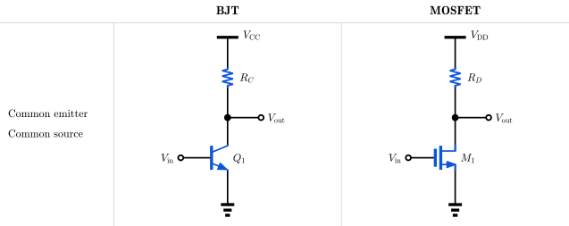
</div>
</div>
<p><strong>Razavi, Example 4.11</strong> (BJT)</p>
<p>The circuit of Example 4-10 is changed: the collector is now joined to the <span class="math notranslate nohighlight">\(1.8\,\mathrm{V}\)</span> supply through <span class="math notranslate nohighlight">\(R_C=100\,\Omega\)</span>, and the output is the collector voltage <span class="math notranslate nohighlight">\(V_{out}\)</span>. Base drive as before: <span class="math notranslate nohighlight">\(800\,\mathrm{mV}\)</span> battery plus <span class="math notranslate nohighlight">\(v_1\)</span>; <span class="math notranslate nohighlight">\(I_S=3\times10^{-16}\,\mathrm{A}\)</span>, <span class="math notranslate nohighlight">\(\beta=100\)</span>. (a) Verify that <span class="math notranslate nohighlight">\(Q_1\)</span> is in the active mode. (b) Find the change of <span class="math notranslate nohighlight">\(V_{out}\)</span> for <span class="math notranslate nohighlight">\(v_1=1\,\mathrm{mV}\)</span>.</p>
<p>Given: <span class="math notranslate nohighlight">\(I_S=3\times10^{-16}\,\mathrm{A}\)</span>, <span class="math notranslate nohighlight">\(V_{BE}=0.8\,\mathrm{V}\)</span>, <span class="math notranslate nohighlight">\(V_{CC}=1.8\,\mathrm{V}\)</span>, <span class="math notranslate nohighlight">\(R_C=100\,\Omega\)</span>, <span class="math notranslate nohighlight">\(v_1=1\,\mathrm{mV}\)</span></p>
<ol class="arabic simple">
<li><p><strong>(a) Bias current.</strong> <span class="math notranslate nohighlight">\(I_C=I_S\exp(V_{BE}/V_T)=6.92\,\mathrm{mA}\)</span> (from Example 4-10).</p></li>
<li><p><strong>(a) Drop on <span class="math notranslate nohighlight">\(R_C\)</span>.</strong> <span class="math notranslate nohighlight">\(R_CI_C=100\,\Omega\times6.92\,\mathrm{mA}=0.692\,\mathrm{V}\)</span>.</p></li>
<li><p><strong>(a) Output bias.</strong> <span class="math notranslate nohighlight">\(V_{out}=V_{CC}-R_CI_C=1.8-0.692=1.108\,\mathrm{V}\)</span>.</p></li>
<li><p><strong>(a) Region.</strong> <span class="math notranslate nohighlight">\(V_C=1.108\,\mathrm{V}&gt;V_B=0.8\,\mathrm{V}\)</span>, so the B-C junction is reverse-biased: active mode.</p></li>
<li><p><strong>(b) Change in collector current.</strong> From Example 4-10, <span class="math notranslate nohighlight">\(\Delta I_C=g_mv_1=0.266\,\mathrm{mA}\)</span> (<span class="math notranslate nohighlight">\(g_m=0.266\,\mathrm{S}\)</span>).</p></li>
<li><p><strong>(b) Change in output.</strong> <span class="math notranslate nohighlight">\(\Delta V_{out}=-R_C\,\Delta I_C=-100\,\Omega\times0.266\,\mathrm{mA}=-26.6\,\mathrm{mV}\)</span>: the output falls when the input rises.</p></li>
<li><p><strong>Gain.</strong> <span class="math notranslate nohighlight">\(\lvert A_v\rvert=g_mR_C=0.266\,\mathrm{S}\times100\,\Omega=26.6\)</span> (negative sign).</p></li>
</ol>
<p><strong>Result.</strong> <span class="math notranslate nohighlight">\(V_{out}=1.108\,\mathrm{V}\)</span> (active); <span class="math notranslate nohighlight">\(\Delta V_{out}=-26.6\,\mathrm{mV}\)</span> for <span class="math notranslate nohighlight">\(v_1=1\,\mathrm{mV}\)</span>, gain <span class="math notranslate nohighlight">\(-26.6\)</span></p>
<p>Checked: agrees with the answer in the book.</p>
<p><strong>Razavi, Example 4.12</strong> (BJT)</p>
<p>In the stage of Example 4-11 (<span class="math notranslate nohighlight">\(800\,\mathrm{mV}\)</span> bias at the base, <span class="math notranslate nohighlight">\(I_S=3\times10^{-16}\,\mathrm{A}\)</span>, so <span class="math notranslate nohighlight">\(I_C=6.92\,\mathrm{mA}\)</span> and <span class="math notranslate nohighlight">\(g_m=1/(3.76\,\Omega)\)</span>) the collector resistor is raised to <span class="math notranslate nohighlight">\(R_C=200\,\Omega\)</span> and the supply to <span class="math notranslate nohighlight">\(V_{CC}=3.6\,\mathrm{V}\)</span>. Verify that the transistor stays in the active mode and find the voltage gain.</p>
<p>Given: <span class="math notranslate nohighlight">\(R_C=200\,\Omega\)</span>, <span class="math notranslate nohighlight">\(V_{CC}=3.6\,\mathrm{V}\)</span>, <span class="math notranslate nohighlight">\(V_{BE}=0.8\,\mathrm{V}\)</span>, <span class="math notranslate nohighlight">\(I_C=6.92\,\mathrm{mA}\)</span>, <span class="math notranslate nohighlight">\(g_m=0.266\,\mathrm{S}\)</span></p>
<ol class="arabic simple">
<li><p><strong>Bias current.</strong> <span class="math notranslate nohighlight">\(I_C\)</span> depends only on <span class="math notranslate nohighlight">\(V_{BE}\)</span>, so it is still <span class="math notranslate nohighlight">\(6.92\,\mathrm{mA}\)</span>.</p></li>
<li><p><strong>Drop on <span class="math notranslate nohighlight">\(R_C\)</span>.</strong> <span class="math notranslate nohighlight">\(R_CI_C=200\,\Omega\times6.92\,\mathrm{mA}=1.384\,\mathrm{V}\)</span>.</p></li>
<li><p><strong>Collector voltage.</strong> <span class="math notranslate nohighlight">\(V_C=3.6-1.384=2.216\,\mathrm{V}&gt;V_B=0.8\,\mathrm{V}\)</span>: active mode.</p></li>
<li><p><strong>Why the supply had to rise.</strong> With <span class="math notranslate nohighlight">\(V_{CC}=1.8\,\mathrm{V}\)</span> one would get <span class="math notranslate nohighlight">\(V_C=1.8-1.384=0.416\,\mathrm{V}&lt;0.8\,\mathrm{V}\)</span>: the B-C junction would be forward-biased by about 0.38 V and the transistor would leave the active mode.</p></li>
<li><p><strong>Small-signal model.</strong> <span class="math notranslate nohighlight">\(V_{CC}\)</span> is an ac ground, <span class="math notranslate nohighlight">\(v_\pi=v_1\)</span>, and the controlled current <span class="math notranslate nohighlight">\(g_mv_\pi\)</span> flows from the output node through <span class="math notranslate nohighlight">\(R_C\)</span> to ground: <span class="math notranslate nohighlight">\(v_{out}=-g_mv_\pi R_C=-g_mv_1R_C\)</span>.</p></li>
<li><p><strong>Gain.</strong> <span class="math notranslate nohighlight">\(\dfrac{v_{out}}{v_1}=-g_mR_C=-\dfrac{200\,\Omega}{3.76\,\Omega}=-53.2\)</span>: doubling <span class="math notranslate nohighlight">\(R_C\)</span> doubles the gain of Example 4-11.</p></li>
</ol>
<p><strong>Result.</strong> <span class="math notranslate nohighlight">\(V_C=2.216\,\mathrm{V}\)</span> (active); gain <span class="math notranslate nohighlight">\(=-g_mR_C=-53.2\)</span></p>
<p>Checked: agrees with the answer in the book.</p>
<p><strong>Razavi, Example 5.20</strong> (BJT)</p>
<p>A common-emitter stage with resistive collector load (core, Early effect neglected) must provide an input impedance <span class="math notranslate nohighlight">\(R_{in}\)</span> and an output impedance <span class="math notranslate nohighlight">\(R_{out}\)</span>. What is its voltage gain, in terms of <span class="math notranslate nohighlight">\(R_{in}\)</span>, <span class="math notranslate nohighlight">\(R_{out}\)</span> and <span class="math notranslate nohighlight">\(\beta\)</span>?</p>
<p>Given: Symbolic: <span class="math notranslate nohighlight">\(R_{in}\)</span>, <span class="math notranslate nohighlight">\(R_{out}\)</span>, <span class="math notranslate nohighlight">\(\beta\)</span>. Numerical check: <span class="math notranslate nohighlight">\(R_{in}=2.6\,\mathrm{k}\Omega\)</span>, <span class="math notranslate nohighlight">\(R_{out}=1\,\mathrm{k}\Omega\)</span>, <span class="math notranslate nohighlight">\(\beta=100\)</span></p>
<ol class="arabic simple">
<li><p><strong>Impedances of the CE core.</strong> <span class="math notranslate nohighlight">\(R_{in}=r_\pi=\beta/g_m\)</span> and <span class="math notranslate nohighlight">\(R_{out}=R_C\)</span>.</p></li>
<li><p><strong>Gain.</strong> <span class="math notranslate nohighlight">\(A_v=-g_mR_C\)</span>.</p></li>
<li><p><strong>Eliminate <span class="math notranslate nohighlight">\(g_m\)</span> and <span class="math notranslate nohighlight">\(R_C\)</span>.</strong> <span class="math notranslate nohighlight">\(g_m=\beta/R_{in}\)</span> and <span class="math notranslate nohighlight">\(R_C=R_{out}\)</span>, therefore <span class="math notranslate nohighlight">\(A_v=-\dfrac{\beta}{R_{in}}R_{out}=-\beta\dfrac{R_{out}}{R_{in}}\)</span>.</p></li>
<li><p><strong>Consequence.</strong> Once <span class="math notranslate nohighlight">\(R_{in}\)</span> and <span class="math notranslate nohighlight">\(R_{out}\)</span> are specified the gain is fixed: the specifications are coupled.</p></li>
<li><p><strong>Numerical check.</strong> <span class="math notranslate nohighlight">\(g_m=\dfrac{100}{2.6\,\mathrm{k}\Omega}=38.5\,\mathrm{mS}\)</span> (i.e. <span class="math notranslate nohighlight">\(I_C=1\,\mathrm{mA}\)</span>), <span class="math notranslate nohighlight">\(-g_mR_C=-38.5\)</span> and <span class="math notranslate nohighlight">\(-\beta R_{out}/R_{in}=-38.5\)</span>.</p></li>
</ol>
<p><strong>Result.</strong> <span class="math notranslate nohighlight">\(A_v=-\beta\,\dfrac{R_{out}}{R_{in}}\)</span></p>
<p>Checked: agrees with the answer in the book.</p>
<p><strong>Razavi, Example 5.21</strong> (BJT)</p>
<p>A common-emitter stage (emitter grounded, collector resistor <span class="math notranslate nohighlight">\(R_C=1\,\mathrm{k}\Omega\)</span> to the supply, input at the base) is biased at <span class="math notranslate nohighlight">\(I_C=1\,\mathrm{mA}\)</span>. Given <span class="math notranslate nohighlight">\(\beta=100\)</span> and Early voltage <span class="math notranslate nohighlight">\(V_A=10\,\mathrm{V}\)</span>, find the small-signal voltage gain and the input and output impedances. Use <span class="math notranslate nohighlight">\(V_T=26\,\mathrm{mV}\)</span>.</p>
<p>Given: <span class="math notranslate nohighlight">\(I_C=1\,\mathrm{mA}\)</span>, <span class="math notranslate nohighlight">\(R_C=1\,\mathrm{k}\Omega\)</span>, <span class="math notranslate nohighlight">\(\beta=100\)</span>, <span class="math notranslate nohighlight">\(V_A=10\,\mathrm{V}\)</span>, <span class="math notranslate nohighlight">\(V_T=26\,\mathrm{mV}\)</span></p>
<ol class="arabic simple">
<li><p><strong>Small-signal parameters.</strong> <span class="math notranslate nohighlight">\(g_m=\dfrac{I_C}{V_T}=\dfrac1{26\,\Omega}\)</span>, <span class="math notranslate nohighlight">\(r_O=\dfrac{V_A}{I_C}=10\,\mathrm{k}\Omega\)</span>, <span class="math notranslate nohighlight">\(r_\pi=\dfrac{\beta}{g_m}=2.6\,\mathrm{k}\Omega\)</span>.</p></li>
<li><p><strong>Load seen by the collector.</strong> <span class="math notranslate nohighlight">\(r_O\)</span> is in parallel with <span class="math notranslate nohighlight">\(R_C\)</span>: <span class="math notranslate nohighlight">\(R_C\parallel r_O=1\,\mathrm{k}\Omega\parallel10\,\mathrm{k}\Omega=909\,\Omega\)</span>.</p></li>
<li><p><strong>Gain.</strong> <span class="math notranslate nohighlight">\(A_v=-g_m(R_C\parallel r_O)=-\dfrac{909\,\Omega}{26\,\Omega}=-35.0\)</span>. (Without the Early effect: <span class="math notranslate nohighlight">\(-38.5\)</span>.)</p></li>
<li><p><strong>Input impedance.</strong> <span class="math notranslate nohighlight">\(R_{in}=r_\pi=2.60\,\mathrm{k}\Omega\)</span>.</p></li>
<li><p><strong>Output impedance.</strong> <span class="math notranslate nohighlight">\(R_{out}=R_C\parallel r_O=0.909\,\mathrm{k}\Omega\)</span>.</p></li>
</ol>
<p><strong>Result.</strong> <span class="math notranslate nohighlight">\(A_v\approx-35.0\)</span> (<span class="math notranslate nohighlight">\(-38.5\)</span> if <span class="math notranslate nohighlight">\(V_A=\infty\)</span>), <span class="math notranslate nohighlight">\(R_{in}=2.60\,\mathrm{k}\Omega\)</span>, <span class="math notranslate nohighlight">\(R_{out}=0.909\,\mathrm{k}\Omega\)</span></p>
<p>Checked: agrees with the answer in the book.</p>
<p><strong>Razavi, Example 7.4</strong> (MOSFET)</p>
<p>An NMOS common-source stage has input at the gate, <span class="math notranslate nohighlight">\(R_D=1\,\mathrm{k}\Omega\)</span> to <span class="math notranslate nohighlight">\(V_{DD}=1.8\,\mathrm{V}\)</span>, <span class="math notranslate nohighlight">\(W/L=10/0.18\)</span> and a bias current <span class="math notranslate nohighlight">\(I_D=1\,\mathrm{mA}\)</span>. Find the small-signal voltage gain and verify that <span class="math notranslate nohighlight">\(M_1\)</span> is in saturation.</p>
<p>Given: <span class="math notranslate nohighlight">\(\mu_nC_{ox}=100\,\mu\mathrm{A/V^2}\)</span>, <span class="math notranslate nohighlight">\(V_{TH}=0.5\,\mathrm{V}\)</span>, <span class="math notranslate nohighlight">\(\lambda=0\)</span>, <span class="math notranslate nohighlight">\(W/L=10/0.18\)</span>, <span class="math notranslate nohighlight">\(I_D=1\,\mathrm{mA}\)</span>, <span class="math notranslate nohighlight">\(R_D=1\,\mathrm{k}\Omega\)</span>, <span class="math notranslate nohighlight">\(V_{DD}=1.8\,\mathrm{V}\)</span></p>
<ol class="arabic simple">
<li><p><strong>Transconductance.</strong> <span class="math notranslate nohighlight">\(g_m=\sqrt{2\mu_nC_{ox}\dfrac WL I_D}=\sqrt{2\cdot100\,\mu\mathrm{A/V^2}\cdot55.6\cdot1\,\mathrm{mA}}=3.33\,\mathrm{mS}=\dfrac{1}{300\,\Omega}\)</span>.</p></li>
<li><p><strong>Gain.</strong> With <span class="math notranslate nohighlight">\(\lambda=0\)</span>: <span class="math notranslate nohighlight">\(A_v=-g_mR_D=-3.33\,\mathrm{mS}\cdot1\,\mathrm{k}\Omega=-3.33\)</span>.</p></li>
<li><p><strong>Gate-source voltage.</strong> <span class="math notranslate nohighlight">\(V_{GS}=V_{TH}+\sqrt{\dfrac{2I_D}{\mu_nC_{ox}W/L}}=0.5+\sqrt{\dfrac{2\,\mathrm{mA}}{5.556\,\mathrm{mA/V^2}}}=1.1\,\mathrm{V}\)</span>, so <span class="math notranslate nohighlight">\(V_{GS}-V_{TH}=0.6\,\mathrm{V}\)</span>.</p></li>
<li><p><strong>Drain voltage.</strong> <span class="math notranslate nohighlight">\(V_D=V_{DD}-R_DI_D=1.8-1=0.8\,\mathrm{V}\)</span>.</p></li>
<li><p><strong>Region check.</strong> Saturation needs <span class="math notranslate nohighlight">\(V_D\ge V_{GS}-V_{TH}\)</span>: <span class="math notranslate nohighlight">\(0.8\,\mathrm{V}&gt;0.6\,\mathrm{V}\)</span>, a margin of <span class="math notranslate nohighlight">\(0.2\,\mathrm{V}\)</span>. Doubling <span class="math notranslate nohighlight">\(R_D\)</span> to double the gain would need a <span class="math notranslate nohighlight">\(2\,\mathrm{V}\)</span> drop, so <span class="math notranslate nohighlight">\(M_1\)</span> would leave saturation and <span class="math notranslate nohighlight">\(g_m\)</span> would fall.</p></li>
</ol>
<p><strong>Result.</strong> <span class="math notranslate nohighlight">\(A_v=-3.33\)</span>; <span class="math notranslate nohighlight">\(V_D=0.8\,\mathrm{V}\)</span> exceeds <span class="math notranslate nohighlight">\(V_{GS}-V_{TH}=0.6\,\mathrm{V}\)</span> by <span class="math notranslate nohighlight">\(0.2\,\mathrm{V}\)</span>, so saturated</p>
<p>Checked: agrees with the answer in the book.</p>
<p><strong>Razavi, Example 9.7</strong> (MOSFET)</p>
<p>A common-source NMOS stage has input at the gate, a drain resistor <span class="math notranslate nohighlight">\(R_D\)</span> to the supply, and its output at the drain. Find the short-circuit transconductance <span class="math notranslate nohighlight">\(G_m=i_{out}/v_{in}\)</span> obtained by shorting the output node to ac ground.</p>
<p>Given: <span class="math notranslate nohighlight">\(g_{m1}\)</span>, <span class="math notranslate nohighlight">\(r_{O1}\)</span>, <span class="math notranslate nohighlight">\(R_D\)</span> (symbolic); check values <span class="math notranslate nohighlight">\(g_m=2\,\mathrm{mS}\)</span>, <span class="math notranslate nohighlight">\(r_O=20\,\mathrm{k}\Omega\)</span>, <span class="math notranslate nohighlight">\(R_D=5\,\mathrm{k}\Omega\)</span></p>
<ol class="arabic simple">
<li><p><strong>Define the test.</strong> <span class="math notranslate nohighlight">\(G_m=\left.\dfrac{i_{out}}{v_{in}}\right\rvert_{v_{out}=0}\)</span>: force the drain to ac ground and measure the current flowing into the short.</p></li>
<li><p><strong>Current in <span class="math notranslate nohighlight">\(R_D\)</span>.</strong> The top of <span class="math notranslate nohighlight">\(R_D\)</span> is the supply (ac ground) and the bottom is the shorted output (ac ground), so <span class="math notranslate nohighlight">\(R_D\)</span> carries no current.</p></li>
<li><p><strong>Current in <span class="math notranslate nohighlight">\(r_{O1}\)</span>.</strong> The drain is at ac zero and the source is at ground, so <span class="math notranslate nohighlight">\(r_{O1}\)</span> also has no voltage across it and carries no current.</p></li>
<li><p><strong>Short-circuit current.</strong> All of the transistor current goes through the short: <span class="math notranslate nohighlight">\(i_{out}=g_{m1}v_{in}\)</span> (direction as drawn by the book).</p></li>
<li><p><strong>Result.</strong> <span class="math notranslate nohighlight">\(G_m=\dfrac{i_{out}}{v_{in}}=g_{m1}\)</span>: here the circuit transconductance equals that of the transistor.</p></li>
<li><p><strong>Cross-check.</strong> With a small load <span class="math notranslate nohighlight">\(R_L\)</span> the gain is <span class="math notranslate nohighlight">\(v_{out}/v_{in}=-g_m(R_D\parallel r_O\parallel R_L)\)</span>, and <span class="math notranslate nohighlight">\(\lvert v_{out}/(R_Lv_{in})\rvert\to g_m\)</span> as <span class="math notranslate nohighlight">\(R_L\to0\)</span>.</p></li>
</ol>
<p><strong>Result.</strong> <span class="math notranslate nohighlight">\(G_m=g_{m1}\)</span></p>
<p>Checked: agrees with the answer in the book.</p>
<p><strong>Razavi, Problem 5.37</strong> (BJT)</p>
<p>A common-emitter stage with grounded emitter and <span class="math notranslate nohighlight">\(R_C=1\,\mathrm{k}\Omega\)</span> uses a hypothetical transistor that obeys <span class="math notranslate nohighlight">\(I_C=I_S\exp\frac{V_{BE}}{2V_T}\)</span> and has no Early effect. Find the voltage gain at a bias current of <span class="math notranslate nohighlight">\(1\,\mathrm{mA}\)</span>.</p>
<p>Given: <span class="math notranslate nohighlight">\(I_C=I_S\exp(V_{BE}/2V_T)\)</span>, <span class="math notranslate nohighlight">\(I_C=1\,\mathrm{mA}\)</span>, <span class="math notranslate nohighlight">\(R_C=1\,\mathrm{k}\Omega\)</span>, <span class="math notranslate nohighlight">\(V_A=\infty\)</span>, <span class="math notranslate nohighlight">\(V_T=26\,\mathrm{mV}\)</span></p>
<ol class="arabic simple">
<li><p><strong>Transconductance.</strong> <span class="math notranslate nohighlight">\(g_m=\dfrac{\partial I_C}{\partial V_{BE}}=\dfrac{I_S}{2V_T}\exp\dfrac{V_{BE}}{2V_T}=\dfrac{I_C}{2V_T}\)</span>.</p></li>
<li><p><strong>Value.</strong> <span class="math notranslate nohighlight">\(g_m=1\,\mathrm{mA}/52\,\mathrm{mV}=19.2\,\mathrm{mS}\)</span>.</p></li>
<li><p><strong>Gain.</strong> <span class="math notranslate nohighlight">\(A_v=-g_mR_C=-19.2\)</span>, half of what a normal bipolar transistor gives at the same current.</p></li>
</ol>
<p><strong>Result.</strong> <span class="math notranslate nohighlight">\(A_v=-g_mR_C=-\dfrac{I_CR_C}{2V_T}=-19.2\)</span></p>
<p>Checked by computation; the book gives no answer.</p>
<p><strong>Razavi, Problem 7.17</strong> (MOSFET)</p>
<p>A common-source stage: NMOS <span class="math notranslate nohighlight">\(M_1\)</span> (<span class="math notranslate nohighlight">\(W/L=30/0.18\)</span>, <span class="math notranslate nohighlight">\(\lambda=0\)</span>), source grounded, input at the gate, <span class="math notranslate nohighlight">\(R_D=2\,\mathrm{k}\Omega\)</span> from <span class="math notranslate nohighlight">\(V_{DD}=1.8\,\mathrm{V}\)</span> to the drain (output). (a) Find the gate voltage for <span class="math notranslate nohighlight">\(I_D=0.5\,\mathrm{mA}\)</span> and verify saturation. (b) Find the voltage gain at that bias. Default device data.</p>
<p>Given: <span class="math notranslate nohighlight">\(V_{DD}=1.8\,\mathrm{V}\)</span>, <span class="math notranslate nohighlight">\(R_D=2\,\mathrm{k}\Omega\)</span>, <span class="math notranslate nohighlight">\(W/L=30/0.18\)</span>, <span class="math notranslate nohighlight">\(I_D=0.5\,\mathrm{mA}\)</span>, <span class="math notranslate nohighlight">\(\mu_nC_{ox}=200\,\mu\mathrm{A/V^2}\)</span>, <span class="math notranslate nohighlight">\(\mu_pC_{ox}=100\,\mu\mathrm{A/V^2}\)</span>, <span class="math notranslate nohighlight">\(\lvert V_{TH}\rvert=0.4\,\mathrm{V}\)</span>, <span class="math notranslate nohighlight">\(\lambda=0\)</span></p>
<ol class="arabic simple">
<li><p><strong>(a) Overdrive.</strong> <span class="math notranslate nohighlight">\(V_{GS}-V_{TH}=\sqrt{\dfrac{2(0.5\,\mathrm{mA})}{(200\,\mu)(166.7)}}=0.173\,\mathrm{V}\)</span></p></li>
<li><p><strong>(a) Gate voltage.</strong> <span class="math notranslate nohighlight">\(V_{GS}=0.4+0.173=0.573\,\mathrm{V}\)</span></p></li>
<li><p><strong>(a) Saturation.</strong> <span class="math notranslate nohighlight">\(V_{DS}=1.8-(0.5\,\mathrm{mA})(2\,\mathrm{k}\Omega)=0.800\,\mathrm{V}&gt;0.173\,\mathrm{V}\)</span></p></li>
<li><p><strong>(b) Transconductance.</strong> <span class="math notranslate nohighlight">\(g_m=\dfrac{2I_D}{V_{GS}-V_{TH}}=5.77\,\mathrm{mS}\)</span></p></li>
<li><p><strong>(b) Gain.</strong> <span class="math notranslate nohighlight">\(A_v=-g_mR_D=-(5.77\,\mathrm{mS})(2\,\mathrm{k}\Omega)=-11.5\)</span></p></li>
</ol>
<p><strong>Result.</strong> (a) <span class="math notranslate nohighlight">\(V_{GS}=0.573\,\mathrm{V}\)</span>, saturated (<span class="math notranslate nohighlight">\(V_{DS}=0.8\,\mathrm{V}\)</span>); (b) <span class="math notranslate nohighlight">\(A_v=-11.5\)</span></p>
<p>Checked by computation; the book gives no answer.</p>
<p><strong>Razavi, Problem 7.18</strong> (MOSFET), the same as Razavi, Problem 7.17 with other values</p>
<p>The common-source stage of Problem 7.17 (<span class="math notranslate nohighlight">\(R_D=2\,\mathrm{k}\Omega\)</span>, <span class="math notranslate nohighlight">\(V_{DD}=1.8\,\mathrm{V}\)</span>, <span class="math notranslate nohighlight">\(\lambda=0\)</span>) now uses <span class="math notranslate nohighlight">\(W/L=20/0.18\)</span> and <span class="math notranslate nohighlight">\(I_D=0.25\,\mathrm{mA}\)</span>. (a) Find the gate bias. (b) Keeping that gate voltage, how far can <span class="math notranslate nohighlight">\(W/L\)</span> grow before <span class="math notranslate nohighlight">\(M_1\)</span> leaves saturation, and what is the largest gain reached? Default device data.</p>
<p>Given: <span class="math notranslate nohighlight">\(V_{DD}=1.8\,\mathrm{V}\)</span>, <span class="math notranslate nohighlight">\(R_D=2\,\mathrm{k}\Omega\)</span>, <span class="math notranslate nohighlight">\(W/L=20/0.18\)</span>, <span class="math notranslate nohighlight">\(I_D=0.25\,\mathrm{mA}\)</span>, <span class="math notranslate nohighlight">\(\mu_nC_{ox}=200\,\mu\mathrm{A/V^2}\)</span>, <span class="math notranslate nohighlight">\(\mu_pC_{ox}=100\,\mu\mathrm{A/V^2}\)</span>, <span class="math notranslate nohighlight">\(\lvert V_{TH}\rvert=0.4\,\mathrm{V}\)</span>, <span class="math notranslate nohighlight">\(\lambda=0\)</span></p>
<ol class="arabic simple">
<li><p><strong>(a) Overdrive.</strong> <span class="math notranslate nohighlight">\(V_{GS}-V_{TH}=\sqrt{\dfrac{2(0.25\,\mathrm{mA})}{(200\,\mu)(111.1)}}=0.150\,\mathrm{V}\)</span></p></li>
<li><p><strong>(a) Gate voltage.</strong> <span class="math notranslate nohighlight">\(V_{GS}=0.550\,\mathrm{V}\)</span> (<span class="math notranslate nohighlight">\(V_{DS}=1.30\,\mathrm{V}\)</span>, saturated)</p></li>
<li><p><strong>(b) Edge of saturation.</strong> With <span class="math notranslate nohighlight">\(V_{GS}\)</span> fixed, <span class="math notranslate nohighlight">\(I_D\propto W/L\)</span>; saturation ends when <span class="math notranslate nohighlight">\(V_{DS}=0.15\,\mathrm{V}\)</span>: <span class="math notranslate nohighlight">\(I_D=\dfrac{1.8-0.15}{2\,\mathrm{k}\Omega}=0.825\,\mathrm{mA}\)</span></p></li>
<li><p><strong>(b) Largest W/L.</strong> <span class="math notranslate nohighlight">\(\dfrac{W}{L}=\dfrac{2(0.825\,\mathrm{mA})}{(200\,\mu)(0.15)^2}=367\)</span>, i.e. <span class="math notranslate nohighlight">\(3.30\)</span> times the original (<span class="math notranslate nohighlight">\(W=66\,\mu\mathrm{m}\)</span> at <span class="math notranslate nohighlight">\(L=0.18\,\mu\mathrm{m}\)</span>).</p></li>
<li><p><strong>(b) Largest gain.</strong> <span class="math notranslate nohighlight">\(\lvert A_v\rvert=g_mR_D=\dfrac{2I_DR_D}{V_{GS}-V_{TH}}=\dfrac{2(1.65\,\mathrm{V})}{0.15\,\mathrm{V}}=22.0\)</span></p></li>
</ol>
<p><strong>Result.</strong> (a) <span class="math notranslate nohighlight">\(V_{GS}=0.55\,\mathrm{V}\)</span>; (b) <span class="math notranslate nohighlight">\(W/L\)</span> up to <span class="math notranslate nohighlight">\(367\)</span> (<span class="math notranslate nohighlight">\(\times3.3\)</span>), <span class="math notranslate nohighlight">\(A_{v,max}=-22\)</span></p>
<p>Checked by computation; the book gives no answer.</p>
<p><strong>Razavi, Problem 7.34</strong> (MOSFET)</p>
<p>An NMOS CS stage has <span class="math notranslate nohighlight">\(R_D=1\,\mathrm{k}\Omega\)</span> from <span class="math notranslate nohighlight">\(V_{DD}=1.8\,\mathrm{V}\)</span> to the drain (output), source grounded, and carries <span class="math notranslate nohighlight">\(1\,\mathrm{mA}\)</span> with a gate voltage of <span class="math notranslate nohighlight">\(1\,\mathrm{V}\)</span>; <span class="math notranslate nohighlight">\(\lambda=0.1\,\mathrm{V^{-1}}\)</span>. Find <span class="math notranslate nohighlight">\(W/L\)</span> and the voltage gain.</p>
<p>Given: <span class="math notranslate nohighlight">\(V_{DD}=1.8\,\mathrm{V}\)</span>, <span class="math notranslate nohighlight">\(R_D=1\,\mathrm{k}\Omega\)</span>, <span class="math notranslate nohighlight">\(I_D=1\,\mathrm{mA}\)</span>, <span class="math notranslate nohighlight">\(V_{GS}=1\,\mathrm{V}\)</span>, <span class="math notranslate nohighlight">\(\lambda=0.1\,\mathrm{V^{-1}}\)</span>; default data <span class="math notranslate nohighlight">\(\mu_nC_{ox}=200\,\mu\mathrm{A/V^2}\)</span>, <span class="math notranslate nohighlight">\(\mu_pC_{ox}=100\,\mu\mathrm{A/V^2}\)</span>, <span class="math notranslate nohighlight">\(V_{TH,n}=0.4\,\mathrm{V}\)</span>, <span class="math notranslate nohighlight">\(V_{TH,p}=-0.4\,\mathrm{V}\)</span></p>
<ol class="arabic simple">
<li><p><strong>Drain voltage.</strong> <span class="math notranslate nohighlight">\(V_{DS}=1.8-1\,\mathrm{k}\Omega\times1\,\mathrm{mA}=0.800\,\mathrm{V}&gt;V_{GS}-V_{TH}=0.600\,\mathrm{V}\)</span>: saturated</p></li>
<li><p><strong>Current equation.</strong> <span class="math notranslate nohighlight">\(I_D=\tfrac12\mu_nC_{ox}\dfrac{W}{L}(V_{GS}-V_{TH})^2(1+\lambda V_{DS})\)</span></p></li>
<li><p><strong>Aspect ratio.</strong> <span class="math notranslate nohighlight">\(\dfrac{W}{L}=\dfrac{1\,\mathrm{mA}}{\tfrac12(200\,\mu)(0.6)^2(1.08)}=25.7\)</span>, e.g. <span class="math notranslate nohighlight">\(4.63/0.18\)</span></p></li>
<li><p><strong>Small-signal parameters.</strong> <span class="math notranslate nohighlight">\(g_m=\dfrac{2I_D}{V_{GS}-V_{TH}}=3.33\,\mathrm{mS}\)</span>, <span class="math notranslate nohighlight">\(r_O=\dfrac{1}{\lambda I_D}=10.0\,\mathrm{k}\Omega\)</span></p></li>
<li><p><strong>Gain.</strong> <span class="math notranslate nohighlight">\(A_v=-g_m(R_D\parallel r_O)=-3.33\,\mathrm{mS}\times909\,\Omega=-3.03\)</span></p></li>
</ol>
<p><strong>Result.</strong> <span class="math notranslate nohighlight">\(W/L=25.7\)</span> (<span class="math notranslate nohighlight">\(\approx4.63/0.18\)</span>), <span class="math notranslate nohighlight">\(A_v=-3.03\)</span></p>
<p>Checked by computation; the book gives no answer.</p>
<p><strong>Razavi, Problem 7.35</strong> (MOSFET), the same as Razavi, Problem 7.34 with other values</p>
<p>Repeat Problem 7.34 with <span class="math notranslate nohighlight">\(\lambda=0\)</span>: NMOS CS stage, <span class="math notranslate nohighlight">\(R_D=1\,\mathrm{k}\Omega\)</span>, <span class="math notranslate nohighlight">\(V_{DD}=1.8\,\mathrm{V}\)</span>, <span class="math notranslate nohighlight">\(I_D=1\,\mathrm{mA}\)</span>, gate at <span class="math notranslate nohighlight">\(1\,\mathrm{V}\)</span>. Find <span class="math notranslate nohighlight">\(W/L\)</span> and the gain, and compare with Problem 7.34.</p>
<p>Given: <span class="math notranslate nohighlight">\(V_{DD}=1.8\,\mathrm{V}\)</span>, <span class="math notranslate nohighlight">\(R_D=1\,\mathrm{k}\Omega\)</span>, <span class="math notranslate nohighlight">\(I_D=1\,\mathrm{mA}\)</span>, <span class="math notranslate nohighlight">\(V_{GS}=1\,\mathrm{V}\)</span>, <span class="math notranslate nohighlight">\(\lambda=0\)</span>; default data <span class="math notranslate nohighlight">\(\mu_nC_{ox}=200\,\mu\mathrm{A/V^2}\)</span>, <span class="math notranslate nohighlight">\(\mu_pC_{ox}=100\,\mu\mathrm{A/V^2}\)</span>, <span class="math notranslate nohighlight">\(V_{TH,n}=0.4\,\mathrm{V}\)</span>, <span class="math notranslate nohighlight">\(V_{TH,p}=-0.4\,\mathrm{V}\)</span></p>
<ol class="arabic simple">
<li><p><strong>Aspect ratio.</strong> <span class="math notranslate nohighlight">\(\dfrac{W}{L}=\dfrac{2I_D}{\mu_nC_{ox}(V_{GS}-V_{TH})^2}=\dfrac{2\,\mathrm{mA}}{200\,\mu\times0.36}=27.8\)</span>, i.e. <span class="math notranslate nohighlight">\(5/0.18\)</span></p></li>
<li><p><strong>Saturation.</strong> <span class="math notranslate nohighlight">\(V_{DS}=0.800\,\mathrm{V}&gt;0.600\,\mathrm{V}\)</span></p></li>
<li><p><strong>Gain.</strong> <span class="math notranslate nohighlight">\(g_m=2I_D/(V_{GS}-V_{TH})=3.33\,\mathrm{mS}\)</span>, <span class="math notranslate nohighlight">\(A_v=-g_mR_D=-3.33\)</span></p></li>
<li><p><strong>Comparison.</strong> With <span class="math notranslate nohighlight">\(\lambda=0.1\,\mathrm{V^{-1}}\)</span> the required <span class="math notranslate nohighlight">\(W/L\)</span> is <span class="math notranslate nohighlight">\(0.926\)</span> times as large (the <span class="math notranslate nohighlight">\(1+\lambda V_{DS}\)</span> factor supplies extra current) and the gain <span class="math notranslate nohighlight">\(0.909\)</span> times as large (<span class="math notranslate nohighlight">\(r_O\)</span> in parallel with <span class="math notranslate nohighlight">\(R_D\)</span>)</p></li>
</ol>
<p><strong>Result.</strong> <span class="math notranslate nohighlight">\(W/L=27.8\)</span> (<span class="math notranslate nohighlight">\(5/0.18\)</span>), <span class="math notranslate nohighlight">\(A_v=-3.33\)</span>; channel-length modulation lowers the gain by about 9 % and <span class="math notranslate nohighlight">\(W/L\)</span> by about 7 %</p>
<p>Checked by computation; the book gives no answer.</p>
<p><strong>Razavi, Problem 10.1</strong> (BJT)</p>
<p>A common-emitter stage (Fig. 10.1): npn <span class="math notranslate nohighlight">\(Q_1\)</span> with grounded emitter, collector tied to <span class="math notranslate nohighlight">\(V_{CC}\)</span> through <span class="math notranslate nohighlight">\(R_C\)</span>, output <span class="math notranslate nohighlight">\(V_{out}\)</span> at the collector, base held at a fixed bias (the microphone signal is coupled in through a capacitor). The supply <span class="math notranslate nohighlight">\(V_{CC}\)</span> carries ripple. Treating <span class="math notranslate nohighlight">\(V_{CC}\)</span> as a small-signal input, find the small-signal gain <span class="math notranslate nohighlight">\(v_{out}/v_{cc}\)</span> with a finite Early voltage <span class="math notranslate nohighlight">\(V_A\)</span>.</p>
<p>Given: <span class="math notranslate nohighlight">\(R_C\)</span>, <span class="math notranslate nohighlight">\(r_O=V_A/I_C\)</span> finite, base bias and <span class="math notranslate nohighlight">\(v_{in}\)</span> set to zero</p>
<ol class="arabic simple">
<li><p><strong>Small-signal circuit.</strong> With the base at ac ground, <span class="math notranslate nohighlight">\(v_{BE}=0\)</span>, so the dependent source <span class="math notranslate nohighlight">\(g_mv_{BE}\)</span> is zero; only <span class="math notranslate nohighlight">\(r_O\)</span> (collector to ground) remains.</p></li>
<li><p><strong>Divider.</strong> <span class="math notranslate nohighlight">\(v_{out}\)</span> is the supply ripple divided between <span class="math notranslate nohighlight">\(R_C\)</span> (to <span class="math notranslate nohighlight">\(V_{CC}\)</span>) and <span class="math notranslate nohighlight">\(r_O\)</span> (to ground).</p></li>
<li><p><strong>Gain.</strong> <span class="math notranslate nohighlight">\(\dfrac{v_{out}}{v_{cc}}=\dfrac{r_O}{r_O+R_C}\)</span></p></li>
<li><p><strong>Limit.</strong> For <span class="math notranslate nohighlight">\(V_A\to\infty\)</span>, <span class="math notranslate nohighlight">\(r_O\to\infty\)</span> and the gain tends to <span class="math notranslate nohighlight">\(1\)</span>: the output follows the ripple entirely.</p></li>
<li><p><strong>Numeric check.</strong> For <span class="math notranslate nohighlight">\(R_C=1\,\mathrm{k}\Omega\)</span>, <span class="math notranslate nohighlight">\(r_O=10\,\mathrm{k}\Omega\)</span>: gain <span class="math notranslate nohighlight">\(=0.909\)</span>.</p></li>
</ol>
<p><strong>Result.</strong> <span class="math notranslate nohighlight">\(v_{out}/v_{cc}=r_O/(r_O+R_C)\)</span>, close to 1</p>
<p>Checked by computation; the book gives no answer.</p>
<p><strong>Sedra/Smith, Exercise 6.4</strong> (MOSFET)</p>
<p>An NMOS common-source amplifier has <span class="math notranslate nohighlight">\(R_D=10\,\mathrm{k}\Omega\)</span> to <span class="math notranslate nohighlight">\(V_{DD}=5\,\mathrm{V}\)</span>, dc gate bias <span class="math notranslate nohighlight">\(V_{GS}=2\,\mathrm{V}\)</span>, <span class="math notranslate nohighlight">\(V_t=1\,\mathrm{V}\)</span>, <span class="math notranslate nohighlight">\(\lambda=0\)</span>, <span class="math notranslate nohighlight">\(k_n'=20\,\mu\mathrm{A/V^2}\)</span>, <span class="math notranslate nohighlight">\(W/L=20\)</span>. A sinusoid of amplitude <span class="math notranslate nohighlight">\(0.2\,\mathrm{V}\)</span> is added to the gate bias. Find (a) <span class="math notranslate nohighlight">\(I_D\)</span> and <span class="math notranslate nohighlight">\(V_{DS}\)</span>, (b) <span class="math notranslate nohighlight">\(g_m\)</span>, (c) the voltage gain, (d) the range of <span class="math notranslate nohighlight">\(v_{DS}\)</span>, (e) the second-harmonic distortion.</p>
<p>Given: <span class="math notranslate nohighlight">\(V_{DD}=5\,\mathrm{V}\)</span>, <span class="math notranslate nohighlight">\(R_D=10\,\mathrm{k}\Omega\)</span>, <span class="math notranslate nohighlight">\(V_{GS}=2\,\mathrm{V}\)</span>, <span class="math notranslate nohighlight">\(V_t=1\,\mathrm{V}\)</span>, <span class="math notranslate nohighlight">\(k_n'(W/L)=0.4\,\mathrm{mA/V^2}\)</span>, <span class="math notranslate nohighlight">\(\hat v_{gs}=0.2\,\mathrm{V}\)</span></p>
<ol class="arabic simple">
<li><p><strong>(a) Bias point.</strong> <span class="math notranslate nohighlight">\(V_{OV}=2-1=1\,\mathrm{V}\)</span>; <span class="math notranslate nohighlight">\(I_D=\tfrac12k_nV_{OV}^2=\tfrac12\cdot0.4\cdot1=0.2\,\mathrm{mA}\)</span>; <span class="math notranslate nohighlight">\(V_{DS}=5-10\cdot0.2=3\,\mathrm{V}\)</span> (<span class="math notranslate nohighlight">\(&gt;V_{OV}\)</span>, saturation).</p></li>
<li><p><strong>(b) Transconductance.</strong> <span class="math notranslate nohighlight">\(g_m=k_nV_{OV}=0.4\,\mathrm{mA/V}\)</span>.</p></li>
<li><p><strong>(c) Gain.</strong> <span class="math notranslate nohighlight">\(A_v=-g_mR_D=-0.4\cdot10=-4\,\mathrm{V/V}\)</span>.</p></li>
<li><p><strong>(d) Output swing.</strong> <span class="math notranslate nohighlight">\(\hat v_{ds}=4\cdot0.2=0.8\,\mathrm{V}\)</span>, so <span class="math notranslate nohighlight">\(2.2\,\mathrm{V}\le v_{DS}\le3.8\,\mathrm{V}\)</span>, always above <span class="math notranslate nohighlight">\(V_{OV}\)</span> (about <span class="math notranslate nohighlight">\(0.8\)</span> to <span class="math notranslate nohighlight">\(1.2\,\mathrm{V}\)</span> over the cycle): saturation holds.</p></li>
<li><p><strong>(e) Total current.</strong> <span class="math notranslate nohighlight">\(i_D=\tfrac12k_n(V_{OV}+v_{gs})^2=I_D+k_nV_{OV}v_{gs}+\tfrac12k_nv_{gs}^2\)</span>. With <span class="math notranslate nohighlight">\(v_{gs}=0.2\sin\omega t\)</span>: <span class="math notranslate nohighlight">\(i_D=200+80\sin\omega t+8\sin^2\omega t\ \mu\mathrm{A}\)</span>.</p></li>
<li><p><strong>(e) Harmonic content.</strong> <span class="math notranslate nohighlight">\(8\sin^2\omega t=4-4\cos2\omega t\)</span>, so <span class="math notranslate nohighlight">\(i_D=204+80\sin\omega t-4\cos2\omega t\ \mu\mathrm{A}\)</span>: <span class="math notranslate nohighlight">\(I_D\)</span> shifts by <span class="math notranslate nohighlight">\(4\,\mu\mathrm{A}\)</span>.</p></li>
<li><p><strong>(e) Distortion.</strong> <span class="math notranslate nohighlight">\(\mathrm{2HD}=\dfrac{4}{80}=0.05=5\%\)</span> (equivalently <span class="math notranslate nohighlight">\(\hat v_{gs}/4V_{OV}\)</span>).</p></li>
</ol>
<p><strong>Result.</strong> <span class="math notranslate nohighlight">\(I_D=0.2\,\mathrm{mA}\)</span>, <span class="math notranslate nohighlight">\(V_{DS}=3\,\mathrm{V}\)</span>, <span class="math notranslate nohighlight">\(g_m=0.4\,\mathrm{mA/V}\)</span>, <span class="math notranslate nohighlight">\(A_v=-4\,\mathrm{V/V}\)</span>, <span class="math notranslate nohighlight">\(v_{DS}\in[2.2,3.8]\,\mathrm{V}\)</span>, 2HD <span class="math notranslate nohighlight">\(=5\%\)</span></p>
<p>Checked: agrees with the answer in the solutions manual.</p>
<p><strong>Sedra/Smith, Exercise 6.16</strong> (BJT)</p>
<p>A common-emitter amplifier has <span class="math notranslate nohighlight">\(R_C=10\,\mathrm{k}\Omega\)</span>, <span class="math notranslate nohighlight">\(V_{CC}=15\,\mathrm{V}\)</span>, <span class="math notranslate nohighlight">\(I_C=1\,\mathrm{mA}\)</span>, <span class="math notranslate nohighlight">\(\beta=100\)</span> and <span class="math notranslate nohighlight">\(V_T=25\,\mathrm{mV}\)</span>. A small signal <span class="math notranslate nohighlight">\(v_{be}=5\sin\omega t\ \mathrm{mV}\)</span> is applied. Find the gain, the collector voltage <span class="math notranslate nohighlight">\(v_C(t)\)</span> and the base current <span class="math notranslate nohighlight">\(i_B(t)\)</span>.</p>
<p>Given: <span class="math notranslate nohighlight">\(V_{CC}=15\,\mathrm{V}\)</span>, <span class="math notranslate nohighlight">\(R_C=10\,\mathrm{k}\Omega\)</span>, <span class="math notranslate nohighlight">\(I_C=1\,\mathrm{mA}\)</span>, <span class="math notranslate nohighlight">\(\beta=100\)</span>, <span class="math notranslate nohighlight">\(v_{be}=5\sin\omega t\ \mathrm{mV}\)</span></p>
<ol class="arabic simple">
<li><p><strong>Transconductance.</strong> <span class="math notranslate nohighlight">\(g_m=1/0.025=40\,\mathrm{mA/V}\)</span>.</p></li>
<li><p><strong>Gain.</strong> <span class="math notranslate nohighlight">\(A_v=-g_mR_C=-40\cdot10=-400\,\mathrm{V/V}\)</span>.</p></li>
<li><p><strong>DC collector voltage.</strong> <span class="math notranslate nohighlight">\(V_C=15-1\cdot10=5\,\mathrm{V}\)</span>.</p></li>
<li><p><strong>Collector voltage.</strong> <span class="math notranslate nohighlight">\(v_C=5+A_vv_{be}=5-400\cdot0.005\sin\omega t=5-2\sin\omega t\ \mathrm{V}\)</span>.</p></li>
<li><p><strong>Base current.</strong> <span class="math notranslate nohighlight">\(I_B=I_C/\beta=10\,\mu\mathrm{A}\)</span>; <span class="math notranslate nohighlight">\(i_b=g_mv_{be}/\beta=40\cdot0.005/100\,\mathrm{mA}=2\sin\omega t\ \mu\mathrm{A}\)</span>.</p></li>
<li><p><strong>Total.</strong> <span class="math notranslate nohighlight">\(i_B=10+2\sin\omega t\ \mu\mathrm{A}\)</span>.</p></li>
</ol>
<p><strong>Result.</strong> <span class="math notranslate nohighlight">\(A_v=-400\,\mathrm{V/V}\)</span>, <span class="math notranslate nohighlight">\(v_C=5-2\sin\omega t\ \mathrm{V}\)</span>, <span class="math notranslate nohighlight">\(i_B=10+2\sin\omega t\ \mu\mathrm{A}\)</span></p>
<p>Checked: agrees with the answer in the solutions manual.</p>
<p><strong>Sedra/Smith, Problem 6.2</strong> (MOSFET)</p>
<p>An NMOS common-source amplifier (<span class="math notranslate nohighlight">\(V_{DD}=5\,\mathrm{V}\)</span>, <span class="math notranslate nohighlight">\(V_t=0.5\,\mathrm{V}\)</span>, <span class="math notranslate nohighlight">\(k_n=10\,\mathrm{mA/V^2}\)</span>, resistor <span class="math notranslate nohighlight">\(R_D\)</span> in the drain) is biased at <span class="math notranslate nohighlight">\(V_{OV}=0.2\,\mathrm{V}\)</span> and <span class="math notranslate nohighlight">\(V_{DS}=1\,\mathrm{V}\)</span>. Find <span class="math notranslate nohighlight">\(I_D\)</span>, <span class="math notranslate nohighlight">\(R_D\)</span>, the coordinates of point B (edge of saturation), the small-signal gain <span class="math notranslate nohighlight">\(A_v\)</span>, and the largest peak input signal that keeps the transistor in saturation.</p>
<p>Given: <span class="math notranslate nohighlight">\(V_{DD}=5\,\mathrm{V}\)</span>, <span class="math notranslate nohighlight">\(V_t=0.5\,\mathrm{V}\)</span>, <span class="math notranslate nohighlight">\(k_n=10\,\mathrm{mA/V^2}\)</span>, <span class="math notranslate nohighlight">\(V_{OV}=0.2\,\mathrm{V}\)</span>, <span class="math notranslate nohighlight">\(V_{DS}=1\,\mathrm{V}\)</span></p>
<ol class="arabic simple">
<li><p><strong>Bias current.</strong> <span class="math notranslate nohighlight">\(I_D=\tfrac12k_nV_{OV}^2=\tfrac12(10)(0.04)=0.2\,\mathrm{mA}\)</span></p></li>
<li><p><strong>Drain resistor.</strong> <span class="math notranslate nohighlight">\(R_D=\dfrac{V_{DD}-V_{DS}}{I_D}=\dfrac{4}{0.2}=20\,\mathrm{k}\Omega\)</span></p></li>
<li><p><strong>Point B.</strong> <span class="math notranslate nohighlight">\(V_{OV,B}=\dfrac{\sqrt{1+2k_nR_DV_{DD}}-1}{k_nR_D}=0.219\,\mathrm{V}\)</span>, <span class="math notranslate nohighlight">\(V_{GS,B}=0.719\,\mathrm{V}\)</span>, <span class="math notranslate nohighlight">\(V_{DS,B}=0.219\,\mathrm{V}\)</span></p></li>
<li><p><strong>Gain.</strong> <span class="math notranslate nohighlight">\(A_v=-k_nV_{OV}R_D=-10(0.2)(20)=-40\,\mathrm{V/V}\)</span></p></li>
<li><p><strong>Output swing available.</strong> The output can fall from <span class="math notranslate nohighlight">\(1\,\mathrm{V}\)</span> to <span class="math notranslate nohighlight">\(0.219\,\mathrm{V}\)</span>: <span class="math notranslate nohighlight">\(0.781\,\mathrm{V}\)</span></p></li>
<li><p><strong>Input limit.</strong> <span class="math notranslate nohighlight">\(\hat v_{gs}=\dfrac{0.781}{40}=19.5\,\mathrm{mV}\)</span></p></li>
</ol>
<p><strong>Result.</strong> <span class="math notranslate nohighlight">\(I_D=0.2\,\mathrm{mA}\)</span>, <span class="math notranslate nohighlight">\(R_D=20\,\mathrm{k}\Omega\)</span>, B<span class="math notranslate nohighlight">\(=(0.72\,\mathrm{V},0.22\,\mathrm{V})\)</span>, <span class="math notranslate nohighlight">\(A_v=-40\,\mathrm{V/V}\)</span>, <span class="math notranslate nohighlight">\(\hat v_{gs,max}=19.5\,\mathrm{mV}\)</span></p>
<p>Checked: agrees with the answer in the solutions manual.</p>
<p><strong>Sedra/Smith, Problem 6.4</strong> (BJT)</p>
<p>An npn common-emitter amplifier with a collector resistor to <span class="math notranslate nohighlight">\(V_{CC}=5\,\mathrm{V}\)</span> is biased at <span class="math notranslate nohighlight">\(V_{CE}=1\,\mathrm{V}\)</span>. Find its small-signal gain and the largest peak <span class="math notranslate nohighlight">\(v_{be}\)</span> for which the transistor stays active (<span class="math notranslate nohighlight">\(V_{CE,sat}=0.3\,\mathrm{V}\)</span>, <span class="math notranslate nohighlight">\(V_T=25\,\mathrm{mV}\)</span>).</p>
<p>Given: <span class="math notranslate nohighlight">\(V_{CC}=5\,\mathrm{V}\)</span>, <span class="math notranslate nohighlight">\(V_{CE}=1\,\mathrm{V}\)</span>, <span class="math notranslate nohighlight">\(V_{CE,sat}=0.3\,\mathrm{V}\)</span>, <span class="math notranslate nohighlight">\(V_T=25\,\mathrm{mV}\)</span></p>
<ol class="arabic simple">
<li><p><strong>Gain.</strong> <span class="math notranslate nohighlight">\(A_v=-\dfrac{I_CR_C}{V_T}=-\dfrac{V_{CC}-V_{CE}}{V_T}=-\dfrac{4}{0.025}=-160\,\mathrm{V/V}\)</span></p></li>
<li><p><strong>Output swing available.</strong> <span class="math notranslate nohighlight">\(v_{CE}\)</span> may fall from <span class="math notranslate nohighlight">\(1\,\mathrm{V}\)</span> to <span class="math notranslate nohighlight">\(0.3\,\mathrm{V}\)</span>: <span class="math notranslate nohighlight">\(0.7\,\mathrm{V}\)</span> (the upward swing up to <span class="math notranslate nohighlight">\(V_{CC}\)</span> is larger)</p></li>
<li><p><strong>Input limit.</strong> <span class="math notranslate nohighlight">\(\hat v_{be}=\dfrac{0.7}{160}=4.38\,\mathrm{mV}\approx4.4\,\mathrm{mV}\)</span></p></li>
</ol>
<p><strong>Result.</strong> <span class="math notranslate nohighlight">\(A_v=-160\,\mathrm{V/V}\)</span>, <span class="math notranslate nohighlight">\(\hat v_{be,max}\approx4.4\,\mathrm{mV}\)</span></p>
<p>Checked: agrees with the answer in the solutions manual. Note: Statement inferred; “maximum swing” taken as the downward limit of vCE.</p>
<p><strong>Sedra/Smith, Problem 6.5</strong> (BJT)</p>
<p>An npn common-emitter amplifier (<span class="math notranslate nohighlight">\(V_T=25\,\mathrm{mV}\)</span>, <span class="math notranslate nohighlight">\(V_{CE,sat}=0.3\,\mathrm{V}\)</span>) is to run from <span class="math notranslate nohighlight">\(V_{CC}=1.0,\,1.5,\,2.0\)</span> and <span class="math notranslate nohighlight">\(3.0\,\mathrm{V}\)</span>. For each supply find (i) the largest possible gain magnitude, (ii) the gain when biased at <span class="math notranslate nohighlight">\(V_{CE}=V_{CC}/2\)</span>, and (iii) the gain when a <span class="math notranslate nohighlight">\(0.4\,\mathrm{V}\)</span> negative output swing is required with maximum gain.</p>
<p>Given: <span class="math notranslate nohighlight">\(V_{CC}=1.0,1.5,2.0,3.0\,\mathrm{V}\)</span>, <span class="math notranslate nohighlight">\(V_{CE,sat}=0.3\,\mathrm{V}\)</span>, <span class="math notranslate nohighlight">\(V_T=25\,\mathrm{mV}\)</span>, negative swing <span class="math notranslate nohighlight">\(0.4\,\mathrm{V}\)</span></p>
<ol class="arabic simple">
<li><p><strong>Gain law.</strong> <span class="math notranslate nohighlight">\(\lvert A_v\rvert=\dfrac{V_{CC}-V_{CE}}{V_T}\)</span> (collector current times <span class="math notranslate nohighlight">\(R_C\)</span> equals <span class="math notranslate nohighlight">\(V_{CC}-V_{CE}\)</span>)</p></li>
<li><p><strong>(i) Maximum.</strong> Lowest <span class="math notranslate nohighlight">\(V_{CE}\)</span> is <span class="math notranslate nohighlight">\(0.3\,\mathrm{V}\)</span>: <span class="math notranslate nohighlight">\(\lvert A_{v,max}\rvert=\dfrac{V_{CC}-0.3}{V_T}=28,\;48,\;68,\;108\,\mathrm{V/V}\)</span></p></li>
<li><p><strong>(ii) Bias at <span class="math notranslate nohighlight">\(V_{CC}/2\)</span>.</strong> <span class="math notranslate nohighlight">\(\lvert A_v\rvert=\dfrac{V_{CC}/2}{V_T}=20,\;30,\;40,\;60\,\mathrm{V/V}\)</span></p></li>
<li><p><strong>(iii) Swing requirement.</strong> Bias at <span class="math notranslate nohighlight">\(V_{CE}=0.3+0.4=0.7\,\mathrm{V}\)</span>: <span class="math notranslate nohighlight">\(\lvert A_v\rvert=\dfrac{V_{CC}-0.7}{V_T}=12,\;32,\;52,\;92\,\mathrm{V/V}\)</span></p></li>
</ol>
<p><strong>Result.</strong> <span class="math notranslate nohighlight">\(\lvert A_v\rvert\)</span>: max <span class="math notranslate nohighlight">\(28,48,68,108\)</span>; at <span class="math notranslate nohighlight">\(V_{CC}/2\)</span>: <span class="math notranslate nohighlight">\(20,30,40,60\)</span>; with <span class="math notranslate nohighlight">\(0.4\,\mathrm{V}\)</span> swing: <span class="math notranslate nohighlight">\(12,32,52,92\)</span> for <span class="math notranslate nohighlight">\(V_{CC}=1.0,1.5,2.0,3.0\,\mathrm{V}\)</span></p>
<p>Checked: agrees with the answer in the solutions manual. Note: Statement reconstructed from the manual table (rows: VCC-0.3, VCC/2, VCC-0.7).</p>
<p><strong>Sedra/Smith, Problem 6.6</strong> (BJT)</p>
<p>A common-emitter stage has a collector load formed by a <span class="math notranslate nohighlight">\(10\,\mathrm{k}\Omega\)</span> resistor to a <span class="math notranslate nohighlight">\(3\,\mathrm{V}\)</span> supply and a <span class="math notranslate nohighlight">\(10\,\mathrm{k}\Omega\)</span> resistor to ground, both joined at the collector, which is the output. The transistor is biased at <span class="math notranslate nohighlight">\(I_C=0.2\,\mathrm{mA}\)</span>. Find the small-signal voltage gain (<span class="math notranslate nohighlight">\(V_T=25\,\mathrm{mV}\)</span>).</p>
<p>Given: <span class="math notranslate nohighlight">\(3\,\mathrm{V}\)</span> with <span class="math notranslate nohighlight">\(10\,\mathrm{k}\Omega/10\,\mathrm{k}\Omega\)</span>, <span class="math notranslate nohighlight">\(I_C=0.2\,\mathrm{mA}\)</span>, <span class="math notranslate nohighlight">\(V_T=25\,\mathrm{mV}\)</span></p>
<ol class="arabic simple">
<li><p><strong>Thevenin equivalent of the load.</strong> <span class="math notranslate nohighlight">\(V_{TH}=3\cdot\dfrac{10}{20}=1.5\,\mathrm{V}\)</span>, <span class="math notranslate nohighlight">\(R_{TH}=10\parallel10=5\,\mathrm{k}\Omega\)</span></p></li>
<li><p><strong>Transconductance.</strong> <span class="math notranslate nohighlight">\(g_m=\dfrac{I_C}{V_T}=\dfrac{0.2}{0.025}=8\,\mathrm{mA/V}\)</span></p></li>
<li><p><strong>Gain.</strong> <span class="math notranslate nohighlight">\(A_v=-g_mR_{TH}=-8\times5=-40\,\mathrm{V/V}\)</span></p></li>
<li><p><strong>Check the region.</strong> <span class="math notranslate nohighlight">\(V_C=1.5-5(0.2)=0.5\,\mathrm{V}\)</span>, above <span class="math notranslate nohighlight">\(V_{CE,sat}\approx0.3\,\mathrm{V}\)</span>: active</p></li>
</ol>
<p><strong>Result.</strong> <span class="math notranslate nohighlight">\(A_v=-40\,\mathrm{V/V}\)</span></p>
<p>Checked: agrees with the answer in the solutions manual.</p>
<p><strong>Sedra/Smith, Problem 6.9</strong> (MOSFET)</p>
<p>An NMOS common-source amplifier with <span class="math notranslate nohighlight">\(V_{DD}=2\,\mathrm{V}\)</span> and drain resistor <span class="math notranslate nohighlight">\(R_D\)</span> has a gain of <span class="math notranslate nohighlight">\(-14\,\mathrm{V/V}\)</span> when biased at point B (edge of saturation), and is re-biased at point Q for a gain of <span class="math notranslate nohighlight">\(-12\,\mathrm{V/V}\)</span>. Find <span class="math notranslate nohighlight">\(V_{OV,B}\)</span>, <span class="math notranslate nohighlight">\(k_nR_D\)</span>, <span class="math notranslate nohighlight">\(V_{OV,Q}\)</span> and <span class="math notranslate nohighlight">\(V_{DS,Q}\)</span>.</p>
<p>Given: <span class="math notranslate nohighlight">\(V_{DD}=2\,\mathrm{V}\)</span>, <span class="math notranslate nohighlight">\(A_{v,B}=-14\,\mathrm{V/V}\)</span>, <span class="math notranslate nohighlight">\(A_{v,Q}=-12\,\mathrm{V/V}\)</span></p>
<ol class="arabic simple">
<li><p><strong>Gain at B.</strong> At B, <span class="math notranslate nohighlight">\(V_{DS}=V_{OV}\)</span> and <span class="math notranslate nohighlight">\(\lvert A_v\rvert=\dfrac{V_{DD}-V_{DS}}{V_{OV}/2}\)</span>, so <span class="math notranslate nohighlight">\(\lvert A_{v,B}\rvert=\dfrac{V_{DD}-V_{OV,B}}{V_{OV,B}/2}\)</span></p></li>
<li><p><strong>Solve for <span class="math notranslate nohighlight">\(V_{OV,B}\)</span>.</strong> <span class="math notranslate nohighlight">\(14=\dfrac{2-V_{OV,B}}{V_{OV,B}/2}\Rightarrow7V_{OV,B}=2-V_{OV,B}\Rightarrow V_{OV,B}=0.25\,\mathrm{V}\)</span></p></li>
<li><p><strong><span class="math notranslate nohighlight">\(k_nR_D\)</span>.</strong> <span class="math notranslate nohighlight">\(\lvert A_v\rvert=k_nR_DV_{OV,B}\Rightarrow k_nR_D=14/0.25=56\)</span></p></li>
<li><p><strong>Overdrive at Q.</strong> <span class="math notranslate nohighlight">\(12=56V_{OV,Q}\Rightarrow V_{OV,Q}=0.214\,\mathrm{V}\)</span></p></li>
<li><p><strong><span class="math notranslate nohighlight">\(V_{DS}\)</span> at Q.</strong> <span class="math notranslate nohighlight">\(12=\dfrac{2-V_{DS,Q}}{V_{OV,Q}/2}\Rightarrow V_{DS,Q}=2-12\,(0.2143/2)=0.714\,\mathrm{V}\)</span> (manual: <span class="math notranslate nohighlight">\(0.716\,\mathrm{V}\)</span> from rounding <span class="math notranslate nohighlight">\(V_{OV,Q}\)</span> to <span class="math notranslate nohighlight">\(0.214\)</span>)</p></li>
<li><p><strong>Check.</strong> <span class="math notranslate nohighlight">\(V_{DS,Q}=0.714&gt;V_{OV,Q}=0.214\)</span>: saturation holds</p></li>
</ol>
<p><strong>Result.</strong> <span class="math notranslate nohighlight">\(V_{OV,B}=0.25\,\mathrm{V}\)</span>, <span class="math notranslate nohighlight">\(k_nR_D=56\)</span>, <span class="math notranslate nohighlight">\(V_{OV,Q}=0.214\,\mathrm{V}\)</span>, <span class="math notranslate nohighlight">\(V_{DS,Q}=0.714\,\mathrm{V}\)</span></p>
<p>Checked: agrees with the answer in the solutions manual. Note: Statement reconstructed from the manual (gain relations of the text, Eq. 6.17/6.18).</p>
<p><strong>Sedra/Smith, Problem 6.10</strong> (MOSFET)</p>
<p>An NMOS common-source amplifier has <span class="math notranslate nohighlight">\(V_{DD}=5\,\mathrm{V}\)</span>, <span class="math notranslate nohighlight">\(R_D=24\,\mathrm{k}\Omega\)</span>, <span class="math notranslate nohighlight">\(V_t=1\,\mathrm{V}\)</span>, <span class="math notranslate nohighlight">\(k_n=1\,\mathrm{mA/V^2}\)</span>. (a) Find the coordinates of points A and B of the VTC. (b) Bias at <span class="math notranslate nohighlight">\(V_{OV}=0.5\,\mathrm{V}\)</span> and find <span class="math notranslate nohighlight">\(I_D\)</span>, <span class="math notranslate nohighlight">\(V_{DS}\)</span> and the small-signal gain. (c) Find the largest sine-wave input amplitude that keeps saturation and the large-signal gain over that range.</p>
<p>Given: <span class="math notranslate nohighlight">\(V_{DD}=5\,\mathrm{V}\)</span>, <span class="math notranslate nohighlight">\(R_D=24\,\mathrm{k}\Omega\)</span>, <span class="math notranslate nohighlight">\(V_t=1\,\mathrm{V}\)</span>, <span class="math notranslate nohighlight">\(k_n=1\,\mathrm{mA/V^2}\)</span>, <span class="math notranslate nohighlight">\(V_{OV}=0.5\,\mathrm{V}\)</span></p>
<ol class="arabic simple">
<li><p><strong>(a) Point A.</strong> <span class="math notranslate nohighlight">\(v_{GS}=V_t=1\,\mathrm{V}\)</span>, <span class="math notranslate nohighlight">\(v_{DS}=5\,\mathrm{V}\)</span></p></li>
<li><p><strong>(a) Point B.</strong> <span class="math notranslate nohighlight">\(V_{OV,B}=\dfrac{\sqrt{1+2k_nR_DV_{DD}}-1}{k_nR_D}=\dfrac{\sqrt{241}-1}{24}=0.605\,\mathrm{V}\)</span>; <span class="math notranslate nohighlight">\(v_{GS}=1.61\,\mathrm{V}\)</span>, <span class="math notranslate nohighlight">\(v_{DS}=0.61\,\mathrm{V}\)</span></p></li>
<li><p><strong>(b) Bias point.</strong> <span class="math notranslate nohighlight">\(V_{GS}=1.5\,\mathrm{V}\)</span>, <span class="math notranslate nohighlight">\(I_D=\tfrac12(1)(0.25)=0.125\,\mathrm{mA}\)</span>, <span class="math notranslate nohighlight">\(V_{DS}=5-0.125(24)=2\,\mathrm{V}\)</span></p></li>
<li><p><strong>(b) Gain.</strong> <span class="math notranslate nohighlight">\(A_v=-k_nV_{OV}R_D=-1(0.5)(24)=-12\,\mathrm{V/V}\)</span></p></li>
<li><p><strong>(c) Input limit.</strong> Saturation ends at <span class="math notranslate nohighlight">\(v_{GS}=1.605\approx1.61\,\mathrm{V}\)</span>, so the amplitude is <span class="math notranslate nohighlight">\(\approx0.11\,\mathrm{V}\)</span> (exact <span class="math notranslate nohighlight">\(0.105\,\mathrm{V}\)</span>; the manual uses <span class="math notranslate nohighlight">\(0.11\)</span>)</p></li>
<li><p><strong>(c) Extremes.</strong> <span class="math notranslate nohighlight">\(v_{GS}=1.39\,\mathrm{V}\)</span>: <span class="math notranslate nohighlight">\(i_D=\tfrac12(0.39)^2=0.076\,\mathrm{mA}\)</span>, <span class="math notranslate nohighlight">\(v_{DS}=5-0.076(24)=3.175\,\mathrm{V}\)</span>; <span class="math notranslate nohighlight">\(v_{GS}=1.61\,\mathrm{V}\)</span>: <span class="math notranslate nohighlight">\(v_{DS}=0.61\,\mathrm{V}\)</span></p></li>
<li><p><strong>(c) Large-signal gain.</strong> <span class="math notranslate nohighlight">\(\dfrac{0.61-3.175}{1.61-1.39}=-11.7\,\mathrm{V/V}\)</span>, about <span class="math notranslate nohighlight">\(2.5\%\)</span> below the small-signal <span class="math notranslate nohighlight">\(-12\)</span> (transfer curve is not a straight line)</p></li>
</ol>
<p><strong>Result.</strong> A<span class="math notranslate nohighlight">\(=(1\,\mathrm{V},5\,\mathrm{V})\)</span>; B<span class="math notranslate nohighlight">\(=(1.61\,\mathrm{V},0.61\,\mathrm{V})\)</span>; <span class="math notranslate nohighlight">\(I_D=0.125\,\mathrm{mA}\)</span>, <span class="math notranslate nohighlight">\(V_{DS}=2\,\mathrm{V}\)</span>, <span class="math notranslate nohighlight">\(A_v=-12\)</span>; amplitude <span class="math notranslate nohighlight">\(\approx0.11\,\mathrm{V}\)</span>; large-signal gain <span class="math notranslate nohighlight">\(\approx-11.7\)</span></p>
<p>Checked: agrees with the answer in the solutions manual.</p>
<p><strong>Sedra/Smith, Problem 6.12</strong> (MOSFET)</p>
<p>An NMOS common-source amplifier has <span class="math notranslate nohighlight">\(V_{DD}=5\,\mathrm{V}\)</span>, is biased at <span class="math notranslate nohighlight">\(V_{OV}=0.5\,\mathrm{V}\)</span> with <span class="math notranslate nohighlight">\(k_n=1\,\mathrm{mA/V^2}\)</span>, and <span class="math notranslate nohighlight">\(V_{DS}\)</span> is chosen as <span class="math notranslate nohighlight">\(1,\,1.5,\,2,\,2.5\,\mathrm{V}\)</span>. For each, find the small-signal gain, the maximum output amplitude (downward, staying in saturation), the corresponding input amplitude and the drain resistor.</p>
<p>Given: <span class="math notranslate nohighlight">\(V_{DD}=5\,\mathrm{V}\)</span>, <span class="math notranslate nohighlight">\(V_{OV}=0.5\,\mathrm{V}\)</span>, <span class="math notranslate nohighlight">\(k_n=1\,\mathrm{mA/V^2}\)</span>, <span class="math notranslate nohighlight">\(V_{DS}=1\ldots2.5\,\mathrm{V}\)</span></p>
<ol class="arabic simple">
<li><p><strong>Bias current.</strong> <span class="math notranslate nohighlight">\(I_D=\tfrac12k_nV_{OV}^2=0.125\,\mathrm{mA}\)</span> (same for all rows)</p></li>
<li><p><strong>Drain resistor.</strong> <span class="math notranslate nohighlight">\(R_D=\dfrac{V_{DD}-V_{DS}}{I_D}=32,\,28,\,24,\,20\,\mathrm{k}\Omega\)</span> for <span class="math notranslate nohighlight">\(V_{DS}=1,1.5,2,2.5\,\mathrm{V}\)</span></p></li>
<li><p><strong>Gain.</strong> <span class="math notranslate nohighlight">\(A_v=-k_nV_{OV}R_D=-\dfrac{2(V_{DD}-V_{DS})}{V_{OV}}=-16,\,-14,\,-12,\,-10\,\mathrm{V/V}\)</span></p></li>
<li><p><strong>Edge of saturation.</strong> The output can fall until <span class="math notranslate nohighlight">\(v_{DS}=v_{GS}-V_t\)</span>: <span class="math notranslate nohighlight">\(V_{OV}+\dfrac{\hat v_o}{\lvert A_v\rvert}=V_{DS}-\hat v_o\)</span></p></li>
<li><p><strong>Output amplitude.</strong> <span class="math notranslate nohighlight">\(\hat v_o=\dfrac{V_{DS}-V_{OV}}{1+1/\lvert A_v\rvert}=471,\,933,\,1385,\,1818\,\mathrm{mV}\)</span></p></li>
<li><p><strong>Input amplitude.</strong> <span class="math notranslate nohighlight">\(\hat v_i=\hat v_o/\lvert A_v\rvert=29.4,\,66.7,\,115,\,182\,\mathrm{mV}\)</span></p></li>
</ol>
<p><strong>Result.</strong> <span class="math notranslate nohighlight">\(V_{DS}=1,1.5,2,2.5\,\mathrm{V}\)</span>: <span class="math notranslate nohighlight">\(A_v=-16,-14,-12,-10\)</span>; <span class="math notranslate nohighlight">\(\hat v_o=471,933,1385,1818\,\mathrm{mV}\)</span>; <span class="math notranslate nohighlight">\(\hat v_i=29.4,66.7,115,182\,\mathrm{mV}\)</span>; <span class="math notranslate nohighlight">\(R_D=32,28,24,20\,\mathrm{k}\Omega\)</span></p>
<p>Checked: agrees with the answer in the solutions manual. Note: Statement reconstructed; the RD values for 1.5, 2, 2.5 V follow from the same method (the manual states only 32 k).</p>
<p><strong>Sedra/Smith, Problem 6.14</strong> (BJT)</p>
<p>An npn common-emitter amplifier has <span class="math notranslate nohighlight">\(V_{CC}=5\,\mathrm{V}\)</span> and <span class="math notranslate nohighlight">\(R_C=1\,\mathrm{k}\Omega\)</span>. For bias currents <span class="math notranslate nohighlight">\(I_C=0.5,\,1,\,2.5,\,4,\,4.5\,\mathrm{mA}\)</span> find <span class="math notranslate nohighlight">\(V_{CE}\)</span>, the small-signal gain, and the maximum positive and negative output swing (<span class="math notranslate nohighlight">\(V_{CE,sat}=0.3\,\mathrm{V}\)</span>, <span class="math notranslate nohighlight">\(V_T=25\,\mathrm{mV}\)</span>).</p>
<p>Given: <span class="math notranslate nohighlight">\(V_{CC}=5\,\mathrm{V}\)</span>, <span class="math notranslate nohighlight">\(R_C=1\,\mathrm{k}\Omega\)</span>, <span class="math notranslate nohighlight">\(V_{CE,sat}=0.3\,\mathrm{V}\)</span>, <span class="math notranslate nohighlight">\(V_T=25\,\mathrm{mV}\)</span></p>
<ol class="arabic simple">
<li><p><strong>Bias voltage.</strong> <span class="math notranslate nohighlight">\(V_{CE}=V_{CC}-I_CR_C\)</span></p></li>
<li><p><strong>Gain.</strong> <span class="math notranslate nohighlight">\(A_v=-\dfrac{I_CR_C}{V_T}\)</span></p></li>
<li><p><strong>Positive swing.</strong> Limited by cut-off (<span class="math notranslate nohighlight">\(v_{CE}\to V_{CC}\)</span>): <span class="math notranslate nohighlight">\(\max(+v_o)=V_{CC}-V_{CE}=I_CR_C\)</span></p></li>
<li><p><strong>Negative swing.</strong> Limited by saturation: <span class="math notranslate nohighlight">\(\max(-v_o)=V_{CE}-0.3\)</span></p></li>
<li><p><strong>Table.</strong> <span class="math notranslate nohighlight">\(I_C=0.5\)</span>: <span class="math notranslate nohighlight">\(V_{CE}=4.5\)</span>, <span class="math notranslate nohighlight">\(A_v=-20\)</span>, <span class="math notranslate nohighlight">\(+0.5\)</span>, <span class="math notranslate nohighlight">\(-4.2\)</span>; <span class="math notranslate nohighlight">\(I_C=1\)</span>: <span class="math notranslate nohighlight">\(4.0\)</span>, <span class="math notranslate nohighlight">\(-40\)</span>, <span class="math notranslate nohighlight">\(+1.0\)</span>, <span class="math notranslate nohighlight">\(-3.7\)</span>; <span class="math notranslate nohighlight">\(I_C=2.5\)</span>: <span class="math notranslate nohighlight">\(2.5\)</span>, <span class="math notranslate nohighlight">\(-100\)</span>, <span class="math notranslate nohighlight">\(+2.5\)</span>, <span class="math notranslate nohighlight">\(-2.2\)</span>; <span class="math notranslate nohighlight">\(I_C=4\)</span>: <span class="math notranslate nohighlight">\(1.0\)</span>, <span class="math notranslate nohighlight">\(-160\)</span>, <span class="math notranslate nohighlight">\(+4.0\)</span>, <span class="math notranslate nohighlight">\(-0.7\)</span>; <span class="math notranslate nohighlight">\(I_C=4.5\)</span>: <span class="math notranslate nohighlight">\(0.5\)</span>, <span class="math notranslate nohighlight">\(-180\)</span>, <span class="math notranslate nohighlight">\(+4.5\)</span>, <span class="math notranslate nohighlight">\(-0.2\)</span> (voltages in V, gains in V/V)</p></li>
<li><p><strong>Observation.</strong> Gain rises with <span class="math notranslate nohighlight">\(I_C\)</span> but the usable swing falls: the swing is limited by saturation at high <span class="math notranslate nohighlight">\(I_C\)</span> and by cut-off at low <span class="math notranslate nohighlight">\(I_C\)</span></p></li>
</ol>
<p><strong>Result.</strong> <span class="math notranslate nohighlight">\(I_C=0.5,1,2.5,4,4.5\,\mathrm{mA}\)</span>: <span class="math notranslate nohighlight">\(A_v=-20,-40,-100,-160,-180\)</span>; <span class="math notranslate nohighlight">\(V_{CE}=4.5,4,2.5,1,0.5\,\mathrm{V}\)</span>; swings as in the table</p>
<p>Checked: agrees with the answer in the solutions manual. Note: Statement reconstructed from the manual table; negative-swing column is the downward limit VCE-0.3.</p>
<p><strong>Sedra/Smith, Problem 6.18</strong> (BJT)</p>
<p>An npn transistor is used as a common-emitter amplifier with collector resistor <span class="math notranslate nohighlight">\(R_C\)</span> from <span class="math notranslate nohighlight">\(V_{CC}\)</span> to the collector, input <span class="math notranslate nohighlight">\(v_{BE}\)</span> at the base and output <span class="math notranslate nohighlight">\(v_{CE}\)</span> at the collector. The collector current includes the Early effect, <span class="math notranslate nohighlight">\(i_C=I_Se^{v_{BE}/V_T}(1+v_{CE}/V_A)\)</span>. (a) Derive the small-signal gain <span class="math notranslate nohighlight">\(A_v=dv_{CE}/dv_{BE}\)</span> at the bias point and show that <span class="math notranslate nohighlight">\(A_v=-\dfrac{I_CR_C/V_T}{1+I_CR_C/(V_A+V_{CE})}=-\dfrac{(V_{CC}-V_{CE})/V_T}{1+(V_{CC}-V_{CE})/(V_A+V_{CE})}\)</span>. (b) Evaluate it for <span class="math notranslate nohighlight">\(V_{CC}=5\,\mathrm{V}\)</span>, <span class="math notranslate nohighlight">\(V_{CE}=3\,\mathrm{V}\)</span>, <span class="math notranslate nohighlight">\(V_A=100\,\mathrm{V}\)</span>, with and without the Early effect.</p>
<p>Given: <span class="math notranslate nohighlight">\(V_{CC}=5\,\mathrm{V}\)</span>, <span class="math notranslate nohighlight">\(V_{CE}=3\,\mathrm{V}\)</span>, <span class="math notranslate nohighlight">\(V_A=100\,\mathrm{V}\)</span>, <span class="math notranslate nohighlight">\(V_T=25\,\mathrm{mV}\)</span></p>
<ol class="arabic simple">
<li><p><strong>Circuit equations.</strong> <span class="math notranslate nohighlight">\(i_C=I_Se^{v_{BE}/V_T}\left(1+\dfrac{v_{CE}}{V_A}\right)\)</span> and <span class="math notranslate nohighlight">\(v_{CE}=V_{CC}-R_Ci_C\)</span>.</p></li>
<li><p><strong>Differentiate.</strong> <span class="math notranslate nohighlight">\(A_v=\dfrac{dv_{CE}}{dv_{BE}}=-R_C\dfrac{di_C}{dv_{BE}}\)</span> with <span class="math notranslate nohighlight">\(\dfrac{di_C}{dv_{BE}}=\dfrac{I_Se^{V_{BE}/V_T}}{V_T}\left(1+\dfrac{V_{CE}}{V_A}\right)+\dfrac{I_Se^{V_{BE}/V_T}}{V_A}A_v=\dfrac{I_C}{V_T}+\dfrac{I_Se^{V_{BE}/V_T}}{V_A}A_v\)</span>.</p></li>
<li><p><strong>Express <span class="math notranslate nohighlight">\(I_Se^{V_{BE}/V_T}\)</span> with <span class="math notranslate nohighlight">\(I_C\)</span>.</strong> At the bias point <span class="math notranslate nohighlight">\(I_C=I_Se^{V_{BE}/V_T}(1+V_{CE}/V_A)\)</span>, so <span class="math notranslate nohighlight">\(I_Se^{V_{BE}/V_T}=\dfrac{I_CV_A}{V_A+V_{CE}}\)</span> and <span class="math notranslate nohighlight">\(\dfrac{I_Se^{V_{BE}/V_T}}{V_A}=\dfrac{I_C}{V_A+V_{CE}}\)</span>.</p></li>
<li><p><strong>Solve for <span class="math notranslate nohighlight">\(A_v\)</span>.</strong> <span class="math notranslate nohighlight">\(A_v=-\dfrac{I_CR_C}{V_T}-\dfrac{I_CR_C}{V_A+V_{CE}}A_v\ \Rightarrow\ A_v\left(1+\dfrac{I_CR_C}{V_A+V_{CE}}\right)=-\dfrac{I_CR_C}{V_T}\)</span>, i.e. <span class="math notranslate nohighlight">\(A_v=-\dfrac{I_CR_C/V_T}{1+I_CR_C/(V_A+V_{CE})}\)</span>.</p></li>
<li><p><strong>Use the dc loop.</strong> <span class="math notranslate nohighlight">\(I_CR_C=V_{CC}-V_{CE}\)</span>, which gives the second form of the result (Q.E.D.).</p></li>
<li><p><strong>Without the Early effect.</strong> <span class="math notranslate nohighlight">\(I_CR_C=5-3=2\,\mathrm{V}\)</span>, so <span class="math notranslate nohighlight">\(A_v=-\dfrac{2}{0.025}=-80\,\mathrm{V/V}\)</span>.</p></li>
<li><p><strong>With the Early effect.</strong> Denominator <span class="math notranslate nohighlight">\(1+\dfrac{2}{100+3}=1.0194\)</span>, so <span class="math notranslate nohighlight">\(A_v=-\dfrac{80}{1.0194}=-78.5\,\mathrm{V/V}\)</span> (a 1.9 % reduction).</p></li>
</ol>
<p><strong>Result.</strong> <span class="math notranslate nohighlight">\(A_v=-\dfrac{(V_{CC}-V_{CE})/V_T}{1+(V_{CC}-V_{CE})/(V_A+V_{CE})}\)</span>; <span class="math notranslate nohighlight">\(A_v=-80\,\mathrm{V/V}\)</span> without and <span class="math notranslate nohighlight">\(-78.5\,\mathrm{V/V}\)</span> with the Early effect</p>
<p>Checked: agrees with the answer in the solutions manual.</p>
<p><strong>Sedra/Smith, Problem 6.19</strong> (BJT)</p>
<p>A common-emitter npn amplifier has <span class="math notranslate nohighlight">\(V_{CC}=3\,\mathrm{V}\)</span>, <span class="math notranslate nohighlight">\(R_C=2\,\mathrm{k\Omega}\)</span> and is biased at <span class="math notranslate nohighlight">\(V_{CE}=1\,\mathrm{V}\)</span>. A small signal <span class="math notranslate nohighlight">\(v_{be}=\pm5\,\mathrm{mV}\)</span> is applied. Find <span class="math notranslate nohighlight">\(I_C\)</span> and the gain, then compute the output change <span class="math notranslate nohighlight">\(v_o\)</span> for <span class="math notranslate nohighlight">\(v_{BE}\)</span> changed by <span class="math notranslate nohighlight">\(+5\,\mathrm{mV}\)</span> and by <span class="math notranslate nohighlight">\(-5\,\mathrm{mV}\)</span> (a) with the small-signal gain and (b) with the exponential characteristic, and compare.</p>
<p>Given: <span class="math notranslate nohighlight">\(V_{CC}=3\,\mathrm{V}\)</span>, <span class="math notranslate nohighlight">\(R_C=2\,\mathrm{k\Omega}\)</span>, <span class="math notranslate nohighlight">\(V_{CE}=1\,\mathrm{V}\)</span>, <span class="math notranslate nohighlight">\(V_T=25\,\mathrm{mV}\)</span>, <span class="math notranslate nohighlight">\(v_{be}=\pm5\,\mathrm{mV}\)</span></p>
<ol class="arabic simple">
<li><p><strong>Bias current.</strong> <span class="math notranslate nohighlight">\(I_C=\dfrac{V_{CC}-V_{CE}}{R_C}=\dfrac{3-1}{2}=1\,\mathrm{mA}\)</span>.</p></li>
<li><p><strong>Small-signal gain.</strong> <span class="math notranslate nohighlight">\(A_v=-\dfrac{V_{CC}-V_{CE}}{V_T}=-\dfrac{2}{0.025}=-80\,\mathrm{V/V}\)</span> (that is <span class="math notranslate nohighlight">\(g_m=40\,\mathrm{mA/V}\)</span>, <span class="math notranslate nohighlight">\(g_mR_C=80\)</span>).</p></li>
<li><p><strong>Linear output.</strong> <span class="math notranslate nohighlight">\(v_o=A_vv_{be}=-80\times(\pm5\,\mathrm{mV})=\mp400\,\mathrm{mV}\)</span>.</p></li>
<li><p><strong>Exponential, <span class="math notranslate nohighlight">\(+5\,\mathrm{mV}\)</span>.</strong> <span class="math notranslate nohighlight">\(i_C=I_Ce^{5/25}=1.221\,\mathrm{mA}\)</span>, so <span class="math notranslate nohighlight">\(\Delta i_C=+0.221\,\mathrm{mA}\)</span> and <span class="math notranslate nohighlight">\(v_o=-R_C\Delta i_C=-443\,\mathrm{mV}\)</span>.</p></li>
<li><p><strong>Exponential, <span class="math notranslate nohighlight">\(-5\,\mathrm{mV}\)</span>.</strong> <span class="math notranslate nohighlight">\(i_C=I_Ce^{-5/25}=0.819\,\mathrm{mA}\)</span>, so <span class="math notranslate nohighlight">\(\Delta i_C=-0.181\,\mathrm{mA}\)</span> and <span class="math notranslate nohighlight">\(v_o=+363\,\mathrm{mV}\)</span>.</p></li>
<li><p><strong>Compare.</strong> For <span class="math notranslate nohighlight">\(+5\,\mathrm{mV}\)</span> the linear value (<span class="math notranslate nohighlight">\(-400\,\mathrm{mV}\)</span>) underestimates <span class="math notranslate nohighlight">\(\lvert v_o\rvert\)</span> by <span class="math notranslate nohighlight">\(9.7\,\%\)</span>; for <span class="math notranslate nohighlight">\(-5\,\mathrm{mV}\)</span> it overestimates by <span class="math notranslate nohighlight">\(10.3\,\%\)</span>, i.e. about <span class="math notranslate nohighlight">\(10\,\%\)</span> either way.</p></li>
</ol>
<p><strong>Result.</strong> <span class="math notranslate nohighlight">\(I_C=1\,\mathrm{mA}\)</span>, <span class="math notranslate nohighlight">\(A_v=-80\,\mathrm{V/V}\)</span>; linear <span class="math notranslate nohighlight">\(\mp400\,\mathrm{mV}\)</span> versus exponential <span class="math notranslate nohighlight">\(-443\,\mathrm{mV}\)</span> / <span class="math notranslate nohighlight">\(+363\,\mathrm{mV}\)</span> for <span class="math notranslate nohighlight">\(v_{be}=\pm5\,\mathrm{mV}\)</span></p>
<p>Checked: agrees with the answer in the solutions manual.</p>
<p><strong>Sedra/Smith, Problem 6.23</strong> (MOSFET)</p>
<p>An NMOS common-source amplifier has <span class="math notranslate nohighlight">\(V_{DD}=2\,\mathrm{V}\)</span>, drain resistor <span class="math notranslate nohighlight">\(R_D=15\,\mathrm{k\Omega}\)</span> and the source grounded. The transistor has <span class="math notranslate nohighlight">\(V_t=0.5\,\mathrm{V}\)</span>, <span class="math notranslate nohighlight">\(k_n^\prime=0.4\,\mathrm{mA/V^2}\)</span> and <span class="math notranslate nohighlight">\(W/L=12.5\)</span>, and is biased at <span class="math notranslate nohighlight">\(V_{GS}=0.7\,\mathrm{V}\)</span> with a signal <span class="math notranslate nohighlight">\(v_{gs}=15\sin\omega t\,\mathrm{mV}\)</span>. Neglect channel-length modulation. Find (a) <span class="math notranslate nohighlight">\(V_{OV}\)</span>, <span class="math notranslate nohighlight">\(I_D\)</span> and <span class="math notranslate nohighlight">\(V_{DS}\)</span>, (b) <span class="math notranslate nohighlight">\(g_m\)</span>, (c) the open-circuit gain <span class="math notranslate nohighlight">\(A_{vo}\)</span>, (d) the signal <span class="math notranslate nohighlight">\(v_{ds}\)</span> and the largest and smallest <span class="math notranslate nohighlight">\(v_{DS}\)</span>, (e) the second-harmonic distortion.</p>
<p>Given: <span class="math notranslate nohighlight">\(V_{DD}=2\,\mathrm{V}\)</span>, <span class="math notranslate nohighlight">\(R_D=15\,\mathrm{k\Omega}\)</span>, <span class="math notranslate nohighlight">\(V_t=0.5\,\mathrm{V}\)</span>, <span class="math notranslate nohighlight">\(k_n^\prime=0.4\,\mathrm{mA/V^2}\)</span>, <span class="math notranslate nohighlight">\(W/L=12.5\)</span>, <span class="math notranslate nohighlight">\(V_{GS}=0.7\,\mathrm{V}\)</span>, <span class="math notranslate nohighlight">\(\hat v_{gs}=15\,\mathrm{mV}\)</span></p>
<ol class="arabic simple">
<li><p><strong>(a) Bias.</strong> <span class="math notranslate nohighlight">\(V_{OV}=0.7-0.5=0.2\,\mathrm{V}\)</span>; <span class="math notranslate nohighlight">\(k_n=k_n^\prime W/L=5\,\mathrm{mA/V^2}\)</span>; <span class="math notranslate nohighlight">\(I_D=\tfrac12k_nV_{OV}^2=\tfrac12\times5\times0.2^2=0.1\,\mathrm{mA}\)</span>; <span class="math notranslate nohighlight">\(V_{DS}=2-0.1\times15=0.5\,\mathrm{V}\)</span> (saturated since <span class="math notranslate nohighlight">\(V_{DS}&gt;V_{OV}\)</span>).</p></li>
<li><p><strong>(b) Transconductance.</strong> <span class="math notranslate nohighlight">\(g_m=\dfrac{2I_D}{V_{OV}}=\dfrac{2\times0.1}{0.2}=1\,\mathrm{mA/V}\)</span>.</p></li>
<li><p><strong>(c) Gain.</strong> <span class="math notranslate nohighlight">\(A_{vo}=-g_mR_D=-1\times15=-15\,\mathrm{V/V}\)</span>.</p></li>
<li><p><strong>(d) Output signal.</strong> <span class="math notranslate nohighlight">\(v_{ds}=-15\times15\,\mathrm{mV}\sin\omega t=-0.225\sin\omega t\,\mathrm{V}\)</span>. The maximum is <span class="math notranslate nohighlight">\(\hat v_{DS}=0.5+0.225=0.725\,\mathrm{V}\)</span> and the minimum <span class="math notranslate nohighlight">\(0.5-0.225=0.275\,\mathrm{V}\)</span>. (Check with the exact square law at the positive peak: <span class="math notranslate nohighlight">\(i_D=\tfrac12\times5\times0.215^2=0.1156\,\mathrm{mA}\)</span>, <span class="math notranslate nohighlight">\(v_{DS}=2-15\times0.1156=0.267\,\mathrm{V}\)</span>, above <span class="math notranslate nohighlight">\(v_{ov}=0.215\,\mathrm{V}\)</span>, so the device stays in saturation.)</p></li>
<li><p><strong>(e) Current expansion.</strong> <span class="math notranslate nohighlight">\(i_D=I_D+k_nV_{OV}v_{gs}+\tfrac12k_nv_{gs}^2\)</span>. With <span class="math notranslate nohighlight">\(v_{gs}=\hat V_{gs}\sin\omega t\)</span>: fundamental <span class="math notranslate nohighlight">\(k_nV_{OV}\hat V_{gs}=5\times0.2\times0.015=15\,\mu\mathrm{A}\)</span>; <span class="math notranslate nohighlight">\(\tfrac12k_n\hat V_{gs}^2\sin^2\omega t=\tfrac14k_n\hat V_{gs}^2(1-\cos2\omega t)\)</span>, so the <span class="math notranslate nohighlight">\(2\omega\)</span> amplitude is <span class="math notranslate nohighlight">\(\tfrac14\times5\times0.015^2=0.281\,\mu\mathrm{A}\)</span>.</p></li>
<li><p><strong>Distortion.</strong> <span class="math notranslate nohighlight">\(\mathrm{HD}_2=\dfrac{0.281}{15}=1.875\,\%\approx1.9\,\%\)</span>, equal to <span class="math notranslate nohighlight">\(\tfrac14\hat V_{gs}/V_{OV}\)</span>. The dc shift is <span class="math notranslate nohighlight">\(\tfrac14k_n\hat V_{gs}^2=0.28\,\mu\mathrm{A}\)</span>, negligible against <span class="math notranslate nohighlight">\(100\,\mu\mathrm{A}\)</span>.</p></li>
</ol>
<p><strong>Result.</strong> <span class="math notranslate nohighlight">\(I_D=0.1\,\mathrm{mA}\)</span>, <span class="math notranslate nohighlight">\(V_{DS}=0.5\,\mathrm{V}\)</span>, <span class="math notranslate nohighlight">\(g_m=1\,\mathrm{mA/V}\)</span>, <span class="math notranslate nohighlight">\(A_{vo}=-15\,\mathrm{V/V}\)</span>, <span class="math notranslate nohighlight">\(v_{DS}\)</span> from <span class="math notranslate nohighlight">\(0.275\,\mathrm{V}\)</span> to <span class="math notranslate nohighlight">\(0.725\,\mathrm{V}\)</span>, <span class="math notranslate nohighlight">\(\mathrm{HD}_2=1.9\,\%\)</span></p>
<p>Checked: agrees with the answer in the solutions manual.</p>
<p><strong>Sedra/Smith, Problem 6.28</strong> (BJT)</p>
<p>An npn common-emitter stage has <span class="math notranslate nohighlight">\(V_{CC}=5\,\mathrm{V}\)</span> and <span class="math notranslate nohighlight">\(R_C=5\,\mathrm{k\Omega}\)</span>, with the base-emitter voltage as the input. With <span class="math notranslate nohighlight">\(v_{BE}=0.700\,\mathrm{V}\)</span> the collector current is <span class="math notranslate nohighlight">\(0.5\,\mathrm{mA}\)</span>. (a) Find the dc collector voltage. (b) Increase <span class="math notranslate nohighlight">\(v_{BE}\)</span> to <span class="math notranslate nohighlight">\(705\,\mathrm{mV}\)</span> and find <span class="math notranslate nohighlight">\(v_C\)</span>, the signal change, and the gain using the exponential law. (c) Compare with the small-signal gain <span class="math notranslate nohighlight">\(-g_mR_C\)</span> and give the error.</p>
<p>Given: <span class="math notranslate nohighlight">\(V_{CC}=5\,\mathrm{V}\)</span>, <span class="math notranslate nohighlight">\(R_C=5\,\mathrm{k\Omega}\)</span>, <span class="math notranslate nohighlight">\(I_C=0.5\,\mathrm{mA}\)</span> at <span class="math notranslate nohighlight">\(V_{BE}=0.7\,\mathrm{V}\)</span>, <span class="math notranslate nohighlight">\(v_{be}=5\,\mathrm{mV}\)</span>, <span class="math notranslate nohighlight">\(V_T=25\,\mathrm{mV}\)</span></p>
<ol class="arabic simple">
<li><p><strong>Bias.</strong> <span class="math notranslate nohighlight">\(V_C=V_{CC}-R_CI_C=5-5\times0.5=2.5\,\mathrm{V}\)</span>.</p></li>
<li><p><strong>New collector current.</strong> <span class="math notranslate nohighlight">\(v_{be}=705-700=5\,\mathrm{mV}\)</span>, so <span class="math notranslate nohighlight">\(i_C=I_Ce^{v_{be}/V_T}=0.5\,e^{0.2}=0.611\,\mathrm{mA}\)</span>.</p></li>
<li><p><strong>New collector voltage.</strong> <span class="math notranslate nohighlight">\(v_C=5-5\times0.611=1.95\,\mathrm{V}\)</span>, so <span class="math notranslate nohighlight">\(v_{ce}=1.95-2.5=-0.55\,\mathrm{V}\)</span>.</p></li>
<li><p><strong>Exact gain.</strong> <span class="math notranslate nohighlight">\(A_v=\dfrac{v_{ce}}{v_{be}}=\dfrac{-0.554}{0.005}=-111\,\mathrm{V/V}\)</span> (the book rounds <span class="math notranslate nohighlight">\(v_C\)</span> to <span class="math notranslate nohighlight">\(1.95\,\mathrm{V}\)</span> and gets <span class="math notranslate nohighlight">\(-110\)</span>).</p></li>
<li><p><strong>Small-signal gain.</strong> <span class="math notranslate nohighlight">\(g_m=\dfrac{I_C}{V_T}=\dfrac{0.5}{0.025}=20\,\mathrm{mA/V}\)</span> and <span class="math notranslate nohighlight">\(A_v=-g_mR_C=-20\times5=-100\,\mathrm{V/V}\)</span>.</p></li>
<li><p><strong>Error.</strong> The small-signal formula gives a magnitude <span class="math notranslate nohighlight">\(9.7\,\%\)</span> too small compared with the exponential result (the book quotes <span class="math notranslate nohighlight">\(-9.1\,\%\)</span> using the rounded <span class="math notranslate nohighlight">\(-110\)</span>).</p></li>
</ol>
<p><strong>Result.</strong> <span class="math notranslate nohighlight">\(V_C=2.5\,\mathrm{V}\)</span>; exact gain <span class="math notranslate nohighlight">\(\approx-111\,\mathrm{V/V}\)</span> against <span class="math notranslate nohighlight">\(-100\,\mathrm{V/V}\)</span> small-signal, error about <span class="math notranslate nohighlight">\(-9.7\,\%\)</span> in magnitude</p>
<p>Checked: agrees with the answer in the solutions manual.</p>
<p><strong>Sedra/Smith, Problem 6.38</strong> (MOSFET)</p>
<p>An NMOS common-source amplifier has <span class="math notranslate nohighlight">\(V_{DD}=1.8\,\mathrm{V}\)</span>, <span class="math notranslate nohighlight">\(R_D=10\,\mathrm{k\Omega}\)</span> and the source grounded. The transistor has <span class="math notranslate nohighlight">\(k_n=5\,\mathrm{mA/V^2}\)</span>, <span class="math notranslate nohighlight">\(V_t=0.4\,\mathrm{V}\)</span> and <span class="math notranslate nohighlight">\(\lambda=0.1\,\mathrm{V^{-1}}\)</span>, biased at <span class="math notranslate nohighlight">\(V_{GS}=0.6\,\mathrm{V}\)</span>. Neglecting <span class="math notranslate nohighlight">\(\lambda\)</span> for the dc bias, find (a) <span class="math notranslate nohighlight">\(I_D\)</span> and <span class="math notranslate nohighlight">\(V_{DS}\)</span>, (b) <span class="math notranslate nohighlight">\(g_m\)</span>, (c) the gain <span class="math notranslate nohighlight">\(A_v=-g_mR_D\)</span> ignoring <span class="math notranslate nohighlight">\(r_o\)</span>, and (d) the gain including <span class="math notranslate nohighlight">\(r_o\)</span>.</p>
<p>Given: <span class="math notranslate nohighlight">\(V_{DD}=1.8\,\mathrm{V}\)</span>, <span class="math notranslate nohighlight">\(R_D=10\,\mathrm{k\Omega}\)</span>, <span class="math notranslate nohighlight">\(k_n=5\,\mathrm{mA/V^2}\)</span>, <span class="math notranslate nohighlight">\(V_t=0.4\,\mathrm{V}\)</span>, <span class="math notranslate nohighlight">\(V_{GS}=0.6\,\mathrm{V}\)</span>, <span class="math notranslate nohighlight">\(\lambda=0.1\,\mathrm{V^{-1}}\)</span></p>
<ol class="arabic simple">
<li><p><strong>(a) Bias.</strong> <span class="math notranslate nohighlight">\(V_{OV}=0.6-0.4=0.2\,\mathrm{V}\)</span>; <span class="math notranslate nohighlight">\(I_D=\tfrac12k_nV_{OV}^2=\tfrac12\times5\times0.2^2=0.1\,\mathrm{mA}\)</span>; <span class="math notranslate nohighlight">\(V_{DS}=1.8-0.1\times10=0.8\,\mathrm{V}\)</span> (<span class="math notranslate nohighlight">\(&gt;V_{OV}\)</span>, saturated).</p></li>
<li><p><strong>(b) <span class="math notranslate nohighlight">\(g_m\)</span>.</strong> <span class="math notranslate nohighlight">\(g_m=k_nV_{OV}=5\times0.2=1\,\mathrm{mA/V}\)</span>.</p></li>
<li><p><strong>(c) Gain without <span class="math notranslate nohighlight">\(r_o\)</span>.</strong> <span class="math notranslate nohighlight">\(A_v=-g_mR_D=-1\times10=-10\,\mathrm{V/V}\)</span>.</p></li>
<li><p><strong>(d) Output resistance.</strong> <span class="math notranslate nohighlight">\(V_A=\dfrac1\lambda=10\,\mathrm{V}\)</span>, <span class="math notranslate nohighlight">\(r_o=\dfrac{V_A}{I_D}=\dfrac{10}{0.1\,\mathrm{mA}}=100\,\mathrm{k\Omega}\)</span>.</p></li>
<li><p><strong>(d) Gain with <span class="math notranslate nohighlight">\(r_o\)</span>.</strong> <span class="math notranslate nohighlight">\(A_v=-g_m(R_D\parallel r_o)=-1\times(10\parallel100)=-9.09\,\mathrm{V/V}\)</span>.</p></li>
</ol>
<p><strong>Result.</strong> <span class="math notranslate nohighlight">\(I_D=0.1\,\mathrm{mA}\)</span>, <span class="math notranslate nohighlight">\(V_{DS}=0.8\,\mathrm{V}\)</span>, <span class="math notranslate nohighlight">\(g_m=1\,\mathrm{mA/V}\)</span>, <span class="math notranslate nohighlight">\(A_v=-10\)</span> (without <span class="math notranslate nohighlight">\(r_o\)</span>), <span class="math notranslate nohighlight">\(-9.09\,\mathrm{V/V}\)</span> (with <span class="math notranslate nohighlight">\(r_o\)</span>)</p>
<p>Checked: agrees with the answer in the solutions manual. Note: The manual neglects lambda in the dc bias (ID = 0.1 mA, VDS = 0.8 V) and uses it only for ro; the statement says so.</p>
<p><strong>Sedra/Smith, Problem 6.46</strong> (BJT)</p>
<p>An npn common-emitter stage has <span class="math notranslate nohighlight">\(V_{CC}=3\,\mathrm{V}\)</span>, <span class="math notranslate nohighlight">\(R_C=2\,\mathrm{k\Omega}\)</span>, biased at <span class="math notranslate nohighlight">\(V_C=1\,\mathrm{V}\)</span>, <span class="math notranslate nohighlight">\(\beta=100\)</span>. A sinusoid <span class="math notranslate nohighlight">\(v_{be}=5\sin\omega t\,\mathrm{mV}\)</span> is applied. Find <span class="math notranslate nohighlight">\(I_C\)</span>, <span class="math notranslate nohighlight">\(g_m\)</span>, <span class="math notranslate nohighlight">\(i_c\)</span>, <span class="math notranslate nohighlight">\(i_C(t)\)</span>, <span class="math notranslate nohighlight">\(v_C(t)\)</span>, <span class="math notranslate nohighlight">\(i_B(t)\)</span> and the gain (small-signal approximation, <span class="math notranslate nohighlight">\(V_T=25\,\mathrm{mV}\)</span>).</p>
<p>Given: <span class="math notranslate nohighlight">\(V_{CC}=3\,\mathrm{V}\)</span>, <span class="math notranslate nohighlight">\(V_C=1\,\mathrm{V}\)</span>, <span class="math notranslate nohighlight">\(R_C=2\,\mathrm{k\Omega}\)</span>, <span class="math notranslate nohighlight">\(\beta=100\)</span>, <span class="math notranslate nohighlight">\(\hat v_{be}=5\,\mathrm{mV}\)</span>, <span class="math notranslate nohighlight">\(V_T=25\,\mathrm{mV}\)</span></p>
<ol class="arabic simple">
<li><p><strong>Bias.</strong> <span class="math notranslate nohighlight">\(I_C=\dfrac{V_{CC}-V_C}{R_C}=\dfrac{3-1}{2}=1\,\mathrm{mA}\)</span>.</p></li>
<li><p><strong><span class="math notranslate nohighlight">\(g_m\)</span>.</strong> <span class="math notranslate nohighlight">\(g_m=\dfrac{I_C}{V_T}=40\,\mathrm{mA/V}\)</span>.</p></li>
<li><p><strong>Signal current.</strong> <span class="math notranslate nohighlight">\(i_c=g_mv_{be}=40\times0.005\sin\omega t=0.2\sin\omega t\,\mathrm{mA}\)</span>; <span class="math notranslate nohighlight">\(i_C(t)=1+0.2\sin\omega t\,\mathrm{mA}\)</span>.</p></li>
<li><p><strong>Collector voltage.</strong> <span class="math notranslate nohighlight">\(v_C(t)=V_{CC}-R_Ci_C=3-2(1+0.2\sin\omega t)=1-0.4\sin\omega t\,\mathrm{V}\)</span>.</p></li>
<li><p><strong>Base current.</strong> <span class="math notranslate nohighlight">\(i_B(t)=\dfrac{i_C}{\beta}=0.01+0.002\sin\omega t\,\mathrm{mA}=10+2\sin\omega t\,\mu\mathrm{A}\)</span>.</p></li>
<li><p><strong>Gain.</strong> <span class="math notranslate nohighlight">\(A_v=\dfrac{v_c}{v_{be}}=\dfrac{-0.4\sin\omega t}{0.005\sin\omega t}=-80\,\mathrm{V/V}\)</span>.</p></li>
</ol>
<p><strong>Result.</strong> <span class="math notranslate nohighlight">\(I_C=1\,\mathrm{mA}\)</span>, <span class="math notranslate nohighlight">\(g_m=40\,\mathrm{mA/V}\)</span>, <span class="math notranslate nohighlight">\(v_C=1-0.4\sin\omega t\,\mathrm{V}\)</span>, <span class="math notranslate nohighlight">\(i_B=10+2\sin\omega t\,\mu\mathrm{A}\)</span>, <span class="math notranslate nohighlight">\(A_v=-80\,\mathrm{V/V}\)</span></p>
<p>Checked: agrees with the answer in the solutions manual.</p>
<p><strong>Sedra/Smith, Problem 6.52</strong> (BJT)</p>
<p>An npn common-emitter amplifier has <span class="math notranslate nohighlight">\(g_m=50\,\mathrm{mA/V}\)</span>, collector resistor <span class="math notranslate nohighlight">\(R_C=2\,\mathrm{k\Omega}\)</span> (no further load) and <span class="math notranslate nohighlight">\(\beta=100\)</span>. The output signal at the collector is <span class="math notranslate nohighlight">\(1\,\mathrm{V}\)</span> peak to peak. Find the voltage gain, the peak-to-peak <span class="math notranslate nohighlight">\(v_{be}\)</span> and the peak-to-peak base current.</p>
<p>Given: <span class="math notranslate nohighlight">\(g_m=50\,\mathrm{mA/V}\)</span>, <span class="math notranslate nohighlight">\(R_C=2\,\mathrm{k}\Omega\)</span>, <span class="math notranslate nohighlight">\(\beta=100\)</span>, <span class="math notranslate nohighlight">\(v_{ce}=1\,\mathrm{V}\)</span> p-p</p>
<ol class="arabic simple">
<li><p><strong>Voltage gain.</strong> <span class="math notranslate nohighlight">\(\lvert A_v\rvert=g_mR_C=50\times2=100\,\mathrm{V/V}\)</span> (inverting).</p></li>
<li><p><strong>Input voltage.</strong> <span class="math notranslate nohighlight">\(v_{be}=\dfrac{v_{ce}}{\lvert A_v\rvert}=\dfrac{1\,\mathrm{V}}{100}=10\,\mathrm{mV}\)</span> peak to peak.</p></li>
<li><p><strong>Input resistance.</strong> <span class="math notranslate nohighlight">\(r_\pi=\dfrac{\beta}{g_m}=\dfrac{100}{50\,\mathrm{mA/V}}=2\,\mathrm{k\Omega}\)</span>.</p></li>
<li><p><strong>Base current.</strong> <span class="math notranslate nohighlight">\(i_b=\dfrac{v_{be}}{r_\pi}=\dfrac{10\,\mathrm{mV}}{2\,\mathrm{k\Omega}}=5\,\mu\mathrm{A}\)</span> peak to peak.</p></li>
</ol>
<p><strong>Result.</strong> <span class="math notranslate nohighlight">\(A_v=-100\,\mathrm{V/V}\)</span>, <span class="math notranslate nohighlight">\(v_{be}=10\,\mathrm{mV}\)</span> p-p, <span class="math notranslate nohighlight">\(i_b=5\,\mu\mathrm{A}\)</span> p-p</p>
<p>Checked: agrees with the answer in the solutions manual.</p>
</section>
<section id="other-circuits">
<h3>Other Circuits<a class="headerlink" href="#other-circuits" title="Link to this heading">#</a></h3>
<p><strong>Razavi, Example 4.18</strong> (BJT)</p>
<p>A pnp transistor with <span class="math notranslate nohighlight">\(I_S=1.5\times10^{-16}\,\mathrm{A}\)</span> has its emitter at the <span class="math notranslate nohighlight">\(2.5\,\mathrm{V}\)</span> supply. Its base is at <span class="math notranslate nohighlight">\(1.7\,\mathrm{V}+V_{in}\)</span> (<span class="math notranslate nohighlight">\(V_{in}\)</span> a small signal in series with a <span class="math notranslate nohighlight">\(1.7\,\mathrm{V}\)</span> battery). The collector is connected to ground through <span class="math notranslate nohighlight">\(R_C=300\,\Omega\)</span> and <span class="math notranslate nohighlight">\(V_{out}\)</span> is the collector voltage. Find <span class="math notranslate nohighlight">\(V_{out}\)</span> for <span class="math notranslate nohighlight">\(V_{in}=0\)</span> and for <span class="math notranslate nohighlight">\(V_{in}=+5\,\mathrm{mV}\)</span>, and the voltage gain (Early effect ignored).</p>
<p>Given: <span class="math notranslate nohighlight">\(I_S=1.5\times10^{-16}\,\mathrm{A}\)</span>, <span class="math notranslate nohighlight">\(V_{CC}=2.5\,\mathrm{V}\)</span>, <span class="math notranslate nohighlight">\(V_B=1.7\,\mathrm{V}+V_{in}\)</span>, <span class="math notranslate nohighlight">\(R_C=300\,\Omega\)</span>, <span class="math notranslate nohighlight">\(V_T=26\,\mathrm{mV}\)</span></p>
<ol class="arabic simple">
<li><p><strong>Bias point (<span class="math notranslate nohighlight">\(V_{in}=0\)</span>).</strong> <span class="math notranslate nohighlight">\(V_{EB}=2.5-1.7=0.8\,\mathrm{V}\)</span>, so <span class="math notranslate nohighlight">\(I_C=I_S\exp(V_{EB}/V_T)=3.46\,\mathrm{mA}\)</span>.</p></li>
<li><p><strong>Output at <span class="math notranslate nohighlight">\(V_{in}=0\)</span>.</strong> <span class="math notranslate nohighlight">\(V_{out}=R_CI_C=300\,\Omega\times3.46\,\mathrm{mA}=1.038\,\mathrm{V}\)</span>.</p></li>
<li><p><strong>Region.</strong> <span class="math notranslate nohighlight">\(V_{out}=1.04\,\mathrm{V}&lt;V_B=1.7\,\mathrm{V}\)</span>: collector below base, active mode.</p></li>
<li><p><strong>With <span class="math notranslate nohighlight">\(V_{in}=+5\,\mathrm{mV}\)</span>.</strong> The base rises, <span class="math notranslate nohighlight">\(V_{EB}=0.795\,\mathrm{V}\)</span> and <span class="math notranslate nohighlight">\(I_C=I_S\exp(0.795/0.026)=2.85\,\mathrm{mA}\)</span>.</p></li>
<li><p><strong>Output at <span class="math notranslate nohighlight">\(+5\,\mathrm{mV}\)</span>.</strong> <span class="math notranslate nohighlight">\(V_{out}=300\,\Omega\times2.85\,\mathrm{mA}=0.856\,\mathrm{V}\)</span> (still below the base, 1.705 V, so still active).</p></li>
<li><p><strong>Gain.</strong> <span class="math notranslate nohighlight">\(\Delta V_{out}=0.856-1.038=-0.182\,\mathrm{V}\)</span> for <span class="math notranslate nohighlight">\(\Delta V_{in}=+5\,\mathrm{mV}\)</span>, so <span class="math notranslate nohighlight">\(A_v=-36.3\)</span>: the stage inverts, like its npn counterpart.</p></li>
<li><p><strong>Small-signal comparison.</strong> The slope at the bias point is <span class="math notranslate nohighlight">\(-g_mR_C=-(3.46\,\mathrm{mA}/26\,\mathrm{mV})\times300\,\Omega=-39.9\)</span>; the 5 mV step is large enough that the exponential curvature lowers the two-point gain to <span class="math notranslate nohighlight">\(-36.3\)</span>.</p></li>
</ol>
<p><strong>Result.</strong> <span class="math notranslate nohighlight">\(V_{out}=1.038\,\mathrm{V}\)</span> (<span class="math notranslate nohighlight">\(V_{in}=0\)</span>), <span class="math notranslate nohighlight">\(0.856\,\mathrm{V}\)</span> (<span class="math notranslate nohighlight">\(V_{in}=+5\,\mathrm{mV}\)</span>); gain <span class="math notranslate nohighlight">\(\approx-36.3\)</span></p>
<p>Checked: agrees with the answer in the book.</p>
<p><strong>Sedra/Smith, Exercise 6.20</strong> (BJT)</p>
<p>An npn transistor (<span class="math notranslate nohighlight">\(\beta=100\)</span>, <span class="math notranslate nohighlight">\(V_A=100\,\mathrm{V}\)</span>, <span class="math notranslate nohighlight">\(V_{BE}=0.7\,\mathrm{V}\)</span>) has its base connected to ground through <span class="math notranslate nohighlight">\(R_B=10\,\mathrm{k}\Omega\)</span> (the input X enters through a capacitor), a collector resistor <span class="math notranslate nohighlight">\(R_C=8\,\mathrm{k}\Omega\)</span> to <span class="math notranslate nohighlight">\(+10\,\mathrm{V}\)</span> (output Y at the collector), and an emitter current source <span class="math notranslate nohighlight">\(I=1\,\mathrm{mA}\)</span> to <span class="math notranslate nohighlight">\(-10\,\mathrm{V}\)</span>. (a) Find the dc voltages at the collector and base. (b) Find <span class="math notranslate nohighlight">\(g_m\)</span>, <span class="math notranslate nohighlight">\(r_\pi\)</span>, <span class="math notranslate nohighlight">\(r_o\)</span>. (c) With a source <span class="math notranslate nohighlight">\(v_{sig}\)</span> of resistance <span class="math notranslate nohighlight">\(R_{sig}=2\,\mathrm{k}\Omega\)</span> at X and a load <span class="math notranslate nohighlight">\(R_L=8\,\mathrm{k}\Omega\)</span> at Y, find <span class="math notranslate nohighlight">\(v_y/v_{sig}\)</span>.</p>
<p>Given: <span class="math notranslate nohighlight">\(\beta=100\)</span>, <span class="math notranslate nohighlight">\(V_A=100\,\mathrm{V}\)</span>, <span class="math notranslate nohighlight">\(R_B=10\,\mathrm{k}\Omega\)</span>, <span class="math notranslate nohighlight">\(R_C=8\,\mathrm{k}\Omega\)</span>, <span class="math notranslate nohighlight">\(I_E=1\,\mathrm{mA}\)</span>, <span class="math notranslate nohighlight">\(R_{sig}=2\,\mathrm{k}\Omega\)</span>, <span class="math notranslate nohighlight">\(R_L=8\,\mathrm{k}\Omega\)</span></p>
<ol class="arabic simple">
<li><p><strong>(a) Currents.</strong> <span class="math notranslate nohighlight">\(I_E=1\,\mathrm{mA}\)</span>; <span class="math notranslate nohighlight">\(I_C=\dfrac{100}{101}=0.990\,\mathrm{mA}\)</span>; <span class="math notranslate nohighlight">\(I_B=0.0099\,\mathrm{mA}\)</span>.</p></li>
<li><p><strong>(a) Voltages.</strong> <span class="math notranslate nohighlight">\(V_C=10-8\cdot0.990=2.08\,\mathrm{V}\)</span>; <span class="math notranslate nohighlight">\(V_B=-10\cdot0.0099=-0.099\,\mathrm{V}\)</span> (and <span class="math notranslate nohighlight">\(V_E=-0.8\,\mathrm{V}\)</span>).</p></li>
<li><p><strong>(b) <span class="math notranslate nohighlight">\(g_m\)</span>, <span class="math notranslate nohighlight">\(r_\pi\)</span>.</strong> <span class="math notranslate nohighlight">\(g_m=\dfrac{0.990}{0.025}=39.6\,\mathrm{mA/V}\)</span>; <span class="math notranslate nohighlight">\(r_\pi=\dfrac{100}{39.6}=2.53\,\mathrm{k}\Omega\)</span>.</p></li>
<li><p><strong>(b) <span class="math notranslate nohighlight">\(r_o\)</span>.</strong> <span class="math notranslate nohighlight">\(r_o=\dfrac{100}{0.990}=101\,\mathrm{k}\Omega\)</span>.</p></li>
<li><p><strong>(c) Input divider.</strong> <span class="math notranslate nohighlight">\(R_B\parallel r_\pi=10\parallel2.53=2.02\,\mathrm{k}\Omega\)</span>; <span class="math notranslate nohighlight">\(\dfrac{v_\pi}{v_{sig}}=\dfrac{2.02}{2.02+2}=0.502\)</span>.</p></li>
<li><p><strong>(c) Output stage.</strong> <span class="math notranslate nohighlight">\(v_y=-g_mv_\pi(R_C\parallel R_L\parallel r_o)\)</span> with <span class="math notranslate nohighlight">\(R_C\parallel R_L\parallel r_o=8\parallel8\parallel101=3.85\,\mathrm{k}\Omega\)</span>.</p></li>
<li><p><strong>(c) Overall gain.</strong> <span class="math notranslate nohighlight">\(\dfrac{v_y}{v_{sig}}=-0.502\cdot39.6\cdot3.85=-76.5\,\mathrm{V/V}\)</span> (neglecting <span class="math notranslate nohighlight">\(r_o\)</span>: about <span class="math notranslate nohighlight">\(-79\)</span>).</p></li>
</ol>
<p><strong>Result.</strong> <span class="math notranslate nohighlight">\(V_C=2.08\,\mathrm{V}\)</span>, <span class="math notranslate nohighlight">\(V_B=-0.099\,\mathrm{V}\)</span>, <span class="math notranslate nohighlight">\(g_m=39.6\,\mathrm{mA/V}\)</span>, <span class="math notranslate nohighlight">\(r_\pi=2.53\,\mathrm{k}\Omega\)</span>, <span class="math notranslate nohighlight">\(r_o=101\,\mathrm{k}\Omega\)</span>, <span class="math notranslate nohighlight">\(v_y/v_{sig}=-76.5\,\mathrm{V/V}\)</span></p>
<p>Checked: agrees with the answer in the solutions manual.</p>
<p><strong>Sedra/Smith, Exercise 6.21</strong> (MOSFET)</p>
<p>An NMOS common-source amplifier is biased at <span class="math notranslate nohighlight">\(I_D=0.25\,\mathrm{mA}\)</span> with <span class="math notranslate nohighlight">\(V_{OV}=0.25\,\mathrm{V}\)</span>, has <span class="math notranslate nohighlight">\(R_D=20\,\mathrm{k}\Omega\)</span> and drives a load <span class="math notranslate nohighlight">\(R_L=20\,\mathrm{k}\Omega\)</span> (infinite input resistance, <span class="math notranslate nohighlight">\(\lambda=0\)</span>). Find <span class="math notranslate nohighlight">\(g_m\)</span>, <span class="math notranslate nohighlight">\(R_{in}\)</span>, the open-circuit gain <span class="math notranslate nohighlight">\(A_{vo}\)</span>, <span class="math notranslate nohighlight">\(R_o\)</span>, <span class="math notranslate nohighlight">\(A_v\)</span>, <span class="math notranslate nohighlight">\(G_v\)</span>, and the largest input amplitude for which the small-signal approximation holds with less than <span class="math notranslate nohighlight">\(10\%\)</span> distortion (take <span class="math notranslate nohighlight">\(\hat v_{gs}\le0.1\cdot2V_{OV}\)</span>), with the corresponding output amplitude.</p>
<p>Given: <span class="math notranslate nohighlight">\(I_D=0.25\,\mathrm{mA}\)</span>, <span class="math notranslate nohighlight">\(V_{OV}=0.25\,\mathrm{V}\)</span>, <span class="math notranslate nohighlight">\(R_D=R_L=20\,\mathrm{k}\Omega\)</span></p>
<ol class="arabic simple">
<li><p><strong><span class="math notranslate nohighlight">\(g_m\)</span>.</strong> <span class="math notranslate nohighlight">\(g_m=\dfrac{2I_D}{V_{OV}}=\dfrac{0.5}{0.25}=2\,\mathrm{mA/V}\)</span>.</p></li>
<li><p><strong><span class="math notranslate nohighlight">\(R_{in}\)</span>.</strong> <span class="math notranslate nohighlight">\(R_{in}=\infty\)</span> (insulated gate).</p></li>
<li><p><strong>Open-circuit gain.</strong> <span class="math notranslate nohighlight">\(A_{vo}=-g_mR_D=-2\cdot20=-40\,\mathrm{V/V}\)</span>.</p></li>
<li><p><strong>Output resistance.</strong> <span class="math notranslate nohighlight">\(R_o=R_D=20\,\mathrm{k}\Omega\)</span>.</p></li>
<li><p><strong>Loaded gain.</strong> <span class="math notranslate nohighlight">\(A_v=A_{vo}\dfrac{R_L}{R_L+R_o}=-40\cdot\tfrac12=-20\,\mathrm{V/V}\)</span>.</p></li>
<li><p><strong>Overall gain.</strong> With <span class="math notranslate nohighlight">\(R_{in}=\infty\)</span> no signal is lost across <span class="math notranslate nohighlight">\(R_{sig}\)</span>, so <span class="math notranslate nohighlight">\(G_v=A_v=-20\,\mathrm{V/V}\)</span>.</p></li>
<li><p><strong>Input limit.</strong> <span class="math notranslate nohighlight">\(\hat v_i=0.1\cdot2V_{OV}=0.05\,\mathrm{V}\)</span>; <span class="math notranslate nohighlight">\(\hat v_o=20\cdot0.05=1\,\mathrm{V}\)</span>.</p></li>
</ol>
<p><strong>Result.</strong> <span class="math notranslate nohighlight">\(g_m=2\,\mathrm{mA/V}\)</span>, <span class="math notranslate nohighlight">\(R_{in}=\infty\)</span>, <span class="math notranslate nohighlight">\(A_{vo}=-40\)</span>, <span class="math notranslate nohighlight">\(R_o=20\,\mathrm{k}\Omega\)</span>, <span class="math notranslate nohighlight">\(A_v=G_v=-20\)</span>, <span class="math notranslate nohighlight">\(\hat v_i=50\,\mathrm{mV}\)</span>, <span class="math notranslate nohighlight">\(\hat v_o=1\,\mathrm{V}\)</span></p>
<p>Checked: agrees with the answer in the solutions manual.</p>
<p><strong>Sedra/Smith, Exercise 6.22</strong> (BJT)</p>
<p>A common-emitter amplifier is biased at <span class="math notranslate nohighlight">\(I_C=0.5\,\mathrm{mA}\)</span> with <span class="math notranslate nohighlight">\(\beta=100\)</span>, <span class="math notranslate nohighlight">\(R_C=10\,\mathrm{k}\Omega\)</span>, <span class="math notranslate nohighlight">\(R_L=5\,\mathrm{k}\Omega\)</span>, signal source resistance <span class="math notranslate nohighlight">\(R_{sig}=5\,\mathrm{k}\Omega\)</span> (<span class="math notranslate nohighlight">\(V_T=25\,\mathrm{mV}\)</span>, <span class="math notranslate nohighlight">\(r_o=\infty\)</span>). Find <span class="math notranslate nohighlight">\(g_m\)</span>, <span class="math notranslate nohighlight">\(r_\pi\)</span>, <span class="math notranslate nohighlight">\(R_{in}\)</span>, <span class="math notranslate nohighlight">\(A_{vo}\)</span>, <span class="math notranslate nohighlight">\(R_o\)</span>, <span class="math notranslate nohighlight">\(A_v\)</span>, <span class="math notranslate nohighlight">\(G_v\)</span>, and the output amplitude when <span class="math notranslate nohighlight">\(\hat v_\pi=5\,\mathrm{mV}\)</span>.</p>
<p>Given: <span class="math notranslate nohighlight">\(I_C=0.5\,\mathrm{mA}\)</span>, <span class="math notranslate nohighlight">\(\beta=100\)</span>, <span class="math notranslate nohighlight">\(R_C=10\,\mathrm{k}\Omega\)</span>, <span class="math notranslate nohighlight">\(R_L=5\,\mathrm{k}\Omega\)</span>, <span class="math notranslate nohighlight">\(R_{sig}=5\,\mathrm{k}\Omega\)</span></p>
<ol class="arabic simple">
<li><p><strong><span class="math notranslate nohighlight">\(g_m\)</span>, <span class="math notranslate nohighlight">\(r_\pi\)</span>.</strong> <span class="math notranslate nohighlight">\(g_m=\dfrac{0.5}{0.025}=20\,\mathrm{mA/V}\)</span>; <span class="math notranslate nohighlight">\(r_\pi=\dfrac{100}{20}=5\,\mathrm{k}\Omega\)</span>.</p></li>
<li><p><strong><span class="math notranslate nohighlight">\(R_{in}\)</span>.</strong> <span class="math notranslate nohighlight">\(R_{in}=r_\pi=5\,\mathrm{k}\Omega\)</span>.</p></li>
<li><p><strong><span class="math notranslate nohighlight">\(A_{vo}\)</span>, <span class="math notranslate nohighlight">\(R_o\)</span>.</strong> <span class="math notranslate nohighlight">\(A_{vo}=-g_mR_C=-200\,\mathrm{V/V}\)</span>; <span class="math notranslate nohighlight">\(R_o=R_C=10\,\mathrm{k}\Omega\)</span>.</p></li>
<li><p><strong>Loaded gain.</strong> <span class="math notranslate nohighlight">\(A_v=-200\cdot\dfrac{5}{5+10}=-66.7\,\mathrm{V/V}\)</span>.</p></li>
<li><p><strong>Overall gain.</strong> <span class="math notranslate nohighlight">\(G_v=\dfrac{R_{in}}{R_{in}+R_{sig}}A_v=\dfrac{5}{10}(-66.7)=-33.3\,\mathrm{V/V}\)</span>.</p></li>
<li><p><strong>Output for <span class="math notranslate nohighlight">\(\hat v_\pi=5\,\mathrm{mV}\)</span>.</strong> <span class="math notranslate nohighlight">\(\hat v_{sig}=2\hat v_\pi=10\,\mathrm{mV}\)</span>, so <span class="math notranslate nohighlight">\(\hat v_o=33.3\cdot0.01=0.333\,\mathrm{V}\)</span> (equivalently <span class="math notranslate nohighlight">\(66.7\cdot5\,\mathrm{mV}\)</span>).</p></li>
</ol>
<p><strong>Result.</strong> <span class="math notranslate nohighlight">\(g_m=20\,\mathrm{mA/V}\)</span>, <span class="math notranslate nohighlight">\(r_\pi=5\,\mathrm{k}\Omega\)</span>, <span class="math notranslate nohighlight">\(R_{in}=5\,\mathrm{k}\Omega\)</span>, <span class="math notranslate nohighlight">\(A_{vo}=-200\)</span>, <span class="math notranslate nohighlight">\(R_o=10\,\mathrm{k}\Omega\)</span>, <span class="math notranslate nohighlight">\(A_v=-66.7\)</span>, <span class="math notranslate nohighlight">\(G_v=-33.3\)</span>, <span class="math notranslate nohighlight">\(\hat v_o=0.333\,\mathrm{V}\)</span></p>
<p>Checked: agrees with the answer in the solutions manual.</p>
<p><strong>Sedra/Smith, Problem 6.33</strong> (BJT)</p>
<p>A common-emitter amplifier has the emitter grounded, collector resistor <span class="math notranslate nohighlight">\(R_C\)</span> and a signal source <span class="math notranslate nohighlight">\(v_{sig}\)</span> with series resistance <span class="math notranslate nohighlight">\(R_{sig}\)</span> feeding the base. Neglect <span class="math notranslate nohighlight">\(r_o\)</span>. Using the hybrid-<span class="math notranslate nohighlight">\(\pi\)</span> model, show that the overall gain is <span class="math notranslate nohighlight">\(v_o/v_{sig}=-\beta R_C/(r_\pi+R_{sig})\)</span>.</p>
<p>Given: <span class="math notranslate nohighlight">\(R_{sig}\)</span>, <span class="math notranslate nohighlight">\(R_C\)</span>, <span class="math notranslate nohighlight">\(\beta\)</span>, <span class="math notranslate nohighlight">\(r_\pi=\beta/g_m\)</span>, <span class="math notranslate nohighlight">\(r_o=\infty\)</span></p>
<ol class="arabic simple">
<li><p><strong>Input resistance.</strong> Looking into the base, <span class="math notranslate nohighlight">\(R_{in}=v_\pi/i_b=r_\pi\)</span>.</p></li>
<li><p><strong>Input divider.</strong> <span class="math notranslate nohighlight">\(v_\pi=v_{sig}\dfrac{r_\pi}{r_\pi+R_{sig}}\)</span>.</p></li>
<li><p><strong>Output.</strong> The current <span class="math notranslate nohighlight">\(g_mv_\pi\)</span> flows through <span class="math notranslate nohighlight">\(R_C\)</span> (downwards through the source from collector to emitter), so <span class="math notranslate nohighlight">\(v_o=-g_mv_\pi R_C\)</span>, i.e. <span class="math notranslate nohighlight">\(\dfrac{v_o}{v_\pi}=-g_mR_C\)</span>.</p></li>
<li><p><strong>Overall gain.</strong> <span class="math notranslate nohighlight">\(\dfrac{v_o}{v_{sig}}=\dfrac{v_o}{v_\pi}\dfrac{v_\pi}{v_{sig}}=-g_mR_C\dfrac{r_\pi}{r_\pi+R_{sig}}\)</span>.</p></li>
<li><p><strong>Use <span class="math notranslate nohighlight">\(g_mr_\pi=eta\)</span>.</strong> <span class="math notranslate nohighlight">\(\dfrac{v_o}{v_{sig}}=-\dfrac{\beta R_C}{r_\pi+R_{sig}}\)</span> (Q.E.D.).</p></li>
</ol>
<p><strong>Result.</strong> <span class="math notranslate nohighlight">\(\dfrac{v_o}{v_{sig}}=-\dfrac{\beta R_C}{r_\pi+R_{sig}}\)</span></p>
<p>Checked by computation; the solutions manual gives no answer.</p>
<p><strong>Sedra/Smith, Problem 6.37</strong> (MOSFET)</p>
<p>An NMOS common-source amplifier has a gate signal <span class="math notranslate nohighlight">\(v_{gs}=\hat V_{gs}\sin\omega t\)</span> and no channel-length modulation. Using <span class="math notranslate nohighlight">\(i_D=\tfrac12k_n(V_{GS}-V_t)^2+k_n(V_{GS}-V_t)v_{gs}+\tfrac12k_nv_{gs}^2\)</span>, show that the second-harmonic distortion is <span class="math notranslate nohighlight">\(\mathrm{HD}_2=\dfrac14\dfrac{\hat V_{gs}}{V_{OV}}\times100\,\%\)</span>. For <span class="math notranslate nohighlight">\(\hat V_{gs}=10\,\mathrm{mV}\)</span>, find the minimum <span class="math notranslate nohighlight">\(V_{OV}\)</span> that keeps <span class="math notranslate nohighlight">\(\mathrm{HD}_2\)</span> below <span class="math notranslate nohighlight">\(1\,\%\)</span>.</p>
<p>Given: <span class="math notranslate nohighlight">\(\hat V_{gs}=10\,\mathrm{mV}\)</span>, <span class="math notranslate nohighlight">\(\mathrm{HD}_2&lt;1\,\%\)</span></p>
<ol class="arabic simple">
<li><p><strong>Substitute the signal.</strong> <span class="math notranslate nohighlight">\(i_D=\tfrac12k_nV_{OV}^2+k_nV_{OV}\hat V_{gs}\sin\omega t+\tfrac12k_n\hat V_{gs}^2\sin^2\omega t\)</span>.</p></li>
<li><p><strong>Use <span class="math notranslate nohighlight">\(\sin^2\omega t\)</span>.</strong> <span class="math notranslate nohighlight">\(\sin^2\omega t=\tfrac12-\tfrac12\cos2\omega t\)</span>, so the last term is <span class="math notranslate nohighlight">\(\tfrac14k_n\hat V_{gs}^2-\tfrac14k_n\hat V_{gs}^2\cos2\omega t\)</span>.</p></li>
<li><p><strong>Components.</strong> Fundamental amplitude <span class="math notranslate nohighlight">\(k_nV_{OV}\hat V_{gs}\)</span>; second-harmonic amplitude <span class="math notranslate nohighlight">\(\tfrac14k_n\hat V_{gs}^2\)</span>; dc is shifted by <span class="math notranslate nohighlight">\(\tfrac14k_n\hat V_{gs}^2\)</span>.</p></li>
<li><p><strong>Ratio.</strong> <span class="math notranslate nohighlight">\(\mathrm{HD}_2=\dfrac{\tfrac14k_n\hat V_{gs}^2}{k_nV_{OV}\hat V_{gs}}\times100=\dfrac14\dfrac{\hat V_{gs}}{V_{OV}}\times100\,\%\)</span> (Q.E.D.).</p></li>
<li><p><strong>Design for <span class="math notranslate nohighlight">\(&lt;1\,\%\)</span>.</strong> <span class="math notranslate nohighlight">\(V_{OV}&gt;\dfrac14\dfrac{\hat V_{gs}}{0.01}=\dfrac14\times\dfrac{0.010}{0.01}=0.25\,\mathrm{V}\)</span>.</p></li>
</ol>
<p><strong>Result.</strong> <span class="math notranslate nohighlight">\(\mathrm{HD}_2=\tfrac14(\hat V_{gs}/V_{OV})\times100\,\%\)</span>; <span class="math notranslate nohighlight">\(V_{OV}\ge0.25\,\mathrm{V}\)</span></p>
<p>Checked: agrees with the answer in the solutions manual.</p>
<p><strong>Sedra/Smith, Problem 6.54</strong> (BJT)</p>
<p>An npn common-emitter amplifier is biased at an emitter current of <span class="math notranslate nohighlight">\(10\,\mathrm{mA}\)</span> with <span class="math notranslate nohighlight">\(\beta=200\)</span>. The collector resistor is <span class="math notranslate nohighlight">\(R_C=0.1\,\mathrm{k\Omega}\)</span> and there is no load. The base is connected to ground through <span class="math notranslate nohighlight">\(10\,\mathrm{k\Omega}\)</span> and driven by a source <span class="math notranslate nohighlight">\(v_{sig}\)</span> with <span class="math notranslate nohighlight">\(R_{sig}=1\,\mathrm{k\Omega}\)</span>. Find <span class="math notranslate nohighlight">\(g_m\)</span>, <span class="math notranslate nohighlight">\(r_\pi\)</span>, the input resistance seen by the source, the overall voltage gain <span class="math notranslate nohighlight">\(v_o/v_{sig}\)</span> and the <span class="math notranslate nohighlight">\(v_{sig}\)</span> that produces a <span class="math notranslate nohighlight">\(\pm0.4\,\mathrm{V}\)</span> output.</p>
<p>Given: <span class="math notranslate nohighlight">\(I_E=10\,\mathrm{mA}\)</span>, <span class="math notranslate nohighlight">\(\beta=200\)</span>, <span class="math notranslate nohighlight">\(R_C=0.1\,\mathrm{k}\Omega\)</span>, <span class="math notranslate nohighlight">\(10\,\mathrm{k}\Omega\)</span> base resistor, <span class="math notranslate nohighlight">\(R_{sig}=1\,\mathrm{k}\Omega\)</span>, <span class="math notranslate nohighlight">\(V_T=25\,\mathrm{mV}\)</span></p>
<ol class="arabic simple">
<li><p><strong>Collector current.</strong> <span class="math notranslate nohighlight">\(\alpha=\dfrac{200}{201}=0.995\)</span>, <span class="math notranslate nohighlight">\(I_C=\alpha I_E=9.95\,\mathrm{mA}\)</span>.</p></li>
<li><p><strong>Transconductance.</strong> <span class="math notranslate nohighlight">\(g_m=\dfrac{I_C}{V_T}=\dfrac{9.95}{0.025}=398\,\mathrm{mA/V}\)</span>.</p></li>
<li><p><strong>Base-emitter resistance.</strong> <span class="math notranslate nohighlight">\(r_\pi=\dfrac{\beta}{g_m}=\dfrac{200}{398}=0.503\,\mathrm{k\Omega}\)</span>.</p></li>
<li><p><strong>Input resistance.</strong> <span class="math notranslate nohighlight">\(R_{in}=10\parallel r_\pi=0.478\,\mathrm{k\Omega}\)</span>.</p></li>
<li><p><strong>Divider and gain.</strong> <span class="math notranslate nohighlight">\(\dfrac{v_\pi}{v_{sig}}=\dfrac{0.478}{0.478+1}=0.324\)</span>; <span class="math notranslate nohighlight">\(\dfrac{v_o}{v_\pi}=-g_mR_C=-39.8\)</span>; <span class="math notranslate nohighlight">\(G_v=-12.9\,\mathrm{V/V}\)</span>.</p></li>
<li><p><strong>Signal for 0.4 V output.</strong> <span class="math notranslate nohighlight">\(\hat v_{sig}=\dfrac{0.4}{12.9}=31.1\,\mathrm{mV}\)</span> (here <span class="math notranslate nohighlight">\(\hat v_\pi=0.4/39.8=10\,\mathrm{mV}\)</span>).</p></li>
</ol>
<p><strong>Result.</strong> <span class="math notranslate nohighlight">\(g_m=398\,\mathrm{mA/V}\)</span>, <span class="math notranslate nohighlight">\(r_\pi=0.503\,\mathrm{k\Omega}\)</span>, <span class="math notranslate nohighlight">\(R_{in}=0.478\,\mathrm{k\Omega}\)</span>, <span class="math notranslate nohighlight">\(G_v=-12.9\,\mathrm{V/V}\)</span>, <span class="math notranslate nohighlight">\(\hat v_{sig}=31.1\,\mathrm{mV}\)</span></p>
<p>Checked: agrees with the answer in the solutions manual.</p>
<p><strong>Sedra/Smith, Problem 6.60</strong> (MOSFET)</p>
<p>An NMOS common-source amplifier is biased at <span class="math notranslate nohighlight">\(I_D=0.32\,\mathrm{mA}\)</span> with <span class="math notranslate nohighlight">\(\mu_nC_{ox}=400\,\mu\mathrm{A/V^2}\)</span>, <span class="math notranslate nohighlight">\(W/L=10\)</span>, <span class="math notranslate nohighlight">\(R_D=10\,\mathrm{k\Omega}\)</span> and load <span class="math notranslate nohighlight">\(R_L=10\,\mathrm{k\Omega}\)</span>; the input resistance is infinite and <span class="math notranslate nohighlight">\(\lambda=0\)</span>. Find <span class="math notranslate nohighlight">\(V_{OV}\)</span>, <span class="math notranslate nohighlight">\(g_m\)</span>, <span class="math notranslate nohighlight">\(A_{vo}\)</span>, <span class="math notranslate nohighlight">\(R_o\)</span>, <span class="math notranslate nohighlight">\(G_v\)</span>, and the peak <span class="math notranslate nohighlight">\(v_{sig}\)</span> for a <span class="math notranslate nohighlight">\(0.2\,\mathrm{V}\)</span> peak output.</p>
<p>Given: <span class="math notranslate nohighlight">\(I_D=0.32\,\mathrm{mA}\)</span>, <span class="math notranslate nohighlight">\(\mu_nC_{ox}=400\,\mu\mathrm{A/V^2}\)</span>, <span class="math notranslate nohighlight">\(W/L=10\)</span>, <span class="math notranslate nohighlight">\(R_D=R_L=10\,\mathrm{k}\Omega\)</span>, <span class="math notranslate nohighlight">\(\hat v_o=0.2\,\mathrm{V}\)</span></p>
<ol class="arabic simple">
<li><p><strong>Overdrive.</strong> <span class="math notranslate nohighlight">\(I_D=\tfrac12\mu_nC_{ox}\dfrac WL V_{OV}^2\Rightarrow320=\tfrac12\times400\times10\times V_{OV}^2\)</span>, so <span class="math notranslate nohighlight">\(V_{OV}=0.4\,\mathrm{V}\)</span>.</p></li>
<li><p><strong>Transconductance.</strong> <span class="math notranslate nohighlight">\(g_m=\dfrac{2I_D}{V_{OV}}=\dfrac{0.64}{0.4}=1.6\,\mathrm{mA/V}\)</span>.</p></li>
<li><p><strong>Open-circuit gain.</strong> <span class="math notranslate nohighlight">\(A_{vo}=-g_mR_D=-16\,\mathrm{V/V}\)</span>; <span class="math notranslate nohighlight">\(R_o=R_D=10\,\mathrm{k\Omega}\)</span>.</p></li>
<li><p><strong>Gain with load.</strong> <span class="math notranslate nohighlight">\(G_v=A_{vo}\dfrac{R_L}{R_L+R_o}=-16\times0.5=-8\,\mathrm{V/V}\)</span> (since <span class="math notranslate nohighlight">\(R_{in}=\infty\)</span>, <span class="math notranslate nohighlight">\(G_v=A_v\)</span>).</p></li>
<li><p><strong>Signal amplitude.</strong> <span class="math notranslate nohighlight">\(\hat v_{sig}=\dfrac{0.2}{8}=25\,\mathrm{mV}\)</span>.</p></li>
</ol>
<p><strong>Result.</strong> <span class="math notranslate nohighlight">\(V_{OV}=0.4\,\mathrm{V}\)</span>, <span class="math notranslate nohighlight">\(g_m=1.6\,\mathrm{mA/V}\)</span>, <span class="math notranslate nohighlight">\(A_{vo}=-16\)</span>, <span class="math notranslate nohighlight">\(R_o=10\,\mathrm{k\Omega}\)</span>, <span class="math notranslate nohighlight">\(G_v=-8\)</span>, <span class="math notranslate nohighlight">\(\hat v_{sig}=25\,\mathrm{mV}\)</span></p>
<p>Checked: agrees with the answer in the solutions manual.</p>
<p><strong>Sedra/Smith, Problem 6.62</strong> (BJT)</p>
<p>An npn common-emitter amplifier is biased at <span class="math notranslate nohighlight">\(I_C=0.5\,\mathrm{mA}\)</span> with <span class="math notranslate nohighlight">\(\beta=100\)</span>, <span class="math notranslate nohighlight">\(R_C=10\,\mathrm{k\Omega}\)</span>, load <span class="math notranslate nohighlight">\(R_L=10\,\mathrm{k\Omega}\)</span> and source resistance <span class="math notranslate nohighlight">\(R_{sig}=10\,\mathrm{k\Omega}\)</span>. Find <span class="math notranslate nohighlight">\(g_m\)</span>, <span class="math notranslate nohighlight">\(r_\pi\)</span>, <span class="math notranslate nohighlight">\(R_{in}\)</span>, <span class="math notranslate nohighlight">\(R_o\)</span>, <span class="math notranslate nohighlight">\(A_{vo}\)</span>, <span class="math notranslate nohighlight">\(A_v\)</span>, <span class="math notranslate nohighlight">\(G_v\)</span>, and the largest peak <span class="math notranslate nohighlight">\(v_{sig}\)</span> if <span class="math notranslate nohighlight">\(\hat v_\pi\)</span> is limited to <span class="math notranslate nohighlight">\(5\,\mathrm{mV}\)</span>, with the resulting output amplitude.</p>
<p>Given: <span class="math notranslate nohighlight">\(I_C=0.5\,\mathrm{mA}\)</span>, <span class="math notranslate nohighlight">\(\beta=100\)</span>, <span class="math notranslate nohighlight">\(R_C=R_L=R_{sig}=10\,\mathrm{k}\Omega\)</span>, <span class="math notranslate nohighlight">\(\hat v_\pi\le5\,\mathrm{mV}\)</span>, <span class="math notranslate nohighlight">\(V_T=25\,\mathrm{mV}\)</span></p>
<ol class="arabic simple">
<li><p><strong>Transconductance.</strong> <span class="math notranslate nohighlight">\(g_m=\dfrac{0.5}{0.025}=20\,\mathrm{mA/V}\)</span>.</p></li>
<li><p><strong>Input resistance.</strong> <span class="math notranslate nohighlight">\(r_\pi=\dfrac{\beta}{g_m}=5\,\mathrm{k\Omega}=R_{in}\)</span>.</p></li>
<li><p><strong>Output side.</strong> <span class="math notranslate nohighlight">\(R_o=R_C=10\,\mathrm{k\Omega}\)</span>, <span class="math notranslate nohighlight">\(A_{vo}=-g_mR_C=-200\)</span>; with load <span class="math notranslate nohighlight">\(A_v=-200\times\dfrac{10}{20}=-100\,\mathrm{V/V}\)</span>.</p></li>
<li><p><strong>Overall gain.</strong> <span class="math notranslate nohighlight">\(G_v=\dfrac{R_{in}}{R_{in}+R_{sig}}A_v=\dfrac{5}{15}(-100)=-33.3\,\mathrm{V/V}\)</span>.</p></li>
<li><p><strong>Maximum signal.</strong> <span class="math notranslate nohighlight">\(\hat v_\pi=\hat v_{sig}\dfrac{5}{15}\Rightarrow\hat v_{sig}=15\,\mathrm{mV}\)</span>; <span class="math notranslate nohighlight">\(\hat v_o=33.3\times15=0.5\,\mathrm{V}\)</span>.</p></li>
</ol>
<p><strong>Result.</strong> <span class="math notranslate nohighlight">\(g_m=20\,\mathrm{mA/V}\)</span>, <span class="math notranslate nohighlight">\(r_\pi=5\,\mathrm{k\Omega}\)</span>, <span class="math notranslate nohighlight">\(A_v=-100\)</span>, <span class="math notranslate nohighlight">\(G_v=-33.3\)</span>, <span class="math notranslate nohighlight">\(\hat v_{sig}=15\,\mathrm{mV}\)</span>, <span class="math notranslate nohighlight">\(\hat v_o=0.5\,\mathrm{V}\)</span></p>
<p>Checked: agrees with the answer in the solutions manual.</p>
<p><strong>Sedra/Smith, Problem 6.74</strong> (MOSFET)</p>
<p>An NMOS common-source amplifier has <span class="math notranslate nohighlight">\(g_m=2\,\mathrm{mA/V}\)</span>, <span class="math notranslate nohighlight">\(R_D=10\,\mathrm{k\Omega}\)</span>, <span class="math notranslate nohighlight">\(R_L=10\,\mathrm{k\Omega}\)</span> and is driven from a source with <span class="math notranslate nohighlight">\(R_{sig}=1\,\mathrm{M\Omega}\)</span>; the gate draws no current and <span class="math notranslate nohighlight">\(r_o\)</span> is ignored. Find <span class="math notranslate nohighlight">\(G_v\)</span>.</p>
<p>Given: <span class="math notranslate nohighlight">\(g_m=2\,\mathrm{mA/V}\)</span>, <span class="math notranslate nohighlight">\(R_D=R_L=10\,\mathrm{k}\Omega\)</span>, <span class="math notranslate nohighlight">\(R_{sig}=1\,\mathrm{M}\Omega\)</span></p>
<ol class="arabic simple">
<li><p><strong>Input divider.</strong> <span class="math notranslate nohighlight">\(R_{in}=\infty\)</span>, so there is no drop across <span class="math notranslate nohighlight">\(R_{sig}\)</span>: <span class="math notranslate nohighlight">\(v_{gs}=v_{sig}\)</span>.</p></li>
<li><p><strong>Gain.</strong> <span class="math notranslate nohighlight">\(G_v=-g_m(R_D\parallel R_L)=-2\times5=-10\,\mathrm{V/V}\)</span>.</p></li>
</ol>
<p><strong>Result.</strong> <span class="math notranslate nohighlight">\(G_v=-10\,\mathrm{V/V}\)</span></p>
<p>Checked: agrees with the answer in the solutions manual.</p>
<p><strong>Sedra/Smith, Problem 6.75</strong> (MOSFET)</p>
<p>An NMOS common-source amplifier has <span class="math notranslate nohighlight">\(R_D=30\,\mathrm{k\Omega}=2R_L\)</span> and <span class="math notranslate nohighlight">\(V_{OV}=0.25\,\mathrm{V}\)</span>; its overall gain is <span class="math notranslate nohighlight">\(-10\,\mathrm{V/V}\)</span> (infinite input resistance). Find <span class="math notranslate nohighlight">\(g_m\)</span> and <span class="math notranslate nohighlight">\(I_D\)</span>, and the gain if <span class="math notranslate nohighlight">\(R_D\)</span> is reduced to <span class="math notranslate nohighlight">\(15\,\mathrm{k\Omega}\)</span>.</p>
<p>Given: <span class="math notranslate nohighlight">\(R_D=30\,\mathrm{k}\Omega\)</span>, <span class="math notranslate nohighlight">\(R_L=15\,\mathrm{k}\Omega\)</span>, <span class="math notranslate nohighlight">\(V_{OV}=0.25\,\mathrm{V}\)</span>, <span class="math notranslate nohighlight">\(G_v=-10\)</span></p>
<ol class="arabic simple">
<li><p><strong>Load resistance.</strong> <span class="math notranslate nohighlight">\(R_L=R_D/2=15\,\mathrm{k\Omega}\)</span> and <span class="math notranslate nohighlight">\(R_D\parallel R_L=30\parallel15=10\,\mathrm{k\Omega}\)</span>.</p></li>
<li><p><strong>Transconductance.</strong> <span class="math notranslate nohighlight">\(-10=-g_m\times10\Rightarrow g_m=1\,\mathrm{mA/V}\)</span>.</p></li>
<li><p><strong>Bias current.</strong> <span class="math notranslate nohighlight">\(g_m=\dfrac{2I_D}{V_{OV}}\Rightarrow I_D=\dfrac{g_mV_{OV}}{2}=\dfrac{1\times0.25}{2}=0.125\,\mathrm{mA}\)</span>.</p></li>
<li><p><strong>New gain.</strong> <span class="math notranslate nohighlight">\(R_D=15\,\mathrm{k\Omega}\)</span>: <span class="math notranslate nohighlight">\(G_v=-1\times(15\parallel15)=-7.5\,\mathrm{V/V}\)</span>.</p></li>
</ol>
<p><strong>Result.</strong> <span class="math notranslate nohighlight">\(g_m=1\,\mathrm{mA/V}\)</span>, <span class="math notranslate nohighlight">\(I_D=125\,\mu\mathrm{A}\)</span>, <span class="math notranslate nohighlight">\(G_v=-7.5\,\mathrm{V/V}\)</span></p>
<p>Checked: agrees with the answer in the solutions manual.</p>
<p><strong>Sedra/Smith, Problem 6.76</strong> (BJT)</p>
<p>An npn common-emitter amplifier has an effective collector load of <span class="math notranslate nohighlight">\(10\,\mathrm{k\Omega}\)</span> (treated as <span class="math notranslate nohighlight">\(R_L\)</span>), source resistance <span class="math notranslate nohighlight">\(R_{sig}=10\,\mathrm{k\Omega}\)</span> and <span class="math notranslate nohighlight">\(I_C=1\,\mathrm{mA}\)</span>; <span class="math notranslate nohighlight">\(\beta\)</span> has a nominal value of <span class="math notranslate nohighlight">\(100\)</span> and ranges from <span class="math notranslate nohighlight">\(50\)</span> to <span class="math notranslate nohighlight">\(150\)</span>. Find (a) the nominal gain, (b) the gain range, (c) the range of <span class="math notranslate nohighlight">\(\beta\)</span> for which the gain stays within <span class="math notranslate nohighlight">\(\pm20\%\)</span> of nominal, (d) a new bias current so that the gain stays within <span class="math notranslate nohighlight">\(\pm20\%\)</span> of its new nominal value over <span class="math notranslate nohighlight">\(\beta=50\ldots150\)</span>.</p>
<p>Given: <span class="math notranslate nohighlight">\(R_L=10\,\mathrm{k}\Omega\)</span>, <span class="math notranslate nohighlight">\(R_{sig}=10\,\mathrm{k}\Omega\)</span>, <span class="math notranslate nohighlight">\(I_C=1\,\mathrm{mA}\)</span>, <span class="math notranslate nohighlight">\(\beta=100\)</span> (50 to 150), <span class="math notranslate nohighlight">\(V_T=25\,\mathrm{mV}\)</span></p>
<ol class="arabic simple">
<li><p><strong>Gain formula.</strong> <span class="math notranslate nohighlight">\(\lvert G_v\rvert=\dfrac{r_\pi}{r_\pi+R_{sig}}g_mR_L=\dfrac{R_L}{R_{sig}/\beta+1/g_m}\)</span>; <span class="math notranslate nohighlight">\(g_m=40\,\mathrm{mA/V}\)</span>, <span class="math notranslate nohighlight">\(1/g_m=0.025\,\mathrm{k\Omega}\)</span>.</p></li>
<li><p><strong>(a) Nominal gain.</strong> <span class="math notranslate nohighlight">\(\dfrac{10}{10/100+0.025}=80\,\mathrm{V/V}\)</span>.</p></li>
<li><p><strong>(b) Range.</strong> <span class="math notranslate nohighlight">\(\beta=50\)</span>: <span class="math notranslate nohighlight">\(\dfrac{10}{0.2+0.025}=44.4\)</span>; <span class="math notranslate nohighlight">\(\beta=150\)</span>: <span class="math notranslate nohighlight">\(\dfrac{10}{0.0667+0.025}=109\)</span>. So <span class="math notranslate nohighlight">\(44.4\)</span> to <span class="math notranslate nohighlight">\(109\,\mathrm{V/V}\)</span>.</p></li>
<li><p><strong>(c) Allowed <span class="math notranslate nohighlight">\(eta\)</span>.</strong> <span class="math notranslate nohighlight">\(\pm20\%\)</span> means <span class="math notranslate nohighlight">\(64\)</span> to <span class="math notranslate nohighlight">\(96\,\mathrm{V/V}\)</span>: <span class="math notranslate nohighlight">\(64=\dfrac{10}{10/\beta_{min}+0.025}\Rightarrow\beta_{min}=76.2\)</span>; <span class="math notranslate nohighlight">\(96=\dfrac{10}{10/\beta_{max}+0.025}\Rightarrow\beta_{max}=126\)</span>.</p></li>
<li><p><strong>(d) Condition for new <span class="math notranslate nohighlight">\(I_C\)</span>.</strong> Let <span class="math notranslate nohighlight">\(x=1/g_m\)</span>. Need <span class="math notranslate nohighlight">\(0.8\,G_{nom}=G(\beta=50)\)</span>: <span class="math notranslate nohighlight">\(\dfrac{8}{0.1+x}=\dfrac{10}{0.2+x}\)</span>.</p></li>
<li><p><strong>(d) Solve.</strong> <span class="math notranslate nohighlight">\(1.6+8x=1+10x\Rightarrow x=0.3\,\mathrm{k\Omega}\)</span>, <span class="math notranslate nohighlight">\(g_m=3.33\,\mathrm{mA/V}\)</span>, <span class="math notranslate nohighlight">\(I_C=g_mV_T=0.0833\,\mathrm{mA}\)</span>.</p></li>
<li><p><strong>(d) Check.</strong> <span class="math notranslate nohighlight">\(G_{nom}=\dfrac{10}{0.1+0.3}=25\)</span>, <span class="math notranslate nohighlight">\(G(50)=20\)</span> (<span class="math notranslate nohighlight">\(-20\%\)</span>), <span class="math notranslate nohighlight">\(G(150)=\dfrac{10}{0.0667+0.3}=27.3&lt;30\)</span>.</p></li>
</ol>
<p><strong>Result.</strong> (a) <span class="math notranslate nohighlight">\(80\)</span>; (b) <span class="math notranslate nohighlight">\(44.4\)</span> to <span class="math notranslate nohighlight">\(109\)</span>; (c) <span class="math notranslate nohighlight">\(\beta=76.2\)</span> to <span class="math notranslate nohighlight">\(126\)</span>; (d) <span class="math notranslate nohighlight">\(I_C\approx0.083\,\mathrm{mA}\)</span> (nominal gain <span class="math notranslate nohighlight">\(25\)</span>)</p>
<p>Checked: agrees with the answer in the solutions manual. Note: Effective collector load 10k taken as RL straight from the manual formula |Gv|=RL/(Rsig/beta+1/gm); the original circuit is not shown.</p>
<p><strong>Sedra/Smith, Problem 6.88</strong> (BJT)</p>
<p>A common-emitter amplifier with collector resistor <span class="math notranslate nohighlight">\(R_C=10\,\mathrm{k}\Omega\)</span> has a gain of <span class="math notranslate nohighlight">\(-100\,\mathrm{V/V}\)</span> when the Early effect is neglected. The bias current is <span class="math notranslate nohighlight">\(I_C=1\,\mathrm{mA}\)</span> and <span class="math notranslate nohighlight">\(V_A=125\,\mathrm{V}\)</span>. Find the gain with the Early effect included.</p>
<p>Given: <span class="math notranslate nohighlight">\(-g_mR_C=-100\,\mathrm{V/V}\)</span>, <span class="math notranslate nohighlight">\(R_C=10\,\mathrm{k}\Omega\)</span>, <span class="math notranslate nohighlight">\(I_C=1\,\mathrm{mA}\)</span>, <span class="math notranslate nohighlight">\(V_A=125\,\mathrm{V}\)</span></p>
<ol class="arabic simple">
<li><p><strong>Gain without <span class="math notranslate nohighlight">\(r_o\)</span>.</strong> <span class="math notranslate nohighlight">\(G_v=-g_mR_C=-100\,\mathrm{V/V}\)</span> (as given).</p></li>
<li><p><strong>Output resistance.</strong> <span class="math notranslate nohighlight">\(r_o=\dfrac{V_A}{I_C}=\dfrac{125\,\mathrm{V}}{1\,\mathrm{mA}}=125\,\mathrm{k}\Omega\)</span>.</p></li>
<li><p><strong>Effective collector resistance.</strong> <span class="math notranslate nohighlight">\(R_C\parallel r_o=10\parallel125=9.26\,\mathrm{k}\Omega\)</span>.</p></li>
<li><p><strong>Gain with Early effect.</strong> <span class="math notranslate nohighlight">\(G_v=-g_m(R_C\parallel r_o)=-100\times\dfrac{9.26}{10}=-92.6\,\mathrm{V/V}\)</span>.</p></li>
</ol>
<p><strong>Result.</strong> <span class="math notranslate nohighlight">\(G_v\approx-92.6\,\mathrm{V/V}\)</span> (about <span class="math notranslate nohighlight">\(-93\)</span>)</p>
<p>Checked: agrees with the answer in the solutions manual. Note: The manual states r_o = 125 k but then uses 10||100 = 9.1 k, giving -91; with r_o = 125 k the result is -92.6 (1.7 % from the book). The statement is also internally odd: g_m R_C = 100 with R_C = 10 k and I_C = 1 mA does not match g_m = I_C/V_T = 40 mA/V; kept as the manual gives it, data not checked against the original statement.</p>
<p><strong>Sedra/Smith, Problem 6.90</strong> (BJT)</p>
<p>A common-emitter amplifier is fed from <span class="math notranslate nohighlight">\(R_{sig}=10\,\mathrm{k}\Omega\)</span>, with <span class="math notranslate nohighlight">\(R_C\parallel R_L=10\,\mathrm{k}\Omega\)</span>, <span class="math notranslate nohighlight">\(\beta=100\)</span> and <span class="math notranslate nohighlight">\(V_A=25\,\mathrm{V}\)</span>. The bias current <span class="math notranslate nohighlight">\(I_C\)</span> is varied from <span class="math notranslate nohighlight">\(0.1\)</span> to <span class="math notranslate nohighlight">\(1.25\,\mathrm{mA}\)</span>. Tabulate <span class="math notranslate nohighlight">\(\lvert G_v\rvert\)</span> (including <span class="math notranslate nohighlight">\(r_o\)</span>) at <span class="math notranslate nohighlight">\(I_C=0.1,0.2,0.5,1,1.25\,\mathrm{mA}\)</span> and find the <span class="math notranslate nohighlight">\(I_C\)</span> giving <span class="math notranslate nohighlight">\(\lvert G_v\rvert=50\,\mathrm{V/V}\)</span>.</p>
<p>Given: <span class="math notranslate nohighlight">\(R_{sig}=10\,\mathrm{k}\Omega\)</span>, <span class="math notranslate nohighlight">\(R_C\parallel R_L=10\,\mathrm{k}\Omega\)</span>, <span class="math notranslate nohighlight">\(\beta=100\)</span>, <span class="math notranslate nohighlight">\(V_A=25\,\mathrm{V}\)</span>, <span class="math notranslate nohighlight">\(V_T=25\,\mathrm{mV}\)</span></p>
<ol class="arabic simple">
<li><p><strong>Gain formula.</strong> <span class="math notranslate nohighlight">\(G_v=-\beta\dfrac{R_C\parallel R_L\parallel r_o}{R_{sig}+(\beta+1)r_e}=-\dfrac{R_C\parallel R_L\parallel r_o}{R_{sig}/\beta+1/g_m}\)</span>, since <span class="math notranslate nohighlight">\((\beta+1)r_e/\beta=1/g_m\)</span>.</p></li>
<li><p><strong>Quantities.</strong> <span class="math notranslate nohighlight">\(r_o=\dfrac{25}{I_C(\mathrm{mA})}\,\mathrm{k}\Omega\)</span>, <span class="math notranslate nohighlight">\(\dfrac{1}{g_m}=\dfrac{0.025}{I_C(\mathrm{mA})}\,\mathrm{k}\Omega\)</span>, <span class="math notranslate nohighlight">\(R_{sig}/\beta=0.1\,\mathrm{k}\Omega\)</span>.</p></li>
<li><p><strong>Table.</strong> <span class="math notranslate nohighlight">\(I_C=0.1\)</span>: <span class="math notranslate nohighlight">\(27.5\)</span>; <span class="math notranslate nohighlight">\(0.2\)</span>: <span class="math notranslate nohighlight">\(41.2\)</span>; <span class="math notranslate nohighlight">\(0.5\)</span>: <span class="math notranslate nohighlight">\(55.6\)</span>; <span class="math notranslate nohighlight">\(1.0\)</span>: <span class="math notranslate nohighlight">\(57.1\)</span>; <span class="math notranslate nohighlight">\(1.25\)</span>: <span class="math notranslate nohighlight">\(55.6\,\mathrm{V/V}\)</span>.</p></li>
<li><p><strong>Trend.</strong> Gain rises with <span class="math notranslate nohighlight">\(I_C\)</span> at first, then falls above about 1 mA because <span class="math notranslate nohighlight">\(r_o\)</span> shrinks. So 50 V/V occurs between 0.2 and 0.5 mA and again above 1.25 mA.</p></li>
<li><p><strong>Equation for <span class="math notranslate nohighlight">\(I_C\)</span>.</strong> <span class="math notranslate nohighlight">\(\dfrac{250I_C}{I_C^2+2.75I_C+0.625}=50\Rightarrow I_C^2-2.25I_C+0.625=0\)</span>.</p></li>
<li><p><strong>Roots.</strong> <span class="math notranslate nohighlight">\(I_C=\dfrac{2.25\pm1.60}{2}=0.325\,\mathrm{mA}\)</span> or <span class="math notranslate nohighlight">\(1.93\,\mathrm{mA}\)</span>; choose the smaller one to save power.</p></li>
</ol>
<p><strong>Result.</strong> Table as above; <span class="math notranslate nohighlight">\(I_C=0.325\,\mathrm{mA}\)</span> (other root <span class="math notranslate nohighlight">\(1.93\,\mathrm{mA}\)</span>) for <span class="math notranslate nohighlight">\(\lvert G_v\rvert=50\,\mathrm{V/V}\)</span></p>
<p>Checked: agrees with the answer in the solutions manual.</p>
</section>
</section>
<section id="emitter-and-source-degeneration">
<h2>Emitter and Source Degeneration<a class="headerlink" href="#emitter-and-source-degeneration" title="Link to this heading">#</a></h2>
<section id="degenerated-common-emitter-degenerated-common-source">
<h3>Degenerated common emitter / Degenerated common source<a class="headerlink" href="#degenerated-common-emitter-degenerated-common-source" title="Link to this heading">#</a></h3>
<div class="cell tag_hide-input docutils container">
<details class="admonition hide above-input">
<summary aria-label="Toggle hidden content">
<p class="collapsed admonition-title">Show code cell source</p>
<p class="expanded admonition-title">Hide code cell source</p>
</summary>
<div class="cell_input docutils container">
<div class="highlight-ipython3 notranslate"><div class="highlight"><pre><span></span><span class="c1"># HIDE/SHOW</span>
<span class="n">show</span><span class="p">(</span><span class="n">C</span><span class="o">.</span><span class="n">gain_degenerated</span><span class="p">)</span>
</pre></div>
</div>
</div>
</details>
<div class="cell_output docutils container">
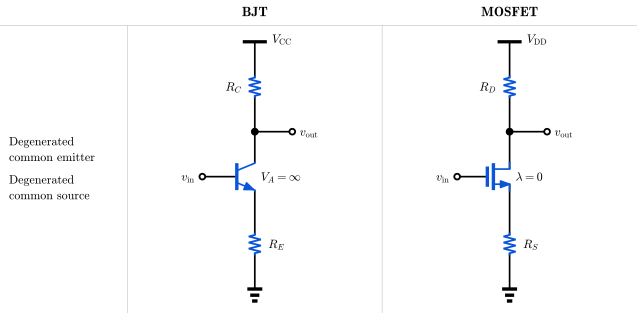
</div>
</div>
<p><strong>Razavi, Example 5.24</strong> (BJT)</p>
<p>A common-emitter stage is biased at <span class="math notranslate nohighlight">\(I_C=1\,\mathrm{mA}\)</span> (<span class="math notranslate nohighlight">\(\beta=100\)</span>). Without emitter degeneration its voltage gain magnitude is 20; with an emitter resistor <span class="math notranslate nohighlight">\(R_E\)</span> added the gain magnitude falls to 10. Find <span class="math notranslate nohighlight">\(R_C\)</span>, <span class="math notranslate nohighlight">\(R_E\)</span> and the input and output impedances of the degenerated stage (Early effect neglected). Use <span class="math notranslate nohighlight">\(V_T=26\,\mathrm{mV}\)</span>.</p>
<p>Given: <span class="math notranslate nohighlight">\(I_C=1\,\mathrm{mA}\)</span>, <span class="math notranslate nohighlight">\(\beta=100\)</span>, <span class="math notranslate nohighlight">\(\lvert A_v\rvert=20\)</span> without and <span class="math notranslate nohighlight">\(10\)</span> with degeneration, <span class="math notranslate nohighlight">\(V_T=26\,\mathrm{mV}\)</span></p>
<ol class="arabic simple">
<li><p><strong>Transconductance.</strong> <span class="math notranslate nohighlight">\(g_m=\dfrac{I_C}{V_T}=\dfrac{1}{26\,\Omega}\)</span>.</p></li>
<li><p><strong>Collector resistor.</strong> Without degeneration <span class="math notranslate nohighlight">\(\lvert A_v\rvert=g_mR_C=20\)</span>, so <span class="math notranslate nohighlight">\(R_C=20\times26\,\Omega=520\,\Omega\)</span>.</p></li>
<li><p><strong>Emitter resistor.</strong> With degeneration <span class="math notranslate nohighlight">\(\lvert A_v\rvert=\dfrac{g_mR_C}{1+g_mR_E}=10\)</span> (for <span class="math notranslate nohighlight">\(\beta\gg1\)</span>), so <span class="math notranslate nohighlight">\(1+g_mR_E=2\)</span>, <span class="math notranslate nohighlight">\(g_mR_E=1\)</span> and <span class="math notranslate nohighlight">\(R_E=\dfrac1{g_m}=26\,\Omega\)</span>.</p></li>
<li><p><strong>Input impedance.</strong> <span class="math notranslate nohighlight">\(R_{in}=r_\pi+(\beta+1)R_E=2600+101\times26=5226\,\Omega\approx5.2\,\mathrm{k}\Omega\)</span>. Equivalently, since <span class="math notranslate nohighlight">\(R_E=1/g_m\)</span> and <span class="math notranslate nohighlight">\(\beta\gg1\)</span>, <span class="math notranslate nohighlight">\(R_{in}\approx\dfrac{\beta}{g_m}+\beta\dfrac{1}{g_m}=2r_\pi=5.2\,\mathrm{k}\Omega\)</span>.</p></li>
<li><p><strong>Output impedance.</strong> <span class="math notranslate nohighlight">\(R_{out}=R_C=520\,\Omega\)</span> (degeneration does not change it if the Early effect is neglected).</p></li>
<li><p><strong>Check with finite <span class="math notranslate nohighlight">\(eta\)</span>.</strong> <span class="math notranslate nohighlight">\(\lvert A_v\rvert=\dfrac{g_mR_C}{1+(1/r_\pi+g_m)R_E}=9.95\)</span>, within 0.5 % of the target 10.</p></li>
</ol>
<p><strong>Result.</strong> <span class="math notranslate nohighlight">\(R_C=520\,\Omega\)</span>, <span class="math notranslate nohighlight">\(R_E=26\,\Omega\)</span>, <span class="math notranslate nohighlight">\(R_{in}\approx5.2\,\mathrm{k}\Omega\)</span> (<span class="math notranslate nohighlight">\(5.23\,\mathrm{k}\Omega\)</span> with <span class="math notranslate nohighlight">\(\beta+1\)</span>), <span class="math notranslate nohighlight">\(R_{out}=520\,\Omega\)</span></p>
<p>Checked: agrees with the answer in the book.</p>
<p><strong>Razavi, Problem 5.40</strong> (BJT)</p>
<p>The gain of a degenerated common-emitter stage is <span class="math notranslate nohighlight">\(A_v=-\dfrac{g_mR_C}{1+g_mR_E}\)</span> with <span class="math notranslate nohighlight">\(g_m=I_C/V_T\)</span>. If <span class="math notranslate nohighlight">\(I_C\)</span> changes by <span class="math notranslate nohighlight">\(10\%\)</span> with the signal, find the relative change of the gain when <span class="math notranslate nohighlight">\(g_mR_E\)</span> is nominally (a) 3 and (b) 7.</p>
<p>Given: <span class="math notranslate nohighlight">\(A_v=-g_mR_C/(1+g_mR_E)\)</span>, <span class="math notranslate nohighlight">\(\Delta I_C/I_C=\pm10\%\)</span>, (a) <span class="math notranslate nohighlight">\(g_mR_E=3\)</span>, (b) <span class="math notranslate nohighlight">\(g_mR_E=7\)</span></p>
<ol class="arabic simple">
<li><p><strong>Ratio of gains.</strong> With <span class="math notranslate nohighlight">\(g_m\to kg_m\)</span>: <span class="math notranslate nohighlight">\(\dfrac{A_v^\prime}{A_v}=\dfrac{k(1+g_mR_E)}{1+kg_mR_E}\)</span>, so <span class="math notranslate nohighlight">\(\dfrac{\Delta A_v}{A_v}=\dfrac{k-1}{1+kg_mR_E}\)</span>.</p></li>
<li><p><strong>(a) <span class="math notranslate nohighlight">\(g_mR_E=3\)</span>.</strong> <span class="math notranslate nohighlight">\(k=1.1\)</span>: <span class="math notranslate nohighlight">\(\dfrac{0.1}{1+3.3}=+2.33\%\)</span>; <span class="math notranslate nohighlight">\(k=0.9\)</span>: <span class="math notranslate nohighlight">\(\dfrac{-0.1}{1+2.7}=-2.70\%\)</span>.</p></li>
<li><p><strong>(b) <span class="math notranslate nohighlight">\(g_mR_E=7\)</span>.</strong> <span class="math notranslate nohighlight">\(k=1.1\)</span>: <span class="math notranslate nohighlight">\(\dfrac{0.1}{1+7.7}=+1.15\%\)</span>; <span class="math notranslate nohighlight">\(k=0.9\)</span>: <span class="math notranslate nohighlight">\(\dfrac{-0.1}{1+6.3}=-1.37\%\)</span>.</p></li>
<li><p><strong>Comparison.</strong> Without degeneration the gain would change by the full <span class="math notranslate nohighlight">\(10\%\)</span>; with <span class="math notranslate nohighlight">\(g_mR_E=7\)</span> the change is about half that of case (a), so the stage is more linear.</p></li>
</ol>
<p><strong>Result.</strong> (a) <span class="math notranslate nohighlight">\(+2.33\%\)</span> / <span class="math notranslate nohighlight">\(-2.70\%\)</span>; (b) <span class="math notranslate nohighlight">\(+1.15\%\)</span> / <span class="math notranslate nohighlight">\(-1.37\%\)</span> (for <span class="math notranslate nohighlight">\(I_C\)</span> up / down by <span class="math notranslate nohighlight">\(10\%\)</span>)</p>
<p>Checked by computation; the book gives no answer.</p>
<p><strong>Razavi, Problem 5.41</strong> (BJT)</p>
<p>A common-emitter stage has <span class="math notranslate nohighlight">\(R_C\)</span> from the collector to <span class="math notranslate nohighlight">\(V_{CC}\)</span> and <span class="math notranslate nohighlight">\(R_E\)</span> from the emitter to ground, input at the base, output at the collector. Express its voltage gain in terms of the collector bias current <span class="math notranslate nohighlight">\(I_C\)</span> and <span class="math notranslate nohighlight">\(V_T\)</span>. With <span class="math notranslate nohighlight">\(V_A=\infty\)</span>, what is the gain if the dc drops across <span class="math notranslate nohighlight">\(R_C\)</span> and <span class="math notranslate nohighlight">\(R_E\)</span> are <span class="math notranslate nohighlight">\(20V_T\)</span> and <span class="math notranslate nohighlight">\(5V_T\)</span>?</p>
<p>Given: <span class="math notranslate nohighlight">\(V_A=\infty\)</span>, <span class="math notranslate nohighlight">\(I_CR_C=20V_T\)</span>, <span class="math notranslate nohighlight">\(I_CR_E=5V_T\)</span> (base current neglected)</p>
<ol class="arabic simple">
<li><p><strong>Gain.</strong> <span class="math notranslate nohighlight">\(A_v=-\dfrac{g_mR_C}{1+g_mR_E}=-\dfrac{I_CR_C/V_T}{1+I_CR_E/V_T}=-\dfrac{I_CR_C}{V_T+I_CR_E}\)</span>.</p></li>
<li><p><strong>Substitute the drops.</strong> <span class="math notranslate nohighlight">\(A_v=-\dfrac{20V_T}{V_T+5V_T}=-\dfrac{20}{6}=-3.33\)</span>.</p></li>
<li><p><strong>Note.</strong> The gain is set by the dc drops measured in units of <span class="math notranslate nohighlight">\(V_T\)</span>, not by the resistor values themselves.</p></li>
</ol>
<p><strong>Result.</strong> <span class="math notranslate nohighlight">\(A_v=-\dfrac{I_CR_C}{V_T+I_CR_E}=-3.33\)</span></p>
<p>Checked by computation; the book gives no answer.</p>
<p><strong>Razavi, Problem 7.32</strong> (MOSFET)</p>
<p>A degenerated NMOS CS stage (<span class="math notranslate nohighlight">\(R_D\)</span> from <span class="math notranslate nohighlight">\(V_{DD}\)</span> to the drain, <span class="math notranslate nohighlight">\(R_S\)</span> from the source to ground, input at the gate) has <span class="math notranslate nohighlight">\(\lambda&gt;0\)</span>. Assuming <span class="math notranslate nohighlight">\(g_mr_O\gg1\)</span>, find the voltage gain.</p>
<p>Given: <span class="math notranslate nohighlight">\(g_m\)</span>, <span class="math notranslate nohighlight">\(r_O\)</span>, <span class="math notranslate nohighlight">\(R_D\)</span>, <span class="math notranslate nohighlight">\(R_S\)</span>; <span class="math notranslate nohighlight">\(g_mr_O\gg1\)</span></p>
<ol class="arabic simple">
<li><p><strong>KCL at the source.</strong> <span class="math notranslate nohighlight">\(\dfrac{v_S}{R_S}=g_m(v_{in}-v_S)+\dfrac{v_{out}-v_S}{r_O}\)</span>, and the same current flows in <span class="math notranslate nohighlight">\(R_D\)</span>: <span class="math notranslate nohighlight">\(v_{out}=-R_D\dfrac{v_S}{R_S}\)</span></p></li>
<li><p><strong>Exact gain.</strong> <span class="math notranslate nohighlight">\(A_v=-\dfrac{g_mr_OR_D}{R_D+r_O+(1+g_mr_O)R_S}\)</span> (equivalently <span class="math notranslate nohighlight">\(-G_m(R_D\parallel R_{out})\)</span> with <span class="math notranslate nohighlight">\(R_{out}=r_O+(1+g_mr_O)R_S\)</span>)</p></li>
<li><p><strong>Divide by the intrinsic gain.</strong> <span class="math notranslate nohighlight">\(A_v=-\dfrac{R_D}{\dfrac{1}{g_m}+R_S+\dfrac{R_D+R_S}{g_mr_O}}\)</span></p></li>
<li><p><strong>Apply <span class="math notranslate nohighlight">\(g_mr_O\gg1\)</span>.</strong> <span class="math notranslate nohighlight">\(A_v\approx-\dfrac{R_D}{\dfrac{1}{g_m}+R_S+\dfrac{R_D}{g_mr_O}}\)</span></p></li>
<li><p><strong>Numerical check.</strong> <span class="math notranslate nohighlight">\(g_m=4\,\mathrm{mS}\)</span>, <span class="math notranslate nohighlight">\(r_O=25\,\mathrm{k}\Omega\)</span>, <span class="math notranslate nohighlight">\(R_D=5\,\mathrm{k}\Omega\)</span>, <span class="math notranslate nohighlight">\(R_S=500\,\Omega\)</span>: nodal <span class="math notranslate nohighlight">\(-6.21\)</span>, exact formula <span class="math notranslate nohighlight">\(-6.21\)</span>, approximation <span class="math notranslate nohighlight">\(-6.25\)</span></p></li>
</ol>
<p><strong>Result.</strong> <span class="math notranslate nohighlight">\(A_v\approx-\dfrac{R_D}{1/g_m+R_S+R_D/(g_mr_O)}\)</span> (exact: <span class="math notranslate nohighlight">\(-\dfrac{g_mr_OR_D}{R_D+r_O+(1+g_mr_O)R_S}\)</span>)</p>
<p>Checked by computation; the book gives no answer.</p>
<p><strong>Sedra/Smith, Problem 6.63</strong> (MOSFET)</p>
<p>An NMOS common-source amplifier with drain resistor <span class="math notranslate nohighlight">\(R_D\)</span> has a voltage gain of <span class="math notranslate nohighlight">\(-20\,\mathrm{V/V}\)</span> when the source is grounded. Adding an unbypassed source resistance <span class="math notranslate nohighlight">\(R_s=0.2\,\mathrm{k\Omega}\)</span> halves the gain. Find <span class="math notranslate nohighlight">\(g_m\)</span> and <span class="math notranslate nohighlight">\(R_D\)</span>, and the value of <span class="math notranslate nohighlight">\(R_s\)</span> that gives a gain of <span class="math notranslate nohighlight">\(-16\,\mathrm{V/V}\)</span> instead.</p>
<p>Given: gain <span class="math notranslate nohighlight">\(-20\)</span> with <span class="math notranslate nohighlight">\(R_s=0\)</span>; <span class="math notranslate nohighlight">\(-10\)</span> with <span class="math notranslate nohighlight">\(R_s=200\,\Omega\)</span>; target <span class="math notranslate nohighlight">\(-16\)</span></p>
<ol class="arabic simple">
<li><p><strong>Gain with degeneration.</strong> <span class="math notranslate nohighlight">\(\lvert A\rvert=\dfrac{g_mR_D}{1+g_mR_s}\)</span>; the gain is halved, so <span class="math notranslate nohighlight">\(1+g_mR_s=2\)</span>.</p></li>
<li><p><strong>Transconductance.</strong> <span class="math notranslate nohighlight">\(g_m=\dfrac1{R_s}=\dfrac1{0.2\,\mathrm{k\Omega}}=5\,\mathrm{mA/V}\)</span>.</p></li>
<li><p><strong>Drain resistor.</strong> <span class="math notranslate nohighlight">\(g_mR_D=20\Rightarrow R_D=\dfrac{20}{5}=4\,\mathrm{k\Omega}\)</span>.</p></li>
<li><p><strong>Source resistor for <span class="math notranslate nohighlight">\(-16\)</span>.</strong> <span class="math notranslate nohighlight">\(16=\dfrac{20}{1+5R_s}\)</span> (<span class="math notranslate nohighlight">\(R_s\)</span> in k<span class="math notranslate nohighlight">\(\Omega\)</span>) <span class="math notranslate nohighlight">\(\Rightarrow1+5R_s=1.25\)</span>, <span class="math notranslate nohighlight">\(R_s=0.05\,\mathrm{k\Omega}=50\,\Omega\)</span>.</p></li>
</ol>
<p><strong>Result.</strong> <span class="math notranslate nohighlight">\(g_m=5\,\mathrm{mA/V}\)</span>, <span class="math notranslate nohighlight">\(R_D=4\,\mathrm{k\Omega}\)</span>, <span class="math notranslate nohighlight">\(R_s=50\,\Omega\)</span></p>
<p>Checked: agrees with the answer in the solutions manual. Note: Statement inferred from the solution: gain taken as gmRD/(1+gmRs) with no load and ro neglected.</p>
<p><strong>Sedra/Smith, Problem 6.78</strong> (MOSFET)</p>
<p>A common-source NMOS amplifier with <span class="math notranslate nohighlight">\(g_m=5\,\mathrm{mA/V}\)</span> is to have its effective transconductance reduced to <span class="math notranslate nohighlight">\(G_m=2\,\mathrm{mA/V}\)</span> by an unbypassed source resistance <span class="math notranslate nohighlight">\(R_s\)</span>. Find <span class="math notranslate nohighlight">\(R_s\)</span>.</p>
<p>Given: <span class="math notranslate nohighlight">\(g_m=5\,\mathrm{mA/V}\)</span>, <span class="math notranslate nohighlight">\(G_m=2\,\mathrm{mA/V}\)</span></p>
<ol class="arabic simple">
<li><p><strong>Effective transconductance.</strong> <span class="math notranslate nohighlight">\(G_m=\dfrac{g_m}{1+g_mR_s}\)</span>.</p></li>
<li><p><strong>Solve.</strong> <span class="math notranslate nohighlight">\(2=\dfrac{5}{1+5R_s}\Rightarrow1+5R_s=2.5\Rightarrow R_s=0.3\,\mathrm{k\Omega}=300\,\Omega\)</span>.</p></li>
</ol>
<p><strong>Result.</strong> <span class="math notranslate nohighlight">\(R_s=300\,\Omega\)</span></p>
<p>Checked: agrees with the answer in the solutions manual.</p>
<p><strong>Sedra/Smith, Problem 6.79</strong> (MOSFET), the same as Sedra/Smith, Problem 6.78 with other values</p>
<p>A common-source NMOS amplifier with <span class="math notranslate nohighlight">\(g_m=2\,\mathrm{mA/V}\)</span> has a voltage gain of <span class="math notranslate nohighlight">\(-10\,\mathrm{V/V}\)</span>. What unbypassed source resistance reduces the gain to <span class="math notranslate nohighlight">\(-5\,\mathrm{V/V}\)</span>?</p>
<p>Given: <span class="math notranslate nohighlight">\(g_m=2\,\mathrm{mA/V}\)</span>, gain <span class="math notranslate nohighlight">\(-10\to-5\)</span></p>
<ol class="arabic simple">
<li><p><strong>Effect of <span class="math notranslate nohighlight">\(R_s\)</span>.</strong> The gain magnitude is divided by <span class="math notranslate nohighlight">\(1+g_mR_s\)</span>.</p></li>
<li><p><strong>Required factor.</strong> <span class="math notranslate nohighlight">\(\dfrac{10}{5}=2=1+g_mR_s\Rightarrow g_mR_s=1\)</span>.</p></li>
<li><p><strong>Solve.</strong> <span class="math notranslate nohighlight">\(R_s=\dfrac1{g_m}=\dfrac1{2\,\mathrm{mA/V}}=0.5\,\mathrm{k\Omega}\)</span>.</p></li>
</ol>
<p><strong>Result.</strong> <span class="math notranslate nohighlight">\(R_s=0.5\,\mathrm{k\Omega}\)</span></p>
<p>Checked: agrees with the answer in the solutions manual.</p>
</section>
<section id="id1">
<h3>Other Circuits<a class="headerlink" href="#id1" title="Link to this heading">#</a></h3>
<p><strong>Razavi, Example 5.22</strong> (BJT)</p>
<p>Transistor <span class="math notranslate nohighlight">\(Q_1\)</span> has its collector resistor <span class="math notranslate nohighlight">\(R_C\)</span> to <span class="math notranslate nohighlight">\(V_{CC}\)</span> (output at the collector), its base driven by the input, and its emitter connected to ground through a resistor <span class="math notranslate nohighlight">\(R_E\)</span>. The emitter of <span class="math notranslate nohighlight">\(Q_1\)</span> is also connected directly to the base of a second transistor <span class="math notranslate nohighlight">\(Q_2\)</span>, whose emitter is grounded and whose collector is tied to <span class="math notranslate nohighlight">\(V_{CC}\)</span>. Find the small-signal voltage gain <span class="math notranslate nohighlight">\(v_{out}/v_{in}\)</span> in terms of <span class="math notranslate nohighlight">\(g_{m1}\)</span>, <span class="math notranslate nohighlight">\(R_C\)</span>, <span class="math notranslate nohighlight">\(R_E\)</span> and <span class="math notranslate nohighlight">\(r_{\pi2}\)</span>.</p>
<p>Given: Symbolic: <span class="math notranslate nohighlight">\(R_C\)</span>, <span class="math notranslate nohighlight">\(R_E\)</span>, <span class="math notranslate nohighlight">\(g_{m1}\)</span>, <span class="math notranslate nohighlight">\(r_{\pi2}\)</span>. Numerical check: <span class="math notranslate nohighlight">\(I_{C1}=I_{C2}=1\,\mathrm{mA}\)</span>, <span class="math notranslate nohighlight">\(\beta=100\)</span>, <span class="math notranslate nohighlight">\(R_C=1\,\mathrm{k}\Omega\)</span>, <span class="math notranslate nohighlight">\(R_E=500\,\Omega\)</span>, <span class="math notranslate nohighlight">\(V_T=26\,\mathrm{mV}\)</span></p>
<ol class="arabic simple">
<li><p><strong>Identify the stage.</strong> The input is at the base of <span class="math notranslate nohighlight">\(Q_1\)</span> and the output at its collector, so this is a common-emitter stage degenerated by whatever hangs on its emitter.</p></li>
<li><p><strong>Impedance of <span class="math notranslate nohighlight">\(Q_2\)</span>.</strong> The base of <span class="math notranslate nohighlight">\(Q_2\)</span> is a junction between base and grounded emitter; <span class="math notranslate nohighlight">\(Q_2\)</span> collector is at ac ground, so looking into its base we see <span class="math notranslate nohighlight">\(r_{\pi2}\)</span> (Fig. 5.7 rule).</p></li>
<li><p><strong>Total emitter resistance.</strong> <span class="math notranslate nohighlight">\(R_E\)</span> and <span class="math notranslate nohighlight">\(r_{\pi2}\)</span> are both from the emitter node of <span class="math notranslate nohighlight">\(Q_1\)</span> to ground: <span class="math notranslate nohighlight">\(R_E\parallel r_{\pi2}\)</span>.</p></li>
<li><p><strong>Degenerated-stage gain.</strong> Use <span class="math notranslate nohighlight">\(A_v=-\dfrac{R_C}{1/g_m+R_{emitter}}\)</span>: <span class="math notranslate nohighlight">\(A_v=-\dfrac{R_C}{\dfrac1{g_{m1}}+R_E\parallel r_{\pi2}}\)</span>.</p></li>
<li><p><strong>Numerical check.</strong> <span class="math notranslate nohighlight">\(r_{\pi2}=2.6\,\mathrm{k}\Omega\)</span>, <span class="math notranslate nohighlight">\(R_E\parallel r_{\pi2}=419\,\Omega\)</span>, <span class="math notranslate nohighlight">\(1/g_{m1}=26\,\Omega\)</span>, so the formula gives <span class="math notranslate nohighlight">\(A_v=-2.25\)</span>. Solving the small-signal circuit exactly (finite <span class="math notranslate nohighlight">\(\beta\)</span>) gives <span class="math notranslate nohighlight">\(-2.22\)</span>, a 1 % difference due to <span class="math notranslate nohighlight">\(\beta/(\beta+1)\)</span>.</p></li>
</ol>
<p><strong>Result.</strong> <span class="math notranslate nohighlight">\(A_v=-\dfrac{R_C}{\dfrac1{g_{m1}}+R_E\parallel r_{\pi2}}\)</span></p>
<p>Checked: agrees with the answer in the book.</p>
<p><strong>Razavi, Example 5.23</strong> (BJT)</p>
<p>Transistor <span class="math notranslate nohighlight">\(Q_1\)</span> has its base driven by the input, a resistor <span class="math notranslate nohighlight">\(R_E\)</span> from its emitter to ground, and its collector connected to <span class="math notranslate nohighlight">\(V_{CC}\)</span> through <span class="math notranslate nohighlight">\(R_C\)</span>. The collector of <span class="math notranslate nohighlight">\(Q_1\)</span> is also connected directly to the base of a second transistor <span class="math notranslate nohighlight">\(Q_2\)</span> whose emitter is grounded and whose collector is at <span class="math notranslate nohighlight">\(V_{CC}\)</span>; the output is taken at the collector of <span class="math notranslate nohighlight">\(Q_1\)</span>. Find the small-signal voltage gain.</p>
<p>Given: Symbolic: <span class="math notranslate nohighlight">\(R_C\)</span>, <span class="math notranslate nohighlight">\(R_E\)</span>, <span class="math notranslate nohighlight">\(g_{m1}\)</span>, <span class="math notranslate nohighlight">\(r_{\pi2}\)</span>. Numerical check: <span class="math notranslate nohighlight">\(I_{C1}=I_{C2}=1\,\mathrm{mA}\)</span>, <span class="math notranslate nohighlight">\(\beta=100\)</span>, <span class="math notranslate nohighlight">\(R_C=2\,\mathrm{k}\Omega\)</span>, <span class="math notranslate nohighlight">\(R_E=100\,\Omega\)</span>, <span class="math notranslate nohighlight">\(V_T=26\,\mathrm{mV}\)</span></p>
<ol class="arabic simple">
<li><p><strong>Identify the stage.</strong> <span class="math notranslate nohighlight">\(Q_1\)</span> is a common-emitter stage degenerated by <span class="math notranslate nohighlight">\(R_E\)</span>; <span class="math notranslate nohighlight">\(Q_2\)</span> only loads the collector.</p></li>
<li><p><strong>Load of <span class="math notranslate nohighlight">\(Q_2\)</span>.</strong> The base-emitter junction of <span class="math notranslate nohighlight">\(Q_2\)</span> (emitter grounded) appears from the collector of <span class="math notranslate nohighlight">\(Q_1\)</span> to ground as <span class="math notranslate nohighlight">\(r_{\pi2}\)</span>.</p></li>
<li><p><strong>Total load at the collector.</strong> <span class="math notranslate nohighlight">\(R_C\parallel r_{\pi2}\)</span>.</p></li>
<li><p><strong>Gain.</strong> <span class="math notranslate nohighlight">\(A_v=-\dfrac{R_C\parallel r_{\pi2}}{\dfrac1{g_{m1}}+R_E}\)</span> (total collector load over <span class="math notranslate nohighlight">\(1/g_m\)</span> plus emitter resistance).</p></li>
<li><p><strong>Numerical check.</strong> <span class="math notranslate nohighlight">\(r_{\pi2}=2.6\,\mathrm{k}\Omega\)</span>, <span class="math notranslate nohighlight">\(R_C\parallel r_{\pi2}=1130\,\Omega\)</span>, <span class="math notranslate nohighlight">\(1/g_{m1}+R_E=126\,\Omega\)</span>: formula <span class="math notranslate nohighlight">\(-8.97\)</span>, exact small-signal solution <span class="math notranslate nohighlight">\(-8.90\)</span> (0.8 % lower because of <span class="math notranslate nohighlight">\(\beta/(\beta+1)\)</span>).</p></li>
</ol>
<p><strong>Result.</strong> <span class="math notranslate nohighlight">\(A_v=-\dfrac{R_C\parallel r_{\pi2}}{\dfrac1{g_{m1}}+R_E}\)</span></p>
<p>Checked: agrees with the answer in the book.</p>
<p><strong>Razavi, Example 5.25</strong> (BJT)</p>
<p>An npn common-emitter stage has collector resistor <span class="math notranslate nohighlight">\(R_C\)</span> to <span class="math notranslate nohighlight">\(V_{CC}\)</span> (output at the collector), input at the base, and an emitter resistor <span class="math notranslate nohighlight">\(R_E\)</span> connected to an ideal constant current source <span class="math notranslate nohighlight">\(I_1\)</span> to ground. A very large capacitor <span class="math notranslate nohighlight">\(C_1\)</span> connects the lower end of <span class="math notranslate nohighlight">\(R_E\)</span> (the top of the current source) to ground. Find the small-signal voltage gain, input impedance and output impedance.</p>
<p>Given: Symbolic: <span class="math notranslate nohighlight">\(R_C\)</span>, <span class="math notranslate nohighlight">\(R_E\)</span>, <span class="math notranslate nohighlight">\(g_m\)</span>, <span class="math notranslate nohighlight">\(\beta\)</span>. Numerical check: <span class="math notranslate nohighlight">\(I_C=1\,\mathrm{mA}\)</span>, <span class="math notranslate nohighlight">\(\beta=100\)</span>, <span class="math notranslate nohighlight">\(R_C=1\,\mathrm{k}\Omega\)</span>, <span class="math notranslate nohighlight">\(R_E=200\,\Omega\)</span>, <span class="math notranslate nohighlight">\(V_T=26\,\mathrm{mV}\)</span></p>
<ol class="arabic simple">
<li><p><strong>Small-signal equivalent.</strong> <span class="math notranslate nohighlight">\(C_1\)</span> is huge, so for signals it is a short: the lower end of <span class="math notranslate nohighlight">\(R_E\)</span> is at ac ground. The ideal current source is a constant current, so it becomes an open circuit (and is in parallel with the short anyway). <span class="math notranslate nohighlight">\(V_{CC}\)</span> is an ac ground.</p></li>
<li><p><strong>Reduced circuit.</strong> What remains is the common-emitter stage with degeneration <span class="math notranslate nohighlight">\(R_E\)</span> to ground, i.e. Fig. 5.35(a).</p></li>
<li><p><strong>Gain.</strong> <span class="math notranslate nohighlight">\(A_v=-\dfrac{R_C}{\dfrac1{g_m}+R_E}\)</span> (with <span class="math notranslate nohighlight">\(\beta\gg1\)</span>).</p></li>
<li><p><strong>Input impedance.</strong> <span class="math notranslate nohighlight">\(R_{in}=r_\pi+(\beta+1)R_E\)</span>.</p></li>
<li><p><strong>Output impedance.</strong> <span class="math notranslate nohighlight">\(R_{out}=R_C\)</span> (Early effect neglected).</p></li>
<li><p><strong>Numerical check.</strong> <span class="math notranslate nohighlight">\(r_\pi=2.6\,\mathrm{k}\Omega\)</span>: <span class="math notranslate nohighlight">\(A_v=-4.43\)</span> (exact expression <span class="math notranslate nohighlight">\(-4.39\)</span>), <span class="math notranslate nohighlight">\(R_{in}=2600+101\times200=22.8\,\mathrm{k}\Omega\)</span> (also obtained as <span class="math notranslate nohighlight">\(v_x/i_b\)</span> from the circuit), <span class="math notranslate nohighlight">\(R_{out}=1\,\mathrm{k}\Omega\)</span>.</p></li>
</ol>
<p><strong>Result.</strong> <span class="math notranslate nohighlight">\(A_v=-\dfrac{R_C}{1/g_m+R_E}\)</span>, <span class="math notranslate nohighlight">\(R_{in}=r_\pi+(\beta+1)R_E\)</span>, <span class="math notranslate nohighlight">\(R_{out}=R_C\)</span></p>
<p>Checked: agrees with the answer in the book.</p>
<p><strong>Razavi, Example 5.27</strong> (BJT)</p>
<p>An npn transistor has a base resistance <span class="math notranslate nohighlight">\(R_B\)</span> in series with the input <span class="math notranslate nohighlight">\(v_{in}\)</span>, a collector resistor <span class="math notranslate nohighlight">\(R_C\)</span> to <span class="math notranslate nohighlight">\(V_{CC}\)</span> (output at the collector) and an ideal constant current source <span class="math notranslate nohighlight">\(I_1\)</span> from its emitter to ground. A resistor <span class="math notranslate nohighlight">\(R_2\)</span> connects the emitter to a node that is grounded through a very large capacitor <span class="math notranslate nohighlight">\(C_1\)</span>, and a resistor <span class="math notranslate nohighlight">\(R_1\)</span> connects the collector to that same node. For signals, therefore, <span class="math notranslate nohighlight">\(R_1\)</span> is a load from the collector to ground and <span class="math notranslate nohighlight">\(R_2\)</span> is a resistor from the emitter to ground. Neglecting the Early effect, find the small-signal voltage gain and the input and output impedances.</p>
<p>Given: Symbolic: <span class="math notranslate nohighlight">\(R_B\)</span>, <span class="math notranslate nohighlight">\(R_C\)</span>, <span class="math notranslate nohighlight">\(R_1\)</span>, <span class="math notranslate nohighlight">\(R_2\)</span>, <span class="math notranslate nohighlight">\(g_m\)</span>, <span class="math notranslate nohighlight">\(\beta\)</span>. Numerical check: <span class="math notranslate nohighlight">\(I_C=1\,\mathrm{mA}\)</span>, <span class="math notranslate nohighlight">\(\beta=100\)</span>, <span class="math notranslate nohighlight">\(R_B=1\,\mathrm{k}\Omega\)</span>, <span class="math notranslate nohighlight">\(R_2=100\,\Omega\)</span>, <span class="math notranslate nohighlight">\(R_C=2\,\mathrm{k}\Omega\)</span>, <span class="math notranslate nohighlight">\(R_1=3\,\mathrm{k}\Omega\)</span></p>
<ol class="arabic simple">
<li><p><strong>Small-signal simplification.</strong> <span class="math notranslate nohighlight">\(C_1\)</span> is a short, <span class="math notranslate nohighlight">\(I_1\)</span> an open circuit and <span class="math notranslate nohighlight">\(V_{CC}\)</span> an ac ground. Then <span class="math notranslate nohighlight">\(R_C\)</span> and <span class="math notranslate nohighlight">\(R_1\)</span> both go from the collector to ground (in parallel), and <span class="math notranslate nohighlight">\(R_2\)</span> goes from the emitter to ground as a degeneration resistor.</p></li>
<li><p><strong>Load.</strong> Total collector load <span class="math notranslate nohighlight">\(R_C\parallel R_1\)</span>.</p></li>
<li><p><strong>Gain (with base resistance).</strong> Use the degenerated CE result with a base resistance: <span class="math notranslate nohighlight">\(A_v=-\dfrac{R_C\parallel R_1}{\dfrac1{g_m}+R_2+\dfrac{R_B}{\beta+1}}\)</span>, defined from <span class="math notranslate nohighlight">\(v_{in}\)</span> (before <span class="math notranslate nohighlight">\(R_B\)</span>).</p></li>
<li><p><strong>Input impedance.</strong> Looking into the left terminal of <span class="math notranslate nohighlight">\(R_B\)</span>: <span class="math notranslate nohighlight">\(R_{in}=R_B+r_\pi+(\beta+1)R_2\)</span>.</p></li>
<li><p><strong>Output impedance.</strong> <span class="math notranslate nohighlight">\(R_{out}=R_C\parallel R_1\)</span>.</p></li>
<li><p><strong>Numerical check.</strong> <span class="math notranslate nohighlight">\(R_C\parallel R_1=1.2\,\mathrm{k}\Omega\)</span>, <span class="math notranslate nohighlight">\(r_\pi=2.6\,\mathrm{k}\Omega\)</span>: formula <span class="math notranslate nohighlight">\(A_v=-8.83\)</span>, exact circuit solution <span class="math notranslate nohighlight">\(-8.76\)</span> (0.8 % difference); <span class="math notranslate nohighlight">\(R_{in}=1000+2600+101\times100=13.7\,\mathrm{k}\Omega\)</span>; <span class="math notranslate nohighlight">\(R_{out}=1.2\,\mathrm{k}\Omega\)</span>.</p></li>
</ol>
<p><strong>Result.</strong> <span class="math notranslate nohighlight">\(A_v=-\dfrac{R_C\parallel R_1}{1/g_m+R_2+R_B/(\beta+1)}\)</span>, <span class="math notranslate nohighlight">\(R_{in}=R_B+r_\pi+(\beta+1)R_2\)</span>, <span class="math notranslate nohighlight">\(R_{out}=R_C\parallel R_1\)</span></p>
<p>Checked: agrees with the answer in the book.</p>
<p><strong>Razavi, Example 7.8</strong> (MOSFET)</p>
<p>An NMOS common-source stage has the drain resistor <span class="math notranslate nohighlight">\(R_D\)</span> to <span class="math notranslate nohighlight">\(V_{DD}\)</span>, the input at the gate of <span class="math notranslate nohighlight">\(M_1\)</span>, and a diode-connected NMOS <span class="math notranslate nohighlight">\(M_2\)</span> between the source of <span class="math notranslate nohighlight">\(M_1\)</span> and ground (gate of <span class="math notranslate nohighlight">\(M_2\)</span> tied to its drain). Find the voltage gain with <span class="math notranslate nohighlight">\(\lambda=0\)</span>.</p>
<p>Given: <span class="math notranslate nohighlight">\(g_{m1}\)</span>, <span class="math notranslate nohighlight">\(g_{m2}\)</span>, <span class="math notranslate nohighlight">\(R_D\)</span> symbolic, <span class="math notranslate nohighlight">\(\lambda=0\)</span></p>
<ol class="arabic simple">
<li><p><strong>Impedance of the diode.</strong> With <span class="math notranslate nohighlight">\(\lambda=0\)</span>, <span class="math notranslate nohighlight">\(M_2\)</span> is a two-terminal device with small-signal resistance exactly <span class="math notranslate nohighlight">\(1/g_{m2}\)</span>.</p></li>
<li><p><strong>Replace the degeneration.</strong> This is the degenerated stage with <span class="math notranslate nohighlight">\(R_S=1/g_{m2}\)</span>: <span class="math notranslate nohighlight">\(\dfrac{v_{out}}{v_{in}}=-\dfrac{g_{m1}R_D}{1+g_{m1}R_S}\)</span>.</p></li>
<li><p><strong>Substitute.</strong> <span class="math notranslate nohighlight">\(A_v=-\dfrac{g_{m1}R_D}{1+g_{m1}/g_{m2}}=-\dfrac{R_D}{\dfrac{1}{g_{m1}}+\dfrac{1}{g_{m2}}}\)</span>.</p></li>
<li><p><strong>Numerical check.</strong> <span class="math notranslate nohighlight">\(g_{m1}=3\,\mathrm{mS}\)</span>, <span class="math notranslate nohighlight">\(g_{m2}=2\,\mathrm{mS}\)</span>, <span class="math notranslate nohighlight">\(R_D=5\,\mathrm{k}\Omega\)</span>: nodal analysis and the formula give <span class="math notranslate nohighlight">\(A_v=-6\)</span>.</p></li>
</ol>
<p><strong>Result.</strong> <span class="math notranslate nohighlight">\(A_v=-\dfrac{R_D}{\dfrac{1}{g_{m1}}+\dfrac{1}{g_{m2}}}\)</span></p>
<p>Checked: agrees with the answer in the book.</p>
<p><strong>Razavi, Example 7.20</strong> (MOSFET)</p>
<p>A PMOS <span class="math notranslate nohighlight">\(M_1\)</span> (gate at <span class="math notranslate nohighlight">\(v_{in}\)</span>) has its source connected to <span class="math notranslate nohighlight">\(V_{DD}\)</span> through a diode-connected PMOS <span class="math notranslate nohighlight">\(M_3\)</span> (gate tied to drain). The drain of <span class="math notranslate nohighlight">\(M_1\)</span> is the output node, loaded by an NMOS <span class="math notranslate nohighlight">\(M_2\)</span> with a fixed gate bias (current source) to ground. Neglect channel-length modulation in <span class="math notranslate nohighlight">\(M_1\)</span> and find the voltage gain.</p>
<p>Given: <span class="math notranslate nohighlight">\(g_{m1}\)</span>, <span class="math notranslate nohighlight">\(g_{m3}\)</span>, <span class="math notranslate nohighlight">\(r_{O2}\)</span>, <span class="math notranslate nohighlight">\(r_{O3}\)</span> symbolic, <span class="math notranslate nohighlight">\(r_{O1}=\infty\)</span></p>
<ol class="arabic simple">
<li><p><strong>Roles.</strong> <span class="math notranslate nohighlight">\(M_1\)</span> is a CS device degenerated by the diode-connected <span class="math notranslate nohighlight">\(M_3\)</span>; <span class="math notranslate nohighlight">\(M_2\)</span> is the current-source load.</p></li>
<li><p><strong>Degeneration impedance.</strong> <span class="math notranslate nohighlight">\(M_3\)</span> has small-signal resistance <span class="math notranslate nohighlight">\(\dfrac{1}{g_{m3}}\parallel r_{O3}\)</span>, which acts as the source resistance <span class="math notranslate nohighlight">\(R_S\)</span>.</p></li>
<li><p><strong>Load.</strong> With <span class="math notranslate nohighlight">\(r_{O1}=\infty\)</span> the load seen by the output is only <span class="math notranslate nohighlight">\(r_{O2}\)</span>.</p></li>
<li><p><strong>Gain.</strong> Degenerated-stage formula with <span class="math notranslate nohighlight">\(R_D=r_{O2}\)</span> and <span class="math notranslate nohighlight">\(R_S=\dfrac{1}{g_{m3}}\parallel r_{O3}\)</span>: <span class="math notranslate nohighlight">\(A_v=-\dfrac{r_{O2}}{\dfrac{1}{g_{m1}}+\dfrac{1}{g_{m3}}\parallel r_{O3}}\)</span>.</p></li>
<li><p><strong>Numerical check.</strong> <span class="math notranslate nohighlight">\(g_{m1}=3\,\mathrm{mS}\)</span>, <span class="math notranslate nohighlight">\(g_{m3}=1.5\,\mathrm{mS}\)</span>, <span class="math notranslate nohighlight">\(r_{O3}=20\,\mathrm{k}\Omega\)</span>, <span class="math notranslate nohighlight">\(r_{O2}=40\,\mathrm{k}\Omega\)</span>: nodal analysis and the formula give <span class="math notranslate nohighlight">\(A_v=-40.9\)</span>.</p></li>
</ol>
<p><strong>Result.</strong> <span class="math notranslate nohighlight">\(A_v=-\dfrac{r_{O2}}{\dfrac{1}{g_{m1}}+\dfrac{1}{g_{m3}}\parallel r_{O3}}\)</span></p>
<p>Checked: agrees with the answer in the book.</p>
<p><strong>Razavi, Example 7.21</strong> (MOSFET)</p>
<p>(a) A PMOS <span class="math notranslate nohighlight">\(M_2\)</span> (source at <span class="math notranslate nohighlight">\(V_{DD}\)</span>, gate at <span class="math notranslate nohighlight">\(v_{in}\)</span>) drives, at its drain (the output), an NMOS <span class="math notranslate nohighlight">\(M_1\)</span> with gate at a fixed bias and a source resistor <span class="math notranslate nohighlight">\(R_S\)</span> to ground. (b) A common-gate stage: NMOS <span class="math notranslate nohighlight">\(M_1\)</span> with fixed gate bias, its source driven by <span class="math notranslate nohighlight">\(v_{in}\)</span> through <span class="math notranslate nohighlight">\(R_S\)</span>, and a PMOS <span class="math notranslate nohighlight">\(M_2\)</span> with fixed gate bias as the load from <span class="math notranslate nohighlight">\(V_{DD}\)</span> to the output node (take <span class="math notranslate nohighlight">\(r_{O1}=\infty\)</span> in (b)). Find the voltage gain of each.</p>
<p>Given: <span class="math notranslate nohighlight">\(g_{m1}\)</span>, <span class="math notranslate nohighlight">\(g_{m2}\)</span>, <span class="math notranslate nohighlight">\(r_{O1}\)</span>, <span class="math notranslate nohighlight">\(r_{O2}\)</span>, <span class="math notranslate nohighlight">\(R_S\)</span> symbolic</p>
<ol class="arabic simple">
<li><p><strong>(a) Impedance of <span class="math notranslate nohighlight">\(M_1\)</span>.</strong> <span class="math notranslate nohighlight">\(M_1\)</span> degenerated by <span class="math notranslate nohighlight">\(R_S\)</span> presents <span class="math notranslate nohighlight">\(R_{M1}=(1+g_{m1}r_{O1})R_S+r_{O1}\)</span> at its drain.</p></li>
<li><p><strong>(a) Total load.</strong> The drain node of <span class="math notranslate nohighlight">\(M_2\)</span> sees <span class="math notranslate nohighlight">\(R_{M1}\)</span> in parallel with <span class="math notranslate nohighlight">\(r_{O2}\)</span>.</p></li>
<li><p><strong>(a) Gain.</strong> <span class="math notranslate nohighlight">\(A_v=-g_{m2}\left\{\left[(1+g_{m1}r_{O1})R_S+r_{O1}\right]\parallel r_{O2}\right\}\)</span>.</p></li>
<li><p><strong>(b) CG stage.</strong> The CG device has <span class="math notranslate nohighlight">\(v_X/v_{in}=\dfrac{1/g_{m1}}{1/g_{m1}+R_S}\)</span> and the current <span class="math notranslate nohighlight">\(g_{m1}v_X\)</span> flows into the load <span class="math notranslate nohighlight">\(r_{O2}\)</span> (the fixed gate bias makes <span class="math notranslate nohighlight">\(M_2\)</span> a plain resistance <span class="math notranslate nohighlight">\(r_{O2}\)</span>).</p></li>
<li><p><strong>(b) Gain.</strong> <span class="math notranslate nohighlight">\(A_v=\dfrac{r_{O2}}{\dfrac{1}{g_{m1}}+R_S}\)</span>, positive.</p></li>
<li><p><strong>Numerical check.</strong> (a) <span class="math notranslate nohighlight">\(g_{m1}=3\)</span>, <span class="math notranslate nohighlight">\(g_{m2}=2\,\mathrm{mS}\)</span>, <span class="math notranslate nohighlight">\(r_{O1}=15\)</span>, <span class="math notranslate nohighlight">\(r_{O2}=40\,\mathrm{k}\Omega\)</span>, <span class="math notranslate nohighlight">\(R_S=1\,\mathrm{k}\Omega\)</span>: nodal analysis and the formula give <span class="math notranslate nohighlight">\(-48.3\)</span>. (b) <span class="math notranslate nohighlight">\(g_{m1}=3\,\mathrm{mS}\)</span>, <span class="math notranslate nohighlight">\(R_S=1\,\mathrm{k}\Omega\)</span>, <span class="math notranslate nohighlight">\(r_{O2}=40\,\mathrm{k}\Omega\)</span>: <span class="math notranslate nohighlight">\(+30.0\)</span> by both.</p></li>
</ol>
<p><strong>Result.</strong> (a) <span class="math notranslate nohighlight">\(A_v=-g_{m2}\{[(1+g_{m1}r_{O1})R_S+r_{O1}]\parallel r_{O2}\}\)</span>; (b) <span class="math notranslate nohighlight">\(A_v=\dfrac{r_{O2}}{1/g_{m1}+R_S}\)</span></p>
<p>Checked: agrees with the answer in the book.</p>
<p><strong>Razavi, Problem 5.44</strong> (BJT)</p>
<p>A degenerated common-emitter stage with a base resistance: <span class="math notranslate nohighlight">\(V_{in}\)</span> drives the base of npn <span class="math notranslate nohighlight">\(Q_1\)</span> through <span class="math notranslate nohighlight">\(R_B\)</span>; <span class="math notranslate nohighlight">\(R_E\)</span> from emitter to ground; <span class="math notranslate nohighlight">\(R_C\)</span> from collector to <span class="math notranslate nohighlight">\(V_{CC}\)</span>; output at the collector; <span class="math notranslate nohighlight">\(V_A=\infty\)</span>. Construct its small-signal model and compute the voltage gain directly from the model.</p>
<p>Given: <span class="math notranslate nohighlight">\(R_B\)</span>, <span class="math notranslate nohighlight">\(R_E\)</span>, <span class="math notranslate nohighlight">\(R_C\)</span>, <span class="math notranslate nohighlight">\(g_m\)</span>, <span class="math notranslate nohighlight">\(r_\pi=\beta/g_m\)</span>, <span class="math notranslate nohighlight">\(V_A=\infty\)</span></p>
<ol class="arabic simple">
<li><p><strong>Model.</strong> <span class="math notranslate nohighlight">\(v_{in}\)</span>, then <span class="math notranslate nohighlight">\(R_B\)</span> to node A (base); <span class="math notranslate nohighlight">\(r_\pi\)</span> from A to node E; <span class="math notranslate nohighlight">\(g_mv_\pi\)</span> from the output to E; <span class="math notranslate nohighlight">\(R_E\)</span> from E to ground; <span class="math notranslate nohighlight">\(R_C\)</span> from the output to ground.</p></li>
<li><p><strong>Base current.</strong> <span class="math notranslate nohighlight">\(i_b=v_\pi/r_\pi\)</span>; the emitter carries <span class="math notranslate nohighlight">\(i_b+g_mv_\pi=(\beta+1)v_\pi/r_\pi\)</span>.</p></li>
<li><p><strong>Input loop.</strong> <span class="math notranslate nohighlight">\(v_{in}=R_Bi_b+v_\pi+R_E(\beta+1)i_b=\dfrac{v_\pi}{r_\pi}\left[R_B+r_\pi+(\beta+1)R_E\right]\)</span>.</p></li>
<li><p><strong>Output.</strong> <span class="math notranslate nohighlight">\(v_{out}=-g_mv_\pi R_C\)</span>.</p></li>
<li><p><strong>Gain.</strong> <span class="math notranslate nohighlight">\(A_v=\dfrac{v_{out}}{v_{in}}=-\dfrac{g_mr_\pi R_C}{R_B+r_\pi+(\beta+1)R_E}=-\dfrac{\beta R_C}{r_\pi+(\beta+1)R_E+R_B}\)</span>.</p></li>
<li><p><strong>Intuitive form.</strong> Dividing by <span class="math notranslate nohighlight">\(\beta\)</span>: <span class="math notranslate nohighlight">\(A_v\approx-\dfrac{R_C}{\frac{1}{g_m}+R_E+\frac{R_B}{\beta+1}}\)</span>.</p></li>
<li><p><strong>Numerical check.</strong> <span class="math notranslate nohighlight">\(I_C=1\,\mathrm{mA}\)</span>, <span class="math notranslate nohighlight">\(\beta=100\)</span>, <span class="math notranslate nohighlight">\(R_B=5\,\mathrm{k}\Omega\)</span>, <span class="math notranslate nohighlight">\(R_E=200\,\Omega\)</span>, <span class="math notranslate nohighlight">\(R_C=2\,\mathrm{k}\Omega\)</span>: formula and nodal solution both give <span class="math notranslate nohighlight">\(A_v=-7.19\)</span>.</p></li>
</ol>
<p><strong>Result.</strong> <span class="math notranslate nohighlight">\(A_v=-\dfrac{\beta R_C}{r_\pi+(\beta+1)R_E+R_B}\)</span></p>
<p>Checked: agrees with the answer in the book.</p>
<p><strong>Razavi, Problem 5.45</strong> (BJT)</p>
<p>A degenerated common-emitter stage with a base resistance: <span class="math notranslate nohighlight">\(V_{in}\)</span> drives the base of npn <span class="math notranslate nohighlight">\(Q_1\)</span> through <span class="math notranslate nohighlight">\(R_B\)</span>; <span class="math notranslate nohighlight">\(R_E\)</span> from emitter to ground; <span class="math notranslate nohighlight">\(R_C\)</span> from collector to <span class="math notranslate nohighlight">\(V_{CC}\)</span>; output at the collector; <span class="math notranslate nohighlight">\(V_A=\infty\)</span>. Construct its small-signal model and prove that the output impedance equals <span class="math notranslate nohighlight">\(R_C\)</span> when the Early effect is neglected.</p>
<p>Given: <span class="math notranslate nohighlight">\(R_B\)</span>, <span class="math notranslate nohighlight">\(R_E\)</span>, <span class="math notranslate nohighlight">\(R_C\)</span>, <span class="math notranslate nohighlight">\(g_m\)</span>, <span class="math notranslate nohighlight">\(r_\pi\)</span>, <span class="math notranslate nohighlight">\(V_A=\infty\)</span></p>
<ol class="arabic simple">
<li><p><strong>Set up.</strong> Set <span class="math notranslate nohighlight">\(v_{in}=0\)</span> (the left end of <span class="math notranslate nohighlight">\(R_B\)</span> grounded) and apply <span class="math notranslate nohighlight">\(v_X\)</span> at the collector; find <span class="math notranslate nohighlight">\(i_X\)</span>.</p></li>
<li><p><strong>Base side.</strong> <span class="math notranslate nohighlight">\(R_B\)</span> carries <span class="math notranslate nohighlight">\(i_b=v_\pi/r_\pi\)</span> from ground into the base: <span class="math notranslate nohighlight">\(v_B=-R_Bv_\pi/r_\pi\)</span>, so <span class="math notranslate nohighlight">\(v_E=v_B-v_\pi=-v_\pi(1+R_B/r_\pi)\)</span>.</p></li>
<li><p><strong>KCL at the emitter.</strong> <span class="math notranslate nohighlight">\(\dfrac{v_\pi}{r_\pi}+g_mv_\pi=\dfrac{v_E}{R_E}\)</span>, so <span class="math notranslate nohighlight">\(v_\pi\left[\dfrac{\beta+1}{r_\pi}+\dfrac{1+R_B/r_\pi}{R_E}\right]=0\)</span>.</p></li>
<li><p><strong>Result.</strong> The bracket is positive, so <span class="math notranslate nohighlight">\(v_\pi=0\)</span>: the controlled source carries no current and <span class="math notranslate nohighlight">\(i_X=v_X/R_C\)</span>.</p></li>
<li><p><strong>Output impedance.</strong> <span class="math notranslate nohighlight">\(R_{out}=R_C\)</span> (with <span class="math notranslate nohighlight">\(V_A=\infty\)</span> the collector of <span class="math notranslate nohighlight">\(Q_1\)</span> is an infinite impedance).</p></li>
<li><p><strong>Numerical check.</strong> <span class="math notranslate nohighlight">\(I_C=1\,\mathrm{mA}\)</span>, <span class="math notranslate nohighlight">\(\beta=100\)</span>, <span class="math notranslate nohighlight">\(R_B=5\,\mathrm{k}\Omega\)</span>, <span class="math notranslate nohighlight">\(R_E=200\,\Omega\)</span>, <span class="math notranslate nohighlight">\(R_C=2\,\mathrm{k}\Omega\)</span>: the nodal solution gives <span class="math notranslate nohighlight">\(R_{out}=2.00\,\mathrm{k}\Omega\)</span>.</p></li>
</ol>
<p><strong>Result.</strong> <span class="math notranslate nohighlight">\(R_{out}=R_C\)</span></p>
<p>Checked: agrees with the answer in the book.</p>
<p><strong>Razavi, Problem 5.47</strong> (BJT)</p>
<p>Four stages built on a pnp <span class="math notranslate nohighlight">\(Q_1\)</span> whose emitter goes to <span class="math notranslate nohighlight">\(V_{CC}\)</span> (through <span class="math notranslate nohighlight">\(R_E\)</span>, or through a device) and whose base takes <span class="math notranslate nohighlight">\(V_{in}\)</span>: (a) <span class="math notranslate nohighlight">\(R_E\)</span> from <span class="math notranslate nohighlight">\(V_{CC}\)</span> to the emitter; collector to the output node, then <span class="math notranslate nohighlight">\(R_C\)</span> to a diode-connected npn <span class="math notranslate nohighlight">\(Q_2\)</span> (base tied to collector, emitter grounded); output at the collector of <span class="math notranslate nohighlight">\(Q_1\)</span>. (b) The same circuit with the output taken at the top of <span class="math notranslate nohighlight">\(Q_2\)</span> (the bottom of <span class="math notranslate nohighlight">\(R_C\)</span>). (c) As (a) but <span class="math notranslate nohighlight">\(R_E\)</span> replaced by a diode-connected pnp <span class="math notranslate nohighlight">\(Q_3\)</span> (emitter on <span class="math notranslate nohighlight">\(V_{CC}\)</span>, base and collector on the emitter of <span class="math notranslate nohighlight">\(Q_1\)</span>). (d) <span class="math notranslate nohighlight">\(R_E\)</span> from <span class="math notranslate nohighlight">\(V_{CC}\)</span> to the emitter; the collector of <span class="math notranslate nohighlight">\(Q_1\)</span> goes to ground through <span class="math notranslate nohighlight">\(R_C\)</span> and also drives the base of an npn <span class="math notranslate nohighlight">\(Q_2\)</span> whose collector is on <span class="math notranslate nohighlight">\(V_{CC}\)</span> and emitter grounded; output at the collector of <span class="math notranslate nohighlight">\(Q_1\)</span>. Find the voltage gain and the input and output impedances with <span class="math notranslate nohighlight">\(V_A=\infty\)</span>.</p>
<p>Given: <span class="math notranslate nohighlight">\(V_A=\infty\)</span>; <span class="math notranslate nohighlight">\(R_E\)</span>, <span class="math notranslate nohighlight">\(R_C\)</span>; <span class="math notranslate nohighlight">\(g_{mj}\)</span>, <span class="math notranslate nohighlight">\(r_{\pi j}\)</span> of each device</p>
<ol class="arabic simple">
<li><p><strong>Method.</strong> A pnp has the same small-signal model as an npn, so each circuit is a degenerated common-emitter stage: <span class="math notranslate nohighlight">\(A_v=-\dfrac{\beta R_L}{r_{\pi1}+(\beta+1)Z_E}\approx-\dfrac{R_L}{1/g_{m1}+Z_E}\)</span>, <span class="math notranslate nohighlight">\(R_{in}=r_{\pi1}+(\beta+1)Z_E\)</span>, where <span class="math notranslate nohighlight">\(Z_E\)</span> is the impedance from the emitter to ac ground and <span class="math notranslate nohighlight">\(R_L\)</span> the impedance seen at the output node (the collector of <span class="math notranslate nohighlight">\(Q_1\)</span> itself is an open circuit for <span class="math notranslate nohighlight">\(V_A=\infty\)</span>).</p></li>
<li><p><strong>Diode-connected device.</strong> A transistor with base tied to collector looks like <span class="math notranslate nohighlight">\(\frac{1}{g_m}\parallel r_\pi\approx\frac{1}{g_m}\)</span>.</p></li>
<li><p><strong>(a).</strong> <span class="math notranslate nohighlight">\(Z_E=R_E\)</span>, <span class="math notranslate nohighlight">\(R_L=R_C+\frac{1}{g_{m2}}\)</span>: <span class="math notranslate nohighlight">\(A_v=-\dfrac{R_C+1/g_{m2}}{1/g_{m1}+R_E}\)</span>, <span class="math notranslate nohighlight">\(R_{in}=r_{\pi1}+(\beta+1)R_E\)</span>, <span class="math notranslate nohighlight">\(R_{out}=R_C+\frac{1}{g_{m2}}\)</span>.</p></li>
<li><p><strong>(b).</strong> The signal current develops a voltage only across the diode: <span class="math notranslate nohighlight">\(A_v=-\dfrac{1/g_{m2}}{1/g_{m1}+R_E}\)</span>, <span class="math notranslate nohighlight">\(R_{in}=r_{\pi1}+(\beta+1)R_E\)</span>, <span class="math notranslate nohighlight">\(R_{out}=\frac{1}{g_{m2}}\)</span> (<span class="math notranslate nohighlight">\(R_C\)</span> in series with the open collector of <span class="math notranslate nohighlight">\(Q_1\)</span> does not count).</p></li>
<li><p><strong>(c).</strong> <span class="math notranslate nohighlight">\(Z_E=\frac{1}{g_{m3}}\)</span>: <span class="math notranslate nohighlight">\(A_v=-\dfrac{R_C+1/g_{m2}}{1/g_{m1}+1/g_{m3}}\)</span>, <span class="math notranslate nohighlight">\(R_{in}=r_{\pi1}+\frac{\beta+1}{g_{m3}}\)</span>, <span class="math notranslate nohighlight">\(R_{out}=R_C+\frac{1}{g_{m2}}\)</span>. With the three devices in series, <span class="math notranslate nohighlight">\(g_{m1}\approx g_{m2}\approx g_{m3}=g_m\)</span>, so <span class="math notranslate nohighlight">\(A_v\approx-\frac{1+g_mR_C}{2}\)</span> and <span class="math notranslate nohighlight">\(R_{in}\approx2r_\pi\)</span>.</p></li>
<li><p><strong>(d).</strong> The base of <span class="math notranslate nohighlight">\(Q_2\)</span> loads the output with <span class="math notranslate nohighlight">\(r_{\pi2}\)</span>: <span class="math notranslate nohighlight">\(R_L=R_C\parallel r_{\pi2}\)</span>, <span class="math notranslate nohighlight">\(A_v=-\dfrac{R_C\parallel r_{\pi2}}{1/g_{m1}+R_E}\)</span>, <span class="math notranslate nohighlight">\(R_{in}=r_{\pi1}+(\beta+1)R_E\)</span>, <span class="math notranslate nohighlight">\(R_{out}=R_C\parallel r_{\pi2}\)</span>.</p></li>
<li><p><strong>Numerical check.</strong> With all devices at <span class="math notranslate nohighlight">\(1\,\mathrm{mA}\)</span>, <span class="math notranslate nohighlight">\(\beta=100\)</span>, <span class="math notranslate nohighlight">\(R_E=200\,\Omega\)</span>, <span class="math notranslate nohighlight">\(R_C=1\,\mathrm{k}\Omega\)</span> (<span class="math notranslate nohighlight">\(R_{in}=22.8\,\mathrm{k}\Omega\)</span> in (a),(b),(d)): (a) <span class="math notranslate nohighlight">\(A_v=-4.50\)</span>, <span class="math notranslate nohighlight">\(R_{out}=1.03\,\mathrm{k}\Omega\)</span>; (b) <span class="math notranslate nohighlight">\(-0.113\)</span>, <span class="math notranslate nohighlight">\(25.7\,\Omega\)</span>; (c) <span class="math notranslate nohighlight">\(-19.7\)</span> with <span class="math notranslate nohighlight">\(R_{in}=5.20\,\mathrm{k}\Omega\)</span>; (d) <span class="math notranslate nohighlight">\(-3.17\)</span>, <span class="math notranslate nohighlight">\(R_{out}=722\,\Omega\)</span>; the exact formulas equal a nodal solution.</p></li>
</ol>
<p><strong>Result.</strong> (a) <span class="math notranslate nohighlight">\(A_v=-\frac{R_C+1/g_{m2}}{1/g_{m1}+R_E}\)</span>, <span class="math notranslate nohighlight">\(R_{out}=R_C+\frac{1}{g_{m2}}\)</span>; (b) <span class="math notranslate nohighlight">\(A_v=-\frac{1/g_{m2}}{1/g_{m1}+R_E}\)</span>, <span class="math notranslate nohighlight">\(R_{out}=\frac{1}{g_{m2}}\)</span>; (c) <span class="math notranslate nohighlight">\(A_v=-\frac{R_C+1/g_{m2}}{1/g_{m1}+1/g_{m3}}\)</span>, <span class="math notranslate nohighlight">\(R_{in}=r_{\pi1}+\frac{\beta+1}{g_{m3}}\)</span>, <span class="math notranslate nohighlight">\(R_{out}=R_C+\frac{1}{g_{m2}}\)</span>; (d) <span class="math notranslate nohighlight">\(A_v=-\frac{R_C\parallel r_{\pi2}}{1/g_{m1}+R_E}\)</span>, <span class="math notranslate nohighlight">\(R_{out}=R_C\parallel r_{\pi2}\)</span>; <span class="math notranslate nohighlight">\(R_{in}=r_{\pi1}+(\beta+1)R_E\)</span> in (a), (b), (d)</p>
<p>Checked by computation; the book gives no answer. Note: Read from Fig. 5.140: Q1 is a pnp in all four circuits, its emitter on top (toward VCC). In (c) Q3 is a diode-connected pnp; in (d) Q2 is an npn whose base is the output node. Steps use the beta &gt;&gt; 1 forms (1/gm instead of r_pi/(beta+1)); the check code uses the exact forms. Bias currents were not given: 1 mA for every device in the numerical check.</p>
<p><strong>Razavi, Problem 7.31</strong> (MOSFET)</p>
<p>With <span class="math notranslate nohighlight">\(\lambda=0\)</span> and no body effect, find the voltage gain of five degenerated stages. (a) NMOS <span class="math notranslate nohighlight">\(M_1\)</span> (input at gate) with a diode-connected PMOS load <span class="math notranslate nohighlight">\(M_2\)</span> and, in its source, a PMOS <span class="math notranslate nohighlight">\(M_3\)</span> whose source is at the source of <span class="math notranslate nohighlight">\(M_1\)</span> and whose gate and drain are grounded. (b) <span class="math notranslate nohighlight">\(M_1\)</span> loaded by a PMOS <span class="math notranslate nohighlight">\(M_2\)</span> whose drain reaches the output through <span class="math notranslate nohighlight">\(R_D\)</span> and whose gate is tied to the output, with a diode-connected NMOS <span class="math notranslate nohighlight">\(M_3\)</span> from the source of <span class="math notranslate nohighlight">\(M_1\)</span> to ground. (c) <span class="math notranslate nohighlight">\(M_1\)</span> with <span class="math notranslate nohighlight">\(R_D\)</span> to <span class="math notranslate nohighlight">\(V_{DD}\)</span>, its source joined to the source of an NMOS <span class="math notranslate nohighlight">\(M_2\)</span> (gate at <span class="math notranslate nohighlight">\(V_b\)</span>, drain at <span class="math notranslate nohighlight">\(V_{DD}\)</span>) and to an ideal current source <span class="math notranslate nohighlight">\(I_1\)</span> to ground. (d) <span class="math notranslate nohighlight">\(M_1\)</span> with <span class="math notranslate nohighlight">\(R_D\)</span>, its source driving the source of a PMOS <span class="math notranslate nohighlight">\(M_2\)</span> (gate at <span class="math notranslate nohighlight">\(V_b\)</span>, drain grounded). (e) NMOS <span class="math notranslate nohighlight">\(M_2\)</span> (drain at <span class="math notranslate nohighlight">\(V_{DD}\)</span>, gate at <span class="math notranslate nohighlight">\(V_b\)</span>) feeding the drain of <span class="math notranslate nohighlight">\(M_1\)</span>; the output is the source of <span class="math notranslate nohighlight">\(M_1\)</span>, loaded by a diode-connected NMOS <span class="math notranslate nohighlight">\(M_3\)</span> to ground.</p>
<p>Given: <span class="math notranslate nohighlight">\(g_{mi}\)</span> of each device, <span class="math notranslate nohighlight">\(R_D\)</span>; <span class="math notranslate nohighlight">\(\lambda=0\)</span></p>
<ol class="arabic simple">
<li><p><strong>Method.</strong> Degenerated CS: <span class="math notranslate nohighlight">\(A_v=-\dfrac{R_{load}}{1/g_{m1}+R_{deg}}\)</span>, where the impedance looking into a source with <span class="math notranslate nohighlight">\(\lambda=0\)</span> is <span class="math notranslate nohighlight">\(1/g_m\)</span></p></li>
<li><p><strong>(a).</strong> <span class="math notranslate nohighlight">\(R_{load}=1/g_{m2}\)</span>, <span class="math notranslate nohighlight">\(R_{deg}=1/g_{m3}\)</span> (diode-connected PMOS): <span class="math notranslate nohighlight">\(A_v=-\dfrac{1/g_{m2}}{1/g_{m1}+1/g_{m3}}\)</span></p></li>
<li><p><strong>(b) Load.</strong> With <span class="math notranslate nohighlight">\(\lambda=0\)</span> the current of <span class="math notranslate nohighlight">\(M_2\)</span> depends only on <span class="math notranslate nohighlight">\(v_{sg2}=-v_{out}\)</span>, so the load is <span class="math notranslate nohighlight">\(1/g_{m2}\)</span> and <span class="math notranslate nohighlight">\(R_D\)</span> has no effect</p></li>
<li><p><strong>(b).</strong> <span class="math notranslate nohighlight">\(A_v=-\dfrac{1/g_{m2}}{1/g_{m1}+1/g_{m3}}\)</span></p></li>
<li><p><strong>(c).</strong> <span class="math notranslate nohighlight">\(I_1\)</span> is ideal; looking into the source of <span class="math notranslate nohighlight">\(M_2\)</span> gives <span class="math notranslate nohighlight">\(1/g_{m2}\)</span>: <span class="math notranslate nohighlight">\(A_v=-\dfrac{R_D}{1/g_{m1}+1/g_{m2}}\)</span></p></li>
<li><p><strong>(d).</strong> Looking into the source of the PMOS <span class="math notranslate nohighlight">\(M_2\)</span> gives <span class="math notranslate nohighlight">\(1/g_{m2}\)</span>: <span class="math notranslate nohighlight">\(A_v=-\dfrac{R_D}{1/g_{m1}+1/g_{m2}}\)</span></p></li>
<li><p><strong>(e).</strong> <span class="math notranslate nohighlight">\(M_1\)</span> acts as a source follower (its drain potential does not matter with <span class="math notranslate nohighlight">\(\lambda=0\)</span>) loaded by <span class="math notranslate nohighlight">\(1/g_{m3}\)</span>: <span class="math notranslate nohighlight">\(A_v=\dfrac{1/g_{m3}}{1/g_{m1}+1/g_{m3}}=\dfrac{g_{m1}}{g_{m1}+g_{m3}}\)</span></p></li>
<li><p><strong>Numerical check.</strong> <span class="math notranslate nohighlight">\(g_{m1}=2\)</span>, <span class="math notranslate nohighlight">\(g_{m2}=1.5\)</span>, <span class="math notranslate nohighlight">\(g_{m3}=1\,\mathrm{mS}\)</span>, <span class="math notranslate nohighlight">\(R_D=2\,\mathrm{k}\Omega\)</span>: nodal analysis gives (a), (b) <span class="math notranslate nohighlight">\(-0.444\)</span>, (c), (d) <span class="math notranslate nohighlight">\(-1.71\)</span>, (e) <span class="math notranslate nohighlight">\(0.667\)</span>, as the formulas</p></li>
</ol>
<p><strong>Result.</strong> (a), (b) <span class="math notranslate nohighlight">\(-\dfrac{g_{m2}^{-1}}{g_{m1}^{-1}+g_{m3}^{-1}}\)</span>; (c), (d) <span class="math notranslate nohighlight">\(-\dfrac{R_D}{g_{m1}^{-1}+g_{m2}^{-1}}\)</span>; (e) <span class="math notranslate nohighlight">\(\dfrac{g_{m1}}{g_{m1}+g_{m3}}\)</span></p>
<p>Checked by computation; the book gives no answer.</p>
<p><strong>Sedra/Smith, Exercise 6.23</strong> (MOSFET)</p>
<p>The common-source amplifier of Ex 6.21 (<span class="math notranslate nohighlight">\(g_m=2\,\mathrm{mA/V}\)</span>, <span class="math notranslate nohighlight">\(R_D=R_L=20\,\mathrm{k}\Omega\)</span>, <span class="math notranslate nohighlight">\(R_{in}=\infty\)</span>) is to handle a signal of amplitude <span class="math notranslate nohighlight">\(0.2\,\mathrm{V}\)</span> while keeping <span class="math notranslate nohighlight">\(\hat v_{gs}=50\,\mathrm{mV}\)</span>, by adding an unbypassed resistance <span class="math notranslate nohighlight">\(R_s\)</span> in the source lead. Find <span class="math notranslate nohighlight">\(R_s\)</span>, the gain <span class="math notranslate nohighlight">\(G_v\)</span> and the output amplitude.</p>
<p>Given: <span class="math notranslate nohighlight">\(g_m=2\,\mathrm{mA/V}\)</span>, <span class="math notranslate nohighlight">\(R_D=R_L=20\,\mathrm{k}\Omega\)</span>, <span class="math notranslate nohighlight">\(\hat v_{sig}=0.2\,\mathrm{V}\)</span>, <span class="math notranslate nohighlight">\(\hat v_{gs}=50\,\mathrm{mV}\)</span></p>
<ol class="arabic simple">
<li><p><strong>Divider at the input.</strong> <span class="math notranslate nohighlight">\(v_{gs}=\dfrac{v_{sig}}{1+g_mR_s}\)</span> (the source resistance carries <span class="math notranslate nohighlight">\(g_mv_{gs}\)</span>).</p></li>
<li><p><strong>Find <span class="math notranslate nohighlight">\(R_s\)</span>.</strong> <span class="math notranslate nohighlight">\(1+g_mR_s=\dfrac{0.2}{0.05}=4\Rightarrow R_s=\dfrac{3}{g_m}=1.5\,\mathrm{k}\Omega\)</span>.</p></li>
<li><p><strong>Gain.</strong> <span class="math notranslate nohighlight">\(G_v=-\dfrac{R_D\parallel R_L}{1/g_m+R_s}=-\dfrac{10}{0.5+1.5}=-5\,\mathrm{V/V}\)</span>.</p></li>
<li><p><strong>Output.</strong> <span class="math notranslate nohighlight">\(\hat v_o=5\cdot0.2=1\,\mathrm{V}\)</span>, the same as before: the larger input is traded for lower gain.</p></li>
</ol>
<p><strong>Result.</strong> <span class="math notranslate nohighlight">\(R_s=1.5\,\mathrm{k}\Omega\)</span>, <span class="math notranslate nohighlight">\(G_v=-5\,\mathrm{V/V}\)</span>, <span class="math notranslate nohighlight">\(\hat v_o=1\,\mathrm{V}\)</span></p>
<p>Checked: agrees with the answer in the solutions manual.</p>
<p><strong>Sedra/Smith, Exercise 6.24</strong> (BJT)</p>
<p>A common-emitter stage with signal-source resistance <span class="math notranslate nohighlight">\(R_{sig}\)</span> has an unbypassed emitter resistance <span class="math notranslate nohighlight">\(R_e\)</span>. (a) Show that <span class="math notranslate nohighlight">\(\hat v_{sig}=\hat v_\pi\left(1+\dfrac{R_e}{r_e}+\dfrac{R_{sig}}{r_\pi}\right)\)</span>. (b) For <span class="math notranslate nohighlight">\(I_C=0.5\,\mathrm{mA}\)</span>, <span class="math notranslate nohighlight">\(\beta=100\)</span>, <span class="math notranslate nohighlight">\(R_{sig}=10\,\mathrm{k}\Omega\)</span>, <span class="math notranslate nohighlight">\(\hat v_{sig}=100\,\mathrm{mV}\)</span> and <span class="math notranslate nohighlight">\(\hat v_\pi\)</span> limited to <span class="math notranslate nohighlight">\(10\,\mathrm{mV}\)</span>, find <span class="math notranslate nohighlight">\(R_e\)</span>, <span class="math notranslate nohighlight">\(R_{in}\)</span> and <span class="math notranslate nohighlight">\(G_v\)</span> (collector load <span class="math notranslate nohighlight">\(R_C\parallel R_L=10\,\mathrm{k}\Omega\)</span>).</p>
<p>Given: <span class="math notranslate nohighlight">\(I_C=0.5\,\mathrm{mA}\)</span>, <span class="math notranslate nohighlight">\(\beta=100\)</span>, <span class="math notranslate nohighlight">\(R_{sig}=10\,\mathrm{k}\Omega\)</span>, <span class="math notranslate nohighlight">\(\hat v_{sig}=100\,\mathrm{mV}\)</span>, <span class="math notranslate nohighlight">\(\hat v_\pi=10\,\mathrm{mV}\)</span>, <span class="math notranslate nohighlight">\(R_C\parallel R_L=10\,\mathrm{k}\Omega\)</span></p>
<ol class="arabic simple">
<li><p><strong>(a) Loop equation.</strong> <span class="math notranslate nohighlight">\(v_{sig}=i_bR_{sig}+v_\pi+i_eR_e\)</span> with <span class="math notranslate nohighlight">\(i_b=\dfrac{i_e}{\beta+1}\)</span>.</p></li>
<li><p><strong>(a) In terms of <span class="math notranslate nohighlight">\(v_\pi\)</span>.</strong> <span class="math notranslate nohighlight">\(i_b=\dfrac{v_\pi}{r_\pi}\)</span> and <span class="math notranslate nohighlight">\(i_e=\dfrac{v_\pi}{r_e}\)</span>, so <span class="math notranslate nohighlight">\(v_{sig}=v_\pi\left(\dfrac{R_{sig}}{r_\pi}+1+\dfrac{R_e}{r_e}\right)\)</span>.</p></li>
<li><p><strong>(b) <span class="math notranslate nohighlight">\(r_e\)</span>, <span class="math notranslate nohighlight">\(r_\pi\)</span>.</strong> <span class="math notranslate nohighlight">\(r_e=\dfrac{\alpha V_T}{I_C}=\dfrac{0.99\cdot25}{0.5}=49.5\,\Omega\)</span> (<span class="math notranslate nohighlight">\(\approx50\,\Omega\)</span>); <span class="math notranslate nohighlight">\(r_\pi=(\beta+1)r_e=5.0\,\mathrm{k}\Omega\)</span>.</p></li>
<li><p><strong>(b) Find <span class="math notranslate nohighlight">\(R_e\)</span>.</strong> <span class="math notranslate nohighlight">\(\dfrac{100}{10}=10=1+\dfrac{R_e}{49.5}+\dfrac{10}{5.0}\Rightarrow\dfrac{R_e}{49.5}=7\Rightarrow R_e=346\,\Omega\)</span> (about <span class="math notranslate nohighlight">\(350\,\Omega\)</span>).</p></li>
<li><p><strong>(b) Input resistance.</strong> <span class="math notranslate nohighlight">\(R_{in}=(\beta+1)(r_e+R_e)=101\cdot(49.5+346.5)=40.0\,\mathrm{k}\Omega\)</span>.</p></li>
<li><p><strong>(b) Gain.</strong> <span class="math notranslate nohighlight">\(G_v=-\dfrac{\beta(R_C\parallel R_L)}{R_{sig}+R_{in}}=-\dfrac{100\cdot10}{10+40.0}=-20.0\,\mathrm{V/V}\)</span>.</p></li>
</ol>
<p><strong>Result.</strong> <span class="math notranslate nohighlight">\(R_e\approx346\,\Omega\)</span> (<span class="math notranslate nohighlight">\(\approx350\,\Omega\)</span>), <span class="math notranslate nohighlight">\(R_{in}\approx40.0\,\mathrm{k}\Omega\)</span>, <span class="math notranslate nohighlight">\(G_v\approx-20.0\,\mathrm{V/V}\)</span></p>
<p>Checked: agrees with the answer in the solutions manual. Note: The text does not state RC||RL or Rsig outright: Rsig=10k comes from the 100=10(1+Re/50+10/5) line and RC||RL=10k from the numerator of the manual Gv (assumption). With exact re=49.5 ohm the results are 1-2% from the manual, which rounds re to 50 ohm.</p>
<p><strong>Sedra/Smith, Exercise 6.40</strong> (MOSFET), the same as Sedra/Smith, Exercise 6.39 with other values</p>
<p>In the amplifier of Exercise 6.39 an unbypassed resistor <span class="math notranslate nohighlight">\(R_s\)</span> is left in the source lead. Find <span class="math notranslate nohighlight">\(R_s\)</span> so that <span class="math notranslate nohighlight">\(v_{gs}\)</span> is half of what it would be with the source bypassed (for the same source), and the resulting overall gain <span class="math notranslate nohighlight">\(G_v\)</span>; neglect <span class="math notranslate nohighlight">\(r_o\)</span>.</p>
<p>Given: <span class="math notranslate nohighlight">\(g_m=2\,\mathrm{mA/V}\)</span>, <span class="math notranslate nohighlight">\(R_{in}=1.67\,\mathrm{M}\Omega\)</span>, <span class="math notranslate nohighlight">\(R_{sig}=0.1\,\mathrm{M}\Omega\)</span>, <span class="math notranslate nohighlight">\(R_D=18\,\mathrm{k}\Omega\)</span>, <span class="math notranslate nohighlight">\(R_L=20\,\mathrm{k}\Omega\)</span></p>
<ol class="arabic simple">
<li><p><strong>Gate-source signal.</strong> <span class="math notranslate nohighlight">\(v_{gs}=\dfrac{v_g}{1+g_mR_s}\)</span> (<span class="math notranslate nohighlight">\(r_o\)</span> neglected)</p></li>
<li><p><strong>Halve <span class="math notranslate nohighlight">\(v_{gs}\)</span>.</strong> <span class="math notranslate nohighlight">\(1+g_mR_s=2\Rightarrow R_s=1/g_m=1/2=0.5\,\mathrm{k}\Omega\)</span></p></li>
<li><p><strong>Gain from the gate.</strong> <span class="math notranslate nohighlight">\(-\dfrac{R_D\parallel R_L}{1/g_m+R_s}=-\dfrac{9.47}{0.5+0.5}=-9.47\)</span></p></li>
<li><p><strong>Input divider.</strong> <span class="math notranslate nohighlight">\(\dfrac{R_{in}}{R_{in}+R_{sig}}=0.943\)</span></p></li>
<li><p><strong>Overall gain.</strong> <span class="math notranslate nohighlight">\(G_v=-0.943\times9.47=-8.9\,\mathrm{V/V}\)</span></p></li>
</ol>
<p><strong>Result.</strong> <span class="math notranslate nohighlight">\(R_s=0.5\,\mathrm{k}\Omega\)</span>, <span class="math notranslate nohighlight">\(G_v=-8.9\,\mathrm{V/V}\)</span></p>
<p>Checked: agrees with the answer in the solutions manual.</p>
<p><strong>Sedra/Smith, Exercise 6.43</strong> (BJT), the same as Sedra/Smith, Exercise 6.42 with other values</p>
<p>In the amplifier of Exercise 6.42 (source <span class="math notranslate nohighlight">\(R_{sig}=10\,\mathrm{k}\Omega\)</span>, <span class="math notranslate nohighlight">\(R_L=20\,\mathrm{k}\Omega\)</span>, <span class="math notranslate nohighlight">\(R_C=18\,\mathrm{k}\Omega\)</span>, <span class="math notranslate nohighlight">\(I_E=0.5\,\mathrm{mA}\)</span>, <span class="math notranslate nohighlight">\(\beta=100\)</span>, <span class="math notranslate nohighlight">\(R_{B1}\parallel R_{B2}=182\parallel100\)</span>) an unbypassed emitter resistor <span class="math notranslate nohighlight">\(R_e\)</span> is left in the emitter. Find <span class="math notranslate nohighlight">\(R_e\)</span> so that the amplifier input resistance equals <span class="math notranslate nohighlight">\(R_{sig}=10\,\mathrm{k}\Omega\)</span>, and the overall gain <span class="math notranslate nohighlight">\(G_v\)</span> (neglect <span class="math notranslate nohighlight">\(r_o\)</span>).</p>
<p>Given: <span class="math notranslate nohighlight">\(R_{B1}=182\,\mathrm{k}\Omega\)</span>, <span class="math notranslate nohighlight">\(R_{B2}=100\,\mathrm{k}\Omega\)</span>, <span class="math notranslate nohighlight">\(R_C=18\,\mathrm{k}\Omega\)</span>, <span class="math notranslate nohighlight">\(R_L=20\,\mathrm{k}\Omega\)</span>, <span class="math notranslate nohighlight">\(R_{sig}=10\,\mathrm{k}\Omega\)</span>, <span class="math notranslate nohighlight">\(\beta=100\)</span>, <span class="math notranslate nohighlight">\(r_e=50\,\Omega\)</span>, <span class="math notranslate nohighlight">\(\alpha=0.99\)</span></p>
<ol class="arabic simple">
<li><p><strong>Emitter resistance.</strong> <span class="math notranslate nohighlight">\(r_e=V_T/I_E=25/0.5=50\,\Omega\)</span></p></li>
<li><p><strong>Input resistance.</strong> <span class="math notranslate nohighlight">\(R_{in}=R_{B1}\parallel R_{B2}\parallel[(\beta+1)(r_e+R_e)]=10\,\mathrm{k}\Omega\)</span></p></li>
<li><p><strong>Remove the divider.</strong> <span class="math notranslate nohighlight">\(R_{B1}\parallel R_{B2}=64.5\,\mathrm{k}\Omega\)</span>; <span class="math notranslate nohighlight">\(\dfrac1{10}=\dfrac1{64.5}+\dfrac1{R_x}\Rightarrow R_x=11.83\,\mathrm{k}\Omega\)</span></p></li>
<li><p><strong>Solve for <span class="math notranslate nohighlight">\(R_e\)</span>.</strong> <span class="math notranslate nohighlight">\(101(0.05+R_e)=11.83\Rightarrow R_e=0.0672\,\mathrm{k}\Omega=67.2\,\Omega\)</span></p></li>
<li><p><strong>Input divider.</strong> <span class="math notranslate nohighlight">\(\dfrac{R_{in}}{R_{in}+R_{sig}}=\dfrac{10}{20}=0.5\)</span></p></li>
<li><p><strong>Overall gain.</strong> <span class="math notranslate nohighlight">\(G_v=-\alpha\dfrac{R_{in}}{R_{in}+R_{sig}}\dfrac{R_C\parallel R_L}{r_e+R_e}=-0.99\times0.5\times\dfrac{9.47}{0.1172}=-40.0\,\mathrm{V/V}\)</span></p></li>
</ol>
<p><strong>Result.</strong> <span class="math notranslate nohighlight">\(R_e\approx67.2\,\Omega\)</span>, <span class="math notranslate nohighlight">\(G_v\approx-40\,\mathrm{V/V}\)</span></p>
<p>Checked: agrees with the answer in the solutions manual.</p>
<p><strong>Sedra/Smith, Problem 6.25</strong> (MOSFET)</p>
<p>An NMOS transistor has its drain connected through <span class="math notranslate nohighlight">\(R_D\)</span> to <span class="math notranslate nohighlight">\(V_{DD}\)</span> and its source connected through <span class="math notranslate nohighlight">\(R_S\)</span> to <span class="math notranslate nohighlight">\(V_{SS}\)</span> (negative supply). The input <span class="math notranslate nohighlight">\(v_i\)</span> is applied to the gate. For small signals (neglect <span class="math notranslate nohighlight">\(r_o\)</span> and body effect) derive the gains <span class="math notranslate nohighlight">\(v_s/v_i\)</span> at the source and <span class="math notranslate nohighlight">\(v_d/v_i\)</span> at the drain.</p>
<p>Given: <span class="math notranslate nohighlight">\(R_D\)</span>, <span class="math notranslate nohighlight">\(R_S\)</span> (symbolic), transconductance <span class="math notranslate nohighlight">\(g_m\)</span>, <span class="math notranslate nohighlight">\(r_o=\infty\)</span></p>
<ol class="arabic simple">
<li><p><strong>Input loop.</strong> The gate-to-ground signal <span class="math notranslate nohighlight">\(v_i\)</span> equals <span class="math notranslate nohighlight">\(v_{gs}\)</span> plus the drop across <span class="math notranslate nohighlight">\(R_S\)</span>, and the source current is <span class="math notranslate nohighlight">\(g_mv_{gs}\)</span>: <span class="math notranslate nohighlight">\(v_i=v_{gs}+g_mv_{gs}R_S=g_mv_{gs}\left(\dfrac1{g_m}+R_S\right)\)</span>.</p></li>
<li><p><strong>Gate-source voltage.</strong> <span class="math notranslate nohighlight">\(v_{gs}=\dfrac{v_i}{1+g_mR_S}\)</span>.</p></li>
<li><p><strong>Source voltage.</strong> <span class="math notranslate nohighlight">\(v_s=g_mv_{gs}R_S\)</span>, hence <span class="math notranslate nohighlight">\(\dfrac{v_s}{v_i}=\dfrac{g_mR_S}{1+g_mR_S}=\dfrac{R_S}{1/g_m+R_S}\)</span>.</p></li>
<li><p><strong>Drain voltage.</strong> The drain current <span class="math notranslate nohighlight">\(g_mv_{gs}\)</span> flows down through <span class="math notranslate nohighlight">\(R_D\)</span>, so <span class="math notranslate nohighlight">\(v_d=-g_mv_{gs}R_D\)</span> and <span class="math notranslate nohighlight">\(\dfrac{v_d}{v_i}=-\dfrac{g_mR_D}{1+g_mR_S}=-\dfrac{R_D}{1/g_m+R_S}\)</span>.</p></li>
<li><p><strong>Interpretation.</strong> The source follows the gate (gain below 1) and the drain gain is the resistance ratio <span class="math notranslate nohighlight">\(R_D\)</span> to <span class="math notranslate nohighlight">\((1/g_m+R_S)\)</span>; for <span class="math notranslate nohighlight">\(g_mR_S\gg1\)</span> it tends to <span class="math notranslate nohighlight">\(-R_D/R_S\)</span>.</p></li>
</ol>
<p><strong>Result.</strong> <span class="math notranslate nohighlight">\(\dfrac{v_s}{v_i}=\dfrac{g_mR_S}{1+g_mR_S}\)</span>, <span class="math notranslate nohighlight">\(\dfrac{v_d}{v_i}=-\dfrac{g_mR_D}{1+g_mR_S}\)</span></p>
<p>Checked: agrees with the answer in the solutions manual.</p>
<p><strong>Sedra/Smith, Problem 6.57</strong> (BJT)</p>
<p>An npn amplifier has a <span class="math notranslate nohighlight">\(5\,\mathrm{V}\)</span> supply, a base divider of two <span class="math notranslate nohighlight">\(100\,\mathrm{k\Omega}\)</span> resistors, <span class="math notranslate nohighlight">\(R_E=3.6\,\mathrm{k\Omega}\)</span> and <span class="math notranslate nohighlight">\(R_C=3.3\,\mathrm{k\Omega}\)</span>; <span class="math notranslate nohighlight">\(\beta\)</span> is very large. The signal <span class="math notranslate nohighlight">\(v_i\)</span> enters at the base; outputs are <span class="math notranslate nohighlight">\(v_{o1}\)</span> at the emitter and <span class="math notranslate nohighlight">\(v_{o2}\)</span> at the collector. Find the dc emitter current, then derive and evaluate <span class="math notranslate nohighlight">\(v_{o1}/v_i\)</span> and <span class="math notranslate nohighlight">\(v_{o2}/v_i\)</span>; also find <span class="math notranslate nohighlight">\(v_{o2}/v_i\)</span> when <span class="math notranslate nohighlight">\(R_E\)</span> is bypassed to ground at signal frequencies.</p>
<p>Given: <span class="math notranslate nohighlight">\(V_{CC}=5\,\mathrm{V}\)</span>, <span class="math notranslate nohighlight">\(100\,\mathrm{k}\Omega/100\,\mathrm{k}\Omega\)</span> divider, <span class="math notranslate nohighlight">\(R_E=3.6\,\mathrm{k}\Omega\)</span>, <span class="math notranslate nohighlight">\(R_C=3.3\,\mathrm{k}\Omega\)</span>, <span class="math notranslate nohighlight">\(\beta\to\infty\)</span>, <span class="math notranslate nohighlight">\(V_{BE}=0.7\,\mathrm{V}\)</span></p>
<ol class="arabic simple">
<li><p><strong>DC base voltage.</strong> No base current: <span class="math notranslate nohighlight">\(V_B=5\times\dfrac{100}{200}=2.5\,\mathrm{V}\)</span>.</p></li>
<li><p><strong>DC emitter current.</strong> <span class="math notranslate nohighlight">\(V_E=2.5-0.7=1.8\,\mathrm{V}\)</span>, <span class="math notranslate nohighlight">\(I_E=\dfrac{1.8}{3.6}=0.5\,\mathrm{mA}\approx I_C\)</span>; <span class="math notranslate nohighlight">\(r_e=\dfrac{25\,\mathrm{mV}}{0.5\,\mathrm{mA}}=50\,\Omega\)</span>.</p></li>
<li><p><strong>Emitter output.</strong> <span class="math notranslate nohighlight">\(i_e=\dfrac{v_i}{R_E+r_e}\)</span>, <span class="math notranslate nohighlight">\(v_{o1}=i_eR_E\)</span>, so <span class="math notranslate nohighlight">\(\dfrac{v_{o1}}{v_i}=\dfrac{R_E}{R_E+r_e}=\dfrac{3.6}{3.65}=0.986\)</span>.</p></li>
<li><p><strong>Collector output.</strong> <span class="math notranslate nohighlight">\(v_{o2}=-\alpha i_eR_C\)</span>, so <span class="math notranslate nohighlight">\(\dfrac{v_{o2}}{v_i}=-\dfrac{\alpha R_C}{R_E+r_e}=-\dfrac{3.3}{3.65}=-0.904\)</span> (<span class="math notranslate nohighlight">\(\alpha\approx1\)</span>).</p></li>
<li><p><strong>Emitter bypassed.</strong> <span class="math notranslate nohighlight">\(R_E\)</span> is shorted, <span class="math notranslate nohighlight">\(\dfrac{v_{o2}}{v_i}=-\dfrac{R_C}{r_e}=-\dfrac{3.3}{0.05}=-66\,\mathrm{V/V}\)</span>.</p></li>
</ol>
<p><strong>Result.</strong> <span class="math notranslate nohighlight">\(I_E=0.5\,\mathrm{mA}\)</span>, <span class="math notranslate nohighlight">\(v_{o1}/v_i=0.986\)</span>, <span class="math notranslate nohighlight">\(v_{o2}/v_i=-0.904\)</span>, bypassed: <span class="math notranslate nohighlight">\(-66\)</span></p>
<p>Checked: agrees with the answer in the solutions manual.</p>
<p><strong>Sedra/Smith, Problem 6.64</strong> (BJT)</p>
<p>An npn common-emitter stage has an unbypassed emitter resistor <span class="math notranslate nohighlight">\(R_e=200\,\Omega\)</span>, bias <span class="math notranslate nohighlight">\(I_C=0.5\,\mathrm{mA}\)</span>, <span class="math notranslate nohighlight">\(\beta=100\)</span>, <span class="math notranslate nohighlight">\(R_C=15\,\mathrm{k\Omega}\)</span>, load <span class="math notranslate nohighlight">\(R_L=15\,\mathrm{k\Omega}\)</span> and source resistance <span class="math notranslate nohighlight">\(R_{sig}=10\,\mathrm{k\Omega}\)</span>. Find <span class="math notranslate nohighlight">\(R_{in}\)</span>, <span class="math notranslate nohighlight">\(A_{vo}\)</span>, <span class="math notranslate nohighlight">\(R_o\)</span>, <span class="math notranslate nohighlight">\(A_v\)</span>, <span class="math notranslate nohighlight">\(G_v\)</span>, and the largest <span class="math notranslate nohighlight">\(v_{sig}\)</span> and <span class="math notranslate nohighlight">\(v_o\)</span> if <span class="math notranslate nohighlight">\(\hat v_\pi\le5\,\mathrm{mV}\)</span>.</p>
<p>Given: <span class="math notranslate nohighlight">\(I_C=0.5\,\mathrm{mA}\)</span>, <span class="math notranslate nohighlight">\(\beta=100\)</span>, <span class="math notranslate nohighlight">\(R_e=200\,\Omega\)</span>, <span class="math notranslate nohighlight">\(R_C=R_L=15\,\mathrm{k}\Omega\)</span>, <span class="math notranslate nohighlight">\(R_{sig}=10\,\mathrm{k}\Omega\)</span>, <span class="math notranslate nohighlight">\(\hat v_\pi\le5\,\mathrm{mV}\)</span></p>
<ol class="arabic simple">
<li><p><strong>Emitter resistance.</strong> <span class="math notranslate nohighlight">\(\alpha=\dfrac{100}{101}\)</span>, <span class="math notranslate nohighlight">\(g_m=\dfrac{0.5}{0.025}=20\,\mathrm{mA/V}\)</span>, <span class="math notranslate nohighlight">\(r_e=\dfrac\alpha{g_m}=49.5\,\Omega\)</span>.</p></li>
<li><p><strong>Input resistance.</strong> <span class="math notranslate nohighlight">\(R_{in}=(\beta+1)(r_e+R_e)=101\times249.5=25.2\,\mathrm{k\Omega}\)</span>.</p></li>
<li><p><strong>Open-circuit gain.</strong> <span class="math notranslate nohighlight">\(A_{vo}=-\dfrac{\alpha R_C}{r_e+R_e}=-\dfrac{0.990\times15}{0.2495}=-59.5\,\mathrm{V/V}\)</span>; <span class="math notranslate nohighlight">\(R_o=R_C=15\,\mathrm{k\Omega}\)</span>.</p></li>
<li><p><strong>Loaded gain.</strong> <span class="math notranslate nohighlight">\(A_v=A_{vo}\dfrac{15}{15+15}=-29.8\,\mathrm{V/V}\)</span>.</p></li>
<li><p><strong>Overall gain.</strong> <span class="math notranslate nohighlight">\(G_v=\dfrac{25.2}{25.2+10}(-29.8)=-21.3\,\mathrm{V/V}\)</span>.</p></li>
<li><p><strong>Maximum signal.</strong> <span class="math notranslate nohighlight">\(\hat v_b=\hat v_\pi\dfrac{r_e+R_e}{r_e}=25.2\,\mathrm{mV}\)</span>; <span class="math notranslate nohighlight">\(\hat v_{sig}=\hat v_b\dfrac{R_{sig}+R_{in}}{R_{in}}=35.2\,\mathrm{mV}\)</span>; <span class="math notranslate nohighlight">\(\hat v_o=21.3\times35.2=750\,\mathrm{mV}\)</span>.</p></li>
</ol>
<p><strong>Result.</strong> <span class="math notranslate nohighlight">\(R_{in}=25.2\,\mathrm{k\Omega}\)</span>, <span class="math notranslate nohighlight">\(A_v=-29.8\)</span>, <span class="math notranslate nohighlight">\(G_v=-21.3\,\mathrm{V/V}\)</span>, <span class="math notranslate nohighlight">\(\hat v_{sig}=35.2\,\mathrm{mV}\)</span>, <span class="math notranslate nohighlight">\(\hat v_o\approx0.75\,\mathrm{V}\)</span></p>
<p>Checked: agrees with the answer in the solutions manual.</p>
<p><strong>Sedra/Smith, Problem 6.70</strong> (BJT)</p>
<p>(a) An npn transistor has the signal source <span class="math notranslate nohighlight">\(v_{sig}\)</span> in series with a base resistor <span class="math notranslate nohighlight">\(R_B\)</span>, an emitter resistor <span class="math notranslate nohighlight">\(R_E\)</span> to ground and a collector resistor <span class="math notranslate nohighlight">\(R_C\)</span> to the supply. Derive <span class="math notranslate nohighlight">\(v_c/v_{sig}\)</span> and <span class="math notranslate nohighlight">\(v_e/v_{sig}\)</span>. (b) In the common-base version the base is grounded and <span class="math notranslate nohighlight">\(v_{sig}\)</span> drives the emitter through <span class="math notranslate nohighlight">\(R_E\)</span>; derive <span class="math notranslate nohighlight">\(v_c/v_{sig}\)</span>.</p>
<p>Given: <span class="math notranslate nohighlight">\(\beta\)</span>, <span class="math notranslate nohighlight">\(\alpha=\beta/(\beta+1)\)</span>, <span class="math notranslate nohighlight">\(r_e\)</span>, <span class="math notranslate nohighlight">\(R_B\)</span>, <span class="math notranslate nohighlight">\(R_E\)</span>, <span class="math notranslate nohighlight">\(R_C\)</span></p>
<ol class="arabic simple">
<li><p><strong>(a) KVL from the source to ground.</strong> <span class="math notranslate nohighlight">\(v_{sig}=i_bR_B+i_e(r_e+R_E)\)</span> with <span class="math notranslate nohighlight">\(i_e=(\beta+1)i_b\)</span>.</p></li>
<li><p><strong>(a) Collector voltage.</strong> <span class="math notranslate nohighlight">\(v_c=-i_cR_C=-\beta i_bR_C\)</span>, so <span class="math notranslate nohighlight">\(\dfrac{v_c}{v_{sig}}=-\dfrac{\beta R_C}{R_B+(\beta+1)(r_e+R_E)}\)</span>.</p></li>
<li><p><strong>(a) Emitter voltage.</strong> <span class="math notranslate nohighlight">\(v_e=i_eR_E\)</span>, so <span class="math notranslate nohighlight">\(\dfrac{v_e}{v_{sig}}=\dfrac{R_E}{\dfrac{R_B}{\beta+1}+r_e+R_E}\)</span>.</p></li>
<li><p><strong>(b) Emitter current.</strong> The base is grounded, <span class="math notranslate nohighlight">\(i_e=-\dfrac{v_{sig}}{r_e+R_E}\)</span> (positive <span class="math notranslate nohighlight">\(i_e\)</span> flows into the emitter).</p></li>
<li><p><strong>(b) Collector voltage.</strong> <span class="math notranslate nohighlight">\(v_c=-i_cR_C=-\alpha i_eR_C\)</span>, so <span class="math notranslate nohighlight">\(\dfrac{v_c}{v_{sig}}=\dfrac{\alpha R_C}{r_e+R_E}\)</span> (non-inverting).</p></li>
</ol>
<p><strong>Result.</strong> (a) <span class="math notranslate nohighlight">\(\dfrac{v_c}{v_{sig}}=-\dfrac{\beta R_C}{R_B+(\beta+1)(r_e+R_E)}\)</span>, <span class="math notranslate nohighlight">\(\dfrac{v_e}{v_{sig}}=\dfrac{R_E}{R_B/(\beta+1)+r_e+R_E}\)</span>; (b) <span class="math notranslate nohighlight">\(\dfrac{v_c}{v_{sig}}=\dfrac{\alpha R_C}{r_e+R_E}\)</span></p>
<p>Checked by computation; the solutions manual gives no answer. Note: Fig. P6.70 is not shown in the manual; circuits reconstructed from the equations. In (b) the source is assumed to drive the emitter through RE. The check solves the hybrid-pi loop independently.</p>
<p><strong>Sedra/Smith, Problem 6.80</strong> (BJT)</p>
<p>A common-emitter amplifier with an unbypassed emitter resistance <span class="math notranslate nohighlight">\(R_e\)</span> in series with the intrinsic emitter resistance <span class="math notranslate nohighlight">\(r_e\)</span> is driven by a source <span class="math notranslate nohighlight">\(v_{sig}\)</span> with <span class="math notranslate nohighlight">\(R_{sig}=30\,\mathrm{k}\Omega\)</span>. The resistance seen looking into the base is to be <span class="math notranslate nohighlight">\(R_{in}=15\,\mathrm{k}\Omega\)</span>, the transistor has <span class="math notranslate nohighlight">\(\beta=75\)</span> (<span class="math notranslate nohighlight">\(\alpha=0.99\)</span>), and the total resistance in the collector circuit (load in parallel with <span class="math notranslate nohighlight">\(R_C\)</span>) is <span class="math notranslate nohighlight">\(6\,\mathrm{k}\Omega\)</span>. For a peak input signal <span class="math notranslate nohighlight">\(v_{sig}=150\,\mathrm{mV}\)</span> the base-emitter signal <span class="math notranslate nohighlight">\(\hat v_\pi\)</span> is to be <span class="math notranslate nohighlight">\(5\,\mathrm{mV}\)</span>. Find <span class="math notranslate nohighlight">\(r_e\)</span>, the bias current <span class="math notranslate nohighlight">\(I_E\)</span>, <span class="math notranslate nohighlight">\(R_e\)</span>, the overall gain <span class="math notranslate nohighlight">\(G_v\)</span> and the output amplitude <span class="math notranslate nohighlight">\(\hat v_o\)</span>.</p>
<p>Given: <span class="math notranslate nohighlight">\(R_{in}=15\,\mathrm{k}\Omega\)</span>, <span class="math notranslate nohighlight">\(R_{sig}=30\,\mathrm{k}\Omega\)</span>, <span class="math notranslate nohighlight">\(\beta=75\)</span>, <span class="math notranslate nohighlight">\(\alpha=0.99\)</span>, <span class="math notranslate nohighlight">\(R_C\parallel R_L=6\,\mathrm{k}\Omega\)</span>, <span class="math notranslate nohighlight">\(\hat v_{sig}=150\,\mathrm{mV}\)</span>, <span class="math notranslate nohighlight">\(\hat v_\pi=5\,\mathrm{mV}\)</span>, <span class="math notranslate nohighlight">\(V_T=25\,\mathrm{mV}\)</span></p>
<ol class="arabic simple">
<li><p><strong>Total emitter-circuit resistance.</strong> <span class="math notranslate nohighlight">\(R_{in}=(\beta+1)(r_e+R_e)\)</span>, so <span class="math notranslate nohighlight">\(r_e+R_e=\dfrac{15\,\mathrm{k}\Omega}{76}=197\,\Omega\)</span> (about <span class="math notranslate nohighlight">\(200\,\Omega\)</span>).</p></li>
<li><p><strong>Divide the source signal.</strong> The base voltage is <span class="math notranslate nohighlight">\(\hat v_b=\hat v_{sig}\dfrac{R_{in}}{R_{in}+R_{sig}}=150\,\mathrm{mV}\times\dfrac{15}{45}=50\,\mathrm{mV}\)</span>.</p></li>
<li><p><strong>Find <span class="math notranslate nohighlight">\(r_e\)</span>.</strong> <span class="math notranslate nohighlight">\(\hat v_\pi=\hat v_b\dfrac{r_e}{r_e+R_e}\)</span>, so <span class="math notranslate nohighlight">\(\dfrac{r_e}{r_e+R_e}=\dfrac{5}{50}=0.1\)</span> and <span class="math notranslate nohighlight">\(r_e=0.1\times197=19.7\,\Omega\approx 20\,\Omega\)</span>.</p></li>
<li><p><strong>Bias current.</strong> <span class="math notranslate nohighlight">\(I_E=\dfrac{V_T}{r_e}=\dfrac{25\,\mathrm{mV}}{19.7\,\Omega}=1.27\,\mathrm{mA}\)</span> (1.25 mA with <span class="math notranslate nohighlight">\(r_e=20\,\Omega\)</span>).</p></li>
<li><p><strong>Emitter resistance.</strong> <span class="math notranslate nohighlight">\(R_e=197-19.7=178\,\Omega\)</span> (about <span class="math notranslate nohighlight">\(180\,\Omega\)</span>).</p></li>
<li><p><strong>Overall gain.</strong> <span class="math notranslate nohighlight">\(G_v=-\dfrac{R_{in}}{R_{in}+R_{sig}}\dfrac{\alpha\,(R_C\parallel R_L)}{r_e+R_e}=-\dfrac{15}{45}\times\dfrac{0.99\times6}{0.197}=-10.0\,\mathrm{V/V}\)</span>.</p></li>
<li><p><strong>Output amplitude.</strong> <span class="math notranslate nohighlight">\(\hat v_o=\lvert G_v\rvert\,\hat v_{sig}=10.0\times0.15\,\mathrm{V}=1.50\,\mathrm{V}\)</span>.</p></li>
</ol>
<p><strong>Result.</strong> <span class="math notranslate nohighlight">\(r_e\approx20\,\Omega\)</span>, <span class="math notranslate nohighlight">\(I_E\approx1.27\,\mathrm{mA}\)</span>, <span class="math notranslate nohighlight">\(R_e\approx178\,\Omega\)</span>, <span class="math notranslate nohighlight">\(G_v\approx-10\,\mathrm{V/V}\)</span>, <span class="math notranslate nohighlight">\(\hat v_o\approx1.5\,\mathrm{V}\)</span></p>
<p>Checked: agrees with the answer in the solutions manual.</p>
<p><strong>Sedra/Smith, Problem 6.81</strong> (BJT)</p>
<p>A common-emitter amplifier is fed from a source with <span class="math notranslate nohighlight">\(R_{sig}=10\,\mathrm{k}\Omega\)</span>; the total collector-side resistance <span class="math notranslate nohighlight">\(R_C\parallel R_L\)</span> is <span class="math notranslate nohighlight">\(10\,\mathrm{k}\Omega\)</span> and the bias gives <span class="math notranslate nohighlight">\(r_e=25\,\Omega\)</span>. The transistor <span class="math notranslate nohighlight">\(\beta\)</span> varies over <span class="math notranslate nohighlight">\(50\)</span> to <span class="math notranslate nohighlight">\(150\)</span> with nominal value <span class="math notranslate nohighlight">\(100\)</span>. (a) Find the nominal gain and the percentage spread of <span class="math notranslate nohighlight">\(\lvert G_v\rvert\)</span> without emitter resistance. (b) An unbypassed resistance <span class="math notranslate nohighlight">\(R_e\)</span> is added so that the gain at <span class="math notranslate nohighlight">\(\beta=50\)</span> is no more than <span class="math notranslate nohighlight">\(20\%\)</span> below the new nominal gain. Find <span class="math notranslate nohighlight">\(R_e\)</span> and the nominal, lowest and highest gains.</p>
<p>Given: <span class="math notranslate nohighlight">\(R_{sig}=10\,\mathrm{k}\Omega\)</span>, <span class="math notranslate nohighlight">\(R_C\parallel R_L=10\,\mathrm{k}\Omega\)</span>, <span class="math notranslate nohighlight">\(r_e=25\,\Omega\)</span>, <span class="math notranslate nohighlight">\(\beta=50,100,150\)</span></p>
<ol class="arabic simple">
<li><p><strong>Gain expression.</strong> Taking <span class="math notranslate nohighlight">\(\beta+1\approx\beta\)</span>: <span class="math notranslate nohighlight">\(\lvert G_v\rvert=\dfrac{R_C\parallel R_L}{R_{sig}/\beta+r_e+R_e}=\dfrac{10}{10/\beta+0.025+R_e}\)</span> (resistances in <span class="math notranslate nohighlight">\(\mathrm{k}\Omega\)</span>).</p></li>
<li><p><strong>(a) No <span class="math notranslate nohighlight">\(R_e\)</span>.</strong> <span class="math notranslate nohighlight">\(\beta=100\)</span>: <span class="math notranslate nohighlight">\(\lvert G_v\rvert=\dfrac{10}{0.1+0.025}=80\,\mathrm{V/V}\)</span>; <span class="math notranslate nohighlight">\(\beta=50\)</span>: <span class="math notranslate nohighlight">\(\dfrac{10}{0.2+0.025}=44.4\)</span>; <span class="math notranslate nohighlight">\(\beta=150\)</span>: <span class="math notranslate nohighlight">\(\dfrac{10}{0.0667+0.025}=109\)</span>.</p></li>
<li><p><strong>(a) Spread.</strong> <span class="math notranslate nohighlight">\(44.4/80-1=-44.5\%\)</span> and <span class="math notranslate nohighlight">\(109.1/80-1=+36.4\%\)</span> of the nominal 80 V/V.</p></li>
<li><p><strong>(b) Condition on <span class="math notranslate nohighlight">\(R_e\)</span>.</strong> With <span class="math notranslate nohighlight">\(R_e\)</span>: nominal <span class="math notranslate nohighlight">\(=\dfrac{10}{0.125+R_e}\)</span>, low <span class="math notranslate nohighlight">\(=\dfrac{10}{0.225+R_e}\)</span>. Require low <span class="math notranslate nohighlight">\(=0.8\times\)</span> nominal.</p></li>
<li><p><strong>(b) Solve.</strong> <span class="math notranslate nohighlight">\(0.225+R_e\)</span> and <span class="math notranslate nohighlight">\(0.125+R_e\)</span> satisfy <span class="math notranslate nohighlight">\(\dfrac{0.125+R_e}{0.225+R_e}=0.8\Rightarrow R_e=0.275\,\mathrm{k}\Omega=275\,\Omega\)</span>.</p></li>
<li><p><strong>(b) Resulting gains.</strong> Nominal <span class="math notranslate nohighlight">\(=\dfrac{10}{0.4}=25\,\mathrm{V/V}\)</span>; low <span class="math notranslate nohighlight">\(=\dfrac{10}{0.5}=20\)</span> (<span class="math notranslate nohighlight">\(-20\%\)</span>); high (<span class="math notranslate nohighlight">\(\beta=150\)</span>) <span class="math notranslate nohighlight">\(=\dfrac{10}{0.0667+0.025+0.275}=27.3\)</span> (<span class="math notranslate nohighlight">\(+9.1\%\)</span>).</p></li>
</ol>
<p><strong>Result.</strong> (a) <span class="math notranslate nohighlight">\(80\,\mathrm{V/V}\)</span>, spread <span class="math notranslate nohighlight">\(-44.5\%/+36.4\%\)</span>; (b) <span class="math notranslate nohighlight">\(R_e=275\,\Omega\)</span>, gains <span class="math notranslate nohighlight">\(25\)</span> (nominal), <span class="math notranslate nohighlight">\(20\)</span> (low), <span class="math notranslate nohighlight">\(27.3\)</span> (high) V/V</p>
<p>Checked: agrees with the answer in the solutions manual.</p>
<p><strong>Sedra/Smith, Problem 6.121</strong> (BJT)</p>
<p>A common-emitter amplifier has a <span class="math notranslate nohighlight">\(100\,\mathrm{k\Omega}\)</span> resistor <span class="math notranslate nohighlight">\(R_B\)</span> from the base to ground, an unbypassed emitter resistance <span class="math notranslate nohighlight">\(R_e=250\,\Omega\)</span>, <span class="math notranslate nohighlight">\(R_C=10\,\mathrm{k\Omega}\)</span> and a <span class="math notranslate nohighlight">\(10\,\mathrm{k\Omega}\)</span> load, and is driven by a source with <span class="math notranslate nohighlight">\(R_{sig}=10\,\mathrm{k\Omega}\)</span> (capacitor-coupled). <span class="math notranslate nohighlight">\(I_E=0.2\,\mathrm{mA}\)</span>, <span class="math notranslate nohighlight">\(\beta=100\)</span>, <span class="math notranslate nohighlight">\(V_T=25\,\mathrm{mV}\)</span>. Find <span class="math notranslate nohighlight">\(R_{in}\)</span>, <span class="math notranslate nohighlight">\(G_v=v_o/v_{sig}\)</span>, and the largest <span class="math notranslate nohighlight">\(\hat v_{sig}\)</span> that keeps <span class="math notranslate nohighlight">\(\hat v_{be}\le5\,\mathrm{mV}\)</span> together with the resulting output amplitude.</p>
<p>Given: <span class="math notranslate nohighlight">\(I_E=0.2\,\mathrm{mA}\)</span>, <span class="math notranslate nohighlight">\(R_B=100\,\mathrm{k\Omega}\)</span>, <span class="math notranslate nohighlight">\(R_e=250\,\Omega\)</span>, <span class="math notranslate nohighlight">\(R_C=R_L=10\,\mathrm{k\Omega}\)</span>, <span class="math notranslate nohighlight">\(R_{sig}=10\,\mathrm{k\Omega}\)</span>, <span class="math notranslate nohighlight">\(\beta=100\)</span>, <span class="math notranslate nohighlight">\(\hat v_{be}\le5\,\mathrm{mV}\)</span></p>
<ol class="arabic simple">
<li><p><strong>Emitter resistance.</strong> <span class="math notranslate nohighlight">\(r_e=\dfrac{V_T}{I_E}=125\,\Omega\)</span>; <span class="math notranslate nohighlight">\(\alpha=\dfrac{\beta}{\beta+1}=0.99\)</span>.</p></li>
<li><p><strong>Input resistance.</strong> <span class="math notranslate nohighlight">\(R_{in}=R_B\parallel(\beta+1)(r_e+R_e)=100\parallel(101\times0.375)=100\parallel37.9=27.5\,\mathrm{k\Omega}\)</span>.</p></li>
<li><p><strong>Source to base.</strong> <span class="math notranslate nohighlight">\(\dfrac{v_b}{v_{sig}}=\dfrac{27.5}{27.5+10}=0.733\)</span>.</p></li>
<li><p><strong>Base to output.</strong> <span class="math notranslate nohighlight">\(\dfrac{v_o}{v_b}=-\alpha\dfrac{R_C\parallel R_L}{r_e+R_e}=-0.99\times\dfrac{5}{0.375}=-13.2\)</span>.</p></li>
<li><p><strong>Overall gain.</strong> <span class="math notranslate nohighlight">\(G_v=-0.733\times13.2=-9.68\,\mathrm{V/V}\)</span> (about <span class="math notranslate nohighlight">\(-9.7\)</span>).</p></li>
<li><p><strong>Limit on the input.</strong> <span class="math notranslate nohighlight">\(\hat v_b=\hat v_{be}\dfrac{r_e+R_e}{r_e}=5\times\dfrac{0.375}{0.125}=15\,\mathrm{mV}\)</span>, so <span class="math notranslate nohighlight">\(\hat v_{sig}=\dfrac{15}{0.733}=20.5\,\mathrm{mV}\)</span>.</p></li>
<li><p><strong>Output amplitude.</strong> <span class="math notranslate nohighlight">\(\hat v_o=\lvert G_v\rvert\hat v_{sig}=9.68\times20.5=198\,\mathrm{mV}\approx0.2\,\mathrm{V}\)</span>.</p></li>
</ol>
<p><strong>Result.</strong> <span class="math notranslate nohighlight">\(R_{in}=27.5\,\mathrm{k\Omega}\)</span>, <span class="math notranslate nohighlight">\(G_v=-9.7\,\mathrm{V/V}\)</span>, <span class="math notranslate nohighlight">\(\hat v_{sig}=20.5\,\mathrm{mV}\)</span>, <span class="math notranslate nohighlight">\(\hat v_o\approx0.2\,\mathrm{V}\)</span></p>
<p>Checked: agrees with the answer in the solutions manual.</p>
</section>
</section>
<section id="transistor-loads">
<h2>Transistor Loads<a class="headerlink" href="#transistor-loads" title="Link to this heading">#</a></h2>
<section id="common-emitter-with-active-load-common-source-with-active-load">
<h3>Common emitter with active load / Common source with active load<a class="headerlink" href="#common-emitter-with-active-load-common-source-with-active-load" title="Link to this heading">#</a></h3>
<div class="cell tag_hide-input docutils container">
<details class="admonition hide above-input">
<summary aria-label="Toggle hidden content">
<p class="collapsed admonition-title">Show code cell source</p>
<p class="expanded admonition-title">Hide code cell source</p>
</summary>
<div class="cell_input docutils container">
<div class="highlight-ipython3 notranslate"><div class="highlight"><pre><span></span><span class="c1"># HIDE/SHOW</span>
<span class="n">show</span><span class="p">(</span><span class="n">C</span><span class="o">.</span><span class="n">active_load</span><span class="p">)</span>
</pre></div>
</div>
</div>
</details>
<div class="cell_output docutils container">
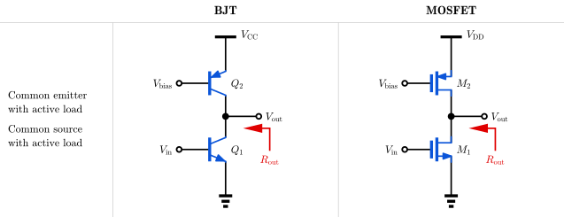
</div>
</div>
<p><strong>Razavi, Problem 7.20</strong> (MOSFET)</p>
<p>An NMOS common-source transistor <span class="math notranslate nohighlight">\(M_1\)</span> (source grounded, input <span class="math notranslate nohighlight">\(V_{in}\)</span> at the gate) drives the output node, which is loaded by a PMOS current source <span class="math notranslate nohighlight">\(M_2\)</span> (source at <span class="math notranslate nohighlight">\(V_{DD}=1.8\,\mathrm{V}\)</span>, gate at a bias <span class="math notranslate nohighlight">\(V_B\)</span>, drain at the output). The stage must give a voltage gain of 10 at a bias current of <span class="math notranslate nohighlight">\(0.5\,\mathrm{mA}\)</span>, with <span class="math notranslate nohighlight">\(\lambda_1=0.1\,\mathrm{V^{-1}}\)</span> and <span class="math notranslate nohighlight">\(\lambda_2=0.15\,\mathrm{V^{-1}}\)</span>. (a) Find <span class="math notranslate nohighlight">\((W/L)_1\)</span>. (b) With <span class="math notranslate nohighlight">\((W/L)_2=20/0.18\)</span>, find <span class="math notranslate nohighlight">\(V_B\)</span>.</p>
<p>Given: <span class="math notranslate nohighlight">\(V_{DD}=1.8\,\mathrm{V}\)</span>, <span class="math notranslate nohighlight">\(I_D=0.5\,\mathrm{mA}\)</span>, <span class="math notranslate nohighlight">\(\lvert A_v\rvert=10\)</span>, <span class="math notranslate nohighlight">\(\lambda_1=0.1\,\mathrm{V^{-1}}\)</span>, <span class="math notranslate nohighlight">\(\lambda_2=0.15\,\mathrm{V^{-1}}\)</span>, <span class="math notranslate nohighlight">\((W/L)_2=20/0.18\)</span>; default data <span class="math notranslate nohighlight">\(\mu_nC_{ox}=200\,\mu\mathrm{A/V^2}\)</span>, <span class="math notranslate nohighlight">\(\mu_pC_{ox}=100\,\mu\mathrm{A/V^2}\)</span>, <span class="math notranslate nohighlight">\(V_{TH,n}=0.4\,\mathrm{V}\)</span>, <span class="math notranslate nohighlight">\(V_{TH,p}=-0.4\,\mathrm{V}\)</span></p>
<ol class="arabic simple">
<li><p><strong>Gain of the stage.</strong> <span class="math notranslate nohighlight">\(A_v=-g_{m1}(r_{O1}\parallel r_{O2})\)</span></p></li>
<li><p><strong>Output resistances.</strong> <span class="math notranslate nohighlight">\(r_{O1}=\dfrac{1}{\lambda_1I_D}=20.0\,\mathrm{k}\Omega\)</span>, <span class="math notranslate nohighlight">\(r_{O2}=\dfrac{1}{\lambda_2I_D}=13.3\,\mathrm{k}\Omega\)</span>, <span class="math notranslate nohighlight">\(r_{O1}\parallel r_{O2}=8.00\,\mathrm{k}\Omega\)</span></p></li>
<li><p><strong>(a) Required transconductance.</strong> <span class="math notranslate nohighlight">\(g_{m1}=\dfrac{10}{8\,\mathrm{k}\Omega}=1.25\,\mathrm{mS}\)</span></p></li>
<li><p><strong>(a) Aspect ratio.</strong> <span class="math notranslate nohighlight">\((W/L)_1=\dfrac{g_{m1}^2}{2\mu_nC_{ox}I_D}=\dfrac{(1.25\,\mathrm{mS})^2}{2(200\,\mu\mathrm{A/V^2})(0.5\,\mathrm{mA})}=7.81\)</span>, e.g. <span class="math notranslate nohighlight">\(1.41\,\mu\mathrm{m}/0.18\,\mu\mathrm{m}\)</span></p></li>
<li><p><strong>(a) Overdrive of M1.</strong> <span class="math notranslate nohighlight">\(V_{GS1}-V_{TH}=2I_D/g_{m1}=0.800\,\mathrm{V}\)</span>, so <span class="math notranslate nohighlight">\(V_{out}\)</span> must stay between <span class="math notranslate nohighlight">\(0.8\,\mathrm{V}\)</span> and <span class="math notranslate nohighlight">\(V_{DD}-\lvert V_{GS2}-V_{TH2}\rvert\)</span></p></li>
<li><p><strong>(b) Overdrive of M2.</strong> <span class="math notranslate nohighlight">\(\lvert V_{GS2}-V_{TH2}\rvert=\sqrt{\dfrac{2I_D}{\mu_pC_{ox}(W/L)_2}}=\sqrt{\dfrac{1\,\mathrm{mA}}{100\,\mu\mathrm{A/V^2}\cdot 111}}=0.300\,\mathrm{V}\)</span></p></li>
<li><p><strong>(b) Gate bias.</strong> <span class="math notranslate nohighlight">\(V_{SG2}=0.4+0.3=0.700\,\mathrm{V}\)</span>, so <span class="math notranslate nohighlight">\(V_B=V_{DD}-V_{SG2}=1.10\,\mathrm{V}\)</span></p></li>
<li><p><strong>Check.</strong> <span class="math notranslate nohighlight">\(g_{m1}(r_{O1}\parallel r_{O2})=1.25\,\mathrm{mS}\times 8\,\mathrm{k}\Omega=10\)</span>; both devices saturated for <span class="math notranslate nohighlight">\(0.8\,\mathrm{V}&lt;V_{out}&lt;1.5\,\mathrm{V}\)</span></p></li>
</ol>
<p><strong>Result.</strong> (a) <span class="math notranslate nohighlight">\((W/L)_1=7.81\)</span> (<span class="math notranslate nohighlight">\(\approx1.41/0.18\)</span>); (b) <span class="math notranslate nohighlight">\(V_B=1.10\,\mathrm{V}\)</span></p>
<p>Checked by computation; the book gives no answer.</p>
<p><strong>Razavi, Problem 7.21</strong> (MOSFET)</p>
<p>In the CS stage of Problem 7.20 (NMOS <span class="math notranslate nohighlight">\(M_1\)</span> with input at the gate, PMOS current-source load <span class="math notranslate nohighlight">\(M_2\)</span> with gate at <span class="math notranslate nohighlight">\(V_B\)</span>, <span class="math notranslate nohighlight">\(V_{DD}=1.8\,\mathrm{V}\)</span>), <span class="math notranslate nohighlight">\(M_2\)</span> is made so long that <span class="math notranslate nohighlight">\(\lambda_2\ll\lambda_1\)</span>. With <span class="math notranslate nohighlight">\(\lambda_1=0.1\,\mathrm{V^{-1}}\)</span>, <span class="math notranslate nohighlight">\((W/L)_1=20/0.18\)</span> and <span class="math notranslate nohighlight">\(I_D=1\,\mathrm{mA}\)</span>, find the voltage gain.</p>
<p>Given: <span class="math notranslate nohighlight">\(\lambda_1=0.1\,\mathrm{V^{-1}}\)</span>, <span class="math notranslate nohighlight">\(\lambda_2\approx0\)</span>, <span class="math notranslate nohighlight">\((W/L)_1=20/0.18\)</span>, <span class="math notranslate nohighlight">\(I_D=1\,\mathrm{mA}\)</span>; default data <span class="math notranslate nohighlight">\(\mu_nC_{ox}=200\,\mu\mathrm{A/V^2}\)</span>, <span class="math notranslate nohighlight">\(\mu_pC_{ox}=100\,\mu\mathrm{A/V^2}\)</span>, <span class="math notranslate nohighlight">\(V_{TH,n}=0.4\,\mathrm{V}\)</span>, <span class="math notranslate nohighlight">\(V_{TH,p}=-0.4\,\mathrm{V}\)</span></p>
<ol class="arabic simple">
<li><p><strong>Load resistance.</strong> <span class="math notranslate nohighlight">\(\lambda_2\ll\lambda_1\)</span> gives <span class="math notranslate nohighlight">\(r_{O2}\gg r_{O1}\)</span>, so <span class="math notranslate nohighlight">\(r_{O1}\parallel r_{O2}\approx r_{O1}\)</span></p></li>
<li><p><strong>Transconductance.</strong> <span class="math notranslate nohighlight">\(g_{m1}=\sqrt{2\mu_nC_{ox}(W/L)_1I_D}=\sqrt{2(200\,\mu)(111)(1\,\mathrm{m})}=6.67\,\mathrm{mS}\)</span></p></li>
<li><p><strong>Output resistance of M1.</strong> <span class="math notranslate nohighlight">\(r_{O1}=\dfrac{1}{\lambda_1I_D}=10.0\,\mathrm{k}\Omega\)</span></p></li>
<li><p><strong>Gain.</strong> <span class="math notranslate nohighlight">\(A_v\approx-g_{m1}r_{O1}=-6.67\,\mathrm{mS}\times10\,\mathrm{k}\Omega=-66.7\)</span></p></li>
</ol>
<p><strong>Result.</strong> <span class="math notranslate nohighlight">\(A_v\approx-g_{m1}r_{O1}=-66.7\)</span></p>
<p>Checked by computation; the book gives no answer.</p>
<p><strong>Razavi, Problem 7.22</strong> (MOSFET)</p>
<p>The CS stage of Problem 7.20 (NMOS input <span class="math notranslate nohighlight">\(M_1\)</span>, PMOS current-source load <span class="math notranslate nohighlight">\(M_2\)</span>) is designed for a bias current <span class="math notranslate nohighlight">\(I_1\)</span> with some dimensions for <span class="math notranslate nohighlight">\(M_1\)</span> and <span class="math notranslate nohighlight">\(M_2\)</span>. The width and the length of both transistors are then doubled. How does the voltage gain change if (a) the bias current stays at <span class="math notranslate nohighlight">\(I_1\)</span>, (b) the bias current is doubled?</p>
<p>Given: <span class="math notranslate nohighlight">\(W\to2W\)</span>, <span class="math notranslate nohighlight">\(L\to2L\)</span> for <span class="math notranslate nohighlight">\(M_1\)</span> and <span class="math notranslate nohighlight">\(M_2\)</span>; <span class="math notranslate nohighlight">\(\lambda\propto1/L\)</span></p>
<ol class="arabic simple">
<li><p><strong>Gain.</strong> <span class="math notranslate nohighlight">\(A_v=-g_{m1}(r_{O1}\parallel r_{O2})\)</span> with <span class="math notranslate nohighlight">\(g_{m1}=\sqrt{2\mu_nC_{ox}(W/L)_1I_D}\)</span> and <span class="math notranslate nohighlight">\(r_O=1/(\lambda I_D)\)</span></p></li>
<li><p><strong>Effect of the scaling.</strong> <span class="math notranslate nohighlight">\(W/L\)</span> is unchanged; <span class="math notranslate nohighlight">\(\lambda\)</span> is inversely proportional to <span class="math notranslate nohighlight">\(L\)</span>, so <span class="math notranslate nohighlight">\(\lambda_1\)</span> and <span class="math notranslate nohighlight">\(\lambda_2\)</span> are halved</p></li>
<li><p><strong>(a) Same current.</strong> <span class="math notranslate nohighlight">\(g_{m1}\)</span> unchanged; <span class="math notranslate nohighlight">\(r_{O1}\)</span> and <span class="math notranslate nohighlight">\(r_{O2}\)</span> double, so <span class="math notranslate nohighlight">\(r_{O1}\parallel r_{O2}\)</span> doubles: <span class="math notranslate nohighlight">\(\lvert A_v\rvert\)</span> doubles</p></li>
<li><p><strong>(b) Doubled current.</strong> <span class="math notranslate nohighlight">\(g_{m1}\)</span> grows by <span class="math notranslate nohighlight">\(\sqrt2\)</span>; <span class="math notranslate nohighlight">\(r_O=1/(\lambda I_D)\)</span> keeps its value (<span class="math notranslate nohighlight">\(\lambda/2\)</span> times <span class="math notranslate nohighlight">\(2I_D\)</span>): <span class="math notranslate nohighlight">\(\lvert A_v\rvert\)</span> grows by <span class="math notranslate nohighlight">\(\sqrt2=1.41\)</span></p></li>
<li><p><strong>Numerical check.</strong> <span class="math notranslate nohighlight">\((W/L)_1=10/0.18\)</span>, <span class="math notranslate nohighlight">\(I_1=0.5\,\mathrm{mA}\)</span>, <span class="math notranslate nohighlight">\(\lambda_1=0.1\)</span>, <span class="math notranslate nohighlight">\(\lambda_2=0.15\,\mathrm{V^{-1}}\)</span>: <span class="math notranslate nohighlight">\(\lvert A_v\rvert=26.7\to53.3\)</span> in (a) and <span class="math notranslate nohighlight">\(\to37.7\)</span> in (b)</p></li>
</ol>
<p><strong>Result.</strong> (a) gain doubles; (b) gain grows by <span class="math notranslate nohighlight">\(\sqrt2\approx1.41\)</span></p>
<p>Checked by computation; the book gives no answer.</p>
<p><strong>Razavi, Problem 7.64</strong> (MOSFET)</p>
<p>Fig. 7.89: NMOS <span class="math notranslate nohighlight">\(M_1\)</span> (source grounded, gate = input) with a PMOS load <span class="math notranslate nohighlight">\(M_2\)</span> (source at <span class="math notranslate nohighlight">\(V_{DD}=1.8\,\mathrm{V}\)</span>, drain at the output). The gate of <span class="math notranslate nohighlight">\(M_2\)</span> is connected to the output through <span class="math notranslate nohighlight">\(R_G\)</span> and to ground through a very large <span class="math notranslate nohighlight">\(C_B\)</span>. <span class="math notranslate nohighlight">\(\lambda_n=0.1\,\mathrm{V^{-1}}\)</span>, <span class="math notranslate nohighlight">\(\lambda_p=0.2\,\mathrm{V^{-1}}\)</span>. (a) Find the voltage gain. (b) Design for a gain of 15 with a power budget of 3 mW, taking <span class="math notranslate nohighlight">\(R_G\approx10(r_{O1}\parallel r_{O2})\)</span> and an output dc level of <span class="math notranslate nohighlight">\(V_{DD}/2\)</span>.</p>
<p>Given: <span class="math notranslate nohighlight">\(\lambda_n=0.1\,\mathrm{V^{-1}}\)</span>, <span class="math notranslate nohighlight">\(\lambda_p=0.2\,\mathrm{V^{-1}}\)</span>, <span class="math notranslate nohighlight">\(C_B\to\infty\)</span>; (b) <span class="math notranslate nohighlight">\(A_v=15\)</span>, <span class="math notranslate nohighlight">\(P=3\,\mathrm{mW}\)</span>, <span class="math notranslate nohighlight">\(V_{out}=0.9\,\mathrm{V}\)</span>; Defaults of the problem set: <span class="math notranslate nohighlight">\(\mu_nC_{ox}=200\,\mu\mathrm{A/V^2}\)</span>, <span class="math notranslate nohighlight">\(\mu_pC_{ox}=100\,\mu\mathrm{A/V^2}\)</span>, <span class="math notranslate nohighlight">\(V_{TH}=0.4\,\mathrm{V}\)</span> (<span class="math notranslate nohighlight">\(-0.4\,\mathrm{V}\)</span> PMOS), <span class="math notranslate nohighlight">\(V_{DD}=1.8\,\mathrm{V}\)</span></p>
<ol class="arabic simple">
<li><p><strong>(a) Role of <span class="math notranslate nohighlight">\(R_G\)</span> and <span class="math notranslate nohighlight">\(C_B\)</span>.</strong> At dc no current flows in <span class="math notranslate nohighlight">\(R_G\)</span>, so <span class="math notranslate nohighlight">\(V_{G2}=V_{out}\)</span> (<span class="math notranslate nohighlight">\(M_2\)</span> behaves as a diode and sets the bias). At signal frequencies <span class="math notranslate nohighlight">\(C_B\)</span> grounds the gate of <span class="math notranslate nohighlight">\(M_2\)</span>, so <span class="math notranslate nohighlight">\(M_2\)</span> is a current source of resistance <span class="math notranslate nohighlight">\(r_{O2}\)</span> and <span class="math notranslate nohighlight">\(R_G\)</span> goes from the output to ac ground</p></li>
<li><p><strong>(a) Gain.</strong> <span class="math notranslate nohighlight">\(A_v=-g_{m1}\left(r_{O1}\parallel r_{O2}\parallel R_G\right)\)</span></p></li>
<li><p><strong>(b) Current and output resistances.</strong> <span class="math notranslate nohighlight">\(I_D=3\,\mathrm{mW}/1.8\,\mathrm{V}=1.67\,\mathrm{mA}\)</span>; <span class="math notranslate nohighlight">\(r_{O1}=1/(0.1I_D)=6\,\mathrm{k}\Omega\)</span>, <span class="math notranslate nohighlight">\(r_{O2}=1/(0.2I_D)=3\,\mathrm{k}\Omega\)</span>, <span class="math notranslate nohighlight">\(r_{O1}\parallel r_{O2}=2\,\mathrm{k}\Omega\)</span></p></li>
<li><p><strong>(b) Feedback resistor.</strong> <span class="math notranslate nohighlight">\(R_G=10\times2\,\mathrm{k}\Omega=20\,\mathrm{k}\Omega\)</span>; total load <span class="math notranslate nohighlight">\(2\,\mathrm{k}\Omega\parallel20\,\mathrm{k}\Omega=1.82\,\mathrm{k}\Omega\)</span></p></li>
<li><p><strong>(b) Size <span class="math notranslate nohighlight">\(M_1\)</span>.</strong> <span class="math notranslate nohighlight">\(g_{m1}=15/1.82\,\mathrm{k}\Omega=8.25\,\mathrm{mS}\)</span>, <span class="math notranslate nohighlight">\(V_{GS1}-V_{TH}=2I_D/g_{m1}=0.404\,\mathrm{V}\)</span>, <span class="math notranslate nohighlight">\((W/L)_1=\dfrac{2I_D}{\mu_nC_{ox}(0.404)^2}=102\)</span></p></li>
<li><p><strong>(b) Size <span class="math notranslate nohighlight">\(M_2\)</span> from the output level.</strong> <span class="math notranslate nohighlight">\(V_{G2}=V_{out}=0.9\,\mathrm{V}\)</span>, so <span class="math notranslate nohighlight">\(V_{SG2}=0.9\,\mathrm{V}\)</span>, overdrive <span class="math notranslate nohighlight">\(0.5\,\mathrm{V}\)</span>; <span class="math notranslate nohighlight">\((W/L)_2=\dfrac{2I_D}{\mu_pC_{ox}(0.5)^2}=133\)</span></p></li>
<li><p><strong>(b) Check.</strong> <span class="math notranslate nohighlight">\(V_{DS1}=0.9\,\mathrm{V}&gt;0.404\,\mathrm{V}\)</span>; <span class="math notranslate nohighlight">\(M_2\)</span> has <span class="math notranslate nohighlight">\(V_{SD2}=V_{SG2}\)</span>, saturated; input dc level <span class="math notranslate nohighlight">\(V_{GS1}=0.804\,\mathrm{V}\)</span></p></li>
</ol>
<p><strong>Result.</strong> (a) <span class="math notranslate nohighlight">\(A_v=-g_{m1}(r_{O1}\parallel r_{O2}\parallel R_G)\)</span>; (b) <span class="math notranslate nohighlight">\(I_D=1.67\,\mathrm{mA}\)</span>, <span class="math notranslate nohighlight">\(R_G=20\,\mathrm{k}\Omega\)</span>, <span class="math notranslate nohighlight">\((W/L)_1=102\)</span>, <span class="math notranslate nohighlight">\((W/L)_2=133\)</span></p>
<p>Checked by computation; the book gives no answer.</p>
<p><strong>Sedra/Smith, Exercise 7.8</strong> (MOSFET)</p>
<p>A common-source amplifier uses NMOS <span class="math notranslate nohighlight">\(Q_1\)</span> with a PMOS current-source load <span class="math notranslate nohighlight">\(Q_2\)</span>. <span class="math notranslate nohighlight">\(Q_2\)</span> is biased by the diode-connected PMOS <span class="math notranslate nohighlight">\(Q_3\)</span> carrying <span class="math notranslate nohighlight">\(I_{REF}=100\,\mathrm{\mu A}\)</span> (so <span class="math notranslate nohighlight">\(Q_2\)</span> mirrors it). All transistors have <span class="math notranslate nohighlight">\(W/L=7.2\,\mathrm{\mu m}/0.36\,\mathrm{\mu m}\)</span>, <span class="math notranslate nohighlight">\(\mu_nC_{ox}=387\,\mathrm{\mu A/V^2}\)</span>, <span class="math notranslate nohighlight">\(V_{An}'=5\,\mathrm{V/\mu m}\)</span> and <span class="math notranslate nohighlight">\(\lvert V_{Ap}'\rvert=6\,\mathrm{V/\mu m}\)</span>. Find <span class="math notranslate nohighlight">\(g_{m1}\)</span>, <span class="math notranslate nohighlight">\(r_{o1}\)</span>, <span class="math notranslate nohighlight">\(r_{o2}\)</span> and the voltage gain <span class="math notranslate nohighlight">\(v_o/v_i\)</span>.</p>
<p>Given: <span class="math notranslate nohighlight">\(W/L=7.2/0.36=20\)</span>, <span class="math notranslate nohighlight">\(I_{REF}=100\,\mathrm{\mu A}\)</span>, <span class="math notranslate nohighlight">\(\mu_nC_{ox}=387\,\mathrm{\mu A/V^2}\)</span>, <span class="math notranslate nohighlight">\(V_{An}'=5\,\mathrm{V/\mu m}\)</span>, <span class="math notranslate nohighlight">\(\lvert V_{Ap}'\rvert=6\,\mathrm{V/\mu m}\)</span></p>
<ol class="arabic simple">
<li><p><strong>Bias current.</strong> All devices have the same <span class="math notranslate nohighlight">\(W/L\)</span>, so <span class="math notranslate nohighlight">\(I_{D1}=I_{D2}=I_{D3}=I_{REF}=100\,\mathrm{\mu A}\)</span>.</p></li>
<li><p><strong>Transconductance.</strong> <span class="math notranslate nohighlight">\(g_{m1}=\sqrt{2\mu_nC_{ox}(W/L)_1I_{D1}}=\sqrt{2\times387\,\mathrm{\mu A/V^2}\times20\times100\,\mathrm{\mu A}}=1.24\,\mathrm{mA/V}\)</span>.</p></li>
<li><p><strong>Output resistance of Q1.</strong> <span class="math notranslate nohighlight">\(r_{o1}=\dfrac{V_{An}'L_1}{I_{D1}}=\dfrac{5\times0.36}{0.1\,\mathrm{mA}}=18\,\mathrm{k\Omega}\)</span>.</p></li>
<li><p><strong>Output resistance of Q2.</strong> <span class="math notranslate nohighlight">\(r_{o2}=\dfrac{\lvert V_{Ap}'\rvert L_2}{I_{D2}}=\dfrac{6\times0.36}{0.1\,\mathrm{mA}}=21.6\,\mathrm{k\Omega}\)</span>.</p></li>
<li><p><strong>Gain.</strong> <span class="math notranslate nohighlight">\(A_v=-g_{m1}(r_{o1}\parallel r_{o2})=-1.24\,\mathrm{mA/V}\times(18\parallel21.6)\,\mathrm{k\Omega}=-12.2\,\mathrm{V/V}\)</span>.</p></li>
</ol>
<p><strong>Result.</strong> <span class="math notranslate nohighlight">\(g_{m1}=1.24\,\mathrm{mA/V}\)</span>, <span class="math notranslate nohighlight">\(r_{o1}=18\,\mathrm{k\Omega}\)</span>, <span class="math notranslate nohighlight">\(r_{o2}=21.6\,\mathrm{k\Omega}\)</span>, <span class="math notranslate nohighlight">\(A_v=-12.2\,\mathrm{V/V}\)</span></p>
<p>Checked: agrees with the answer in the solutions manual.</p>
<p><strong>Sedra/Smith, Exercise 7.9</strong> (BJT)</p>
<p>A common-emitter npn amplifier <span class="math notranslate nohighlight">\(Q_1\)</span> has a pnp current-source load <span class="math notranslate nohighlight">\(Q_2\)</span> (biased by a fixed voltage <span class="math notranslate nohighlight">\(V_{BIAS}\)</span>), both at <span class="math notranslate nohighlight">\(I=100\,\mathrm{\mu A}\)</span>, with <span class="math notranslate nohighlight">\(\beta=100\)</span> and <span class="math notranslate nohighlight">\(\lvert V_A\rvert=50\,\mathrm{V}\)</span> for both. The input is applied at the base of <span class="math notranslate nohighlight">\(Q_1\)</span>. Find the input resistance <span class="math notranslate nohighlight">\(R_{in}\)</span>, <span class="math notranslate nohighlight">\(g_m\)</span>, <span class="math notranslate nohighlight">\(r_{o1}\)</span>, <span class="math notranslate nohighlight">\(r_{o2}\)</span>, the intrinsic gain <span class="math notranslate nohighlight">\(A_0\)</span> and the voltage gain <span class="math notranslate nohighlight">\(A_v\)</span> (<span class="math notranslate nohighlight">\(V_T=25\,\mathrm{mV}\)</span>).</p>
<p>Given: <span class="math notranslate nohighlight">\(I_{C1}=I=100\,\mathrm{\mu A}\)</span>, <span class="math notranslate nohighlight">\(\beta=100\)</span>, <span class="math notranslate nohighlight">\(\lvert V_A\rvert=50\,\mathrm{V}\)</span>, <span class="math notranslate nohighlight">\(V_T=25\,\mathrm{mV}\)</span></p>
<ol class="arabic simple">
<li><p><strong>Transconductance.</strong> <span class="math notranslate nohighlight">\(g_{m1}=\dfrac{I_{C1}}{V_T}=\dfrac{0.1\,\mathrm{mA}}{25\,\mathrm{mV}}=4\,\mathrm{mA/V}\)</span>.</p></li>
<li><p><strong>Input resistance.</strong> <span class="math notranslate nohighlight">\(R_{in}=r_{\pi1}=\dfrac{\beta}{g_{m1}}=\dfrac{100}{4\,\mathrm{mA/V}}=25\,\mathrm{k\Omega}\)</span>.</p></li>
<li><p><strong>Output resistances.</strong> <span class="math notranslate nohighlight">\(r_{o1}=\dfrac{V_A}{I}=\dfrac{50}{0.1\,\mathrm{mA}}=500\,\mathrm{k\Omega}\)</span>, <span class="math notranslate nohighlight">\(r_{o2}=\dfrac{\lvert V_A\rvert}{I}=500\,\mathrm{k\Omega}\)</span>.</p></li>
<li><p><strong>Intrinsic gain.</strong> <span class="math notranslate nohighlight">\(A_0=g_{m1}r_{o1}=4\times500=2000\,\mathrm{V/V}\)</span>.</p></li>
<li><p><strong>Voltage gain.</strong> <span class="math notranslate nohighlight">\(A_v=-g_{m1}(r_{o1}\parallel r_{o2})=-4\,\mathrm{mA/V}\times250\,\mathrm{k\Omega}=-1000\,\mathrm{V/V}\)</span>.</p></li>
</ol>
<p><strong>Result.</strong> <span class="math notranslate nohighlight">\(g_m=4\,\mathrm{mA/V}\)</span>, <span class="math notranslate nohighlight">\(R_{in}=25\,\mathrm{k\Omega}\)</span>, <span class="math notranslate nohighlight">\(r_{o1}=r_{o2}=500\,\mathrm{k\Omega}\)</span>, <span class="math notranslate nohighlight">\(A_0=2000\,\mathrm{V/V}\)</span>, <span class="math notranslate nohighlight">\(A_v=-1000\,\mathrm{V/V}\)</span></p>
<p>Checked: agrees with the answer in the solutions manual.</p>
<p><strong>Sedra/Smith, Problem 7.30</strong> (MOSFET)</p>
<p>A CMOS common-source stage (Fig. 7.15a) in a <span class="math notranslate nohighlight">\(0.18\,\mu\mathrm{m}\)</span> process uses NMOS <span class="math notranslate nohighlight">\(Q_1\)</span> with a PMOS current-source load <span class="math notranslate nohighlight">\(Q_2\)</span> and <span class="math notranslate nohighlight">\(V_{DD}=1.8\,\mathrm{V}\)</span>. Both transistors carry <span class="math notranslate nohighlight">\(I_D=100\,\mu\mathrm{A}\)</span> at <span class="math notranslate nohighlight">\(\lvert V_{OV}\rvert=0.2\,\mathrm{V}\)</span>. Data: <span class="math notranslate nohighlight">\(\mu_nC_{ox}=387\,\mu\mathrm{A/V^2}\)</span>, <span class="math notranslate nohighlight">\(\mu_pC_{ox}=86\,\mu\mathrm{A/V^2}\)</span>, <span class="math notranslate nohighlight">\(\lvert V_{tp}\rvert=0.5\,\mathrm{V}\)</span>, <span class="math notranslate nohighlight">\(V_{An}'=5\,\mathrm{V}/\mu\mathrm{m}\)</span>, <span class="math notranslate nohighlight">\(\lvert V_{Ap}'\rvert=6\,\mathrm{V}/\mu\mathrm{m}\)</span>. Find the dc gate voltage <span class="math notranslate nohighlight">\(V_G\)</span> of <span class="math notranslate nohighlight">\(Q_2\)</span>, <span class="math notranslate nohighlight">\(W/L\)</span> of both transistors, and the length <span class="math notranslate nohighlight">\(L\)</span> (same for both) that gives a gain of <span class="math notranslate nohighlight">\(-20\,\mathrm{V/V}\)</span>.</p>
<p>Given: <span class="math notranslate nohighlight">\(V_{DD}=1.8\,\mathrm{V}\)</span>, <span class="math notranslate nohighlight">\(I_D=100\,\mu\mathrm{A}\)</span>, <span class="math notranslate nohighlight">\(\lvert V_{OV}\rvert=0.2\,\mathrm{V}\)</span>, <span class="math notranslate nohighlight">\(\mu_nC_{ox}=387\)</span>, <span class="math notranslate nohighlight">\(\mu_pC_{ox}=86\,\mu\mathrm{A/V^2}\)</span>, <span class="math notranslate nohighlight">\(\lvert V_{tp}\rvert=0.5\,\mathrm{V}\)</span>, <span class="math notranslate nohighlight">\(V_{An}'=5\)</span>, <span class="math notranslate nohighlight">\(\lvert V_{Ap}'\rvert=6\,\mathrm{V}/\mu\mathrm{m}\)</span></p>
<ol class="arabic simple">
<li><p><strong>Gate bias of <span class="math notranslate nohighlight">\(Q_2\)</span>.</strong> <span class="math notranslate nohighlight">\(V_G=V_{DD}-V_{SG2}=1.8-(0.5+0.2)=1.1\,\mathrm{V}\)</span>.</p></li>
<li><p><strong><span class="math notranslate nohighlight">\(W/L\)</span> of <span class="math notranslate nohighlight">\(Q_1\)</span>.</strong> <span class="math notranslate nohighlight">\(100=\tfrac12\times387\times(W/L)_1\times0.2^2\Rightarrow(W/L)_1=12.92\)</span>.</p></li>
<li><p><strong><span class="math notranslate nohighlight">\(W/L\)</span> of <span class="math notranslate nohighlight">\(Q_2\)</span>.</strong> <span class="math notranslate nohighlight">\(100=\tfrac12\times86\times(W/L)_2\times0.2^2\Rightarrow(W/L)_2=58.14\)</span>.</p></li>
<li><p><strong>Transconductance.</strong> <span class="math notranslate nohighlight">\(g_{m1}=\dfrac{2I_D}{V_{OV}}=\dfrac{2\times0.1}{0.2}=1\,\mathrm{mA/V}\)</span>.</p></li>
<li><p><strong>Output resistances.</strong> <span class="math notranslate nohighlight">\(r_{o1}=\dfrac{5L}{0.1}=50L\,\mathrm{k}\Omega\)</span>, <span class="math notranslate nohighlight">\(r_{o2}=\dfrac{6L}{0.1}=60L\,\mathrm{k}\Omega\)</span> (<span class="math notranslate nohighlight">\(L\)</span> in <span class="math notranslate nohighlight">\(\mu\mathrm{m}\)</span>), so <span class="math notranslate nohighlight">\(r_{o1}\parallel r_{o2}=27.3L\,\mathrm{k}\Omega\)</span>.</p></li>
<li><p><strong>Length for gain <span class="math notranslate nohighlight">\(-20\)</span>.</strong> <span class="math notranslate nohighlight">\(A_v=-g_{m1}(r_{o1}\parallel r_{o2})=-27.3L=-20\Rightarrow L=0.73\,\mu\mathrm{m}\)</span>.</p></li>
</ol>
<p><strong>Result.</strong> <span class="math notranslate nohighlight">\(V_G=1.1\,\mathrm{V}\)</span>, <span class="math notranslate nohighlight">\((W/L)_1=12.92\)</span>, <span class="math notranslate nohighlight">\((W/L)_2=58.14\)</span>, <span class="math notranslate nohighlight">\(L=0.73\,\mu\mathrm{m}\)</span></p>
<p>Checked: agrees with the answer in the solutions manual.</p>
<p><strong>Sedra/Smith, Problem 7.46</strong> (MOSFET)</p>
<p>A CMOS common-source amplifier (NMOS <span class="math notranslate nohighlight">\(Q_1\)</span> driven at its gate, PMOS <span class="math notranslate nohighlight">\(Q_2\)</span> as current-source load with a fixed gate bias <span class="math notranslate nohighlight">\(V_G\)</span>) runs from <span class="math notranslate nohighlight">\(V_{DD}=1.3\,\mathrm{V}\)</span> with <span class="math notranslate nohighlight">\(I_D=100\,\mu\mathrm{A}\)</span> in both transistors, <span class="math notranslate nohighlight">\(\lvert V_{OV}\rvert=0.15\,\mathrm{V}\)</span> for both and <span class="math notranslate nohighlight">\(L=0.4\,\mu\mathrm{m}\)</span> for both. Process: <span class="math notranslate nohighlight">\(\mu_nC_{ox}=511\)</span>, <span class="math notranslate nohighlight">\(\mu_pC_{ox}=128\,\mu\mathrm{A/V^2}\)</span>, <span class="math notranslate nohighlight">\(\lvert V_{tp}\rvert=0.4\,\mathrm{V}\)</span>, <span class="math notranslate nohighlight">\(V_{An}'=5\)</span>, <span class="math notranslate nohighlight">\(\lvert V_{Ap}'\rvert=6\,\mathrm{V/\mu m}\)</span>. Find <span class="math notranslate nohighlight">\(V_G\)</span>, <span class="math notranslate nohighlight">\((W/L)_1\)</span>, <span class="math notranslate nohighlight">\((W/L)_2\)</span> and the voltage gain.</p>
<p>Given: <span class="math notranslate nohighlight">\(V_{DD}=1.3\,\mathrm{V}\)</span>, <span class="math notranslate nohighlight">\(I_D=100\,\mu\mathrm{A}\)</span>, <span class="math notranslate nohighlight">\(\lvert V_{OV}\rvert=0.15\,\mathrm{V}\)</span>, <span class="math notranslate nohighlight">\(L=0.4\,\mu\mathrm{m}\)</span>, <span class="math notranslate nohighlight">\(\mu_nC_{ox}=511\)</span>, <span class="math notranslate nohighlight">\(\mu_pC_{ox}=128\,\mu\mathrm{A/V^2}\)</span>, <span class="math notranslate nohighlight">\(\lvert V_{tp}\rvert=0.4\,\mathrm{V}\)</span>, <span class="math notranslate nohighlight">\(V_{An}'=5\)</span>, <span class="math notranslate nohighlight">\(\lvert V_{Ap}'\rvert=6\,\mathrm{V/\mu m}\)</span></p>
<ol class="arabic simple">
<li><p><strong>Gate bias of Q2.</strong> <span class="math notranslate nohighlight">\(V_{SG2}=\lvert V_{tp}\rvert+\lvert V_{OV}\rvert=0.4+0.15=0.55\,\mathrm{V}\)</span>, so <span class="math notranslate nohighlight">\(V_G=V_{DD}-V_{SG2}=1.3-0.55=0.75\,\mathrm{V}\)</span>.</p></li>
<li><p><strong><span class="math notranslate nohighlight">\((W/L)_1\)</span>.</strong> <span class="math notranslate nohighlight">\(100=\tfrac12(511)\left(\dfrac WL\right)_1(0.15)^2\Rightarrow\left(\dfrac WL\right)_1=17.4\)</span>.</p></li>
<li><p><strong><span class="math notranslate nohighlight">\((W/L)_2\)</span>.</strong> <span class="math notranslate nohighlight">\(100=\tfrac12(128)\left(\dfrac WL\right)_2(0.15)^2\Rightarrow\left(\dfrac WL\right)_2=69.4\)</span>.</p></li>
<li><p><strong>Small-signal parameters.</strong> <span class="math notranslate nohighlight">\(g_{m1}=2I_D/V_{OV}=1.33\,\mathrm{mA/V}\)</span>; <span class="math notranslate nohighlight">\(r_{o1}=5\times0.4/0.1=20\,\mathrm{k}\Omega\)</span>; <span class="math notranslate nohighlight">\(r_{o2}=6\times0.4/0.1=24\,\mathrm{k}\Omega\)</span>.</p></li>
<li><p><strong>Gain.</strong> <span class="math notranslate nohighlight">\(A_v=-g_{m1}(r_{o1}\parallel r_{o2})=-1.33\times(20\parallel24)=-1.33\times10.9=-14.5\,\mathrm{V/V}\)</span>.</p></li>
</ol>
<p><strong>Result.</strong> <span class="math notranslate nohighlight">\(V_G=0.75\,\mathrm{V}\)</span>, <span class="math notranslate nohighlight">\((W/L)_1=17.4\)</span>, <span class="math notranslate nohighlight">\((W/L)_2=69.4\)</span>, <span class="math notranslate nohighlight">\(A_v=-14.5\,\mathrm{V/V}\)</span></p>
<p>Checked: agrees with the answer in the solutions manual.</p>
</section>
<section id="common-emitter-with-diode-load-common-source-with-diode-load">
<h3>Common emitter with diode load / Common source with diode load<a class="headerlink" href="#common-emitter-with-diode-load-common-source-with-diode-load" title="Link to this heading">#</a></h3>
<div class="cell tag_hide-input docutils container">
<details class="admonition hide above-input">
<summary aria-label="Toggle hidden content">
<p class="collapsed admonition-title">Show code cell source</p>
<p class="expanded admonition-title">Hide code cell source</p>
</summary>
<div class="cell_input docutils container">
<div class="highlight-ipython3 notranslate"><div class="highlight"><pre><span></span><span class="c1"># HIDE/SHOW</span>
<span class="n">show</span><span class="p">(</span><span class="n">C</span><span class="o">.</span><span class="n">diode_load</span><span class="p">)</span>
</pre></div>
</div>
</div>
</details>
<div class="cell_output docutils container">
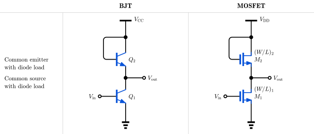
</div>
</div>
<p><strong>Razavi, Problem 7.25</strong> (MOSFET)</p>
<p>An NMOS CS transistor <span class="math notranslate nohighlight">\(M_1\)</span> (input at the gate, source grounded) is loaded by a diode-connected PMOS <span class="math notranslate nohighlight">\(M_2\)</span> (source at <span class="math notranslate nohighlight">\(V_{DD}=1.8\,\mathrm{V}\)</span>, gate tied to its drain at the output). Design for a voltage gain of 3 with <span class="math notranslate nohighlight">\((W/L)_1=20/0.18\)</span> and <span class="math notranslate nohighlight">\(\lambda=0\)</span>: find <span class="math notranslate nohighlight">\((W/L)_2\)</span>.</p>
<p>Given: <span class="math notranslate nohighlight">\(\lvert A_v\rvert=3\)</span>, <span class="math notranslate nohighlight">\((W/L)_1=20/0.18\)</span>, <span class="math notranslate nohighlight">\(\lambda=0\)</span>, <span class="math notranslate nohighlight">\(V_{DD}=1.8\,\mathrm{V}\)</span>; default data <span class="math notranslate nohighlight">\(\mu_nC_{ox}=200\,\mu\mathrm{A/V^2}\)</span>, <span class="math notranslate nohighlight">\(\mu_pC_{ox}=100\,\mu\mathrm{A/V^2}\)</span>, <span class="math notranslate nohighlight">\(V_{TH,n}=0.4\,\mathrm{V}\)</span>, <span class="math notranslate nohighlight">\(V_{TH,p}=-0.4\,\mathrm{V}\)</span></p>
<ol class="arabic simple">
<li><p><strong>Gain with a diode load.</strong> <span class="math notranslate nohighlight">\(A_v=-\dfrac{g_{m1}}{g_{m2}}=-\sqrt{\dfrac{\mu_nC_{ox}(W/L)_1}{\mu_pC_{ox}(W/L)_2}}\)</span> (same current in both)</p></li>
<li><p><strong>Solve for the load.</strong> <span class="math notranslate nohighlight">\((W/L)_2=\dfrac{\mu_n}{\mu_p}\dfrac{(W/L)_1}{A_v^2}=\dfrac{2\times111}{9}=24.7\)</span>, e.g. <span class="math notranslate nohighlight">\(4.44/0.18\)</span></p></li>
<li><p><strong>Headroom remark.</strong> Overdrives scale as <span class="math notranslate nohighlight">\(\lvert V_{ov2}\rvert=3V_{ov1}\)</span>; saturation of <span class="math notranslate nohighlight">\(M_1\)</span> needs <span class="math notranslate nohighlight">\(1.8-0.4-3V_{ov1}\ge V_{ov1}\)</span>, i.e. <span class="math notranslate nohighlight">\(V_{ov1}\le0.35\,\mathrm{V}\)</span>, <span class="math notranslate nohighlight">\(I_D\le1.36\,\mathrm{mA}\)</span></p></li>
</ol>
<p><strong>Result.</strong> <span class="math notranslate nohighlight">\((W/L)_2=24.7\)</span> (<span class="math notranslate nohighlight">\(\approx4.44/0.18\)</span>)</p>
<p>Checked by computation; the book gives no answer.</p>
<p><strong>Razavi, Problem 7.26</strong> (MOSFET)</p>
<p>In the CS stage with a diode-connected PMOS load of Problem 7.25 (<span class="math notranslate nohighlight">\(V_{DD}=1.8\,\mathrm{V}\)</span>), <span class="math notranslate nohighlight">\((W/L)_1=10/0.18\)</span> and <span class="math notranslate nohighlight">\(I_{D1}=0.5\,\mathrm{mA}\)</span>, <span class="math notranslate nohighlight">\(\lambda=0\)</span>. (a) Find <span class="math notranslate nohighlight">\((W/L)_2\)</span> so that <span class="math notranslate nohighlight">\(M_1\)</span> sits at the edge of saturation. (b) Find the voltage gain. (c) Explain why this choice of <span class="math notranslate nohighlight">\((W/L)_2\)</span> gives the largest gain.</p>
<p>Given: <span class="math notranslate nohighlight">\((W/L)_1=10/0.18\)</span>, <span class="math notranslate nohighlight">\(I_D=0.5\,\mathrm{mA}\)</span>, <span class="math notranslate nohighlight">\(\lambda=0\)</span>, <span class="math notranslate nohighlight">\(V_{DD}=1.8\,\mathrm{V}\)</span>; default data <span class="math notranslate nohighlight">\(\mu_nC_{ox}=200\,\mu\mathrm{A/V^2}\)</span>, <span class="math notranslate nohighlight">\(\mu_pC_{ox}=100\,\mu\mathrm{A/V^2}\)</span>, <span class="math notranslate nohighlight">\(V_{TH,n}=0.4\,\mathrm{V}\)</span>, <span class="math notranslate nohighlight">\(V_{TH,p}=-0.4\,\mathrm{V}\)</span></p>
<ol class="arabic simple">
<li><p><strong>Overdrive of M1.</strong> <span class="math notranslate nohighlight">\(V_{GS1}-V_{TH}=\sqrt{\dfrac{2I_D}{\mu_nC_{ox}(W/L)_1}}=\sqrt{\dfrac{1\,\mathrm{mA}}{200\,\mu\cdot55.6}}=0.300\,\mathrm{V}\)</span>, <span class="math notranslate nohighlight">\(V_{GS1}=0.700\,\mathrm{V}\)</span></p></li>
<li><p><strong>(a) Edge of saturation.</strong> <span class="math notranslate nohighlight">\(V_{out}=V_{GS1}-V_{TH}=0.300\,\mathrm{V}\)</span></p></li>
<li><p><strong>(a) Overdrive of M2.</strong> <span class="math notranslate nohighlight">\(V_{SG2}=1.8-0.3=1.50\,\mathrm{V}\)</span>, <span class="math notranslate nohighlight">\(\lvert V_{GS2}-V_{TH2}\rvert=1.10\,\mathrm{V}\)</span></p></li>
<li><p><strong>(a) Aspect ratio.</strong> <span class="math notranslate nohighlight">\((W/L)_2=\dfrac{2I_D}{\mu_pC_{ox}(1.1)^2}=\dfrac{1\,\mathrm{mA}}{100\,\mu\cdot1.21}=8.26\)</span>, e.g. <span class="math notranslate nohighlight">\(1.49/0.18\)</span></p></li>
<li><p><strong>(b) Gain.</strong> <span class="math notranslate nohighlight">\(A_v=-\dfrac{g_{m1}}{g_{m2}}=-\dfrac{2I_D/V_{ov1}}{2I_D/\lvert V_{ov2}\rvert}=-\dfrac{1.1}{0.3}=-3.67\)</span> (<span class="math notranslate nohighlight">\(g_{m1}=3.33\,\mathrm{mS}\)</span>, <span class="math notranslate nohighlight">\(g_{m2}=0.909\,\mathrm{mS}\)</span>)</p></li>
<li><p><strong>(c) Why maximum.</strong> <span class="math notranslate nohighlight">\(\lvert A_v\rvert=\lvert V_{ov2}\rvert/V_{ov1}\)</span> with <span class="math notranslate nohighlight">\(V_{ov1}\)</span> fixed by <span class="math notranslate nohighlight">\(I_D\)</span> and <span class="math notranslate nohighlight">\((W/L)_1\)</span>; <span class="math notranslate nohighlight">\(\lvert V_{ov2}\rvert=V_{DD}-\lvert V_{TH2}\rvert-V_{out}\)</span> is largest when <span class="math notranslate nohighlight">\(V_{out}\)</span> is lowest, and <span class="math notranslate nohighlight">\(V_{out}\)</span> cannot go below <span class="math notranslate nohighlight">\(V_{ov1}\)</span> without driving <span class="math notranslate nohighlight">\(M_1\)</span> into triode</p></li>
</ol>
<p><strong>Result.</strong> (a) <span class="math notranslate nohighlight">\((W/L)_2=8.26\)</span> (<span class="math notranslate nohighlight">\(\approx1.49/0.18\)</span>); (b) <span class="math notranslate nohighlight">\(A_v=-3.67\)</span>; (c) the smallest <span class="math notranslate nohighlight">\((W/L)_2\)</span> gives the largest <span class="math notranslate nohighlight">\(\lvert V_{ov2}\rvert\)</span> allowed by saturation of <span class="math notranslate nohighlight">\(M_1\)</span></p>
<p>Checked by computation; the book gives no answer.</p>
<p><strong>Razavi, Problem 7.27</strong> (MOSFET)</p>
<p>The CS stage with a diode-connected PMOS load of Problem 7.25 (<span class="math notranslate nohighlight">\(V_{DD}=1.8\,\mathrm{V}\)</span>, <span class="math notranslate nohighlight">\(\lambda=0\)</span>) must have a voltage gain of 5. (a) With <span class="math notranslate nohighlight">\((W/L)_2=2/0.18\)</span>, find <span class="math notranslate nohighlight">\((W/L)_1\)</span>. (b) Find the largest bias current that keeps <span class="math notranslate nohighlight">\(M_1\)</span> in saturation.</p>
<p>Given: <span class="math notranslate nohighlight">\(\lvert A_v\rvert=5\)</span>, <span class="math notranslate nohighlight">\((W/L)_2=2/0.18\)</span>, <span class="math notranslate nohighlight">\(\lambda=0\)</span>, <span class="math notranslate nohighlight">\(V_{DD}=1.8\,\mathrm{V}\)</span>; default data <span class="math notranslate nohighlight">\(\mu_nC_{ox}=200\,\mu\mathrm{A/V^2}\)</span>, <span class="math notranslate nohighlight">\(\mu_pC_{ox}=100\,\mu\mathrm{A/V^2}\)</span>, <span class="math notranslate nohighlight">\(V_{TH,n}=0.4\,\mathrm{V}\)</span>, <span class="math notranslate nohighlight">\(V_{TH,p}=-0.4\,\mathrm{V}\)</span></p>
<ol class="arabic simple">
<li><p><strong>Gain.</strong> <span class="math notranslate nohighlight">\(\lvert A_v\rvert=\sqrt{\dfrac{\mu_n(W/L)_1}{\mu_p(W/L)_2}}=5\)</span></p></li>
<li><p><strong>(a) Aspect ratio of M1.</strong> <span class="math notranslate nohighlight">\((W/L)_1=25\dfrac{\mu_p}{\mu_n}(W/L)_2=25\times0.5\times11.1=139\)</span>, i.e. <span class="math notranslate nohighlight">\(25/0.18\)</span></p></li>
<li><p><strong>(b) Ratio of overdrives.</strong> Equal currents give <span class="math notranslate nohighlight">\(\lvert V_{ov2}\rvert/V_{ov1}=g_{m1}/g_{m2}=5\)</span></p></li>
<li><p><strong>(b) Saturation of M1.</strong> <span class="math notranslate nohighlight">\(V_{out}=V_{DD}-\lvert V_{TH2}\rvert-5V_{ov1}\ge V_{ov1}\)</span>, so <span class="math notranslate nohighlight">\(V_{ov1}\le\dfrac{1.4}{6}=0.233\,\mathrm{V}\)</span>, <span class="math notranslate nohighlight">\(\lvert V_{ov2}\rvert\le1.17\,\mathrm{V}\)</span></p></li>
<li><p><strong>(b) Maximum current.</strong> <span class="math notranslate nohighlight">\(I_{D,max}=\tfrac12\mu_nC_{ox}(W/L)_1V_{ov1}^2=\tfrac12(200\,\mu)(139)(0.233)^2=0.756\,\mathrm{mA}\)</span></p></li>
<li><p><strong>Check with M2.</strong> <span class="math notranslate nohighlight">\(\tfrac12\mu_pC_{ox}(W/L)_2(1.17)^2=0.756\,\mathrm{mA}\)</span>, same current</p></li>
</ol>
<p><strong>Result.</strong> (a) <span class="math notranslate nohighlight">\((W/L)_1=139\)</span> (<span class="math notranslate nohighlight">\(25/0.18\)</span>); (b) <span class="math notranslate nohighlight">\(I_{D,max}=0.756\,\mathrm{mA}\)</span></p>
<p>Checked by computation; the book gives no answer.</p>
</section>
<section id="inverter">
<h3>Inverter<a class="headerlink" href="#inverter" title="Link to this heading">#</a></h3>
<div class="cell tag_hide-input docutils container">
<details class="admonition hide above-input">
<summary aria-label="Toggle hidden content">
<p class="collapsed admonition-title">Show code cell source</p>
<p class="expanded admonition-title">Hide code cell source</p>
</summary>
<div class="cell_input docutils container">
<div class="highlight-ipython3 notranslate"><div class="highlight"><pre><span></span><span class="c1"># HIDE/SHOW</span>
<span class="n">show</span><span class="p">(</span><span class="n">C</span><span class="o">.</span><span class="n">inverter</span><span class="p">)</span>
</pre></div>
</div>
</div>
</details>
<div class="cell_output docutils container">
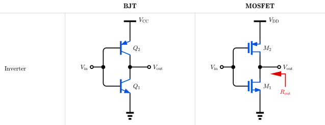
</div>
</div>
<p><strong>Razavi, Problem 6.46</strong> (MOSFET)</p>
<p>An NMOS <span class="math notranslate nohighlight">\(M_1\)</span> (source grounded) and a PMOS <span class="math notranslate nohighlight">\(M_2\)</span> (source at <span class="math notranslate nohighlight">\(V_{DD}\)</span>) have their gates joined at <span class="math notranslate nohighlight">\(V_{in}\)</span> and their drains joined at <span class="math notranslate nohighlight">\(V_{out}\)</span>. Both are saturated, with channel-length modulation <span class="math notranslate nohighlight">\(\lambda_n\)</span> and <span class="math notranslate nohighlight">\(\lambda_p\)</span>. (a) Build the small-signal equivalent circuit and explain why <span class="math notranslate nohighlight">\(M_1\)</span> and <span class="math notranslate nohighlight">\(M_2\)</span> appear in parallel. (b) Find the small-signal voltage gain.</p>
<p>Given: <span class="math notranslate nohighlight">\(g_{m1}\)</span>, <span class="math notranslate nohighlight">\(g_{m2}\)</span>, <span class="math notranslate nohighlight">\(r_{O1}=1/(\lambda_nI_D)\)</span>, <span class="math notranslate nohighlight">\(r_{O2}=1/(\lambda_pI_D)\)</span></p>
<ol class="arabic simple">
<li><p><strong>(a) Each device.</strong> <span class="math notranslate nohighlight">\(M_1\)</span>: <span class="math notranslate nohighlight">\(v_{GS1}=v_{in}\)</span>, so <span class="math notranslate nohighlight">\(g_{m1}v_{in}\)</span> and <span class="math notranslate nohighlight">\(r_{O1}\)</span> from out to ground. <span class="math notranslate nohighlight">\(M_2\)</span>: its source is at <span class="math notranslate nohighlight">\(V_{DD}\)</span> (ac ground), so <span class="math notranslate nohighlight">\(v_{GS2}=v_{in}\)</span> too; <span class="math notranslate nohighlight">\(g_{m2}v_{in}\)</span> and <span class="math notranslate nohighlight">\(r_{O2}\)</span> from out to ac ground</p></li>
<li><p><strong>(a) Why parallel.</strong> Both transistors have the same control voltage <span class="math notranslate nohighlight">\(v_{in}\)</span> (between gate and ac ground) and both connect out to ac ground; in the small-signal circuit <span class="math notranslate nohighlight">\(V_{DD}\)</span> and ground are the same node, so the two current sources and the two <span class="math notranslate nohighlight">\(r_O\)</span> are in parallel: one source <span class="math notranslate nohighlight">\((g_{m1}+g_{m2})v_{in}\)</span> with <span class="math notranslate nohighlight">\(r_{O1}\parallel r_{O2}\)</span></p></li>
<li><p><strong>(b) KCL at the output.</strong> <span class="math notranslate nohighlight">\((g_{m1}+g_{m2})v_{in}+v_{out}\left(\dfrac{1}{r_{O1}}+\dfrac{1}{r_{O2}}\right)=0\)</span></p></li>
<li><p><strong>(b) Gain.</strong> <span class="math notranslate nohighlight">\(A_v=-(g_{m1}+g_{m2})(r_{O1}\parallel r_{O2})\)</span></p></li>
<li><p><strong>(b) With the bias.</strong> Same <span class="math notranslate nohighlight">\(I_D\)</span> in both: <span class="math notranslate nohighlight">\(r_{O1}\parallel r_{O2}=\dfrac{1}{(\lambda_n+\lambda_p)I_D}\)</span>, so <span class="math notranslate nohighlight">\(A_v=-\dfrac{g_{m1}+g_{m2}}{(\lambda_n+\lambda_p)I_D}\)</span></p></li>
</ol>
<p><strong>Result.</strong> <span class="math notranslate nohighlight">\(A_v=-(g_{m1}+g_{m2})(r_{O1}\parallel r_{O2})=-\dfrac{g_{m1}+g_{m2}}{(\lambda_n+\lambda_p)I_D}\)</span></p>
<p>Checked by computation; the book gives no answer.</p>
</section>
<section id="id2">
<h3>Other Circuits<a class="headerlink" href="#id2" title="Link to this heading">#</a></h3>
<p><strong>Razavi, Example 7.5</strong> (MOSFET)</p>
<p>An NMOS common-source stage has an ideal current source as its load (infinite small-signal resistance), <span class="math notranslate nohighlight">\(M_1\)</span> in saturation with finite output resistance <span class="math notranslate nohighlight">\(r_O=1/(\lambda I_D)\)</span>. Find the voltage gain and show how it changes with the channel length <span class="math notranslate nohighlight">\(L\)</span>, the bias current and the width staying fixed.</p>
<p>Given: <span class="math notranslate nohighlight">\(\lambda\ne0\)</span>, load resistance <span class="math notranslate nohighlight">\(=\infty\)</span>, <span class="math notranslate nohighlight">\(\lambda\propto1/L\)</span></p>
<ol class="arabic simple">
<li><p><strong>Gain with a finite load.</strong> For a resistive load the gain is <span class="math notranslate nohighlight">\(A_v=-g_m(R_D\parallel r_O)\)</span>.</p></li>
<li><p><strong>Ideal current source.</strong> <span class="math notranslate nohighlight">\(R_D\to\infty\)</span> gives <span class="math notranslate nohighlight">\(A_v=-g_mr_O\)</span>, the largest gain one transistor can supply.</p></li>
<li><p><strong>Express in device terms.</strong> <span class="math notranslate nohighlight">\(g_m=\sqrt{2\mu_nC_{ox}\dfrac WL I_D}\)</span> and <span class="math notranslate nohighlight">\(r_O=\dfrac{1}{\lambda I_D}\)</span>, so <span class="math notranslate nohighlight">\(\lvert A_v\rvert=\dfrac{\sqrt{2\mu_nC_{ox}(W/L)I_D}}{\lambda I_D}=\dfrac{1}{\lambda}\sqrt{\dfrac{2\mu_nC_{ox}W}{LI_D}}\)</span>.</p></li>
<li><p><strong>Include the <span class="math notranslate nohighlight">\(L\)</span>-dependence of <span class="math notranslate nohighlight">\(\lambda\)</span>.</strong> Since <span class="math notranslate nohighlight">\(\lambda\propto1/L\)</span>, <span class="math notranslate nohighlight">\(\lvert A_v\rvert\propto L\cdot\dfrac{1}{\sqrt{L}}=\sqrt L\)</span> at fixed <span class="math notranslate nohighlight">\(W\)</span> and <span class="math notranslate nohighlight">\(I_D\)</span>.</p></li>
<li><p><strong>Numerical illustration.</strong> Take <span class="math notranslate nohighlight">\(W=10\,\mu\mathrm{m}\)</span>, <span class="math notranslate nohighlight">\(I_D=0.5\,\mathrm{mA}\)</span>, <span class="math notranslate nohighlight">\(\lambda=0.1\,\mathrm{V^{-1}}\)</span> at <span class="math notranslate nohighlight">\(L=0.18\,\mu\mathrm{m}\)</span>: <span class="math notranslate nohighlight">\(\lvert A_v\rvert=47.1,\ 66.7,\ 94.3\)</span> for <span class="math notranslate nohighlight">\(L=0.18,\ 0.36,\ 0.72\,\mu\mathrm{m}\)</span>, so doubling <span class="math notranslate nohighlight">\(L\)</span> multiplies the gain by <span class="math notranslate nohighlight">\(\sqrt2\)</span>.</p></li>
<li><p><strong>Conclusion.</strong> Although <span class="math notranslate nohighlight">\(g_m\)</span> falls as <span class="math notranslate nohighlight">\(L\)</span> grows, <span class="math notranslate nohighlight">\(r_O\)</span> grows faster, so <span class="math notranslate nohighlight">\(\lvert A_v\rvert\)</span> increases monotonically with <span class="math notranslate nohighlight">\(L\)</span> (a longer device gives a higher intrinsic gain).</p></li>
</ol>
<p><strong>Result.</strong> <span class="math notranslate nohighlight">\(A_v=-g_mr_O\)</span>, <span class="math notranslate nohighlight">\(\lvert A_v\rvert\propto\sqrt{L}\)</span> (increases with <span class="math notranslate nohighlight">\(L\)</span>)</p>
<p>Checked: agrees with the answer in the book. Note: The values W = 10 um, I_D = 0.5 mA and lambda = 0.1 V^-1 at 0.18 um are illustration numbers chosen by the solver, not data of the item. The book only states |Av| increases with L (Fig. 7.10b), using lambda proportional to 1/L.</p>
<p><strong>Razavi, Example 7.6</strong> (MOSFET)</p>
<p>A PMOS common-source stage has its source at <span class="math notranslate nohighlight">\(V_{DD}\)</span>, the input <span class="math notranslate nohighlight">\(v_{in}\)</span> at the gate of the PMOS <span class="math notranslate nohighlight">\(M_2\)</span>, and its drain output loaded by an NMOS <span class="math notranslate nohighlight">\(M_1\)</span> whose gate is held at a fixed bias <span class="math notranslate nohighlight">\(V_b\)</span> (so <span class="math notranslate nohighlight">\(M_1\)</span> is a current source). Find the small-signal voltage gain.</p>
<p>Given: <span class="math notranslate nohighlight">\(g_{m2}\)</span>, <span class="math notranslate nohighlight">\(r_{O1}\)</span>, <span class="math notranslate nohighlight">\(r_{O2}\)</span> symbolic, both devices saturated</p>
<ol class="arabic simple">
<li><p><strong>Role of <span class="math notranslate nohighlight">\(M_1\)</span>.</strong> Its gate-source voltage is constant, so <span class="math notranslate nohighlight">\(g_{m1}v_{gs1}=0\)</span> and it appears as the resistance <span class="math notranslate nohighlight">\(r_{O1}\)</span> from the output to ground.</p></li>
<li><p><strong>Small-signal current of <span class="math notranslate nohighlight">\(M_2\)</span>.</strong> <span class="math notranslate nohighlight">\(M_2\)</span> (source at ac ground) sends the current <span class="math notranslate nohighlight">\(g_{m2}v_{in}\)</span> from its source to its drain; a positive <span class="math notranslate nohighlight">\(v_{in}\)</span> reduces the current into the output node, so the swing is inverting.</p></li>
<li><p><strong>Output node.</strong> The output node sees <span class="math notranslate nohighlight">\(r_{O1}\)</span> and <span class="math notranslate nohighlight">\(r_{O2}\)</span> in parallel to ac ground, so <span class="math notranslate nohighlight">\(v_{out}=-g_{m2}v_{in}\,(r_{O1}\parallel r_{O2})\)</span>.</p></li>
<li><p><strong>Gain.</strong> <span class="math notranslate nohighlight">\(A_v=-g_{m2}\,(r_{O1}\parallel r_{O2})\)</span>.</p></li>
<li><p><strong>Numerical check.</strong> With <span class="math notranslate nohighlight">\(g_{m2}=2\,\mathrm{mS}\)</span>, <span class="math notranslate nohighlight">\(r_{O1}=30\,\mathrm{k}\Omega\)</span>, <span class="math notranslate nohighlight">\(r_{O2}=20\,\mathrm{k}\Omega\)</span>: nodal analysis and the formula both give <span class="math notranslate nohighlight">\(A_v=-24\)</span>.</p></li>
</ol>
<p><strong>Result.</strong> <span class="math notranslate nohighlight">\(A_v=-g_{m2}(r_{O1}\parallel r_{O2})\)</span></p>
<p>Checked: agrees with the answer in the book.</p>
<p><strong>Razavi, Example 7.7</strong> (MOSFET)</p>
<p>A common-source stage uses a PMOS <span class="math notranslate nohighlight">\(M_2\)</span> as the input device (gate at <span class="math notranslate nohighlight">\(v_{in}\)</span>, source at <span class="math notranslate nohighlight">\(V_{DD}\)</span>) and a diode-connected transistor <span class="math notranslate nohighlight">\(M_1\)</span> (gate tied to drain) from the output node to ground as its load. Channel-length modulation is included (<span class="math notranslate nohighlight">\(\lambda\ne0\)</span>). Find the small-signal voltage gain.</p>
<p>Given: <span class="math notranslate nohighlight">\(g_{m1}\)</span>, <span class="math notranslate nohighlight">\(g_{m2}\)</span>, <span class="math notranslate nohighlight">\(r_{O1}\)</span>, <span class="math notranslate nohighlight">\(r_{O2}\)</span> symbolic, saturation</p>
<ol class="arabic simple">
<li><p><strong>Load device.</strong> A diode-connected transistor with its source at ac ground has small-signal resistance <span class="math notranslate nohighlight">\(\dfrac{1}{g_{m1}}\parallel r_{O1}\)</span>.</p></li>
<li><p><strong>Total load at the output.</strong> The output node also sees <span class="math notranslate nohighlight">\(r_{O2}\)</span> of the input device, so the impedance to ac ground is <span class="math notranslate nohighlight">\(\dfrac{1}{g_{m1}}\parallel r_{O1}\parallel r_{O2}\)</span>.</p></li>
<li><p><strong>Input device current.</strong> The input device injects <span class="math notranslate nohighlight">\(g_{m2}v_{in}\)</span> into this impedance with inverting sign.</p></li>
<li><p><strong>Gain.</strong> <span class="math notranslate nohighlight">\(A_v=-g_{m2}\left(\dfrac{1}{g_{m1}}\parallel r_{O1}\parallel r_{O2}\right)\)</span>; for <span class="math notranslate nohighlight">\(\lambda=0\)</span> this reduces to <span class="math notranslate nohighlight">\(-g_{m2}/g_{m1}\)</span>.</p></li>
<li><p><strong>Numerical check.</strong> With <span class="math notranslate nohighlight">\(g_{m1}=1\,\mathrm{mS}\)</span>, <span class="math notranslate nohighlight">\(g_{m2}=3\,\mathrm{mS}\)</span>, <span class="math notranslate nohighlight">\(r_{O1}=25\,\mathrm{k}\Omega\)</span>, <span class="math notranslate nohighlight">\(r_{O2}=15\,\mathrm{k}\Omega\)</span>: nodal analysis and the formula give <span class="math notranslate nohighlight">\(A_v=-2.71\)</span>; the <span class="math notranslate nohighlight">\(\lambda=0\)</span> limit is <span class="math notranslate nohighlight">\(-3\)</span>.</p></li>
</ol>
<p><strong>Result.</strong> <span class="math notranslate nohighlight">\(A_v=-g_{m2}\left(\dfrac{1}{g_{m1}}\parallel r_{O1}\parallel r_{O2}\right)\)</span></p>
<p>Checked: agrees with the answer in the book. Note: The caption of Fig. 7.14 calls the load a diode-connected PMOS and the book text says M1 is the CS device, but Eq. 7.63 and the drawing have M2 (top, gate at Vin) as input device and M1 (bottom, gate tied to drain, source at ground) as load; the statement follows the drawing and equation. The result has the same form whatever the load polarity. The OCR reads lambda = 0 but the example says lambda not equal to 0, as Eq. 7.63 requires.</p>
<p><strong>Razavi, Example 7.19</strong> (MOSFET)</p>
<p>A PMOS <span class="math notranslate nohighlight">\(M_1\)</span> (source at <span class="math notranslate nohighlight">\(V_{DD}\)</span>, gate at <span class="math notranslate nohighlight">\(v_{in}\)</span>) is the common-source device; its drain is the output node. The load consists of an NMOS <span class="math notranslate nohighlight">\(M_2\)</span> with its gate at a fixed bias (current source to ground) in parallel with a diode-connected NMOS <span class="math notranslate nohighlight">\(M_3\)</span> (gate tied to drain), both from the output node to ground. Find the small-signal voltage gain and the output impedance.</p>
<p>Given: <span class="math notranslate nohighlight">\(g_{m1}\)</span>, <span class="math notranslate nohighlight">\(g_{m3}\)</span>, <span class="math notranslate nohighlight">\(r_{O1}\)</span>, <span class="math notranslate nohighlight">\(r_{O2}\)</span>, <span class="math notranslate nohighlight">\(r_{O3}\)</span> symbolic</p>
<ol class="arabic simple">
<li><p><strong>Identify the stage.</strong> <span class="math notranslate nohighlight">\(M_1\)</span> senses the input at its gate and drives the output at its drain: a CS stage. <span class="math notranslate nohighlight">\(M_2\)</span> and <span class="math notranslate nohighlight">\(M_3\)</span> form its load.</p></li>
<li><p><strong>Replace the load devices.</strong> <span class="math notranslate nohighlight">\(M_2\)</span> (fixed gate-source voltage) is replaced by <span class="math notranslate nohighlight">\(r_{O2}\)</span>; the diode-connected <span class="math notranslate nohighlight">\(M_3\)</span> by <span class="math notranslate nohighlight">\(\dfrac{1}{g_{m3}}\parallel r_{O3}\)</span>.</p></li>
<li><p><strong>Impedance at the output.</strong> <span class="math notranslate nohighlight">\(R_{out}=\dfrac{1}{g_{m3}}\parallel r_{O1}\parallel r_{O2}\parallel r_{O3}\)</span> (the input device contributes <span class="math notranslate nohighlight">\(r_{O1}\)</span>).</p></li>
<li><p><strong>Gain.</strong> <span class="math notranslate nohighlight">\(A_v=-g_{m1}R_{out}=-g_{m1}\left(\dfrac{1}{g_{m3}}\parallel r_{O1}\parallel r_{O2}\parallel r_{O3}\right)\)</span>.</p></li>
<li><p><strong>Comment.</strong> <span class="math notranslate nohighlight">\(1/g_{m3}\)</span> is the smallest term and dominates both results.</p></li>
<li><p><strong>Numerical check.</strong> <span class="math notranslate nohighlight">\(g_{m1}=3\,\mathrm{mS}\)</span>, <span class="math notranslate nohighlight">\(g_{m3}=1\,\mathrm{mS}\)</span>, <span class="math notranslate nohighlight">\(r_{O1}=20\)</span>, <span class="math notranslate nohighlight">\(r_{O2}=25\)</span>, <span class="math notranslate nohighlight">\(r_{O3}=30\,\mathrm{k}\Omega\)</span>: nodal analysis and the formulas give <span class="math notranslate nohighlight">\(A_v=-2.67\)</span>, <span class="math notranslate nohighlight">\(R_{out}=890\,\Omega\)</span> (against <span class="math notranslate nohighlight">\(1/g_{m3}=1\,\mathrm{k}\Omega\)</span>).</p></li>
</ol>
<p><strong>Result.</strong> <span class="math notranslate nohighlight">\(A_v=-g_{m1}\left(\dfrac{1}{g_{m3}}\parallel r_{O1}\parallel r_{O2}\parallel r_{O3}\right)\)</span>, <span class="math notranslate nohighlight">\(R_{out}=\dfrac{1}{g_{m3}}\parallel r_{O1}\parallel r_{O2}\parallel r_{O3}\)</span></p>
<p>Checked: agrees with the answer in the book.</p>
<p><strong>Razavi, Example 9.8</strong> (BJT)</p>
<p>An npn common-emitter stage (input at the base, output at the collector) is loaded by an ideal current source. Use the lemma <span class="math notranslate nohighlight">\(A_v=-G_mR_{out}\)</span> to find its gain.</p>
<p>Given: <span class="math notranslate nohighlight">\(g_{m1}\)</span>, <span class="math notranslate nohighlight">\(r_{O1}\)</span> (symbolic); check values <span class="math notranslate nohighlight">\(I_C=1\,\mathrm{mA}\)</span>, <span class="math notranslate nohighlight">\(V_A=5\,\mathrm{V}\)</span>, <span class="math notranslate nohighlight">\(V_T=26\,\mathrm{mV}\)</span></p>
<ol class="arabic simple">
<li><p><strong>Plan.</strong> Compute the short-circuit transconductance <span class="math notranslate nohighlight">\(G_m\)</span> and the output resistance <span class="math notranslate nohighlight">\(R_{out}\)</span> separately; then <span class="math notranslate nohighlight">\(A_v=-G_mR_{out}\)</span>.</p></li>
<li><p><strong>Short-circuit transconductance.</strong> Short the collector to ac ground: <span class="math notranslate nohighlight">\(r_{O1}\)</span> has zero voltage across it, so the whole collector current <span class="math notranslate nohighlight">\(g_{m1}v_{in}\)</span> flows through the short: <span class="math notranslate nohighlight">\(G_m=g_{m1}\)</span>.</p></li>
<li><p><strong>Output resistance.</strong> Set <span class="math notranslate nohighlight">\(v_{in}=0\)</span>, so <span class="math notranslate nohighlight">\(g_{m1}v_{\pi}=0\)</span>. The ideal current source is an open circuit, so a test voltage <span class="math notranslate nohighlight">\(v_X\)</span> drives current only through <span class="math notranslate nohighlight">\(r_{O1}\)</span>: <span class="math notranslate nohighlight">\(R_{out}=v_X/i_X=r_{O1}\)</span>.</p></li>
<li><p><strong>Gain.</strong> <span class="math notranslate nohighlight">\(A_v=-g_{m1}r_{O1}\)</span>, the intrinsic gain.</p></li>
<li><p><strong>Numbers.</strong> At <span class="math notranslate nohighlight">\(1\,\mathrm{mA}\)</span> with <span class="math notranslate nohighlight">\(V_A=5\,\mathrm{V}\)</span>: <span class="math notranslate nohighlight">\(g_m=38.5\,\mathrm{mS}\)</span>, <span class="math notranslate nohighlight">\(r_O=5\,\mathrm{k}\Omega\)</span>, <span class="math notranslate nohighlight">\(A_v=-192=-V_A/V_T\)</span>, independent of the bias current.</p></li>
</ol>
<p><strong>Result.</strong> <span class="math notranslate nohighlight">\(G_m=g_{m1}\)</span>, <span class="math notranslate nohighlight">\(R_{out}=r_{O1}\)</span>, <span class="math notranslate nohighlight">\(A_v=-g_{m1}r_{O1}=-V_A/V_T\)</span></p>
<p>Checked: agrees with the answer in the book.</p>
<p><strong>Razavi, Problem 5.36</strong> (BJT)</p>
<p>A common-emitter stage uses an ideal current source from <span class="math notranslate nohighlight">\(V_{CC}\)</span> as its collector load; input at the base, output at the collector. Its voltage gain is 50 and its output impedance is <span class="math notranslate nohighlight">\(10\,\mathrm{k}\Omega\)</span>. Find the bias current of the transistor.</p>
<p>Given: Ideal current-source load, <span class="math notranslate nohighlight">\(\lvert A_v\rvert=50\)</span>, <span class="math notranslate nohighlight">\(R_{out}=10\,\mathrm{k}\Omega\)</span>, <span class="math notranslate nohighlight">\(V_T=26\,\mathrm{mV}\)</span></p>
<ol class="arabic simple">
<li><p><strong>Output impedance.</strong> An ideal source has infinite impedance, so <span class="math notranslate nohighlight">\(R_{out}=r_O=V_A/I_C=10\,\mathrm{k}\Omega\)</span>.</p></li>
<li><p><strong>Gain.</strong> <span class="math notranslate nohighlight">\(\lvert A_v\rvert=g_mr_O=\dfrac{I_C}{V_T}\cdot\dfrac{V_A}{I_C}=\dfrac{V_A}{V_T}=50\)</span>, so <span class="math notranslate nohighlight">\(V_A=50\times26\,\mathrm{mV}=1.30\,\mathrm{V}\)</span>.</p></li>
<li><p><strong>Bias current.</strong> <span class="math notranslate nohighlight">\(I_C=V_A/r_O=1.30\,\mathrm{V}/10\,\mathrm{k}\Omega=130\,\mu\mathrm{A}\)</span>.</p></li>
</ol>
<p><strong>Result.</strong> <span class="math notranslate nohighlight">\(I_C=130\,\mu\mathrm{A}\)</span> (<span class="math notranslate nohighlight">\(V_A=1.30\,\mathrm{V}\)</span>)</p>
<p>Checked by computation; the book gives no answer.</p>
<p><strong>Razavi, Problem 5.38</strong> (BJT)</p>
<p>Five common-emitter stages, each with npn <span class="math notranslate nohighlight">\(Q_1\)</span> (emitter grounded, input <span class="math notranslate nohighlight">\(V_{in}\)</span> at the base) and a load built around a second transistor <span class="math notranslate nohighlight">\(Q_2\)</span> between <span class="math notranslate nohighlight">\(V_{CC}\)</span> and the collector of <span class="math notranslate nohighlight">\(Q_1\)</span> (node X): (a) npn <span class="math notranslate nohighlight">\(Q_2\)</span> with base and collector on <span class="math notranslate nohighlight">\(V_{CC}\)</span>, emitter at X, output at X; (b) the same <span class="math notranslate nohighlight">\(Q_2\)</span> with <span class="math notranslate nohighlight">\(R_1\)</span> from its emitter to X, output at X; (c) a pnp <span class="math notranslate nohighlight">\(Q_2\)</span> with emitter on <span class="math notranslate nohighlight">\(V_{CC}\)</span> and base tied to its collector, <span class="math notranslate nohighlight">\(R_C\)</span> from that collector to X, output at X; (d) a pnp <span class="math notranslate nohighlight">\(Q_2\)</span> with emitter on <span class="math notranslate nohighlight">\(V_{CC}\)</span>, base tied to X, and <span class="math notranslate nohighlight">\(R_C\)</span> from its collector (node Y) to X, output at X; (e) the circuit of (d) with the output taken at Y. In (d) and (e) <span class="math notranslate nohighlight">\(Q_2\)</span> is in soft saturation (treated with the active-mode model). Find the voltage gain and the input and output impedances with <span class="math notranslate nohighlight">\(V_A=\infty\)</span>.</p>
<p>Given: <span class="math notranslate nohighlight">\(V_A=\infty\)</span>; <span class="math notranslate nohighlight">\(Q_1\)</span>: <span class="math notranslate nohighlight">\(g_{m1}\)</span>, <span class="math notranslate nohighlight">\(r_{\pi1}\)</span>; <span class="math notranslate nohighlight">\(Q_2\)</span>: <span class="math notranslate nohighlight">\(g_{m2}\)</span>, <span class="math notranslate nohighlight">\(r_{\pi2}\)</span>; <span class="math notranslate nohighlight">\(R_1\)</span>, <span class="math notranslate nohighlight">\(R_C\)</span></p>
<ol class="arabic simple">
<li><p><strong>Input impedance (all five).</strong> The base of <span class="math notranslate nohighlight">\(Q_1\)</span> sees only <span class="math notranslate nohighlight">\(r_{\pi1}\)</span> (emitter grounded): <span class="math notranslate nohighlight">\(R_{in}=r_{\pi1}\)</span>. With <span class="math notranslate nohighlight">\(V_A=\infty\)</span>, <span class="math notranslate nohighlight">\(A_v=-g_{m1}R_X\)</span> where <span class="math notranslate nohighlight">\(R_X\)</span> is the impedance at the collector of <span class="math notranslate nohighlight">\(Q_1\)</span>, except in (e).</p></li>
<li><p><strong>(a) Diode load.</strong> <span class="math notranslate nohighlight">\(Q_2\)</span> with base and collector at ac ground looks like <span class="math notranslate nohighlight">\(\frac{1}{g_{m2}}\parallel r_{\pi2}\)</span>: <span class="math notranslate nohighlight">\(R_{out}=\frac{1}{g_{m2}}\parallel r_{\pi2}\)</span>, <span class="math notranslate nohighlight">\(A_v=-g_{m1}\left(\frac{1}{g_{m2}}\parallel r_{\pi2}\right)\approx-\frac{g_{m1}}{g_{m2}}\approx-1\)</span>.</p></li>
<li><p><strong>(b) Diode plus <span class="math notranslate nohighlight">\(R_1\)</span>.</strong> <span class="math notranslate nohighlight">\(R_{out}=R_1+\frac{1}{g_{m2}}\parallel r_{\pi2}\)</span>, <span class="math notranslate nohighlight">\(A_v=-g_{m1}\left(R_1+\frac{1}{g_{m2}}\parallel r_{\pi2}\right)\)</span>.</p></li>
<li><p><strong>(c) pnp diode plus <span class="math notranslate nohighlight">\(R_C\)</span>.</strong> The pnp diode is again <span class="math notranslate nohighlight">\(\frac{1}{g_{m2}}\parallel r_{\pi2}\)</span>: <span class="math notranslate nohighlight">\(R_{out}=R_C+\frac{1}{g_{m2}}\parallel r_{\pi2}\)</span>, <span class="math notranslate nohighlight">\(A_v=-g_{m1}\left(R_C+\frac{1}{g_{m2}}\parallel r_{\pi2}\right)\)</span>.</p></li>
<li><p><strong>(d) KCL at Y.</strong> No other path leaves Y, so <span class="math notranslate nohighlight">\(R_C\)</span> carries exactly the collector current of <span class="math notranslate nohighlight">\(Q_2\)</span>, <span class="math notranslate nohighlight">\(-g_{m2}v_X\)</span> (from Y to X); <span class="math notranslate nohighlight">\(R_C\)</span> drops out of the result.</p></li>
<li><p><strong>(d) KCL at X.</strong> <span class="math notranslate nohighlight">\(-g_{m2}v_X-\frac{v_X}{r_{\pi2}}-g_{m1}v_{in}=0\)</span>: <span class="math notranslate nohighlight">\(A_v=-\dfrac{g_{m1}}{g_{m2}+1/r_{\pi2}}\)</span>, <span class="math notranslate nohighlight">\(R_{out}=\frac{1}{g_{m2}}\parallel r_{\pi2}\)</span> (again about <span class="math notranslate nohighlight">\(-1\)</span> and <span class="math notranslate nohighlight">\(1/g_{m2}\)</span>).</p></li>
<li><p><strong>(e) Output at Y.</strong> <span class="math notranslate nohighlight">\(v_Y=v_X+R_C(-g_{m2}v_X)=v_X(1-g_{m2}R_C)\)</span>, so <span class="math notranslate nohighlight">\(A_v=\dfrac{g_{m1}(g_{m2}R_C-1)}{g_{m2}+1/r_{\pi2}}\approx g_{m2}R_C-1\)</span> (non-inverting).</p></li>
<li><p><strong>(e) Output impedance.</strong> A test current <span class="math notranslate nohighlight">\(i_t\)</span> into Y returns through <span class="math notranslate nohighlight">\(R_C\)</span> and <span class="math notranslate nohighlight">\(r_{\pi2}\)</span>: <span class="math notranslate nohighlight">\(i_t=v_X(g_{m2}+1/r_{\pi2})\)</span>, <span class="math notranslate nohighlight">\(v_Y=v_X(1+R_C/r_{\pi2})\)</span>, so <span class="math notranslate nohighlight">\(R_{out}=\dfrac{R_C+r_{\pi2}}{\beta+1}\)</span>.</p></li>
<li><p><strong>Numerical check.</strong> With <span class="math notranslate nohighlight">\(I_{C1}=1\,\mathrm{mA}\)</span>, <span class="math notranslate nohighlight">\(\beta=100\)</span>, <span class="math notranslate nohighlight">\(R_1=R_C=1\,\mathrm{k}\Omega\)</span> (<span class="math notranslate nohighlight">\(R_{in}=2.60\,\mathrm{k}\Omega\)</span>): (a) <span class="math notranslate nohighlight">\(A_v=-1.00\)</span>, <span class="math notranslate nohighlight">\(R_{out}=26.0\,\Omega\)</span>; (b),(c) <span class="math notranslate nohighlight">\(A_v=-39.5\)</span>, <span class="math notranslate nohighlight">\(R_{out}=1.03\,\mathrm{k}\Omega\)</span>; (d) <span class="math notranslate nohighlight">\(A_v=-1.00\)</span>, <span class="math notranslate nohighlight">\(R_{out}=26.0\,\Omega\)</span>; (e) <span class="math notranslate nohighlight">\(A_v=+37.1\)</span>, <span class="math notranslate nohighlight">\(R_{out}=35.9\,\Omega\)</span>; all equal to a nodal solution.</p></li>
</ol>
<p><strong>Result.</strong> <span class="math notranslate nohighlight">\(R_{in}=r_{\pi1}\)</span> in all; (a) <span class="math notranslate nohighlight">\(A_v=-g_{m1}(\frac{1}{g_{m2}}\parallel r_{\pi2})\)</span>, <span class="math notranslate nohighlight">\(R_{out}=\frac{1}{g_{m2}}\parallel r_{\pi2}\)</span>; (b) <span class="math notranslate nohighlight">\(A_v=-g_{m1}(R_1+\frac{1}{g_{m2}}\parallel r_{\pi2})\)</span>, <span class="math notranslate nohighlight">\(R_{out}=R_1+\frac{1}{g_{m2}}\parallel r_{\pi2}\)</span>; (c) <span class="math notranslate nohighlight">\(A_v=-g_{m1}(R_C+\frac{1}{g_{m2}}\parallel r_{\pi2})\)</span>, <span class="math notranslate nohighlight">\(R_{out}=R_C+\frac{1}{g_{m2}}\parallel r_{\pi2}\)</span>; (d) <span class="math notranslate nohighlight">\(A_v=-g_{m1}/(g_{m2}+r_{\pi2}^{-1})\)</span>, <span class="math notranslate nohighlight">\(R_{out}=\frac{1}{g_{m2}}\parallel r_{\pi2}\)</span>; (e) <span class="math notranslate nohighlight">\(A_v=g_{m1}(g_{m2}R_C-1)/(g_{m2}+r_{\pi2}^{-1})\)</span>, <span class="math notranslate nohighlight">\(R_{out}=(R_C+r_{\pi2})/(\beta+1)\)</span></p>
<p>Checked by computation; the book gives no answer. Note: Wiring read from Fig. 5.136: in (a),(b) Q2 is an npn with base and collector on VCC; in (c) a diode-connected pnp; in (d),(e) a pnp with its base tied to the collector of Q1 and RC in its collector. Q2 in soft saturation is modelled with the active-mode hybrid-pi model, as the problem allows. Since Q2 carries the current of Q1, 1/gm2 || r_pi2 = VT/IC1 = 1/gm1, so (a) and (d) give exactly -1.</p>
<p><strong>Razavi, Problem 5.39</strong> (BJT), the same as Razavi, Problem 5.38 with other values</p>
<p>Five common-emitter stages, each with npn <span class="math notranslate nohighlight">\(Q_1\)</span> (emitter grounded, input <span class="math notranslate nohighlight">\(V_{in}\)</span> at the base) and a load built around a second transistor <span class="math notranslate nohighlight">\(Q_2\)</span> between <span class="math notranslate nohighlight">\(V_{CC}\)</span> and the collector of <span class="math notranslate nohighlight">\(Q_1\)</span> (node X): (a) npn <span class="math notranslate nohighlight">\(Q_2\)</span> with base and collector on <span class="math notranslate nohighlight">\(V_{CC}\)</span>, emitter at X, output at X; (b) the same <span class="math notranslate nohighlight">\(Q_2\)</span> with <span class="math notranslate nohighlight">\(R_1\)</span> from its emitter to X, output at X; (c) a pnp <span class="math notranslate nohighlight">\(Q_2\)</span> with emitter on <span class="math notranslate nohighlight">\(V_{CC}\)</span> and base tied to its collector, <span class="math notranslate nohighlight">\(R_C\)</span> from that collector to X, output at X; (d) a pnp <span class="math notranslate nohighlight">\(Q_2\)</span> with emitter on <span class="math notranslate nohighlight">\(V_{CC}\)</span>, base tied to X, and <span class="math notranslate nohighlight">\(R_C\)</span> from its collector (node Y) to X, output at X; (e) the circuit of (d) with the output taken at Y. In (d) and (e) <span class="math notranslate nohighlight">\(Q_2\)</span> is in soft saturation (treated with the active-mode model). Find the voltage gain and the input and output impedances with a finite Early voltage (<span class="math notranslate nohighlight">\(r_{O1}\)</span>, <span class="math notranslate nohighlight">\(r_{O2}\)</span>).</p>
<p>Given: <span class="math notranslate nohighlight">\(V_A&lt;\infty\)</span>; <span class="math notranslate nohighlight">\(Q_1\)</span>: <span class="math notranslate nohighlight">\(g_{m1}\)</span>, <span class="math notranslate nohighlight">\(r_{\pi1}\)</span>, <span class="math notranslate nohighlight">\(r_{O1}\)</span>; <span class="math notranslate nohighlight">\(Q_2\)</span>: <span class="math notranslate nohighlight">\(g_{m2}\)</span>, <span class="math notranslate nohighlight">\(r_{\pi2}\)</span>, <span class="math notranslate nohighlight">\(r_{O2}\)</span>; <span class="math notranslate nohighlight">\(R_1\)</span>, <span class="math notranslate nohighlight">\(R_C\)</span></p>
<ol class="arabic simple">
<li><p><strong>Input impedance.</strong> <span class="math notranslate nohighlight">\(r_O\)</span> does not touch the base loop: <span class="math notranslate nohighlight">\(R_{in}=r_{\pi1}\)</span> in all five. In (a) to (d) <span class="math notranslate nohighlight">\(A_v=-g_{m1}R_{out}\)</span> because the output node is the collector of <span class="math notranslate nohighlight">\(Q_1\)</span>.</p></li>
<li><p><strong>(a).</strong> The diode now includes <span class="math notranslate nohighlight">\(r_{O2}\)</span>: <span class="math notranslate nohighlight">\(R_{out}=r_{O1}\parallel\frac{1}{g_{m2}}\parallel r_{\pi2}\parallel r_{O2}\)</span>, <span class="math notranslate nohighlight">\(A_v=-g_{m1}R_{out}\)</span>.</p></li>
<li><p><strong>(b).</strong> <span class="math notranslate nohighlight">\(R_{out}=r_{O1}\parallel\left(R_1+\frac{1}{g_{m2}}\parallel r_{\pi2}\parallel r_{O2}\right)\)</span>, <span class="math notranslate nohighlight">\(A_v=-g_{m1}R_{out}\)</span>.</p></li>
<li><p><strong>(c).</strong> <span class="math notranslate nohighlight">\(R_{out}=r_{O1}\parallel\left(R_C+\frac{1}{g_{m2}}\parallel r_{\pi2}\parallel r_{O2}\right)\)</span>, <span class="math notranslate nohighlight">\(A_v=-g_{m1}R_{out}\)</span>.</p></li>
<li><p><strong>(d) KCL at Y.</strong> <span class="math notranslate nohighlight">\(-g_{m2}v_X=\frac{v_Y}{r_{O2}}+\frac{v_Y-v_X}{R_C}\)</span>, so <span class="math notranslate nohighlight">\(v_Y=v_X\dfrac{1-g_{m2}R_C}{1+R_C/r_{O2}}\)</span>.</p></li>
<li><p><strong>(d) KCL at X.</strong> The branch through <span class="math notranslate nohighlight">\(R_C\)</span> and <span class="math notranslate nohighlight">\(Q_2\)</span> now looks like <span class="math notranslate nohighlight">\(\dfrac{R_C+r_{O2}}{1+g_{m2}r_{O2}}\)</span>: <span class="math notranslate nohighlight">\(R_{out}=r_{O1}\parallel r_{\pi2}\parallel\dfrac{R_C+r_{O2}}{1+g_{m2}r_{O2}}\)</span>, <span class="math notranslate nohighlight">\(A_v=-g_{m1}R_{out}\)</span>.</p></li>
<li><p><strong>(e) Gain.</strong> <span class="math notranslate nohighlight">\(A_v=-g_{m1}\left(r_{O1}\parallel r_{\pi2}\parallel\dfrac{R_C+r_{O2}}{1+g_{m2}r_{O2}}\right)\cdot\dfrac{1-g_{m2}R_C}{1+R_C/r_{O2}}\)</span>.</p></li>
<li><p><strong>(e) Output impedance.</strong> A test source at Y: <span class="math notranslate nohighlight">\(R_{out}=r_{O2}\parallel\dfrac{R_C+r_{\pi2}\parallel r_{O1}}{1+g_{m2}(r_{\pi2}\parallel r_{O1})}\)</span>.</p></li>
<li><p><strong>Limits and check.</strong> For <span class="math notranslate nohighlight">\(r_O\to\infty\)</span> every expression returns to Problem 5.38. With <span class="math notranslate nohighlight">\(I_{C1}=1\,\mathrm{mA}\)</span>, <span class="math notranslate nohighlight">\(\beta=100\)</span>, <span class="math notranslate nohighlight">\(V_A=10\,\mathrm{V}\)</span>, <span class="math notranslate nohighlight">\(R_1=R_C=1\,\mathrm{k}\Omega\)</span>: (a) <span class="math notranslate nohighlight">\(-0.995\)</span>, (b),(c) <span class="math notranslate nohighlight">\(-35.8\)</span>, (d) <span class="math notranslate nohighlight">\(-1.09\)</span>, (e) <span class="math notranslate nohighlight">\(+36.8\)</span>, each equal to a nodal solution.</p></li>
</ol>
<p><strong>Result.</strong> <span class="math notranslate nohighlight">\(R_{in}=r_{\pi1}\)</span>; (a)-(c) <span class="math notranslate nohighlight">\(A_v=-g_{m1}R_{out}\)</span>, <span class="math notranslate nohighlight">\(R_{out}=r_{O1}\parallel(\text{load})\)</span> with diode <span class="math notranslate nohighlight">\(\frac{1}{g_{m2}}\parallel r_{\pi2}\parallel r_{O2}\)</span>; (d) <span class="math notranslate nohighlight">\(R_{out}=r_{O1}\parallel r_{\pi2}\parallel\frac{R_C+r_{O2}}{1+g_{m2}r_{O2}}\)</span>, <span class="math notranslate nohighlight">\(A_v=-g_{m1}R_{out}\)</span>; (e) <span class="math notranslate nohighlight">\(A_v=A_{v,d}\frac{1-g_{m2}R_C}{1+R_C/r_{O2}}\)</span>, <span class="math notranslate nohighlight">\(R_{out}=r_{O2}\parallel\frac{R_C+r_{\pi2}\parallel r_{O1}}{1+g_{m2}(r_{\pi2}\parallel r_{O1})}\)</span></p>
<p>Checked by computation; the book gives no answer. Note: Same circuit reading as 5.38. All five results checked against a nodal solution with numbers (VA = 10 V chosen for the check).</p>
<p><strong>Razavi, Problem 7.23</strong> (MOSFET)</p>
<p>A CS stage uses a PMOS input transistor <span class="math notranslate nohighlight">\(M_2\)</span> (source at <span class="math notranslate nohighlight">\(V_{DD}=1.8\,\mathrm{V}\)</span>, input at the gate, drain at the output) loaded by an NMOS current source <span class="math notranslate nohighlight">\(M_1\)</span> (gate at a bias <span class="math notranslate nohighlight">\(V_b\)</span>, source grounded, drain at the output). It must give a voltage gain of 15 at <span class="math notranslate nohighlight">\(0.5\,\mathrm{mA}\)</span>, with <span class="math notranslate nohighlight">\(\lambda_1=0.15\,\mathrm{V^{-1}}\)</span> (NMOS) and <span class="math notranslate nohighlight">\(\lambda_2=0.05\,\mathrm{V^{-1}}\)</span> (PMOS). Find <span class="math notranslate nohighlight">\((W/L)_2\)</span>.</p>
<p>Given: <span class="math notranslate nohighlight">\(I_D=0.5\,\mathrm{mA}\)</span>, <span class="math notranslate nohighlight">\(\lvert A_v\rvert=15\)</span>, <span class="math notranslate nohighlight">\(\lambda_1=0.15\,\mathrm{V^{-1}}\)</span>, <span class="math notranslate nohighlight">\(\lambda_2=0.05\,\mathrm{V^{-1}}\)</span>; default data <span class="math notranslate nohighlight">\(\mu_nC_{ox}=200\,\mu\mathrm{A/V^2}\)</span>, <span class="math notranslate nohighlight">\(\mu_pC_{ox}=100\,\mu\mathrm{A/V^2}\)</span>, <span class="math notranslate nohighlight">\(V_{TH,n}=0.4\,\mathrm{V}\)</span>, <span class="math notranslate nohighlight">\(V_{TH,p}=-0.4\,\mathrm{V}\)</span></p>
<ol class="arabic simple">
<li><p><strong>Gain.</strong> <span class="math notranslate nohighlight">\(A_v=-g_{m2}(r_{O1}\parallel r_{O2})\)</span></p></li>
<li><p><strong>Output resistances.</strong> <span class="math notranslate nohighlight">\(r_{O1}=\dfrac{1}{0.15\times0.5\,\mathrm{mA}}=13.3\,\mathrm{k}\Omega\)</span>, <span class="math notranslate nohighlight">\(r_{O2}=\dfrac{1}{0.05\times0.5\,\mathrm{mA}}=40.0\,\mathrm{k}\Omega\)</span>, parallel <span class="math notranslate nohighlight">\(10.0\,\mathrm{k}\Omega\)</span></p></li>
<li><p><strong>Required transconductance.</strong> <span class="math notranslate nohighlight">\(g_{m2}=15/10\,\mathrm{k}\Omega=1.50\,\mathrm{mS}\)</span></p></li>
<li><p><strong>Aspect ratio.</strong> <span class="math notranslate nohighlight">\((W/L)_2=\dfrac{g_{m2}^2}{2\mu_pC_{ox}I_D}=\dfrac{(1.5\,\mathrm{mS})^2}{2(100\,\mu\mathrm{A/V^2})(0.5\,\mathrm{mA})}=22.5\)</span>, e.g. <span class="math notranslate nohighlight">\(4.05/0.18\)</span></p></li>
<li><p><strong>Overdrive.</strong> <span class="math notranslate nohighlight">\(\lvert V_{GS2}-V_{TH2}\rvert=2I_D/g_{m2}=0.667\,\mathrm{V}\)</span>, well within <span class="math notranslate nohighlight">\(V_{DD}\)</span></p></li>
</ol>
<p><strong>Result.</strong> <span class="math notranslate nohighlight">\((W/L)_2=22.5\)</span> (<span class="math notranslate nohighlight">\(\approx4.05/0.18\)</span>)</p>
<p>Checked by computation; the book gives no answer.</p>
<p><strong>Razavi, Problem 7.24</strong> (MOSFET)</p>
<p>Two CS stages are compared: (a) NMOS input <span class="math notranslate nohighlight">\(M_1\)</span> (gate at <span class="math notranslate nohighlight">\(V_{in}\)</span>, source grounded) with a PMOS current-source load <span class="math notranslate nohighlight">\(M_2\)</span> (gate at <span class="math notranslate nohighlight">\(V_b\)</span>); (b) PMOS input <span class="math notranslate nohighlight">\(M_2\)</span> (gate at <span class="math notranslate nohighlight">\(V_{in}\)</span>, source at <span class="math notranslate nohighlight">\(V_{DD}\)</span>) with an NMOS current-source load <span class="math notranslate nohighlight">\(M_1\)</span> (gate at <span class="math notranslate nohighlight">\(V_b\)</span>). Explain which one is preferred.</p>
<p>Given: Same bias current, same <span class="math notranslate nohighlight">\(W/L\)</span> and same <span class="math notranslate nohighlight">\(\lambda\)</span> for the input devices; <span class="math notranslate nohighlight">\(\mu_nC_{ox}=2\mu_pC_{ox}\)</span> (default data)</p>
<ol class="arabic simple">
<li><p><strong>Gain of either stage.</strong> <span class="math notranslate nohighlight">\(\lvert A_v\rvert=g_{m,in}(r_{O1}\parallel r_{O2})\)</span>; the output resistance is the same in both</p></li>
<li><p><strong>Input transconductance.</strong> <span class="math notranslate nohighlight">\(g_m=\sqrt{2\mu C_{ox}(W/L)I_D}\)</span>: with the same <span class="math notranslate nohighlight">\(W/L\)</span> and <span class="math notranslate nohighlight">\(I_D\)</span>, the NMOS gives <span class="math notranslate nohighlight">\(\sqrt{\mu_n/\mu_p}=\sqrt2\)</span> times more</p></li>
<li><p><strong>Example.</strong> <span class="math notranslate nohighlight">\(W/L=20/0.18\)</span>, <span class="math notranslate nohighlight">\(I_D=0.5\,\mathrm{mA}\)</span>, <span class="math notranslate nohighlight">\(\lambda=0.1\,\mathrm{V^{-1}}\)</span>: <span class="math notranslate nohighlight">\(\lvert A_v\rvert=47.1\)</span> for (a) and <span class="math notranslate nohighlight">\(33.3\)</span> for (b), ratio <span class="math notranslate nohighlight">\(1.41\)</span></p></li>
<li><p><strong>Conclusion.</strong> Topology (a) is preferred: for the same gain its input device is smaller (less input capacitance), or for the same size it gives more gain</p></li>
</ol>
<p><strong>Result.</strong> Topology (a), NMOS input with PMOS load: its input transconductance is <span class="math notranslate nohighlight">\(\sqrt{\mu_n/\mu_p}\approx1.41\)</span> times larger</p>
<p>Checked by computation; the book gives no answer. Note: The book gives no answer; the argument used is the mobility advantage of the NMOS input, the one this chapter supports. Other considerations (noise, body effect) are outside its scope. The example values are a sample.</p>
<p><strong>Razavi, Problem 7.28</strong> (MOSFET)</p>
<p>With <span class="math notranslate nohighlight">\(\lambda\neq0\)</span> (body effect neglected), find the small-signal voltage gain of six CS variants. (a) NMOS <span class="math notranslate nohighlight">\(M_1\)</span> (input at gate, source grounded) loaded by a diode-connected PMOS <span class="math notranslate nohighlight">\(M_2\)</span>. (b) <span class="math notranslate nohighlight">\(M_1\)</span> loaded by a PMOS current source <span class="math notranslate nohighlight">\(M_2\)</span> (gate at <span class="math notranslate nohighlight">\(V_b\)</span>) in parallel with a diode-connected PMOS <span class="math notranslate nohighlight">\(M_3\)</span>, both from <span class="math notranslate nohighlight">\(V_{DD}\)</span>. (c) <span class="math notranslate nohighlight">\(M_1\)</span> loaded by a PMOS current source <span class="math notranslate nohighlight">\(M_2\)</span> (gate at <span class="math notranslate nohighlight">\(V_b\)</span>), with a diode-connected NMOS <span class="math notranslate nohighlight">\(M_3\)</span> from the output to ground. (d) PMOS input <span class="math notranslate nohighlight">\(M_2\)</span> (gate at <span class="math notranslate nohighlight">\(V_{in}\)</span>, source at <span class="math notranslate nohighlight">\(V_{DD}\)</span>) loaded by an NMOS current source <span class="math notranslate nohighlight">\(M_1\)</span> (gate at <span class="math notranslate nohighlight">\(V_b\)</span>) and a diode-connected NMOS <span class="math notranslate nohighlight">\(M_3\)</span> to ground. (e) As (d) but <span class="math notranslate nohighlight">\(M_3\)</span> is a PMOS with source at the output and gate and drain grounded. (f) <span class="math notranslate nohighlight">\(M_1\)</span> loaded by a PMOS <span class="math notranslate nohighlight">\(M_2\)</span> (source at <span class="math notranslate nohighlight">\(V_{DD}\)</span>) whose drain reaches the output through a resistor <span class="math notranslate nohighlight">\(R_D\)</span> and whose gate is tied to the output.</p>
<p>Given: <span class="math notranslate nohighlight">\(g_{mi}\)</span>, <span class="math notranslate nohighlight">\(r_{Oi}\)</span> for each device; <span class="math notranslate nohighlight">\(R_D\)</span> in (f)</p>
<ol class="arabic simple">
<li><p><strong>Method.</strong> <span class="math notranslate nohighlight">\(A_v=-g_{m,in}R_{out}\)</span> with <span class="math notranslate nohighlight">\(R_{out}\)</span> the parallel combination of everything at the output; a diode-connected device presents <span class="math notranslate nohighlight">\((1/g_m)\parallel r_O\)</span>, a current source <span class="math notranslate nohighlight">\(r_O\)</span></p></li>
<li><p><strong>(a).</strong> <span class="math notranslate nohighlight">\(A_v=-g_{m1}\left(\dfrac{1}{g_{m2}}\parallel r_{O2}\parallel r_{O1}\right)\)</span></p></li>
<li><p><strong>(b).</strong> <span class="math notranslate nohighlight">\(A_v=-g_{m1}\left(r_{O1}\parallel r_{O2}\parallel\dfrac{1}{g_{m3}}\parallel r_{O3}\right)\)</span></p></li>
<li><p><strong>(c).</strong> <span class="math notranslate nohighlight">\(A_v=-g_{m1}\left(r_{O1}\parallel r_{O2}\parallel\dfrac{1}{g_{m3}}\parallel r_{O3}\right)\)</span></p></li>
<li><p><strong>(d).</strong> <span class="math notranslate nohighlight">\(A_v=-g_{m2}\left(r_{O2}\parallel r_{O1}\parallel\dfrac{1}{g_{m3}}\parallel r_{O3}\right)\)</span></p></li>
<li><p><strong>(e).</strong> <span class="math notranslate nohighlight">\(M_3\)</span> has <span class="math notranslate nohighlight">\(V_{SG3}=V_{SD3}=V_{out}\)</span>: a diode-connected PMOS, so <span class="math notranslate nohighlight">\(A_v=-g_{m2}\left(r_{O2}\parallel r_{O1}\parallel\dfrac{1}{g_{m3}}\parallel r_{O3}\right)\)</span></p></li>
<li><p><strong>(f) Load seen at the output.</strong> Drive <span class="math notranslate nohighlight">\(v_x\)</span> at the output: <span class="math notranslate nohighlight">\(v_{sg2}=-v_x\)</span> and the drain of <span class="math notranslate nohighlight">\(M_2\)</span> sits at <span class="math notranslate nohighlight">\(v_x+iR_D\)</span>, so <span class="math notranslate nohighlight">\(i=-g_{m2}v_x-(v_x+iR_D)/r_{O2}\)</span>, giving <span class="math notranslate nohighlight">\(R_L=\dfrac{r_{O2}+R_D}{1+g_{m2}r_{O2}}\)</span></p></li>
<li><p><strong>(f).</strong> <span class="math notranslate nohighlight">\(A_v=-g_{m1}\left(r_{O1}\parallel\dfrac{r_{O2}+R_D}{1+g_{m2}r_{O2}}\right)\)</span></p></li>
<li><p><strong>Numerical check.</strong> <span class="math notranslate nohighlight">\(g_m=2,1.5,1\,\mathrm{mS}\)</span>, <span class="math notranslate nohighlight">\(r_O=20,15,25\,\mathrm{k}\Omega\)</span>, <span class="math notranslate nohighlight">\(R_D=2\,\mathrm{k}\Omega\)</span>: nodal analysis and formulas agree, e.g. (a) <span class="math notranslate nohighlight">\(-1.24\)</span>, (b) <span class="math notranslate nohighlight">\(-1.73\)</span>, (d) <span class="math notranslate nohighlight">\(-1.30\)</span>, (f) <span class="math notranslate nohighlight">\(-1.40\)</span></p></li>
</ol>
<p><strong>Result.</strong> (a) <span class="math notranslate nohighlight">\(-g_{m1}(g_{m2}^{-1}\parallel r_{O1}\parallel r_{O2})\)</span>; (b), (c) <span class="math notranslate nohighlight">\(-g_{m1}(r_{O1}\parallel r_{O2}\parallel g_{m3}^{-1}\parallel r_{O3})\)</span>; (d), (e) <span class="math notranslate nohighlight">\(-g_{m2}(r_{O1}\parallel r_{O2}\parallel g_{m3}^{-1}\parallel r_{O3})\)</span>; (f) <span class="math notranslate nohighlight">\(-g_{m1}\left[r_{O1}\parallel\dfrac{r_{O2}+R_D}{1+g_{m2}r_{O2}}\right]\)</span></p>
<p>Checked by computation; the book gives no answer.</p>
<p><strong>Sedra/Smith, Problem 6.13</strong> (MOSFET)</p>
<p>An NMOS inverter has a driver <span class="math notranslate nohighlight">\(Q_1\)</span> (input at its gate) and a load <span class="math notranslate nohighlight">\(Q_2\)</span> whose gate is tied to <span class="math notranslate nohighlight">\(V_{DD}\)</span> and whose source is the output node; both have the same <span class="math notranslate nohighlight">\(V_t\)</span>. (a) Derive <span class="math notranslate nohighlight">\(v_O\)</span> as a function of <span class="math notranslate nohighlight">\(v_I\)</span> while both devices are in saturation. (b) Find the gain for <span class="math notranslate nohighlight">\((W/L)_1/(W/L)_2=10\)</span>.</p>
<p>Given: Identical <span class="math notranslate nohighlight">\(V_t\)</span>, <span class="math notranslate nohighlight">\(Q_2\)</span> gate at <span class="math notranslate nohighlight">\(V_{DD}\)</span>; <span class="math notranslate nohighlight">\((W/L)_1/(W/L)_2=\dfrac{50/0.5}{5/0.5}=10\)</span></p>
<ol class="arabic simple">
<li><p><strong>Load current.</strong> <span class="math notranslate nohighlight">\(Q_2\)</span> has <span class="math notranslate nohighlight">\(v_{GS2}=V_{DD}-v_O\)</span>: <span class="math notranslate nohighlight">\(i_D=\tfrac12k_n^{\prime}(W/L)_2(V_{DD}-v_O-V_t)^2\)</span></p></li>
<li><p><strong>Driver current.</strong> For <span class="math notranslate nohighlight">\(V_t\le v_I\le v_O+V_t\)</span>, <span class="math notranslate nohighlight">\(Q_1\)</span> is saturated: <span class="math notranslate nohighlight">\(i_D=\tfrac12k_n^{\prime}(W/L)_1(v_I-V_t)^2\)</span></p></li>
<li><p><strong>Equate the currents.</strong> <span class="math notranslate nohighlight">\((W/L)_2(V_{DD}-v_O-V_t)^2=(W/L)_1(v_I-V_t)^2\)</span></p></li>
<li><p><strong>Square root.</strong> <span class="math notranslate nohighlight">\(V_{DD}-v_O-V_t=\sqrt{\dfrac{(W/L)_1}{(W/L)_2}}\,(v_I-V_t)\)</span></p></li>
<li><p><strong>Transfer curve.</strong> <span class="math notranslate nohighlight">\(v_O=V_{DD}-V_t+\sqrt{\dfrac{(W/L)_1}{(W/L)_2}}\,V_t-\sqrt{\dfrac{(W/L)_1}{(W/L)_2}}\,v_I\)</span></p></li>
<li><p><strong>Gain.</strong> <span class="math notranslate nohighlight">\(A_v=\dfrac{dv_O}{dv_I}=-\sqrt{\dfrac{(W/L)_1}{(W/L)_2}}=-\sqrt{10}=-3.16\,\mathrm{V/V}\)</span></p></li>
</ol>
<p><strong>Result.</strong> <span class="math notranslate nohighlight">\(v_O=V_{DD}-V_t+\sqrt{r}\,(V_t-v_I)\)</span> with <span class="math notranslate nohighlight">\(r=(W/L)_1/(W/L)_2\)</span>; <span class="math notranslate nohighlight">\(A_v=-\sqrt r=-3.16\)</span> for <span class="math notranslate nohighlight">\(r=10\)</span></p>
<p>Checked: agrees with the answer in the solutions manual. Note: Statement reconstructed; the ratio is (50/0.5)/(5/0.5)=10 as shown in the manual. VDD=5, Vt=1 in the check are only illustrative values to test the formula.</p>
<p><strong>Sedra/Smith, Problem 6.26</strong> (MOSFET)</p>
<p>An NMOS transistor (<span class="math notranslate nohighlight">\(V_t=0.8\,\mathrm{V}\)</span>, <span class="math notranslate nohighlight">\(V_A=20\,\mathrm{V}\)</span>) has its source grounded and its drain fed by an ideal <span class="math notranslate nohighlight">\(200\,\mu\mathrm{A}\)</span> current source from <span class="math notranslate nohighlight">\(V_{DD}\)</span>. A resistor <span class="math notranslate nohighlight">\(R_G=22\,\mathrm{M\Omega}\)</span> connects the drain to the gate, the input signal is capacitor-coupled to the gate and the output at the drain is capacitor-coupled to a load <span class="math notranslate nohighlight">\(R_L=15\,\mathrm{k\Omega}\)</span>. Find the dc <span class="math notranslate nohighlight">\(V_{GS}=V_{DS}\)</span>, <span class="math notranslate nohighlight">\(V_{OV}\)</span>, <span class="math notranslate nohighlight">\(g_m\)</span>, <span class="math notranslate nohighlight">\(r_o\)</span> and the gain <span class="math notranslate nohighlight">\(v_o/v_i\)</span>. Then repeat if the current source is changed to <span class="math notranslate nohighlight">\(1\,\mathrm{mA}\)</span> (same transistor).</p>
<p>Given: <span class="math notranslate nohighlight">\(I=200\,\mu\mathrm{A}\)</span>, <span class="math notranslate nohighlight">\(R_G=22\,\mathrm{M\Omega}\)</span>, <span class="math notranslate nohighlight">\(R_L=15\,\mathrm{k\Omega}\)</span>, <span class="math notranslate nohighlight">\(V_t=0.8\,\mathrm{V}\)</span>, <span class="math notranslate nohighlight">\(V_A=20\,\mathrm{V}\)</span>, <span class="math notranslate nohighlight">\(V_{GS}=V_{DS}=1\,\mathrm{V}\)</span> at <span class="math notranslate nohighlight">\(200\,\mu\mathrm{A}\)</span></p>
<ol class="arabic simple">
<li><p><strong>DC conditions.</strong> No dc current flows in <span class="math notranslate nohighlight">\(R_G\)</span>, so <span class="math notranslate nohighlight">\(V_{GS}=V_{DS}=1\,\mathrm{V}\)</span> and the transistor carries the full <span class="math notranslate nohighlight">\(I_D=0.2\,\mathrm{mA}\)</span>. <span class="math notranslate nohighlight">\(V_{OV}=V_{GS}-V_t=1-0.8=0.2\,\mathrm{V}\)</span>, and <span class="math notranslate nohighlight">\(V_{DS}&gt;V_{OV}\)</span> so it is saturated.</p></li>
<li><p><strong>Small-signal parameters.</strong> <span class="math notranslate nohighlight">\(g_m=\dfrac{2I_D}{V_{OV}}=\dfrac{2\times0.2}{0.2}=2\,\mathrm{mA/V}\)</span>, <span class="math notranslate nohighlight">\(r_o=\dfrac{V_A}{I_D}=\dfrac{20}{0.2\,\mathrm{mA}}=100\,\mathrm{k\Omega}\)</span>.</p></li>
<li><p><strong>Gain.</strong> The input drives the gate; the drain sees <span class="math notranslate nohighlight">\(R_G\)</span>, <span class="math notranslate nohighlight">\(R_L\)</span> and <span class="math notranslate nohighlight">\(r_o\)</span> in parallel (the ideal current source is open): <span class="math notranslate nohighlight">\(\dfrac{v_o}{v_i}=-g_m(R_G\parallel R_L\parallel r_o)=-2\times(22\,\mathrm{M\Omega}\parallel15\,\mathrm{k\Omega}\parallel100\,\mathrm{k\Omega})=-2\times13.04=-26.1\,\mathrm{V/V}\)</span>.</p></li>
<li><p><strong>Current source of <span class="math notranslate nohighlight">\(1\,\mathrm{mA}\)</span>.</strong> <span class="math notranslate nohighlight">\(I_D\)</span> is 5 times larger, and <span class="math notranslate nohighlight">\(I_D\propto V_{OV}^2\)</span> for a given device, so <span class="math notranslate nohighlight">\(V_{OV}=0.2\sqrt5=0.447\,\mathrm{V}\)</span> and <span class="math notranslate nohighlight">\(V_{GS}=V_{DS}=0.8+0.447=1.25\,\mathrm{V}\)</span> (still saturated).</p></li>
<li><p><strong>New parameters and gain.</strong> <span class="math notranslate nohighlight">\(g_m=\dfrac{2\times1}{0.447}=4.47\,\mathrm{mA/V}\)</span>, <span class="math notranslate nohighlight">\(r_o=\dfrac{20}{1\,\mathrm{mA}}=20\,\mathrm{k\Omega}\)</span>, <span class="math notranslate nohighlight">\(\dfrac{v_o}{v_i}=-4.47\times(22\,\mathrm{M\Omega}\parallel15\,\mathrm{k\Omega}\parallel20\,\mathrm{k\Omega})=-4.47\times8.57=-38.3\,\mathrm{V/V}\)</span>.</p></li>
</ol>
<p><strong>Result.</strong> <span class="math notranslate nohighlight">\(200\,\mu\mathrm{A}\)</span>: <span class="math notranslate nohighlight">\(V_{OV}=0.2\,\mathrm{V}\)</span>, <span class="math notranslate nohighlight">\(g_m=2\,\mathrm{mA/V}\)</span>, <span class="math notranslate nohighlight">\(r_o=100\,\mathrm{k\Omega}\)</span>, <span class="math notranslate nohighlight">\(v_o/v_i=-26.1\,\mathrm{V/V}\)</span>; <span class="math notranslate nohighlight">\(1\,\mathrm{mA}\)</span>: <span class="math notranslate nohighlight">\(V_{OV}=0.447\,\mathrm{V}\)</span>, <span class="math notranslate nohighlight">\(g_m=4.47\,\mathrm{mA/V}\)</span>, <span class="math notranslate nohighlight">\(r_o=20\,\mathrm{k\Omega}\)</span>, <span class="math notranslate nohighlight">\(v_o/v_i=-38.3\,\mathrm{V/V}\)</span></p>
<p>Checked: agrees with the answer in the solutions manual. Note: Statement reconstructed from the figure and solution; what the original problem asks exactly (e.g. whether the 1 mA case keeps the same transistor) is inferred. As in the manual, the (1+VDS/VA) factor is ignored when scaling VOV; including it changes VOV from 0.447 to about 0.445 V, negligible.</p>
<p><strong>Sedra/Smith, Problem 7.24</strong> (MOSFET)</p>
<p>In the circuit of Fig. P7.24 an NMOS transistor <span class="math notranslate nohighlight">\(Q_1\)</span> receives the input <span class="math notranslate nohighlight">\(v_i\)</span> at its gate; its drain is loaded by a diode-connected PMOS transistor <span class="math notranslate nohighlight">\(Q_2\)</span>. A PMOS transistor <span class="math notranslate nohighlight">\(Q_3\)</span> shares the gate and source of <span class="math notranslate nohighlight">\(Q_2\)</span>, so it mirrors the drain current of <span class="math notranslate nohighlight">\(Q_1\)</span>, and <span class="math notranslate nohighlight">\(Q_3\)</span> delivers its current into a load resistor <span class="math notranslate nohighlight">\(R_L\)</span> to ground. Neglecting <span class="math notranslate nohighlight">\(r_o\)</span> of all devices, derive the voltage gain <span class="math notranslate nohighlight">\(v_o/v_i\)</span>.</p>
<p>Given: Symbolic: <span class="math notranslate nohighlight">\(g_{m1}\)</span>, <span class="math notranslate nohighlight">\(R_L\)</span>, <span class="math notranslate nohighlight">\((W/L)_2\)</span>, <span class="math notranslate nohighlight">\((W/L)_3\)</span> (same <span class="math notranslate nohighlight">\(L\)</span>)</p>
<ol class="arabic simple">
<li><p><strong>Load of <span class="math notranslate nohighlight">\(Q_1\)</span>.</strong> Diode-connected <span class="math notranslate nohighlight">\(Q_2\)</span> presents <span class="math notranslate nohighlight">\(1/g_{m2}\)</span> to small signals.</p></li>
<li><p><strong>Voltage at the drain of <span class="math notranslate nohighlight">\(Q_1\)</span>.</strong> <span class="math notranslate nohighlight">\(v_{d1}=-g_{m1}v_i\cdot\dfrac1{g_{m2}}=-\dfrac{g_{m1}}{g_{m2}}v_i\)</span>, which is also the gate voltage of <span class="math notranslate nohighlight">\(Q_3\)</span> referred to its source.</p></li>
<li><p><strong>Mirror action.</strong> <span class="math notranslate nohighlight">\(Q_3\)</span> copies the signal current of <span class="math notranslate nohighlight">\(Q_2\)</span> in the ratio of the aspect ratios: <span class="math notranslate nohighlight">\(i_{d3}=g_{m1}v_i\dfrac{(W/L)_3}{(W/L)_2}=g_{m1}v_i\dfrac{W_3}{W_2}\)</span> (equal <span class="math notranslate nohighlight">\(L\)</span>).</p></li>
<li><p><strong>Output voltage.</strong> <span class="math notranslate nohighlight">\(v_o=i_{d3}R_L=g_{m1}v_iR_L\dfrac{W_3}{W_2}\)</span>.</p></li>
<li><p><strong>Gain.</strong> <span class="math notranslate nohighlight">\(\dfrac{v_o}{v_i}=g_{m1}R_L\dfrac{W_3}{W_2}\)</span>.</p></li>
</ol>
<p><strong>Result.</strong> <span class="math notranslate nohighlight">\(\dfrac{v_o}{v_i}=g_{m1}R_L\,\dfrac{W_3}{W_2}\)</span></p>
<p>Checked: agrees with the answer in the solutions manual. Note: Figure P7.24 is not shown in the manual: reading is NMOS Q1, PMOS diode-connected Q2 and PMOS mirror Q3 into RL to ground (the manual only says Q2 is diode-connected and Q3 mirrors Q2). The sign is positive: two inversions (Q1 drain, then the current into RL).</p>
<p><strong>Sedra/Smith, Problem 7.27</strong> (BJT)</p>
<p>A common-emitter amplifier is biased by an ideal current source <span class="math notranslate nohighlight">\(I=0.5\,\mathrm{mA}\)</span> at the collector (Fig. 7.13b, the transistor itself acts as the load for the source), with <span class="math notranslate nohighlight">\(\beta=100\)</span>, <span class="math notranslate nohighlight">\(V_A=100\,\mathrm{V}\)</span>, <span class="math notranslate nohighlight">\(V_T=25\,\mathrm{mV}\)</span>. Find <span class="math notranslate nohighlight">\(g_m\)</span>, <span class="math notranslate nohighlight">\(R_{in}\)</span>, the open-circuit voltage gain <span class="math notranslate nohighlight">\(A_{vo}\)</span> and <span class="math notranslate nohighlight">\(R_o\)</span>. Then lower <span class="math notranslate nohighlight">\(I\)</span> so that <span class="math notranslate nohighlight">\(R_{in}\)</span> rises by a factor of <span class="math notranslate nohighlight">\(5\)</span> and find the new <span class="math notranslate nohighlight">\(R_o\)</span> and the overall gain <span class="math notranslate nohighlight">\(v_o/v_{sig}\)</span> when a source with <span class="math notranslate nohighlight">\(R_{sig}=5\,\mathrm{k}\Omega\)</span> drives it and a <span class="math notranslate nohighlight">\(100\,\mathrm{k}\Omega\)</span> load is connected.</p>
<p>Given: <span class="math notranslate nohighlight">\(I=0.5\,\mathrm{mA}\)</span>, <span class="math notranslate nohighlight">\(\beta=100\)</span>, <span class="math notranslate nohighlight">\(V_A=100\,\mathrm{V}\)</span>, <span class="math notranslate nohighlight">\(R_{sig}=5\,\mathrm{k}\Omega\)</span>, <span class="math notranslate nohighlight">\(R_L=100\,\mathrm{k}\Omega\)</span></p>
<ol class="arabic simple">
<li><p><strong>Small-signal parameters.</strong> <span class="math notranslate nohighlight">\(g_m=\dfrac{I}{V_T}=\dfrac{0.5}{0.025}=20\,\mathrm{mA/V}\)</span>, <span class="math notranslate nohighlight">\(r_o=\dfrac{V_A}{I}=\dfrac{100}{0.5}=200\,\mathrm{k}\Omega\)</span>.</p></li>
<li><p><strong>Input resistance.</strong> <span class="math notranslate nohighlight">\(R_{in}=r_\pi=\dfrac\beta{g_m}=\dfrac{100}{20}=5\,\mathrm{k}\Omega\)</span>.</p></li>
<li><p><strong>Open-circuit gain.</strong> <span class="math notranslate nohighlight">\(A_{vo}=-g_mr_o=-20\times200=-4000\,\mathrm{V/V}\)</span>.</p></li>
<li><p><strong>Output resistance.</strong> <span class="math notranslate nohighlight">\(R_o=r_o=200\,\mathrm{k}\Omega\)</span>.</p></li>
<li><p><strong>Raising <span class="math notranslate nohighlight">\(R_{in}\)</span> by 5.</strong> <span class="math notranslate nohighlight">\(r_\pi\propto1/I\)</span>, so <span class="math notranslate nohighlight">\(I\)</span> must fall by <span class="math notranslate nohighlight">\(5\)</span>: <span class="math notranslate nohighlight">\(I=0.1\,\mathrm{mA}\)</span>. Then <span class="math notranslate nohighlight">\(g_m=4\,\mathrm{mA/V}\)</span>, <span class="math notranslate nohighlight">\(r_o=1\,\mathrm{M}\Omega\)</span>, <span class="math notranslate nohighlight">\(r_\pi=25\,\mathrm{k}\Omega\)</span>. <span class="math notranslate nohighlight">\(A_{vo}=-g_mr_o=-4000\)</span> is unchanged, while <span class="math notranslate nohighlight">\(R_o=r_o\)</span> rises to <span class="math notranslate nohighlight">\(1\,\mathrm{M}\Omega\)</span>.</p></li>
<li><p><strong>Gain with source and load.</strong> <span class="math notranslate nohighlight">\(\dfrac{v_o}{v_{sig}}=\dfrac{r_\pi}{r_\pi+R_{sig}}\bigl(-g_m\bigr)(r_o\parallel R_L)=\dfrac{25}{30}\times(-4)\times(1000\parallel100)=-303\,\mathrm{V/V}\)</span>.</p></li>
</ol>
<p><strong>Result.</strong> <span class="math notranslate nohighlight">\(g_m=20\,\mathrm{mA/V}\)</span>, <span class="math notranslate nohighlight">\(R_{in}=5\,\mathrm{k}\Omega\)</span>, <span class="math notranslate nohighlight">\(A_{vo}=-4000\)</span>, <span class="math notranslate nohighlight">\(R_o=200\,\mathrm{k}\Omega\)</span>; at <span class="math notranslate nohighlight">\(I=0.1\,\mathrm{mA}\)</span>: <span class="math notranslate nohighlight">\(R_o=1\,\mathrm{M}\Omega\)</span>, <span class="math notranslate nohighlight">\(v_o/v_{sig}=-303\)</span></p>
<p>Checked: agrees with the answer in the solutions manual. Note: The last part (Rsig=5 k, RL=100 k) uses the modified bias I=0.1 mA (rpi=25 k, gm=4, ro=1 M) as the manual does; this reading of the statement is inferred. Figure 7.13(b) is the current-source-biased CE stage.</p>
<p><strong>Sedra/Smith, Problem 7.32</strong> (MOSFET)</p>
<p>The CMOS common-source amplifier of Fig. 7.16(a) is in a <span class="math notranslate nohighlight">\(0.13\,\mu\mathrm{m}\)</span> process with <span class="math notranslate nohighlight">\(V_{DD}=1.3\,\mathrm{V}\)</span> and <span class="math notranslate nohighlight">\(L=0.4\,\mu\mathrm{m}\)</span>: NMOS <span class="math notranslate nohighlight">\(Q_1\)</span> is loaded by PMOS <span class="math notranslate nohighlight">\(Q_2\)</span>, which mirrors a diode-connected PMOS <span class="math notranslate nohighlight">\(Q_3\)</span>. All three carry <span class="math notranslate nohighlight">\(100\,\mu\mathrm{A}\)</span> at <span class="math notranslate nohighlight">\(\lvert V_{OV}\rvert=0.15\,\mathrm{V}\)</span>. Data: <span class="math notranslate nohighlight">\(\mu_nC_{ox}=511\)</span>, <span class="math notranslate nohighlight">\(\mu_pC_{ox}=128\,\mu\mathrm{A/V^2}\)</span>, <span class="math notranslate nohighlight">\(V_{tn}=0.4\,\mathrm{V}\)</span>, <span class="math notranslate nohighlight">\(V_{An}'=5\,\mathrm{V}/\mu\mathrm{m}\)</span>, <span class="math notranslate nohighlight">\(\lvert V_{Ap}'\rvert=6\,\mathrm{V}/\mu\mathrm{m}\)</span>. Find (a) the dc input voltage and the <span class="math notranslate nohighlight">\(W/L\)</span> ratios, (b) the voltage gain, (c) the allowed output range, and (d) the supply voltage needed if <span class="math notranslate nohighlight">\(Q_2\)</span>, <span class="math notranslate nohighlight">\(Q_3\)</span> are replaced by a resistor <span class="math notranslate nohighlight">\(R_D\)</span> that keeps the same gain and output swing.</p>
<p>Given: <span class="math notranslate nohighlight">\(V_{DD}=1.3\,\mathrm{V}\)</span>, <span class="math notranslate nohighlight">\(L=0.4\,\mu\mathrm{m}\)</span>, <span class="math notranslate nohighlight">\(I_D=100\,\mu\mathrm{A}\)</span>, <span class="math notranslate nohighlight">\(\lvert V_{OV}\rvert=0.15\,\mathrm{V}\)</span>, <span class="math notranslate nohighlight">\(\mu_nC_{ox}=511\)</span>, <span class="math notranslate nohighlight">\(\mu_pC_{ox}=128\,\mu\mathrm{A/V^2}\)</span>, <span class="math notranslate nohighlight">\(V_{tn}=0.4\,\mathrm{V}\)</span>, <span class="math notranslate nohighlight">\(V_{An}'=5\)</span>, <span class="math notranslate nohighlight">\(\lvert V_{Ap}'\rvert=6\,\mathrm{V}/\mu\mathrm{m}\)</span></p>
<ol class="arabic simple">
<li><p><strong>(a) Input bias.</strong> <span class="math notranslate nohighlight">\(V_I=V_{tn}+V_{OV1}=0.4+0.15=0.55\,\mathrm{V}\)</span>.</p></li>
<li><p><strong>(a) <span class="math notranslate nohighlight">\(W/L\)</span> of <span class="math notranslate nohighlight">\(Q_1\)</span>.</strong> <span class="math notranslate nohighlight">\(100=\tfrac12\times511\times(W/L)_1\times0.15^2\Rightarrow(W/L)_1=17.4\)</span>.</p></li>
<li><p><strong>(a) <span class="math notranslate nohighlight">\(W/L\)</span> of <span class="math notranslate nohighlight">\(Q_2\)</span>, <span class="math notranslate nohighlight">\(Q_3\)</span>.</strong> <span class="math notranslate nohighlight">\(100=\tfrac12\times128\times(W/L)_{2,3}\times0.15^2\Rightarrow(W/L)_2=(W/L)_3=69.4\)</span>.</p></li>
<li><p><strong>(b) Small-signal values.</strong> <span class="math notranslate nohighlight">\(g_{m1}=\dfrac{2\times0.1}{0.15}=1.33\,\mathrm{mA/V}\)</span>, <span class="math notranslate nohighlight">\(r_{o1}=\dfrac{5\times0.4}{0.1}=20\,\mathrm{k}\Omega\)</span>, <span class="math notranslate nohighlight">\(r_{o2}=\dfrac{6\times0.4}{0.1}=24\,\mathrm{k}\Omega\)</span>.</p></li>
<li><p><strong>(b) Gain.</strong> <span class="math notranslate nohighlight">\(A_v=-g_{m1}(r_{o1}\parallel r_{o2})=-1.33\times(20\parallel24)=-14.5\,\mathrm{V/V}\)</span>.</p></li>
<li><p><strong>(c) Output range.</strong> <span class="math notranslate nohighlight">\(V_{OV1}\le v_O\le V_{DD}-\lvert V_{OV2}\rvert\)</span>: <span class="math notranslate nohighlight">\(0.15\,\mathrm{V}\le v_O\le1.15\,\mathrm{V}\)</span>.</p></li>
<li><p><strong>(d) Resistor load.</strong> Same gain needs <span class="math notranslate nohighlight">\(R_D=r_{o2}=24\,\mathrm{k}\Omega\)</span>. Same swing means biasing <span class="math notranslate nohighlight">\(Q_1\)</span> at the middle of <span class="math notranslate nohighlight">\(0.15\)</span> to <span class="math notranslate nohighlight">\(1.15\,\mathrm{V}\)</span>: <span class="math notranslate nohighlight">\(V_{DS1}=0.65\,\mathrm{V}\)</span>.</p></li>
<li><p><strong>(d) Supply.</strong> <span class="math notranslate nohighlight">\(V_{DD}=V_{DS1}+I_DR_D=0.65+0.1\times24=3.05\,\mathrm{V}\)</span>, much more than the <span class="math notranslate nohighlight">\(0.13\,\mu\mathrm{m}\)</span> technology allows.</p></li>
</ol>
<p><strong>Result.</strong> <span class="math notranslate nohighlight">\(V_I=0.55\,\mathrm{V}\)</span>, <span class="math notranslate nohighlight">\((W/L)_1=17.4\)</span>, <span class="math notranslate nohighlight">\((W/L)_{2,3}=69.4\)</span>; <span class="math notranslate nohighlight">\(A_v=-14.5\)</span>; <span class="math notranslate nohighlight">\(0.15\,\mathrm{V}\le v_O\le1.15\,\mathrm{V}\)</span>; <span class="math notranslate nohighlight">\(V_{DD}=3.05\,\mathrm{V}\)</span></p>
<p>Checked: agrees with the answer in the solutions manual.</p>
<p><strong>Sedra/Smith, Problem 7.34</strong> (BJT)</p>
<p>A common-emitter stage uses a pnp transistor <span class="math notranslate nohighlight">\(Q_1\)</span> (emitter at <span class="math notranslate nohighlight">\(+2.7\,\mathrm{V}\)</span>, input <span class="math notranslate nohighlight">\(v_i\)</span> at the base, output <span class="math notranslate nohighlight">\(v_o\)</span> at the collector) loaded by an npn current source <span class="math notranslate nohighlight">\(Q_2\)</span> (emitter grounded). The bias of <span class="math notranslate nohighlight">\(Q_2\)</span> comes from a diode-connected npn <span class="math notranslate nohighlight">\(Q_3\)</span> fed from <span class="math notranslate nohighlight">\(+2.7\,\mathrm{V}\)</span> through <span class="math notranslate nohighlight">\(50\,\mathrm{k}\Omega\)</span>; the emitter area of <span class="math notranslate nohighlight">\(Q_2\)</span> is <span class="math notranslate nohighlight">\(5\)</span> times that of <span class="math notranslate nohighlight">\(Q_3\)</span>. <span class="math notranslate nohighlight">\(V_{BE}=0.7\,\mathrm{V}\)</span>, <span class="math notranslate nohighlight">\(\beta=50\)</span>, <span class="math notranslate nohighlight">\(\lvert V_A\rvert=20\,\mathrm{V}\)</span> for all, <span class="math notranslate nohighlight">\(V_T=25\,\mathrm{mV}\)</span>. Find (a) <span class="math notranslate nohighlight">\(I_{REF}\)</span> and the collector current <span class="math notranslate nohighlight">\(I\)</span> of <span class="math notranslate nohighlight">\(Q_2\)</span> and <span class="math notranslate nohighlight">\(Q_1\)</span>, (b) the total resistance at the collector of <span class="math notranslate nohighlight">\(Q_1\)</span>, (c) <span class="math notranslate nohighlight">\(g_m\)</span> and <span class="math notranslate nohighlight">\(r_\pi\)</span> of <span class="math notranslate nohighlight">\(Q_1\)</span>, (d) <span class="math notranslate nohighlight">\(R_{in}\)</span>, <span class="math notranslate nohighlight">\(R_o\)</span> and the voltage gain.</p>
<p>Given: <span class="math notranslate nohighlight">\(V_{CC}=2.7\,\mathrm{V}\)</span>, <span class="math notranslate nohighlight">\(R=50\,\mathrm{k}\Omega\)</span>, area ratio <span class="math notranslate nohighlight">\(5\)</span>, <span class="math notranslate nohighlight">\(V_{BE}=0.7\,\mathrm{V}\)</span>, <span class="math notranslate nohighlight">\(\beta=50\)</span>, <span class="math notranslate nohighlight">\(\lvert V_A\rvert=20\,\mathrm{V}\)</span>, <span class="math notranslate nohighlight">\(V_T=25\,\mathrm{mV}\)</span></p>
<ol class="arabic simple">
<li><p><strong>(a) Reference current.</strong> <span class="math notranslate nohighlight">\(I_{REF}=I_{C3}=\dfrac{2.7-V_{BE3}}{50\,\mathrm{k}\Omega}=\dfrac{2.0}{50}=0.04\,\mathrm{mA}\)</span> (base current of <span class="math notranslate nohighlight">\(Q_2\)</span>, <span class="math notranslate nohighlight">\(Q_3\)</span> neglected).</p></li>
<li><p><strong>(a) Collector current.</strong> Area ratio <span class="math notranslate nohighlight">\(5\)</span>: <span class="math notranslate nohighlight">\(I_{C2}=5I_{C3}=0.2\,\mathrm{mA}\)</span>. This current also flows in <span class="math notranslate nohighlight">\(Q_1\)</span>: <span class="math notranslate nohighlight">\(I=0.2\,\mathrm{mA}\)</span>.</p></li>
<li><p><strong>(b) Output resistances.</strong> <span class="math notranslate nohighlight">\(r_{o1}=\dfrac{\lvert V_A\rvert}{I}=\dfrac{20}{0.2}=100\,\mathrm{k}\Omega\)</span>, <span class="math notranslate nohighlight">\(r_{o2}=\dfrac{20}{0.2}=100\,\mathrm{k}\Omega\)</span>.</p></li>
<li><p><strong>(b) Total.</strong> <span class="math notranslate nohighlight">\(r_{tot}=r_{o1}\parallel r_{o2}=50\,\mathrm{k}\Omega\)</span>.</p></li>
<li><p><strong>(c) Small-signal parameters.</strong> <span class="math notranslate nohighlight">\(g_{m1}=\dfrac{I_{C1}}{V_T}=\dfrac{0.2}{0.025}=8\,\mathrm{mA/V}\)</span>; <span class="math notranslate nohighlight">\(r_{\pi1}=\dfrac\beta{g_m}=\dfrac{50}{8}=6.25\,\mathrm{k}\Omega\)</span>.</p></li>
<li><p><strong>(d) Input and output resistance.</strong> <span class="math notranslate nohighlight">\(R_{in}=r_{\pi1}=6.25\,\mathrm{k}\Omega\)</span>; <span class="math notranslate nohighlight">\(R_o=r_{o1}\parallel r_{o2}=50\,\mathrm{k}\Omega\)</span>.</p></li>
<li><p><strong>(d) Gain.</strong> <span class="math notranslate nohighlight">\(A_v=-g_{m1}R_o=-8\times50=-400\,\mathrm{V/V}\)</span>.</p></li>
</ol>
<p><strong>Result.</strong> <span class="math notranslate nohighlight">\(I_{REF}=0.04\,\mathrm{mA}\)</span>, <span class="math notranslate nohighlight">\(I=0.2\,\mathrm{mA}\)</span>, <span class="math notranslate nohighlight">\(r_{tot}=50\,\mathrm{k}\Omega\)</span>, <span class="math notranslate nohighlight">\(g_m=8\,\mathrm{mA/V}\)</span>, <span class="math notranslate nohighlight">\(r_\pi=6.25\,\mathrm{k}\Omega\)</span>, <span class="math notranslate nohighlight">\(R_{in}=6.25\,\mathrm{k}\Omega\)</span>, <span class="math notranslate nohighlight">\(R_o=50\,\mathrm{k}\Omega\)</span>, <span class="math notranslate nohighlight">\(A_v=-400\,\mathrm{V/V}\)</span></p>
<p>Checked: agrees with the answer in the solutions manual. Note: Q1 is read as a pnp from the +2.7 V rail (the manual writes |VA|) with Q2/Q3 npn in a 5:1 mirror; figure shows Q1 at the top, Q2 at the bottom. The statement of the 5:1 area ratio and beta=50, |VA|=20 V is taken from the numbers in the manual solution.</p>
<p><strong>Sedra/Smith, Problem 7.48</strong> (MOSFET)</p>
<p>A CMOS amplifier (as in Fig. 7.16a) has an NMOS common-source transistor <span class="math notranslate nohighlight">\(Q_1\)</span> whose load is the output of a PMOS current mirror <span class="math notranslate nohighlight">\(Q_2\)</span>-<span class="math notranslate nohighlight">\(Q_3\)</span> fed by a reference current <span class="math notranslate nohighlight">\(I_{REF}\)</span> (so <span class="math notranslate nohighlight">\(I_{D1}=I_{D2}=I_{REF}\)</span>). All transistors have <span class="math notranslate nohighlight">\(\lvert V_A\rvert=5\,\mathrm{V}\)</span>, <span class="math notranslate nohighlight">\(\mu_nC_{ox}=400\,\mu\mathrm{A/V^2}\)</span>, <span class="math notranslate nohighlight">\(\mu_pC_{ox}=100\,\mu\mathrm{A/V^2}\)</span>. The amplifier must have output resistance <span class="math notranslate nohighlight">\(R_o=50\,\mathrm{k}\Omega\)</span> and gain <span class="math notranslate nohighlight">\(A_v=-20\,\mathrm{V/V}\)</span>. Find <span class="math notranslate nohighlight">\(I_{REF}\)</span>, <span class="math notranslate nohighlight">\((W/L)_1\)</span>, <span class="math notranslate nohighlight">\(V_{OV1}\)</span>, and <span class="math notranslate nohighlight">\((W/L)_{2,3}\)</span> if <span class="math notranslate nohighlight">\(Q_2\)</span>, <span class="math notranslate nohighlight">\(Q_3\)</span> operate at <span class="math notranslate nohighlight">\(\lvert V_{OV}\rvert=0.25\,\mathrm{V}\)</span>.</p>
<p>Given: <span class="math notranslate nohighlight">\(R_o=50\,\mathrm{k}\Omega\)</span>, <span class="math notranslate nohighlight">\(A_v=-20\)</span>, <span class="math notranslate nohighlight">\(\lvert V_A\rvert=5\,\mathrm{V}\)</span>, <span class="math notranslate nohighlight">\(\mu_nC_{ox}=400\)</span>, <span class="math notranslate nohighlight">\(\mu_pC_{ox}=100\,\mu\mathrm{A/V^2}\)</span>, <span class="math notranslate nohighlight">\(\lvert V_{OV2,3}\rvert=0.25\,\mathrm{V}\)</span></p>
<ol class="arabic simple">
<li><p><strong>Output resistance.</strong> <span class="math notranslate nohighlight">\(R_o=r_{o1}\parallel r_{o2}\)</span> with <span class="math notranslate nohighlight">\(r_{o1}=r_{o2}=\lvert V_A\rvert/I_{REF}\)</span>, so <span class="math notranslate nohighlight">\(R_o=\tfrac12\lvert V_A\rvert/I_{REF}\)</span>.</p></li>
<li><p><strong><span class="math notranslate nohighlight">\(I_{REF}\)</span>.</strong> <span class="math notranslate nohighlight">\(50\,\mathrm{k}\Omega=\dfrac12\cdot\dfrac{5\,\mathrm{V}}{I_{REF}}\Rightarrow I_{REF}=50\,\mu\mathrm{A}\)</span>.</p></li>
<li><p><strong>Required <span class="math notranslate nohighlight">\(g_{m1}\)</span>.</strong> <span class="math notranslate nohighlight">\(\lvert A_v\rvert=g_{m1}R_o\Rightarrow g_{m1}=20/50\,\mathrm{k}\Omega=0.4\,\mathrm{mA/V}\)</span>.</p></li>
<li><p><strong><span class="math notranslate nohighlight">\((W/L)_1\)</span>.</strong> <span class="math notranslate nohighlight">\(g_{m1}=\sqrt{2\mu_nC_{ox}(W/L)_1I_D}\Rightarrow0.4=\sqrt{2(0.4)(W/L)_1(0.05)}\Rightarrow(W/L)_1=4\)</span>.</p></li>
<li><p><strong><span class="math notranslate nohighlight">\(V_{OV1}\)</span>.</strong> <span class="math notranslate nohighlight">\(I_{D1}=\tfrac12(400)(4)V_{OV1}^2=50\Rightarrow V_{OV1}=0.25\,\mathrm{V}\)</span> (equivalently <span class="math notranslate nohighlight">\(2I_D/g_m=0.25\,\mathrm{V}\)</span>).</p></li>
<li><p><strong><span class="math notranslate nohighlight">\((W/L)_{2,3}\)</span>.</strong> <span class="math notranslate nohighlight">\(50=\tfrac12(100)\left(\dfrac WL\right)_{2,3}(0.25)^2\Rightarrow\left(\dfrac WL\right)_{2,3}=16\)</span>.</p></li>
</ol>
<p><strong>Result.</strong> <span class="math notranslate nohighlight">\(I_{REF}=50\,\mu\mathrm{A}\)</span>, <span class="math notranslate nohighlight">\((W/L)_1=4\)</span>, <span class="math notranslate nohighlight">\(V_{OV1}=0.25\,\mathrm{V}\)</span>, <span class="math notranslate nohighlight">\((W/L)_{2,3}=16\)</span></p>
<p>Checked: agrees with the answer in the solutions manual.</p>
</section>
</section>
<section id="common-base-and-common-gate">
<h2>Common Base and Common Gate<a class="headerlink" href="#common-base-and-common-gate" title="Link to this heading">#</a></h2>
<section id="common-base-common-gate">
<h3>Common base / Common gate<a class="headerlink" href="#common-base-common-gate" title="Link to this heading">#</a></h3>
<div class="cell tag_hide-input docutils container">
<details class="admonition hide above-input">
<summary aria-label="Toggle hidden content">
<p class="collapsed admonition-title">Show code cell source</p>
<p class="expanded admonition-title">Hide code cell source</p>
</summary>
<div class="cell_input docutils container">
<div class="highlight-ipython3 notranslate"><div class="highlight"><pre><span></span><span class="c1"># HIDE/SHOW</span>
<span class="n">show</span><span class="p">(</span><span class="n">C</span><span class="o">.</span><span class="n">role_current_buffer</span><span class="p">)</span>
</pre></div>
</div>
</div>
</details>
<div class="cell_output docutils container">
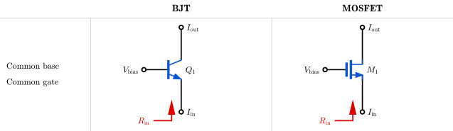
</div>
</div>
<p><strong>Sedra/Smith, Exercise 7.11</strong> (MOSFET)</p>
<p>A common-gate NMOS amplifier (gate at signal ground, input at the source, load <span class="math notranslate nohighlight">\(R_L\)</span> at the drain) has <span class="math notranslate nohighlight">\(g_mr_o\gg1\)</span>. Using the input-resistance formula <span class="math notranslate nohighlight">\(R_{in}\simeq\dfrac{1}{g_m}+\dfrac{R_L}{g_mr_o}\)</span>, find <span class="math notranslate nohighlight">\(R_{in}\)</span> for <span class="math notranslate nohighlight">\(R_L=0\)</span>, <span class="math notranslate nohighlight">\(r_o\)</span>, <span class="math notranslate nohighlight">\((g_mr_o)r_o\)</span> and <span class="math notranslate nohighlight">\(\infty\)</span>.</p>
<p>Given: <span class="math notranslate nohighlight">\(g_mr_o\gg1\)</span>; <span class="math notranslate nohighlight">\(R_L=0,\ r_o,\ (g_mr_o)r_o,\ \infty\)</span></p>
<ol class="arabic simple">
<li><p><strong>Formula.</strong> <span class="math notranslate nohighlight">\(R_{in}\simeq\dfrac{1}{g_m}+\dfrac{R_L}{g_mr_o}\)</span>.</p></li>
<li><p><strong>R_L = 0.</strong> <span class="math notranslate nohighlight">\(R_{in}=1/g_m\)</span>.</p></li>
<li><p><strong>R_L = r_o.</strong> <span class="math notranslate nohighlight">\(R_{in}=\dfrac{1}{g_m}+\dfrac{r_o}{g_mr_o}=\dfrac{2}{g_m}\)</span>.</p></li>
<li><p><strong>R_L = (g_m r_o) r_o.</strong> <span class="math notranslate nohighlight">\(R_{in}=\dfrac{1}{g_m}+r_o\simeq r_o\)</span> (since <span class="math notranslate nohighlight">\(r_o\gg1/g_m\)</span>).</p></li>
<li><p><strong>R_L = infinity.</strong> <span class="math notranslate nohighlight">\(R_{in}\to\infty\)</span>.</p></li>
<li><p><strong>Numerical check.</strong> For <span class="math notranslate nohighlight">\(g_m=1\,\mathrm{mA/V}\)</span>, <span class="math notranslate nohighlight">\(r_o=50\,\mathrm{k\Omega}\)</span> the formula gives <span class="math notranslate nohighlight">\(1,\,2,\,51,\,\infty\)</span> in <span class="math notranslate nohighlight">\(\mathrm{k\Omega}\)</span> (the <span class="math notranslate nohighlight">\(51\)</span> is <span class="math notranslate nohighlight">\(\simeq r_o\)</span>).</p></li>
</ol>
<p><strong>Result.</strong> <span class="math notranslate nohighlight">\(R_{in}=\dfrac{1}{g_m},\ \dfrac{2}{g_m},\ \simeq r_o,\ \infty\)</span></p>
<p>Checked: agrees with the answer in the solutions manual.</p>
<p><strong>Sedra/Smith, Exercise 7.12</strong> (MOSFET)</p>
<p>For a common-gate NMOS stage with <span class="math notranslate nohighlight">\(g_mr_o\gg1\)</span> and a resistance <span class="math notranslate nohighlight">\(R_s\)</span> from the source to ground, use <span class="math notranslate nohighlight">\(R_{out}\simeq r_o+(g_mr_o)R_s\)</span> to find <span class="math notranslate nohighlight">\(R_{out}\)</span> for <span class="math notranslate nohighlight">\(R_s=0\)</span>, <span class="math notranslate nohighlight">\(r_o\)</span>, <span class="math notranslate nohighlight">\((g_mr_o)r_o\)</span> and <span class="math notranslate nohighlight">\(\infty\)</span>.</p>
<p>Given: <span class="math notranslate nohighlight">\(g_mr_o\gg1\)</span>; <span class="math notranslate nohighlight">\(R_s=0,\ r_o,\ (g_mr_o)r_o,\ \infty\)</span></p>
<ol class="arabic simple">
<li><p><strong>Formula.</strong> <span class="math notranslate nohighlight">\(R_{out}\simeq r_o+(g_mr_o)R_s\)</span>.</p></li>
<li><p><strong>R_s = 0.</strong> <span class="math notranslate nohighlight">\(R_{out}=r_o\)</span>.</p></li>
<li><p><strong>R_s = r_o.</strong> <span class="math notranslate nohighlight">\(R_{out}=r_o+g_mr_o^2\simeq(g_mr_o)r_o\)</span>.</p></li>
<li><p><strong>R_s = (g_m r_o) r_o.</strong> <span class="math notranslate nohighlight">\(R_{out}=r_o+(g_mr_o)^2r_o\simeq(g_mr_o)^2r_o\)</span>.</p></li>
<li><p><strong>R_s = infinity.</strong> <span class="math notranslate nohighlight">\(R_{out}\to\infty\)</span> (limited in practice by other parasitics).</p></li>
<li><p><strong>Numerical check.</strong> For <span class="math notranslate nohighlight">\(g_m=1\,\mathrm{mA/V}\)</span>, <span class="math notranslate nohighlight">\(r_o=50\,\mathrm{k\Omega}\)</span>: <span class="math notranslate nohighlight">\(50\,\mathrm{k\Omega}\)</span>, <span class="math notranslate nohighlight">\(2.55\,\mathrm{M\Omega}\)</span>, <span class="math notranslate nohighlight">\(127.5\,\mathrm{M\Omega}\)</span>, matching <span class="math notranslate nohighlight">\(r_o\)</span>, <span class="math notranslate nohighlight">\((g_mr_o)r_o=2.5\,\mathrm{M\Omega}\)</span>, <span class="math notranslate nohighlight">\((g_mr_o)^2r_o=125\,\mathrm{M\Omega}\)</span>.</p></li>
</ol>
<p><strong>Result.</strong> <span class="math notranslate nohighlight">\(R_{out}=r_o,\ (g_mr_o)r_o,\ (g_mr_o)^2r_o,\ \infty\)</span></p>
<p>Checked: agrees with the answer in the solutions manual.</p>
<p><strong>Sedra/Smith, Exercise 7.13</strong> (MOSFET)</p>
<p>A common-gate NMOS current buffer is driven by a current source with source resistance <span class="math notranslate nohighlight">\(R_s=r_o\)</span> (the transistor’s own output resistance) and its output is short-circuited. Find the current gain <span class="math notranslate nohighlight">\(A_{is}=i_o/i_i\)</span> for <span class="math notranslate nohighlight">\(g_mr_o=20\)</span>, <span class="math notranslate nohighlight">\(50\)</span> and <span class="math notranslate nohighlight">\(100\)</span>.</p>
<p>Given: <span class="math notranslate nohighlight">\(R_s=r_o\)</span>; <span class="math notranslate nohighlight">\(g_mr_o=20,\ 50,\ 100\)</span></p>
<ol class="arabic simple">
<li><p><strong>Short-circuit current.</strong> With the drain grounded, the source voltage <span class="math notranslate nohighlight">\(v_s\)</span> drives <span class="math notranslate nohighlight">\(i_o=(g_m+1/r_o)v_s\)</span>, while the input current splits between <span class="math notranslate nohighlight">\(R_s\)</span> and the transistor: <span class="math notranslate nohighlight">\(i_i=v_s/R_s+i_o\)</span>.</p></li>
<li><p><strong>Gain.</strong> <span class="math notranslate nohighlight">\(A_{is}=\dfrac{g_m+1/r_o}{1/R_s+g_m+1/r_o}=\dfrac{1+\frac{1}{g_mr_o}}{\frac{1}{g_mR_s}+1+\frac{1}{g_mr_o}}\)</span>.</p></li>
<li><p><strong>Insert R_s = r_o.</strong> <span class="math notranslate nohighlight">\(A_{is}=\dfrac{1+1/(g_mr_o)}{1+2/(g_mr_o)}\)</span>.</p></li>
<li><p><strong>g_m r_o = 20.</strong> <span class="math notranslate nohighlight">\(\dfrac{1.05}{1.10}=0.955\)</span></p></li>
<li><p><strong>g_m r_o = 50.</strong> <span class="math notranslate nohighlight">\(\dfrac{1.02}{1.04}=0.981\)</span></p></li>
<li><p><strong>g_m r_o = 100.</strong> <span class="math notranslate nohighlight">\(\dfrac{1.01}{1.02}=0.990\)</span></p></li>
</ol>
<p><strong>Result.</strong> <span class="math notranslate nohighlight">\(A_{is}=0.955,\ 0.981,\ 0.990\,\mathrm{A/A}\)</span> (the book rounds to <span class="math notranslate nohighlight">\(0.95,\ 0.98,\ 0.99\)</span>)</p>
<p>Checked: agrees with the answer in the solutions manual.</p>
<p><strong>Sedra/Smith, Exercise 7.15</strong> (BJT)</p>
<p>A common-base BJT stage (base grounded, input at the emitter, load <span class="math notranslate nohighlight">\(R_L\)</span> at the collector) has <span class="math notranslate nohighlight">\(g_mr_o\gg1\)</span>. Using <span class="math notranslate nohighlight">\(R_{in}\simeq r_\pi\parallel\left(\dfrac{1}{g_m}+\dfrac{R_L}{g_mr_o}\right)\)</span> find <span class="math notranslate nohighlight">\(R_{in}\)</span> for <span class="math notranslate nohighlight">\(R_L=0\)</span>, <span class="math notranslate nohighlight">\(r_o\)</span>, <span class="math notranslate nohighlight">\(\beta r_o\)</span> and <span class="math notranslate nohighlight">\(\infty\)</span>, in terms of <span class="math notranslate nohighlight">\(r_e\)</span> and <span class="math notranslate nohighlight">\(r_\pi\)</span>.</p>
<p>Given: <span class="math notranslate nohighlight">\(g_mr_o\gg1\)</span>; <span class="math notranslate nohighlight">\(R_L=0,\ r_o,\ \beta r_o,\ \infty\)</span>; <span class="math notranslate nohighlight">\(r_e=\alpha/g_m\simeq1/g_m\)</span>, <span class="math notranslate nohighlight">\(r_\pi=\beta/g_m\)</span></p>
<ol class="arabic simple">
<li><p><strong>Formula.</strong> <span class="math notranslate nohighlight">\(R_{in}\simeq r_\pi\parallel\left(\dfrac{1}{g_m}+\dfrac{R_L}{g_mr_o}\right)\)</span>.</p></li>
<li><p><strong>R_L = 0.</strong> <span class="math notranslate nohighlight">\(R_{in}=r_\pi\parallel\dfrac{1}{g_m}=\dfrac{r_\pi}{1+\beta}=r_e\)</span>.</p></li>
<li><p><strong>R_L = r_o.</strong> <span class="math notranslate nohighlight">\(R_{in}=r_\pi\parallel\dfrac{2}{g_m}\simeq\dfrac{2}{g_m}\simeq2r_e\)</span> (since <span class="math notranslate nohighlight">\(r_\pi\gg2/g_m\)</span>).</p></li>
<li><p><strong>R_L = beta r_o.</strong> <span class="math notranslate nohighlight">\(\dfrac{1}{g_m}+\dfrac{\beta}{g_m}\simeq r_\pi\)</span> (the <span class="math notranslate nohighlight">\(1/g_m\)</span> is negligible), so <span class="math notranslate nohighlight">\(R_{in}=r_\pi\parallel r_\pi=\dfrac{r_\pi}{2}\)</span>.</p></li>
<li><p><strong>R_L = infinity.</strong> <span class="math notranslate nohighlight">\(R_{in}=r_\pi\)</span>.</p></li>
<li><p><strong>Numerical check.</strong> <span class="math notranslate nohighlight">\(\beta=100\)</span>, <span class="math notranslate nohighlight">\(g_m=4\,\mathrm{mA/V}\)</span>: <span class="math notranslate nohighlight">\(r_\pi=25\,\mathrm{k\Omega}\)</span>, <span class="math notranslate nohighlight">\(r_e=0.248\,\mathrm{k\Omega}\)</span>; <span class="math notranslate nohighlight">\(R_{in}\)</span> computed from the formula is <span class="math notranslate nohighlight">\(0.248\)</span>, <span class="math notranslate nohighlight">\(0.490\)</span> (vs <span class="math notranslate nohighlight">\(2r_e=0.495\)</span>), <span class="math notranslate nohighlight">\(12.6\)</span> (vs <span class="math notranslate nohighlight">\(r_\pi/2=12.5\)</span>) and <span class="math notranslate nohighlight">\(25.0\,\mathrm{k\Omega}\)</span> with <span class="math notranslate nohighlight">\(R_L=\infty\)</span>.</p></li>
</ol>
<p><strong>Result.</strong> <span class="math notranslate nohighlight">\(R_{in}=r_e,\ 2r_e,\ r_\pi/2,\ r_\pi\)</span></p>
<p>Checked: agrees with the answer in the solutions manual.</p>
<p><strong>Sedra/Smith, Exercise 7.16</strong> (BJT)</p>
<p>A common-base BJT stage with a resistance <span class="math notranslate nohighlight">\(R_e\)</span> from the emitter to ground and <span class="math notranslate nohighlight">\(g_mr_o\gg1\)</span> has output resistance <span class="math notranslate nohighlight">\(R_{out}\simeq r_o+(g_mr_o)(R_e\parallel r_\pi)\)</span>. Find <span class="math notranslate nohighlight">\(R_{out}\)</span> for <span class="math notranslate nohighlight">\(R_e=0\)</span>, <span class="math notranslate nohighlight">\(r_e\)</span>, <span class="math notranslate nohighlight">\(r_\pi\)</span>, <span class="math notranslate nohighlight">\(r_o\)</span> and <span class="math notranslate nohighlight">\(\infty\)</span> in terms of <span class="math notranslate nohighlight">\(\beta\)</span> and <span class="math notranslate nohighlight">\(r_o\)</span>.</p>
<p>Given: <span class="math notranslate nohighlight">\(R_e=0,\ r_e,\ r_\pi,\ r_o,\ \infty\)</span>; <span class="math notranslate nohighlight">\(\beta\)</span>, <span class="math notranslate nohighlight">\(r_o\)</span>, <span class="math notranslate nohighlight">\(g_mr_o\gg1\)</span>, <span class="math notranslate nohighlight">\(r_\pi\ll r_o\)</span> for the <span class="math notranslate nohighlight">\(R_e=r_o\)</span> case</p>
<ol class="arabic simple">
<li><p><strong>Formula.</strong> <span class="math notranslate nohighlight">\(R_{out}\simeq r_o+(g_mr_o)(R_e\parallel r_\pi)\)</span>.</p></li>
<li><p><strong>R_e = 0.</strong> <span class="math notranslate nohighlight">\(R_{out}=r_o\)</span>.</p></li>
<li><p><strong>R_e = r_e.</strong> <span class="math notranslate nohighlight">\(r_e\parallel r_\pi\simeq r_e=1/g_m\)</span>, so <span class="math notranslate nohighlight">\(R_{out}=r_o+r_o=2r_o\)</span>.</p></li>
<li><p><strong>R_e = r_pi.</strong> <span class="math notranslate nohighlight">\(r_\pi\parallel r_\pi=r_\pi/2\)</span>, <span class="math notranslate nohighlight">\(R_{out}=r_o+g_mr_o\dfrac{r_\pi}{2}=\left(\dfrac{\beta}{2}+1\right)r_o\)</span>.</p></li>
<li><p><strong>R_e = r_o.</strong> With <span class="math notranslate nohighlight">\(r_o\gg r_\pi\)</span>, <span class="math notranslate nohighlight">\(r_o\parallel r_\pi\simeq r_\pi\)</span> and <span class="math notranslate nohighlight">\(R_{out}=r_o+\beta r_o=(\beta+1)r_o\)</span>.</p></li>
<li><p><strong>R_e = infinity.</strong> <span class="math notranslate nohighlight">\(R_e\parallel r_\pi=r_\pi\)</span>, <span class="math notranslate nohighlight">\(R_{out}=(\beta+1)r_o\)</span>, the maximum.</p></li>
<li><p><strong>Numerical check.</strong> <span class="math notranslate nohighlight">\(\beta=100\)</span>, <span class="math notranslate nohighlight">\(g_m=4\,\mathrm{mA/V}\)</span>, <span class="math notranslate nohighlight">\(r_o=1\,\mathrm{M\Omega}\)</span> (<span class="math notranslate nohighlight">\(r_\pi=25\,\mathrm{k\Omega}\)</span>): <span class="math notranslate nohighlight">\(R_{out}/r_o=1.0,\ 1.99\ (R_e=r_e),\ 51\ (R_e=r_\pi),\ 98.6\ (R_e=r_o)\)</span>, approaching <span class="math notranslate nohighlight">\(101\)</span> for <span class="math notranslate nohighlight">\(R_e\to\infty\)</span>.</p></li>
</ol>
<p><strong>Result.</strong> <span class="math notranslate nohighlight">\(R_{out}=r_o,\ 2r_o,\ \left(\dfrac{\beta}{2}+1\right)r_o,\ (\beta+1)r_o,\ (\beta+1)r_o\)</span></p>
<p>Checked: agrees with the answer in the solutions manual.</p>
<p><strong>Sedra/Smith, Exercise 7.17</strong> (BJT)</p>
<p>A common-base BJT current buffer is driven by a current source with source resistance (emitter resistance) <span class="math notranslate nohighlight">\(R_e=r_o\)</span> and its output is short-circuited. Find the current gain <span class="math notranslate nohighlight">\(A_{is}\)</span> for <span class="math notranslate nohighlight">\(\beta=100\)</span> and (a) <span class="math notranslate nohighlight">\(g_mr_o=100\)</span>, (b) <span class="math notranslate nohighlight">\(g_mr_o=1000\)</span>.</p>
<p>Given: <span class="math notranslate nohighlight">\(R_e=r_o\)</span>, <span class="math notranslate nohighlight">\(\beta=100\)</span>, <span class="math notranslate nohighlight">\(g_mr_o=100\)</span> or <span class="math notranslate nohighlight">\(1000\)</span></p>
<ol class="arabic simple">
<li><p><strong>Gain with source resistance.</strong> <span class="math notranslate nohighlight">\(A_{is}=\dfrac{1+\frac{1}{g_mr_o}}{1+\frac{1}{g_mr_o}+\frac{1}{g_m(R_e\parallel r_\pi)}}\)</span> (Eq. 7.65 form).</p></li>
<li><p><strong>Insert R_e = r_o.</strong> <span class="math notranslate nohighlight">\(\dfrac{1}{g_m(r_o\parallel r_\pi)}=\dfrac{1}{g_mr_o}+\dfrac{1}{g_mr_\pi}=\dfrac{1}{g_mr_o}+\dfrac{1}{\beta}\)</span>, so <span class="math notranslate nohighlight">\(A_{is}=\dfrac{1+\frac{1}{g_mr_o}}{1+\frac{2}{g_mr_o}+\frac{1}{\beta}}\)</span>.</p></li>
<li><p><strong>(a) g_m r_o = 100.</strong> <span class="math notranslate nohighlight">\(A_{is}=\dfrac{1.01}{1+0.02+0.01}=0.981\)</span></p></li>
<li><p><strong>(b) g_m r_o = 1000.</strong> <span class="math notranslate nohighlight">\(A_{is}=\dfrac{1.001}{1+0.002+0.01}=0.989\)</span></p></li>
</ol>
<p><strong>Result.</strong> (a) <span class="math notranslate nohighlight">\(A_{is}=0.981\,\mathrm{A/A}\)</span>; (b) <span class="math notranslate nohighlight">\(A_{is}=0.989\,\mathrm{A/A}\)</span></p>
<p>Checked: agrees with the answer in the solutions manual.</p>
<p><strong>Sedra/Smith, Problem 7.57</strong> (MOSFET)</p>
<p>A common-gate MOSFET current buffer has <span class="math notranslate nohighlight">\(g_mr_o=40\)</span> with <span class="math notranslate nohighlight">\(g_m=2\,\mathrm{mA/V}\)</span> (<span class="math notranslate nohighlight">\(r_o=20\,\mathrm{k}\Omega\)</span>). It is driven by a current source <span class="math notranslate nohighlight">\(i_{sig}\)</span> with parallel resistance <span class="math notranslate nohighlight">\(R_s=20\,\mathrm{k}\Omega\)</span>. (a) Derive <span class="math notranslate nohighlight">\(i_o/i_{sig}\)</span> in terms of <span class="math notranslate nohighlight">\(R_s\)</span> and <span class="math notranslate nohighlight">\(R_{in}\)</span>. Find <span class="math notranslate nohighlight">\(R_{in}\)</span> and <span class="math notranslate nohighlight">\(i_o/i_{sig}\)</span> for (b) <span class="math notranslate nohighlight">\(R_L=20\,\mathrm{k}\Omega\)</span>, (c) <span class="math notranslate nohighlight">\(40\,\mathrm{k}\Omega\)</span>, (d) <span class="math notranslate nohighlight">\(200\,\mathrm{k}\Omega\)</span>. (e) Comment.</p>
<p>Given: <span class="math notranslate nohighlight">\(g_m=2\,\mathrm{mA/V}\)</span>, <span class="math notranslate nohighlight">\(r_o=20\,\mathrm{k}\Omega\)</span>, <span class="math notranslate nohighlight">\(R_s=20\,\mathrm{k}\Omega\)</span>, <span class="math notranslate nohighlight">\(R_L=20\)</span>, <span class="math notranslate nohighlight">\(40\)</span>, <span class="math notranslate nohighlight">\(200\,\mathrm{k}\Omega\)</span></p>
<ol class="arabic simple">
<li><p><strong>(a) Current gain.</strong> The whole source current of the transistor flows through <span class="math notranslate nohighlight">\(R_L\)</span>, so <span class="math notranslate nohighlight">\(i_o\)</span> is the share of <span class="math notranslate nohighlight">\(i_{sig}\)</span> entering the source: <span class="math notranslate nohighlight">\(i_o=i_{sig}\dfrac{R_s}{R_s+R_{in}}\)</span>, i.e. <span class="math notranslate nohighlight">\(\dfrac{i_o}{i_{sig}}=\dfrac{R_s}{R_s+R_{in}}\)</span>.</p></li>
<li><p><strong>(b) <span class="math notranslate nohighlight">\(R_L=20\,\mathrm{k}\Omega\)</span>.</strong> <span class="math notranslate nohighlight">\(R_{in}=\dfrac{r_o+R_L}{g_mr_o+1}=\dfrac{40}{41}=0.976\,\mathrm{k}\Omega\)</span>; <span class="math notranslate nohighlight">\(\dfrac{i_o}{i_{sig}}=\dfrac{20}{20.976}=0.953\)</span>.</p></li>
<li><p><strong>(c) <span class="math notranslate nohighlight">\(R_L=40\,\mathrm{k}\Omega\)</span>.</strong> <span class="math notranslate nohighlight">\(R_{in}=\dfrac{60}{41}=1.46\,\mathrm{k}\Omega\)</span>; <span class="math notranslate nohighlight">\(\dfrac{i_o}{i_{sig}}=\dfrac{20}{21.46}=0.932\)</span>. A <span class="math notranslate nohighlight">\(100\%\)</span> rise of <span class="math notranslate nohighlight">\(R_L\)</span> changes the gain by only about <span class="math notranslate nohighlight">\(2\%\)</span>.</p></li>
<li><p><strong>(d) <span class="math notranslate nohighlight">\(R_L=200\,\mathrm{k}\Omega\)</span>.</strong> <span class="math notranslate nohighlight">\(R_{in}=\dfrac{220}{41}=5.37\,\mathrm{k}\Omega\)</span>; <span class="math notranslate nohighlight">\(\dfrac{i_o}{i_{sig}}=\dfrac{20}{25.37}=0.788\)</span>: a <span class="math notranslate nohighlight">\(900\%\)</span> rise of <span class="math notranslate nohighlight">\(R_L\)</span> costs about <span class="math notranslate nohighlight">\(17\%\)</span> of the gain.</p></li>
<li><p><strong>(e) Comment.</strong> The current gain changes little for large changes of <span class="math notranslate nohighlight">\(R_L\)</span>: the CG stage acts as a current buffer.</p></li>
</ol>
<p><strong>Result.</strong> <span class="math notranslate nohighlight">\(R_{in}=0.976\)</span>, <span class="math notranslate nohighlight">\(1.46\)</span>, <span class="math notranslate nohighlight">\(5.37\,\mathrm{k}\Omega\)</span>; <span class="math notranslate nohighlight">\(i_o/i_{sig}=0.953\)</span>, <span class="math notranslate nohighlight">\(0.932\)</span>, <span class="math notranslate nohighlight">\(0.788\)</span></p>
<p>Checked: agrees with the answer in the solutions manual.</p>
<p><strong>Sedra/Smith, Problem 7.59</strong> (BJT)</p>
<p>A common-base current buffer has <span class="math notranslate nohighlight">\(g_m=5\,\mathrm{mA/V}\)</span>, <span class="math notranslate nohighlight">\(r_o=200\,\mathrm{k}\Omega\)</span>, <span class="math notranslate nohighlight">\(\beta=100\)</span> and is driven by a signal current source with shunt resistance <span class="math notranslate nohighlight">\(R_e=20\,\mathrm{k}\Omega\)</span>. (a) Show <span class="math notranslate nohighlight">\(i_o/i_{sig}=A_{is}R_{out}/(R_{out}+R_L)\)</span>. Find <span class="math notranslate nohighlight">\(i_o/i_{sig}\)</span> for (b) <span class="math notranslate nohighlight">\(R_L=200\,\mathrm{k}\Omega\)</span>, (c) <span class="math notranslate nohighlight">\(R_L=400\,\mathrm{k}\Omega\)</span>, (d) <span class="math notranslate nohighlight">\(R_L=2\,\mathrm{M}\Omega\)</span>. (e) Comment.</p>
<p>Given: <span class="math notranslate nohighlight">\(g_m=5\,\mathrm{mA/V}\)</span>, <span class="math notranslate nohighlight">\(r_o=200\,\mathrm{k}\Omega\)</span>, <span class="math notranslate nohighlight">\(\beta=100\)</span>, <span class="math notranslate nohighlight">\(R_e=20\,\mathrm{k}\Omega\)</span>, <span class="math notranslate nohighlight">\(R_L=200\,\mathrm{k}\Omega\)</span>, <span class="math notranslate nohighlight">\(400\,\mathrm{k}\Omega\)</span>, <span class="math notranslate nohighlight">\(2\,\mathrm{M}\Omega\)</span></p>
<ol class="arabic simple">
<li><p><strong>(a) Derivation.</strong> The collector output is a Norton equivalent: short-circuit current <span class="math notranslate nohighlight">\(A_{is}i_{sig}\)</span> in parallel with <span class="math notranslate nohighlight">\(R_{out}\)</span>. The load takes the share <span class="math notranslate nohighlight">\(R_{out}/(R_{out}+R_L)\)</span> of it, so <span class="math notranslate nohighlight">\(i_o/i_{sig}=A_{is}R_{out}/(R_{out}+R_L)\)</span>.</p></li>
<li><p><strong>(b) Parameters.</strong> <span class="math notranslate nohighlight">\(g_mr_o=1000\)</span>, <span class="math notranslate nohighlight">\(r_\pi=\beta/g_m=20\,\mathrm{k}\Omega\)</span>, <span class="math notranslate nohighlight">\(R_e\parallel r_\pi=10\,\mathrm{k}\Omega\)</span>.</p></li>
<li><p><strong>(b) <span class="math notranslate nohighlight">\(A_{is}\)</span> and <span class="math notranslate nohighlight">\(R_{out}\)</span>.</strong> <span class="math notranslate nohighlight">\(A_{is}=\dfrac{1+1/1000}{1+1/1000+1/(5\times10)}=0.980\)</span>; <span class="math notranslate nohighlight">\(R_{out}=200+10+1000\times10=10.2\,\mathrm{M}\Omega\)</span>.</p></li>
<li><p><strong>(b) <span class="math notranslate nohighlight">\(R_L=200\,\mathrm{k}\Omega\)</span>.</strong> <span class="math notranslate nohighlight">\(\dfrac{i_o}{i_{sig}}=0.980\times\dfrac{10.21}{10.21+0.2}=0.961\)</span>.</p></li>
<li><p><strong>(c) <span class="math notranslate nohighlight">\(R_L=400\,\mathrm{k}\Omega\)</span>.</strong> <span class="math notranslate nohighlight">\(0.980\times\dfrac{10.21}{10.61}=0.943\)</span>: doubling <span class="math notranslate nohighlight">\(R_L\)</span> lowers the gain by about <span class="math notranslate nohighlight">\(2\%\)</span>.</p></li>
<li><p><strong>(d) <span class="math notranslate nohighlight">\(R_L=2\,\mathrm{M}\Omega\)</span>.</strong> <span class="math notranslate nohighlight">\(0.980\times\dfrac{10.21}{12.21}=0.820\)</span>: a tenfold <span class="math notranslate nohighlight">\(R_L\)</span> lowers it by about <span class="math notranslate nohighlight">\(15\%\)</span>.</p></li>
<li><p><strong>(e) Comment.</strong> The gain stays nearly constant while <span class="math notranslate nohighlight">\(R_L\)</span> changes widely: the CB stage is a good current buffer.</p></li>
</ol>
<p><strong>Result.</strong> <span class="math notranslate nohighlight">\(A_{is}=0.980\)</span>, <span class="math notranslate nohighlight">\(R_{out}=10.2\,\mathrm{M}\Omega\)</span>; <span class="math notranslate nohighlight">\(i_o/i_{sig}=0.961\)</span>, <span class="math notranslate nohighlight">\(0.943\)</span>, <span class="math notranslate nohighlight">\(0.820\)</span></p>
<p>Checked: agrees with the answer in the solutions manual.</p>
</section>
<section id="id3">
<h3>Common base / Common gate<a class="headerlink" href="#id3" title="Link to this heading">#</a></h3>
<div class="cell tag_hide-input docutils container">
<details class="admonition hide above-input">
<summary aria-label="Toggle hidden content">
<p class="collapsed admonition-title">Show code cell source</p>
<p class="expanded admonition-title">Hide code cell source</p>
</summary>
<div class="cell_input docutils container">
<div class="highlight-ipython3 notranslate"><div class="highlight"><pre><span></span><span class="c1"># HIDE/SHOW</span>
<span class="n">show</span><span class="p">(</span><span class="n">C</span><span class="o">.</span><span class="n">gain_common_base</span><span class="p">)</span>
</pre></div>
</div>
</div>
</details>
<div class="cell_output docutils container">
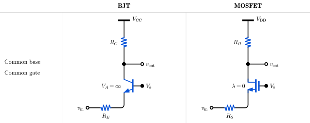
</div>
</div>
<p><strong>Razavi, Example 5.37</strong> (BJT)</p>
<p>A common-base stage receives an RF signal from an antenna modelled as a voltage source <span class="math notranslate nohighlight">\(v_{in}\)</span> with a <span class="math notranslate nohighlight">\(50\,\Omega\)</span> series resistance, applied to the emitter (base at ac ground). (a) Find the bias current that makes the input impedance of the stage equal (“match”) the <span class="math notranslate nohighlight">\(50\,\Omega\)</span> antenna. (b) What is the voltage gain if the resistance seen at the collector (the collector resistor or load) is also <span class="math notranslate nohighlight">\(50\,\Omega\)</span>? Take <span class="math notranslate nohighlight">\(V_A=\infty\)</span>.</p>
<p>Given: <span class="math notranslate nohighlight">\(R_S=50\,\Omega\)</span>, collector load <span class="math notranslate nohighlight">\(50\,\Omega\)</span>, <span class="math notranslate nohighlight">\(V_A=\infty\)</span>, <span class="math notranslate nohighlight">\(V_T=26\,\mathrm{mV}\)</span></p>
<ol class="arabic simple">
<li><p><strong>Matching condition.</strong> The input impedance of the common-base core is <span class="math notranslate nohighlight">\(1/g_m\)</span>, so matching needs <span class="math notranslate nohighlight">\(\dfrac{1}{g_m}=R_S=50\,\Omega\)</span>, i.e. <span class="math notranslate nohighlight">\(g_m=20\,\mathrm{mS}\)</span>.</p></li>
<li><p><strong>Bias current.</strong> <span class="math notranslate nohighlight">\(I_C=g_mV_T=20\,\mathrm{mS}\times26\,\mathrm{mV}=0.52\,\mathrm{mA}\)</span>.</p></li>
<li><p><strong>Voltage gain with a source resistance.</strong> The emitter node divides the source: <span class="math notranslate nohighlight">\(v_X=\dfrac{1/g_m}{R_S+1/g_m}v_{in}\)</span>, and <span class="math notranslate nohighlight">\(v_{out}/v_X=g_mR_C\)</span>, so <span class="math notranslate nohighlight">\(A_v=\dfrac{v_{out}}{v_{in}}=\dfrac{R_C}{R_S+1/g_m}\)</span>.</p></li>
<li><p><strong>Numbers.</strong> <span class="math notranslate nohighlight">\(A_v=\dfrac{50\,\Omega}{50\,\Omega+50\,\Omega}=0.5\)</span>.</p></li>
<li><p><strong>Comment.</strong> Matching halves the signal at the input, and a <span class="math notranslate nohighlight">\(50\,\Omega\)</span> load cannot give more than <span class="math notranslate nohighlight">\(0.5\)</span> (the current gain of the stage is unity, so <span class="math notranslate nohighlight">\(v_{out}\le R_Cv_{in}/(R_S+1/g_m)\)</span>). The circuit is not suited to drive a <span class="math notranslate nohighlight">\(50\,\Omega\)</span> load directly.</p></li>
</ol>
<p><strong>Result.</strong> <span class="math notranslate nohighlight">\(I_C=0.52\,\mathrm{mA}\)</span>; <span class="math notranslate nohighlight">\(A_v=0.5\)</span></p>
<p>Checked: agrees with the answer in the book.</p>
<p><strong>Razavi, Problem 7.42</strong> (MOSFET)</p>
<p>An NMOS common-gate stage (gate at ac ground, drain resistor <span class="math notranslate nohighlight">\(R_D\)</span> to <span class="math notranslate nohighlight">\(V_{DD}\)</span>, output at the drain) is driven at its source by a source <span class="math notranslate nohighlight">\(v_{in}\)</span> with series resistance <span class="math notranslate nohighlight">\(R_S\)</span>. The transistor has channel-length modulation (<span class="math notranslate nohighlight">\(r_O\)</span> finite) with <span class="math notranslate nohighlight">\(g_mr_O\gg1\)</span>. Find the voltage gain <span class="math notranslate nohighlight">\(v_{out}/v_{in}\)</span>.</p>
<p>Given: <span class="math notranslate nohighlight">\(g_m\)</span>, <span class="math notranslate nohighlight">\(r_O\)</span> with <span class="math notranslate nohighlight">\(g_mr_O\gg1\)</span>, <span class="math notranslate nohighlight">\(R_S\)</span>, <span class="math notranslate nohighlight">\(R_D\)</span>; body effect neglected</p>
<ol class="arabic simple">
<li><p><strong>Model.</strong> Let <span class="math notranslate nohighlight">\(i\)</span> be the small-signal current flowing down through <span class="math notranslate nohighlight">\(R_D\)</span> and the channel into <span class="math notranslate nohighlight">\(R_S\)</span>: <span class="math notranslate nohighlight">\(v_{out}=-iR_D\)</span>, <span class="math notranslate nohighlight">\(v_S=v_{in}+iR_S\)</span></p></li>
<li><p><strong>Device equation.</strong> With the gate grounded, <span class="math notranslate nohighlight">\(i=-g_mv_S+\dfrac{v_{out}-v_S}{r_O}\)</span></p></li>
<li><p><strong>Substitute.</strong> <span class="math notranslate nohighlight">\(i\left[1+(g_m+\tfrac{1}{r_O})R_S+\tfrac{R_D}{r_O}\right]=-(g_m+\tfrac{1}{r_O})v_{in}\)</span></p></li>
<li><p><strong>Exact gain.</strong> <span class="math notranslate nohighlight">\(\dfrac{v_{out}}{v_{in}}=\dfrac{(1+g_mr_O)R_D}{r_O+(1+g_mr_O)R_S+R_D}\)</span></p></li>
<li><p><strong>Use <span class="math notranslate nohighlight">\(g_mr_O\gg1\)</span>.</strong> <span class="math notranslate nohighlight">\(\dfrac{v_{out}}{v_{in}}\approx\dfrac{g_mr_OR_D}{r_O+g_mr_OR_S+R_D}=\dfrac{R_D}{R_S+\dfrac{1}{g_m}+\dfrac{R_D}{g_mr_O}}\)</span></p></li>
<li><p><strong>Limits.</strong> For <span class="math notranslate nohighlight">\(r_O\to\infty\)</span> this gives <span class="math notranslate nohighlight">\(R_D/(R_S+1/g_m)\)</span>, the <span class="math notranslate nohighlight">\(\lambda=0\)</span> result; finite <span class="math notranslate nohighlight">\(r_O\)</span> adds <span class="math notranslate nohighlight">\(R_D/(g_mr_O)\)</span> to the denominator</p></li>
</ol>
<p><strong>Result.</strong> <span class="math notranslate nohighlight">\(A_v=\dfrac{(1+g_mr_O)R_D}{r_O+(1+g_mr_O)R_S+R_D}\approx\dfrac{R_D}{R_S+1/g_m+R_D/(g_mr_O)}\)</span></p>
<p>Checked by computation; the book gives no answer.</p>
<p><strong>Sedra/Smith, Exercise 7.14</strong> (MOSFET)</p>
<p>A common-gate NMOS amplifier is driven by a signal source <span class="math notranslate nohighlight">\(v_i\)</span> with source resistance <span class="math notranslate nohighlight">\(R_s\)</span> connected to the source terminal; the gate is grounded and a load <span class="math notranslate nohighlight">\(R_L\)</span> is connected from the drain to ground. Assuming <span class="math notranslate nohighlight">\(g_mr_o\gg1\)</span>, find the open-circuit voltage gain <span class="math notranslate nohighlight">\(A_{vo}\)</span> and the loaded gain <span class="math notranslate nohighlight">\(A_v=v_o/v_i\)</span> in terms of <span class="math notranslate nohighlight">\(g_m\)</span>, <span class="math notranslate nohighlight">\(r_o\)</span>, <span class="math notranslate nohighlight">\(R_s\)</span> and <span class="math notranslate nohighlight">\(R_L\)</span>.</p>
<p>Given: <span class="math notranslate nohighlight">\(g_m\)</span>, <span class="math notranslate nohighlight">\(r_o\)</span>, <span class="math notranslate nohighlight">\(R_s\)</span>, <span class="math notranslate nohighlight">\(R_L\)</span> symbolic, <span class="math notranslate nohighlight">\(g_mr_o\gg1\)</span></p>
<ol class="arabic simple">
<li><p><strong>Open-circuit gain.</strong> With <span class="math notranslate nohighlight">\(R_L=\infty\)</span> no current flows in the source resistance, so <span class="math notranslate nohighlight">\(v_s=v_i\)</span> and the drain current is zero: <span class="math notranslate nohighlight">\(g_mv_i+(v_i-v_o)/r_o=0\)</span> gives <span class="math notranslate nohighlight">\(A_{vo}=1+g_mr_o\simeq g_mr_o\)</span>, independent of <span class="math notranslate nohighlight">\(R_s\)</span>.</p></li>
<li><p><strong>Output resistance.</strong> Looking into the drain, <span class="math notranslate nohighlight">\(R_o=r_o+(1+g_mr_o)R_s\simeq(1+g_mR_s)r_o\)</span> for <span class="math notranslate nohighlight">\(g_mr_o\gg1\)</span> and <span class="math notranslate nohighlight">\(R_s\ll g_mr_oR_s\)</span>.</p></li>
<li><p><strong>Voltage divider.</strong> The output equals the Thevenin source <span class="math notranslate nohighlight">\(A_{vo}v_i\)</span> behind <span class="math notranslate nohighlight">\(R_o\)</span> loaded by <span class="math notranslate nohighlight">\(R_L\)</span>: <span class="math notranslate nohighlight">\(v_o=A_{vo}v_i\dfrac{R_L}{R_L+R_o}\)</span>.</p></li>
<li><p><strong>Result.</strong> <span class="math notranslate nohighlight">\(A_v=(g_mr_o)\dfrac{R_L}{R_L+(1+g_mR_s)r_o}\)</span>.</p></li>
<li><p><strong>Numerical check.</strong> With <span class="math notranslate nohighlight">\(g_m=1\,\mathrm{mA/V}\)</span>, <span class="math notranslate nohighlight">\(r_o=50\,\mathrm{k\Omega}\)</span>, <span class="math notranslate nohighlight">\(R_s=2\,\mathrm{k\Omega}\)</span>, <span class="math notranslate nohighlight">\(R_L=100\,\mathrm{k\Omega}\)</span> exact nodal analysis gives <span class="math notranslate nohighlight">\(A_v=20.2\)</span> while the formula gives <span class="math notranslate nohighlight">\(20.0\)</span>; the two agree to about <span class="math notranslate nohighlight">\(1\%\)</span>.</p></li>
</ol>
<p><strong>Result.</strong> <span class="math notranslate nohighlight">\(A_{vo}\simeq g_mr_o\)</span>; <span class="math notranslate nohighlight">\(A_v=g_mr_o\dfrac{R_L}{R_L+(1+g_mR_s)r_o}\)</span></p>
<p>Checked: agrees with the answer in the solutions manual.</p>
<p><strong>Sedra/Smith, Problem 7.50</strong> (MOSFET)</p>
<p>A common-gate NMOS amplifier has <span class="math notranslate nohighlight">\(g_m=2\,\mathrm{mA/V}\)</span> and <span class="math notranslate nohighlight">\(r_o=20\,\mathrm{k}\Omega\)</span>. It is driven by a signal source with series resistance <span class="math notranslate nohighlight">\(R_s=20\,\mathrm{k}\Omega\)</span> (applied at the source terminal, gate at signal ground) and loaded by <span class="math notranslate nohighlight">\(R_L=840\,\mathrm{k}\Omega\)</span> at the drain. Find <span class="math notranslate nohighlight">\(R_{in}\)</span>, the short-circuit current gain <span class="math notranslate nohighlight">\(A_{is}\)</span>, <span class="math notranslate nohighlight">\(R_{out}\)</span> and <span class="math notranslate nohighlight">\(v_o/v_{sig}\)</span>.</p>
<p>Given: <span class="math notranslate nohighlight">\(g_m=2\,\mathrm{mA/V}\)</span>, <span class="math notranslate nohighlight">\(r_o=20\,\mathrm{k}\Omega\)</span>, <span class="math notranslate nohighlight">\(R_s=20\,\mathrm{k}\Omega\)</span>, <span class="math notranslate nohighlight">\(R_L=840\,\mathrm{k}\Omega\)</span></p>
<ol class="arabic simple">
<li><p><strong>Input resistance.</strong> <span class="math notranslate nohighlight">\(R_{in}=\dfrac{r_o+R_L}{g_mr_o+1}=\dfrac{20+840}{2\times20+1}=21.0\,\mathrm{k}\Omega\)</span>.</p></li>
<li><p><strong>Short-circuit current gain.</strong> <span class="math notranslate nohighlight">\(A_{is}=\dfrac{1+1/(g_mr_o)}{1+1/(g_mr_o)+1/(g_mR_s)}=\dfrac{1.025}{1.025+0.025}=0.976\,\mathrm{A/A}\)</span>.</p></li>
<li><p><strong>Output resistance.</strong> <span class="math notranslate nohighlight">\(R_{out}=r_o+R_s+g_mr_oR_s=20+20+2\times20\times20=840\,\mathrm{k}\Omega\)</span>.</p></li>
<li><p><strong>Voltage gain.</strong> <span class="math notranslate nohighlight">\(i_o=\dfrac{v_{sig}}{R_s+R_{in}}\)</span> and <span class="math notranslate nohighlight">\(v_o=i_oR_L\)</span>, so <span class="math notranslate nohighlight">\(\dfrac{v_o}{v_{sig}}=\dfrac{R_L}{R_s+R_{in}}=\dfrac{840}{20+21.0}=20.5\,\mathrm{V/V}\)</span>.</p></li>
<li><p><strong>Cross-check.</strong> <span class="math notranslate nohighlight">\(\dfrac{R_L}{R_s}A_{is}\dfrac{R_{out}}{R_{out}+R_L}=42\times0.976\times0.5=20.5\)</span>, the same.</p></li>
</ol>
<p><strong>Result.</strong> <span class="math notranslate nohighlight">\(R_{in}=21\,\mathrm{k}\Omega\)</span>, <span class="math notranslate nohighlight">\(A_{is}=0.976\)</span>, <span class="math notranslate nohighlight">\(R_{out}=840\,\mathrm{k}\Omega\)</span>, <span class="math notranslate nohighlight">\(v_o/v_{sig}=20.5\,\mathrm{V/V}\)</span></p>
<p>Checked: agrees with the answer in the solutions manual.</p>
<p><strong>Sedra/Smith, Problem 7.53</strong> (MOSFET)</p>
<p>A common-gate NMOS amplifier <span class="math notranslate nohighlight">\(Q_1\)</span> (gate at <span class="math notranslate nohighlight">\(V_{BIAS}\)</span>) has a PMOS current-source load <span class="math notranslate nohighlight">\(Q_2\)</span> (mirrored from a diode-connected <span class="math notranslate nohighlight">\(Q_3\)</span>) so that all three transistors carry <span class="math notranslate nohighlight">\(100\,\mu\mathrm{A}\)</span> from <span class="math notranslate nohighlight">\(V_{DD}=3.3\,\mathrm{V}\)</span>. The signal source <span class="math notranslate nohighlight">\(v_{sig}\)</span> with resistance <span class="math notranslate nohighlight">\(R_s=50\,\Omega\)</span> drives the source of <span class="math notranslate nohighlight">\(Q_1\)</span>, and the dc current of <span class="math notranslate nohighlight">\(Q_1\)</span> flows through <span class="math notranslate nohighlight">\(R_s\)</span>. Data: <span class="math notranslate nohighlight">\(k_n'(W/L)=k_p'(W/L)=4\,\mathrm{mA/V^2}\)</span>, <span class="math notranslate nohighlight">\(V_t=0.8\,\mathrm{V}\)</span> (both polarities), <span class="math notranslate nohighlight">\(\lvert V_A\rvert=20\,\mathrm{V}\)</span>. Find (a) <span class="math notranslate nohighlight">\(V_{BIAS}\)</span>, (b) <span class="math notranslate nohighlight">\(g_m\)</span> and <span class="math notranslate nohighlight">\(r_o\)</span>, (c) <span class="math notranslate nohighlight">\(R_{in}\)</span> at the source of <span class="math notranslate nohighlight">\(Q_1\)</span>, (d) <span class="math notranslate nohighlight">\(R_{out}\)</span>, (e) <span class="math notranslate nohighlight">\(v_i/v_{sig}\)</span>, <span class="math notranslate nohighlight">\(v_o/v_i\)</span> and <span class="math notranslate nohighlight">\(v_o/v_{sig}\)</span>, (f) the output swing and the corresponding <span class="math notranslate nohighlight">\(v_{sig}\)</span> amplitude.</p>
<p>Given: <span class="math notranslate nohighlight">\(I_D=100\,\mu\mathrm{A}\)</span>, <span class="math notranslate nohighlight">\(V_{DD}=3.3\,\mathrm{V}\)</span>, <span class="math notranslate nohighlight">\(k_n'(W/L)=4\,\mathrm{mA/V^2}\)</span>, <span class="math notranslate nohighlight">\(V_t=0.8\,\mathrm{V}\)</span>, <span class="math notranslate nohighlight">\(\lvert V_A\rvert=20\,\mathrm{V}\)</span>, <span class="math notranslate nohighlight">\(R_s=50\,\Omega\)</span></p>
<ol class="arabic simple">
<li><p><strong>(a) Bias.</strong> <span class="math notranslate nohighlight">\(0.1=\tfrac12(4)V_{OV1}^2\Rightarrow V_{OV1}=0.224\,\mathrm{V}\)</span>; <span class="math notranslate nohighlight">\(V_{GS1}=0.8+0.224=1.024\,\mathrm{V}\)</span>; <span class="math notranslate nohighlight">\(V_{BIAS}=V_{GS1}+I_{D1}R_s=1.024+0.1\times0.05=1.03\,\mathrm{V}\)</span>.</p></li>
<li><p><strong>(b) <span class="math notranslate nohighlight">\(g_m\)</span>, <span class="math notranslate nohighlight">\(r_o\)</span>.</strong> <span class="math notranslate nohighlight">\(g_{m1}=2I_D/V_{OV1}=0.894\,\mathrm{mA/V}\)</span>; every transistor has <span class="math notranslate nohighlight">\(r_o=20/0.1=200\,\mathrm{k}\Omega\)</span>.</p></li>
<li><p><strong>(c) <span class="math notranslate nohighlight">\(R_{in}\)</span>.</strong> The load seen by <span class="math notranslate nohighlight">\(Q_1\)</span> is <span class="math notranslate nohighlight">\(R_L=r_{o2}=200\,\mathrm{k}\Omega\)</span>: <span class="math notranslate nohighlight">\(R_{in}=\dfrac{r_o+R_L}{1+g_mr_o}=\dfrac{400}{1+0.894\times200}=2.22\,\mathrm{k}\Omega\)</span>.</p></li>
<li><p><strong>(d) <span class="math notranslate nohighlight">\(R_{out}\)</span>.</strong> <span class="math notranslate nohighlight">\(R_{out}=r_o+R_s+g_mr_oR_s=200+0.05+0.894\times200\times0.05=209\,\mathrm{k}\Omega\)</span> (this is <span class="math notranslate nohighlight">\(Q_1\)</span> alone; <span class="math notranslate nohighlight">\(Q_2\)</span> in parallel is not included, as in the manual).</p></li>
<li><p><strong>(e) Gains.</strong> <span class="math notranslate nohighlight">\(\dfrac{v_i}{v_{sig}}=\dfrac{R_{in}}{R_{in}+R_s}=\dfrac{2.22}{2.27}=0.978\)</span>. The current into the source equals the current through <span class="math notranslate nohighlight">\(R_L\)</span>, so <span class="math notranslate nohighlight">\(\dfrac{v_o}{v_i}=\dfrac{R_L}{R_{in}}=\dfrac{200}{2.22}=89.9\)</span>. Overall <span class="math notranslate nohighlight">\(\dfrac{v_o}{v_{sig}}=0.978\times89.9=88.0\,\mathrm{V/V}\)</span>.</p></li>
<li><p><strong>(f) Swing.</strong> <span class="math notranslate nohighlight">\(v_{O\min}=V_{BIAS}-V_t=1.03-0.8=0.23\,\mathrm{V}\)</span> (<span class="math notranslate nohighlight">\(Q_1\)</span> saturation); <span class="math notranslate nohighlight">\(v_{O\max}=V_{DD}-V_{OV2}=3.3-0.224=3.076\,\mathrm{V}\)</span> (<span class="math notranslate nohighlight">\(V_{OV2}=V_{OV1}\)</span> since <span class="math notranslate nohighlight">\(k_n=k_p\)</span>). Peak-to-peak <span class="math notranslate nohighlight">\(=2.85\,\mathrm{V}\)</span>, so <span class="math notranslate nohighlight">\(v_{sig}\)</span> peak-to-peak <span class="math notranslate nohighlight">\(=2.85/88.0=32.4\,\mathrm{mV}\)</span>.</p></li>
</ol>
<p><strong>Result.</strong> <span class="math notranslate nohighlight">\(V_{BIAS}=1.03\,\mathrm{V}\)</span>, <span class="math notranslate nohighlight">\(g_m=0.894\,\mathrm{mA/V}\)</span>, <span class="math notranslate nohighlight">\(r_o=200\,\mathrm{k}\Omega\)</span>, <span class="math notranslate nohighlight">\(R_{in}=2.22\,\mathrm{k}\Omega\)</span>, <span class="math notranslate nohighlight">\(R_{out}=209\,\mathrm{k}\Omega\)</span>, <span class="math notranslate nohighlight">\(v_o/v_{sig}=88.0\,\mathrm{V/V}\)</span>, swing <span class="math notranslate nohighlight">\(2.85\,\mathrm{V}\)</span> p-p (<span class="math notranslate nohighlight">\(v_{sig}\approx32\,\mathrm{mV}\)</span> p-p)</p>
<p>Checked: agrees with the answer in the solutions manual. Note: Fig. P7.53 not reproduced; circuit inferred from the manual (Rs = 0.05 kohm in VBIAS = VGS + ID1*Rs, load RL = ro2). Overall gain 88.0 vs the manual 89 (the manual rounds Rin to 2.2 k, giving 90.9 x 0.98). kn=kp assumed for Q2 as the manual says VOV2 = VOV1.</p>
<p><strong>Sedra/Smith, Problem 7.54</strong> (BJT)</p>
<p>A common-base amplifier has <span class="math notranslate nohighlight">\(I_C=0.1\,\mathrm{mA}\)</span>, <span class="math notranslate nohighlight">\(\beta=100\)</span> and <span class="math notranslate nohighlight">\(V_A=20\,\mathrm{V}\)</span>. The signal source has resistance <span class="math notranslate nohighlight">\(R_e=25\,\mathrm{k}\Omega\)</span> at the emitter and the load at the collector is <span class="math notranslate nohighlight">\(R_L=1\,\mathrm{M}\Omega\)</span>. Find <span class="math notranslate nohighlight">\(R_{in}\)</span>, the short-circuit current gain <span class="math notranslate nohighlight">\(A_{is}\)</span>, <span class="math notranslate nohighlight">\(R_{out}\)</span> and <span class="math notranslate nohighlight">\(v_o/v_{sig}\)</span>.</p>
<p>Given: <span class="math notranslate nohighlight">\(I_C=0.1\,\mathrm{mA}\)</span>, <span class="math notranslate nohighlight">\(\beta=100\)</span>, <span class="math notranslate nohighlight">\(V_A=20\,\mathrm{V}\)</span>, <span class="math notranslate nohighlight">\(V_T=25\,\mathrm{mV}\)</span>, <span class="math notranslate nohighlight">\(R_e=25\,\mathrm{k}\Omega\)</span>, <span class="math notranslate nohighlight">\(R_L=1\,\mathrm{M}\Omega\)</span></p>
<ol class="arabic simple">
<li><p><strong>Small-signal parameters.</strong> <span class="math notranslate nohighlight">\(g_m=I_C/V_T=4\,\mathrm{mA/V}\)</span>, <span class="math notranslate nohighlight">\(r_\pi=\beta/g_m=25\,\mathrm{k}\Omega\)</span>, <span class="math notranslate nohighlight">\(r_o=V_A/I_C=200\,\mathrm{k}\Omega\)</span>, <span class="math notranslate nohighlight">\(g_mr_o=800\)</span>.</p></li>
<li><p><strong>Input resistance.</strong> <span class="math notranslate nohighlight">\(R_{in}=r_\pi\parallel\dfrac{r_o+R_L}{g_mr_o+1}=25\parallel\dfrac{1200}{801}=25\parallel1.498=1.41\,\mathrm{k}\Omega\)</span>.</p></li>
<li><p><strong>Short-circuit current gain.</strong> With <span class="math notranslate nohighlight">\(R_e\parallel r_\pi=12.5\,\mathrm{k}\Omega\)</span>: <span class="math notranslate nohighlight">\(A_{is}=\dfrac{1+1/(g_mr_o)}{1+1/(g_mr_o)+1/[g_m(R_e\parallel r_\pi)]}=\dfrac{1.00125}{1.00125+0.02}=0.980\,\mathrm{A/A}\)</span>.</p></li>
<li><p><strong>Output resistance.</strong> <span class="math notranslate nohighlight">\(R_{out}=r_o+(R_e\parallel r_\pi)+g_mr_o(R_e\parallel r_\pi)=200+12.5+800\times12.5=10.2\,\mathrm{M}\Omega\)</span>.</p></li>
<li><p><strong>Voltage gain.</strong> <span class="math notranslate nohighlight">\(\dfrac{v_o}{v_{sig}}=\dfrac{R_L}{R_e}A_{is}\dfrac{R_{out}}{R_{out}+R_L}=40\times0.980\times\dfrac{10.2}{11.2}=35.7\,\mathrm{V/V}\)</span>.</p></li>
<li><p><strong>Cross-check.</strong> A full nodal solution of the hybrid-<span class="math notranslate nohighlight">\(\pi\)</span> circuit gives the same <span class="math notranslate nohighlight">\(R_{in}\)</span>, <span class="math notranslate nohighlight">\(A_{is}\)</span> and gain (see code).</p></li>
</ol>
<p><strong>Result.</strong> <span class="math notranslate nohighlight">\(R_{in}=1.41\,\mathrm{k}\Omega\)</span>, <span class="math notranslate nohighlight">\(A_{is}=0.980\)</span>, <span class="math notranslate nohighlight">\(R_{out}=10.2\,\mathrm{M}\Omega\)</span>, <span class="math notranslate nohighlight">\(v_o/v_{sig}=35.7\,\mathrm{V/V}\)</span></p>
<p>Checked: agrees with the answer in the solutions manual.</p>
</section>
<section id="id4">
<h3>Other Circuits<a class="headerlink" href="#id4" title="Link to this heading">#</a></h3>
<p><strong>Razavi, Example 5.35</strong> (BJT)</p>
<p>A thermometer produces <span class="math notranslate nohighlight">\(600\,\mathrm{mV}\)</span> at room temperature. A common-base stage senses it: the thermometer drives the emitter, the base is at a fixed voltage <span class="math notranslate nohighlight">\(V_b\)</span>, and the collector has a resistor <span class="math notranslate nohighlight">\(R_C\)</span> to <span class="math notranslate nohighlight">\(V_{CC}\)</span>. The collector current is <span class="math notranslate nohighlight">\(0.2\,\mathrm{mA}\)</span>. Find <span class="math notranslate nohighlight">\(V_b\)</span>, the value of <span class="math notranslate nohighlight">\(R_C\)</span> that gives the maximum gain without saturating <span class="math notranslate nohighlight">\(Q_1\)</span>, the gain, and the base divider <span class="math notranslate nohighlight">\(R_1\)</span>, <span class="math notranslate nohighlight">\(R_2\)</span> (divider current <span class="math notranslate nohighlight">\(10I_B\)</span>).</p>
<p>Given: <span class="math notranslate nohighlight">\(V_{CC}=1.8\,\mathrm{V}\)</span>, <span class="math notranslate nohighlight">\(I_C=0.2\,\mathrm{mA}\)</span>, <span class="math notranslate nohighlight">\(I_S=5\times10^{-17}\,\mathrm{A}\)</span>, <span class="math notranslate nohighlight">\(\beta=100\)</span>, input dc level <span class="math notranslate nohighlight">\(600\,\mathrm{mV}\)</span>, <span class="math notranslate nohighlight">\(V_T=26\,\mathrm{mV}\)</span></p>
<ol class="arabic simple">
<li><p><strong>Base voltage.</strong> <span class="math notranslate nohighlight">\(V_{BE}=V_T\ln\dfrac{I_C}{I_S}=26\,\mathrm{mV}\times\ln(4\times10^{12})=754\,\mathrm{mV}\)</span>; the emitter is at <span class="math notranslate nohighlight">\(0.6\,\mathrm{V}\)</span>, so <span class="math notranslate nohighlight">\(V_b=0.754+0.600=1.354\,\mathrm{V}\)</span>.</p></li>
<li><p><strong>Maximum collector resistor.</strong> Active region requires <span class="math notranslate nohighlight">\(V_C\ge V_b\)</span>, so the drop on <span class="math notranslate nohighlight">\(R_C\)</span> can be at most <span class="math notranslate nohighlight">\(1.8-1.354=0.446\,\mathrm{V}\)</span> and <span class="math notranslate nohighlight">\(R_C=\dfrac{0.446\,\mathrm{V}}{0.2\,\mathrm{mA}}=2.23\,\mathrm{k}\Omega\)</span>.</p></li>
<li><p><strong>Gain.</strong> <span class="math notranslate nohighlight">\(A_v=g_mR_C=\dfrac{I_CR_C}{V_T}=\dfrac{0.446}{0.026}=17.1\)</span> (positive, as the stage is common base).</p></li>
<li><p><strong>Base current and divider current.</strong> <span class="math notranslate nohighlight">\(I_B=\dfrac{I_C}{\beta}=2\,\mu\mathrm{A}\)</span>; take <span class="math notranslate nohighlight">\(I_1=10I_B=20\,\mu\mathrm{A}\)</span>, so <span class="math notranslate nohighlight">\(R_1+R_2=\dfrac{1.8\,\mathrm{V}}{20\,\mu\mathrm{A}}=90\,\mathrm{k}\Omega\)</span>.</p></li>
<li><p><strong>Divider resistors.</strong> <span class="math notranslate nohighlight">\(V_b\approx\dfrac{R_2}{R_1+R_2}V_{CC}\)</span> gives <span class="math notranslate nohighlight">\(R_2=\dfrac{1.354}{1.8}\times90\,\mathrm{k}\Omega=67.7\,\mathrm{k}\Omega\)</span> and <span class="math notranslate nohighlight">\(R_1=90-67.7=22.3\,\mathrm{k}\Omega\)</span>.</p></li>
</ol>
<p><strong>Result.</strong> <span class="math notranslate nohighlight">\(V_b=1.354\,\mathrm{V}\)</span>, <span class="math notranslate nohighlight">\(R_C=2.23\,\mathrm{k}\Omega\)</span>, <span class="math notranslate nohighlight">\(A_v\approx17.1\)</span>, <span class="math notranslate nohighlight">\(R_1=22.3\,\mathrm{k}\Omega\)</span>, <span class="math notranslate nohighlight">\(R_2=67.7\,\mathrm{k}\Omega\)</span></p>
<p>Checked: agrees with the answer in the book.</p>
<p><strong>Razavi, Example 5.36</strong> (BJT)</p>
<p>A common-base amplifier (base at ac ground, input at the emitter, output at the collector resistor <span class="math notranslate nohighlight">\(R_C\)</span>) is designed so that its input impedance is <span class="math notranslate nohighlight">\(R_{in}\)</span> and its output impedance is <span class="math notranslate nohighlight">\(R_{out}\)</span>. Neglecting the Early effect, express the voltage gain in terms of <span class="math notranslate nohighlight">\(R_{in}\)</span> and <span class="math notranslate nohighlight">\(R_{out}\)</span>.</p>
<p>Given: symbolic: <span class="math notranslate nohighlight">\(R_{in}\)</span>, <span class="math notranslate nohighlight">\(R_{out}\)</span>, <span class="math notranslate nohighlight">\(V_A=\infty\)</span></p>
<ol class="arabic simple">
<li><p><strong>Gain of the stage.</strong> For a common-base stage <span class="math notranslate nohighlight">\(A_v=g_mR_C\)</span> (positive).</p></li>
<li><p><strong>Input impedance.</strong> Looking into the emitter with the base at ac ground, <span class="math notranslate nohighlight">\(R_{in}=\dfrac{1}{g_m}\)</span>, so <span class="math notranslate nohighlight">\(g_m=1/R_{in}\)</span>.</p></li>
<li><p><strong>Output impedance.</strong> With the input source set to zero and <span class="math notranslate nohighlight">\(V_A=\infty\)</span>, the collector looks like an open circuit, so <span class="math notranslate nohighlight">\(R_{out}=R_C\)</span>.</p></li>
<li><p><strong>Combine.</strong> <span class="math notranslate nohighlight">\(A_v=g_mR_C=\dfrac{R_C}{1/g_m}=\dfrac{R_{out}}{R_{in}}\)</span>.</p></li>
</ol>
<p><strong>Result.</strong> <span class="math notranslate nohighlight">\(A_v=\dfrac{R_{out}}{R_{in}}\)</span></p>
<p>Checked: agrees with the answer in the book.</p>
<p><strong>Razavi, Example 5.51</strong> (BJT)</p>
<p>A common-base stage: the source <span class="math notranslate nohighlight">\(v_{in}\)</span> with resistance <span class="math notranslate nohighlight">\(R_S\)</span> is coupled by <span class="math notranslate nohighlight">\(C_1\)</span> to the emitter. The base is connected to a node that has <span class="math notranslate nohighlight">\(R_2\)</span> to ground and a very large capacitor <span class="math notranslate nohighlight">\(C_B\)</span> to ground. The collector has <span class="math notranslate nohighlight">\(R_C\)</span> to <span class="math notranslate nohighlight">\(V_{CC}\)</span> (output at the collector) and also a resistor <span class="math notranslate nohighlight">\(R_1\)</span> from the collector to the base node. Find the voltage gain with <span class="math notranslate nohighlight">\(V_A=\infty\)</span>.</p>
<p>Given: symbolic: <span class="math notranslate nohighlight">\(R_S\)</span>, <span class="math notranslate nohighlight">\(R_C\)</span>, <span class="math notranslate nohighlight">\(R_1\)</span>, <span class="math notranslate nohighlight">\(R_2\)</span>, <span class="math notranslate nohighlight">\(g_m\)</span>; <span class="math notranslate nohighlight">\(V_A=\infty\)</span>, <span class="math notranslate nohighlight">\(C_1\)</span>, <span class="math notranslate nohighlight">\(C_B\to\infty\)</span></p>
<ol class="arabic simple">
<li><p><strong>AC simplification.</strong> <span class="math notranslate nohighlight">\(C_B\)</span> shorts the base node to ac ground, so <span class="math notranslate nohighlight">\(R_2\)</span> has ground on both ends and plays no role. <span class="math notranslate nohighlight">\(R_1\)</span> now goes from the collector to ground, in parallel with <span class="math notranslate nohighlight">\(R_C\)</span> (and <span class="math notranslate nohighlight">\(V_{CC}\)</span> is ac ground).</p></li>
<li><p><strong>Common-base gain with source resistance.</strong> For a common-base stage with collector load <span class="math notranslate nohighlight">\(R_L\)</span> and source resistance <span class="math notranslate nohighlight">\(R_S\)</span> the gain is <span class="math notranslate nohighlight">\(\dfrac{R_L}{R_S+1/g_m}\)</span> (the emitter voltage is <span class="math notranslate nohighlight">\(v_{in}\)</span> divided by <span class="math notranslate nohighlight">\(R_S\)</span> and <span class="math notranslate nohighlight">\(1/g_m\)</span>, then multiplied by <span class="math notranslate nohighlight">\(g_mR_L\)</span>).</p></li>
<li><p><strong>Substitute <span class="math notranslate nohighlight">\(R_L=R_C\parallel R_1\)</span>.</strong> <span class="math notranslate nohighlight">\(A_v=\dfrac{R_C\parallel R_1}{R_S+\dfrac{1}{g_m}}\)</span>.</p></li>
</ol>
<p><strong>Result.</strong> <span class="math notranslate nohighlight">\(A_v=\dfrac{R_C\parallel R_1}{R_S+\dfrac{1}{g_m}}\)</span></p>
<p>Checked: agrees with the answer in the book.</p>
<p><strong>Razavi, Example 5.52</strong> (BJT)</p>
<p>Two npn transistors: <span class="math notranslate nohighlight">\(Q_1\)</span> has its collector load <span class="math notranslate nohighlight">\(R_C\)</span> (output at its collector) and its emitter is the input terminal. The base of <span class="math notranslate nohighlight">\(Q_1\)</span> is connected to the emitter of <span class="math notranslate nohighlight">\(Q_2\)</span>, which also goes to ground through <span class="math notranslate nohighlight">\(R_E\)</span>. <span class="math notranslate nohighlight">\(Q_2\)</span> has its collector at <span class="math notranslate nohighlight">\(V_{CC}\)</span> and its base connected to <span class="math notranslate nohighlight">\(V_{CC}\)</span> (ac ground) through a resistor <span class="math notranslate nohighlight">\(R_B\)</span>. Find the input impedance <span class="math notranslate nohighlight">\(R_{in}\)</span> seen at the emitter of <span class="math notranslate nohighlight">\(Q_1\)</span> (<span class="math notranslate nohighlight">\(V_A=\infty\)</span>, current gain <span class="math notranslate nohighlight">\(\beta\)</span> for both).</p>
<p>Given: symbolic: <span class="math notranslate nohighlight">\(R_B\)</span>, <span class="math notranslate nohighlight">\(R_E\)</span>, <span class="math notranslate nohighlight">\(g_{m1}\)</span>, <span class="math notranslate nohighlight">\(g_{m2}\)</span>, <span class="math notranslate nohighlight">\(\beta\)</span>; <span class="math notranslate nohighlight">\(V_A=\infty\)</span></p>
<ol class="arabic simple">
<li><p><strong>Recognize the stage.</strong> <span class="math notranslate nohighlight">\(Q_1\)</span> is a common-base device, but its base is not at ac ground: it sits at the emitter of <span class="math notranslate nohighlight">\(Q_2\)</span>, so a resistance <span class="math notranslate nohighlight">\(R_{eq}\)</span> is in series with its base.</p></li>
<li><p><strong>Base resistance <span class="math notranslate nohighlight">\(R_{eq}\)</span>.</strong> <span class="math notranslate nohighlight">\(Q_2\)</span> is an emitter follower driven by the resistance <span class="math notranslate nohighlight">\(R_B\)</span> and loaded by <span class="math notranslate nohighlight">\(R_E\)</span>. <span class="math notranslate nohighlight">\(R_{eq}\)</span> is its output resistance: <span class="math notranslate nohighlight">\(R_{eq}=\left(\dfrac{R_B}{\beta+1}+\dfrac{1}{g_{m2}}\right)\parallel R_E\)</span>.</p></li>
<li><p><strong>Input impedance of a common-base stage with base resistance.</strong> The emitter sees <span class="math notranslate nohighlight">\(1/g_{m1}\)</span> plus the base resistance divided by <span class="math notranslate nohighlight">\(\beta+1\)</span>: <span class="math notranslate nohighlight">\(R_{in}=\dfrac{1}{g_{m1}}+\dfrac{R_{eq}}{\beta+1}\)</span>.</p></li>
<li><p><strong>Combine.</strong> <span class="math notranslate nohighlight">\(R_{in}=\dfrac{1}{g_{m1}}+\dfrac{1}{\beta+1}\left[\left(\dfrac{R_B}{\beta+1}+\dfrac{1}{g_{m2}}\right)\parallel R_E\right]\)</span>.</p></li>
</ol>
<p><strong>Result.</strong> <span class="math notranslate nohighlight">\(R_{in}=\dfrac{1}{g_{m1}}+\dfrac{1}{\beta+1}\left[\left(\dfrac{R_B}{\beta+1}+\dfrac{1}{g_{m2}}\right)\parallel R_E\right]\)</span></p>
<p>Checked: agrees with the answer in the book.</p>
<p><strong>Razavi, Example 7.12</strong> (MOSFET)</p>
<p>A signal source with a dc level of <span class="math notranslate nohighlight">\(0\,\mathrm{V}\)</span> drives the source of an NMOS common-gate stage with a fixed gate bias, drain resistor <span class="math notranslate nohighlight">\(R_D\)</span> to <span class="math notranslate nohighlight">\(V_{DD}=1.8\,\mathrm{V}\)</span>, <span class="math notranslate nohighlight">\(I_D=0.5\,\mathrm{mA}\)</span> and <span class="math notranslate nohighlight">\(W/L=50\)</span>. Find the largest <span class="math notranslate nohighlight">\(R_D\)</span> that keeps <span class="math notranslate nohighlight">\(M_1\)</span> saturated and the resulting voltage gain (neglect channel-length modulation).</p>
<p>Given: <span class="math notranslate nohighlight">\(\mu_nC_{ox}=100\,\mu\mathrm{A/V^2}\)</span>, <span class="math notranslate nohighlight">\(V_{TH}=0.5\,\mathrm{V}\)</span>, <span class="math notranslate nohighlight">\(\lambda=0\)</span>, <span class="math notranslate nohighlight">\(W/L=50\)</span>, <span class="math notranslate nohighlight">\(I_D=0.5\,\mathrm{mA}\)</span>, <span class="math notranslate nohighlight">\(V_{DD}=1.8\,\mathrm{V}\)</span>, source dc level <span class="math notranslate nohighlight">\(0\,\mathrm{V}\)</span></p>
<ol class="arabic simple">
<li><p><strong>Gate-source voltage.</strong> <span class="math notranslate nohighlight">\(V_{GS}=V_{TH}+\sqrt{\dfrac{2I_D}{\mu_nC_{ox}W/L}}=0.5+\sqrt{\dfrac{1\,\mathrm{mA}}{5\,\mathrm{mA/V^2}}}=0.5+0.447=0.947\,\mathrm{V}\)</span>.</p></li>
<li><p><strong>Gate bias.</strong> With the source at <span class="math notranslate nohighlight">\(0\,\mathrm{V}\)</span> dc, <span class="math notranslate nohighlight">\(V_G=V_b=0.947\,\mathrm{V}\)</span>.</p></li>
<li><p><strong>Saturation condition.</strong> <span class="math notranslate nohighlight">\(V_{DD}-I_DR_D\ge V_b-V_{TH}=0.447\,\mathrm{V}\)</span>.</p></li>
<li><p><strong>Largest <span class="math notranslate nohighlight">\(R_D\)</span>.</strong> <span class="math notranslate nohighlight">\(R_D\le\dfrac{1.8-0.447}{0.5\,\mathrm{mA}}=2.71\,\mathrm{k}\Omega\)</span> (2.706 unrounded).</p></li>
<li><p><strong>Transconductance.</strong> <span class="math notranslate nohighlight">\(g_m=\dfrac{2I_D}{V_{GS}-V_{TH}}=\dfrac{1\,\mathrm{mA}}{0.447\,\mathrm{V}}=2.24\,\mathrm{mS}=\dfrac{1}{447\,\Omega}\)</span>.</p></li>
<li><p><strong>Gain.</strong> <span class="math notranslate nohighlight">\(A_v=g_mR_D=2.236\,\mathrm{mS}\cdot2.71\,\mathrm{k}\Omega\approx6.06\)</span> (6.05 with the unrounded <span class="math notranslate nohighlight">\(R_D\)</span>). The gain is positive (non-inverting).</p></li>
</ol>
<p><strong>Result.</strong> <span class="math notranslate nohighlight">\(V_{GS}=0.947\,\mathrm{V}\)</span>, <span class="math notranslate nohighlight">\(R_{D,max}=2.71\,\mathrm{k}\Omega\)</span>, <span class="math notranslate nohighlight">\(g_m=1/447\,\Omega\)</span>, <span class="math notranslate nohighlight">\(A_v\approx6.06\)</span></p>
<p>Checked: agrees with the answer in the book.</p>
<p><strong>Razavi, Example 7.13</strong> (MOSFET)</p>
<p>An NMOS common-gate stage <span class="math notranslate nohighlight">\(M_1\)</span> (gate at a fixed bias, drain resistor <span class="math notranslate nohighlight">\(R_D\)</span> to <span class="math notranslate nohighlight">\(V_{DD}\)</span>) is driven through a source resistance <span class="math notranslate nohighlight">\(R_S\)</span> from the signal <span class="math notranslate nohighlight">\(v_{in}\)</span> into its source node <span class="math notranslate nohighlight">\(X\)</span>. A second NMOS <span class="math notranslate nohighlight">\(M_2\)</span>, diode-connected (gate tied to drain), connects node <span class="math notranslate nohighlight">\(X\)</span> to ground. Find the voltage gain for <span class="math notranslate nohighlight">\(\lambda=0\)</span> and the output impedance when <span class="math notranslate nohighlight">\(\lambda&gt;0\)</span>.</p>
<p>Given: <span class="math notranslate nohighlight">\(g_{m1}\)</span>, <span class="math notranslate nohighlight">\(g_{m2}\)</span>, <span class="math notranslate nohighlight">\(R_S\)</span>, <span class="math notranslate nohighlight">\(R_D\)</span>, <span class="math notranslate nohighlight">\(r_{O1}\)</span>, <span class="math notranslate nohighlight">\(r_{O2}\)</span> symbolic</p>
<ol class="arabic simple">
<li><p><strong>Input network.</strong> With <span class="math notranslate nohighlight">\(\lambda=0\)</span>, <span class="math notranslate nohighlight">\(M_1\)</span> looks like <span class="math notranslate nohighlight">\(1/g_{m1}\)</span> and <span class="math notranslate nohighlight">\(M_2\)</span> like <span class="math notranslate nohighlight">\(1/g_{m2}\)</span> at node <span class="math notranslate nohighlight">\(X\)</span> (in parallel). Divider: <span class="math notranslate nohighlight">\(\dfrac{v_X}{v_{in}}=\dfrac{\frac{1}{g_{m1}}\parallel\frac{1}{g_{m2}}}{\frac{1}{g_{m1}}\parallel\frac{1}{g_{m2}}+R_S}=\dfrac{1}{1+(g_{m1}+g_{m2})R_S}\)</span>.</p></li>
<li><p><strong>Drain stage.</strong> The CG device gives <span class="math notranslate nohighlight">\(\dfrac{v_{out}}{v_X}=g_{m1}R_D\)</span>.</p></li>
<li><p><strong>Gain.</strong> <span class="math notranslate nohighlight">\(A_v=\dfrac{g_{m1}R_D}{1+(g_{m1}+g_{m2})R_S}\)</span>.</p></li>
<li><p><strong>Output resistance: structure.</strong> Set <span class="math notranslate nohighlight">\(v_{in}=0\)</span>. Looking into the drain of <span class="math notranslate nohighlight">\(M_1\)</span>, the source node has the resistance <span class="math notranslate nohighlight">\(\dfrac{1}{g_{m2}}\parallel r_{O2}\parallel R_S\)</span> to ground.</p></li>
<li><p><strong>Degenerated-stage formula.</strong> <span class="math notranslate nohighlight">\(R_{out1}=(1+g_{m1}r_{O1})\left(\dfrac{1}{g_{m2}}\parallel r_{O2}\parallel R_S\right)+r_{O1}\approx g_{m1}r_{O1}\left(\dfrac{1}{g_{m2}}\parallel R_S\right)+r_{O1}\)</span>.</p></li>
<li><p><strong>Include <span class="math notranslate nohighlight">\(R_D\)</span>.</strong> <span class="math notranslate nohighlight">\(R_{out}=R_{out1}\parallel R_D\)</span>.</p></li>
<li><p><strong>Numerical check.</strong> <span class="math notranslate nohighlight">\(g_{m1}=3\,\mathrm{mS}\)</span>, <span class="math notranslate nohighlight">\(g_{m2}=2\,\mathrm{mS}\)</span>, <span class="math notranslate nohighlight">\(R_S=500\,\Omega\)</span>, <span class="math notranslate nohighlight">\(R_D=4\,\mathrm{k}\Omega\)</span>: nodal analysis and the formula give <span class="math notranslate nohighlight">\(A_v=3.43\)</span>. With <span class="math notranslate nohighlight">\(r_{O1}=20\,\mathrm{k}\Omega\)</span>, <span class="math notranslate nohighlight">\(r_{O2}=25\,\mathrm{k}\Omega\)</span>: <span class="math notranslate nohighlight">\(R_{out1}=35.1\,\mathrm{k}\Omega\)</span> both ways, <span class="math notranslate nohighlight">\(R_{out}=3.59\,\mathrm{k}\Omega\)</span>.</p></li>
</ol>
<p><strong>Result.</strong> <span class="math notranslate nohighlight">\(A_v=\dfrac{g_{m1}R_D}{1+(g_{m1}+g_{m2})R_S}\)</span>; <span class="math notranslate nohighlight">\(R_{out}=\left[(1+g_{m1}r_{O1})\left(\dfrac{1}{g_{m2}}\parallel r_{O2}\parallel R_S\right)+r_{O1}\right]\parallel R_D\)</span></p>
<p>Checked: agrees with the answer in the book.</p>
<p><strong>Razavi, Problem 5.54</strong> (BJT)</p>
<p>A common-base stage: npn <span class="math notranslate nohighlight">\(Q_1\)</span> with its base on a fixed bias voltage <span class="math notranslate nohighlight">\(V_b\)</span>, the input <span class="math notranslate nohighlight">\(V_{in}\)</span> applied directly at the emitter, and <span class="math notranslate nohighlight">\(R_C=500\,\Omega\)</span> from <span class="math notranslate nohighlight">\(V_{CC}\)</span> to the collector (output). The collector bias current is <span class="math notranslate nohighlight">\(2\,\mathrm{mA}\)</span> and <span class="math notranslate nohighlight">\(V_A=\infty\)</span>. (a) Find the voltage gain and the input and output impedances. (b) How should <span class="math notranslate nohighlight">\(V_B\)</span> and <span class="math notranslate nohighlight">\(R_C\)</span> be chosen to maximize the gain at the same <span class="math notranslate nohighlight">\(2\,\mathrm{mA}\)</span>?</p>
<p>Given: <span class="math notranslate nohighlight">\(R_C=500\,\Omega\)</span>, <span class="math notranslate nohighlight">\(I_C=2\,\mathrm{mA}\)</span>, <span class="math notranslate nohighlight">\(V_A=\infty\)</span></p>
<ol class="arabic simple">
<li><p><strong>(a) Transconductance.</strong> <span class="math notranslate nohighlight">\(g_m=\dfrac{I_C}{V_T}=\dfrac{2\,\mathrm{mA}}{26\,\mathrm{mV}}=76.9\,\mathrm{mS}\)</span>, <span class="math notranslate nohighlight">\(\frac{1}{g_m}=13.0\,\Omega\)</span>.</p></li>
<li><p><strong>(a) Gain.</strong> The base is at ac ground, so <span class="math notranslate nohighlight">\(v_{BE}=-v_{in}\)</span>, <span class="math notranslate nohighlight">\(i_C=-g_mv_{in}\)</span> and <span class="math notranslate nohighlight">\(v_{out}=-i_CR_C\)</span>: <span class="math notranslate nohighlight">\(A_v=g_mR_C=38.5\)</span> (non-inverting).</p></li>
<li><p><strong>(a) Impedances.</strong> <span class="math notranslate nohighlight">\(R_{in}=\dfrac{r_\pi}{\beta+1}\approx\dfrac{1}{g_m}=13.0\,\Omega\)</span>; <span class="math notranslate nohighlight">\(R_{out}=R_C=500\,\Omega\)</span> (the collector of <span class="math notranslate nohighlight">\(Q_1\)</span> is an open circuit for <span class="math notranslate nohighlight">\(V_A=\infty\)</span>).</p></li>
<li><p><strong>(b) What limits the gain.</strong> <span class="math notranslate nohighlight">\(A_v=g_mR_C=\dfrac{I_CR_C}{V_T}\)</span>: with <span class="math notranslate nohighlight">\(I_C\)</span> fixed, the gain grows with the dc drop <span class="math notranslate nohighlight">\(I_CR_C\)</span> across <span class="math notranslate nohighlight">\(R_C\)</span>.</p></li>
<li><p><strong>(b) Constraint.</strong> <span class="math notranslate nohighlight">\(Q_1\)</span> must stay active: <span class="math notranslate nohighlight">\(V_C=V_{CC}-I_CR_C\geq V_B\)</span>, so <span class="math notranslate nohighlight">\(I_CR_C\leq V_{CC}-V_B\)</span>.</p></li>
<li><p><strong>(b) Choice.</strong> Make <span class="math notranslate nohighlight">\(V_B\)</span> as low as the input allows, i.e. <span class="math notranslate nohighlight">\(V_B=V_{BE}+V_{in,dc}\)</span> (just <span class="math notranslate nohighlight">\(V_{BE}\)</span> if the input sits at <span class="math notranslate nohighlight">\(0\,\mathrm{V}\)</span>), and set <span class="math notranslate nohighlight">\(R_C=\dfrac{V_{CC}-V_B}{2\,\mathrm{mA}}\)</span>, which puts <span class="math notranslate nohighlight">\(Q_1\)</span> at the edge of saturation.</p></li>
<li><p><strong>(b) Maximum gain.</strong> <span class="math notranslate nohighlight">\(A_{v,max}=\dfrac{V_{CC}-V_B}{V_T}\)</span>; for example, <span class="math notranslate nohighlight">\(V_{CC}=2.5\,\mathrm{V}\)</span> and <span class="math notranslate nohighlight">\(V_B=0.8\,\mathrm{V}\)</span> give <span class="math notranslate nohighlight">\(R_C=850\,\Omega\)</span> and <span class="math notranslate nohighlight">\(A_v=65.4\)</span>.</p></li>
</ol>
<p><strong>Result.</strong> (a) <span class="math notranslate nohighlight">\(A_v=g_mR_C=38.5\)</span>, <span class="math notranslate nohighlight">\(R_{in}\approx1/g_m=13.0\,\Omega\)</span>, <span class="math notranslate nohighlight">\(R_{out}=500\,\Omega\)</span>; (b) lowest <span class="math notranslate nohighlight">\(V_B\)</span> the input allows and <span class="math notranslate nohighlight">\(R_C=(V_{CC}-V_B)/I_C\)</span>, giving <span class="math notranslate nohighlight">\(A_v=(V_{CC}-V_B)/V_T\)</span></p>
<p>Checked by computation; the book gives no answer.</p>
<p><strong>Razavi, Problem 5.55</strong> (BJT)</p>
<p>Find the voltage gain of four common-base stages with <span class="math notranslate nohighlight">\(V_A=\infty\)</span>, the input applied at the emitter: (a) npn <span class="math notranslate nohighlight">\(Q_1\)</span> with base on <span class="math notranslate nohighlight">\(V_b\)</span>, collector (output) connected through <span class="math notranslate nohighlight">\(R_C\)</span> to the emitter of a diode-connected npn <span class="math notranslate nohighlight">\(Q_2\)</span> whose base and collector are on <span class="math notranslate nohighlight">\(V_{CC}\)</span>. (b) pnp <span class="math notranslate nohighlight">\(Q_1\)</span> with emitter driven by <span class="math notranslate nohighlight">\(V_{in}\)</span>, base on <span class="math notranslate nohighlight">\(V_b\)</span>, collector (output) driving the base of an npn <span class="math notranslate nohighlight">\(Q_2\)</span> whose collector is on <span class="math notranslate nohighlight">\(V_{CC}\)</span> and emitter grounded. (c) npn <span class="math notranslate nohighlight">\(Q_1\)</span> with base on <span class="math notranslate nohighlight">\(V_b\)</span>, <span class="math notranslate nohighlight">\(R_E\)</span> from the emitter (input) to ground, collector (output) connected through <span class="math notranslate nohighlight">\(R_C\)</span> to a diode-connected pnp <span class="math notranslate nohighlight">\(Q_3\)</span> whose emitter is on <span class="math notranslate nohighlight">\(V_{CC}\)</span>. (d) The circuit of (c) with the input applied through a series resistor <span class="math notranslate nohighlight">\(R_S\)</span> to the emitter.</p>
<p>Given: <span class="math notranslate nohighlight">\(V_A=\infty\)</span>; <span class="math notranslate nohighlight">\(R_C\)</span>, <span class="math notranslate nohighlight">\(R_E\)</span>, <span class="math notranslate nohighlight">\(R_S\)</span>; <span class="math notranslate nohighlight">\(g_{mj}\)</span>, <span class="math notranslate nohighlight">\(r_{\pi j}\)</span></p>
<ol class="arabic simple">
<li><p><strong>Common-base core.</strong> With the base at ac ground and an ideal source at the emitter, <span class="math notranslate nohighlight">\(v_{BE}=-v_{in}\)</span>, so <span class="math notranslate nohighlight">\(i_C=-g_{m1}v_{in}\)</span> and <span class="math notranslate nohighlight">\(v_{out}=g_{m1}v_{in}R_L\)</span>: <span class="math notranslate nohighlight">\(A_v=g_{m1}R_L\)</span>, where <span class="math notranslate nohighlight">\(R_L\)</span> is the impedance at the collector node.</p></li>
<li><p><strong>(a).</strong> <span class="math notranslate nohighlight">\(R_L=R_C+\frac{1}{g_{m2}}\parallel r_{\pi2}\approx R_C+\frac{1}{g_{m2}}\)</span>: <span class="math notranslate nohighlight">\(A_v=g_{m1}\left(R_C+\frac{1}{g_{m2}}\right)\approx g_{m1}R_C+1\)</span>, since <span class="math notranslate nohighlight">\(Q_2\)</span> carries the collector current of <span class="math notranslate nohighlight">\(Q_1\)</span>.</p></li>
<li><p><strong>(b) Load.</strong> The only load is the base of <span class="math notranslate nohighlight">\(Q_2\)</span>: <span class="math notranslate nohighlight">\(R_L=r_{\pi2}\)</span>, so <span class="math notranslate nohighlight">\(A_v=g_{m1}r_{\pi2}\)</span>.</p></li>
<li><p><strong>(b) Bias relation.</strong> The collector current of <span class="math notranslate nohighlight">\(Q_1\)</span> is the base current of <span class="math notranslate nohighlight">\(Q_2\)</span>: <span class="math notranslate nohighlight">\(I_{C2}=\beta I_{C1}\)</span>, so <span class="math notranslate nohighlight">\(r_{\pi2}=\dfrac{\beta V_T}{\beta I_{C1}}=\dfrac{1}{g_{m1}}\)</span> and <span class="math notranslate nohighlight">\(A_v=1\)</span>.</p></li>
<li><p><strong>(c).</strong> <span class="math notranslate nohighlight">\(R_E\)</span> is driven directly by the ideal source and does not affect the gain: <span class="math notranslate nohighlight">\(A_v=g_{m1}\left(R_C+\frac{1}{g_{m3}}\parallel r_{\pi3}\right)\approx g_{m1}\left(R_C+\frac{1}{g_{m3}}\right)\)</span>.</p></li>
<li><p><strong>(d) Input divider.</strong> The emitter node sees <span class="math notranslate nohighlight">\(R_E\parallel\frac{1}{g_{m1}}\)</span> to ground and <span class="math notranslate nohighlight">\(R_S\)</span> to the source: <span class="math notranslate nohighlight">\(\dfrac{v_E}{v_{in}}=\dfrac{R_E\parallel(1/g_{m1})}{R_S+R_E\parallel(1/g_{m1})}\)</span>.</p></li>
<li><p><strong>(d) Gain.</strong> <span class="math notranslate nohighlight">\(A_v=\dfrac{R_E\parallel(1/g_{m1})}{R_S+R_E\parallel(1/g_{m1})}\,g_{m1}\left(R_C+\frac{1}{g_{m3}}\right)=\dfrac{g_{m1}R_E\left(R_C+1/g_{m3}\right)}{R_S+R_E+g_{m1}R_SR_E}\)</span>.</p></li>
<li><p><strong>Numerical check.</strong> With <span class="math notranslate nohighlight">\(1\,\mathrm{mA}\)</span> in <span class="math notranslate nohighlight">\(Q_1\)</span> (and <span class="math notranslate nohighlight">\(Q_2\)</span>, <span class="math notranslate nohighlight">\(Q_3\)</span> in (a), (c), (d)), <span class="math notranslate nohighlight">\(\beta=100\)</span>, <span class="math notranslate nohighlight">\(R_C=1\,\mathrm{k}\Omega\)</span>, <span class="math notranslate nohighlight">\(R_E=500\,\Omega\)</span>, <span class="math notranslate nohighlight">\(R_S=200\,\Omega\)</span>: (a) <span class="math notranslate nohighlight">\(39.5\)</span>, (b) <span class="math notranslate nohighlight">\(1.00\)</span>, (c) <span class="math notranslate nohighlight">\(39.5\)</span>, (d) <span class="math notranslate nohighlight">\(4.30\)</span>, each equal to a nodal solution (with <span class="math notranslate nohighlight">\(r_\pi/(\beta+1)\)</span> in place of <span class="math notranslate nohighlight">\(1/g_m\)</span>).</p></li>
</ol>
<p><strong>Result.</strong> (a) <span class="math notranslate nohighlight">\(A_v=g_{m1}(R_C+1/g_{m2})\approx g_{m1}R_C+1\)</span>; (b) <span class="math notranslate nohighlight">\(A_v=g_{m1}r_{\pi2}=1\)</span>; (c) <span class="math notranslate nohighlight">\(A_v=g_{m1}(R_C+1/g_{m3})\)</span>; (d) <span class="math notranslate nohighlight">\(A_v=\dfrac{g_{m1}R_E(R_C+1/g_{m3})}{R_S+R_E+g_{m1}R_SR_E}\)</span></p>
<p>Checked by computation; the book gives no answer. Note: Read from Fig. 5.145: in (b) Q1 is a pnp (input at its emitter) and Q2 an npn whose base is the output; the unity gain of (b) follows from IC2 = beta*IC1. Bias currents not given: 1 mA in Q1 (and in the diode devices) for the check.</p>
<p><strong>Razavi, Problem 5.56</strong> (BJT)</p>
<p>Find the input impedance <span class="math notranslate nohighlight">\(R_{in}\)</span> looking into the emitter of npn <span class="math notranslate nohighlight">\(Q_1\)</span> (collector to <span class="math notranslate nohighlight">\(V_{CC}\)</span> through <span class="math notranslate nohighlight">\(R_1\)</span>) in four circuits with <span class="math notranslate nohighlight">\(V_A=\infty\)</span>: (a) the base of <span class="math notranslate nohighlight">\(Q_1\)</span> is driven by the emitter of a diode-connected npn <span class="math notranslate nohighlight">\(Q_2\)</span> whose base and collector are on <span class="math notranslate nohighlight">\(V_{CC}\)</span>; (b) the base of <span class="math notranslate nohighlight">\(Q_1\)</span> is on a node pulled up to <span class="math notranslate nohighlight">\(V_{CC}\)</span> by <span class="math notranslate nohighlight">\(R_2\)</span> and pulled down by the collector of an npn <span class="math notranslate nohighlight">\(Q_2\)</span> (base on <span class="math notranslate nohighlight">\(V_b\)</span>, emitter grounded); (c) as (b) but <span class="math notranslate nohighlight">\(Q_2\)</span> is diode-connected (base tied to its collector); (d) the base node, pulled up by <span class="math notranslate nohighlight">\(R_2\)</span>, also drives the base of an npn <span class="math notranslate nohighlight">\(Q_2\)</span> whose emitter is grounded and collector is on <span class="math notranslate nohighlight">\(V_{CC}\)</span>.</p>
<p>Given: <span class="math notranslate nohighlight">\(V_A=\infty\)</span>; <span class="math notranslate nohighlight">\(R_1\)</span>, <span class="math notranslate nohighlight">\(R_2\)</span>; <span class="math notranslate nohighlight">\(g_{mj}\)</span>, <span class="math notranslate nohighlight">\(r_{\pi j}\)</span>, <span class="math notranslate nohighlight">\(\beta\)</span></p>
<ol class="arabic simple">
<li><p><strong>Looking into an emitter.</strong> With an impedance <span class="math notranslate nohighlight">\(Z_B\)</span> from the base to ac ground: <span class="math notranslate nohighlight">\(R_{in}=\dfrac{Z_B+r_{\pi1}}{\beta+1}\approx\dfrac{1}{g_{m1}}+\dfrac{Z_B}{\beta+1}\)</span>; <span class="math notranslate nohighlight">\(R_1\)</span> does not matter for <span class="math notranslate nohighlight">\(V_A=\infty\)</span>.</p></li>
<li><p><strong>(a) Base network.</strong> <span class="math notranslate nohighlight">\(Z_B=\frac{1}{g_{m2}}\parallel r_{\pi2}\)</span>. Here <span class="math notranslate nohighlight">\(Q_2\)</span> carries only the base current of <span class="math notranslate nohighlight">\(Q_1\)</span>: <span class="math notranslate nohighlight">\(I_{E2}=I_{B1}\)</span>, so <span class="math notranslate nohighlight">\(\frac{1}{g_{m2}}=\frac{\beta+1}{g_{m1}}\)</span> and <span class="math notranslate nohighlight">\(Z_B=\frac{1}{g_{m2}}\cdot\frac{\beta}{\beta+1}=r_{\pi1}\)</span>.</p></li>
<li><p><strong>(a) Result.</strong> <span class="math notranslate nohighlight">\(R_{in}=\dfrac{2r_{\pi1}}{\beta+1}\approx\dfrac{2}{g_{m1}}\)</span>.</p></li>
<li><p><strong>(b).</strong> The collector of <span class="math notranslate nohighlight">\(Q_2\)</span> is an open circuit (<span class="math notranslate nohighlight">\(V_A=\infty\)</span>): <span class="math notranslate nohighlight">\(Z_B=R_2\)</span>, <span class="math notranslate nohighlight">\(R_{in}=\dfrac{R_2+r_{\pi1}}{\beta+1}\approx\dfrac{1}{g_{m1}}+\dfrac{R_2}{\beta+1}\)</span>.</p></li>
<li><p><strong>(c).</strong> Diode-connected <span class="math notranslate nohighlight">\(Q_2\)</span>: <span class="math notranslate nohighlight">\(Z_B=R_2\parallel\frac{1}{g_{m2}}\parallel r_{\pi2}\)</span>, <span class="math notranslate nohighlight">\(R_{in}=\dfrac{R_2\parallel\frac{1}{g_{m2}}\parallel r_{\pi2}+r_{\pi1}}{\beta+1}\)</span>.</p></li>
<li><p><strong>(d).</strong> The base of <span class="math notranslate nohighlight">\(Q_2\)</span> adds <span class="math notranslate nohighlight">\(r_{\pi2}\)</span>: <span class="math notranslate nohighlight">\(Z_B=R_2\parallel r_{\pi2}\)</span>, <span class="math notranslate nohighlight">\(R_{in}=\dfrac{R_2\parallel r_{\pi2}+r_{\pi1}}{\beta+1}\)</span>.</p></li>
<li><p><strong>Numerical check.</strong> With <span class="math notranslate nohighlight">\(I_{C1}=1\,\mathrm{mA}\)</span>, <span class="math notranslate nohighlight">\(\beta=100\)</span>, <span class="math notranslate nohighlight">\(R_1=R_2=2\,\mathrm{k}\Omega\)</span> and <span class="math notranslate nohighlight">\(1\,\mathrm{mA}\)</span> in <span class="math notranslate nohighlight">\(Q_2\)</span> for (c), (d): (a) <span class="math notranslate nohighlight">\(51.5\,\Omega\)</span>, (b) <span class="math notranslate nohighlight">\(45.5\,\Omega\)</span>, (c) <span class="math notranslate nohighlight">\(26.0\,\Omega\)</span>, (d) <span class="math notranslate nohighlight">\(36.9\,\Omega\)</span>, each equal to a nodal solution.</p></li>
</ol>
<p><strong>Result.</strong> (a) <span class="math notranslate nohighlight">\(R_{in}=\frac{2r_{\pi1}}{\beta+1}\approx\frac{2}{g_{m1}}\)</span>; (b) <span class="math notranslate nohighlight">\(\frac{R_2+r_{\pi1}}{\beta+1}\)</span>; (c) <span class="math notranslate nohighlight">\(\frac{R_2\parallel(1/g_{m2})\parallel r_{\pi2}+r_{\pi1}}{\beta+1}\)</span>; (d) <span class="math notranslate nohighlight">\(\frac{R_2\parallel r_{\pi2}+r_{\pi1}}{\beta+1}\)</span></p>
<p>Checked by computation; the book gives no answer. Note: Read from Fig. 5.146; in all four the collector resistor of Q1 is R1 and the input is the emitter of Q1. In (c) and (d) the current of Q2 depends on R2 and VCC, which are not given, so it stays a symbol (1 mA assumed in the check).</p>
<p><strong>Razavi, Problem 5.57</strong> (BJT)</p>
<p>A common-base stage: npn <span class="math notranslate nohighlight">\(Q_1\)</span> with its base on <span class="math notranslate nohighlight">\(V_b\)</span>, the input applied directly at the emitter, and an ideal current source from <span class="math notranslate nohighlight">\(V_{CC}\)</span> as the collector load (output at the collector). With a finite Early voltage (<span class="math notranslate nohighlight">\(r_O\)</span>), find the voltage gain and the input and output impedances.</p>
<p>Given: Ideal current-source load; <span class="math notranslate nohighlight">\(g_m\)</span>, <span class="math notranslate nohighlight">\(r_\pi\)</span>, <span class="math notranslate nohighlight">\(r_O\)</span></p>
<ol class="arabic simple">
<li><p><strong>KCL at the output.</strong> The ideal source carries no signal current, so the small-signal collector current is zero: <span class="math notranslate nohighlight">\(g_mv_{BE}+\dfrac{v_{out}-v_{in}}{r_O}=0\)</span> with <span class="math notranslate nohighlight">\(v_{BE}=-v_{in}\)</span>.</p></li>
<li><p><strong>Gain.</strong> <span class="math notranslate nohighlight">\(v_{out}-v_{in}=g_mr_Ov_{in}\)</span>, so <span class="math notranslate nohighlight">\(A_v=1+g_mr_O\)</span>.</p></li>
<li><p><strong>Input impedance.</strong> No signal current flows in the collector, so the emitter current is only the base current through <span class="math notranslate nohighlight">\(r_\pi\)</span>: <span class="math notranslate nohighlight">\(R_{in}=r_\pi\)</span>. (With the usual approximation <span class="math notranslate nohighlight">\(R_{in}=\frac{R_L+r_O}{1+g_mr_O}\)</span> and <span class="math notranslate nohighlight">\(R_L\to\infty\)</span> it is infinite; <span class="math notranslate nohighlight">\(r_\pi\)</span> is what limits it.)</p></li>
<li><p><strong>Output impedance.</strong> Set <span class="math notranslate nohighlight">\(v_{in}=0\)</span>: the emitter is grounded, <span class="math notranslate nohighlight">\(v_{BE}=0\)</span>, and only <span class="math notranslate nohighlight">\(r_O\)</span> remains: <span class="math notranslate nohighlight">\(R_{out}=r_O\)</span>.</p></li>
<li><p><strong>Numerical check.</strong> With <span class="math notranslate nohighlight">\(I_C=1\,\mathrm{mA}\)</span>, <span class="math notranslate nohighlight">\(\beta=100\)</span>, <span class="math notranslate nohighlight">\(V_A=10\,\mathrm{V}\)</span>: <span class="math notranslate nohighlight">\(A_v=386\)</span>, <span class="math notranslate nohighlight">\(R_{in}=2.60\,\mathrm{k}\Omega\)</span>, <span class="math notranslate nohighlight">\(R_{out}=10.0\,\mathrm{k}\Omega\)</span>, the same as a nodal solution.</p></li>
</ol>
<p><strong>Result.</strong> <span class="math notranslate nohighlight">\(A_v=1+g_mr_O\)</span>, <span class="math notranslate nohighlight">\(R_{in}=r_\pi\)</span> (infinite if base current is neglected), <span class="math notranslate nohighlight">\(R_{out}=r_O\)</span></p>
<p>Checked by computation; the book gives no answer.</p>
<p><strong>Razavi, Problem 5.62</strong> (BJT), the same as Razavi, Problem 5.57 with other values</p>
<p>A common-base stage: npn <span class="math notranslate nohighlight">\(Q_1\)</span> with its base on <span class="math notranslate nohighlight">\(V_b\)</span>, an ideal current source from <span class="math notranslate nohighlight">\(V_{CC}\)</span> as the collector load (output at the collector), and the input <span class="math notranslate nohighlight">\(V_{in}\)</span> applied to the emitter through a source resistance <span class="math notranslate nohighlight">\(R_S\)</span>. With a finite Early voltage (<span class="math notranslate nohighlight">\(r_O\)</span>), find the voltage gain.</p>
<p>Given: Ideal current-source load, <span class="math notranslate nohighlight">\(R_S\)</span>, <span class="math notranslate nohighlight">\(g_m\)</span>, <span class="math notranslate nohighlight">\(r_\pi\)</span>, <span class="math notranslate nohighlight">\(r_O\)</span></p>
<ol class="arabic simple">
<li><p><strong>Collector current is zero.</strong> The ideal source carries no signal current, so the small-signal collector current of <span class="math notranslate nohighlight">\(Q_1\)</span> is zero.</p></li>
<li><p><strong>Emitter voltage.</strong> All the current delivered by <span class="math notranslate nohighlight">\(R_S\)</span> therefore leaves through the base, i.e. through <span class="math notranslate nohighlight">\(r_\pi\)</span> to the grounded base: <span class="math notranslate nohighlight">\(\dfrac{v_{in}-v_E}{R_S}=\dfrac{v_E}{r_\pi}\)</span>, so <span class="math notranslate nohighlight">\(v_E=\dfrac{r_\pi}{r_\pi+R_S}v_{in}\)</span>.</p></li>
<li><p><strong>KCL at the collector.</strong> <span class="math notranslate nohighlight">\(g_mv_{BE}+\dfrac{v_{out}-v_E}{r_O}=0\)</span> with <span class="math notranslate nohighlight">\(v_{BE}=-v_E\)</span>: <span class="math notranslate nohighlight">\(v_{out}=(1+g_mr_O)v_E\)</span>.</p></li>
<li><p><strong>Gain.</strong> <span class="math notranslate nohighlight">\(A_v=(1+g_mr_O)\dfrac{r_\pi}{r_\pi+R_S}\)</span>; if the base current is neglected (<span class="math notranslate nohighlight">\(r_\pi\to\infty\)</span>) no current flows in <span class="math notranslate nohighlight">\(R_S\)</span> and <span class="math notranslate nohighlight">\(A_v=1+g_mr_O\)</span>, independent of <span class="math notranslate nohighlight">\(R_S\)</span>.</p></li>
<li><p><strong>Numerical check.</strong> With <span class="math notranslate nohighlight">\(I_C=1\,\mathrm{mA}\)</span>, <span class="math notranslate nohighlight">\(\beta=100\)</span>, <span class="math notranslate nohighlight">\(V_A=10\,\mathrm{V}\)</span>, <span class="math notranslate nohighlight">\(R_S=200\,\Omega\)</span>: <span class="math notranslate nohighlight">\(A_v=386\cdot\frac{2.6}{2.8}=358\)</span>, equal to a nodal solution.</p></li>
</ol>
<p><strong>Result.</strong> <span class="math notranslate nohighlight">\(A_v=(1+g_mr_O)\dfrac{r_\pi}{r_\pi+R_S}\approx1+g_mr_O\)</span></p>
<p>Checked by computation; the book gives no answer.</p>
<p><strong>Razavi, Problem 5.63</strong> (BJT)</p>
<p>Two npn transistors share the same base bias <span class="math notranslate nohighlight">\(V_b\)</span> and have their emitters tied together to the input <span class="math notranslate nohighlight">\(V_{in}\)</span>; each collector goes to <span class="math notranslate nohighlight">\(V_{CC}\)</span> through its own <span class="math notranslate nohighlight">\(R_C\)</span>, giving outputs <span class="math notranslate nohighlight">\(V_{out1}\)</span> (collector of <span class="math notranslate nohighlight">\(Q_1\)</span>) and <span class="math notranslate nohighlight">\(V_{out2}\)</span> (collector of <span class="math notranslate nohighlight">\(Q_2\)</span>). If <span class="math notranslate nohighlight">\(I_{S1}=2I_{S2}\)</span> and <span class="math notranslate nohighlight">\(V_A=\infty\)</span>, how is <span class="math notranslate nohighlight">\(v_{out1}/v_{in}\)</span> related to <span class="math notranslate nohighlight">\(v_{out2}/v_{in}\)</span>?</p>
<p>Given: <span class="math notranslate nohighlight">\(I_{S1}=2I_{S2}\)</span>, equal <span class="math notranslate nohighlight">\(R_C\)</span>, common <span class="math notranslate nohighlight">\(V_b\)</span> and common emitter node, <span class="math notranslate nohighlight">\(V_A=\infty\)</span></p>
<ol class="arabic simple">
<li><p><strong>Bias currents.</strong> Both devices have the same <span class="math notranslate nohighlight">\(V_{BE}=V_b-V_{in,dc}\)</span>, so <span class="math notranslate nohighlight">\(\dfrac{I_{C1}}{I_{C2}}=\dfrac{I_{S1}}{I_{S2}}=2\)</span> and <span class="math notranslate nohighlight">\(g_{m1}=2g_{m2}\)</span>.</p></li>
<li><p><strong>Each output.</strong> Each transistor is a common-base stage driven by the ideal source at its emitter: <span class="math notranslate nohighlight">\(\dfrac{v_{out1}}{v_{in}}=g_{m1}R_C\)</span>, <span class="math notranslate nohighlight">\(\dfrac{v_{out2}}{v_{in}}=g_{m2}R_C\)</span>.</p></li>
<li><p><strong>Relationship.</strong> <span class="math notranslate nohighlight">\(\dfrac{v_{out1}}{v_{in}}=2\,\dfrac{v_{out2}}{v_{in}}\)</span> (both non-inverting).</p></li>
<li><p><strong>Check.</strong> With <span class="math notranslate nohighlight">\(I_{C2}=0.5\,\mathrm{mA}\)</span>, <span class="math notranslate nohighlight">\(R_C=1\,\mathrm{k}\Omega\)</span>: <span class="math notranslate nohighlight">\(38.5\)</span> and <span class="math notranslate nohighlight">\(19.2\)</span>, ratio <span class="math notranslate nohighlight">\(2.00\)</span>.</p></li>
</ol>
<p><strong>Result.</strong> <span class="math notranslate nohighlight">\(\dfrac{v_{out1}}{v_{in}}=2\,\dfrac{v_{out2}}{v_{in}}\)</span></p>
<p>Checked by computation; the book gives no answer.</p>
<p><strong>Razavi, Problem 5.64</strong> (BJT)</p>
<p>A common-base stage has an npn transistor with collector resistor <span class="math notranslate nohighlight">\(R_C\)</span> to <span class="math notranslate nohighlight">\(V_{CC}\)</span> (output at the collector), a resistance <span class="math notranslate nohighlight">\(R_B\)</span> from the base to ac ground, and the input <span class="math notranslate nohighlight">\(v_{in}\)</span> applied to the emitter through a degeneration resistor <span class="math notranslate nohighlight">\(R_E\)</span>. With a finite Early voltage (<span class="math notranslate nohighlight">\(r_O\)</span>) and <span class="math notranslate nohighlight">\(\beta\gg1\)</span>, use the small-signal model to find the voltage gain.</p>
<p>Given: <span class="math notranslate nohighlight">\(R_C\)</span>, <span class="math notranslate nohighlight">\(R_E\)</span>, <span class="math notranslate nohighlight">\(R_B\)</span>, <span class="math notranslate nohighlight">\(g_m\)</span>, <span class="math notranslate nohighlight">\(r_\pi\)</span>, <span class="math notranslate nohighlight">\(r_O\)</span>; <span class="math notranslate nohighlight">\(\beta\gg1\)</span></p>
<ol class="arabic simple">
<li><p><strong>Base loop.</strong> The base current flows through <span class="math notranslate nohighlight">\(R_B\)</span>: <span class="math notranslate nohighlight">\(v_B=-i_BR_B\)</span> and <span class="math notranslate nohighlight">\(v_\pi=v_B-v_E=i_Br_\pi\)</span>, so <span class="math notranslate nohighlight">\(v_\pi=-\dfrac{r_\pi}{r_\pi+R_B}v_E\)</span>. Define <span class="math notranslate nohighlight">\(g=\dfrac{g_mr_\pi}{r_\pi+R_B}=\dfrac{\beta}{r_\pi+R_B}\)</span>, so <span class="math notranslate nohighlight">\(g_mv_\pi=-g\,v_E\)</span>.</p></li>
<li><p><strong>KCL at the collector.</strong> <span class="math notranslate nohighlight">\(-\dfrac{v_{out}}{R_C}=g_mv_\pi+\dfrac{v_{out}-v_E}{r_O}\)</span> gives <span class="math notranslate nohighlight">\(v_{out}=v_E\,\dfrac{(1+gr_O)R_C}{R_C+r_O}\)</span>.</p></li>
<li><p><strong>KCL at the emitter.</strong> The current from <span class="math notranslate nohighlight">\(R_E\)</span> leaves through the base path and the collector: <span class="math notranslate nohighlight">\(\dfrac{v_{in}-v_E}{R_E}=\dfrac{v_E}{r_\pi+R_B}+\dfrac{v_{out}}{R_C}\)</span>.</p></li>
<li><p><strong>Eliminate <span class="math notranslate nohighlight">\(v_E\)</span>.</strong> <span class="math notranslate nohighlight">\(\dfrac{v_{in}}{R_E}=v_E\left[\dfrac{1}{R_E}+\dfrac{1}{r_\pi+R_B}+\dfrac{1+gr_O}{R_C+r_O}\right]\)</span>.</p></li>
<li><p><strong>Exact gain.</strong> <span class="math notranslate nohighlight">\(A_v=\dfrac{(1+gr_O)R_C}{(R_C+r_O)\left(1+\dfrac{R_E}{r_\pi+R_B}\right)+(1+gr_O)R_E}\)</span>.</p></li>
<li><p><strong>With <span class="math notranslate nohighlight">\(eta\gg1\)</span>.</strong> The base current through <span class="math notranslate nohighlight">\(R_E\)</span> is negligible (<span class="math notranslate nohighlight">\(R_E\ll r_\pi+R_B\)</span>) and <span class="math notranslate nohighlight">\(\dfrac{1}{g}\approx\dfrac{1}{g_m}+\dfrac{R_B}{\beta}\)</span>: <span class="math notranslate nohighlight">\(A_v\approx\dfrac{(1+gr_O)R_C}{R_C+r_O+(1+gr_O)R_E}\)</span>.</p></li>
<li><p><strong>Limit <span class="math notranslate nohighlight">\(r_O o\infty\)</span>.</strong> <span class="math notranslate nohighlight">\(A_v\to\dfrac{R_C}{R_E+\frac{1}{g_m}+\frac{R_B}{\beta}}\)</span>, the textbook result for a common-base stage with base resistance.</p></li>
<li><p><strong>Numerical check.</strong> With <span class="math notranslate nohighlight">\(I_C=1\,\mathrm{mA}\)</span>, <span class="math notranslate nohighlight">\(\beta=100\)</span>, <span class="math notranslate nohighlight">\(V_A=10\,\mathrm{V}\)</span>, <span class="math notranslate nohighlight">\(R_C=2\,\mathrm{k}\Omega\)</span>, <span class="math notranslate nohighlight">\(R_E=200\,\Omega\)</span>, <span class="math notranslate nohighlight">\(R_B=5\,\mathrm{k}\Omega\)</span>: exact <span class="math notranslate nohighlight">\(A_v=6.83\)</span>, nodal <span class="math notranslate nohighlight">\(6.83\)</span>; the <span class="math notranslate nohighlight">\(\beta\gg1\)</span> form gives <span class="math notranslate nohighlight">\(6.88\)</span> and the <span class="math notranslate nohighlight">\(r_O\to\infty\)</span> limit <span class="math notranslate nohighlight">\(7.25\)</span> (<span class="math notranslate nohighlight">\(r_O=10\,\mathrm{k}\Omega\)</span> is only five times <span class="math notranslate nohighlight">\(R_C\)</span> here).</p></li>
</ol>
<p><strong>Result.</strong> <span class="math notranslate nohighlight">\(A_v=\dfrac{(1+gr_O)R_C}{(R_C+r_O)\left(1+\frac{R_E}{r_\pi+R_B}\right)+(1+gr_O)R_E}\approx\dfrac{(1+gr_O)R_C}{R_C+r_O+(1+gr_O)R_E}\)</span>, <span class="math notranslate nohighlight">\(g=\dfrac{\beta}{r_\pi+R_B}\approx\left(\dfrac{1}{g_m}+\dfrac{R_B}{\beta}\right)^{-1}\)</span></p>
<p>Checked by computation; the book gives no answer. Note: The circuit is described in words only (no figure): RE is taken in series between the source and the emitter, RB from the base to ac ground, RC as the collector load. The exact expression keeps the base current; the beta &gt;&gt; 1 form neglects it.</p>
<p><strong>Razavi, Problem 7.44</strong> (MOSFET)</p>
<p>Find the voltage gain of five common-gate stages, all with <span class="math notranslate nohighlight">\(\lambda=0\)</span> (body effect neglected). In each, <span class="math notranslate nohighlight">\(M_1\)</span> has its gate at a dc bias <span class="math notranslate nohighlight">\(V_b\)</span> and receives the input at its source. (a) NMOS <span class="math notranslate nohighlight">\(M_1\)</span>, input through a series resistor <span class="math notranslate nohighlight">\(R_S\)</span>, load a diode-connected PMOS <span class="math notranslate nohighlight">\(M_2\)</span> (source at <span class="math notranslate nohighlight">\(V_{DD}\)</span>, gate and drain at the output). (b) NMOS <span class="math notranslate nohighlight">\(M_1\)</span> driven directly at its source; its drain is the output; <span class="math notranslate nohighlight">\(R_D\)</span> connects the output to the drain of PMOS <span class="math notranslate nohighlight">\(M_2\)</span> (source at <span class="math notranslate nohighlight">\(V_{DD}\)</span>), whose gate is tied to the output. (c) NMOS <span class="math notranslate nohighlight">\(M_1\)</span>; input through <span class="math notranslate nohighlight">\(R_S\)</span> into the source, <span class="math notranslate nohighlight">\(R_1\)</span> from the source to ground; load a diode-connected NMOS <span class="math notranslate nohighlight">\(M_2\)</span> (drain and gate at <span class="math notranslate nohighlight">\(V_{DD}\)</span>, source at the output). (d) NMOS <span class="math notranslate nohighlight">\(M_1\)</span> driven at its source; <span class="math notranslate nohighlight">\(R_D\)</span> from the output up to a node joining the drains of PMOS <span class="math notranslate nohighlight">\(M_3\)</span> (gate at <span class="math notranslate nohighlight">\(V_b\)</span>, a current source) and diode-connected PMOS <span class="math notranslate nohighlight">\(M_2\)</span>. (e) PMOS <span class="math notranslate nohighlight">\(M_1\)</span> with the input at its source and gate at <span class="math notranslate nohighlight">\(V_b\)</span>; its drain is the output; <span class="math notranslate nohighlight">\(R_D\)</span> runs from the output to a node <span class="math notranslate nohighlight">\(P\)</span> biased by a current source <span class="math notranslate nohighlight">\(I_1\)</span> to ground and fed by a diode-connected NMOS <span class="math notranslate nohighlight">\(M_2\)</span> (drain and gate at <span class="math notranslate nohighlight">\(V_{DD}\)</span>, source at <span class="math notranslate nohighlight">\(P\)</span>).</p>
<p>Given: <span class="math notranslate nohighlight">\(\lambda=0\)</span>; <span class="math notranslate nohighlight">\(g_{m1}\)</span>, <span class="math notranslate nohighlight">\(g_{m2}\)</span>, <span class="math notranslate nohighlight">\(R_S\)</span>, <span class="math notranslate nohighlight">\(R_1\)</span>, <span class="math notranslate nohighlight">\(R_D\)</span> symbolic; <span class="math notranslate nohighlight">\(M_3\)</span> and <span class="math notranslate nohighlight">\(I_1\)</span> ideal current sources</p>
<ol class="arabic simple">
<li><p><strong>Method.</strong> With <span class="math notranslate nohighlight">\(\lambda=0\)</span> the drain current of <span class="math notranslate nohighlight">\(M_1\)</span> is <span class="math notranslate nohighlight">\(g_{m1}\)</span> times its source signal; the gain is that current times the impedance it flows into, and a diode-connected device looks like <span class="math notranslate nohighlight">\(1/g_m\)</span></p></li>
<li><p><strong>(a) Input side.</strong> The source sees <span class="math notranslate nohighlight">\(v_{in}\)</span> through <span class="math notranslate nohighlight">\(R_S\)</span> and presents <span class="math notranslate nohighlight">\(1/g_{m1}\)</span>: <span class="math notranslate nohighlight">\(i_{D1}=v_{in}/(R_S+1/g_{m1})\)</span></p></li>
<li><p><strong>(a) Gain.</strong> <span class="math notranslate nohighlight">\(A_v=\dfrac{1/g_{m2}}{R_S+1/g_{m1}}=\dfrac{g_{m1}}{g_{m2}(1+g_{m1}R_S)}\)</span></p></li>
<li><p><strong>(b) Load.</strong> <span class="math notranslate nohighlight">\(M_2\)</span> conducts <span class="math notranslate nohighlight">\(g_{m2}v_{SG2}=-g_{m2}v_{out}\)</span> whatever <span class="math notranslate nohighlight">\(R_D\)</span> is, so the load seen at the output is <span class="math notranslate nohighlight">\(1/g_{m2}\)</span> (<span class="math notranslate nohighlight">\(R_D\)</span> only shifts dc levels)</p></li>
<li><p><strong>(b) Gain.</strong> <span class="math notranslate nohighlight">\(A_v=g_{m1}/g_{m2}\)</span></p></li>
<li><p><strong>(c) Thevenin at the source.</strong> <span class="math notranslate nohighlight">\(v_{th}=\dfrac{R_1}{R_1+R_S}v_{in}\)</span>, <span class="math notranslate nohighlight">\(R_{th}=R_S\parallel R_1\)</span></p></li>
<li><p><strong>(c) Gain.</strong> <span class="math notranslate nohighlight">\(A_v=\dfrac{R_1}{R_1+R_S}\cdot\dfrac{1/g_{m2}}{R_S\parallel R_1+1/g_{m1}}\)</span></p></li>
<li><p><strong>(d) Gain.</strong> Load <span class="math notranslate nohighlight">\(=R_D\)</span> in series with <span class="math notranslate nohighlight">\(r_{O3}\parallel(1/g_{m2})=1/g_{m2}\)</span>: <span class="math notranslate nohighlight">\(A_v=g_{m1}\left(R_D+\dfrac{1}{g_{m2}}\right)\)</span></p></li>
<li><p><strong>(e) Gain.</strong> PMOS common gate: <span class="math notranslate nohighlight">\(i_{D1}=g_{m1}v_{in}\)</span> flows through <span class="math notranslate nohighlight">\(R_D\)</span> into node <span class="math notranslate nohighlight">\(P\)</span>, which sees <span class="math notranslate nohighlight">\(1/g_{m2}\)</span> (<span class="math notranslate nohighlight">\(I_1\)</span> ideal): <span class="math notranslate nohighlight">\(A_v=g_{m1}\left(R_D+\dfrac{1}{g_{m2}}\right)\)</span></p></li>
<li><p><strong>Check.</strong> Nodal analysis with <span class="math notranslate nohighlight">\(g_{m1}=4\,\mathrm{mS}\)</span>, <span class="math notranslate nohighlight">\(g_{m2}=2\,\mathrm{mS}\)</span>, <span class="math notranslate nohighlight">\(R_S=300\,\Omega\)</span>, <span class="math notranslate nohighlight">\(R_1=1\,\mathrm{k}\Omega\)</span>, <span class="math notranslate nohighlight">\(R_D=2\,\mathrm{k}\Omega\)</span> reproduces all five formulas</p></li>
</ol>
<p><strong>Result.</strong> (a) <span class="math notranslate nohighlight">\(\dfrac{g_{m1}}{g_{m2}(1+g_{m1}R_S)}\)</span>; (b) <span class="math notranslate nohighlight">\(\dfrac{g_{m1}}{g_{m2}}\)</span>; (c) <span class="math notranslate nohighlight">\(\dfrac{R_1}{R_1+R_S}\dfrac{1/g_{m2}}{R_S\parallel R_1+1/g_{m1}}\)</span>; (d) <span class="math notranslate nohighlight">\(g_{m1}(R_D+1/g_{m2})\)</span>; (e) <span class="math notranslate nohighlight">\(g_{m1}(R_D+1/g_{m2})\)</span></p>
<p>Checked by computation; the book gives no answer.</p>
<p><strong>Razavi, Problem 7.47</strong> (MOSFET)</p>
<p>An NMOS <span class="math notranslate nohighlight">\(M_1\)</span> receives the input at its source. Its drain is the output and is fed from <span class="math notranslate nohighlight">\(V_{DD}\)</span> by an ideal current source <span class="math notranslate nohighlight">\(I_1\)</span>; a resistor <span class="math notranslate nohighlight">\(R_G\)</span> connects the drain to the gate, and nothing else is attached to the gate. With <span class="math notranslate nohighlight">\(\lambda=0\)</span>, find the voltage gain and explain why the stage is not a common-gate amplifier.</p>
<p>Given: <span class="math notranslate nohighlight">\(\lambda=0\)</span>; ideal current source <span class="math notranslate nohighlight">\(I_1\)</span>; <span class="math notranslate nohighlight">\(R_G\)</span>, <span class="math notranslate nohighlight">\(g_m\)</span> symbolic</p>
<ol class="arabic simple">
<li><p><strong>Gate voltage.</strong> The gate draws no current, so no current flows in <span class="math notranslate nohighlight">\(R_G\)</span> and <span class="math notranslate nohighlight">\(v_G=v_{out}\)</span></p></li>
<li><p><strong>Drain current.</strong> The ideal current source fixes the drain current, so its small-signal value is zero: <span class="math notranslate nohighlight">\(g_m(v_G-v_S)=0\)</span></p></li>
<li><p><strong>Gain.</strong> <span class="math notranslate nohighlight">\(v_{out}=v_G=v_S=v_{in}\)</span>, so <span class="math notranslate nohighlight">\(A_v=1\)</span></p></li>
<li><p><strong>Why not common gate.</strong> A common-gate stage needs the gate at ac ground; here the gate follows the drain through <span class="math notranslate nohighlight">\(R_G\)</span>, so <span class="math notranslate nohighlight">\(M_1\)</span> acts as a diode-connected device carrying a constant current, and its <span class="math notranslate nohighlight">\(V_{GS}\)</span> (hence the input-output difference) stays constant: the output simply tracks the input</p></li>
<li><p><strong>Check.</strong> Nodal analysis with <span class="math notranslate nohighlight">\(g_m=4\,\mathrm{mS}\)</span>, <span class="math notranslate nohighlight">\(R_G=10\,\mathrm{k}\Omega\)</span> gives exactly 1; with <span class="math notranslate nohighlight">\(r_O=20\,\mathrm{k}\Omega\)</span> it still gives 1, since no signal current can flow</p></li>
</ol>
<p><strong>Result.</strong> <span class="math notranslate nohighlight">\(A_v=1\)</span>; the gate is tied to the drain (not to ac ground), so <span class="math notranslate nohighlight">\(M_1\)</span> is a diode-connected device at constant current and <span class="math notranslate nohighlight">\(v_{out}\)</span> follows <span class="math notranslate nohighlight">\(v_{in}\)</span></p>
<p>Checked by computation; the book gives no answer.</p>
<p><strong>Sedra/Smith, Exercise 6.19</strong> (BJT)</p>
<p>A pnp common-base amplifier has its base grounded, the emitter connected through <span class="math notranslate nohighlight">\(R_E=10\,\mathrm{k}\Omega\)</span> to <span class="math notranslate nohighlight">\(+10\,\mathrm{V}\)</span>, the signal <span class="math notranslate nohighlight">\(v_i\)</span> coupled to the emitter through a capacitor, and the collector connected through <span class="math notranslate nohighlight">\(R_C=7.5\,\mathrm{k}\Omega\)</span> to <span class="math notranslate nohighlight">\(-10\,\mathrm{V}\)</span> with the output taken from the collector through a capacitor. <span class="math notranslate nohighlight">\(V_{EB}=0.7\,\mathrm{V}\)</span>, <span class="math notranslate nohighlight">\(\alpha=0.99\)</span>, <span class="math notranslate nohighlight">\(V_T=25\,\mathrm{mV}\)</span>. Find <span class="math notranslate nohighlight">\(I_E\)</span>, <span class="math notranslate nohighlight">\(I_C\)</span>, <span class="math notranslate nohighlight">\(V_C\)</span>, <span class="math notranslate nohighlight">\(r_e\)</span>, the voltage gain, and the output amplitude for a <span class="math notranslate nohighlight">\(10\,\mathrm{mV}\)</span> input amplitude.</p>
<p>Given: <span class="math notranslate nohighlight">\(\pm10\,\mathrm{V}\)</span>, <span class="math notranslate nohighlight">\(R_E=10\,\mathrm{k}\Omega\)</span>, <span class="math notranslate nohighlight">\(R_C=7.5\,\mathrm{k}\Omega\)</span>, <span class="math notranslate nohighlight">\(V_{EB}=0.7\,\mathrm{V}\)</span>, <span class="math notranslate nohighlight">\(\alpha=0.99\)</span>, <span class="math notranslate nohighlight">\(\hat v_i=10\,\mathrm{mV}\)</span></p>
<ol class="arabic simple">
<li><p><strong>Emitter current.</strong> <span class="math notranslate nohighlight">\(V_E=+0.7\,\mathrm{V}\)</span>: <span class="math notranslate nohighlight">\(I_E=\dfrac{10-0.7}{10}=0.93\,\mathrm{mA}\)</span>.</p></li>
<li><p><strong>Collector current.</strong> <span class="math notranslate nohighlight">\(I_C=\alpha I_E=0.99\cdot0.93=0.921\,\mathrm{mA}\)</span> (flows from collector to the <span class="math notranslate nohighlight">\(-10\,\mathrm{V}\)</span> rail).</p></li>
<li><p><strong>Collector voltage.</strong> <span class="math notranslate nohighlight">\(V_C=-10+I_CR_C=-10+0.921\cdot7.5=-3.09\,\mathrm{V}\)</span> (the transistor is active, since <span class="math notranslate nohighlight">\(V_C&lt;V_B=0\)</span>).</p></li>
<li><p><strong>Emitter resistance.</strong> <span class="math notranslate nohighlight">\(r_e=\dfrac{V_T}{I_E}=\dfrac{25\,\mathrm{mV}}{0.93\,\mathrm{mA}}=26.9\,\Omega\)</span>.</p></li>
<li><p><strong>Gain.</strong> <span class="math notranslate nohighlight">\(A_v=\dfrac{\alpha R_C}{r_e}=\dfrac{0.99\cdot7500}{26.9}=276\,\mathrm{V/V}\)</span>.</p></li>
<li><p><strong>Output amplitude.</strong> <span class="math notranslate nohighlight">\(\hat v_o=276\cdot10\,\mathrm{mV}=2.76\,\mathrm{V}\)</span>.</p></li>
</ol>
<p><strong>Result.</strong> <span class="math notranslate nohighlight">\(I_E=0.93\,\mathrm{mA}\)</span>, <span class="math notranslate nohighlight">\(I_C=0.921\,\mathrm{mA}\)</span>, <span class="math notranslate nohighlight">\(V_C=-3.09\,\mathrm{V}\)</span>, <span class="math notranslate nohighlight">\(r_e=26.9\,\Omega\)</span>, <span class="math notranslate nohighlight">\(A_v=276\,\mathrm{V/V}\)</span>, <span class="math notranslate nohighlight">\(\hat v_o=2.76\,\mathrm{V}\)</span></p>
<p>Checked: agrees with the answer in the solutions manual.</p>
<p><strong>Sedra/Smith, Exercise 6.25</strong> (MOSFET)</p>
<p>An NMOS common-gate amplifier is driven by a source with <span class="math notranslate nohighlight">\(R_{sig}=100\,\Omega\)</span> and is to be matched so that <span class="math notranslate nohighlight">\(1/g_m=R_{sig}\)</span>. With <span class="math notranslate nohighlight">\(V_{OV}=0.2\,\mathrm{V}\)</span> and <span class="math notranslate nohighlight">\(R_D=2\,\mathrm{k}\Omega\)</span> (no load, <span class="math notranslate nohighlight">\(\lambda=0\)</span>), find <span class="math notranslate nohighlight">\(g_m\)</span>, <span class="math notranslate nohighlight">\(I_D\)</span> and <span class="math notranslate nohighlight">\(G_v\)</span>.</p>
<p>Given: <span class="math notranslate nohighlight">\(R_{sig}=100\,\Omega\)</span>, <span class="math notranslate nohighlight">\(1/g_m=R_{sig}\)</span>, <span class="math notranslate nohighlight">\(V_{OV}=0.2\,\mathrm{V}\)</span>, <span class="math notranslate nohighlight">\(R_D=2\,\mathrm{k}\Omega\)</span></p>
<ol class="arabic simple">
<li><p><strong><span class="math notranslate nohighlight">\(g_m\)</span>.</strong> <span class="math notranslate nohighlight">\(g_m=\dfrac1{0.1\,\mathrm{k}\Omega}=10\,\mathrm{mA/V}\)</span>.</p></li>
<li><p><strong><span class="math notranslate nohighlight">\(I_D\)</span>.</strong> <span class="math notranslate nohighlight">\(g_m=\dfrac{2I_D}{V_{OV}}\Rightarrow I_D=\dfrac{10\cdot0.2}{2}=1\,\mathrm{mA}\)</span>.</p></li>
<li><p><strong>Input resistance.</strong> <span class="math notranslate nohighlight">\(R_{in}=1/g_m=100\,\Omega\)</span>.</p></li>
<li><p><strong>Overall gain.</strong> <span class="math notranslate nohighlight">\(G_v=\dfrac{R_{in}}{R_{in}+R_{sig}}g_mR_D=0.5\cdot10\cdot2=10\,\mathrm{V/V}\)</span>.</p></li>
</ol>
<p><strong>Result.</strong> <span class="math notranslate nohighlight">\(g_m=10\,\mathrm{mA/V}\)</span>, <span class="math notranslate nohighlight">\(I_D=1\,\mathrm{mA}\)</span>, <span class="math notranslate nohighlight">\(G_v=10\,\mathrm{V/V}\)</span></p>
<p>Checked: agrees with the answer in the solutions manual.</p>
<p><strong>Sedra/Smith, Exercise 6.26</strong> (BJT)</p>
<p>A common-base amplifier is biased at <span class="math notranslate nohighlight">\(I_C=1\,\mathrm{mA}\)</span> (<span class="math notranslate nohighlight">\(V_T=25\,\mathrm{mV}\)</span>, <span class="math notranslate nohighlight">\(\alpha\approx1\)</span>) with <span class="math notranslate nohighlight">\(R_C=5\,\mathrm{k}\Omega\)</span>, <span class="math notranslate nohighlight">\(R_L=5\,\mathrm{k}\Omega\)</span>, <span class="math notranslate nohighlight">\(R_{sig}=5\,\mathrm{k}\Omega\)</span>. Find <span class="math notranslate nohighlight">\(R_{in}\)</span>, <span class="math notranslate nohighlight">\(A_{vo}\)</span>, <span class="math notranslate nohighlight">\(R_o\)</span>, <span class="math notranslate nohighlight">\(A_v\)</span>, <span class="math notranslate nohighlight">\(G_v\)</span>.</p>
<p>Given: <span class="math notranslate nohighlight">\(I_C=1\,\mathrm{mA}\)</span>, <span class="math notranslate nohighlight">\(R_C=R_L=R_{sig}=5\,\mathrm{k}\Omega\)</span>, <span class="math notranslate nohighlight">\(V_T=25\,\mathrm{mV}\)</span></p>
<ol class="arabic simple">
<li><p><strong><span class="math notranslate nohighlight">\(R_{in}\)</span>.</strong> <span class="math notranslate nohighlight">\(R_{in}=r_e=\dfrac{V_T}{I_E}\approx\dfrac{25}{1}=25\,\Omega\)</span>.</p></li>
<li><p><strong><span class="math notranslate nohighlight">\(A_{vo}\)</span>.</strong> <span class="math notranslate nohighlight">\(g_m=40\,\mathrm{mA/V}\)</span>; <span class="math notranslate nohighlight">\(A_{vo}=g_mR_C=200\,\mathrm{V/V}\)</span>.</p></li>
<li><p><strong><span class="math notranslate nohighlight">\(R_o\)</span>.</strong> <span class="math notranslate nohighlight">\(R_o=R_C=5\,\mathrm{k}\Omega\)</span>.</p></li>
<li><p><strong>Loaded gain.</strong> <span class="math notranslate nohighlight">\(A_v=200\cdot\dfrac{5}{5+5}=100\,\mathrm{V/V}\)</span>.</p></li>
<li><p><strong>Overall gain.</strong> <span class="math notranslate nohighlight">\(G_v=\dfrac{R_{in}}{R_{in}+R_{sig}}A_v=\dfrac{25}{25+5000}\cdot100=0.4975\approx0.5\,\mathrm{V/V}\)</span>.</p></li>
</ol>
<p><strong>Result.</strong> <span class="math notranslate nohighlight">\(R_{in}=25\,\Omega\)</span>, <span class="math notranslate nohighlight">\(A_{vo}=200\)</span>, <span class="math notranslate nohighlight">\(R_o=5\,\mathrm{k}\Omega\)</span>, <span class="math notranslate nohighlight">\(A_v=100\)</span>, <span class="math notranslate nohighlight">\(G_v\approx0.5\)</span></p>
<p>Checked: agrees with the answer in the solutions manual.</p>
<p><strong>Sedra/Smith, Exercise 6.27</strong> (BJT)</p>
<p>A common-base amplifier must have an input resistance of <span class="math notranslate nohighlight">\(50\,\Omega\)</span> (matching <span class="math notranslate nohighlight">\(R_{sig}=50\,\Omega\)</span>) and an overall voltage gain <span class="math notranslate nohighlight">\(G_v=40\,\mathrm{V/V}\)</span> (<span class="math notranslate nohighlight">\(V_T=25\,\mathrm{mV}\)</span>, <span class="math notranslate nohighlight">\(\alpha\approx1\)</span>). Find the emitter bias current <span class="math notranslate nohighlight">\(I_E\)</span> and the required <span class="math notranslate nohighlight">\(R_C\parallel R_L\)</span>.</p>
<p>Given: <span class="math notranslate nohighlight">\(R_{in}=r_e=50\,\Omega\)</span>, <span class="math notranslate nohighlight">\(R_{sig}=50\,\Omega\)</span>, <span class="math notranslate nohighlight">\(G_v=40\,\mathrm{V/V}\)</span></p>
<ol class="arabic simple">
<li><p><strong>Bias current.</strong> <span class="math notranslate nohighlight">\(r_e=\dfrac{V_T}{I_E}=50\,\Omega\Rightarrow I_E=\dfrac{25\,\mathrm{mV}}{50\,\Omega}=0.5\,\mathrm{mA}\)</span> (<span class="math notranslate nohighlight">\(I_C\approx I_E\)</span>).</p></li>
<li><p><strong>Gain expression.</strong> <span class="math notranslate nohighlight">\(G_v=\dfrac{R_C\parallel R_L}{r_e+R_{sig}}\)</span> (common base, <span class="math notranslate nohighlight">\(\alpha\approx1\)</span>).</p></li>
<li><p><strong>Required load.</strong> <span class="math notranslate nohighlight">\(R_C\parallel R_L=40(50+50)=4\,\mathrm{k}\Omega\)</span>.</p></li>
</ol>
<p><strong>Result.</strong> <span class="math notranslate nohighlight">\(I_E=0.5\,\mathrm{mA}\)</span>, <span class="math notranslate nohighlight">\(R_C\parallel R_L=4\,\mathrm{k}\Omega\)</span></p>
<p>Checked: agrees with the answer in the solutions manual.</p>
<p><strong>Sedra/Smith, Problem 6.32</strong> (BJT)</p>
<p>An npn transistor is used as a common-base amplifier: the base is grounded, the collector is connected through <span class="math notranslate nohighlight">\(R_C=10\,\mathrm{k\Omega}\)</span> to <span class="math notranslate nohighlight">\(+3\,\mathrm{V}\)</span>, and the emitter is fed by a <span class="math notranslate nohighlight">\(0.2\,\mathrm{mA}\)</span> dc current source with the signal source <span class="math notranslate nohighlight">\(v_i\)</span> connected at the emitter. Assume <span class="math notranslate nohighlight">\(\alpha\approx1\)</span> and <span class="math notranslate nohighlight">\(V_T=25\,\mathrm{mV}\)</span>. Find the dc collector voltage, <span class="math notranslate nohighlight">\(r_e\)</span>, and the gain <span class="math notranslate nohighlight">\(v_c/v_i\)</span> using the T model.</p>
<p>Given: <span class="math notranslate nohighlight">\(R_C=10\,\mathrm{k\Omega}\)</span> to <span class="math notranslate nohighlight">\(+3\,\mathrm{V}\)</span>, <span class="math notranslate nohighlight">\(I_E=0.2\,\mathrm{mA}\)</span>, base grounded, <span class="math notranslate nohighlight">\(\alpha\approx1\)</span>, <span class="math notranslate nohighlight">\(V_T=25\,\mathrm{mV}\)</span></p>
<ol class="arabic simple">
<li><p><strong>DC collector voltage.</strong> <span class="math notranslate nohighlight">\(I_C\approx I_E=0.2\,\mathrm{mA}\)</span>, so <span class="math notranslate nohighlight">\(V_C=3-0.2\times10=1\,\mathrm{V}\)</span> (above the base at <span class="math notranslate nohighlight">\(0\,\mathrm{V}\)</span>: active).</p></li>
<li><p><strong>Emitter resistance.</strong> <span class="math notranslate nohighlight">\(r_e=\dfrac{V_T}{I_E}=\dfrac{25\,\mathrm{mV}}{0.2\,\mathrm{mA}}=125\,\Omega\)</span>.</p></li>
<li><p><strong>T model.</strong> Replace the transistor by its T model: with the base grounded, the source <span class="math notranslate nohighlight">\(v_i\)</span> drives the emitter through <span class="math notranslate nohighlight">\(r_e\)</span> only, so the emitter current (positive into the emitter) is <span class="math notranslate nohighlight">\(i_e=-v_i/r_e\)</span>, and the source <span class="math notranslate nohighlight">\(\alpha i_e\approx i_e\)</span> carries the collector current, which flows from the collector node through the source (book polarity).</p></li>
<li><p><strong>Output voltage.</strong> <span class="math notranslate nohighlight">\(v_c=-i_eR_C\)</span> (book polarity), which with <span class="math notranslate nohighlight">\(i_e=-v_i/r_e\)</span> gives <span class="math notranslate nohighlight">\(v_c=\dfrac{R_C}{r_e}v_i\)</span>.</p></li>
<li><p><strong>Gain.</strong> <span class="math notranslate nohighlight">\(\dfrac{v_c}{v_i}=\dfrac{10\,\mathrm{k\Omega}}{0.125\,\mathrm{k\Omega}}=80\,\mathrm{V/V}\)</span> (non-inverting; <span class="math notranslate nohighlight">\(79.2\)</span> if <span class="math notranslate nohighlight">\(\alpha=0.99\)</span>).</p></li>
</ol>
<p><strong>Result.</strong> <span class="math notranslate nohighlight">\(V_C=1\,\mathrm{V}\)</span>, <span class="math notranslate nohighlight">\(r_e=125\,\Omega\)</span>, <span class="math notranslate nohighlight">\(v_c/v_i=+80\,\mathrm{V/V}\)</span></p>
<p>Checked: agrees with the answer in the solutions manual. Note: Statement reconstructed from the book text (the figure is only referred to as Fig. P6.32, and the page shows only the equivalent circuit). The step on the sign convention follows the manual: the gain is positive, as expected for a common-base stage.</p>
<p><strong>Sedra/Smith, Problem 6.35</strong> (BJT)</p>
<p>A common-base amplifier has the transistor biased at <span class="math notranslate nohighlight">\(I_E=0.33\,\mathrm{mA}\)</span> with <span class="math notranslate nohighlight">\(\alpha=0.99\)</span>. The base is grounded, the signal source <span class="math notranslate nohighlight">\(v_{sig}\)</span> with <span class="math notranslate nohighlight">\(R_{sig}=75\,\Omega\)</span> feeds the emitter, and the collector has <span class="math notranslate nohighlight">\(R_C=12\,\mathrm{k\Omega}\)</span> to the supply and an output load <span class="math notranslate nohighlight">\(R_L=12\,\mathrm{k\Omega}\)</span> coupled to the collector. Find the input resistance <span class="math notranslate nohighlight">\(R_{in}\)</span> at the emitter and the voltage gain <span class="math notranslate nohighlight">\(v_o/v_{sig}\)</span>.</p>
<p>Given: <span class="math notranslate nohighlight">\(I_E=0.33\,\mathrm{mA}\)</span>, <span class="math notranslate nohighlight">\(\alpha=0.99\)</span>, <span class="math notranslate nohighlight">\(R_{sig}=75\,\Omega\)</span>, <span class="math notranslate nohighlight">\(R_C=12\,\mathrm{k\Omega}\)</span>, <span class="math notranslate nohighlight">\(R_L=12\,\mathrm{k\Omega}\)</span>, <span class="math notranslate nohighlight">\(V_T=25\,\mathrm{mV}\)</span>, <span class="math notranslate nohighlight">\(r_o=\infty\)</span></p>
<ol class="arabic simple">
<li><p><strong>Emitter resistance.</strong> <span class="math notranslate nohighlight">\(r_e=\dfrac{V_T}{I_E}=\dfrac{25\,\mathrm{mV}}{0.33\,\mathrm{mA}}=75.8\,\Omega\approx75\,\Omega\)</span> (the book uses <span class="math notranslate nohighlight">\(75\,\Omega\)</span>).</p></li>
<li><p><strong>Input resistance.</strong> By inspection of the T model, <span class="math notranslate nohighlight">\(R_{in}=r_e\approx75\,\Omega\)</span>.</p></li>
<li><p><strong>Emitter current.</strong> <span class="math notranslate nohighlight">\(i_e=-\dfrac{v_{sig}}{R_{sig}+r_e}=-\dfrac{v_{sig}}{150\,\Omega}\)</span> (book: <span class="math notranslate nohighlight">\(-v_i/0.15\,\mathrm{k\Omega}\)</span>).</p></li>
<li><p><strong>Output voltage.</strong> The collector current <span class="math notranslate nohighlight">\(\alpha i_e\)</span> flows in <span class="math notranslate nohighlight">\(R_C\parallel R_L=6\,\mathrm{k\Omega}\)</span>: <span class="math notranslate nohighlight">\(v_o=-\alpha i_e(R_C\parallel R_L)=0.99\times6\,\mathrm{k\Omega}\times\dfrac{v_{sig}}{0.15\,\mathrm{k\Omega}}\)</span>.</p></li>
<li><p><strong>Gain.</strong> <span class="math notranslate nohighlight">\(\dfrac{v_o}{v_{sig}}=\dfrac{0.99\times6}{0.15}=39.6\,\mathrm{V/V}\)</span> (non-inverting).</p></li>
</ol>
<p><strong>Result.</strong> <span class="math notranslate nohighlight">\(R_{in}=r_e\approx75\,\Omega\)</span>, <span class="math notranslate nohighlight">\(v_o/v_{sig}=39.6\,\mathrm{V/V}\)</span></p>
<p>Checked: agrees with the answer in the solutions manual. Note: the gain 39.6 is taken from vi = vsig. With the unrounded re = 75.8 ohm the gain is 39.4.</p>
<p><strong>Sedra/Smith, Problem 6.56</strong> (BJT)</p>
<p>A common-base amplifier is supplied from <span class="math notranslate nohighlight">\(\pm10\,\mathrm{V}\)</span> with <span class="math notranslate nohighlight">\(R_E=10\,\mathrm{k\Omega}\)</span> and <span class="math notranslate nohighlight">\(R_C=5\,\mathrm{k\Omega}\)</span> (base grounded, <span class="math notranslate nohighlight">\(V_{BE}=0.7\,\mathrm{V}\)</span>). It must be modified to present an input resistance of <span class="math notranslate nohighlight">\(75\,\Omega\)</span> at the emitter with the dc collector voltage unchanged, by scaling <span class="math notranslate nohighlight">\(R_E\)</span> by a factor <span class="math notranslate nohighlight">\(n\)</span> and <span class="math notranslate nohighlight">\(R_C\)</span> by the same <span class="math notranslate nohighlight">\(n\)</span>. Find <span class="math notranslate nohighlight">\(I_E\)</span>, <span class="math notranslate nohighlight">\(R_E\)</span>, <span class="math notranslate nohighlight">\(n\)</span>, <span class="math notranslate nohighlight">\(R_C\)</span> and the voltage gain <span class="math notranslate nohighlight">\(v_o/v_i\)</span> (<span class="math notranslate nohighlight">\(\alpha\approx0.99\)</span>).</p>
<p>Given: <span class="math notranslate nohighlight">\(V_{EE}=10\,\mathrm{V}\)</span>, <span class="math notranslate nohighlight">\(V_{BE}=0.7\,\mathrm{V}\)</span>, <span class="math notranslate nohighlight">\(R_{E0}=10\,\mathrm{k}\Omega\)</span>, <span class="math notranslate nohighlight">\(R_{C0}=5\,\mathrm{k}\Omega\)</span>, <span class="math notranslate nohighlight">\(R_{in}=75\,\Omega\)</span>, <span class="math notranslate nohighlight">\(\alpha=0.99\)</span></p>
<ol class="arabic simple">
<li><p><strong>Emitter current.</strong> <span class="math notranslate nohighlight">\(R_{in}=r_e=\dfrac{V_T}{I_E}=75\,\Omega\)</span> gives <span class="math notranslate nohighlight">\(I_E=\dfrac{25\,\mathrm{mV}}{75\,\Omega}=0.333\,\mathrm{mA}\)</span>.</p></li>
<li><p><strong>Emitter resistor.</strong> <span class="math notranslate nohighlight">\(I_E=\dfrac{10-0.7}{R_E}\)</span> so <span class="math notranslate nohighlight">\(R_E=\dfrac{9.3}{0.333}=27.9\,\mathrm{k\Omega}\)</span>.</p></li>
<li><p><strong>Scale factor.</strong> <span class="math notranslate nohighlight">\(n=\dfrac{27.9}{10}=2.79\)</span>.</p></li>
<li><p><strong>Collector resistor.</strong> <span class="math notranslate nohighlight">\(R_C=nR_{C0}=2.79\times5=13.95\,\mathrm{k\Omega}\)</span>; <span class="math notranslate nohighlight">\(I_CR_C\)</span> is unchanged because <span class="math notranslate nohighlight">\(I_C\)</span> falls by <span class="math notranslate nohighlight">\(n\)</span> while <span class="math notranslate nohighlight">\(R_C\)</span> rises by <span class="math notranslate nohighlight">\(n\)</span>.</p></li>
<li><p><strong>Gain.</strong> <span class="math notranslate nohighlight">\(\dfrac{v_o}{v_i}=\dfrac{\alpha R_C}{r_e}=\dfrac{0.99\times13.95}{0.075}=184\,\mathrm{V/V}\)</span>.</p></li>
</ol>
<p><strong>Result.</strong> <span class="math notranslate nohighlight">\(I_E=0.333\,\mathrm{mA}\)</span>, <span class="math notranslate nohighlight">\(R_E=27.9\,\mathrm{k\Omega}\)</span>, <span class="math notranslate nohighlight">\(R_C=13.95\,\mathrm{k\Omega}\)</span>, <span class="math notranslate nohighlight">\(A_v=184\,\mathrm{V/V}\)</span></p>
<p>Checked: agrees with the answer in the solutions manual. Note: Original circuit (Fig. 6.31(a): +-10 V, RE=10k, RC=5k) is read from the manual solution only; the figure is not shown. Manual rounds IE to 0.33 mA (RE 28.2k, gain 186); the exact 75 ohm gives 27.9k and 184, within 1.5 %.</p>
<p><strong>Sedra/Smith, Problem 6.65</strong> (MOSFET)</p>
<p>A common-gate NMOS amplifier is driven by a source with <span class="math notranslate nohighlight">\(R_{sig}=100\,\Omega\)</span>. Increasing <span class="math notranslate nohighlight">\(R_{sig}\)</span> by <span class="math notranslate nohighlight">\(100\,\Omega\)</span> (to <span class="math notranslate nohighlight">\(200\,\Omega\)</span>) reduces the overall voltage gain from <span class="math notranslate nohighlight">\(12\,\mathrm{V/V}\)</span> to <span class="math notranslate nohighlight">\(10\,\mathrm{V/V}\)</span>. Find <span class="math notranslate nohighlight">\(g_m\)</span> and the overdrive <span class="math notranslate nohighlight">\(V_{OV}\)</span> if <span class="math notranslate nohighlight">\(I_D=0.25\,\mathrm{mA}\)</span>.</p>
<p>Given: <span class="math notranslate nohighlight">\(R_{sig}=100\to200\,\Omega\)</span>, <span class="math notranslate nohighlight">\(G_v=12\to10\)</span>, <span class="math notranslate nohighlight">\(I_D=0.25\,\mathrm{mA}\)</span></p>
<ol class="arabic simple">
<li><p><strong>Input divider.</strong> The input resistance of the CG stage is <span class="math notranslate nohighlight">\(1/g_m\)</span>, so <span class="math notranslate nohighlight">\(G_v\propto\dfrac{1/g_m}{1/g_m+R_{sig}}\)</span>; the drain side is unchanged.</p></li>
<li><p><strong>Ratio of gains.</strong> <span class="math notranslate nohighlight">\(\dfrac{12}{10}=\dfrac{1/g_m+200}{1/g_m+100}\)</span> (resistances in <span class="math notranslate nohighlight">\(\Omega\)</span>).</p></li>
<li><p><strong>Solve.</strong> Let <span class="math notranslate nohighlight">\(x=1/g_m\)</span>: <span class="math notranslate nohighlight">\(x+200=1.2x+120\Rightarrow x=400\,\Omega\)</span>, so <span class="math notranslate nohighlight">\(g_m=2.5\,\mathrm{mA/V}\)</span>.</p></li>
<li><p><strong>Overdrive.</strong> <span class="math notranslate nohighlight">\(g_m=\dfrac{2I_D}{V_{OV}}\Rightarrow V_{OV}=\dfrac{2\times0.25}{2.5}=0.2\,\mathrm{V}\)</span>.</p></li>
</ol>
<p><strong>Result.</strong> <span class="math notranslate nohighlight">\(g_m=2.5\,\mathrm{mA/V}\)</span>, <span class="math notranslate nohighlight">\(V_{OV}=0.2\,\mathrm{V}\)</span></p>
<p>Checked: agrees with the answer in the solutions manual.</p>
<p><strong>Sedra/Smith, Problem 6.66</strong> (BJT)</p>
<p>A common-base npn amplifier (base grounded, collector resistor <span class="math notranslate nohighlight">\(R_C\)</span>) is fed at the emitter by a signal current source <span class="math notranslate nohighlight">\(i_{sig}\)</span> with a parallel source resistance <span class="math notranslate nohighlight">\(R_{sig}\gg r_e\)</span>. Show that <span class="math notranslate nohighlight">\(v_o\approx i_{sig}R_C\)</span>.</p>
<p>Given: <span class="math notranslate nohighlight">\(R_{sig}\gg r_e\)</span>, <span class="math notranslate nohighlight">\(\alpha\approx1\)</span></p>
<ol class="arabic simple">
<li><p><strong>Current division at the emitter.</strong> <span class="math notranslate nohighlight">\(i_{sig}\)</span> splits between <span class="math notranslate nohighlight">\(R_{sig}\)</span> and the emitter input resistance <span class="math notranslate nohighlight">\(r_e\)</span>: <span class="math notranslate nohighlight">\(i_e=i_{sig}\dfrac{R_{sig}}{R_{sig}+r_e}\)</span>.</p></li>
<li><p><strong>Use the condition.</strong> For <span class="math notranslate nohighlight">\(R_{sig}\gg r_e\)</span> almost all of the current enters the emitter: <span class="math notranslate nohighlight">\(i_e\approx i_{sig}\)</span>.</p></li>
<li><p><strong>Collector current.</strong> <span class="math notranslate nohighlight">\(i_c=\alpha i_e\approx i_{sig}\)</span> since <span class="math notranslate nohighlight">\(\alpha\approx1\)</span>.</p></li>
<li><p><strong>Output.</strong> <span class="math notranslate nohighlight">\(v_o=i_cR_C\approx i_{sig}R_C\)</span>.</p></li>
</ol>
<p><strong>Result.</strong> <span class="math notranslate nohighlight">\(v_o\approx i_{sig}R_C\)</span></p>
<p>Checked by computation; the solutions manual gives no answer.</p>
<p><strong>Sedra/Smith, Problem 6.82</strong> (MOSFET)</p>
<p>A common-gate NMOS amplifier is driven by a source with <span class="math notranslate nohighlight">\(R_{sig}=250\,\Omega\)</span>; <span class="math notranslate nohighlight">\(g_m=5\,\mathrm{mA/V}\)</span>, <span class="math notranslate nohighlight">\(R_D=5\,\mathrm{k}\Omega\)</span> and <span class="math notranslate nohighlight">\(R_L=5\,\mathrm{k}\Omega\)</span> (neglect <span class="math notranslate nohighlight">\(r_o\)</span> and body effect). Find <span class="math notranslate nohighlight">\(R_{in}\)</span> and the overall gain <span class="math notranslate nohighlight">\(G_v\)</span>. Then find the <span class="math notranslate nohighlight">\(g_m\)</span> that makes <span class="math notranslate nohighlight">\(R_{in}=R_{sig}\)</span> and the factor by which the bias current <span class="math notranslate nohighlight">\(I_D\)</span> must change (with fixed <span class="math notranslate nohighlight">\(k_n\)</span>).</p>
<p>Given: <span class="math notranslate nohighlight">\(g_m=5\,\mathrm{mA/V}\)</span>, <span class="math notranslate nohighlight">\(R_{sig}=250\,\Omega\)</span>, <span class="math notranslate nohighlight">\(R_D=R_L=5\,\mathrm{k}\Omega\)</span></p>
<ol class="arabic simple">
<li><p><strong>Input resistance.</strong> <span class="math notranslate nohighlight">\(R_{in}=\dfrac{1}{g_m}=\dfrac{1}{5\,\mathrm{mA/V}}=0.2\,\mathrm{k}\Omega=200\,\Omega\)</span>.</p></li>
<li><p><strong>Overall gain.</strong> <span class="math notranslate nohighlight">\(G_v=\dfrac{R_{in}}{R_{in}+R_{sig}}\,g_m(R_D\parallel R_L)=\dfrac{0.2}{0.45}\times5\times2.5=5.56\,\mathrm{V/V}\)</span>.</p></li>
<li><p><strong>New <span class="math notranslate nohighlight">\(g_m\)</span>.</strong> <span class="math notranslate nohighlight">\(R_{in}=1/g_m=R_{sig}=0.25\,\mathrm{k}\Omega\Rightarrow g_m=4\,\mathrm{mA/V}\)</span>.</p></li>
<li><p><strong>Change of <span class="math notranslate nohighlight">\(I_D\)</span>.</strong> <span class="math notranslate nohighlight">\(g_m=\sqrt{2k_nI_D}\)</span> so <span class="math notranslate nohighlight">\(I_D\propto g_m^2\)</span>: <span class="math notranslate nohighlight">\(I_D\)</span> must be multiplied by <span class="math notranslate nohighlight">\((4/5)^2=0.64\)</span>.</p></li>
</ol>
<p><strong>Result.</strong> <span class="math notranslate nohighlight">\(R_{in}=200\,\Omega\)</span>, <span class="math notranslate nohighlight">\(G_v=5.56\,\mathrm{V/V}\)</span>; <span class="math notranslate nohighlight">\(g_m=4\,\mathrm{mA/V}\)</span>, <span class="math notranslate nohighlight">\(I_D\)</span> reduced to <span class="math notranslate nohighlight">\(0.64\)</span> of its value</p>
<p>Checked: agrees with the answer in the solutions manual.</p>
<p><strong>Sedra/Smith, Problem 6.83</strong> (BJT)</p>
<p>A common-base amplifier is to have an input resistance equal to the source resistance, <span class="math notranslate nohighlight">\(R_{in}=R_{sig}=50\,\Omega\)</span>, with <span class="math notranslate nohighlight">\(R_C=R_L=5\,\mathrm{k}\Omega\)</span>. Take <span class="math notranslate nohighlight">\(\alpha\approx1\)</span> and <span class="math notranslate nohighlight">\(V_T=25\,\mathrm{mV}\)</span>. Find the bias current <span class="math notranslate nohighlight">\(I_C\)</span>, <span class="math notranslate nohighlight">\(g_m\)</span> and the overall gain <span class="math notranslate nohighlight">\(G_v\)</span>.</p>
<p>Given: <span class="math notranslate nohighlight">\(R_{in}=R_{sig}=50\,\Omega\)</span>, <span class="math notranslate nohighlight">\(R_C=R_L=5\,\mathrm{k}\Omega\)</span>, <span class="math notranslate nohighlight">\(\alpha\approx1\)</span></p>
<ol class="arabic simple">
<li><p><strong>Required <span class="math notranslate nohighlight">\(r_e\)</span>.</strong> <span class="math notranslate nohighlight">\(R_{in}=r_e=50\,\Omega\)</span>.</p></li>
<li><p><strong>Bias current.</strong> <span class="math notranslate nohighlight">\(I_C\approx I_E=\dfrac{V_T}{r_e}=\dfrac{25\,\mathrm{mV}}{50\,\Omega}=0.5\,\mathrm{mA}\)</span>.</p></li>
<li><p><strong>Transconductance.</strong> <span class="math notranslate nohighlight">\(g_m=\dfrac{I_C}{V_T}=\dfrac{0.5}{0.025}=20\,\mathrm{mA/V}\)</span>.</p></li>
<li><p><strong>Overall gain.</strong> <span class="math notranslate nohighlight">\(G_v=\dfrac{R_{in}}{R_{in}+R_{sig}}\,g_m(R_C\parallel R_L)=\dfrac{50}{100}\times20\times2.5=25\,\mathrm{V/V}\)</span>.</p></li>
</ol>
<p><strong>Result.</strong> <span class="math notranslate nohighlight">\(I_C=0.5\,\mathrm{mA}\)</span>, <span class="math notranslate nohighlight">\(g_m=20\,\mathrm{mA/V}\)</span>, <span class="math notranslate nohighlight">\(G_v=25\,\mathrm{V/V}\)</span></p>
<p>Checked: agrees with the answer in the solutions manual.</p>
<p><strong>Sedra/Smith, Problem 6.84</strong> (BJT)</p>
<p>A common-base amplifier is biased at <span class="math notranslate nohighlight">\(I_E=0.2\,\mathrm{mA}\)</span> and driven from <span class="math notranslate nohighlight">\(R_{sig}=500\,\Omega\)</span>; <span class="math notranslate nohighlight">\(R_C=R_L=10\,\mathrm{k}\Omega\)</span>, <span class="math notranslate nohighlight">\(\alpha\approx1\)</span>. The base-emitter signal must not exceed <span class="math notranslate nohighlight">\(\hat v_\pi=10\,\mathrm{mV}\)</span>. Find <span class="math notranslate nohighlight">\(R_{in}\)</span>, <span class="math notranslate nohighlight">\(g_m\)</span>, the overall gain <span class="math notranslate nohighlight">\(G_v\)</span>, the largest source amplitude <span class="math notranslate nohighlight">\(\hat v_{sig}\)</span> and the output amplitude <span class="math notranslate nohighlight">\(\hat v_o\)</span>.</p>
<p>Given: <span class="math notranslate nohighlight">\(I_E=0.2\,\mathrm{mA}\)</span>, <span class="math notranslate nohighlight">\(R_{sig}=500\,\Omega\)</span>, <span class="math notranslate nohighlight">\(R_C=R_L=10\,\mathrm{k}\Omega\)</span>, <span class="math notranslate nohighlight">\(\hat v_\pi=10\,\mathrm{mV}\)</span>, <span class="math notranslate nohighlight">\(V_T=25\,\mathrm{mV}\)</span></p>
<ol class="arabic simple">
<li><p><strong>Input resistance.</strong> <span class="math notranslate nohighlight">\(R_{in}=r_e=\dfrac{V_T}{I_E}=\dfrac{25\,\mathrm{mV}}{0.2\,\mathrm{mA}}=125\,\Omega\)</span>.</p></li>
<li><p><strong>Transconductance.</strong> <span class="math notranslate nohighlight">\(g_m=\dfrac{I_C}{V_T}=\dfrac{0.2}{0.025}=8\,\mathrm{mA/V}\)</span>.</p></li>
<li><p><strong>Overall gain.</strong> <span class="math notranslate nohighlight">\(G_v=\dfrac{0.125}{0.125+0.5}\times8\times(10\parallel10)=0.2\times8\times5=8\,\mathrm{V/V}\)</span>.</p></li>
<li><p><strong>Source amplitude.</strong> <span class="math notranslate nohighlight">\(\hat v_\pi=\hat v_{sig}\dfrac{R_{in}}{R_{in}+R_{sig}}=0.2\,\hat v_{sig}=10\,\mathrm{mV}\Rightarrow\hat v_{sig}=50\,\mathrm{mV}\)</span>.</p></li>
<li><p><strong>Output amplitude.</strong> <span class="math notranslate nohighlight">\(\hat v_o=G_v\hat v_{sig}=8\times50\,\mathrm{mV}=0.4\,\mathrm{V}\)</span>.</p></li>
</ol>
<p><strong>Result.</strong> <span class="math notranslate nohighlight">\(R_{in}=125\,\Omega\)</span>, <span class="math notranslate nohighlight">\(g_m=8\,\mathrm{mA/V}\)</span>, <span class="math notranslate nohighlight">\(G_v=8\,\mathrm{V/V}\)</span>, <span class="math notranslate nohighlight">\(\hat v_{sig}=50\,\mathrm{mV}\)</span>, <span class="math notranslate nohighlight">\(\hat v_o=0.4\,\mathrm{V}\)</span></p>
<p>Checked: agrees with the answer in the solutions manual.</p>
<p><strong>Sedra/Smith, Problem 6.122</strong> (BJT)</p>
<p>A common-base amplifier is biased at <span class="math notranslate nohighlight">\(I_E=0.5\,\mathrm{mA}\)</span> (take <span class="math notranslate nohighlight">\(\alpha\approx1\)</span>, <span class="math notranslate nohighlight">\(V_T=25\,\mathrm{mV}\)</span>). The signal source has <span class="math notranslate nohighlight">\(R_{sig}=50\,\Omega\)</span> and drives the emitter; the base is at signal ground; <span class="math notranslate nohighlight">\(R_C=5\,\mathrm{k\Omega}\)</span> and the load is <span class="math notranslate nohighlight">\(100\,\mathrm{k\Omega}\)</span>. Find the input resistance and the voltage gain <span class="math notranslate nohighlight">\(v_o/v_{sig}\)</span>.</p>
<p>Given: <span class="math notranslate nohighlight">\(I_E=0.5\,\mathrm{mA}\)</span>, <span class="math notranslate nohighlight">\(R_{sig}=50\,\Omega\)</span>, <span class="math notranslate nohighlight">\(R_C=5\,\mathrm{k\Omega}\)</span>, <span class="math notranslate nohighlight">\(R_L=100\,\mathrm{k\Omega}\)</span>, <span class="math notranslate nohighlight">\(\alpha\approx1\)</span></p>
<ol class="arabic simple">
<li><p><strong>Emitter resistance.</strong> <span class="math notranslate nohighlight">\(r_e=\dfrac{V_T}{I_E}=\dfrac{25}{0.5}=50\,\Omega\)</span>.</p></li>
<li><p><strong>Input resistance.</strong> <span class="math notranslate nohighlight">\(R_{in}=r_e=50\,\Omega\)</span>.</p></li>
<li><p><strong>Emitter current.</strong> <span class="math notranslate nohighlight">\(i_e=\dfrac{-v_{sig}}{r_e+R_{sig}}=\dfrac{-v_{sig}}{100\,\Omega}\)</span>.</p></li>
<li><p><strong>Output.</strong> <span class="math notranslate nohighlight">\(v_o=-\alpha i_e(R_C\parallel R_L)=\alpha\dfrac{v_{sig}}{0.1\,\mathrm{k\Omega}}(5\parallel100)\,\mathrm{k\Omega}\)</span>.</p></li>
<li><p><strong>Gain.</strong> <span class="math notranslate nohighlight">\(\dfrac{v_o}{v_{sig}}=\dfrac{4.76}{0.1}=47.6\,\mathrm{V/V}\)</span> (with <span class="math notranslate nohighlight">\(\alpha=0.99\)</span> it would be 47.1).</p></li>
</ol>
<p><strong>Result.</strong> <span class="math notranslate nohighlight">\(R_{in}=50\,\Omega\)</span>, <span class="math notranslate nohighlight">\(v_o/v_{sig}=47.6\,\mathrm{V/V}\)</span></p>
<p>Checked: agrees with the answer in the solutions manual. Note: <span class="math notranslate nohighlight">\(\alpha\approx1\)</span> is my assumption (the manual writes <span class="math notranslate nohighlight">\(\alpha\)</span> but evaluates with 1).</p>
<p><strong>Sedra/Smith, Problem 6.128</strong> (MOSFET), the same as Sedra/Smith, Problem 6.127 with other values</p>
<p>The NMOS device of the feedback-biased stage with <span class="math notranslate nohighlight">\(V_{DD}=10\,\mathrm{V}\)</span>, <span class="math notranslate nohighlight">\(V_t=0.6\,\mathrm{V}\)</span>, <span class="math notranslate nohighlight">\(k_n=5\,\mathrm{mA/V^2}\)</span>, <span class="math notranslate nohighlight">\(V_{OV}=0.2\,\mathrm{V}\)</span> (no channel-length modulation) now has <span class="math notranslate nohighlight">\(R_1=R_2=0.5\,\mathrm{M\Omega}\)</span>: <span class="math notranslate nohighlight">\(R_2\)</span> from the drain to the gate, <span class="math notranslate nohighlight">\(R_1\)</span> from the gate to ground. The input is applied to the source (common gate) with an ideal source, the output is taken at the drain. (a) Find <span class="math notranslate nohighlight">\(R_D\)</span>. (b) Find <span class="math notranslate nohighlight">\(g_m\)</span>. (c) Derive <span class="math notranslate nohighlight">\(v_o/v_{sig}\)</span> and <span class="math notranslate nohighlight">\(R_{in}\)</span> in terms of <span class="math notranslate nohighlight">\(R_D^{\prime}=R_D\parallel(R_1+R_2)\)</span>. (d) Evaluate them.</p>
<p>Given: <span class="math notranslate nohighlight">\(V_{DD}=10\,\mathrm{V}\)</span>, <span class="math notranslate nohighlight">\(R_1=R_2=0.5\,\mathrm{M\Omega}\)</span>, <span class="math notranslate nohighlight">\(V_t=0.6\,\mathrm{V}\)</span>, <span class="math notranslate nohighlight">\(k_n=5\,\mathrm{mA/V^2}\)</span>, <span class="math notranslate nohighlight">\(V_{OV}=0.2\,\mathrm{V}\)</span></p>
<ol class="arabic simple">
<li><p><strong>Bias.</strong> <span class="math notranslate nohighlight">\(V_{GS}=0.8\,\mathrm{V}=V_D\dfrac{R_1}{R_1+R_2}=0.5V_D\)</span>, so <span class="math notranslate nohighlight">\(V_D=1.6\,\mathrm{V}\)</span>; <span class="math notranslate nohighlight">\(I_D=\tfrac12\times5\times0.2^2=0.1\,\mathrm{mA}\)</span>.</p></li>
<li><p><strong>(a) <span class="math notranslate nohighlight">\(R_D\)</span>.</strong> Divider current <span class="math notranslate nohighlight">\(=\dfrac{1.6}{1000\,\mathrm{k\Omega}}=1.6\,\mu\mathrm{A}\)</span>; <span class="math notranslate nohighlight">\(R_D=\dfrac{10-1.6}{0.1+0.0016}=82.7\,\mathrm{k\Omega}\)</span>.</p></li>
<li><p><strong>(b) <span class="math notranslate nohighlight">\(g_m\)</span>.</strong> <span class="math notranslate nohighlight">\(g_m=\dfrac{2I_D}{V_{OV}}=1\,\mathrm{mA/V}\)</span>.</p></li>
<li><p><strong>(c) Gain.</strong> T model: <span class="math notranslate nohighlight">\(v_o=iR_D^{\prime}\)</span>, gate voltage <span class="math notranslate nohighlight">\(\beta v_o\)</span> with <span class="math notranslate nohighlight">\(\beta=\dfrac{R_1}{R_1+R_2}\)</span>, <span class="math notranslate nohighlight">\(i=g_m(v_{sig}-\beta v_o)\)</span>. Then <span class="math notranslate nohighlight">\(v_o=g_m(v_{sig}-\beta v_o)R_D^{\prime}\)</span> and <span class="math notranslate nohighlight">\(\dfrac{v_o}{v_{sig}}=\dfrac{g_mR_D^{\prime}}{1+\beta g_mR_D^{\prime}}=\dfrac{1+R_2/R_1}{1+\dfrac{1+R_2/R_1}{g_mR_D^{\prime}}}\)</span>.</p></li>
<li><p><strong>(c) Input resistance.</strong> <span class="math notranslate nohighlight">\(R_{in}=\dfrac{v_{sig}}{i}=R_D^{\prime}\dfrac{v_{sig}}{v_o}=\dfrac{1}{g_m}+\dfrac{R_D^{\prime}}{1+R_2/R_1}=\dfrac{1}{g_m}+\beta R_D^{\prime}\)</span>.</p></li>
<li><p><strong>(d) Numbers.</strong> <span class="math notranslate nohighlight">\(R_D^{\prime}=82.7\parallel1000=76.4\,\mathrm{k\Omega}\)</span>; <span class="math notranslate nohighlight">\(\dfrac{v_o}{v_{sig}}=\dfrac{2}{1+2/76.4}=1.95\,\mathrm{V/V}\)</span> (the gain of a non-inverting op-amp stage, <span class="math notranslate nohighlight">\(1+R_2/R_1=2\)</span>).</p></li>
<li><p><strong>(d) <span class="math notranslate nohighlight">\(R_{in}\)</span>.</strong> <span class="math notranslate nohighlight">\(R_{in}=1+\dfrac{76.4}{2}=39.2\,\mathrm{k\Omega}\)</span>.</p></li>
</ol>
<p><strong>Result.</strong> <span class="math notranslate nohighlight">\(R_D=82.7\,\mathrm{k\Omega}\)</span>; <span class="math notranslate nohighlight">\(g_m=1\,\mathrm{mA/V}\)</span>; <span class="math notranslate nohighlight">\(v_o/v_{sig}=\dfrac{g_mR_D^{\prime}}{1+\beta g_mR_D^{\prime}}=1.95\,\mathrm{V/V}\)</span>; <span class="math notranslate nohighlight">\(R_{in}=\dfrac{1}{g_m}+\dfrac{R_D^{\prime}}{2}=39.2\,\mathrm{k\Omega}\)</span></p>
<p>Checked: agrees with the answer in the solutions manual. Note: Book 82.4 k and 39.1 k come from rounding <span class="math notranslate nohighlight">\(I_{RD}\)</span> to 0.102 mA (mine: 0.1016). The code also solves the full circuit by nodal analysis (input at the source, drain current <span class="math notranslate nohighlight">\(g_m(v_g-v_s)\)</span>) and agrees.</p>
<p><strong>Sedra/Smith, Problem 7.58</strong> (MOSFET)</p>
<p>A MOSFET common-gate amplifier is driven by a source of resistance <span class="math notranslate nohighlight">\(R_s=25\,\mathrm{k}\Omega\)</span> and loaded by <span class="math notranslate nohighlight">\(R_L=1\,\mathrm{M}\Omega\)</span>; its output resistance must be <span class="math notranslate nohighlight">\(R_{out}=1\,\mathrm{M}\Omega\)</span>. The transistor runs at <span class="math notranslate nohighlight">\(V_{OV}=0.15\,\mathrm{V}\)</span> in a process with <span class="math notranslate nohighlight">\(V_A'=5\,\mathrm{V/\mu m}\)</span>. Find the channel length <span class="math notranslate nohighlight">\(L\)</span>.</p>
<p>Given: <span class="math notranslate nohighlight">\(R_s=25\,\mathrm{k}\Omega\)</span>, <span class="math notranslate nohighlight">\(R_{out}=1\,\mathrm{M}\Omega\)</span>, <span class="math notranslate nohighlight">\(V_{OV}=0.15\,\mathrm{V}\)</span>, <span class="math notranslate nohighlight">\(V_A'=5\,\mathrm{V/\mu m}\)</span></p>
<ol class="arabic simple">
<li><p><strong>Output resistance.</strong> For <span class="math notranslate nohighlight">\(g_mr_o\gg1\)</span>, <span class="math notranslate nohighlight">\(R_{out}\approx(g_mr_o)R_s=A_0R_s\)</span>.</p></li>
<li><p><strong>Required intrinsic gain.</strong> <span class="math notranslate nohighlight">\(A_0=\dfrac{R_{out}}{R_s}=\dfrac{1000}{25}=40\,\mathrm{V/V}\)</span>.</p></li>
<li><p><strong>Early voltage.</strong> <span class="math notranslate nohighlight">\(A_0=\dfrac{2V_A}{V_{OV}}\Rightarrow V_A=\dfrac{40\times0.15}{2}=3\,\mathrm{V}\)</span>.</p></li>
<li><p><strong>Length.</strong> <span class="math notranslate nohighlight">\(V_A=V_A'L\Rightarrow L=3/5=0.6\,\mu\mathrm{m}\)</span>.</p></li>
</ol>
<p><strong>Result.</strong> <span class="math notranslate nohighlight">\(L=0.6\,\mu\mathrm{m}\)</span></p>
<p>Checked: agrees with the answer in the solutions manual. Note: Uses the manual approximation Rout ~ gm<em>ro</em>Rs; the exact Rout = ro + Rs(1+gm*ro) would require A0 slightly below 40 for ro &gt; 0, so the result is a design estimate.</p>
<p><strong>Sedra/Smith, Problem 7.60</strong> (BJT)</p>
<p>For a common-base stage with load <span class="math notranslate nohighlight">\(R_L\)</span> at the collector, the input resistance is <span class="math notranslate nohighlight">\(R_{in}=r_\pi\parallel\dfrac{r_o+R_L}{g_mr_o+1}\)</span>. Show that <span class="math notranslate nohighlight">\(R_{in}\approx2r_e\)</span> when the load resistance equals <span class="math notranslate nohighlight">\(r_o\)</span> (taking <span class="math notranslate nohighlight">\(g_mr_o\gg1\)</span>).</p>
<p>Given: <span class="math notranslate nohighlight">\(R_{in}=r_\pi\parallel\dfrac{r_o+R_L}{g_mr_o+1}\)</span>, <span class="math notranslate nohighlight">\(r_\pi=(\beta+1)r_e\)</span>, <span class="math notranslate nohighlight">\(g_mr_o\gg1\)</span></p>
<ol class="arabic simple">
<li><p><strong>Write <span class="math notranslate nohighlight">\(r_\pi\)</span> with <span class="math notranslate nohighlight">\(r_e\)</span>.</strong> <span class="math notranslate nohighlight">\(r_\pi=(\beta+1)r_e\)</span>, so <span class="math notranslate nohighlight">\(R_{in}=(\beta+1)r_e\parallel\dfrac{r_o+R_L}{g_mr_o+1}\)</span>. For <span class="math notranslate nohighlight">\(R_{in}\)</span> to be <span class="math notranslate nohighlight">\(2r_e\)</span> the second term must be <span class="math notranslate nohighlight">\(\approx2r_e\)</span> (the first is much larger).</p></li>
<li><p><strong>Simplify the second term.</strong> With <span class="math notranslate nohighlight">\(g_mr_o\gg1\)</span>: <span class="math notranslate nohighlight">\(\dfrac{r_o+R_L}{g_mr_o+1}\approx\dfrac{r_o+R_L}{g_mr_o}=\dfrac1{g_m}+\dfrac{R_L}{g_mr_o}\)</span>.</p></li>
<li><p><strong>Set <span class="math notranslate nohighlight">\(R_L=r_o\)</span>.</strong> <span class="math notranslate nohighlight">\(\dfrac1{g_m}+\dfrac{r_o}{g_mr_o}=\dfrac2{g_m}\)</span>.</p></li>
<li><p><strong>Use <span class="math notranslate nohighlight">\(r_epprox1/g_m\)</span>.</strong> <span class="math notranslate nohighlight">\(\dfrac2{g_m}\approx2r_e\)</span>, and <span class="math notranslate nohighlight">\((\beta+1)r_e\gg2r_e\)</span> so it hardly changes the parallel combination: <span class="math notranslate nohighlight">\(R_{in}\approx2r_e\)</span>. Hence the condition is <span class="math notranslate nohighlight">\(R_L=r_o\)</span>.</p></li>
</ol>
<p><strong>Result.</strong> <span class="math notranslate nohighlight">\(R_{in}\approx2r_e\)</span> for <span class="math notranslate nohighlight">\(R_L=r_o\)</span></p>
<p>Checked: agrees with the answer in the solutions manual.</p>
</section>
</section>
<section id="followers">
<h2>Followers<a class="headerlink" href="#followers" title="Link to this heading">#</a></h2>
<section id="emitter-follower-source-follower">
<h3>Emitter follower / Source follower<a class="headerlink" href="#emitter-follower-source-follower" title="Link to this heading">#</a></h3>
<div class="cell tag_hide-input docutils container">
<details class="admonition hide above-input">
<summary aria-label="Toggle hidden content">
<p class="collapsed admonition-title">Show code cell source</p>
<p class="expanded admonition-title">Hide code cell source</p>
</summary>
<div class="cell_input docutils container">
<div class="highlight-ipython3 notranslate"><div class="highlight"><pre><span></span><span class="c1"># HIDE/SHOW</span>
<span class="n">show</span><span class="p">(</span><span class="n">C</span><span class="o">.</span><span class="n">follower</span><span class="p">)</span>
</pre></div>
</div>
</div>
</details>
<div class="cell_output docutils container">
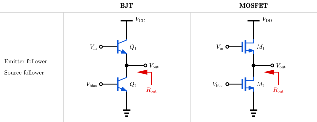
</div>
</div>
<p><strong>Razavi, Example 7.16</strong> (MOSFET)</p>
<p>An NMOS source follower <span class="math notranslate nohighlight">\(M_1\)</span> (drain at <span class="math notranslate nohighlight">\(V_{DD}\)</span>, gate at <span class="math notranslate nohighlight">\(v_{in}\)</span>) has its source output loaded by a second NMOS <span class="math notranslate nohighlight">\(M_2\)</span> whose gate is held at a fixed bias, so <span class="math notranslate nohighlight">\(M_2\)</span> is a current source to ground. Find the voltage gain.</p>
<p>Given: <span class="math notranslate nohighlight">\(g_{m1}\)</span>, <span class="math notranslate nohighlight">\(r_{O1}\)</span>, <span class="math notranslate nohighlight">\(r_{O2}\)</span> symbolic</p>
<ol class="arabic simple">
<li><p><strong>Follower with a load.</strong> A source follower loaded by <span class="math notranslate nohighlight">\(R_L\)</span> has <span class="math notranslate nohighlight">\(A_v=\dfrac{r_{O1}\parallel R_L}{\frac{1}{g_{m1}}+r_{O1}\parallel R_L}\)</span>.</p></li>
<li><p><strong>Current-source load.</strong> <span class="math notranslate nohighlight">\(M_2\)</span> presents <span class="math notranslate nohighlight">\(r_{O2}\)</span> from the output to ac ground, so <span class="math notranslate nohighlight">\(R_L=r_{O2}\)</span>.</p></li>
<li><p><strong>Gain.</strong> <span class="math notranslate nohighlight">\(A_v=\dfrac{r_{O1}\parallel r_{O2}}{\frac{1}{g_{m1}}+r_{O1}\parallel r_{O2}}\)</span>.</p></li>
<li><p><strong>Limit.</strong> If <span class="math notranslate nohighlight">\(r_{O1}\parallel r_{O2}\gg1/g_{m1}\)</span> then <span class="math notranslate nohighlight">\(A_v\approx1\)</span>.</p></li>
<li><p><strong>Numerical check.</strong> <span class="math notranslate nohighlight">\(g_{m1}=2\,\mathrm{mS}\)</span>, <span class="math notranslate nohighlight">\(r_{O1}=20\,\mathrm{k}\Omega\)</span>, <span class="math notranslate nohighlight">\(r_{O2}=30\,\mathrm{k}\Omega\)</span>: nodal analysis and the formula give <span class="math notranslate nohighlight">\(A_v=0.960\)</span>.</p></li>
</ol>
<p><strong>Result.</strong> <span class="math notranslate nohighlight">\(A_v=\dfrac{r_{O1}\parallel r_{O2}}{\frac{1}{g_{m1}}+r_{O1}\parallel r_{O2}}\approx1\)</span></p>
<p>Checked: agrees with the answer in the book.</p>
<p><strong>Sedra/Smith, Exercise 7.25</strong> (MOSFET)</p>
<p>An NMOS source follower <span class="math notranslate nohighlight">\(Q_1\)</span> is loaded by an NMOS current source <span class="math notranslate nohighlight">\(Q_3\)</span> (a mirror output). Both carry <span class="math notranslate nohighlight">\(I_D=0.2\,\mathrm{mA}\)</span> with <span class="math notranslate nohighlight">\(V_{OV}=0.2\,\mathrm{V}\)</span> and <span class="math notranslate nohighlight">\(V_A=5\,\mathrm{V}\)</span>; the body of <span class="math notranslate nohighlight">\(Q_1\)</span> is grounded (not tied to its source), with body-effect coefficient <span class="math notranslate nohighlight">\(\chi=g_{mb}/g_m=0.2\)</span>. There is no other load. Find the voltage gain <span class="math notranslate nohighlight">\(v_o/v_i\)</span> and the output resistance <span class="math notranslate nohighlight">\(R_{out}\)</span>.</p>
<p>Given: <span class="math notranslate nohighlight">\(I_D=0.2\,\mathrm{mA}\)</span>, <span class="math notranslate nohighlight">\(V_{OV}=0.2\,\mathrm{V}\)</span>, <span class="math notranslate nohighlight">\(V_A=5\,\mathrm{V}\)</span>, <span class="math notranslate nohighlight">\(\chi=0.2\)</span></p>
<ol class="arabic simple">
<li><p><strong>Transconductances.</strong> <span class="math notranslate nohighlight">\(g_m=\dfrac{2I_D}{V_{OV}}=\dfrac{2\times0.2}{0.2}=2\,\mathrm{mA/V}\)</span>, <span class="math notranslate nohighlight">\(g_{mb}=\chi g_m=0.4\,\mathrm{mA/V}\)</span>.</p></li>
<li><p><strong>Output resistances.</strong> <span class="math notranslate nohighlight">\(r_{o1}=r_{o3}=\dfrac{V_A}{I_D}=\dfrac{5}{0.2\,\mathrm{mA}}=25\,\mathrm{k\Omega}\)</span>.</p></li>
<li><p><strong>Effective load at the source.</strong> <span class="math notranslate nohighlight">\(R_L=r_{o1}\parallel r_{o3}\parallel\dfrac{1}{g_{mb}}=25\parallel25\parallel2.5=2.083\,\mathrm{k\Omega}\)</span> (the body transconductance acts like a resistor <span class="math notranslate nohighlight">\(1/g_{mb}\)</span> from the source).</p></li>
<li><p><strong>Gain.</strong> <span class="math notranslate nohighlight">\(\dfrac{v_o}{v_i}=\dfrac{R_L}{R_L+1/g_m}=\dfrac{2.083}{2.083+0.5}=0.806\,\mathrm{V/V}\approx0.81\)</span>.</p></li>
<li><p><strong>Output resistance.</strong> <span class="math notranslate nohighlight">\(R_{out}=\dfrac{1}{g_m}\parallel\dfrac{1}{g_{mb}}\parallel r_{o1}\parallel r_{o3}=0.5\parallel2.5\parallel25\parallel25=0.403\,\mathrm{k\Omega}=403\,\mathrm{\Omega}\)</span>.</p></li>
</ol>
<p><strong>Result.</strong> <span class="math notranslate nohighlight">\(v_o/v_i=0.806\)</span>, <span class="math notranslate nohighlight">\(R_{out}=403\,\mathrm{\Omega}\)</span></p>
<p>Checked: agrees with the answer in the solutions manual.</p>
</section>
<section id="id5">
<h3>Emitter follower / Source follower<a class="headerlink" href="#id5" title="Link to this heading">#</a></h3>
<div class="cell tag_hide-input docutils container">
<details class="admonition hide above-input">
<summary aria-label="Toggle hidden content">
<p class="collapsed admonition-title">Show code cell source</p>
<p class="expanded admonition-title">Hide code cell source</p>
</summary>
<div class="cell_input docutils container">
<div class="highlight-ipython3 notranslate"><div class="highlight"><pre><span></span><span class="c1"># HIDE/SHOW</span>
<span class="n">show</span><span class="p">(</span><span class="n">C</span><span class="o">.</span><span class="n">role_follower</span><span class="p">)</span>
</pre></div>
</div>
</div>
</details>
<div class="cell_output docutils container">
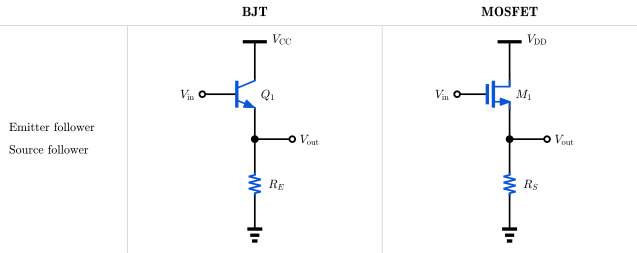
</div>
</div>
<p><strong>Razavi, Problem 5.65</strong> (BJT)</p>
<p>An emitter follower on <span class="math notranslate nohighlight">\(V_{CC}=2.5\,\mathrm{V}\)</span>: npn <span class="math notranslate nohighlight">\(Q_1\)</span> with collector on <span class="math notranslate nohighlight">\(V_{CC}\)</span>, input at the base, and <span class="math notranslate nohighlight">\(R_E=100\,\Omega\)</span> from the emitter (output) to ground. With <span class="math notranslate nohighlight">\(V_A=\infty\)</span>, find the bias current of <span class="math notranslate nohighlight">\(Q_1\)</span> that makes the voltage gain <span class="math notranslate nohighlight">\(0.8\)</span>.</p>
<p>Given: <span class="math notranslate nohighlight">\(R_E=100\,\Omega\)</span>, <span class="math notranslate nohighlight">\(A_v=0.8\)</span>, <span class="math notranslate nohighlight">\(V_A=\infty\)</span>, <span class="math notranslate nohighlight">\(V_{CC}=2.5\,\mathrm{V}\)</span></p>
<ol class="arabic simple">
<li><p><strong>Follower gain.</strong> <span class="math notranslate nohighlight">\(A_v=\dfrac{R_E}{R_E+1/g_m}\)</span> (for <span class="math notranslate nohighlight">\(\beta\gg1\)</span>).</p></li>
<li><p><strong>Solve for <span class="math notranslate nohighlight">\(1/g_m\)</span>.</strong> <span class="math notranslate nohighlight">\(0.8\left(R_E+\frac{1}{g_m}\right)=R_E\)</span>, so <span class="math notranslate nohighlight">\(\frac{1}{g_m}=\frac{R_E}{4}=25.0\,\Omega\)</span>.</p></li>
<li><p><strong>Bias current.</strong> <span class="math notranslate nohighlight">\(I_C=g_mV_T=\dfrac{26\,\mathrm{mV}}{25\,\Omega}=1.04\,\mathrm{mA}\)</span>.</p></li>
<li><p><strong>Check.</strong> <span class="math notranslate nohighlight">\(g_m=40.0\,\mathrm{mS}\)</span>: <span class="math notranslate nohighlight">\(A_v=\frac{100}{100+25}=0.800\)</span>; the output sits at <span class="math notranslate nohighlight">\(V_E\approx0.104\,\mathrm{V}\)</span>. With <span class="math notranslate nohighlight">\(\beta=100\)</span> the exact gain <span class="math notranslate nohighlight">\(\frac{(\beta+1)R_E}{r_\pi+(\beta+1)R_E}\)</span> calls for <span class="math notranslate nohighlight">\(1.03\,\mathrm{mA}\)</span>.</p></li>
</ol>
<p><strong>Result.</strong> <span class="math notranslate nohighlight">\(I_C=1.04\,\mathrm{mA}\)</span></p>
<p>Checked by computation; the book gives no answer.</p>
<p><strong>Sedra/Smith, Problem 6.53</strong> (BJT)</p>
<p>An npn transistor has its collector at signal ground (fixed supply), its base driven by <span class="math notranslate nohighlight">\(v_i\)</span> and a resistor <span class="math notranslate nohighlight">\(R_e\)</span> from emitter to ground; the output <span class="math notranslate nohighlight">\(v_o\)</span> is taken across <span class="math notranslate nohighlight">\(R_e\)</span>. Using the T model derive the input resistance <span class="math notranslate nohighlight">\(R_{in}=v_i/i_b\)</span> and the gain <span class="math notranslate nohighlight">\(v_o/v_i\)</span>.</p>
<p>Given: <span class="math notranslate nohighlight">\(\alpha=\beta/(\beta+1)\)</span>, <span class="math notranslate nohighlight">\(r_e\)</span>, <span class="math notranslate nohighlight">\(R_e\)</span></p>
<ol class="arabic simple">
<li><p><strong>Emitter current.</strong> In the T model <span class="math notranslate nohighlight">\(r_e\)</span> and <span class="math notranslate nohighlight">\(R_e\)</span> carry <span class="math notranslate nohighlight">\(i_e\)</span>: <span class="math notranslate nohighlight">\(i_e=\dfrac{v_i}{r_e+R_e}\)</span>.</p></li>
<li><p><strong>Base current.</strong> <span class="math notranslate nohighlight">\(i_b=i_e-\alpha i_e=(1-\alpha)i_e\)</span>.</p></li>
<li><p><strong>Input resistance.</strong> <span class="math notranslate nohighlight">\(R_{in}=\dfrac{v_i}{i_b}=\dfrac{r_e+R_e}{1-\alpha}\)</span>. Since <span class="math notranslate nohighlight">\(1-\alpha=\dfrac{1}{\beta+1}\)</span>: <span class="math notranslate nohighlight">\(R_{in}=(\beta+1)(r_e+R_e)\)</span>.</p></li>
<li><p><strong>Gain.</strong> <span class="math notranslate nohighlight">\(v_o=i_eR_e\)</span>, so <span class="math notranslate nohighlight">\(\dfrac{v_o}{v_i}=\dfrac{R_e}{R_e+r_e}\)</span> (a divider of <span class="math notranslate nohighlight">\(r_e\)</span> and <span class="math notranslate nohighlight">\(R_e\)</span>).</p></li>
</ol>
<p><strong>Result.</strong> <span class="math notranslate nohighlight">\(R_{in}=(\beta+1)(r_e+R_e)\)</span>, <span class="math notranslate nohighlight">\(\dfrac{v_o}{v_i}=\dfrac{R_e}{R_e+r_e}\)</span></p>
<p>Checked by computation; the solutions manual gives no answer.</p>
</section>
<section id="id6">
<h3>Other Circuits<a class="headerlink" href="#id6" title="Link to this heading">#</a></h3>
<p><strong>Razavi, Example 5.43</strong> (BJT)</p>
<p>An emitter follower has its collector at <span class="math notranslate nohighlight">\(V_{CC}\)</span> and its emitter loaded by an ideal constant current source to ground instead of a resistor (typical of integrated circuits). With <span class="math notranslate nohighlight">\(V_A=\infty\)</span>, find the small-signal voltage gain.</p>
<p>Given: <span class="math notranslate nohighlight">\(V_A=\infty\)</span>, ideal current source in the emitter (infinite small-signal resistance)</p>
<ol class="arabic simple">
<li><p><strong>Gain of a follower with emitter resistor.</strong> Write <span class="math notranslate nohighlight">\(v_{in}=v_\pi+v_{out}\)</span> and <span class="math notranslate nohighlight">\(v_{out}=(v_\pi/r_\pi+g_mv_\pi)R_E=(\beta+1)\dfrac{v_\pi}{r_\pi}R_E\)</span>. Eliminating <span class="math notranslate nohighlight">\(v_\pi\)</span>: <span class="math notranslate nohighlight">\(\dfrac{v_{out}}{v_{in}}=\dfrac{R_E}{R_E+\dfrac{r_\pi}{\beta+1}}\approx\dfrac{R_E}{R_E+\dfrac{1}{g_m}}\)</span>.</p></li>
<li><p><strong>Replace <span class="math notranslate nohighlight">\(R_E\)</span> by the current source.</strong> An ideal current source is an open circuit for small signals, so <span class="math notranslate nohighlight">\(R_E\to\infty\)</span> and <span class="math notranslate nohighlight">\(\dfrac{v_{out}}{v_{in}}=1\)</span>.</p></li>
<li><p><strong>Intuitive check.</strong> A constant emitter current fixes <span class="math notranslate nohighlight">\(V_{BE}=V_T\ln(I_C/I_S)\)</span>. Then <span class="math notranslate nohighlight">\(V_{out}=V_{in}-V_{BE}\)</span> with a constant <span class="math notranslate nohighlight">\(V_{BE}\)</span>, so <span class="math notranslate nohighlight">\(V_{out}\)</span> follows <span class="math notranslate nohighlight">\(V_{in}\)</span> exactly.</p></li>
</ol>
<p><strong>Result.</strong> <span class="math notranslate nohighlight">\(A_v=1\)</span></p>
<p>Checked: agrees with the answer in the book.</p>
<p><strong>Razavi, Example 5.44</strong> (BJT)</p>
<p>An emitter follower is driven by a voltage source <span class="math notranslate nohighlight">\(v_{in}\)</span> with a series resistance <span class="math notranslate nohighlight">\(R_S\)</span> at the base; its collector is at <span class="math notranslate nohighlight">\(V_{CC}\)</span> and its emitter has a resistor <span class="math notranslate nohighlight">\(R_E\)</span> to ground. Find the small-signal voltage gain with <span class="math notranslate nohighlight">\(V_A=\infty\)</span>.</p>
<p>Given: symbolic: <span class="math notranslate nohighlight">\(R_S\)</span>, <span class="math notranslate nohighlight">\(R_E\)</span>, <span class="math notranslate nohighlight">\(g_m\)</span>, <span class="math notranslate nohighlight">\(\beta\)</span>; <span class="math notranslate nohighlight">\(V_A=\infty\)</span></p>
<ol class="arabic simple">
<li><p><strong>Thevenin equivalent seen at the emitter.</strong> With the output open, the base current is zero, so there is no drop across <span class="math notranslate nohighlight">\(R_S\)</span> and the open-circuit voltage is <span class="math notranslate nohighlight">\(v_{Thev}=v_{in}\)</span>.</p></li>
<li><p><strong>Thevenin resistance.</strong> Set <span class="math notranslate nohighlight">\(v_{in}=0\)</span>: looking into the emitter through the base resistance <span class="math notranslate nohighlight">\(R_S\)</span> gives <span class="math notranslate nohighlight">\(R_{Thev}=\dfrac{R_S}{\beta+1}+\dfrac{1}{g_m}\)</span>.</p></li>
<li><p><strong>Voltage divider.</strong> The emitter node is <span class="math notranslate nohighlight">\(v_{in}\)</span> behind <span class="math notranslate nohighlight">\(R_{Thev}\)</span> and loaded by <span class="math notranslate nohighlight">\(R_E\)</span>: <span class="math notranslate nohighlight">\(\dfrac{v_{out}}{v_{in}}=\dfrac{R_E}{R_E+\dfrac{R_S}{\beta+1}+\dfrac{1}{g_m}}\)</span>.</p></li>
<li><p><strong>Cross-check by direct analysis.</strong> <span class="math notranslate nohighlight">\(v_{in}=i_BR_S+i_Br_\pi+(\beta+1)i_BR_E\)</span> and <span class="math notranslate nohighlight">\(v_{out}=(\beta+1)i_BR_E\)</span> give <span class="math notranslate nohighlight">\(\dfrac{v_{out}}{v_{in}}=\dfrac{R_E}{R_E+(R_S+r_\pi)/(\beta+1)}\)</span>, identical to the above when <span class="math notranslate nohighlight">\(r_\pi/(\beta+1)\approx1/g_m\)</span>.</p></li>
</ol>
<p><strong>Result.</strong> <span class="math notranslate nohighlight">\(A_v=\dfrac{R_E}{R_E+\dfrac{R_S}{\beta+1}+\dfrac{1}{g_m}}\)</span></p>
<p>Checked: agrees with the answer in the book.</p>
<p><strong>Razavi, Example 5.46</strong> (BJT)</p>
<p>An emitter follower has its collector at ac ground and an ideal current source in the emitter (infinite small-signal resistance), but the transistor has a finite output resistance <span class="math notranslate nohighlight">\(r_O\)</span> and the input source has a finite resistance <span class="math notranslate nohighlight">\(R_S\)</span> in series with the base. Find the voltage gain, the input resistance and the output resistance.</p>
<p>Given: symbolic: <span class="math notranslate nohighlight">\(R_S\)</span>, <span class="math notranslate nohighlight">\(g_m\)</span>, <span class="math notranslate nohighlight">\(r_\pi\)</span>, <span class="math notranslate nohighlight">\(\beta\)</span>, <span class="math notranslate nohighlight">\(r_O\)</span> (current source ideal)</p>
<ol class="arabic simple">
<li><p><strong>Where <span class="math notranslate nohighlight">\(r_O\)</span> acts.</strong> With the collector at ac ground, <span class="math notranslate nohighlight">\(r_O\)</span> lies from the emitter to ground, in parallel with the emitter load <span class="math notranslate nohighlight">\(R_E\)</span>. Here <span class="math notranslate nohighlight">\(R_E=\infty\)</span> (ideal current source), so the emitter load is just <span class="math notranslate nohighlight">\(r_O\)</span>.</p></li>
<li><p><strong>Voltage gain.</strong> Take the follower result with <span class="math notranslate nohighlight">\(R_E\to R_E\parallel r_O=r_O\)</span>: <span class="math notranslate nohighlight">\(A_v=\dfrac{r_O}{r_O+\dfrac{R_S}{\beta+1}+\dfrac{1}{g_m}}\)</span>.</p></li>
<li><p><strong>Input resistance.</strong> <span class="math notranslate nohighlight">\(R_{in}=r_\pi+(\beta+1)(R_E\parallel r_O)=r_\pi+(\beta+1)\,r_O\)</span>.</p></li>
<li><p><strong>Output resistance.</strong> Looking into the emitter, the source side shows <span class="math notranslate nohighlight">\(\dfrac{R_S}{\beta+1}+\dfrac{1}{g_m}\)</span> in parallel with <span class="math notranslate nohighlight">\(r_O\)</span>: <span class="math notranslate nohighlight">\(R_{out}=\left(\dfrac{R_S}{\beta+1}+\dfrac{1}{g_m}\right)\parallel r_O\)</span>.</p></li>
<li><p><strong>Simplify with <span class="math notranslate nohighlight">\(g_mr_O\gg1\)</span>.</strong> <span class="math notranslate nohighlight">\(r_\pi=\beta/g_m\ll(\beta+1)r_O\)</span>, so <span class="math notranslate nohighlight">\(R_{in}\approx(\beta+1)\,r_O\)</span>. Also <span class="math notranslate nohighlight">\(1/g_m\ll r_O\)</span> and normally <span class="math notranslate nohighlight">\(R_S/(\beta+1)\ll r_O\)</span>, so <span class="math notranslate nohighlight">\(R_{out}\approx\dfrac{R_S}{\beta+1}+\dfrac{1}{g_m}\)</span>.</p></li>
<li><p><strong>Gain approaches 1.</strong> <span class="math notranslate nohighlight">\(A_v\to1\)</span> when <span class="math notranslate nohighlight">\(R_S\ll(\beta+1)\,r_O\)</span>, a condition normally met.</p></li>
</ol>
<p><strong>Result.</strong> <span class="math notranslate nohighlight">\(A_v=\dfrac{r_O}{r_O+\frac{R_S}{\beta+1}+\frac{1}{g_m}}\approx1\)</span>, <span class="math notranslate nohighlight">\(R_{in}=r_\pi+(\beta+1)r_O\approx(\beta+1)r_O\)</span>, <span class="math notranslate nohighlight">\(R_{out}=\left(\dfrac{R_S}{\beta+1}+\dfrac{1}{g_m}\right)\parallel r_O\)</span></p>
<p>Checked: agrees with the answer in the book.</p>
<p><strong>Razavi, Example 5.53</strong> (BJT)</p>
<p>An emitter follower with finite <span class="math notranslate nohighlight">\(r_O\)</span>: the source <span class="math notranslate nohighlight">\(v_{in}\)</span> with resistance <span class="math notranslate nohighlight">\(R_S\)</span> drives the base; a resistor <span class="math notranslate nohighlight">\(R_1\)</span> connects the base to a node <span class="math notranslate nohighlight">\(X\)</span>, a resistor <span class="math notranslate nohighlight">\(R_2\)</span> connects <span class="math notranslate nohighlight">\(X\)</span> to the emitter, and <span class="math notranslate nohighlight">\(X\)</span> is tied to ground by a very large capacitor <span class="math notranslate nohighlight">\(C_2\)</span>. The collector is at <span class="math notranslate nohighlight">\(V_{CC}\)</span>, the emitter (output) has <span class="math notranslate nohighlight">\(R_E\)</span> to ground. Find the voltage gain and the output impedance.</p>
<p>Given: symbolic: <span class="math notranslate nohighlight">\(R_S\)</span>, <span class="math notranslate nohighlight">\(R_1\)</span>, <span class="math notranslate nohighlight">\(R_2\)</span>, <span class="math notranslate nohighlight">\(R_E\)</span>, <span class="math notranslate nohighlight">\(g_m\)</span>, <span class="math notranslate nohighlight">\(\beta\)</span>, <span class="math notranslate nohighlight">\(r_O\)</span></p>
<ol class="arabic simple">
<li><p><strong>AC simplification.</strong> <span class="math notranslate nohighlight">\(X\)</span> is at ac ground, so <span class="math notranslate nohighlight">\(R_1\)</span> goes from the base to ground and <span class="math notranslate nohighlight">\(R_2\)</span> from the emitter to ground. <span class="math notranslate nohighlight">\(r_O\)</span> (collector at ac ground) is also from the emitter to ground, so the emitter load is <span class="math notranslate nohighlight">\(R_E\parallel R_2\parallel r_O\)</span>.</p></li>
<li><p><strong>Thevenin source at the base.</strong> <span class="math notranslate nohighlight">\(v_{Thev}=\dfrac{R_1}{R_1+R_S}v_{in}\)</span>, <span class="math notranslate nohighlight">\(R_{Thev}=R_S\parallel R_1\)</span>.</p></li>
<li><p><strong>Follower gain.</strong> Use the follower result with the load <span class="math notranslate nohighlight">\(R_L=R_E\parallel R_2\parallel r_O\)</span>: <span class="math notranslate nohighlight">\(\dfrac{v_{out}}{v_{Thev}}=\dfrac{R_L}{R_L+\dfrac{1}{g_m}+\dfrac{R_{Thev}}{\beta+1}}\)</span>.</p></li>
<li><p><strong>Include the input divider.</strong> <span class="math notranslate nohighlight">\(\dfrac{v_{out}}{v_{in}}=\dfrac{R_E\parallel R_2\parallel r_O}{R_E\parallel R_2\parallel r_O+\dfrac{1}{g_m}+\dfrac{R_S\parallel R_1}{\beta+1}}\cdot\dfrac{R_1}{R_1+R_S}\)</span>.</p></li>
<li><p><strong>Output impedance.</strong> Looking into the emitter: the source side gives <span class="math notranslate nohighlight">\(\dfrac{R_{Thev}}{\beta+1}+\dfrac{1}{g_m}\)</span>, in parallel with the load resistors: <span class="math notranslate nohighlight">\(R_{out}=\left(\dfrac{R_S\parallel R_1}{\beta+1}+\dfrac{1}{g_m}\right)\parallel R_E\parallel R_2\parallel r_O\)</span>.</p></li>
</ol>
<p><strong>Result.</strong> <span class="math notranslate nohighlight">\(A_v=\dfrac{R_E\parallel R_2\parallel r_O}{R_E\parallel R_2\parallel r_O+\frac{1}{g_m}+\frac{R_S\parallel R_1}{\beta+1}}\cdot\dfrac{R_1}{R_1+R_S}\)</span>; <span class="math notranslate nohighlight">\(R_{out}=\left(\dfrac{R_S\parallel R_1}{\beta+1}+\dfrac{1}{g_m}\right)\parallel R_E\parallel R_2\parallel r_O\)</span></p>
<p>Checked: agrees with the answer in the book.</p>
<p><strong>Razavi, Problem 5.67</strong> (BJT)</p>
<p>A microphone with output impedance <span class="math notranslate nohighlight">\(R_S=200\,\Omega\)</span> drives an emitter follower on <span class="math notranslate nohighlight">\(V_{CC}=2.5\,\mathrm{V}\)</span>: npn <span class="math notranslate nohighlight">\(Q_1\)</span> with collector on <span class="math notranslate nohighlight">\(V_{CC}\)</span>, <span class="math notranslate nohighlight">\(R_S\)</span> in series with the base, and an ideal current source <span class="math notranslate nohighlight">\(I_1\)</span> from the emitter (output) to ground. With <span class="math notranslate nohighlight">\(\beta=100\)</span> and <span class="math notranslate nohighlight">\(V_A=\infty\)</span>, find the bias current so that the output impedance is at most <span class="math notranslate nohighlight">\(5\,\Omega\)</span>.</p>
<p>Given: <span class="math notranslate nohighlight">\(R_S=200\,\Omega\)</span>, <span class="math notranslate nohighlight">\(R_{out}\leq5\,\Omega\)</span>, <span class="math notranslate nohighlight">\(\beta=100\)</span>, <span class="math notranslate nohighlight">\(V_A=\infty\)</span></p>
<ol class="arabic simple">
<li><p><strong>Output impedance.</strong> Looking into the emitter, with the ideal current source open: <span class="math notranslate nohighlight">\(R_{out}=\dfrac{R_S+r_\pi}{\beta+1}\approx\dfrac{R_S}{\beta+1}+\dfrac{1}{g_m}\)</span>.</p></li>
<li><p><strong>Required <span class="math notranslate nohighlight">\(r_\pi\)</span>.</strong> <span class="math notranslate nohighlight">\(\dfrac{200\,\Omega+r_\pi}{101}\leq5\,\Omega\)</span> gives <span class="math notranslate nohighlight">\(r_\pi\leq305\,\Omega\)</span>.</p></li>
<li><p><strong>Bias current.</strong> <span class="math notranslate nohighlight">\(I_C=\dfrac{\beta V_T}{r_\pi}\geq\dfrac{100\cdot26\,\mathrm{mV}}{305\,\Omega}=8.52\,\mathrm{mA}\)</span>.</p></li>
<li><p><strong>Check.</strong> <span class="math notranslate nohighlight">\(I_C=8.52\,\mathrm{mA}\)</span>: <span class="math notranslate nohighlight">\(\frac{1}{g_m}=3.05\,\Omega\)</span>, <span class="math notranslate nohighlight">\(\frac{R_S}{\beta+1}=1.98\,\Omega\)</span>, total <span class="math notranslate nohighlight">\(5.00\,\Omega\)</span>. (The approximate form <span class="math notranslate nohighlight">\(\frac{R_S}{\beta+1}+\frac{1}{g_m}\)</span> gives <span class="math notranslate nohighlight">\(8.61\,\mathrm{mA}\)</span>.)</p></li>
</ol>
<p><strong>Result.</strong> <span class="math notranslate nohighlight">\(I_C\geq8.52\,\mathrm{mA}\)</span> (so <span class="math notranslate nohighlight">\(I_1\approx8.6\,\mathrm{mA}\)</span>)</p>
<p>Checked by computation; the book gives no answer.</p>
<p><strong>Razavi, Problem 5.68</strong> (BJT)</p>
<p>Five emitter followers, each with npn <span class="math notranslate nohighlight">\(Q_1\)</span> (collector on <span class="math notranslate nohighlight">\(V_{CC}\)</span>, input at the base) whose emitter is loaded by a second transistor <span class="math notranslate nohighlight">\(Q_2\)</span>, <span class="math notranslate nohighlight">\(V_A=\infty\)</span>: (a) npn <span class="math notranslate nohighlight">\(Q_2\)</span> with collector on the emitter of <span class="math notranslate nohighlight">\(Q_1\)</span> (output), base on <span class="math notranslate nohighlight">\(V_b\)</span>, emitter grounded; (b) npn <span class="math notranslate nohighlight">\(Q_2\)</span> diode-connected (base and collector on the output), emitter grounded; (c) pnp <span class="math notranslate nohighlight">\(Q_2\)</span> with emitter on the output, base to ground through <span class="math notranslate nohighlight">\(R_S\)</span>, collector grounded; (d) output at the emitter of <span class="math notranslate nohighlight">\(Q_1\)</span>, which goes through <span class="math notranslate nohighlight">\(R_E\)</span> to the emitter of a pnp <span class="math notranslate nohighlight">\(Q_2\)</span> whose base and collector are grounded; (e) the circuit of (d) with the output at the emitter of <span class="math notranslate nohighlight">\(Q_2\)</span>. Find the voltage gain and the input and output impedances.</p>
<p>Given: <span class="math notranslate nohighlight">\(V_A=\infty\)</span>; <span class="math notranslate nohighlight">\(R_E\)</span>, <span class="math notranslate nohighlight">\(R_S\)</span>; <span class="math notranslate nohighlight">\(g_{mj}\)</span>, <span class="math notranslate nohighlight">\(r_{\pi j}\)</span>, <span class="math notranslate nohighlight">\(\beta\)</span></p>
<ol class="arabic simple">
<li><p><strong>Follower formulas.</strong> With <span class="math notranslate nohighlight">\(Z_L\)</span> from the emitter of <span class="math notranslate nohighlight">\(Q_1\)</span> to ac ground: <span class="math notranslate nohighlight">\(A_v=\dfrac{Z_L}{Z_L+\frac{1}{g_{m1}}}\)</span>, <span class="math notranslate nohighlight">\(R_{in}=r_{\pi1}+(\beta+1)Z_L\)</span>, <span class="math notranslate nohighlight">\(R_{out}=\dfrac{r_{\pi1}}{\beta+1}\parallel Z_L\approx\dfrac{1}{g_{m1}}\parallel Z_L\)</span>.</p></li>
<li><p><strong>(a).</strong> <span class="math notranslate nohighlight">\(Q_2\)</span> is an ideal current source (<span class="math notranslate nohighlight">\(V_A=\infty\)</span>): <span class="math notranslate nohighlight">\(Z_L=\infty\)</span>, so <span class="math notranslate nohighlight">\(A_v=1\)</span>, <span class="math notranslate nohighlight">\(R_{in}=\infty\)</span>, <span class="math notranslate nohighlight">\(R_{out}=\frac{1}{g_{m1}}\)</span>.</p></li>
<li><p><strong>(b).</strong> <span class="math notranslate nohighlight">\(Z_L=\frac{1}{g_{m2}}\)</span> with <span class="math notranslate nohighlight">\(g_{m2}=g_{m1}\)</span> (same current): <span class="math notranslate nohighlight">\(A_v\approx\frac{1}{2}\)</span>, <span class="math notranslate nohighlight">\(R_{in}=r_{\pi1}+\frac{\beta+1}{g_{m2}}\approx2r_\pi\)</span>, <span class="math notranslate nohighlight">\(R_{out}\approx\frac{1}{2g_m}\)</span>.</p></li>
<li><p><strong>(c).</strong> Looking into the emitter of the pnp: <span class="math notranslate nohighlight">\(Z_L=\dfrac{R_S+r_{\pi2}}{\beta+1}\approx\dfrac{1}{g_{m2}}+\dfrac{R_S}{\beta}\)</span>; <span class="math notranslate nohighlight">\(A_v=\dfrac{Z_L}{Z_L+1/g_{m1}}\)</span>, <span class="math notranslate nohighlight">\(R_{in}=r_{\pi1}+R_S+r_{\pi2}\)</span>, <span class="math notranslate nohighlight">\(R_{out}=\frac{1}{g_{m1}}\parallel Z_L\)</span>.</p></li>
<li><p><strong>(d).</strong> <span class="math notranslate nohighlight">\(Z_L=R_E+\frac{1}{g_{m2}}\)</span> (diode-connected pnp): <span class="math notranslate nohighlight">\(A_v=\dfrac{R_E+1/g_{m2}}{R_E+1/g_{m2}+1/g_{m1}}\)</span>, <span class="math notranslate nohighlight">\(R_{in}=r_{\pi1}+(\beta+1)\left(R_E+\frac{1}{g_{m2}}\right)\)</span>, <span class="math notranslate nohighlight">\(R_{out}=\frac{1}{g_{m1}}\parallel\left(R_E+\frac{1}{g_{m2}}\right)\)</span>.</p></li>
<li><p><strong>(e) Gain and input.</strong> Same current path as (d), with <span class="math notranslate nohighlight">\(R_E\)</span> and the diode forming a divider: <span class="math notranslate nohighlight">\(A_v=\dfrac{1/g_{m2}}{R_E+1/g_{m2}+1/g_{m1}}\)</span>; <span class="math notranslate nohighlight">\(R_{in}\)</span> as in (d).</p></li>
<li><p><strong>(e) Output impedance.</strong> At the emitter of <span class="math notranslate nohighlight">\(Q_2\)</span>: <span class="math notranslate nohighlight">\(R_{out}=\frac{1}{g_{m2}}\parallel\left(R_E+\frac{1}{g_{m1}}\right)\)</span>.</p></li>
<li><p><strong>Numerical check.</strong> With <span class="math notranslate nohighlight">\(1\,\mathrm{mA}\)</span> in each device, <span class="math notranslate nohighlight">\(\beta=100\)</span>, <span class="math notranslate nohighlight">\(R_E=200\,\Omega\)</span>, <span class="math notranslate nohighlight">\(R_S=1\,\mathrm{k}\Omega\)</span>: (b) <span class="math notranslate nohighlight">\(A_v=0.500\)</span>, <span class="math notranslate nohighlight">\(R_{in}=5.20\,\mathrm{k}\Omega\)</span>, <span class="math notranslate nohighlight">\(R_{out}=12.9\,\Omega\)</span>; (c) <span class="math notranslate nohighlight">\(0.581\)</span>, <span class="math notranslate nohighlight">\(6.20\,\mathrm{k}\Omega\)</span>, <span class="math notranslate nohighlight">\(14.9\,\Omega\)</span>; (d) <span class="math notranslate nohighlight">\(0.898\)</span>, <span class="math notranslate nohighlight">\(25.4\,\mathrm{k}\Omega\)</span>, <span class="math notranslate nohighlight">\(23.1\,\Omega\)</span>; (e) <span class="math notranslate nohighlight">\(0.102\)</span>, <span class="math notranslate nohighlight">\(25.4\,\mathrm{k}\Omega\)</span>, <span class="math notranslate nohighlight">\(23.1\,\Omega\)</span>; all equal to a nodal solution with the exact (<span class="math notranslate nohighlight">\(r_\pi\)</span>) forms.</p></li>
</ol>
<p><strong>Result.</strong> (a) <span class="math notranslate nohighlight">\(A_v=1\)</span>, <span class="math notranslate nohighlight">\(R_{in}=\infty\)</span>, <span class="math notranslate nohighlight">\(R_{out}=1/g_{m1}\)</span>; (b) <span class="math notranslate nohighlight">\(A_v\approx\frac12\)</span>, <span class="math notranslate nohighlight">\(R_{in}\approx2r_\pi\)</span>, <span class="math notranslate nohighlight">\(R_{out}\approx\frac{1}{2g_m}\)</span>; (c) <span class="math notranslate nohighlight">\(Z_L=\frac{R_S+r_{\pi2}}{\beta+1}\)</span>; (d) <span class="math notranslate nohighlight">\(Z_L=R_E+\frac{1}{g_{m2}}\)</span>; in (b)-(d) <span class="math notranslate nohighlight">\(A_v=\frac{Z_L}{Z_L+1/g_{m1}}\)</span>, <span class="math notranslate nohighlight">\(R_{in}=r_{\pi1}+(\beta+1)Z_L\)</span>, <span class="math notranslate nohighlight">\(R_{out}=\frac{1}{g_{m1}}\parallel Z_L\)</span>; (e) <span class="math notranslate nohighlight">\(A_v=\frac{1/g_{m2}}{R_E+1/g_{m2}+1/g_{m1}}\)</span>, <span class="math notranslate nohighlight">\(R_{out}=\frac{1}{g_{m2}}\parallel(R_E+\frac{1}{g_{m1}})\)</span></p>
<p>Checked by computation; the book gives no answer. Note: Read from Fig. 5.155: in (c), (d), (e) Q2 is a pnp whose emitter faces Q1 (arrow into the emitter); in (d), (e) its base and collector are grounded (diode). Steps use 1/gm for r_pi/(beta+1); the check code uses the exact forms. Device currents are not given: 1 mA in each for the check.</p>
<p><strong>Razavi, Problem 5.70</strong> (BJT)</p>
<p>Emitter follower whose bias current comes from a transistor current source: npn <span class="math notranslate nohighlight">\(Q_1\)</span> has its collector at <span class="math notranslate nohighlight">\(V_{CC}\)</span>, the input <span class="math notranslate nohighlight">\(v_{in}\)</span> at its base and the output at its emitter. The emitter feeds the collector of npn <span class="math notranslate nohighlight">\(Q_2\)</span>, whose base sits at a fixed voltage <span class="math notranslate nohighlight">\(V_b\)</span> and whose emitter returns to ground through <span class="math notranslate nohighlight">\(R_E\)</span>. Both transistors have a finite Early voltage. (a) Find the resistance <span class="math notranslate nohighlight">\(R_{CS}\)</span> seen looking down into the collector of <span class="math notranslate nohighlight">\(Q_2\)</span>. (b) Replace <span class="math notranslate nohighlight">\(Q_2\)</span> and <span class="math notranslate nohighlight">\(R_E\)</span> by <span class="math notranslate nohighlight">\(R_{CS}\)</span> and find the voltage gain and the input and output impedances of the follower.</p>
<p>Given: <span class="math notranslate nohighlight">\(Q_1\)</span>: <span class="math notranslate nohighlight">\(g_{m1}\)</span>, <span class="math notranslate nohighlight">\(r_{\pi1}\)</span>, <span class="math notranslate nohighlight">\(r_{O1}\)</span>; <span class="math notranslate nohighlight">\(Q_2\)</span>: <span class="math notranslate nohighlight">\(g_{m2}\)</span>, <span class="math notranslate nohighlight">\(r_{\pi2}\)</span>, <span class="math notranslate nohighlight">\(r_{O2}\)</span>; <span class="math notranslate nohighlight">\(R_E\)</span>; <span class="math notranslate nohighlight">\(V_A&lt;\infty\)</span></p>
<ol class="arabic simple">
<li><p><strong>(a) Degenerated current source.</strong> <span class="math notranslate nohighlight">\(Q_2\)</span> has its base at ac ground and <span class="math notranslate nohighlight">\(R_E\parallel r_{\pi2}\)</span> in its emitter, so its collector resistance is that of a degenerated transistor.</p></li>
<li><p><strong>(a) Output impedance of the source.</strong> <span class="math notranslate nohighlight">\(R_{CS}=\left[1+g_{m2}(R_E\parallel r_{\pi2})\right]r_{O2}+R_E\parallel r_{\pi2}\)</span></p></li>
<li><p><strong>(b) Load of the follower.</strong> At ac the emitter of <span class="math notranslate nohighlight">\(Q_1\)</span> sees <span class="math notranslate nohighlight">\(r_{O1}\)</span> (its collector is at ac ground) in parallel with <span class="math notranslate nohighlight">\(R_{CS}\)</span>: <span class="math notranslate nohighlight">\(R_L^{\prime}=r_{O1}\parallel R_{CS}\)</span>.</p></li>
<li><p><strong>(b) KCL at the emitter.</strong> <span class="math notranslate nohighlight">\((v_{in}-v_{out})(1/r_{\pi1}+g_{m1})=v_{out}/R_L^{\prime}\)</span>, with <span class="math notranslate nohighlight">\(g_{m1}+1/r_{\pi1}=(\beta+1)/r_{\pi1}\)</span>.</p></li>
<li><p><strong>(b) Voltage gain.</strong> <span class="math notranslate nohighlight">\(\dfrac{v_{out}}{v_{in}}=\dfrac{r_{O1}\parallel R_{CS}}{r_{O1}\parallel R_{CS}+r_{\pi1}/(\beta+1)}\approx\dfrac{r_{O1}\parallel R_{CS}}{r_{O1}\parallel R_{CS}+1/g_{m1}}\)</span></p></li>
<li><p><strong>(b) Input impedance.</strong> <span class="math notranslate nohighlight">\(R_{in}=r_{\pi1}+(\beta+1)(r_{O1}\parallel R_{CS})\)</span></p></li>
<li><p><strong>(b) Output impedance.</strong> With <span class="math notranslate nohighlight">\(v_{in}=0\)</span>: <span class="math notranslate nohighlight">\(R_{out}=\dfrac{r_{\pi1}}{\beta+1}\parallel r_{O1}\parallel R_{CS}\approx\dfrac{1}{g_{m1}}\parallel r_{O1}\parallel R_{CS}\)</span></p></li>
<li><p><strong>Numerical check.</strong> With <span class="math notranslate nohighlight">\(I_C=1\,\mathrm{mA}\)</span> in both, <span class="math notranslate nohighlight">\(\beta=100\)</span>, <span class="math notranslate nohighlight">\(V_A=5\,\mathrm{V}\)</span>, <span class="math notranslate nohighlight">\(R_E=500\,\Omega\)</span>: <span class="math notranslate nohighlight">\(R_{CS}=86.1\,\mathrm{k}\Omega\)</span>, <span class="math notranslate nohighlight">\(A_v=0.995\)</span>, <span class="math notranslate nohighlight">\(R_{in}=480\,\mathrm{k}\Omega\)</span>, <span class="math notranslate nohighlight">\(R_{out}=25.6\,\Omega\)</span>, the same as a nodal analysis of the full two-transistor circuit.</p></li>
</ol>
<p><strong>Result.</strong> <span class="math notranslate nohighlight">\(R_{CS}=[1+g_{m2}(R_E\parallel r_{\pi2})]r_{O2}+R_E\parallel r_{\pi2}\)</span>; <span class="math notranslate nohighlight">\(A_v=\dfrac{r_{O1}\parallel R_{CS}}{r_{O1}\parallel R_{CS}+r_{\pi1}/(\beta+1)}\)</span>; <span class="math notranslate nohighlight">\(R_{in}=r_{\pi1}+(\beta+1)(r_{O1}\parallel R_{CS})\)</span>; <span class="math notranslate nohighlight">\(R_{out}=\dfrac{r_{\pi1}}{\beta+1}\parallel r_{O1}\parallel R_{CS}\)</span></p>
<p>Checked by computation; the book gives no answer.</p>
<p><strong>Razavi, Problem 7.36</strong> (MOSFET)</p>
<p>An NMOS <span class="math notranslate nohighlight">\(M_1\)</span> has its gate held at a dc bias <span class="math notranslate nohighlight">\(V_B\)</span>, its drain driven by the input <span class="math notranslate nohighlight">\(V_{in}\)</span>, and its source connected to ground through <span class="math notranslate nohighlight">\(R_S\)</span>; the output is taken at the source. With <span class="math notranslate nohighlight">\(\lambda\neq0\)</span> (body effect neglected), find the voltage gain and discuss the result.</p>
<p>Given: <span class="math notranslate nohighlight">\(g_m\)</span>, <span class="math notranslate nohighlight">\(r_O\)</span>, <span class="math notranslate nohighlight">\(R_S\)</span>; gate at ac ground</p>
<ol class="arabic simple">
<li><p><strong>Small-signal model.</strong> Gate grounded: <span class="math notranslate nohighlight">\(v_{gs}=-v_{out}\)</span>; drain at <span class="math notranslate nohighlight">\(v_{in}\)</span>, source at <span class="math notranslate nohighlight">\(v_{out}\)</span></p></li>
<li><p><strong>KCL at the source.</strong> <span class="math notranslate nohighlight">\(\dfrac{v_{out}}{R_S}=g_m(-v_{out})+\dfrac{v_{in}-v_{out}}{r_O}\)</span></p></li>
<li><p><strong>Gain.</strong> <span class="math notranslate nohighlight">\(A_v=\dfrac{v_{out}}{v_{in}}=\dfrac{R_S}{r_O+(1+g_mr_O)R_S}\)</span></p></li>
<li><p><strong>Size.</strong> Since <span class="math notranslate nohighlight">\((1+g_mr_O)R_S&gt;g_mr_OR_S\)</span>, <span class="math notranslate nohighlight">\(A_v&lt;\dfrac{1}{g_mr_O}\ll1\)</span>; the input reaches the output only through <span class="math notranslate nohighlight">\(r_O\)</span>, and <span class="math notranslate nohighlight">\(M_1\)</span> opposes any change of its source (it behaves as a common-gate device seen from the source)</p></li>
<li><p><strong>Numerical check.</strong> <span class="math notranslate nohighlight">\(g_m=2\,\mathrm{mS}\)</span>, <span class="math notranslate nohighlight">\(r_O=20\,\mathrm{k}\Omega\)</span>, <span class="math notranslate nohighlight">\(R_S=1\,\mathrm{k}\Omega\)</span>: <span class="math notranslate nohighlight">\(A_v=0.0164\)</span> by nodal analysis and by the formula, below <span class="math notranslate nohighlight">\(1/(g_mr_O)=0.025\)</span></p></li>
<li><p><strong>Discussion.</strong> The circuit attenuates heavily; with <span class="math notranslate nohighlight">\(\lambda=0\)</span> the gain would be zero. It is useless as an amplifier, which is why the drain is never used as an input</p></li>
</ol>
<p><strong>Result.</strong> <span class="math notranslate nohighlight">\(A_v=\dfrac{R_S}{r_O+(1+g_mr_O)R_S}&lt;\dfrac{1}{g_mr_O}\)</span>: a strong attenuation, not an amplifier</p>
<p>Checked by computation; the book gives no answer.</p>
<p><strong>Razavi, Problem 7.49</strong> (MOSFET)</p>
<p>An NMOS source follower has its drain at <span class="math notranslate nohighlight">\(V_{DD}=1.8\,\mathrm{V}\)</span> and <span class="math notranslate nohighlight">\(R_S=1\,\mathrm{k}\Omega\)</span> from the source (output) to ground. The gate is biased through <span class="math notranslate nohighlight">\(R_G=50\,\mathrm{k}\Omega\)</span> to <span class="math notranslate nohighlight">\(V_{DD}\)</span>, and the input signal is applied at the gate. With <span class="math notranslate nohighlight">\(W/L=20/0.18\)</span> and <span class="math notranslate nohighlight">\(\lambda=0.1\,\mathrm{V^{-1}}\)</span>, find the voltage gain.</p>
<p>Given: <span class="math notranslate nohighlight">\(V_{DD}=1.8\,\mathrm{V}\)</span>, <span class="math notranslate nohighlight">\(R_G=50\,\mathrm{k}\Omega\)</span>, <span class="math notranslate nohighlight">\(R_S=1\,\mathrm{k}\Omega\)</span>, <span class="math notranslate nohighlight">\(W/L=20/0.18\)</span>, <span class="math notranslate nohighlight">\(\lambda=0.1\,\mathrm{V^{-1}}\)</span>, <span class="math notranslate nohighlight">\(\mu_nC_{ox}=200\,\mu\mathrm{A/V^2}\)</span>, <span class="math notranslate nohighlight">\(V_{TH}=0.4\,\mathrm{V}\)</span></p>
<ol class="arabic simple">
<li><p><strong>Gate bias.</strong> No gate current flows in <span class="math notranslate nohighlight">\(R_G\)</span>, so <span class="math notranslate nohighlight">\(V_G=V_{DD}=1.8\,\mathrm{V}\)</span> (the input carries no dc)</p></li>
<li><p><strong>Bias equation.</strong> <span class="math notranslate nohighlight">\(V_G-V_{TH}=V_{ov}+I_DR_S\)</span> with <span class="math notranslate nohighlight">\(I_D=\tfrac12\mu_nC_{ox}\tfrac WLV_{ov}^2=11.1\,\mathrm{mA/V^2}\cdot V_{ov}^2\)</span>, i.e. <span class="math notranslate nohighlight">\(1.4=V_{ov}+11.1V_{ov}^2\)</span> (<span class="math notranslate nohighlight">\(\lambda\)</span> neglected in the bias)</p></li>
<li><p><strong>Solve.</strong> <span class="math notranslate nohighlight">\(V_{ov}=0.313\,\mathrm{V}\)</span>, <span class="math notranslate nohighlight">\(I_D=1.09\,\mathrm{mA}\)</span>, <span class="math notranslate nohighlight">\(V_S=I_DR_S=1.09\,\mathrm{V}\)</span></p></li>
<li><p><strong>Region.</strong> <span class="math notranslate nohighlight">\(V_{DS}=1.8-1.09=0.713\,\mathrm{V}&gt;V_{ov}=0.313\,\mathrm{V}\)</span>: saturated</p></li>
<li><p><strong>Small-signal parameters.</strong> <span class="math notranslate nohighlight">\(g_m=2I_D/V_{ov}=6.95\,\mathrm{mS}\)</span>, <span class="math notranslate nohighlight">\(r_O=1/(\lambda I_D)=9.20\,\mathrm{k}\Omega\)</span></p></li>
<li><p><strong>Gain.</strong> The ideal input drives the gate, so <span class="math notranslate nohighlight">\(R_G\)</span> plays no part: <span class="math notranslate nohighlight">\(A_v=\dfrac{R_S\parallel r_O}{R_S\parallel r_O+1/g_m}=\dfrac{902}{902+144}=0.862\)</span></p></li>
</ol>
<p><strong>Result.</strong> <span class="math notranslate nohighlight">\(A_v\approx0.862\)</span> (<span class="math notranslate nohighlight">\(I_D=1.09\,\mathrm{mA}\)</span>, <span class="math notranslate nohighlight">\(g_m=6.95\,\mathrm{mS}\)</span>, <span class="math notranslate nohighlight">\(r_O=9.20\,\mathrm{k}\Omega\)</span>)</p>
<p>Checked by computation; the book gives no answer. Note: Assumed the input source has no dc component, so the gate sits at <span class="math notranslate nohighlight">\(V_{DD}\)</span> through <span class="math notranslate nohighlight">\(R_G\)</span>, and that the ideal input source drives the gate directly (so <span class="math notranslate nohighlight">\(R_G\)</span> does not affect the gain). <span class="math notranslate nohighlight">\(\lambda\)</span> is neglected in the bias calculation; keeping it changes <span class="math notranslate nohighlight">\(I_D\)</span> by under 1 %. Body effect neglected.</p>
<p><strong>Razavi, Problem 7.55</strong> (MOSFET)</p>
<p>Find the voltage gain of six source-follower stages with channel-length modulation (<span class="math notranslate nohighlight">\(\lambda\ne0\)</span>, output resistance <span class="math notranslate nohighlight">\(r_{Oi}\)</span> for <span class="math notranslate nohighlight">\(M_i\)</span>; body effect neglected). (a) NMOS follower <span class="math notranslate nohighlight">\(M_1\)</span> (drain at <span class="math notranslate nohighlight">\(V_{DD}\)</span>, input at the gate, output at the source); from the output, <span class="math notranslate nohighlight">\(R_S\)</span> in series with the drain of NMOS current source <span class="math notranslate nohighlight">\(M_2\)</span> (gate at <span class="math notranslate nohighlight">\(V_b\)</span>, source grounded). (b) Same follower; load is NMOS <span class="math notranslate nohighlight">\(M_2\)</span> (drain at the output, gate at <span class="math notranslate nohighlight">\(V_b\)</span>) with <span class="math notranslate nohighlight">\(R_S\)</span> from its source to ground. (c) Same follower; load is a PMOS <span class="math notranslate nohighlight">\(M_2\)</span> with its source at the output and both gate and drain grounded. (d) Same follower; load is NMOS <span class="math notranslate nohighlight">\(M_2\)</span> (drain at the output, source grounded) whose gate is driven by the divider <span class="math notranslate nohighlight">\(R_1\)</span> (output to gate) and <span class="math notranslate nohighlight">\(R_2\)</span> (gate to ground). (e) PMOS follower <span class="math notranslate nohighlight">\(M_2\)</span> (input at the gate, drain grounded, source at the output), loaded by a PMOS current source <span class="math notranslate nohighlight">\(M_3\)</span> (gate at <span class="math notranslate nohighlight">\(V_b\)</span>) from <span class="math notranslate nohighlight">\(V_{DD}\)</span> and by an NMOS <span class="math notranslate nohighlight">\(M_1\)</span> with drain and gate at <span class="math notranslate nohighlight">\(V_{DD}\)</span> and source at the output. (f) PMOS follower <span class="math notranslate nohighlight">\(M_1\)</span> (input at the gate, drain grounded, source at the output) fed from <span class="math notranslate nohighlight">\(V_{DD}\)</span> by a cascode PMOS current source <span class="math notranslate nohighlight">\(M_3\)</span> (gate <span class="math notranslate nohighlight">\(V_{b2}\)</span>) over <span class="math notranslate nohighlight">\(M_2\)</span> (gate <span class="math notranslate nohighlight">\(V_{b1}\)</span>, drain at the output).</p>
<p>Given: <span class="math notranslate nohighlight">\(\lambda\ne0\)</span>: <span class="math notranslate nohighlight">\(g_{mi}\)</span>, <span class="math notranslate nohighlight">\(r_{Oi}\)</span>; <span class="math notranslate nohighlight">\(R_S\)</span>, <span class="math notranslate nohighlight">\(R_1\)</span>, <span class="math notranslate nohighlight">\(R_2\)</span> symbolic</p>
<ol class="arabic simple">
<li><p><strong>Method.</strong> A follower with total resistance <span class="math notranslate nohighlight">\(Z\)</span> from its source to ac ground has <span class="math notranslate nohighlight">\(A_v=\dfrac{Z}{Z+1/g_m}\)</span>, with <span class="math notranslate nohighlight">\(Z\)</span> including the device own <span class="math notranslate nohighlight">\(r_O\)</span> (its drain sits at ac ground)</p></li>
<li><p><strong>(a).</strong> <span class="math notranslate nohighlight">\(Z=r_{O1}\parallel(R_S+r_{O2})\)</span>, <span class="math notranslate nohighlight">\(A_v=\dfrac{Z}{Z+1/g_{m1}}\)</span></p></li>
<li><p><strong>(b).</strong> Looking into the drain of degenerated <span class="math notranslate nohighlight">\(M_2\)</span>: <span class="math notranslate nohighlight">\(r_{O2}+(1+g_{m2}r_{O2})R_S\)</span>; <span class="math notranslate nohighlight">\(Z=r_{O1}\parallel[r_{O2}+(1+g_{m2}r_{O2})R_S]\)</span>, <span class="math notranslate nohighlight">\(A_v=\dfrac{Z}{Z+1/g_{m1}}\)</span></p></li>
<li><p><strong>(c).</strong> <span class="math notranslate nohighlight">\(M_2\)</span> has <span class="math notranslate nohighlight">\(v_{SG2}=v_{out}\)</span> and a grounded drain, so it presents <span class="math notranslate nohighlight">\(\dfrac{1}{g_{m2}}\parallel r_{O2}\)</span>: <span class="math notranslate nohighlight">\(Z=r_{O1}\parallel r_{O2}\parallel\dfrac{1}{g_{m2}}\)</span>, <span class="math notranslate nohighlight">\(A_v=\dfrac{Z}{Z+1/g_{m1}}\)</span></p></li>
<li><p><strong>(d).</strong> <span class="math notranslate nohighlight">\(v_{G2}=\dfrac{R_2}{R_1+R_2}v_{out}\)</span>, so <span class="math notranslate nohighlight">\(M_2\)</span> draws <span class="math notranslate nohighlight">\(g_{m2}\dfrac{R_2}{R_1+R_2}v_{out}\)</span>: <span class="math notranslate nohighlight">\(Z=r_{O1}\parallel r_{O2}\parallel(R_1+R_2)\parallel\dfrac{R_1+R_2}{g_{m2}R_2}\)</span>, <span class="math notranslate nohighlight">\(A_v=\dfrac{Z}{Z+1/g_{m1}}\)</span></p></li>
<li><p><strong>(e).</strong> Follower device is <span class="math notranslate nohighlight">\(M_2\)</span>; <span class="math notranslate nohighlight">\(M_1\)</span> is diode-connected (<span class="math notranslate nohighlight">\(1/g_{m1}\parallel r_{O1}\)</span>), <span class="math notranslate nohighlight">\(M_3\)</span> gives <span class="math notranslate nohighlight">\(r_{O3}\)</span>: <span class="math notranslate nohighlight">\(Z=\dfrac{1}{g_{m1}}\parallel r_{O1}\parallel r_{O2}\parallel r_{O3}\)</span>, <span class="math notranslate nohighlight">\(A_v=\dfrac{Z}{Z+1/g_{m2}}=\dfrac{g_{m2}}{g_{m1}+g_{m2}+r_{O1}^{-1}+r_{O2}^{-1}+r_{O3}^{-1}}\)</span></p></li>
<li><p><strong>(f).</strong> Cascode load seen from the output: <span class="math notranslate nohighlight">\(r_{O2}+(1+g_{m2}r_{O2})r_{O3}\)</span>; <span class="math notranslate nohighlight">\(Z=r_{O1}\parallel[r_{O2}+(1+g_{m2}r_{O2})r_{O3}]\)</span>, <span class="math notranslate nohighlight">\(A_v=\dfrac{Z}{Z+1/g_{m1}}\)</span></p></li>
<li><p><strong>Check.</strong> Nodal analysis with <span class="math notranslate nohighlight">\(g_{m1}=4\,\mathrm{mS}\)</span>, <span class="math notranslate nohighlight">\(g_{m2}=3\,\mathrm{mS}\)</span>, <span class="math notranslate nohighlight">\(r_{O1}=20\,\mathrm{k}\Omega\)</span>, <span class="math notranslate nohighlight">\(r_{O2}=15\,\mathrm{k}\Omega\)</span>, <span class="math notranslate nohighlight">\(r_{O3}=25\,\mathrm{k}\Omega\)</span>, <span class="math notranslate nohighlight">\(R_S=1\,\mathrm{k}\Omega\)</span>, <span class="math notranslate nohighlight">\(R_1=10\,\mathrm{k}\Omega\)</span>, <span class="math notranslate nohighlight">\(R_2=5\,\mathrm{k}\Omega\)</span> matches all six formulas</p></li>
</ol>
<p><strong>Result.</strong> <span class="math notranslate nohighlight">\(A_v=\dfrac{Z}{Z+1/g_m}\)</span> with (a) <span class="math notranslate nohighlight">\(Z=r_{O1}\parallel(R_S+r_{O2})\)</span>; (b) <span class="math notranslate nohighlight">\(r_{O1}\parallel[r_{O2}+(1+g_{m2}r_{O2})R_S]\)</span>; (c) <span class="math notranslate nohighlight">\(r_{O1}\parallel r_{O2}\parallel g_{m2}^{-1}\)</span>; (d) <span class="math notranslate nohighlight">\(r_{O1}\parallel r_{O2}\parallel(R_1+R_2)\parallel\dfrac{R_1+R_2}{g_{m2}R_2}\)</span>; (e) <span class="math notranslate nohighlight">\(g_{m1}^{-1}\parallel r_{O1}\parallel r_{O2}\parallel r_{O3}\)</span> with <span class="math notranslate nohighlight">\(g_m=g_{m2}\)</span>; (f) <span class="math notranslate nohighlight">\(r_{O1}\parallel[r_{O2}+(1+g_{m2}r_{O2})r_{O3}]\)</span></p>
<p>Checked by computation; the book gives no answer. Note: Device types read from the arrows in Fig. 7.83 (enlarged): in (c) <span class="math notranslate nohighlight">\(M_2\)</span> is PMOS (source at the output, gate and drain grounded); in (e) the follower is PMOS <span class="math notranslate nohighlight">\(M_2\)</span> and <span class="math notranslate nohighlight">\(M_1\)</span> is a diode-connected NMOS; in (f) all three are PMOS. Body effect neglected throughout.</p>
<p><strong>Razavi, Problem 10.3</strong> (BJT and MOSFET)</p>
<p>Find the small-signal gain from the supply to <span class="math notranslate nohighlight">\(V_{out}\)</span> for each stage of Fig. 10.61, with <span class="math notranslate nohighlight">\(V_A&lt;\infty\)</span> and <span class="math notranslate nohighlight">\(\lambda&gt;0\)</span>: (a) common-base npn <span class="math notranslate nohighlight">\(Q_1\)</span>: base at a fixed <span class="math notranslate nohighlight">\(V_b\)</span>, emitter driven by the input source <span class="math notranslate nohighlight">\(V_{in}\)</span> and biased by a tail source <span class="math notranslate nohighlight">\(I_{EE}\)</span> to ground, collector to <span class="math notranslate nohighlight">\(V_{CC}\)</span> through <span class="math notranslate nohighlight">\(R_C\)</span>, output at the collector; (b) common-source NMOS <span class="math notranslate nohighlight">\(M_1\)</span>: gate at <span class="math notranslate nohighlight">\(V_{in}\)</span>, source to ground through <span class="math notranslate nohighlight">\(R_S\)</span>, drain to <span class="math notranslate nohighlight">\(V_{DD}\)</span> through <span class="math notranslate nohighlight">\(R_D\)</span>, output at the drain; (c) emitter follower: collector at <span class="math notranslate nohighlight">\(V_{CC}\)</span>, base at <span class="math notranslate nohighlight">\(V_{in}\)</span>, emitter to ground through an ideal current source <span class="math notranslate nohighlight">\(I_{EE}\)</span>, output at the emitter; (d) source follower: drain at <span class="math notranslate nohighlight">\(V_{DD}\)</span>, gate at <span class="math notranslate nohighlight">\(V_{in}\)</span>, source to ground through <span class="math notranslate nohighlight">\(R_S\)</span>, output at the source.</p>
<p>Given: <span class="math notranslate nohighlight">\(g_m\)</span>, <span class="math notranslate nohighlight">\(r_\pi\)</span>, <span class="math notranslate nohighlight">\(r_O\)</span> of each device; <span class="math notranslate nohighlight">\(R_C\)</span>, <span class="math notranslate nohighlight">\(R_D\)</span>, <span class="math notranslate nohighlight">\(R_S\)</span>; <span class="math notranslate nohighlight">\(I_{EE}\)</span> ideal; <span class="math notranslate nohighlight">\(v_{in}=0\)</span></p>
<ol class="arabic simple">
<li><p><strong>(a) Common base.</strong> The input source holds the emitter at ac ground and <span class="math notranslate nohighlight">\(V_b\)</span> holds the base, so <span class="math notranslate nohighlight">\(v_{BE}=0\)</span>; <span class="math notranslate nohighlight">\(r_O\)</span> goes from the collector to ground.</p></li>
<li><p><strong>(a) Gain.</strong> <span class="math notranslate nohighlight">\(\dfrac{v_{out}}{v_{cc}}=\dfrac{r_O}{r_O+R_C}\)</span></p></li>
<li><p><strong>(b) Resistance below the drain.</strong> With the gate at ac ground, the degenerated transistor looks like <span class="math notranslate nohighlight">\(R_{down}=r_O+(1+g_mr_O)R_S\)</span> from the drain.</p></li>
<li><p><strong>(b) Gain.</strong> <span class="math notranslate nohighlight">\(\dfrac{v_{out}}{v_{dd}}=\dfrac{r_O+(1+g_mr_O)R_S}{r_O+(1+g_mr_O)R_S+R_D}\)</span></p></li>
<li><p><strong>(c) KCL at the emitter.</strong> <span class="math notranslate nohighlight">\(v_{BE}=-v_{out}\)</span>; the ideal <span class="math notranslate nohighlight">\(I_{EE}\)</span> carries no small-signal current, so <span class="math notranslate nohighlight">\(-g_mv_{out}-\dfrac{v_{out}}{r_\pi}+\dfrac{v_{cc}-v_{out}}{r_O}=0\)</span>.</p></li>
<li><p><strong>(c) Gain.</strong> <span class="math notranslate nohighlight">\(\dfrac{v_{out}}{v_{cc}}=\dfrac{1/r_O}{g_m+1/r_\pi+1/r_O}\approx\dfrac{1}{g_mr_O}\)</span></p></li>
<li><p><strong>(d) KCL at the source.</strong> <span class="math notranslate nohighlight">\(v_{GS}=-v_{out}\)</span>: <span class="math notranslate nohighlight">\(-g_mv_{out}+\dfrac{v_{dd}-v_{out}}{r_O}=\dfrac{v_{out}}{R_S}\)</span>.</p></li>
<li><p><strong>(d) Gain.</strong> <span class="math notranslate nohighlight">\(\dfrac{v_{out}}{v_{dd}}=\dfrac{R_S}{R_S+r_O+g_mr_OR_S}\approx\dfrac{1}{g_mr_O}\)</span> for <span class="math notranslate nohighlight">\(g_mR_S\gg1\)</span></p></li>
<li><p><strong>Numeric check.</strong> With <span class="math notranslate nohighlight">\(g_m=40\,\mathrm{mS}\)</span>, <span class="math notranslate nohighlight">\(r_\pi=2.5\,\mathrm{k}\Omega\)</span>, <span class="math notranslate nohighlight">\(r_O=10\,\mathrm{k}\Omega\)</span>, <span class="math notranslate nohighlight">\(R_C=R_D=1\,\mathrm{k}\Omega\)</span>, <span class="math notranslate nohighlight">\(R_S=500\,\Omega\)</span>: (a) <span class="math notranslate nohighlight">\(0.909\)</span>, (b) <span class="math notranslate nohighlight">\(0.995\)</span>, (c) <span class="math notranslate nohighlight">\(2.47\times10^{-3}\)</span>, (d) <span class="math notranslate nohighlight">\(2.38\times10^{-3}\)</span>; nodal analysis gives the same.</p></li>
</ol>
<p><strong>Result.</strong> (a) <span class="math notranslate nohighlight">\(r_O/(r_O+R_C)\)</span>; (b) <span class="math notranslate nohighlight">\(R_{down}/(R_{down}+R_D)\)</span> with <span class="math notranslate nohighlight">\(R_{down}=r_O+(1+g_mr_O)R_S\)</span>; (c) <span class="math notranslate nohighlight">\((1/r_O)/(g_m+1/r_\pi+1/r_O)\approx1/(g_mr_O)\)</span>; (d) <span class="math notranslate nohighlight">\(R_S/(R_S+r_O+g_mr_OR_S)\)</span></p>
<p>Checked by computation; the book gives no answer. Note: In (a) the input V_in is taken as an ideal voltage source at the emitter (so I_EE only sets the bias); if instead the emitter were fed only by the ideal I_EE, the collector current would be fixed and the gain would be 1. Followers (c),(d): the supply drives only through r_O, so the rejection is good. Check values are illustrative.</p>
<p><strong>Sedra/Smith, Exercise 6.28</strong> (MOSFET)</p>
<p>An NMOS source follower must have an output resistance <span class="math notranslate nohighlight">\(R_o=100\,\Omega\)</span> with <span class="math notranslate nohighlight">\(V_{OV}=0.25\,\mathrm{V}\)</span> and drives <span class="math notranslate nohighlight">\(R_L=1\,\mathrm{k}\Omega\)</span>. Find <span class="math notranslate nohighlight">\(g_m\)</span>, <span class="math notranslate nohighlight">\(I_D\)</span>, and, for an input of <span class="math notranslate nohighlight">\(1\,\mathrm{V}\)</span> amplitude, the output amplitude and <span class="math notranslate nohighlight">\(\hat v_{gs}\)</span> (<span class="math notranslate nohighlight">\(R_{in}=\infty\)</span>, <span class="math notranslate nohighlight">\(\lambda=0\)</span>).</p>
<p>Given: <span class="math notranslate nohighlight">\(R_o=100\,\Omega\)</span>, <span class="math notranslate nohighlight">\(V_{OV}=0.25\,\mathrm{V}\)</span>, <span class="math notranslate nohighlight">\(R_L=1\,\mathrm{k}\Omega\)</span>, <span class="math notranslate nohighlight">\(\hat v_i=1\,\mathrm{V}\)</span></p>
<ol class="arabic simple">
<li><p><strong><span class="math notranslate nohighlight">\(g_m\)</span>.</strong> <span class="math notranslate nohighlight">\(R_o=\dfrac1{g_m}=100\,\Omega\Rightarrow g_m=10\,\mathrm{mA/V}\)</span>.</p></li>
<li><p><strong><span class="math notranslate nohighlight">\(I_D\)</span>.</strong> <span class="math notranslate nohighlight">\(I_D=\dfrac{g_mV_{OV}}2=\dfrac{10\cdot0.25}2=1.25\,\mathrm{mA}\)</span>.</p></li>
<li><p><strong>Output.</strong> <span class="math notranslate nohighlight">\(\hat v_o=\hat v_i\dfrac{R_L}{R_L+R_o}=\dfrac{1}{1.1}=0.909\,\mathrm{V}\)</span>.</p></li>
<li><p><strong><span class="math notranslate nohighlight">\(\hat v_{gs}\)</span>.</strong> <span class="math notranslate nohighlight">\(\hat v_{gs}=\hat v_i\dfrac{1/g_m}{1/g_m+R_L}=\dfrac{0.1}{1.1}=90.9\,\mathrm{mV}\)</span>.</p></li>
</ol>
<p><strong>Result.</strong> <span class="math notranslate nohighlight">\(g_m=10\,\mathrm{mA/V}\)</span>, <span class="math notranslate nohighlight">\(I_D=1.25\,\mathrm{mA}\)</span>, <span class="math notranslate nohighlight">\(\hat v_o=0.909\,\mathrm{V}\)</span>, <span class="math notranslate nohighlight">\(\hat v_{gs}=90.9\,\mathrm{mV}\)</span></p>
<p>Checked: agrees with the answer in the solutions manual.</p>
<p><strong>Sedra/Smith, Exercise 6.29</strong> (MOSFET)</p>
<p>An NMOS source follower with <span class="math notranslate nohighlight">\(R_o=200\,\Omega\)</span> is biased at <span class="math notranslate nohighlight">\(V_{OV}=0.25\,\mathrm{V}\)</span> with <span class="math notranslate nohighlight">\(k_n'=0.4\,\mathrm{mA/V^2}\)</span>. Find <span class="math notranslate nohighlight">\(W/L\)</span>, <span class="math notranslate nohighlight">\(I_D\)</span>, and the range of the voltage gain as <span class="math notranslate nohighlight">\(R_L\)</span> varies from <span class="math notranslate nohighlight">\(1\,\mathrm{k}\Omega\)</span> to <span class="math notranslate nohighlight">\(10\,\mathrm{k}\Omega\)</span>.</p>
<p>Given: <span class="math notranslate nohighlight">\(R_o=200\,\Omega\)</span>, <span class="math notranslate nohighlight">\(V_{OV}=0.25\,\mathrm{V}\)</span>, <span class="math notranslate nohighlight">\(k_n'=0.4\,\mathrm{mA/V^2}\)</span>, <span class="math notranslate nohighlight">\(R_L=1\)</span> to <span class="math notranslate nohighlight">\(10\,\mathrm{k}\Omega\)</span></p>
<ol class="arabic simple">
<li><p><strong><span class="math notranslate nohighlight">\(g_m\)</span>.</strong> <span class="math notranslate nohighlight">\(1/g_m=200\,\Omega\Rightarrow g_m=5\,\mathrm{mA/V}\)</span>.</p></li>
<li><p><strong><span class="math notranslate nohighlight">\(W/L\)</span>.</strong> <span class="math notranslate nohighlight">\(g_m=k_n'\dfrac WLV_{OV}\Rightarrow\dfrac WL=\dfrac5{0.4\cdot0.25}=50\)</span>.</p></li>
<li><p><strong><span class="math notranslate nohighlight">\(I_D\)</span>.</strong> <span class="math notranslate nohighlight">\(I_D=\tfrac12k_n'\dfrac WLV_{OV}^2=\tfrac12\cdot0.4\cdot50\cdot0.0625=0.625\,\mathrm{mA}\)</span>.</p></li>
<li><p><strong>Gain.</strong> <span class="math notranslate nohighlight">\(G_v=\dfrac{R_L}{R_L+R_o}\)</span>.</p></li>
<li><p><strong>Range.</strong> <span class="math notranslate nohighlight">\(R_L=1\,\mathrm{k}\Omega\)</span>: <span class="math notranslate nohighlight">\(\dfrac1{1.2}=0.833\)</span>; <span class="math notranslate nohighlight">\(R_L=10\,\mathrm{k}\Omega\)</span>: <span class="math notranslate nohighlight">\(\dfrac{10}{10.2}=0.980\)</span>.</p></li>
</ol>
<p><strong>Result.</strong> <span class="math notranslate nohighlight">\(W/L=50\)</span>, <span class="math notranslate nohighlight">\(I_D=0.625\,\mathrm{mA}\)</span>, <span class="math notranslate nohighlight">\(0.833\le G_v\le0.980\)</span></p>
<p>Checked: agrees with the answer in the solutions manual.</p>
<p><strong>Sedra/Smith, Exercise 6.30</strong> (BJT)</p>
<p>An emitter follower is biased at <span class="math notranslate nohighlight">\(I_C=5\,\mathrm{mA}\)</span> (<span class="math notranslate nohighlight">\(\beta=100\)</span>, <span class="math notranslate nohighlight">\(V_T=25\,\mathrm{mV}\)</span>) and driven by a source with <span class="math notranslate nohighlight">\(R_{sig}=10\,\mathrm{k}\Omega\)</span> into <span class="math notranslate nohighlight">\(R_L=1\,\mathrm{k}\Omega\)</span>. Find <span class="math notranslate nohighlight">\(r_e\)</span>, <span class="math notranslate nohighlight">\(R_{in}\)</span>, <span class="math notranslate nohighlight">\(G_{vo}\)</span>, <span class="math notranslate nohighlight">\(R_{out}\)</span>, <span class="math notranslate nohighlight">\(G_v\)</span>, and the source amplitude <span class="math notranslate nohighlight">\(\hat v_{sig}\)</span> that gives <span class="math notranslate nohighlight">\(\hat v_\pi=5\,\mathrm{mV}\)</span>, with the resulting output amplitude.</p>
<p>Given: <span class="math notranslate nohighlight">\(I_C=5\,\mathrm{mA}\)</span>, <span class="math notranslate nohighlight">\(\beta=100\)</span>, <span class="math notranslate nohighlight">\(R_{sig}=10\,\mathrm{k}\Omega\)</span>, <span class="math notranslate nohighlight">\(R_L=1\,\mathrm{k}\Omega\)</span></p>
<ol class="arabic simple">
<li><p><strong><span class="math notranslate nohighlight">\(r_e\)</span>.</strong> <span class="math notranslate nohighlight">\(r_e=\dfrac{V_T}{I_E}\approx\dfrac{25}{5}=5\,\Omega\)</span>.</p></li>
<li><p><strong><span class="math notranslate nohighlight">\(R_{in}\)</span>.</strong> <span class="math notranslate nohighlight">\(R_{in}=(\beta+1)(r_e+R_L)=101\cdot1.005=101.5\,\mathrm{k}\Omega\)</span>.</p></li>
<li><p><strong><span class="math notranslate nohighlight">\(G_{vo}\)</span> and <span class="math notranslate nohighlight">\(R_{out}\)</span>.</strong> Open-circuit gain <span class="math notranslate nohighlight">\(G_{vo}\approx1\)</span> (taking <span class="math notranslate nohighlight">\(r_e\)</span> small against the load); <span class="math notranslate nohighlight">\(R_{out}=r_e+\dfrac{R_{sig}}{\beta+1}=5+\dfrac{10000}{101}=104\,\Omega\)</span>.</p></li>
<li><p><strong><span class="math notranslate nohighlight">\(G_v\)</span>.</strong> <span class="math notranslate nohighlight">\(G_v=\dfrac{R_L}{R_L+R_{out}}=\dfrac1{1.104}=0.906\,\mathrm{V/V}\)</span>.</p></li>
<li><p><strong>Signal for <span class="math notranslate nohighlight">\(\hat v_\pi=5\,\mathrm{mV}\)</span>.</strong> <span class="math notranslate nohighlight">\(\hat v_{sig}=\hat v_\pi\left(1+\dfrac{R_L}{r_e}+\dfrac{R_{sig}}{(\beta+1)r_e}\right)=5\,\mathrm{mV}(1+200+19.8)=1.10\,\mathrm{V}\)</span>.</p></li>
<li><p><strong>Output amplitude.</strong> <span class="math notranslate nohighlight">\(\hat v_o=0.906\cdot1.10=1.0\,\mathrm{V}\)</span>.</p></li>
</ol>
<p><strong>Result.</strong> <span class="math notranslate nohighlight">\(r_e=5\,\Omega\)</span>, <span class="math notranslate nohighlight">\(R_{in}=101.5\,\mathrm{k}\Omega\)</span>, <span class="math notranslate nohighlight">\(G_{vo}=1\)</span>, <span class="math notranslate nohighlight">\(R_{out}=104\,\Omega\)</span>, <span class="math notranslate nohighlight">\(G_v=0.906\)</span>, <span class="math notranslate nohighlight">\(\hat v_{sig}=1.10\,\mathrm{V}\)</span>, <span class="math notranslate nohighlight">\(\hat v_o=1\,\mathrm{V}\)</span></p>
<p>Checked: agrees with the answer in the solutions manual.</p>
<p><strong>Sedra/Smith, Exercise 6.45</strong> (BJT)</p>
<p>Emitter follower: npn transistor (<span class="math notranslate nohighlight">\(\beta=100\)</span>, <span class="math notranslate nohighlight">\(V_A=100\,\mathrm{V}\)</span>, <span class="math notranslate nohighlight">\(V_{BE}=0.7\,\mathrm{V}\)</span>) with the base returned to ground through <span class="math notranslate nohighlight">\(R_B\)</span>, emitter resistor <span class="math notranslate nohighlight">\(R_E\)</span> to <span class="math notranslate nohighlight">\(-5\,\mathrm{V}\)</span>, collector at the supply. Design for <span class="math notranslate nohighlight">\(I_E=1\,\mathrm{mA}\)</span> with <span class="math notranslate nohighlight">\(1\,\mathrm{V}\)</span> dc drop across <span class="math notranslate nohighlight">\(R_B\)</span>. The signal source (<span class="math notranslate nohighlight">\(R_{sig}=50\,\mathrm{k}\Omega\)</span>) is coupled to the base and the load <span class="math notranslate nohighlight">\(R_L=1\,\mathrm{k}\Omega\)</span> to the emitter. Find <span class="math notranslate nohighlight">\(R_B\)</span>, <span class="math notranslate nohighlight">\(R_E\)</span>, <span class="math notranslate nohighlight">\(R_{in}\)</span>, <span class="math notranslate nohighlight">\(G_v\)</span> and <span class="math notranslate nohighlight">\(R_{out}\)</span>.</p>
<p>Given: <span class="math notranslate nohighlight">\(\beta=100\)</span>, <span class="math notranslate nohighlight">\(V_A=100\,\mathrm{V}\)</span>, <span class="math notranslate nohighlight">\(I_E=1\,\mathrm{mA}\)</span>, <span class="math notranslate nohighlight">\(V_{BE}=0.7\,\mathrm{V}\)</span>, <span class="math notranslate nohighlight">\(V_{EE}=-5\,\mathrm{V}\)</span>, <span class="math notranslate nohighlight">\(R_{sig}=50\,\mathrm{k}\Omega\)</span>, <span class="math notranslate nohighlight">\(R_L=1\,\mathrm{k}\Omega\)</span></p>
<ol class="arabic simple">
<li><p><strong>Base resistor.</strong> <span class="math notranslate nohighlight">\(I_B=\dfrac{I_E}{\beta+1}\approx0.01\,\mathrm{mA}\)</span>; <span class="math notranslate nohighlight">\(R_B=\dfrac{1\,\mathrm{V}}{0.01\,\mathrm{mA}}=100\,\mathrm{k}\Omega\)</span> (so <span class="math notranslate nohighlight">\(V_B=-1\,\mathrm{V}\)</span>, <span class="math notranslate nohighlight">\(V_E=-1.7\,\mathrm{V}\)</span>)</p></li>
<li><p><strong>Emitter resistor.</strong> <span class="math notranslate nohighlight">\(R_E=\dfrac{-1.7-(-5)}{1\,\mathrm{mA}}=3.3\,\mathrm{k}\Omega\)</span></p></li>
<li><p><strong>Parameters.</strong> <span class="math notranslate nohighlight">\(r_e=25\,\Omega\)</span>, <span class="math notranslate nohighlight">\(r_o=V_A/I_C\approx100\,\mathrm{k}\Omega\)</span>, <span class="math notranslate nohighlight">\(R_E\parallel r_o\parallel R_L=0.762\,\mathrm{k}\Omega\)</span></p></li>
<li><p><strong>Input resistance.</strong> <span class="math notranslate nohighlight">\(R_{in}=R_B\parallel[(\beta+1)(r_e+R_E\parallel r_o\parallel R_L)]=100\parallel79.4=44.3\,\mathrm{k}\Omega\)</span></p></li>
<li><p><strong>Gain.</strong> <span class="math notranslate nohighlight">\(\dfrac{v_i}{v_{sig}}=\dfrac{44.3}{44.3+50}=0.469\)</span>; <span class="math notranslate nohighlight">\(\dfrac{v_o}{v_i}=\dfrac{0.762}{0.025+0.762}=0.968\)</span>; <span class="math notranslate nohighlight">\(G_v=0.469\times0.968=0.454\,\mathrm{V/V}\)</span></p></li>
<li><p><strong>Output resistance.</strong> <span class="math notranslate nohighlight">\(R_{out}=r_o\parallel R_E\parallel\left[r_e+\dfrac{R_B\parallel R_{sig}}{\beta+1}\right]=100\parallel3.3\parallel(0.025+0.330)=0.320\,\mathrm{k}\Omega=320\,\Omega\)</span></p></li>
</ol>
<p><strong>Result.</strong> <span class="math notranslate nohighlight">\(R_B=100\,\mathrm{k}\Omega\)</span>, <span class="math notranslate nohighlight">\(R_E=3.3\,\mathrm{k}\Omega\)</span>, <span class="math notranslate nohighlight">\(R_{in}=44.3\,\mathrm{k}\Omega\)</span>, <span class="math notranslate nohighlight">\(G_v=0.454\,\mathrm{V/V}\)</span>, <span class="math notranslate nohighlight">\(R_{out}=320\,\Omega\)</span></p>
<p>Checked: agrees with the answer in the solutions manual.</p>
<p><strong>Sedra/Smith, Problem 6.67</strong> (MOSFET)</p>
<p>An NMOS source follower with current-source bias drives <span class="math notranslate nohighlight">\(R_L=2\,\mathrm{k\Omega}\)</span> from a source with resistance <span class="math notranslate nohighlight">\(R_{sig}\)</span>. With a sinusoidal output of <span class="math notranslate nohighlight">\(0.5\,\mathrm{V}\)</span> peak the gate-source signal is <span class="math notranslate nohighlight">\(50\,\mathrm{mV}\)</span> peak. The device has <span class="math notranslate nohighlight">\(k_n=\mu_nC_{ox}(W/L)=5\,\mathrm{mA/V^2}\)</span>. Find <span class="math notranslate nohighlight">\(g_m\)</span>, <span class="math notranslate nohighlight">\(I_D\)</span>, the maximum and minimum drain current and the peak <span class="math notranslate nohighlight">\(v_{sig}\)</span>.</p>
<p>Given: <span class="math notranslate nohighlight">\(R_L=2\,\mathrm{k}\Omega\)</span>, <span class="math notranslate nohighlight">\(\hat v_{gs}=50\,\mathrm{mV}\)</span>, <span class="math notranslate nohighlight">\(\hat v_o=0.5\,\mathrm{V}\)</span>, <span class="math notranslate nohighlight">\(k_n=5\,\mathrm{mA/V^2}\)</span> (<span class="math notranslate nohighlight">\(g_m=\sqrt{2k_nI_D}\)</span>)</p>
<ol class="arabic simple">
<li><p><strong>Divider between <span class="math notranslate nohighlight">\(1/g_m\)</span> and <span class="math notranslate nohighlight">\(R_L\)</span>.</strong> <span class="math notranslate nohighlight">\(\dfrac{\hat v_{gs}}{\hat v_o}=\dfrac{1/g_m}{R_L}=0.1\Rightarrow\dfrac1{g_m}=0.2\,\mathrm{k\Omega}\)</span>, <span class="math notranslate nohighlight">\(g_m=5\,\mathrm{mA/V}\)</span>.</p></li>
<li><p><strong>Bias current.</strong> <span class="math notranslate nohighlight">\(g_m=\sqrt{2k_nI_D}\Rightarrow I_D=\dfrac{g_m^2}{2k_n}=\dfrac{25}{10}=2.5\,\mathrm{mA}\)</span>.</p></li>
<li><p><strong>Signal current.</strong> <span class="math notranslate nohighlight">\(\hat i_d=\dfrac{0.5\,\mathrm{V}}{2\,\mathrm{k\Omega}}=0.25\,\mathrm{mA}\)</span>.</p></li>
<li><p><strong>Current extremes.</strong> <span class="math notranslate nohighlight">\(i_{D\max}=2.5+0.25=2.75\,\mathrm{mA}\)</span>, <span class="math notranslate nohighlight">\(i_{D\min}=2.5-0.25=2.25\,\mathrm{mA}\)</span>.</p></li>
<li><p><strong>Source amplitude.</strong> No gate current, so <span class="math notranslate nohighlight">\(\hat v_{sig}=\hat v_{gs}+\hat v_o=0.05+0.5=0.55\,\mathrm{V}\)</span>.</p></li>
</ol>
<p><strong>Result.</strong> <span class="math notranslate nohighlight">\(g_m=5\,\mathrm{mA/V}\)</span>, <span class="math notranslate nohighlight">\(I_D=2.5\,\mathrm{mA}\)</span>, <span class="math notranslate nohighlight">\(i_D=2.25\)</span> to <span class="math notranslate nohighlight">\(2.75\,\mathrm{mA}\)</span>, <span class="math notranslate nohighlight">\(\hat v_{sig}=0.55\,\mathrm{V}\)</span></p>
<p>Checked: agrees with the answer in the solutions manual. Note: kn=5 mA/V^2 is read off the manual arithmetic (gm = sqrt(2<em>kn</em>ID) with 2x5xID), it is not otherwise visible. Rsig does not enter because the gate draws no current.</p>
<p><strong>Sedra/Smith, Problem 6.68</strong> (BJT)</p>
<p>An npn emitter follower drives <span class="math notranslate nohighlight">\(R_L=2\,\mathrm{k\Omega}\)</span>; the source resistance seen in the emitter loop is <span class="math notranslate nohighlight">\(R_{sig}/(\beta+1)\)</span> with <span class="math notranslate nohighlight">\(R_{sig}=200\,\mathrm{k\Omega}\)</span> and <span class="math notranslate nohighlight">\(\beta=100\)</span>. The output is <span class="math notranslate nohighlight">\(0.5\,\mathrm{V}\)</span> peak while <span class="math notranslate nohighlight">\(\hat v_{be}=5\,\mathrm{mV}\)</span>. Find <span class="math notranslate nohighlight">\(r_e\)</span>, <span class="math notranslate nohighlight">\(I_E\)</span>, the extreme emitter currents, <span class="math notranslate nohighlight">\(G_v\)</span> and the peak <span class="math notranslate nohighlight">\(v_{sig}\)</span>.</p>
<p>Given: <span class="math notranslate nohighlight">\(R_L=2\,\mathrm{k}\Omega\)</span>, <span class="math notranslate nohighlight">\(R_{sig}=200\,\mathrm{k}\Omega\)</span>, <span class="math notranslate nohighlight">\(\beta=100\)</span>, <span class="math notranslate nohighlight">\(\hat v_o=0.5\,\mathrm{V}\)</span>, <span class="math notranslate nohighlight">\(\hat v_{be}=5\,\mathrm{mV}\)</span>, <span class="math notranslate nohighlight">\(V_T=25\,\mathrm{mV}\)</span></p>
<ol class="arabic simple">
<li><p><strong>Emitter resistance.</strong> <span class="math notranslate nohighlight">\(v_{be}=i_er_e\)</span> and <span class="math notranslate nohighlight">\(v_o=i_eR_L\)</span>, so <span class="math notranslate nohighlight">\(\dfrac{r_e}{R_L}=\dfrac{5}{500}\Rightarrow r_e=20\,\Omega\)</span>.</p></li>
<li><p><strong>Bias current.</strong> <span class="math notranslate nohighlight">\(I_E=\dfrac{V_T}{r_e}=\dfrac{25\,\mathrm{mV}}{20\,\Omega}=1.25\,\mathrm{mA}\)</span>.</p></li>
<li><p><strong>Current swing.</strong> <span class="math notranslate nohighlight">\(\hat i_e=\dfrac{0.5}{2}=0.25\,\mathrm{mA}\)</span>: <span class="math notranslate nohighlight">\(i_{E\max}=1.5\,\mathrm{mA}\)</span>, <span class="math notranslate nohighlight">\(i_{E\min}=1.0\,\mathrm{mA}\)</span>.</p></li>
<li><p><strong>Gain.</strong> <span class="math notranslate nohighlight">\(G_v=\dfrac{R_L}{R_L+r_e+R_{sig}/(\beta+1)}=\dfrac{2}{2+0.02+1.98}=0.5\,\mathrm{V/V}\)</span>.</p></li>
<li><p><strong>Source amplitude.</strong> <span class="math notranslate nohighlight">\(\hat v_{sig}=\dfrac{0.5}{0.5}=1\,\mathrm{V}\)</span>.</p></li>
</ol>
<p><strong>Result.</strong> <span class="math notranslate nohighlight">\(r_e=20\,\Omega\)</span>, <span class="math notranslate nohighlight">\(I_E=1.25\,\mathrm{mA}\)</span>, <span class="math notranslate nohighlight">\(i_E=1.0\)</span> to <span class="math notranslate nohighlight">\(1.5\,\mathrm{mA}\)</span>, <span class="math notranslate nohighlight">\(G_v=0.5\)</span>, <span class="math notranslate nohighlight">\(\hat v_{sig}=1\,\mathrm{V}\)</span></p>
<p>Checked: agrees with the answer in the solutions manual. Note: Rsig=200 kohm and beta=100 are read from the manual arithmetic (200/101 in the denominator, in kohm); they are not stated elsewhere.</p>
<p><strong>Sedra/Smith, Problem 6.85</strong> (MOSFET)</p>
<p>A source-follower is to drive a load that varies from <span class="math notranslate nohighlight">\(1.5\,\mathrm{k}\Omega\)</span> to <span class="math notranslate nohighlight">\(5\,\mathrm{k}\Omega\)</span> with nominal value <span class="math notranslate nohighlight">\(2\,\mathrm{k}\Omega\)</span>. The voltage gain <span class="math notranslate nohighlight">\(A_v=R_L/(R_L+R_o)\)</span> must be no more than <span class="math notranslate nohighlight">\(10\%\)</span> above its nominal value at the largest load. The transistor has <span class="math notranslate nohighlight">\(k_n=10\,\mathrm{mA/V^2}\)</span>. Find <span class="math notranslate nohighlight">\(R_o\)</span>, <span class="math notranslate nohighlight">\(g_m\)</span>, <span class="math notranslate nohighlight">\(I_D\)</span> and <span class="math notranslate nohighlight">\(V_{OV}\)</span>, and the resulting gains.</p>
<p>Given: <span class="math notranslate nohighlight">\(R_L=1.5,\,2,\,5\,\mathrm{k}\Omega\)</span>, <span class="math notranslate nohighlight">\(A_{v,high}\le1.1A_{v,nom}\)</span>, <span class="math notranslate nohighlight">\(k_n=10\,\mathrm{mA/V^2}\)</span>, <span class="math notranslate nohighlight">\(R_o=1/g_m\)</span></p>
<ol class="arabic simple">
<li><p><strong>Gain expressions.</strong> <span class="math notranslate nohighlight">\(A_{v,nom}=\dfrac{2}{2+R_o}\)</span>, <span class="math notranslate nohighlight">\(A_{v,high}=\dfrac{5}{5+R_o}\)</span>, <span class="math notranslate nohighlight">\(A_{v,low}=\dfrac{1.5}{1.5+R_o}\)</span>.</p></li>
<li><p><strong>Impose the limit.</strong> <span class="math notranslate nohighlight">\(\dfrac{5}{5+R_o}=1.1\times\dfrac{2}{2+R_o}\Rightarrow5(2+R_o)=2.2(5+R_o)\Rightarrow R_o=\dfrac{1}{2.8}=0.357\,\mathrm{k}\Omega\)</span>.</p></li>
<li><p><strong>Resulting gains.</strong> <span class="math notranslate nohighlight">\(A_{v,nom}=\dfrac{2}{2.357}=0.848\)</span>, <span class="math notranslate nohighlight">\(A_{v,high}=\dfrac{5}{5.357}=0.933\)</span> (<span class="math notranslate nohighlight">\(+10\%\)</span>), <span class="math notranslate nohighlight">\(A_{v,low}=\dfrac{1.5}{1.857}=0.808\)</span> (<span class="math notranslate nohighlight">\(-4.8\%\)</span>).</p></li>
<li><p><strong>Transconductance.</strong> <span class="math notranslate nohighlight">\(R_o=1/g_m\Rightarrow g_m=2.8\,\mathrm{mA/V}\)</span>.</p></li>
<li><p><strong>Bias current.</strong> <span class="math notranslate nohighlight">\(g_m=\sqrt{2k_nI_D}\Rightarrow I_D=\dfrac{g_m^2}{2k_n}=\dfrac{2.8^2}{20}=0.392\,\mathrm{mA}\)</span>.</p></li>
<li><p><strong>Overdrive.</strong> <span class="math notranslate nohighlight">\(I_D=\tfrac12k_nV_{OV}^2\Rightarrow V_{OV}=\sqrt{\dfrac{2\times0.392}{10}}=0.28\,\mathrm{V}\)</span>.</p></li>
</ol>
<p><strong>Result.</strong> <span class="math notranslate nohighlight">\(R_o=0.357\,\mathrm{k}\Omega\)</span>, <span class="math notranslate nohighlight">\(g_m=2.8\,\mathrm{mA/V}\)</span>, <span class="math notranslate nohighlight">\(I_D=0.392\,\mathrm{mA}\)</span>, <span class="math notranslate nohighlight">\(V_{OV}=0.28\,\mathrm{V}\)</span></p>
<p>Checked: agrees with the answer in the solutions manual.</p>
<p><strong>Sedra/Smith, Problem 6.86</strong> (BJT)</p>
<p>An emitter follower is biased at <span class="math notranslate nohighlight">\(I_C=5\,\mathrm{mA}\)</span> with <span class="math notranslate nohighlight">\(\beta=100\)</span>, fed from <span class="math notranslate nohighlight">\(R_{sig}=10\,\mathrm{k}\Omega\)</span> and loaded by <span class="math notranslate nohighlight">\(R_L=200\,\Omega\)</span> (<span class="math notranslate nohighlight">\(V_T=25\,\mathrm{mV}\)</span>, <span class="math notranslate nohighlight">\(\alpha\approx1\)</span>). (a) Find <span class="math notranslate nohighlight">\(R_{in}\)</span> and the overall gain <span class="math notranslate nohighlight">\(G_v\)</span>. (b) The base-emitter signal must not exceed <span class="math notranslate nohighlight">\(\hat v_{be}=10\,\mathrm{mV}\)</span>: find the output amplitude and the largest <span class="math notranslate nohighlight">\(\hat v_{sig}\)</span>. (c) Find the output resistance <span class="math notranslate nohighlight">\(R_{out}\)</span> and the gain from the open-circuit gain and <span class="math notranslate nohighlight">\(R_{out}\)</span>, for <span class="math notranslate nohighlight">\(R_L=200\,\Omega\)</span> and for <span class="math notranslate nohighlight">\(R_L=150\,\Omega\)</span>.</p>
<p>Given: <span class="math notranslate nohighlight">\(I_C=5\,\mathrm{mA}\)</span>, <span class="math notranslate nohighlight">\(\beta=100\)</span>, <span class="math notranslate nohighlight">\(R_{sig}=10\,\mathrm{k}\Omega\)</span>, <span class="math notranslate nohighlight">\(R_L=200\,\Omega\)</span>, <span class="math notranslate nohighlight">\(\hat v_{be}=10\,\mathrm{mV}\)</span></p>
<ol class="arabic simple">
<li><p><strong>Emitter resistance.</strong> <span class="math notranslate nohighlight">\(r_e=\dfrac{V_T}{I_E}\approx\dfrac{25\,\mathrm{mV}}{5\,\mathrm{mA}}=5\,\Omega\)</span>.</p></li>
<li><p><strong>(a) Input resistance.</strong> <span class="math notranslate nohighlight">\(R_{in}=(\beta+1)(r_e+R_L)=101\times205\,\Omega=20.7\,\mathrm{k}\Omega\)</span>.</p></li>
<li><p><strong>(a) Overall gain.</strong> <span class="math notranslate nohighlight">\(G_v=\dfrac{R_{in}}{R_{in}+R_{sig}}\dfrac{R_L}{R_L+r_e}=\dfrac{20.7}{30.7}\times\dfrac{200}{205}=0.674\times0.976=0.658\,\mathrm{V/V}\)</span>.</p></li>
<li><p><strong>(b) Output amplitude.</strong> The emitter current amplitude is <span class="math notranslate nohighlight">\(\hat v_{be}/r_e\)</span>, so <span class="math notranslate nohighlight">\(\hat v_o=\dfrac{R_L}{r_e}\hat v_{be}=\dfrac{200}{5}\times10\,\mathrm{mV}=0.4\,\mathrm{V}\)</span>.</p></li>
<li><p><strong>(b) Source amplitude.</strong> <span class="math notranslate nohighlight">\(\hat v_{sig}=\dfrac{\hat v_o}{G_v}=\dfrac{0.4}{0.658}=0.608\,\mathrm{V}\)</span>.</p></li>
<li><p><strong>(c) Output resistance.</strong> <span class="math notranslate nohighlight">\(R_{out}=r_e+\dfrac{R_{sig}}{\beta+1}=5+\dfrac{10\,000}{101}=104\,\Omega\)</span>; open-circuit gain <span class="math notranslate nohighlight">\(G_{vo}=1\)</span>.</p></li>
<li><p><strong>(c) Gain with load.</strong> <span class="math notranslate nohighlight">\(G_v=G_{vo}\dfrac{R_L}{R_L+R_{out}}\)</span>: <span class="math notranslate nohighlight">\(R_L=200\,\Omega\)</span> gives <span class="math notranslate nohighlight">\(\dfrac{200}{304}=0.658\)</span> (same as (a)); <span class="math notranslate nohighlight">\(R_L=150\,\Omega\)</span> gives <span class="math notranslate nohighlight">\(\dfrac{150}{254}=0.591\)</span>.</p></li>
</ol>
<p><strong>Result.</strong> (a) <span class="math notranslate nohighlight">\(R_{in}=20.7\,\mathrm{k}\Omega\)</span>, <span class="math notranslate nohighlight">\(G_v=0.658\,\mathrm{V/V}\)</span>; (b) <span class="math notranslate nohighlight">\(\hat v_o=0.4\,\mathrm{V}\)</span>, <span class="math notranslate nohighlight">\(\hat v_{sig}=0.608\,\mathrm{V}\)</span>; (c) <span class="math notranslate nohighlight">\(R_{out}=104\,\Omega\)</span>, <span class="math notranslate nohighlight">\(G_v=0.658\)</span> (<span class="math notranslate nohighlight">\(R_L=200\,\Omega\)</span>) and <span class="math notranslate nohighlight">\(0.591\)</span> (<span class="math notranslate nohighlight">\(R_L=150\,\Omega\)</span>)</p>
<p>Checked: agrees with the answer in the solutions manual.</p>
<p><strong>Sedra/Smith, Problem 6.87</strong> (BJT)</p>
<p>The output resistance of an emitter follower is measured as <span class="math notranslate nohighlight">\(125\,\Omega\)</span> when driven from <span class="math notranslate nohighlight">\(R_{sig}=10\,\mathrm{k}\Omega\)</span> and as <span class="math notranslate nohighlight">\(225\,\Omega\)</span> when <span class="math notranslate nohighlight">\(R_{sig}=20\,\mathrm{k}\Omega\)</span>. Find <span class="math notranslate nohighlight">\(\beta\)</span> and <span class="math notranslate nohighlight">\(r_e\)</span>, then the voltage gain with <span class="math notranslate nohighlight">\(R_L=1\,\mathrm{k}\Omega\)</span> and <span class="math notranslate nohighlight">\(R_{sig}=10\,\mathrm{k}\Omega\)</span>.</p>
<p>Given: <span class="math notranslate nohighlight">\(R_{out}=125\,\Omega\)</span> at <span class="math notranslate nohighlight">\(R_{sig}=10\,\mathrm{k}\Omega\)</span>; <span class="math notranslate nohighlight">\(R_{out}=225\,\Omega\)</span> at <span class="math notranslate nohighlight">\(R_{sig}=20\,\mathrm{k}\Omega\)</span>; <span class="math notranslate nohighlight">\(R_L=1\,\mathrm{k}\Omega\)</span></p>
<ol class="arabic simple">
<li><p><strong>Output resistance law.</strong> <span class="math notranslate nohighlight">\(R_{out}=r_e+\dfrac{R_{sig}}{\beta+1}\)</span>, so <span class="math notranslate nohighlight">\(125=r_e+\dfrac{10\,000}{\beta+1}\)</span> and <span class="math notranslate nohighlight">\(225=r_e+\dfrac{20\,000}{\beta+1}\)</span>.</p></li>
<li><p><strong>Subtract.</strong> <span class="math notranslate nohighlight">\(100=\dfrac{10\,000}{\beta+1}\Rightarrow\beta+1=100\)</span>, <span class="math notranslate nohighlight">\(\beta=99\)</span>.</p></li>
<li><p><strong>Find <span class="math notranslate nohighlight">\(r_e\)</span>.</strong> <span class="math notranslate nohighlight">\(r_e=125-\dfrac{10\,000}{100}=25\,\Omega\)</span>.</p></li>
<li><p><strong>Voltage gain.</strong> <span class="math notranslate nohighlight">\(G_v=\dfrac{R_L}{R_L+r_e+R_{sig}/(\beta+1)}=\dfrac{1000}{1000+25+100}=0.889\,\mathrm{V/V}\)</span>.</p></li>
</ol>
<p><strong>Result.</strong> <span class="math notranslate nohighlight">\(\beta=99\)</span>, <span class="math notranslate nohighlight">\(r_e=25\,\Omega\)</span>, <span class="math notranslate nohighlight">\(G_v=0.889\,\mathrm{V/V}\)</span></p>
<p>Checked: agrees with the answer in the solutions manual.</p>
<p><strong>Sedra/Smith, Problem 6.89</strong> (MOSFET)</p>
<p>A source follower has finite output resistance <span class="math notranslate nohighlight">\(r_o\)</span> of the transistor and is fed from a source <span class="math notranslate nohighlight">\(v_{sig}\)</span> with the gate connected directly to it. (a) Show that <span class="math notranslate nohighlight">\(G_v=\dfrac{R_L\parallel r_o}{(R_L\parallel r_o)+1/g_m}\)</span>. (b) With <span class="math notranslate nohighlight">\(R_L\)</span> removed the gain is <span class="math notranslate nohighlight">\(0.98\)</span>; with <span class="math notranslate nohighlight">\(R_L=500\,\Omega\)</span> it is <span class="math notranslate nohighlight">\(0.49\)</span>. Find <span class="math notranslate nohighlight">\(r_o\)</span> and <span class="math notranslate nohighlight">\(g_m\)</span>.</p>
<p>Given: <span class="math notranslate nohighlight">\(G_v(R_L\to\infty)=0.98\)</span>, <span class="math notranslate nohighlight">\(G_v(R_L=500\,\Omega)=0.49\)</span></p>
<ol class="arabic simple">
<li><p><strong>(a) Equivalent circuit.</strong> At the source node the transistor is a current source <span class="math notranslate nohighlight">\(g_mv_{gs}\)</span> with <span class="math notranslate nohighlight">\(r_o\)</span> in parallel; with <span class="math notranslate nohighlight">\(v_g=v_{sig}\)</span> it acts as a source <span class="math notranslate nohighlight">\(v_g\)</span> in series with <span class="math notranslate nohighlight">\(1/g_m\)</span>, driving <span class="math notranslate nohighlight">\(r_o\parallel R_L\)</span>.</p></li>
<li><p><strong>(a) Divider.</strong> <span class="math notranslate nohighlight">\(G_v=\dfrac{v_o}{v_{sig}}=\dfrac{R_L\parallel r_o}{(R_L\parallel r_o)+1/g_m}\)</span>.</p></li>
<li><p><strong>(b) Without load.</strong> <span class="math notranslate nohighlight">\(\dfrac{r_o}{r_o+1/g_m}=0.98\Rightarrow\dfrac{1}{g_m}=\dfrac{r_o}{49}\)</span>.</p></li>
<li><p><strong>(b) With load.</strong> Let <span class="math notranslate nohighlight">\(x=R_L\parallel r_o\)</span>: <span class="math notranslate nohighlight">\(\dfrac{x}{x+r_o/49}=0.49\Rightarrow0.51x=0.01r_o\Rightarrow x=\dfrac{r_o}{51}\)</span>.</p></li>
<li><p><strong>Solve for <span class="math notranslate nohighlight">\(r_o\)</span>.</strong> <span class="math notranslate nohighlight">\(\dfrac{0.5\,r_o}{0.5+r_o}=\dfrac{r_o}{51}\Rightarrow 25.5=0.5+r_o\Rightarrow r_o=25\,\mathrm{k}\Omega\)</span>.</p></li>
<li><p><strong>Transconductance.</strong> <span class="math notranslate nohighlight">\(\dfrac{1}{g_m}=\dfrac{25}{49}\,\mathrm{k}\Omega=0.510\,\mathrm{k}\Omega\Rightarrow g_m=1.96\,\mathrm{mA/V}\)</span>.</p></li>
</ol>
<p><strong>Result.</strong> <span class="math notranslate nohighlight">\(r_o=25\,\mathrm{k}\Omega\)</span>, <span class="math notranslate nohighlight">\(g_m=1.96\,\mathrm{mA/V}\)</span></p>
<p>Checked: agrees with the answer in the solutions manual.</p>
<p><strong>Sedra/Smith, Problem 6.123</strong> (BJT)</p>
<p>An emitter follower is supplied from <span class="math notranslate nohighlight">\(+3\,\mathrm{V}\)</span> through a <span class="math notranslate nohighlight">\(100\,\mathrm{k\Omega}\)</span> resistor to the base; <span class="math notranslate nohighlight">\(R_E=1\,\mathrm{k\Omega}\)</span> to ground; the output drives a <span class="math notranslate nohighlight">\(1\,\mathrm{k\Omega}\)</span> load through a capacitor; the source (<span class="math notranslate nohighlight">\(R_{sig}=10\,\mathrm{k\Omega}\)</span>) is capacitor-coupled to the base and the collector is at <span class="math notranslate nohighlight">\(+3\,\mathrm{V}\)</span>. <span class="math notranslate nohighlight">\(V_{BE}=0.7\,\mathrm{V}\)</span>, <span class="math notranslate nohighlight">\(V_T=25\,\mathrm{mV}\)</span>. For <span class="math notranslate nohighlight">\(\beta=50\)</span> and for <span class="math notranslate nohighlight">\(\beta=200\)</span> find (a) <span class="math notranslate nohighlight">\(I_E\)</span>, <span class="math notranslate nohighlight">\(V_E\)</span>, <span class="math notranslate nohighlight">\(V_B\)</span>; (b) <span class="math notranslate nohighlight">\(R_{in}\)</span>; (c) <span class="math notranslate nohighlight">\(v_o/v_{sig}\)</span>.</p>
<p>Given: <span class="math notranslate nohighlight">\(V_{CC}=3\,\mathrm{V}\)</span>, <span class="math notranslate nohighlight">\(R_B=100\,\mathrm{k\Omega}\)</span>, <span class="math notranslate nohighlight">\(R_E=R_L=1\,\mathrm{k\Omega}\)</span>, <span class="math notranslate nohighlight">\(R_{sig}=10\,\mathrm{k\Omega}\)</span>, <span class="math notranslate nohighlight">\(\beta=50\)</span> and <span class="math notranslate nohighlight">\(200\)</span></p>
<ol class="arabic simple">
<li><p><strong>(a) Emitter current.</strong> <span class="math notranslate nohighlight">\(I_E=\dfrac{3-0.7}{R_E+R_B/(\beta+1)}=\dfrac{2.3}{1+100/(\beta+1)}\)</span>: <span class="math notranslate nohighlight">\(\beta=50\)</span>: <span class="math notranslate nohighlight">\(0.777\,\mathrm{mA}\)</span>; <span class="math notranslate nohighlight">\(\beta=200\)</span>: <span class="math notranslate nohighlight">\(1.54\,\mathrm{mA}\)</span>.</p></li>
<li><p><strong>(a) Voltages.</strong> <span class="math notranslate nohighlight">\(V_E=I_ER_E=0.777\,\mathrm{V}\)</span> and <span class="math notranslate nohighlight">\(V_B=V_E+0.7=1.48\,\mathrm{V}\)</span> (<span class="math notranslate nohighlight">\(\beta=50\)</span>); <span class="math notranslate nohighlight">\(V_E=1.54\,\mathrm{V}\)</span>, <span class="math notranslate nohighlight">\(V_B=2.24\,\mathrm{V}\)</span> (<span class="math notranslate nohighlight">\(\beta=200\)</span>).</p></li>
<li><p><strong>(b) <span class="math notranslate nohighlight">\(r_e\)</span>.</strong> <span class="math notranslate nohighlight">\(r_e=\dfrac{25}{I_E}=32.2\,\Omega\)</span> (<span class="math notranslate nohighlight">\(\beta=50\)</span>), <span class="math notranslate nohighlight">\(16.3\,\Omega\)</span> (<span class="math notranslate nohighlight">\(\beta=200\)</span>).</p></li>
<li><p><strong>(b) <span class="math notranslate nohighlight">\(R_{in}\)</span>.</strong> <span class="math notranslate nohighlight">\(R_{in}=R_B\parallel(\beta+1)[r_e+(R_E\parallel R_L)]\)</span>: <span class="math notranslate nohighlight">\(\beta=50\)</span>: <span class="math notranslate nohighlight">\(100\parallel[51\times0.532]=21.3\,\mathrm{k\Omega}\)</span>; <span class="math notranslate nohighlight">\(\beta=200\)</span>: <span class="math notranslate nohighlight">\(100\parallel[201\times0.516]=50.9\,\mathrm{k\Omega}\)</span>.</p></li>
<li><p><strong>(c) Source to base.</strong> <span class="math notranslate nohighlight">\(\dfrac{v_b}{v_{sig}}=\dfrac{R_{in}}{R_{in}+R_{sig}}=0.681\)</span> (<span class="math notranslate nohighlight">\(\beta=50\)</span>), <span class="math notranslate nohighlight">\(0.836\)</span> (<span class="math notranslate nohighlight">\(\beta=200\)</span>).</p></li>
<li><p><strong>(c) Base to output.</strong> <span class="math notranslate nohighlight">\(\dfrac{v_o}{v_b}=\dfrac{R_E\parallel R_L}{(R_E\parallel R_L)+r_e}=\dfrac{0.5}{0.5+r_e}=0.940\)</span> (<span class="math notranslate nohighlight">\(\beta=50\)</span>), <span class="math notranslate nohighlight">\(0.968\)</span> (<span class="math notranslate nohighlight">\(\beta=200\)</span>).</p></li>
<li><p><strong>(c) Overall.</strong> <span class="math notranslate nohighlight">\(G_v=0.681\times0.940=0.640\)</span> (<span class="math notranslate nohighlight">\(\beta=50\)</span>); <span class="math notranslate nohighlight">\(G_v=0.836\times0.968=0.810\)</span> (<span class="math notranslate nohighlight">\(\beta=200\)</span>).</p></li>
</ol>
<p><strong>Result.</strong> <span class="math notranslate nohighlight">\(\beta=50\)</span>: <span class="math notranslate nohighlight">\(I_E=0.777\,\mathrm{mA}\)</span>, <span class="math notranslate nohighlight">\(V_B=1.48\,\mathrm{V}\)</span>, <span class="math notranslate nohighlight">\(R_{in}=21.3\,\mathrm{k\Omega}\)</span>, <span class="math notranslate nohighlight">\(G_v=0.64\)</span>; <span class="math notranslate nohighlight">\(\beta=200\)</span>: <span class="math notranslate nohighlight">\(I_E=1.54\,\mathrm{mA}\)</span>, <span class="math notranslate nohighlight">\(V_B=2.24\,\mathrm{V}\)</span>, <span class="math notranslate nohighlight">\(R_{in}=50.9\,\mathrm{k\Omega}\)</span>, <span class="math notranslate nohighlight">\(G_v=0.81\)</span></p>
<p>Checked: agrees with the answer in the solutions manual. Note: Circuit reconstructed from the manual formulas (figure not shown).</p>
<p><strong>Sedra/Smith, Problem 6.134</strong> (BJT)</p>
<p>An emitter follower is biased from a <span class="math notranslate nohighlight">\(3\,\mathrm{V}\)</span> supply: the base is fed through a <span class="math notranslate nohighlight">\(100\,\mathrm{k\Omega}\)</span> resistance to <span class="math notranslate nohighlight">\(+3\,\mathrm{V}\)</span> (this is also the source resistance <span class="math notranslate nohighlight">\(R_{sig}=100\,\mathrm{k\Omega}\)</span> of the signal source whose far end is at the supply), <span class="math notranslate nohighlight">\(R_E=3.3\,\mathrm{k\Omega}\)</span> to ground, and the output drives a <span class="math notranslate nohighlight">\(2\,\mathrm{k\Omega}\)</span> load through a capacitor. <span class="math notranslate nohighlight">\(\beta=100\)</span>, <span class="math notranslate nohighlight">\(V_{BE}=0.7\,\mathrm{V}\)</span>, <span class="math notranslate nohighlight">\(V_T=25\,\mathrm{mV}\)</span>. Find <span class="math notranslate nohighlight">\(I_E\)</span>, <span class="math notranslate nohighlight">\(R_{in}\)</span>, <span class="math notranslate nohighlight">\(v_o/v_{sig}\)</span>, the current gain <span class="math notranslate nohighlight">\(i_o/i_i\)</span> and the output resistance <span class="math notranslate nohighlight">\(R_{out}\)</span> (with the <span class="math notranslate nohighlight">\(100\,\mathrm{k\Omega}\)</span> source resistance connected).</p>
<p>Given: <span class="math notranslate nohighlight">\(V_{CC}=3\,\mathrm{V}\)</span>, <span class="math notranslate nohighlight">\(R_{sig}=100\,\mathrm{k\Omega}\)</span>, <span class="math notranslate nohighlight">\(R_E=3.3\,\mathrm{k\Omega}\)</span>, <span class="math notranslate nohighlight">\(R_L=2\,\mathrm{k\Omega}\)</span>, <span class="math notranslate nohighlight">\(\beta=100\)</span></p>
<ol class="arabic simple">
<li><p><strong>Emitter current.</strong> <span class="math notranslate nohighlight">\(I_E=\dfrac{3-0.7}{R_E+R_{sig}/(\beta+1)}=\dfrac{2.3}{3.3+100/101}=0.536\,\mathrm{mA}\)</span>.</p></li>
<li><p><strong><span class="math notranslate nohighlight">\(r_e\)</span>.</strong> <span class="math notranslate nohighlight">\(r_e=\dfrac{25}{0.536}=46.6\,\Omega\)</span>.</p></li>
<li><p><strong>Input resistance.</strong> <span class="math notranslate nohighlight">\(R_{in}=(\beta+1)[r_e+(R_E\parallel R_L)]=101\times(0.0466+1.245)=130\,\mathrm{k\Omega}\)</span>.</p></li>
<li><p><strong>Source to base.</strong> <span class="math notranslate nohighlight">\(\dfrac{v_b}{v_{sig}}=\dfrac{130.5}{130.5+100}=0.566\)</span>.</p></li>
<li><p><strong>Base to output.</strong> <span class="math notranslate nohighlight">\(\dfrac{v_o}{v_b}=\dfrac{1.245}{1.245+0.0466}=0.964\)</span>; overall <span class="math notranslate nohighlight">\(G_v=0.566\times0.964=0.546\,\mathrm{V/V}\)</span>.</p></li>
<li><p><strong>Current gain.</strong> <span class="math notranslate nohighlight">\(\dfrac{i_o}{i_i}=\dfrac{v_o/R_L}{v_b/R_{in}}=0.964\times\dfrac{130.5}{2}=62.9\,\mathrm{A/A}\)</span>.</p></li>
<li><p><strong>Output resistance.</strong> <span class="math notranslate nohighlight">\(R_{out}=R_E\parallel\left(r_e+\dfrac{R_{sig}}{\beta+1}\right)=3.3\parallel(0.0466+0.990)=0.789\,\mathrm{k\Omega}=789\,\Omega\)</span>.</p></li>
</ol>
<p><strong>Result.</strong> <span class="math notranslate nohighlight">\(I_E=0.536\,\mathrm{mA}\)</span>, <span class="math notranslate nohighlight">\(R_{in}=130\,\mathrm{k\Omega}\)</span>, <span class="math notranslate nohighlight">\(G_v=0.546\)</span>, <span class="math notranslate nohighlight">\(i_o/i_i=62.9\,\mathrm{A/A}\)</span>, <span class="math notranslate nohighlight">\(R_{out}=789\,\Omega\)</span></p>
<p>Checked: agrees with the answer in the solutions manual. <em>Needs review.</em> Note: The circuit is not shown. The manual computes <span class="math notranslate nohighlight">\(I_E\)</span> with <span class="math notranslate nohighlight">\(R_{sig}/(\beta+1)=100/101\)</span>, takes <span class="math notranslate nohighlight">\(R_{in}\)</span> as <span class="math notranslate nohighlight">\((\beta+1)(\ldots)\)</span> with no parallel bias resistor and <span class="math notranslate nohighlight">\(R_{sig}=100\,\mathrm{k\Omega}\)</span> in <span class="math notranslate nohighlight">\(v_b/v_{sig}\)</span> and in <span class="math notranslate nohighlight">\(R_{out}\)</span>: the only consistent reading is a single <span class="math notranslate nohighlight">\(100\,\mathrm{k\Omega}\)</span> resistor that is both bias path and source resistance.</p>
<p><strong>Sedra/Smith, Problem 6.135</strong> (BJT)</p>
<p>A bootstrapped emitter follower: <span class="math notranslate nohighlight">\(V_{CC}=9\,\mathrm{V}\)</span> divided by two <span class="math notranslate nohighlight">\(20\,\mathrm{k\Omega}\)</span> resistors; the junction of the divider is connected to the base through a <span class="math notranslate nohighlight">\(10\,\mathrm{k\Omega}\)</span> resistor; <span class="math notranslate nohighlight">\(R_E=2\,\mathrm{k\Omega}\)</span>; the output drives <span class="math notranslate nohighlight">\(R_L=10\,\mathrm{k\Omega}\)</span> through a capacitor; a large capacitor <span class="math notranslate nohighlight">\(C_B\)</span> joins the emitter to the divider junction; the source has <span class="math notranslate nohighlight">\(R_{sig}=10\,\mathrm{k\Omega}\)</span>. <span class="math notranslate nohighlight">\(\beta=100\)</span>, <span class="math notranslate nohighlight">\(\alpha=0.99\)</span>, <span class="math notranslate nohighlight">\(V_{BE}=0.7\,\mathrm{V}\)</span>, <span class="math notranslate nohighlight">\(V_T=25\,\mathrm{mV}\)</span>. Find (a) <span class="math notranslate nohighlight">\(I_E\)</span>, <span class="math notranslate nohighlight">\(g_m\)</span>, <span class="math notranslate nohighlight">\(r_e\)</span>, <span class="math notranslate nohighlight">\(r_\pi\)</span>; (b) <span class="math notranslate nohighlight">\(R_{in}\)</span> and <span class="math notranslate nohighlight">\(v_o/v_{sig}\)</span> with <span class="math notranslate nohighlight">\(C_B\)</span>; (c) <span class="math notranslate nohighlight">\(R_{in}\)</span> and <span class="math notranslate nohighlight">\(v_o/v_{sig}\)</span> with <span class="math notranslate nohighlight">\(C_B\)</span> removed.</p>
<p>Given: <span class="math notranslate nohighlight">\(V_{CC}=9\,\mathrm{V}\)</span>, <span class="math notranslate nohighlight">\(2\times20\,\mathrm{k\Omega}\)</span> divider, <span class="math notranslate nohighlight">\(10\,\mathrm{k\Omega}\)</span> to the base, <span class="math notranslate nohighlight">\(R_E=2\,\mathrm{k\Omega}\)</span>, <span class="math notranslate nohighlight">\(R_L=10\,\mathrm{k\Omega}\)</span>, <span class="math notranslate nohighlight">\(R_{sig}=10\,\mathrm{k\Omega}\)</span>, <span class="math notranslate nohighlight">\(\beta=100\)</span></p>
<ol class="arabic simple">
<li><p><strong>(a) Thevenin of the bias network.</strong> The 9 V source and the two <span class="math notranslate nohighlight">\(20\,\mathrm{k\Omega}\)</span> resistors give <span class="math notranslate nohighlight">\(4.5\,\mathrm{V}\)</span> in series with <span class="math notranslate nohighlight">\(10\,\mathrm{k\Omega}\)</span>, which adds to the <span class="math notranslate nohighlight">\(10\,\mathrm{k\Omega}\)</span> base resistor: <span class="math notranslate nohighlight">\(20\,\mathrm{k\Omega}\)</span> to <span class="math notranslate nohighlight">\(4.5\,\mathrm{V}\)</span>.</p></li>
<li><p><strong>(a) Bias.</strong> <span class="math notranslate nohighlight">\(I_E=\dfrac{4.5-0.7}{2+20/101}=1.73\,\mathrm{mA}\)</span>; <span class="math notranslate nohighlight">\(I_C=0.99I_E=1.71\,\mathrm{mA}\)</span>; <span class="math notranslate nohighlight">\(g_m=68.5\,\mathrm{mA/V}\)</span>; <span class="math notranslate nohighlight">\(r_e=\dfrac{25}{1.73}=14.5\,\Omega\)</span>; <span class="math notranslate nohighlight">\(r_\pi=(\beta+1)r_e=1.46\,\mathrm{k\Omega}\)</span>.</p></li>
<li><p><strong>(b) Bootstrapping.</strong> With <span class="math notranslate nohighlight">\(C_B\)</span> the lower end of the <span class="math notranslate nohighlight">\(10\,\mathrm{k\Omega}\)</span> base resistor follows <span class="math notranslate nohighlight">\(v_e\)</span>, so the current in it is <span class="math notranslate nohighlight">\(i_er_e/10\)</span>. With <span class="math notranslate nohighlight">\(R_L^{\prime}=R_E\parallel R_L=1.667\,\mathrm{k\Omega}\)</span>: <span class="math notranslate nohighlight">\(v_e=i_e\left(1+\dfrac{r_e}{10}\right)R_L^{\prime}\)</span>, <span class="math notranslate nohighlight">\(v_b=v_e+i_er_e\)</span>, <span class="math notranslate nohighlight">\(i_i=\dfrac{i_e}{\beta+1}+i_e\dfrac{r_e}{10}\)</span>.</p></li>
<li><p><strong>(b) Input resistance.</strong> <span class="math notranslate nohighlight">\(R_{in}=\dfrac{v_b}{i_i}=\dfrac{(\beta+1)R_L^{\prime}(1+r_e/10)+(\beta+1)r_e}{1+(\beta+1)r_e/10}=\dfrac{168.3\times1.00145+1.46}{1.146}=148\,\mathrm{k\Omega}\)</span>.</p></li>
<li><p><strong>(b) Gain with <span class="math notranslate nohighlight">\(C_B\)</span>.</strong> <span class="math notranslate nohighlight">\(\dfrac{v_b}{v_{sig}}=\dfrac{148.4}{158.4}=0.937\)</span>; <span class="math notranslate nohighlight">\(\dfrac{v_o}{v_b}=\dfrac{1.00145R_L^{\prime}}{1.00145R_L^{\prime}+r_e}=0.991\)</span>; <span class="math notranslate nohighlight">\(G_v=0.937\times0.991=0.93\,\mathrm{V/V}\)</span>.</p></li>
<li><p><strong>(c) Without <span class="math notranslate nohighlight">\(C_B\)</span>.</strong> <span class="math notranslate nohighlight">\(R_{in}=20\,\mathrm{k\Omega}\parallel(\beta+1)(r_e+R_L^{\prime})=20\parallel169.8=17.9\,\mathrm{k\Omega}\)</span>.</p></li>
<li><p><strong>(c) Gain without <span class="math notranslate nohighlight">\(C_B\)</span>.</strong> <span class="math notranslate nohighlight">\(\dfrac{v_b}{v_{sig}}=\dfrac{17.9}{27.9}=0.641\)</span>; <span class="math notranslate nohighlight">\(\dfrac{v_o}{v_b}=\dfrac{1.667}{1.667+0.0145}=0.991\)</span>; <span class="math notranslate nohighlight">\(G_v=0.641\times0.991=0.64\,\mathrm{V/V}\)</span>.</p></li>
</ol>
<p><strong>Result.</strong> <span class="math notranslate nohighlight">\(I_E=1.73\,\mathrm{mA}\)</span>; with <span class="math notranslate nohighlight">\(C_B\)</span>: <span class="math notranslate nohighlight">\(R_{in}=148\,\mathrm{k\Omega}\)</span>, <span class="math notranslate nohighlight">\(G_v=0.93\)</span>; without: <span class="math notranslate nohighlight">\(R_{in}=17.9\,\mathrm{k\Omega}\)</span>, <span class="math notranslate nohighlight">\(G_v=0.64\)</span></p>
<p>Checked: agrees with the answer in the solutions manual. Note: Without <span class="math notranslate nohighlight">\(C_B\)</span> the manual uses <span class="math notranslate nohighlight">\(R_E=2\,\mathrm{k\Omega}\)</span> alone in <span class="math notranslate nohighlight">\(R_{ib}\)</span> and the gain, which gives 18.2 k (and the same 0.64); the 10 k load is present in its part (b), so I keep it in (c): 17.9 k (1.7 % away). Circuit read from the manual figures.</p>
<p><strong>Sedra/Smith, Problem 7.80</strong> (MOSFET)</p>
<p>An NMOS source follower is to provide a dc level shift of <span class="math notranslate nohighlight">\(0.9\,\mathrm{V}\)</span> (the shift equals <span class="math notranslate nohighlight">\(V_{GS}\)</span>). It is biased by a current source realised with a transistor identical in <span class="math notranslate nohighlight">\(r_o\)</span> to the follower (Fig. 7.33(b)), and the body effect is present (<span class="math notranslate nohighlight">\(g_{mb}=\chi g_m\)</span>). Find the overdrive voltage, the bias current <span class="math notranslate nohighlight">\(I\)</span>, <span class="math notranslate nohighlight">\(g_m\)</span>, <span class="math notranslate nohighlight">\(g_{mb}\)</span>, <span class="math notranslate nohighlight">\(r_o\)</span>, the open-circuit voltage gain <span class="math notranslate nohighlight">\(A_{vo}\)</span>, the output resistance <span class="math notranslate nohighlight">\(R_o\)</span>, and the gain <span class="math notranslate nohighlight">\(A_v\)</span> when a load <span class="math notranslate nohighlight">\(R_L=2\,\mathrm{k}\Omega\)</span> is connected.</p>
<p>Given: <span class="math notranslate nohighlight">\(V_t=0.6\,\mathrm{V}\)</span>, <span class="math notranslate nohighlight">\(\mu_nC_{ox}=0.2\,\mathrm{mA/V^2}\)</span>, <span class="math notranslate nohighlight">\(W/L=20/0.5\)</span>, <span class="math notranslate nohighlight">\(V_A^{\prime}=20\,\mathrm{V}/\mu\mathrm{m}\)</span>, <span class="math notranslate nohighlight">\(\chi=0.2\)</span>, <span class="math notranslate nohighlight">\(V_{GS}=0.9\,\mathrm{V}\)</span>, <span class="math notranslate nohighlight">\(R_L=2\,\mathrm{k}\Omega\)</span></p>
<ol class="arabic simple">
<li><p><strong>Overdrive.</strong> <span class="math notranslate nohighlight">\(V_{GS}=V_t+V_{OV}=0.9\,\mathrm{V}\Rightarrow V_{OV}=0.3\,\mathrm{V}\)</span>.</p></li>
<li><p><strong>Bias current.</strong> <span class="math notranslate nohighlight">\(I=\tfrac12\mu_nC_{ox}(W/L)V_{OV}^2=\tfrac12\times0.2\times40\times0.09=0.36\,\mathrm{mA}\)</span>.</p></li>
<li><p><strong>Small-signal parameters.</strong> <span class="math notranslate nohighlight">\(g_m=\dfrac{2I}{V_{OV}}=2.4\,\mathrm{mA/V}\)</span>, <span class="math notranslate nohighlight">\(g_{mb}=\chi g_m=0.48\,\mathrm{mA/V}\)</span>, <span class="math notranslate nohighlight">\(r_o=\dfrac{V_A^{\prime}L}{I}=\dfrac{20\times0.5}{0.36}=27.8\,\mathrm{k}\Omega\)</span>.</p></li>
<li><p><strong>Resistance from the source to ground.</strong> <span class="math notranslate nohighlight">\(R=r_{o1}\parallel r_{o3}\parallel\dfrac1{g_{mb}}=27.8\parallel27.8\parallel2.083=1.81\,\mathrm{k}\Omega\)</span>.</p></li>
<li><p><strong>Open-circuit gain.</strong> <span class="math notranslate nohighlight">\(A_{vo}=\dfrac{R}{R+1/g_m}=\dfrac{1.81}{1.81+0.417}=0.81\,\mathrm{V/V}\)</span>.</p></li>
<li><p><strong>Output resistance.</strong> <span class="math notranslate nohighlight">\(R_o=R\parallel\dfrac1{g_m}=1.81\parallel0.417=0.339\,\mathrm{k}\Omega=339\,\Omega\)</span>.</p></li>
<li><p><strong>Gain with load.</strong> <span class="math notranslate nohighlight">\(R\parallel R_L=1.81\parallel2=0.951\,\mathrm{k}\Omega\)</span>; <span class="math notranslate nohighlight">\(A_v=\dfrac{0.951}{0.951+0.417}=0.695\approx0.70\,\mathrm{V/V}\)</span>.</p></li>
</ol>
<p><strong>Result.</strong> <span class="math notranslate nohighlight">\(V_{OV}=0.3\,\mathrm{V}\)</span>, <span class="math notranslate nohighlight">\(I=0.36\,\mathrm{mA}\)</span>, <span class="math notranslate nohighlight">\(g_m=2.4\,\mathrm{mA/V}\)</span>, <span class="math notranslate nohighlight">\(A_{vo}=0.81\)</span>, <span class="math notranslate nohighlight">\(R_o=339\,\Omega\)</span>, <span class="math notranslate nohighlight">\(A_v=0.70\)</span></p>
<p>Checked: agrees with the answer in the solutions manual. Note: Statement reconstructed; the problem text (body effect, identical current-source transistor, V_A prime = 20 V/um) is inferred from the manual’s calculation.</p>
</section>
</section>
<section id="resistance-seen-at-a-node">
<h2>Resistance Seen at a Node<a class="headerlink" href="#resistance-seen-at-a-node" title="Link to this heading">#</a></h2>
<section id="id7">
<h3>Degenerated common emitter / Degenerated common source<a class="headerlink" href="#id7" title="Link to this heading">#</a></h3>
<div class="cell tag_hide-input docutils container">
<details class="admonition hide above-input">
<summary aria-label="Toggle hidden content">
<p class="collapsed admonition-title">Show code cell source</p>
<p class="expanded admonition-title">Hide code cell source</p>
</summary>
<div class="cell_input docutils container">
<div class="highlight-ipython3 notranslate"><div class="highlight"><pre><span></span><span class="c1"># HIDE/SHOW</span>
<span class="n">show</span><span class="p">(</span><span class="n">C</span><span class="o">.</span><span class="n">gain_degenerated</span><span class="p">)</span>
</pre></div>
</div>
</div>
</details>
<div class="cell_output docutils container">

</div>
</div>
<p><strong>Razavi, Problem 5.48</strong> (BJT)</p>
<p>A degenerated common-emitter stage has an npn transistor with <span class="math notranslate nohighlight">\(R_C\)</span> from the collector to <span class="math notranslate nohighlight">\(V_{CC}\)</span>, <span class="math notranslate nohighlight">\(R_E\)</span> from the emitter to ground and the input at the base. With a finite Early voltage (output resistance <span class="math notranslate nohighlight">\(r_O\)</span>) and <span class="math notranslate nohighlight">\(\beta\gg1\)</span>, use the small-signal equivalent circuit to find the output impedance seen at the collector.</p>
<p>Given: <span class="math notranslate nohighlight">\(R_C\)</span>, <span class="math notranslate nohighlight">\(R_E\)</span>, <span class="math notranslate nohighlight">\(g_m\)</span>, <span class="math notranslate nohighlight">\(r_\pi\)</span>, <span class="math notranslate nohighlight">\(r_O\)</span>; <span class="math notranslate nohighlight">\(\beta\gg1\)</span></p>
<ol class="arabic simple">
<li><p><strong>Set the input to zero.</strong> Ground the base and drive the collector with a test voltage <span class="math notranslate nohighlight">\(v_X\)</span> drawing <span class="math notranslate nohighlight">\(i_X\)</span>; <span class="math notranslate nohighlight">\(R_C\)</span> simply appears in parallel at the end, so first find the impedance <span class="math notranslate nohighlight">\(R_{o1}\)</span> looking into the collector.</p></li>
<li><p><strong>Emitter voltage.</strong> With the base grounded, <span class="math notranslate nohighlight">\(r_\pi\)</span> lies from the emitter to ground, in parallel with <span class="math notranslate nohighlight">\(R_E\)</span>. All of <span class="math notranslate nohighlight">\(i_X\)</span> leaves through the emitter: <span class="math notranslate nohighlight">\(v_E=i_X(R_E\parallel r_\pi)\)</span> and <span class="math notranslate nohighlight">\(v_\pi=-v_E\)</span>.</p></li>
<li><p><strong>Current in <span class="math notranslate nohighlight">\(r_O\)</span>.</strong> KCL at the collector: <span class="math notranslate nohighlight">\(i_X=g_mv_\pi+i_{rO}\)</span>, so <span class="math notranslate nohighlight">\(i_{rO}=i_X\left[1+g_m(R_E\parallel r_\pi)\right]\)</span>.</p></li>
<li><p><strong>KVL from collector to ground.</strong> <span class="math notranslate nohighlight">\(v_X=r_Oi_{rO}+v_E=i_X\left\{r_O\left[1+g_m(R_E\parallel r_\pi)\right]+R_E\parallel r_\pi\right\}\)</span>.</p></li>
<li><p><strong>Impedance at the collector.</strong> <span class="math notranslate nohighlight">\(R_{o1}=\left[1+g_m(R_E\parallel r_\pi)\right]r_O+R_E\parallel r_\pi\approx(1+g_mR_E)r_O\)</span> when <span class="math notranslate nohighlight">\(R_E\ll r_\pi\)</span> and <span class="math notranslate nohighlight">\(g_mr_O\gg1\)</span>.</p></li>
<li><p><strong>Output impedance.</strong> <span class="math notranslate nohighlight">\(R_{out}=R_C\parallel\left\{\left[1+g_m(R_E\parallel r_\pi)\right]r_O+R_E\parallel r_\pi\right\}\)</span>.</p></li>
<li><p><strong>Numerical check.</strong> With <span class="math notranslate nohighlight">\(I_C=1\,\mathrm{mA}\)</span>, <span class="math notranslate nohighlight">\(\beta=100\)</span>, <span class="math notranslate nohighlight">\(V_A=10\,\mathrm{V}\)</span>, <span class="math notranslate nohighlight">\(R_E=200\,\Omega\)</span>, <span class="math notranslate nohighlight">\(R_C=1\,\mathrm{k}\Omega\)</span>: <span class="math notranslate nohighlight">\(R_{o1}=81.6\,\mathrm{k}\Omega\)</span>, <span class="math notranslate nohighlight">\(R_{out}=988\,\Omega\)</span>, the same as a nodal solution.</p></li>
</ol>
<p><strong>Result.</strong> <span class="math notranslate nohighlight">\(R_{out}=R_C\parallel\left\{\left[1+g_m(R_E\parallel r_\pi)\right]r_O+R_E\parallel r_\pi\right\}\approx R_C\parallel(1+g_mR_E)r_O\)</span></p>
<p>Checked by computation; the book gives no answer.</p>
<p><strong>Sedra/Smith, Problem 7.51</strong> (MOSFET)</p>
<p>An NMOS transistor with a source resistor <span class="math notranslate nohighlight">\(R_s\)</span> (gate held at a bias voltage <span class="math notranslate nohighlight">\(V_{BIAS}\)</span>, drain as the output) is to be a current source of <span class="math notranslate nohighlight">\(I_D=0.2\,\mathrm{mA}\)</span> at <span class="math notranslate nohighlight">\(V_{OV}=0.2\,\mathrm{V}\)</span>, with <span class="math notranslate nohighlight">\(V_A=20\,\mathrm{V}\)</span> and <span class="math notranslate nohighlight">\(V_t=0.5\,\mathrm{V}\)</span>. Find <span class="math notranslate nohighlight">\(R_s\)</span> for an output resistance of <span class="math notranslate nohighlight">\(500\,\mathrm{k}\Omega\)</span> and the required <span class="math notranslate nohighlight">\(V_{BIAS}\)</span>.</p>
<p>Given: <span class="math notranslate nohighlight">\(I_D=0.2\,\mathrm{mA}\)</span>, <span class="math notranslate nohighlight">\(V_{OV}=0.2\,\mathrm{V}\)</span>, <span class="math notranslate nohighlight">\(V_A=20\,\mathrm{V}\)</span>, <span class="math notranslate nohighlight">\(V_t=0.5\,\mathrm{V}\)</span>, <span class="math notranslate nohighlight">\(R_{out}=500\,\mathrm{k}\Omega\)</span></p>
<ol class="arabic simple">
<li><p><strong>Small-signal parameters.</strong> <span class="math notranslate nohighlight">\(g_m=2I_D/V_{OV}=2(0.2)/0.2=2\,\mathrm{mA/V}\)</span>, <span class="math notranslate nohighlight">\(r_o=V_A/I_D=20/0.2=100\,\mathrm{k}\Omega\)</span>.</p></li>
<li><p><strong>Output resistance.</strong> <span class="math notranslate nohighlight">\(R_{out}=r_o+R_s+g_mr_oR_s=r_o+R_s(1+g_mr_o)\)</span>.</p></li>
<li><p><strong>Solve for <span class="math notranslate nohighlight">\(R_s\)</span>.</strong> <span class="math notranslate nohighlight">\(500=100+R_s(1+2\times100)\Rightarrow R_s=400/201=1.99\approx2\,\mathrm{k}\Omega\)</span>.</p></li>
<li><p><strong>Bias voltage.</strong> <span class="math notranslate nohighlight">\(V_{BIAS}=I_DR_s+V_{GS}=I_DR_s+V_t+V_{OV}=0.2\times2+0.5+0.2=1.1\,\mathrm{V}\)</span>.</p></li>
</ol>
<p><strong>Result.</strong> <span class="math notranslate nohighlight">\(R_s\approx2\,\mathrm{k}\Omega\)</span>, <span class="math notranslate nohighlight">\(V_{BIAS}=1.1\,\mathrm{V}\)</span></p>
<p>Checked: agrees with the answer in the solutions manual. Note: Fig. P7.51 not reproduced; Vt = 0.5 V is the value the manual uses. Figure gain_degenerated is only approximate (gate at a bias voltage, no input resistor).</p>
<p><strong>Sedra/Smith, Problem 7.52</strong> (MOSFET)</p>
<p>A cascode-type current source uses a lower NMOS transistor <span class="math notranslate nohighlight">\(Q_1\)</span> with a source resistor <span class="math notranslate nohighlight">\(R_s\)</span> and an upper transistor; look at the output resistance of the transistor <span class="math notranslate nohighlight">\(Q_2\)</span> that has the source resistor. Its current is <span class="math notranslate nohighlight">\(I_D=0.1\,\mathrm{mA}\)</span>, <span class="math notranslate nohighlight">\(g_m=2\,\mathrm{mA/V}\)</span> and <span class="math notranslate nohighlight">\(V_A=5\,\mathrm{V}\)</span>. To maximise the output resistance, choose the largest <span class="math notranslate nohighlight">\(R_s\)</span> with the dc drop <span class="math notranslate nohighlight">\(I_DR_s\le0.2\,\mathrm{V}\)</span>. Find <span class="math notranslate nohighlight">\(R_s\)</span> and <span class="math notranslate nohighlight">\(R_{out}\)</span>.</p>
<p>Given: <span class="math notranslate nohighlight">\(I_D=0.1\,\mathrm{mA}\)</span>, <span class="math notranslate nohighlight">\(g_m=2\,\mathrm{mA/V}\)</span>, <span class="math notranslate nohighlight">\(V_A=5\,\mathrm{V}\)</span>, <span class="math notranslate nohighlight">\(I_DR_s\le0.2\,\mathrm{V}\)</span></p>
<ol class="arabic simple">
<li><p><strong>Choose <span class="math notranslate nohighlight">\(R_s\)</span>.</strong> Larger <span class="math notranslate nohighlight">\(R_s\)</span> gives larger <span class="math notranslate nohighlight">\(R_{out}\)</span>, so take the limit <span class="math notranslate nohighlight">\(I_DR_s=0.2\,\mathrm{V}\)</span>: <span class="math notranslate nohighlight">\(R_s=0.2\,\mathrm{V}/0.1\,\mathrm{mA}=2\,\mathrm{k}\Omega\)</span>.</p></li>
<li><p><strong>Output resistance of the transistor.</strong> <span class="math notranslate nohighlight">\(r_o=V_A/I_D=5/0.1=50\,\mathrm{k}\Omega\)</span>.</p></li>
<li><p><strong>Resistance looking into the drain.</strong> <span class="math notranslate nohighlight">\(R_{out}=r_o+R_s+g_mr_oR_s=50+2+2\times50\times2=252\,\mathrm{k}\Omega\)</span>.</p></li>
</ol>
<p><strong>Result.</strong> <span class="math notranslate nohighlight">\(R_s=2\,\mathrm{k}\Omega\)</span>, <span class="math notranslate nohighlight">\(R_{out}=252\,\mathrm{k}\Omega\)</span></p>
<p>Checked: agrees with the answer in the solutions manual. <em>Needs review.</em> Note: The manual gives only the solution (Fig. P7.52 not shown). The exact circuit (whether it is a mirror/cascode and what the “Q2” is) could not be determined; statement reconstructed from the manual numbers. Check against the book figure before use.</p>
</section>
<section id="diode-connected-transistor">
<h3>Diode-connected transistor<a class="headerlink" href="#diode-connected-transistor" title="Link to this heading">#</a></h3>
<div class="cell tag_hide-input docutils container">
<details class="admonition hide above-input">
<summary aria-label="Toggle hidden content">
<p class="collapsed admonition-title">Show code cell source</p>
<p class="expanded admonition-title">Hide code cell source</p>
</summary>
<div class="cell_input docutils container">
<div class="highlight-ipython3 notranslate"><div class="highlight"><pre><span></span><span class="c1"># HIDE/SHOW</span>
<span class="n">show</span><span class="p">(</span><span class="n">C</span><span class="o">.</span><span class="n">role_diode</span><span class="p">)</span>
</pre></div>
</div>
</div>
</details>
<div class="cell_output docutils container">
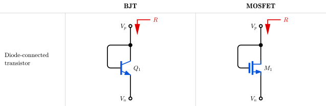
</div>
</div>
<p><strong>Razavi, Example 4.19</strong> (BJT)</p>
<p>The collector and base of a bipolar transistor (npn or pnp) are tied together, giving a two-terminal device (a “diode-connected” transistor). Find its small-signal impedance <span class="math notranslate nohighlight">\(v_X/i_X\)</span> with <span class="math notranslate nohighlight">\(V_A=\infty\)</span>.</p>
<p>Given: <span class="math notranslate nohighlight">\(V_A=\infty\)</span>, collector shorted to base, small-signal parameters <span class="math notranslate nohighlight">\(g_m\)</span>, <span class="math notranslate nohighlight">\(r_\pi\)</span>, <span class="math notranslate nohighlight">\(\beta=g_mr_\pi\)</span></p>
<ol class="arabic simple">
<li><p><strong>Small-signal circuit.</strong> Replace the transistor by its model. With the base and collector joined, the voltage across the device is <span class="math notranslate nohighlight">\(v_X=v_\pi\)</span> (base-emitter voltage), and the current source <span class="math notranslate nohighlight">\(g_mv_\pi\)</span> is connected between the joined node and the emitter, i.e. in parallel with <span class="math notranslate nohighlight">\(r_\pi\)</span>.</p></li>
<li><p><strong>KCL at the input node.</strong> <span class="math notranslate nohighlight">\(i_X=\dfrac{v_X}{r_\pi}+g_mv_\pi=\dfrac{v_X}{r_\pi}+g_mv_X\)</span>.</p></li>
<li><p><strong>Impedance.</strong> <span class="math notranslate nohighlight">\(\dfrac{v_X}{i_X}=\dfrac{1}{g_m+1/r_\pi}=\dfrac{1}{g_m}\cdot\dfrac{1}{1+1/\beta}\)</span> using <span class="math notranslate nohighlight">\(g_mr_\pi=\beta\)</span>.</p></li>
<li><p><strong>Approximation.</strong> Since <span class="math notranslate nohighlight">\(\beta\gg1\)</span>: <span class="math notranslate nohighlight">\(\dfrac{v_X}{i_X}\approx\dfrac{1}{g_m}=\dfrac{V_T}{I_C}\)</span>, i.e. <span class="math notranslate nohighlight">\(r_\pi\parallel(1/g_m)\approx1/g_m\)</span>.</p></li>
<li><p><strong>Meaning.</strong> A diode-connected transistor looks like a diode carrying the same current. The same holds for the pnp. If <span class="math notranslate nohighlight">\(r_O\)</span> is included it adds <span class="math notranslate nohighlight">\(1/r_O\)</span> to <span class="math notranslate nohighlight">\(g_m+1/r_\pi\)</span>, a negligible correction because <span class="math notranslate nohighlight">\(g_m\gg1/r_O\)</span>.</p></li>
</ol>
<p><strong>Result.</strong> <span class="math notranslate nohighlight">\(\dfrac{v_X}{i_X}=\dfrac{1}{g_m+1/r_\pi}\approx\dfrac{1}{g_m}=\dfrac{V_T}{I_C}\)</span></p>
<p>Checked: agrees with the answer in the book.</p>
<p><strong>Sedra/Smith, Exercise 6.11</strong> (MOSFET)</p>
<p>A diode-connected NMOS transistor (gate joined to drain, source grounded) has transconductance <span class="math notranslate nohighlight">\(g_m\)</span> and output resistance <span class="math notranslate nohighlight">\(r_o\)</span>. A test voltage <span class="math notranslate nohighlight">\(v_t\)</span> is applied to the drain node and the current <span class="math notranslate nohighlight">\(i_t\)</span> drawn is measured. Find the resistance <span class="math notranslate nohighlight">\(R_{eq}=v_t/i_t\)</span> seen into the drain.</p>
<p>Given: <span class="math notranslate nohighlight">\(g_m\)</span>, <span class="math notranslate nohighlight">\(r_o\)</span>, <span class="math notranslate nohighlight">\(v_{gs}=v_{ds}=v_t\)</span></p>
<ol class="arabic simple">
<li><p><strong>Small-signal model.</strong> The gate is tied to the drain, so <span class="math notranslate nohighlight">\(v_{gs}=v_t\)</span>; the model has <span class="math notranslate nohighlight">\(g_mv_{gs}\)</span> in parallel with <span class="math notranslate nohighlight">\(r_o\)</span> between drain and source.</p></li>
<li><p><strong>Test current.</strong> <span class="math notranslate nohighlight">\(i_t=\dfrac{v_t}{r_o}+g_mv_{gs}=\dfrac{v_t}{r_o}+g_mv_t\)</span>.</p></li>
<li><p><strong>Resistance.</strong> <span class="math notranslate nohighlight">\(R_{eq}=\dfrac{v_t}{i_t}=\dfrac1{1/r_o+g_m}=\dfrac1{g_m}\parallel r_o\)</span>.</p></li>
</ol>
<p><strong>Result.</strong> <span class="math notranslate nohighlight">\(R_{eq}=\dfrac1{g_m}\parallel r_o\)</span></p>
<p>Checked: agrees with the answer in the solutions manual.</p>
<p><strong>Sedra/Smith, Problem 6.34</strong> (BJT)</p>
<p>An npn transistor has its collector connected to its base (diode-connected) and its emitter grounded. A test voltage <span class="math notranslate nohighlight">\(v_x\)</span> is applied between this joined node and ground and the current <span class="math notranslate nohighlight">\(i_x\)</span> entering the node is measured. Using the T model (with <span class="math notranslate nohighlight">\(r_o\)</span> neglected) find the small-signal resistance <span class="math notranslate nohighlight">\(r=v_x/i_x\)</span>.</p>
<p>Given: T model: <span class="math notranslate nohighlight">\(r_e\)</span>, <span class="math notranslate nohighlight">\(\alpha\)</span>; <span class="math notranslate nohighlight">\(B\)</span> and <span class="math notranslate nohighlight">\(C\)</span> joined, <span class="math notranslate nohighlight">\(E\)</span> grounded, <span class="math notranslate nohighlight">\(r_o=\infty\)</span></p>
<ol class="arabic simple">
<li><p><strong>Connect the T model.</strong> With <span class="math notranslate nohighlight">\(B\)</span> and <span class="math notranslate nohighlight">\(C\)</span> tied, <span class="math notranslate nohighlight">\(v_x\)</span> appears across <span class="math notranslate nohighlight">\(r_e\)</span> (between the base and the grounded emitter).</p></li>
<li><p><strong>Current in <span class="math notranslate nohighlight">\(r_e\)</span>.</strong> <span class="math notranslate nohighlight">\(i_e=\dfrac{v_x}{r_e}\)</span>.</p></li>
<li><p><strong>Test current.</strong> <span class="math notranslate nohighlight">\(i_x\)</span> splits into the base current <span class="math notranslate nohighlight">\((1-\alpha)i_e\)</span> and the collector current <span class="math notranslate nohighlight">\(\alpha i_e\)</span> (from the controlled source); together <span class="math notranslate nohighlight">\(i_x=i_e\)</span>.</p></li>
<li><p><strong>Resistance.</strong> <span class="math notranslate nohighlight">\(r=\dfrac{v_x}{i_x}=\dfrac{v_x}{i_e}=r_e\)</span>.</p></li>
<li><p><strong>Hybrid-<span class="math notranslate nohighlight">\(\pi\)</span> check.</strong> With <span class="math notranslate nohighlight">\(v_\pi=v_x\)</span>: <span class="math notranslate nohighlight">\(i_x=\dfrac{v_x}{r_\pi}+g_mv_x\)</span>, so <span class="math notranslate nohighlight">\(r=\dfrac{1}{g_m+1/r_\pi}=\dfrac{r_\pi}{\beta+1}=r_e\)</span>.</p></li>
</ol>
<p><strong>Result.</strong> <span class="math notranslate nohighlight">\(r=r_e\)</span> (the diode-connected transistor looks like its emitter resistance, <span class="math notranslate nohighlight">\(\approx1/g_m\)</span>)</p>
<p>Checked: agrees with the answer in the solutions manual. Note: Statement reconstructed from the T-model figure (collector tied to base, emitter grounded, test source vx).</p>
</section>
<section id="cascode">
<h3>Cascode<a class="headerlink" href="#cascode" title="Link to this heading">#</a></h3>
<div class="cell tag_hide-input docutils container">
<details class="admonition hide above-input">
<summary aria-label="Toggle hidden content">
<p class="collapsed admonition-title">Show code cell source</p>
<p class="expanded admonition-title">Hide code cell source</p>
</summary>
<div class="cell_input docutils container">
<div class="highlight-ipython3 notranslate"><div class="highlight"><pre><span></span><span class="c1"># HIDE/SHOW</span>
<span class="n">show</span><span class="p">(</span><span class="n">C</span><span class="o">.</span><span class="n">cascode</span><span class="p">)</span>
</pre></div>
</div>
</div>
</details>
<div class="cell_output docutils container">
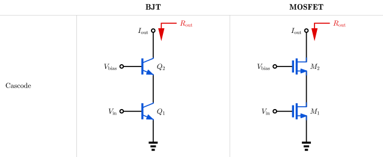
</div>
</div>
<p><strong>Razavi, Example 7.10</strong> (MOSFET)</p>
<p>Two NMOS transistors are stacked: <span class="math notranslate nohighlight">\(M_1\)</span> on top (output at its drain) and <span class="math notranslate nohighlight">\(M_2\)</span> below it with its source grounded; each gate is held at its own fixed bias, and both are saturated. Find the small-signal output resistance at the drain of <span class="math notranslate nohighlight">\(M_1\)</span> and compare with the diode-connected case of Ex 7.9.</p>
<p>Given: <span class="math notranslate nohighlight">\(g_{m1}\)</span>, <span class="math notranslate nohighlight">\(r_{O1}\)</span>, <span class="math notranslate nohighlight">\(r_{O2}\)</span> symbolic, <span class="math notranslate nohighlight">\(g_{m1}r_{O2}\gg1\)</span></p>
<ol class="arabic simple">
<li><p><strong>Role of <span class="math notranslate nohighlight">\(M_2\)</span>.</strong> Its gate-source voltage is fixed, so it acts as a current source, i.e. the resistance <span class="math notranslate nohighlight">\(r_{O2}\)</span> from the source of <span class="math notranslate nohighlight">\(M_1\)</span> to ground.</p></li>
<li><p><strong>Degenerated-stage formula.</strong> <span class="math notranslate nohighlight">\(R_{out}=(1+g_{m1}r_{O1})R_S+r_{O1}\)</span> with <span class="math notranslate nohighlight">\(R_S=r_{O2}\)</span>.</p></li>
<li><p><strong>Result.</strong> <span class="math notranslate nohighlight">\(R_{out}=(1+g_{m1}r_{O1})r_{O2}+r_{O1}\approx g_{m1}r_{O1}r_{O2}+r_{O1}\)</span>.</p></li>
<li><p><strong>Simplify.</strong> If <span class="math notranslate nohighlight">\(g_{m1}r_{O2}\gg1\)</span>: <span class="math notranslate nohighlight">\(R_{out}\approx g_{m1}r_{O1}r_{O2}\)</span>.</p></li>
<li><p><strong>Compare with Ex 7.9.</strong> Ex 7.9 gave about <span class="math notranslate nohighlight">\(2r_{O1}\)</span>; here the output resistance is larger by about the factor <span class="math notranslate nohighlight">\(g_{m1}r_{O2}/2\)</span> (half the intrinsic gain), because <span class="math notranslate nohighlight">\(M_2\)</span> is a high-resistance source degeneration instead of <span class="math notranslate nohighlight">\(1/g_m\)</span>.</p></li>
<li><p><strong>Numerical check.</strong> <span class="math notranslate nohighlight">\(g_{m1}=2\,\mathrm{mS}\)</span>, <span class="math notranslate nohighlight">\(r_{O1}=20\,\mathrm{k}\Omega\)</span>, <span class="math notranslate nohighlight">\(r_{O2}=30\,\mathrm{k}\Omega\)</span>: test-source analysis and the exact formula give <span class="math notranslate nohighlight">\(1.25\,\mathrm{M}\Omega\)</span>; <span class="math notranslate nohighlight">\(g_{m1}r_{O1}r_{O2}=1.2\,\mathrm{M}\Omega\)</span>.</p></li>
</ol>
<p><strong>Result.</strong> <span class="math notranslate nohighlight">\(R_{out}=(1+g_{m1}r_{O1})r_{O2}+r_{O1}\approx g_{m1}r_{O1}r_{O2}\)</span></p>
<p>Checked: agrees with the answer in the book.</p>
</section>
<section id="npn-nmos">
<h3>npn / NMOS<a class="headerlink" href="#npn-nmos" title="Link to this heading">#</a></h3>
<div class="cell tag_hide-input docutils container">
<details class="admonition hide above-input">
<summary aria-label="Toggle hidden content">
<p class="collapsed admonition-title">Show code cell source</p>
<p class="expanded admonition-title">Hide code cell source</p>
</summary>
<div class="cell_input docutils container">
<div class="highlight-ipython3 notranslate"><div class="highlight"><pre><span></span><span class="c1"># HIDE/SHOW</span>
<span class="n">show</span><span class="p">(</span><span class="n">C</span><span class="o">.</span><span class="n">n_type</span><span class="p">)</span>
</pre></div>
</div>
</div>
</details>
<div class="cell_output docutils container">
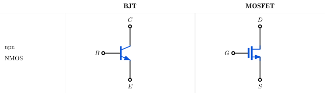
</div>
</div>
<p><strong>Razavi, Example 5.3</strong> (BJT)</p>
<p>A transistor in the forward active region has its emitter grounded and its base driven by an ideal voltage source whose signal is zero (<span class="math notranslate nohighlight">\(v_{in}=0\)</span>). Including the Early effect, find the small-signal resistance seen looking into the collector.</p>
<p>Given: Forward active, emitter and base at ac ground; numerical check with <span class="math notranslate nohighlight">\(I_C=1\,\mathrm{mA}\)</span>, <span class="math notranslate nohighlight">\(V_A=100\,\mathrm{V}\)</span></p>
<ol class="arabic simple">
<li><p><strong>Small-signal circuit.</strong> Set <span class="math notranslate nohighlight">\(v_{in}=0\)</span>: the base is at ac ground, and so is the emitter. The model has <span class="math notranslate nohighlight">\(r_\pi\)</span> from base to emitter, the source <span class="math notranslate nohighlight">\(g_mv_\pi\)</span> and <span class="math notranslate nohighlight">\(r_O\)</span> from collector to emitter.</p></li>
<li><p><strong>Controlling voltage.</strong> <span class="math notranslate nohighlight">\(r_\pi\)</span> sits between two grounded nodes, so <span class="math notranslate nohighlight">\(v_\pi=0\)</span> and therefore <span class="math notranslate nohighlight">\(g_mv_\pi=0\)</span>: the dependent source is an open circuit.</p></li>
<li><p><strong>Test source.</strong> Apply <span class="math notranslate nohighlight">\(v_x\)</span> at the collector. The only remaining path to ground is <span class="math notranslate nohighlight">\(r_O\)</span>, so <span class="math notranslate nohighlight">\(i_x=v_x/r_O\)</span>.</p></li>
<li><p><strong>Result.</strong> <span class="math notranslate nohighlight">\(R_{out}=v_x/i_x=r_O\)</span>, with <span class="math notranslate nohighlight">\(r_O=V_A/I_C\)</span>.</p></li>
<li><p><strong>Numbers.</strong> <span class="math notranslate nohighlight">\(r_O=\dfrac{100\,\mathrm{V}}{1\,\mathrm{mA}}=100\,\mathrm{k}\Omega\)</span>.</p></li>
</ol>
<p><strong>Result.</strong> <span class="math notranslate nohighlight">\(R_{out}=r_O\)</span> (<span class="math notranslate nohighlight">\(=V_A/I_C\)</span>)</p>
<p>Checked: agrees with the answer in the book.</p>
</section>
<section id="id8">
<h3>Common emitter / Common source<a class="headerlink" href="#id8" title="Link to this heading">#</a></h3>
<div class="cell tag_hide-input docutils container">
<details class="admonition hide above-input">
<summary aria-label="Toggle hidden content">
<p class="collapsed admonition-title">Show code cell source</p>
<p class="expanded admonition-title">Hide code cell source</p>
</summary>
<div class="cell_input docutils container">
<div class="highlight-ipython3 notranslate"><div class="highlight"><pre><span></span><span class="c1"># HIDE/SHOW</span>
<span class="n">show</span><span class="p">(</span><span class="n">C</span><span class="o">.</span><span class="n">role_amplifier</span><span class="p">)</span>
</pre></div>
</div>
</div>
</details>
<div class="cell_output docutils container">

</div>
</div>
<p><strong>Razavi, Example 5.2</strong> (BJT)</p>
<p>An npn transistor has its emitter grounded, a resistor <span class="math notranslate nohighlight">\(R_C\)</span> from the collector to <span class="math notranslate nohighlight">\(V_{CC}\)</span>, and the input voltage source <span class="math notranslate nohighlight">\(v_{in}\)</span> applied to the base. The device is in the forward active region with collector bias current <span class="math notranslate nohighlight">\(I_C\)</span> and current gain <span class="math notranslate nohighlight">\(\beta\)</span>. Find the small-signal input impedance seen looking into the base.</p>
<p>Given: Forward active, emitter at ac ground, <span class="math notranslate nohighlight">\(R_C\)</span> to <span class="math notranslate nohighlight">\(V_{CC}\)</span> (ac ground); numerical check with <span class="math notranslate nohighlight">\(I_C=1\,\mathrm{mA}\)</span>, <span class="math notranslate nohighlight">\(\beta=100\)</span>, <span class="math notranslate nohighlight">\(V_T=26\,\mathrm{mV}\)</span></p>
<ol class="arabic simple">
<li><p><strong>Small-signal model.</strong> Replace <span class="math notranslate nohighlight">\(V_{CC}\)</span> by an ac ground and the transistor by <span class="math notranslate nohighlight">\(r_\pi\)</span> (base to emitter), the current source <span class="math notranslate nohighlight">\(g_mv_\pi\)</span> and <span class="math notranslate nohighlight">\(r_O\)</span> (collector to emitter). The emitter is grounded.</p></li>
<li><p><strong>Test source.</strong> Apply a test voltage <span class="math notranslate nohighlight">\(v_x\)</span> to the base and call <span class="math notranslate nohighlight">\(i_x\)</span> the current it supplies.</p></li>
<li><p><strong>Where the current goes.</strong> The only element connected between the base and ground is <span class="math notranslate nohighlight">\(r_\pi\)</span>, so <span class="math notranslate nohighlight">\(v_\pi=v_x\)</span> and <span class="math notranslate nohighlight">\(i_x=v_x/r_\pi\)</span>. The collector side (<span class="math notranslate nohighlight">\(g_mv_\pi\)</span>, <span class="math notranslate nohighlight">\(r_O\)</span>, <span class="math notranslate nohighlight">\(R_C\)</span>) does not feed any current back into the base node.</p></li>
<li><p><strong>Input impedance.</strong> <span class="math notranslate nohighlight">\(R_{in}=\dfrac{v_x}{i_x}=r_\pi=\dfrac{\beta}{g_m}=\dfrac{\beta V_T}{I_C}\)</span>.</p></li>
<li><p><strong>Numbers.</strong> <span class="math notranslate nohighlight">\(g_m=\dfrac{1\,\mathrm{mA}}{26\,\mathrm{mV}}=38.5\,\mathrm{mS}\)</span>, <span class="math notranslate nohighlight">\(r_\pi=\dfrac{100}{38.5\,\mathrm{mS}}=2.60\,\mathrm{k}\Omega\)</span>.</p></li>
<li><p><strong>Interpretation.</strong> Larger <span class="math notranslate nohighlight">\(\beta\)</span> or smaller <span class="math notranslate nohighlight">\(I_C\)</span> gives a larger <span class="math notranslate nohighlight">\(R_{in}\)</span>. <span class="math notranslate nohighlight">\(R_C\)</span> and <span class="math notranslate nohighlight">\(r_O\)</span> do not change it.</p></li>
</ol>
<p><strong>Result.</strong> <span class="math notranslate nohighlight">\(R_{in}=r_\pi=\beta/g_m=\beta V_T/I_C\)</span> (<span class="math notranslate nohighlight">\(2.60\,\mathrm{k}\Omega\)</span> for <span class="math notranslate nohighlight">\(1\,\mathrm{mA}\)</span>, <span class="math notranslate nohighlight">\(\beta=100\)</span>)</p>
<p>Checked: agrees with the answer in the book.</p>
</section>
<section id="id9">
<h3>Common base / Common gate<a class="headerlink" href="#id9" title="Link to this heading">#</a></h3>
<div class="cell tag_hide-input docutils container">
<details class="admonition hide above-input">
<summary aria-label="Toggle hidden content">
<p class="collapsed admonition-title">Show code cell source</p>
<p class="expanded admonition-title">Hide code cell source</p>
</summary>
<div class="cell_input docutils container">
<div class="highlight-ipython3 notranslate"><div class="highlight"><pre><span></span><span class="c1"># HIDE/SHOW</span>
<span class="n">show</span><span class="p">(</span><span class="n">C</span><span class="o">.</span><span class="n">role_current_buffer</span><span class="p">)</span>
</pre></div>
</div>
</div>
</details>
<div class="cell_output docutils container">

</div>
</div>
<p><strong>Razavi, Example 5.4</strong> (BJT)</p>
<p>In a transistor biased in the forward active region the base is at ac ground and the collector is tied to a supply (ac ground). Neglecting the Early effect, find the small-signal impedance seen looking into the emitter.</p>
<p>Given: Base and collector at ac ground, <span class="math notranslate nohighlight">\(V_A=\infty\)</span>; numerical check with <span class="math notranslate nohighlight">\(I_C=1\,\mathrm{mA}\)</span>, <span class="math notranslate nohighlight">\(\beta=100\)</span>, <span class="math notranslate nohighlight">\(V_T=26\,\mathrm{mV}\)</span></p>
<ol class="arabic simple">
<li><p><strong>Test source.</strong> Apply <span class="math notranslate nohighlight">\(v_x\)</span> to the emitter and let <span class="math notranslate nohighlight">\(i_x\)</span> be the current it delivers into the emitter. With the base grounded, <span class="math notranslate nohighlight">\(v_\pi=v_B-v_E=-v_x\)</span>.</p></li>
<li><p><strong>Currents leaving the emitter node.</strong> Two currents flow away from the emitter node into the transistor model: the one through <span class="math notranslate nohighlight">\(r_\pi\)</span> is <span class="math notranslate nohighlight">\(\dfrac{v_E-v_B}{r_\pi}=\dfrac{v_x}{r_\pi}\)</span> and the controlled current is <span class="math notranslate nohighlight">\(g_m(v_B-v_E)\to g_mv_x\)</span> in magnitude.</p></li>
<li><p><strong>KCL at the emitter.</strong> <span class="math notranslate nohighlight">\(g_mv_\pi+\dfrac{v_\pi}{r_\pi}=-i_x\)</span>, i.e. <span class="math notranslate nohighlight">\(i_x=v_x\left(g_m+\dfrac1{r_\pi}\right)\)</span>.</p></li>
<li><p><strong>Impedance.</strong> <span class="math notranslate nohighlight">\(R_{out}=\dfrac{v_x}{i_x}=\dfrac{1}{g_m+1/r_\pi}=\dfrac{r_\pi}{\beta+1}\)</span>.</p></li>
<li><p><strong>Approximation.</strong> Since <span class="math notranslate nohighlight">\(r_\pi=\beta/g_m\gg1/g_m\)</span>, <span class="math notranslate nohighlight">\(R_{out}\approx1/g_m\)</span>.</p></li>
<li><p><strong>Numbers.</strong> <span class="math notranslate nohighlight">\(g_m=38.5\,\mathrm{mS}\)</span>, <span class="math notranslate nohighlight">\(r_\pi=2.60\,\mathrm{k}\Omega\)</span>: exact <span class="math notranslate nohighlight">\(25.7\,\Omega\)</span>, approximate <span class="math notranslate nohighlight">\(1/g_m=26.0\,\Omega\)</span> (1 % higher).</p></li>
</ol>
<p><strong>Result.</strong> <span class="math notranslate nohighlight">\(R_{out}=\dfrac{1}{g_m+1/r_\pi}\approx\dfrac1{g_m}\)</span> (<span class="math notranslate nohighlight">\(25.7\,\Omega\)</span> vs. <span class="math notranslate nohighlight">\(26.0\,\Omega\)</span> for <span class="math notranslate nohighlight">\(1\,\mathrm{mA}\)</span>, <span class="math notranslate nohighlight">\(\beta=100\)</span>)</p>
<p>Checked: agrees with the answer in the book.</p>
</section>
<section id="id10">
<h3>Other Circuits<a class="headerlink" href="#id10" title="Link to this heading">#</a></h3>
<p><strong>Razavi, Example 5.28</strong> (BJT)</p>
<p>A bipolar transistor with <span class="math notranslate nohighlight">\(\beta=100\)</span> and <span class="math notranslate nohighlight">\(V_A=10\,\mathrm{V}\)</span> must be used as a current source that delivers <span class="math notranslate nohighlight">\(I_C=1\,\mathrm{mA}\)</span> and has an output resistance of <span class="math notranslate nohighlight">\(20\,\mathrm{k}\Omega\)</span>. The base is held at ac ground and a resistor <span class="math notranslate nohighlight">\(R_E\)</span> is placed between the emitter and ground (degeneration). Find the smallest <span class="math notranslate nohighlight">\(R_E\)</span> that meets the output-resistance requirement.</p>
<p>Given: <span class="math notranslate nohighlight">\(I_C=1\,\mathrm{mA}\)</span>, <span class="math notranslate nohighlight">\(\beta=100\)</span>, <span class="math notranslate nohighlight">\(V_A=10\,\mathrm{V}\)</span>, <span class="math notranslate nohighlight">\(V_T=26\,\mathrm{mV}\)</span>, required <span class="math notranslate nohighlight">\(R_{out}=20\,\mathrm{k}\Omega\)</span></p>
<ol class="arabic simple">
<li><p><strong>Output resistance without degeneration.</strong> <span class="math notranslate nohighlight">\(r_O=\dfrac{V_A}{I_C}=\dfrac{10\,\mathrm{V}}{1\,\mathrm{mA}}=10\,\mathrm{k}\Omega\)</span>. The target is twice this value, so degeneration must double <span class="math notranslate nohighlight">\(r_O\)</span>.</p></li>
<li><p><strong>Output resistance with degeneration.</strong> Looking into the collector of a degenerated stage, <span class="math notranslate nohighlight">\(R_{out}=[1+g_m(R_E\parallel r_\pi)]\,r_O+(R_E\parallel r_\pi)\)</span>. If <span class="math notranslate nohighlight">\(R_E\ll r_\pi\)</span> and the last term is negligible, this reduces to <span class="math notranslate nohighlight">\(R_{out}\approx(1+g_mR_E)\,r_O\)</span>.</p></li>
<li><p><strong>Impose the factor of two.</strong> <span class="math notranslate nohighlight">\(1+g_mR_E=2\;\Rightarrow\;R_E=\dfrac{1}{g_m}\)</span>.</p></li>
<li><p><strong>Transconductance and <span class="math notranslate nohighlight">\(R_E\)</span>.</strong> <span class="math notranslate nohighlight">\(g_m=\dfrac{I_C}{V_T}=\dfrac{1\,\mathrm{mA}}{26\,\mathrm{mV}}=38.5\,\mathrm{mS}\)</span>, hence <span class="math notranslate nohighlight">\(R_E=\dfrac{1}{g_m}=26\,\Omega\)</span>.</p></li>
<li><p><strong>Check the assumption.</strong> <span class="math notranslate nohighlight">\(r_\pi=\beta/g_m=2.6\,\mathrm{k}\Omega\gg R_E=26\,\Omega\)</span>, so <span class="math notranslate nohighlight">\(R_E\parallel r_\pi\approx R_E\)</span> is justified.</p></li>
<li><p><strong>Exact solution of the full formula.</strong> With <span class="math notranslate nohighlight">\(x=R_E\parallel r_\pi\)</span>, <span class="math notranslate nohighlight">\((1+g_mx)r_O+x=2r_O\)</span> gives <span class="math notranslate nohighlight">\(x=\dfrac{r_O}{1+g_mr_O}=25.9\,\Omega\)</span>, so <span class="math notranslate nohighlight">\(R_E=\dfrac{x\,r_\pi}{r_\pi-x}=26.2\,\Omega\)</span>. The simple answer is within <span class="math notranslate nohighlight">\(1\%\)</span>. Since <span class="math notranslate nohighlight">\(R_{out}\)</span> grows with <span class="math notranslate nohighlight">\(R_E\)</span>, this is the minimum.</p></li>
</ol>
<p><strong>Result.</strong> <span class="math notranslate nohighlight">\(R_E\approx 26\,\Omega\)</span> (<span class="math notranslate nohighlight">\(=1/g_m\)</span>; exact formula gives <span class="math notranslate nohighlight">\(26.2\,\Omega\)</span>)</p>
<p>Checked: agrees with the answer in the book.</p>
<p><strong>Razavi, Example 5.29</strong> (BJT)</p>
<p>An npn transistor <span class="math notranslate nohighlight">\(Q_1\)</span> has its base held at a dc voltage <span class="math notranslate nohighlight">\(V_b\)</span> (ac ground). Its emitter is connected to a node <span class="math notranslate nohighlight">\(M\)</span> through a resistor <span class="math notranslate nohighlight">\(R_2\)</span>, and the collector is connected to the same node <span class="math notranslate nohighlight">\(M\)</span> through a resistor <span class="math notranslate nohighlight">\(R_1\)</span>. Node <span class="math notranslate nohighlight">\(M\)</span> is tied to ground by a very large capacitor <span class="math notranslate nohighlight">\(C_1\)</span>, and the emitter also feeds an ideal current source <span class="math notranslate nohighlight">\(I_1\)</span> to ground. Find the small-signal resistance seen looking into the collector (the Early effect is included through <span class="math notranslate nohighlight">\(r_O\)</span>).</p>
<p>Given: symbolic: <span class="math notranslate nohighlight">\(R_1\)</span>, <span class="math notranslate nohighlight">\(R_2\)</span>, <span class="math notranslate nohighlight">\(g_m\)</span>, <span class="math notranslate nohighlight">\(r_\pi\)</span>, <span class="math notranslate nohighlight">\(r_O\)</span>; <span class="math notranslate nohighlight">\(C_1\to\infty\)</span></p>
<ol class="arabic simple">
<li><p><strong>AC simplification.</strong> <span class="math notranslate nohighlight">\(V_b\)</span> and the very large <span class="math notranslate nohighlight">\(C_1\)</span> become ac grounds and the ideal current source <span class="math notranslate nohighlight">\(I_1\)</span> becomes an open circuit. Then <span class="math notranslate nohighlight">\(R_1\)</span> runs from the collector to ground and <span class="math notranslate nohighlight">\(R_2\)</span> from the emitter to ground; the base is grounded.</p></li>
<li><p><strong>Collector resistance of <span class="math notranslate nohighlight">\(Q_1\)</span> alone.</strong> With the base at ac ground, <span class="math notranslate nohighlight">\(r_\pi\)</span> also goes from the emitter to ground, so the emitter sees <span class="math notranslate nohighlight">\(R_E^{\prime}=R_2\parallel r_\pi\)</span>. Put a test current <span class="math notranslate nohighlight">\(i_x\)</span> into the collector: all of it returns to ground through <span class="math notranslate nohighlight">\(R_E^{\prime}\)</span>, so <span class="math notranslate nohighlight">\(v_e=i_xR_E^{\prime}\)</span> and <span class="math notranslate nohighlight">\(v_\pi=-v_e\)</span>.</p></li>
<li><p><strong>Test-current equation.</strong> The collector voltage is <span class="math notranslate nohighlight">\(v_x=v_e+r_O\,(i_x-g_mv_\pi)=i_xR_E^{\prime}+r_O\,(i_x+g_mi_xR_E^{\prime})\)</span>.</p></li>
<li><p><strong>Result for <span class="math notranslate nohighlight">\(Q_1\)</span>.</strong> <span class="math notranslate nohighlight">\(R_{out1}=\dfrac{v_x}{i_x}=[1+g_m(R_2\parallel r_\pi)]\,r_O+(R_2\parallel r_\pi)\approx[1+g_m(R_2\parallel r_\pi)]\,r_O\)</span> (the last term is normally negligible).</p></li>
<li><p><strong>Include <span class="math notranslate nohighlight">\(R_1\)</span>.</strong> <span class="math notranslate nohighlight">\(R_1\)</span> is in parallel with the collector terminal: <span class="math notranslate nohighlight">\(R_{out}=R_{out1}\parallel R_1=\{[1+g_m(R_2\parallel r_\pi)]r_O\}\parallel R_1\)</span>.</p></li>
</ol>
<p><strong>Result.</strong> <span class="math notranslate nohighlight">\(R_{out}=\big\{[1+g_m(R_2\parallel r_\pi)]\,r_O+(R_2\parallel r_\pi)\big\}\parallel R_1\;\approx\;\{[1+g_m(R_2\parallel r_\pi)]\,r_O\}\parallel R_1\)</span></p>
<p>Checked: agrees with the answer in the book.</p>
<p><strong>Razavi, Example 5.38</strong> (BJT)</p>
<p>Folk wisdom says the output impedance of a common-base (CB) stage is much higher than that of a common-emitter (CE) stage. It is “demonstrated” by two tests. Test (a): the emitter is grounded, a constant current <span class="math notranslate nohighlight">\(I_B\)</span> is forced into the base, and the collector voltage <span class="math notranslate nohighlight">\(V_1\)</span> is swept; <span class="math notranslate nohighlight">\(I_C\)</span> rises with slope <span class="math notranslate nohighlight">\(1/r_O\)</span>. Test (b): the base is at a fixed voltage, a constant current <span class="math notranslate nohighlight">\(I_E\)</span> is pulled out of the emitter, and <span class="math notranslate nohighlight">\(V_1\)</span> is swept; <span class="math notranslate nohighlight">\(I_C\)</span> is almost flat. Explain why these tests do not reflect practical circuits, and compute the two output resistances for <span class="math notranslate nohighlight">\(I_C=1\,\mathrm{mA}\)</span>, <span class="math notranslate nohighlight">\(V_A=10\,\mathrm{V}\)</span>, <span class="math notranslate nohighlight">\(\beta=100\)</span>.</p>
<p>Given: <span class="math notranslate nohighlight">\(I_C=1\,\mathrm{mA}\)</span>, <span class="math notranslate nohighlight">\(V_A=10\,\mathrm{V}\)</span>, <span class="math notranslate nohighlight">\(\beta=100\)</span>, <span class="math notranslate nohighlight">\(V_T=26\,\mathrm{mV}\)</span>, <span class="math notranslate nohighlight">\(V_A\)</span> finite</p>
<ol class="arabic simple">
<li><p><strong>Small-signal model of each test.</strong> An ideal constant current source has infinite small-signal resistance, so it becomes an open circuit: in (a) the base is open and the emitter grounded; in (b) the base is at ac ground and the emitter is open.</p></li>
<li><p><strong>Test (a).</strong> The emitter is grounded and no current flows in <span class="math notranslate nohighlight">\(r_\pi\)</span>, so <span class="math notranslate nohighlight">\(v_\pi=0\)</span> and <span class="math notranslate nohighlight">\(g_mv_\pi=0\)</span>. Only <span class="math notranslate nohighlight">\(r_O\)</span> remains: <span class="math notranslate nohighlight">\(R_{out}=r_O=\dfrac{V_A}{I_C}=10\,\mathrm{k}\Omega\)</span>.</p></li>
<li><p><strong>Test (b).</strong> This is an emitter-degenerated stage with <span class="math notranslate nohighlight">\(R_E=\infty\)</span>: <span class="math notranslate nohighlight">\(R_{out}=[1+g_m(R_E\parallel r_\pi)]r_O+(R_E\parallel r_\pi)\to(1+g_mr_\pi)r_O+r_\pi=(\beta+1)r_O+r_\pi\approx\beta r_O\)</span>.</p></li>
<li><p><strong>Numbers.</strong> <span class="math notranslate nohighlight">\(g_m=38.5\,\mathrm{mS}\)</span>, <span class="math notranslate nohighlight">\(r_\pi=2.6\,\mathrm{k}\Omega\)</span>, so <span class="math notranslate nohighlight">\(R_{out}=101\times10\,\mathrm{k}\Omega+2.6\,\mathrm{k}\Omega\approx1.01\,\mathrm{M}\Omega\)</span>, about <span class="math notranslate nohighlight">\(100\)</span> times larger than in (a).</p></li>
<li><p><strong>Why the tests mislead.</strong> The large value in (b) exists only because the emitter is driven by an ideal current source (infinite resistance). In practice stages are driven by voltage sources with finite resistance <span class="math notranslate nohighlight">\(R_S\)</span>. With the input set to zero for the output-resistance calculation, the CB stage becomes a transistor with base grounded and emitter resistance <span class="math notranslate nohighlight">\(R_S\)</span>, which is the same circuit as a CE stage with emitter degeneration <span class="math notranslate nohighlight">\(R_S\)</span>. The two stages then have the same <span class="math notranslate nohighlight">\(R_{out}=[1+g_m(R_S\parallel r_\pi)]r_O+(R_S\parallel r_\pi)\)</span> (equal to <span class="math notranslate nohighlight">\(r_O\)</span> when <span class="math notranslate nohighlight">\(R_S=0\)</span>), so the claim of higher CB output impedance is irrelevant.</p></li>
</ol>
<p><strong>Result.</strong> (a) <span class="math notranslate nohighlight">\(R_{out}=r_O=10\,\mathrm{k}\Omega\)</span>; (b) <span class="math notranslate nohighlight">\(R_{out}\approx(\beta+1)r_O+r_\pi\approx1.01\,\mathrm{M}\Omega\)</span>; both differ only because the input sources are ideal current sources, so the comparison does not apply to practical (voltage-driven) stages</p>
<p>Checked by computation; the book gives no answer.</p>
<p><strong>Razavi, Example 5.39</strong> (BJT)</p>
<p>Two identical npn transistors are connected so that the emitter of <span class="math notranslate nohighlight">\(Q_1\)</span> drives the base of <span class="math notranslate nohighlight">\(Q_2\)</span>. <span class="math notranslate nohighlight">\(Q_1\)</span> has its collector at <span class="math notranslate nohighlight">\(V_{CC}\)</span> and its base connected to ac ground through a resistor <span class="math notranslate nohighlight">\(R_B\)</span>. <span class="math notranslate nohighlight">\(Q_2\)</span> has a collector resistor <span class="math notranslate nohighlight">\(R_C\)</span> to <span class="math notranslate nohighlight">\(V_{CC}\)</span> and its emitter is the node of interest. Find the small-signal impedance <span class="math notranslate nohighlight">\(R_X\)</span> seen looking into the emitter of <span class="math notranslate nohighlight">\(Q_2\)</span> (<span class="math notranslate nohighlight">\(V_A=\infty\)</span>, current gain <span class="math notranslate nohighlight">\(\beta\)</span> for both, transconductances <span class="math notranslate nohighlight">\(g_{m1}\)</span>, <span class="math notranslate nohighlight">\(g_{m2}\)</span>).</p>
<p>Given: symbolic: <span class="math notranslate nohighlight">\(R_B\)</span>, <span class="math notranslate nohighlight">\(\beta\)</span>, <span class="math notranslate nohighlight">\(g_{m1}\)</span>, <span class="math notranslate nohighlight">\(g_{m2}\)</span>; <span class="math notranslate nohighlight">\(V_A=\infty\)</span></p>
<ol class="arabic simple">
<li><p><strong>Role of <span class="math notranslate nohighlight">\(Q_2\)</span>.</strong> <span class="math notranslate nohighlight">\(Q_2\)</span> is a common-base device (collector at ac ground through <span class="math notranslate nohighlight">\(R_C\)</span> and <span class="math notranslate nohighlight">\(V_{CC}\)</span>) whose base is tied to a finite series resistance, equal to the impedance seen looking into the emitter of <span class="math notranslate nohighlight">\(Q_1\)</span>.</p></li>
<li><p><strong>Impedance at the emitter of <span class="math notranslate nohighlight">\(Q_1\)</span>.</strong> A transistor with base resistance <span class="math notranslate nohighlight">\(R_B\)</span> (to ac ground) shows at its emitter <span class="math notranslate nohighlight">\(R_{eq}=\dfrac{1}{g_{m1}}+\dfrac{R_B}{\beta+1}\)</span>.</p></li>
<li><p><strong>Impedance at the emitter of <span class="math notranslate nohighlight">\(Q_2\)</span>.</strong> The same rule applied to <span class="math notranslate nohighlight">\(Q_2\)</span> with its base resistance <span class="math notranslate nohighlight">\(R_{eq}\)</span>: <span class="math notranslate nohighlight">\(R_X=\dfrac{1}{g_{m2}}+\dfrac{R_{eq}}{\beta+1}\)</span>.</p></li>
<li><p><strong>Substitute.</strong> <span class="math notranslate nohighlight">\(R_X=\dfrac{1}{g_{m2}}+\dfrac{1}{\beta+1}\left(\dfrac{1}{g_{m1}}+\dfrac{R_B}{\beta+1}\right)\)</span>. <span class="math notranslate nohighlight">\(R_C\)</span> does not appear because <span class="math notranslate nohighlight">\(V_A=\infty\)</span>.</p></li>
</ol>
<p><strong>Result.</strong> <span class="math notranslate nohighlight">\(R_X=\dfrac{1}{g_{m2}}+\dfrac{1}{\beta+1}\left(\dfrac{1}{g_{m1}}+\dfrac{R_B}{\beta+1}\right)\)</span></p>
<p>Checked: agrees with the answer in the book.</p>
<p><strong>Razavi, Example 6.16</strong> (MOSFET)</p>
<p>A diode-connected NMOS (gate tied to the drain, source grounded) and a diode-connected PMOS (gate tied to the drain, source at the supply) are each biased in saturation. Find the small-signal resistance <span class="math notranslate nohighlight">\(R_X\)</span> seen looking into the NMOS drain and <span class="math notranslate nohighlight">\(R_Y\)</span> seen into the PMOS drain, taking channel-length modulation into account (<span class="math notranslate nohighlight">\(\lambda\neq0\)</span>), and the limit <span class="math notranslate nohighlight">\(\lambda=0\)</span>.</p>
<p>Given: <span class="math notranslate nohighlight">\(g_{m1},r_{O1}\)</span> (NMOS), <span class="math notranslate nohighlight">\(g_{m2},r_{O2}\)</span> (PMOS); illustration <span class="math notranslate nohighlight">\(g_m=1\,\mathrm{mS}\)</span>, <span class="math notranslate nohighlight">\(r_O=20\,\mathrm{k}\Omega\)</span></p>
<ol class="arabic simple">
<li><p><strong>NMOS: test source.</strong> Apply <span class="math notranslate nohighlight">\(v_X\)</span> at the drain (and gate, since they are tied) and let the current into the drain be <span class="math notranslate nohighlight">\(i_X\)</span>. The source is at ac ground, so <span class="math notranslate nohighlight">\(v_{GS}=v_X\)</span>.</p></li>
<li><p><strong>NMOS: current.</strong> <span class="math notranslate nohighlight">\(i_X=g_{m1}v_X+\dfrac{v_X}{r_{O1}}\)</span>: the controlled source and <span class="math notranslate nohighlight">\(r_{O1}\)</span> are in parallel across <span class="math notranslate nohighlight">\(v_X\)</span>.</p></li>
<li><p><strong>NMOS: resistance.</strong> <span class="math notranslate nohighlight">\(R_X=\dfrac{v_X}{i_X}=\dfrac1{g_{m1}}\parallel r_{O1}\)</span>.</p></li>
<li><p><strong>PMOS: same argument.</strong> The source is at the (ac ground) supply, <span class="math notranslate nohighlight">\(v_{SG}=v_Y\)</span>, so <span class="math notranslate nohighlight">\(i_Y=g_{m2}v_Y+v_Y/r_{O2}\)</span>.</p></li>
<li><p><strong>PMOS: resistance.</strong> <span class="math notranslate nohighlight">\(R_Y=\dfrac1{g_{m2}}\parallel r_{O2}\)</span>.</p></li>
<li><p><strong>Limit.</strong> For <span class="math notranslate nohighlight">\(\lambda=0\)</span> (<span class="math notranslate nohighlight">\(r_O\to\infty\)</span>): <span class="math notranslate nohighlight">\(R_X=1/g_{m1}\)</span> and <span class="math notranslate nohighlight">\(R_Y=1/g_{m2}\)</span>. Example: <span class="math notranslate nohighlight">\(1/(1\,\mathrm{mS})\parallel20\,\mathrm{k}\Omega=952\,\Omega\)</span>.</p></li>
</ol>
<p><strong>Result.</strong> <span class="math notranslate nohighlight">\(R_X=\dfrac1{g_{m1}}\parallel r_{O1}\)</span>, <span class="math notranslate nohighlight">\(R_Y=\dfrac1{g_{m2}}\parallel r_{O2}\)</span>; both <span class="math notranslate nohighlight">\(\approx1/g_m\)</span> when <span class="math notranslate nohighlight">\(\lambda=0\)</span></p>
<p>Checked: agrees with the answer in the book. Note: The OCR of the book statement shows “Assume <span class="math notranslate nohighlight">\(\lambda\)</span> ? 0” (the symbol is lost); since the solution contains <span class="math notranslate nohighlight">\(r_O\)</span>, I read it as <span class="math notranslate nohighlight">\(\lambda\neq0\)</span> and treat <span class="math notranslate nohighlight">\(\lambda=0\)</span> as the closing remark. No single drawing shows both devices, so <code class="docutils literal notranslate"><span class="pre">figure</span></code> is empty.</p>
<p><strong>Razavi, Example 7.9</strong> (MOSFET)</p>
<p>Transistor <span class="math notranslate nohighlight">\(M_1\)</span> has its gate at a fixed bias and its source connected to the drain and gate of an identical NMOS <span class="math notranslate nohighlight">\(M_2\)</span> whose source is grounded (so <span class="math notranslate nohighlight">\(M_2\)</span> is diode-connected and degenerates <span class="math notranslate nohighlight">\(M_1\)</span>). Find the small-signal output resistance seen looking into the drain of <span class="math notranslate nohighlight">\(M_1\)</span>.</p>
<p>Given: <span class="math notranslate nohighlight">\(M_1\)</span> and <span class="math notranslate nohighlight">\(M_2\)</span> identical: <span class="math notranslate nohighlight">\(g_{m1}=g_{m2}=g_m\)</span>, <span class="math notranslate nohighlight">\(r_{O1}=r_{O2}\)</span></p>
<ol class="arabic simple">
<li><p><strong>Degenerated stage.</strong> The output resistance of a CS stage with source resistance <span class="math notranslate nohighlight">\(R_S\)</span> is <span class="math notranslate nohighlight">\(R_{out}=r_{O1}(1+g_{m1}R_S)+R_S\)</span>.</p></li>
<li><p><strong>Source resistance.</strong> <span class="math notranslate nohighlight">\(M_2\)</span> presents <span class="math notranslate nohighlight">\(R_S=\dfrac{1}{g_{m2}}\parallel r_{O2}\approx\dfrac{1}{g_{m2}}\)</span>.</p></li>
<li><p><strong>Substitute.</strong> <span class="math notranslate nohighlight">\(R_{out}=r_{O1}\left(1+\dfrac{g_{m1}}{g_{m2}}\right)+\dfrac{1}{g_{m2}}\)</span>.</p></li>
<li><p><strong>Identical devices.</strong> With <span class="math notranslate nohighlight">\(g_{m1}=g_{m2}=g_m\)</span>: <span class="math notranslate nohighlight">\(R_{out}=2r_{O1}+\dfrac{1}{g_m}\approx2r_{O1}\)</span>.</p></li>
<li><p><strong>Numerical check.</strong> <span class="math notranslate nohighlight">\(g_m=2\,\mathrm{mS}\)</span>, <span class="math notranslate nohighlight">\(r_O=20\,\mathrm{k}\Omega\)</span>: a test-source calculation gives <span class="math notranslate nohighlight">\(40.0\,\mathrm{k}\Omega\)</span>, the formula with <span class="math notranslate nohighlight">\(R_S=(1/g_m)\parallel r_O\)</span> also <span class="math notranslate nohighlight">\(40.0\,\mathrm{k}\Omega\)</span>, and <span class="math notranslate nohighlight">\(2r_O+1/g_m=40.5\,\mathrm{k}\Omega\)</span>.</p></li>
</ol>
<p><strong>Result.</strong> <span class="math notranslate nohighlight">\(R_{out}=2r_{O1}+\dfrac{1}{g_m}\approx2r_{O1}\)</span></p>
<p>Checked: agrees with the answer in the book.</p>
<p><strong>Razavi, Problem 5.3</strong> (BJT)</p>
<p>Find the input resistance of four npn networks with <span class="math notranslate nohighlight">\(V_A=\infty\)</span>. (a) Input through <span class="math notranslate nohighlight">\(R_1\)</span> to the base of <span class="math notranslate nohighlight">\(Q_1\)</span>; <span class="math notranslate nohighlight">\(R_2\)</span> from base to ground; emitter grounded, collector at <span class="math notranslate nohighlight">\(V_{CC}\)</span>. (b) <span class="math notranslate nohighlight">\(Q_1\)</span> with base at ac ground and collector at <span class="math notranslate nohighlight">\(V_{CC}\)</span>; the input is the emitter, which also has <span class="math notranslate nohighlight">\(R_1\)</span> to ground. (c) Input at the base of <span class="math notranslate nohighlight">\(Q_1\)</span> (collector at <span class="math notranslate nohighlight">\(V_{CC}\)</span>); its emitter goes to a diode-connected <span class="math notranslate nohighlight">\(Q_2\)</span> to ground. (d) Input at the base of <span class="math notranslate nohighlight">\(Q_1\)</span> (collector at <span class="math notranslate nohighlight">\(V_{CC}\)</span>); its emitter drives the base of <span class="math notranslate nohighlight">\(Q_2\)</span>, whose emitter is grounded and collector at <span class="math notranslate nohighlight">\(V_{CC}\)</span> (Darlington).</p>
<p>Given: <span class="math notranslate nohighlight">\(V_A=\infty\)</span>; <span class="math notranslate nohighlight">\(\beta\)</span> equal for both devices</p>
<ol class="arabic simple">
<li><p><strong>(a) Base of a grounded-emitter device.</strong> Looking into the base gives <span class="math notranslate nohighlight">\(r_{\pi1}\)</span>, which is in parallel with <span class="math notranslate nohighlight">\(R_2\)</span> and in series with <span class="math notranslate nohighlight">\(R_1\)</span>: <span class="math notranslate nohighlight">\(R_{in}=R_1+R_2\parallel r_{\pi1}\)</span>.</p></li>
<li><p><strong>(b) Emitter with base grounded.</strong> Into the emitter: <span class="math notranslate nohighlight">\(\dfrac{r_{\pi1}}{\beta+1}\approx\dfrac{1}{g_{m1}}\)</span>, in parallel with <span class="math notranslate nohighlight">\(R_1\)</span>: <span class="math notranslate nohighlight">\(R_{in}=R_1\parallel\dfrac{r_{\pi1}}{\beta+1}\approx R_1\parallel\dfrac{1}{g_{m1}}\)</span>.</p></li>
<li><p><strong>(c) Emitter impedance.</strong> The diode-connected <span class="math notranslate nohighlight">\(Q_2\)</span> presents <span class="math notranslate nohighlight">\(Z_E=\dfrac{1}{g_{m2}}\parallel r_{\pi2}\)</span>.</p></li>
<li><p><strong>(c) Reflect to the base.</strong> <span class="math notranslate nohighlight">\(R_{in}=r_{\pi1}+(\beta+1)\left(\dfrac{1}{g_{m2}}\parallel r_{\pi2}\right)\)</span>.</p></li>
<li><p><strong>(c) Same current.</strong> <span class="math notranslate nohighlight">\(Q_2\)</span> carries <span class="math notranslate nohighlight">\(I_{C2}=\dfrac{\beta}{\beta+1}I_{E1}=I_{C1}\)</span>, so <span class="math notranslate nohighlight">\(\dfrac{1}{g_{m2}}\parallel r_{\pi2}=\dfrac{r_{\pi1}}{\beta+1}\)</span> and <span class="math notranslate nohighlight">\(R_{in}=2r_{\pi1}\)</span>.</p></li>
<li><p><strong>(d) Emitter impedance.</strong> The emitter of <span class="math notranslate nohighlight">\(Q_1\)</span> sees the base of <span class="math notranslate nohighlight">\(Q_2\)</span>: <span class="math notranslate nohighlight">\(Z_E=r_{\pi2}\)</span>, so <span class="math notranslate nohighlight">\(R_{in}=r_{\pi1}+(\beta+1)r_{\pi2}\)</span>.</p></li>
<li><p><strong>(d) Darlington currents.</strong> <span class="math notranslate nohighlight">\(I_{C2}=\beta I_{E1}=(\beta+1)I_{C1}\)</span>, so <span class="math notranslate nohighlight">\(r_{\pi2}=r_{\pi1}/(\beta+1)\)</span> and again <span class="math notranslate nohighlight">\(R_{in}=2r_{\pi1}\)</span>.</p></li>
<li><p><strong>Numerical check.</strong> With <span class="math notranslate nohighlight">\(I_{C1}=1\,\mathrm{mA}\)</span>, <span class="math notranslate nohighlight">\(\beta=100\)</span>: <span class="math notranslate nohighlight">\(r_{\pi1}=2.6\,\mathrm{k}\Omega\)</span>; nodal analysis gives <span class="math notranslate nohighlight">\(5.20\,\mathrm{k}\Omega\)</span> in (c) and (d).</p></li>
</ol>
<p><strong>Result.</strong> (a) <span class="math notranslate nohighlight">\(R_1+R_2\parallel r_{\pi1}\)</span>; (b) <span class="math notranslate nohighlight">\(R_1\parallel\frac{r_{\pi1}}{\beta+1}\approx R_1\parallel\frac{1}{g_{m1}}\)</span>; (c) <span class="math notranslate nohighlight">\(r_{\pi1}+(\beta+1)(\frac{1}{g_{m2}}\parallel r_{\pi2})=2r_{\pi1}\)</span>; (d) <span class="math notranslate nohighlight">\(r_{\pi1}+(\beta+1)r_{\pi2}=2r_{\pi1}\)</span></p>
<p>Checked by computation; the book gives no answer.</p>
<p><strong>Razavi, Problem 5.4</strong> (BJT)</p>
<p>Find the output resistance at the collector of <span class="math notranslate nohighlight">\(Q_1\)</span> in four npn networks (Early effect included, output resistance <span class="math notranslate nohighlight">\(r_O\)</span>). (a) Base of <span class="math notranslate nohighlight">\(Q_1\)</span> at a dc source <span class="math notranslate nohighlight">\(V_B\)</span>, emitter grounded, collector is the output with <span class="math notranslate nohighlight">\(R_1\)</span> to ground. (b) Base driven from <span class="math notranslate nohighlight">\(V_B\)</span> through <span class="math notranslate nohighlight">\(R_B\)</span>, emitter grounded, output at the collector. (c) Base of <span class="math notranslate nohighlight">\(Q_1\)</span> at ac ground; emitter to a diode-connected <span class="math notranslate nohighlight">\(Q_2\)</span> to ground; output at the collector of <span class="math notranslate nohighlight">\(Q_1\)</span>. (d) Base of <span class="math notranslate nohighlight">\(Q_1\)</span> at ac ground; emitter of <span class="math notranslate nohighlight">\(Q_1\)</span> drives the base of <span class="math notranslate nohighlight">\(Q_2\)</span> (emitter grounded, collector at <span class="math notranslate nohighlight">\(V_{CC}\)</span>); output at the collector of <span class="math notranslate nohighlight">\(Q_1\)</span>.</p>
<p>Given: <span class="math notranslate nohighlight">\(V_A\)</span> finite: <span class="math notranslate nohighlight">\(r_{Oj}=V_A/I_{Cj}\)</span>; equal <span class="math notranslate nohighlight">\(\beta\)</span></p>
<ol class="arabic simple">
<li><p><strong>(a) Collector with emitter grounded.</strong> The base is at a fixed voltage, so <span class="math notranslate nohighlight">\(v_\pi=0\)</span> and <span class="math notranslate nohighlight">\(Q_1\)</span> shows <span class="math notranslate nohighlight">\(r_{O1}\)</span>: <span class="math notranslate nohighlight">\(R_{out}=R_1\parallel r_{O1}\)</span>.</p></li>
<li><p><strong>(b) Base resistance does not matter.</strong> With the emitter grounded and no base signal, <span class="math notranslate nohighlight">\(v_\pi=0\)</span>: <span class="math notranslate nohighlight">\(R_{out}=r_{O1}\)</span>.</p></li>
<li><p><strong>Degenerated collector.</strong> With an impedance <span class="math notranslate nohighlight">\(Z_E\)</span> from emitter to ground and base grounded: <span class="math notranslate nohighlight">\(R_{out}=\left[1+g_{m1}(Z_E\parallel r_{\pi1})\right]r_{O1}+Z_E\parallel r_{\pi1}\)</span>.</p></li>
<li><p><strong>(c) Diode-connected <span class="math notranslate nohighlight">\(Q_2\)</span>.</strong> <span class="math notranslate nohighlight">\(Z_E=\dfrac{1}{g_{m2}}\parallel r_{\pi2}\parallel r_{O2}\)</span>; since <span class="math notranslate nohighlight">\(I_{C2}=I_{C1}\)</span>, <span class="math notranslate nohighlight">\(Z_E\approx 1/g_{m1}\)</span> and <span class="math notranslate nohighlight">\(R_{out}\approx 2r_{O1}\)</span>.</p></li>
<li><p><strong>(d) Base of <span class="math notranslate nohighlight">\(Q_2\)</span>.</strong> <span class="math notranslate nohighlight">\(Z_E=r_{\pi2}\)</span>; with <span class="math notranslate nohighlight">\(I_{C2}=(\beta+1)I_{C1}\)</span>, <span class="math notranslate nohighlight">\(r_{\pi1}\parallel r_{\pi2}=r_{\pi1}/(\beta+2)\)</span>, <span class="math notranslate nohighlight">\(g_{m1}(r_{\pi1}\parallel r_{\pi2})=\beta/(\beta+2)\approx1\)</span>, so <span class="math notranslate nohighlight">\(R_{out}\approx 2r_{O1}\)</span>.</p></li>
<li><p><strong>Numerical check.</strong> With <span class="math notranslate nohighlight">\(I_{C1}=1\,\mathrm{mA}\)</span>, <span class="math notranslate nohighlight">\(V_A=5\,\mathrm{V}\)</span> (<span class="math notranslate nohighlight">\(r_{O1}=5\,\mathrm{k}\Omega\)</span>): (c) <span class="math notranslate nohighlight">\(9.90\,\mathrm{k}\Omega\)</span>, (d) <span class="math notranslate nohighlight">\(9.93\,\mathrm{k}\Omega\)</span>, equal by formula and nodal analysis.</p></li>
</ol>
<p><strong>Result.</strong> (a) <span class="math notranslate nohighlight">\(R_1\parallel r_{O1}\)</span>; (b) <span class="math notranslate nohighlight">\(r_{O1}\)</span>; (c) <span class="math notranslate nohighlight">\([1+g_{m1}(Z_E\parallel r_{\pi1})]r_{O1}+Z_E\parallel r_{\pi1}\)</span> with <span class="math notranslate nohighlight">\(Z_E=\frac{1}{g_{m2}}\parallel r_{\pi2}\parallel r_{O2}\)</span>, <span class="math notranslate nohighlight">\(\approx2r_{O1}\)</span>; (d) the same with <span class="math notranslate nohighlight">\(Z_E=r_{\pi2}\)</span>, <span class="math notranslate nohighlight">\(\approx2r_{O1}\)</span></p>
<p>Checked by computation; the book gives no answer. Note: The problem does not state VA; with VA = infinity every answer except (a) = R1 would be infinite, so the Early effect is included. The check code uses example values (not given in the problem) to verify the symbolic result against a nodal analysis of the small-signal circuit.</p>
<p><strong>Razavi, Problem 5.5</strong> (BJT)</p>
<p>Find the input resistance (<span class="math notranslate nohighlight">\(V_A=\infty\)</span>) of five networks. (a) pnp <span class="math notranslate nohighlight">\(Q_1\)</span>, emitter at <span class="math notranslate nohighlight">\(V_{CC}\)</span>, collector grounded; input at the base, which has <span class="math notranslate nohighlight">\(R_1\)</span> to ground. (b) An ideal current source from <span class="math notranslate nohighlight">\(V_{CC}\)</span> feeds the input node, which is the emitter of pnp <span class="math notranslate nohighlight">\(Q_1\)</span>; its base is at a dc source <span class="math notranslate nohighlight">\(V_B\)</span> and its collector goes through <span class="math notranslate nohighlight">\(R_1\)</span> to ground. (c) npn <span class="math notranslate nohighlight">\(Q_1\)</span> (collector at <span class="math notranslate nohighlight">\(V_{CC}\)</span>, input at its base) with its emitter tied to the emitter of pnp <span class="math notranslate nohighlight">\(Q_2\)</span>, whose base is at <span class="math notranslate nohighlight">\(V_B\)</span> and collector goes through <span class="math notranslate nohighlight">\(R_1\)</span> to ground. (d) npn <span class="math notranslate nohighlight">\(Q_1\)</span> with grounded emitter, input at its base, collector loaded by a diode-connected pnp <span class="math notranslate nohighlight">\(Q_2\)</span> to <span class="math notranslate nohighlight">\(V_{CC}\)</span>. (e) pnp <span class="math notranslate nohighlight">\(Q_2\)</span> with emitter at <span class="math notranslate nohighlight">\(V_{CC}\)</span>, input at its base, collector to the emitter of pnp <span class="math notranslate nohighlight">\(Q_1\)</span> whose base and collector are grounded.</p>
<p>Given: <span class="math notranslate nohighlight">\(V_A=\infty\)</span>; equal <span class="math notranslate nohighlight">\(\beta\)</span></p>
<ol class="arabic simple">
<li><p><strong>(a) Base of <span class="math notranslate nohighlight">\(Q_1\)</span>.</strong> The emitter is at ac ground, so <span class="math notranslate nohighlight">\(R_{in}=R_1\parallel r_{\pi1}\)</span>.</p></li>
<li><p><strong>(b) Emitter of a grounded-base pnp.</strong> The ideal source is an open circuit and <span class="math notranslate nohighlight">\(R_1\)</span> in the collector does not matter: <span class="math notranslate nohighlight">\(R_{in}=\dfrac{r_{\pi1}}{\beta+1}\approx\dfrac{1}{g_{m1}}\)</span>.</p></li>
<li><p><strong>(c) Emitter impedance.</strong> The emitter of <span class="math notranslate nohighlight">\(Q_1\)</span> sees the emitter of <span class="math notranslate nohighlight">\(Q_2\)</span>: <span class="math notranslate nohighlight">\(Z_E=\dfrac{r_{\pi2}}{\beta+1}\)</span>.</p></li>
<li><p><strong>(c) Reflect to the base.</strong> <span class="math notranslate nohighlight">\(R_{in}=r_{\pi1}+(\beta+1)\dfrac{r_{\pi2}}{\beta+1}=r_{\pi1}+r_{\pi2}\)</span> (<span class="math notranslate nohighlight">\(=2r_{\pi1}\)</span> as both carry the same current).</p></li>
<li><p><strong>(d) Collector load is irrelevant.</strong> With <span class="math notranslate nohighlight">\(V_A=\infty\)</span> the collector does not affect the base: <span class="math notranslate nohighlight">\(R_{in}=r_{\pi1}\)</span>.</p></li>
<li><p><strong>(e) Same reasoning.</strong> The emitter of <span class="math notranslate nohighlight">\(Q_2\)</span> is at <span class="math notranslate nohighlight">\(V_{CC}\)</span> (ac ground): <span class="math notranslate nohighlight">\(R_{in}=r_{\pi2}\)</span>.</p></li>
<li><p><strong>Numerical check.</strong> With <span class="math notranslate nohighlight">\(I_C=1\,\mathrm{mA}\)</span>: <span class="math notranslate nohighlight">\(r_\pi=2.6\,\mathrm{k}\Omega\)</span>; (b) <span class="math notranslate nohighlight">\(25.7\,\Omega\)</span>; (c) <span class="math notranslate nohighlight">\(5.20\,\mathrm{k}\Omega\)</span> by nodal analysis.</p></li>
</ol>
<p><strong>Result.</strong> (a) <span class="math notranslate nohighlight">\(R_1\parallel r_{\pi1}\)</span>; (b) <span class="math notranslate nohighlight">\(r_{\pi1}/(\beta+1)\approx1/g_{m1}\)</span>; (c) <span class="math notranslate nohighlight">\(r_{\pi1}+r_{\pi2}\)</span>; (d) <span class="math notranslate nohighlight">\(r_{\pi1}\)</span>; (e) <span class="math notranslate nohighlight">\(r_{\pi2}\)</span></p>
<p>Checked by computation; the book gives no answer.</p>
<p><strong>Razavi, Problem 5.6</strong> (BJT)</p>
<p>Find the output resistance (Early effect included, <span class="math notranslate nohighlight">\(r_O\)</span>) of two networks. (a) pnp <span class="math notranslate nohighlight">\(Q_1\)</span> with emitter at <span class="math notranslate nohighlight">\(V_{CC}\)</span> and base at ac ground; the output is its collector, which has <span class="math notranslate nohighlight">\(R_C\)</span> to ground. (b) npn <span class="math notranslate nohighlight">\(Q_1\)</span> with base at ac ground and output at its collector; its emitter is tied to the emitter of pnp <span class="math notranslate nohighlight">\(Q_2\)</span>, whose base is at a dc source <span class="math notranslate nohighlight">\(V_B\)</span> and collector is grounded.</p>
<p>Given: <span class="math notranslate nohighlight">\(V_A\)</span> finite: <span class="math notranslate nohighlight">\(r_{Oj}=V_A/I_{Cj}\)</span></p>
<ol class="arabic simple">
<li><p><strong>(a) Collector of a pnp with fixed base and emitter.</strong> <span class="math notranslate nohighlight">\(v_{eb}=0\)</span>, so <span class="math notranslate nohighlight">\(Q_1\)</span> shows <span class="math notranslate nohighlight">\(r_{O1}\)</span>: <span class="math notranslate nohighlight">\(R_{out}=R_C\parallel r_{O1}\)</span>.</p></li>
<li><p><strong>(b) Emitter impedance.</strong> Into the emitter of <span class="math notranslate nohighlight">\(Q_2\)</span> (base and collector at ac ground): <span class="math notranslate nohighlight">\(Z_E=\dfrac{1}{g_{m2}}\parallel r_{\pi2}\parallel r_{O2}\)</span>.</p></li>
<li><p><strong>(b) Degenerated collector.</strong> <span class="math notranslate nohighlight">\(R_{out}=\left[1+g_{m1}(Z_E\parallel r_{\pi1})\right]r_{O1}+Z_E\parallel r_{\pi1}\)</span>.</p></li>
<li><p><strong>(b) Equal currents.</strong> <span class="math notranslate nohighlight">\(I_{E2}=I_{E1}\)</span>, so <span class="math notranslate nohighlight">\(Z_E\approx1/g_{m1}\)</span> and <span class="math notranslate nohighlight">\(R_{out}\approx2r_{O1}\)</span>.</p></li>
<li><p><strong>Numerical check.</strong> With <span class="math notranslate nohighlight">\(I_C=1\,\mathrm{mA}\)</span>, <span class="math notranslate nohighlight">\(V_A=5\,\mathrm{V}\)</span>: <span class="math notranslate nohighlight">\(9.90\,\mathrm{k}\Omega\)</span> by formula and nodal analysis (<span class="math notranslate nohighlight">\(2r_{O1}=10\,\mathrm{k}\Omega\)</span>).</p></li>
</ol>
<p><strong>Result.</strong> (a) <span class="math notranslate nohighlight">\(R_C\parallel r_{O1}\)</span>; (b) <span class="math notranslate nohighlight">\([1+g_{m1}(Z_E\parallel r_{\pi1})]r_{O1}+Z_E\parallel r_{\pi1}\)</span>, <span class="math notranslate nohighlight">\(Z_E=\frac{1}{g_{m2}}\parallel r_{\pi2}\parallel r_{O2}\)</span>, <span class="math notranslate nohighlight">\(\approx2r_{O1}\)</span></p>
<p>Checked by computation; the book gives no answer. Note: VA is not stated; it is kept finite since otherwise (b) is simply infinite and (a) is RC. The check code uses example values (not given in the problem) to verify the symbolic result against a nodal analysis of the small-signal circuit.</p>
<p><strong>Razavi, Problem 5.49</strong> (BJT)</p>
<p>Find the impedance <span class="math notranslate nohighlight">\(R_{out}\)</span> looking into the collector of an npn <span class="math notranslate nohighlight">\(Q_1\)</span> whose base is at ac ground, for three emitter networks: (a) the emitter of <span class="math notranslate nohighlight">\(Q_1\)</span> goes to the emitter of a pnp <span class="math notranslate nohighlight">\(Q_2\)</span> whose base and collector are grounded; (b) the emitter of <span class="math notranslate nohighlight">\(Q_1\)</span> is pulled down by an ideal current source <span class="math notranslate nohighlight">\(I_1\)</span> and also drives the emitter of an npn <span class="math notranslate nohighlight">\(Q_2\)</span> whose collector is on <span class="math notranslate nohighlight">\(V_{CC}\)</span> and whose base goes to ac ground through <span class="math notranslate nohighlight">\(R_B\)</span>; (c) the emitter of <span class="math notranslate nohighlight">\(Q_1\)</span> goes to ground through <span class="math notranslate nohighlight">\(R_1\)</span> and drives the base of an npn <span class="math notranslate nohighlight">\(Q_2\)</span> whose emitter is grounded and collector is on <span class="math notranslate nohighlight">\(V_{CC}\)</span>. Assume <span class="math notranslate nohighlight">\(\beta\gg1\)</span> and a finite Early voltage.</p>
<p>Given: <span class="math notranslate nohighlight">\(r_{O1}\)</span>, <span class="math notranslate nohighlight">\(r_{O2}\)</span>, <span class="math notranslate nohighlight">\(g_{m1}\)</span>, <span class="math notranslate nohighlight">\(g_{m2}\)</span>, <span class="math notranslate nohighlight">\(r_{\pi1}\)</span>, <span class="math notranslate nohighlight">\(r_{\pi2}\)</span>, <span class="math notranslate nohighlight">\(R_B\)</span>, <span class="math notranslate nohighlight">\(R_1\)</span>; <span class="math notranslate nohighlight">\(\beta\gg1\)</span></p>
<ol class="arabic simple">
<li><p><strong>General result.</strong> For a transistor with grounded base and an impedance <span class="math notranslate nohighlight">\(R_X\)</span> from emitter to ac ground (Problem 5.48): <span class="math notranslate nohighlight">\(R_{out}=\left[1+g_{m1}(R_X\parallel r_{\pi1})\right]r_{O1}+R_X\parallel r_{\pi1}\)</span>. Only <span class="math notranslate nohighlight">\(R_X\)</span> differs between the three circuits.</p></li>
<li><p><strong>(a) Emitter network.</strong> <span class="math notranslate nohighlight">\(Q_2\)</span> (pnp, base and collector grounded) is diode-connected: <span class="math notranslate nohighlight">\(R_X=\frac{1}{g_{m2}}\parallel r_{\pi2}\parallel r_{O2}\approx\frac{1}{g_{m2}}\)</span>.</p></li>
<li><p><strong>(a) Result.</strong> <span class="math notranslate nohighlight">\(R_{out}\approx\left(1+\dfrac{g_{m1}}{g_{m2}}\right)r_{O1}+\dfrac{1}{g_{m2}}\)</span>. Both devices carry the same current, so <span class="math notranslate nohighlight">\(g_{m1}=g_{m2}\)</span> and <span class="math notranslate nohighlight">\(R_{out}\approx2r_{O1}\)</span>.</p></li>
<li><p><strong>(b) Emitter network.</strong> <span class="math notranslate nohighlight">\(I_1\)</span> is ideal (open). Looking into the emitter of <span class="math notranslate nohighlight">\(Q_2\)</span>: <span class="math notranslate nohighlight">\(\dfrac{R_B+r_{\pi2}}{\beta+1}\parallel r_{O2}\approx\dfrac{1}{g_{m2}}+\dfrac{R_B}{\beta}\)</span>, so <span class="math notranslate nohighlight">\(R_X\approx\dfrac{1}{g_{m2}}+\dfrac{R_B}{\beta}\)</span>.</p></li>
<li><p><strong>(b) Result.</strong> <span class="math notranslate nohighlight">\(R_{out}\approx\left[1+g_{m1}\left(\dfrac{1}{g_{m2}}+\dfrac{R_B}{\beta}\right)\right]r_{O1}+\dfrac{1}{g_{m2}}+\dfrac{R_B}{\beta}\)</span>.</p></li>
<li><p><strong>(c) Emitter network.</strong> The base of <span class="math notranslate nohighlight">\(Q_2\)</span> adds <span class="math notranslate nohighlight">\(r_{\pi2}\)</span> in parallel with <span class="math notranslate nohighlight">\(R_1\)</span>: <span class="math notranslate nohighlight">\(R_X=R_1\parallel r_{\pi2}\)</span>.</p></li>
<li><p><strong>(c) Result.</strong> <span class="math notranslate nohighlight">\(R_{out}=\left[1+g_{m1}(R_1\parallel r_{\pi2}\parallel r_{\pi1})\right]r_{O1}+R_1\parallel r_{\pi2}\parallel r_{\pi1}\approx\left[1+g_{m1}(R_1\parallel r_{\pi2})\right]r_{O1}\)</span>.</p></li>
<li><p><strong>Numerical check.</strong> With <span class="math notranslate nohighlight">\(1\,\mathrm{mA}\)</span> in each device, <span class="math notranslate nohighlight">\(\beta=100\)</span>, <span class="math notranslate nohighlight">\(V_A=10\,\mathrm{V}\)</span>, <span class="math notranslate nohighlight">\(R_B=5\,\mathrm{k}\Omega\)</span>, <span class="math notranslate nohighlight">\(R_1=2\,\mathrm{k}\Omega\)</span>: (a) <span class="math notranslate nohighlight">\(19.8\,\mathrm{k}\Omega\)</span> (<span class="math notranslate nohighlight">\(\approx2r_{O1}\)</span>), (b) <span class="math notranslate nohighlight">\(38.0\,\mathrm{k}\Omega\)</span>, (c) <span class="math notranslate nohighlight">\(314\,\mathrm{k}\Omega\)</span>; the exact expressions equal a nodal solution.</p></li>
</ol>
<p><strong>Result.</strong> (a) <span class="math notranslate nohighlight">\(R_{out}\approx(1+g_{m1}/g_{m2})r_{O1}\approx2r_{O1}\)</span>; (b) <span class="math notranslate nohighlight">\(R_{out}\approx\left[1+g_{m1}\left(\frac{1}{g_{m2}}+\frac{R_B}{\beta}\right)\right]r_{O1}\)</span>; (c) <span class="math notranslate nohighlight">\(R_{out}\approx\left[1+g_{m1}(R_1\parallel r_{\pi2})\right]r_{O1}\)</span> (each plus the small emitter impedance <span class="math notranslate nohighlight">\(R_X\)</span>)</p>
<p>Checked by computation; the book gives no answer. Note: Read from Fig. 5.141: in (a) Q2 is a pnp with its emitter on the emitter of Q1 and base and collector grounded (a diode); in (b) Q2 is an npn emitter follower with RB in its base; in (c) Q2 is an npn whose base is the emitter node of Q1. Device currents are not given: 1 mA in each for the numerical check.</p>
<p><strong>Razavi, Problem 5.50</strong> (BJT)</p>
<p>Compare the impedances looking into the collector of a pnp <span class="math notranslate nohighlight">\(Q_2\)</span> whose base is at ac ground, in two circuits: (a) the emitter of <span class="math notranslate nohighlight">\(Q_2\)</span> is fed from <span class="math notranslate nohighlight">\(V_{CC}\)</span> through a diode-connected npn <span class="math notranslate nohighlight">\(Q_1\)</span> (collector and base on <span class="math notranslate nohighlight">\(V_{CC}\)</span>, emitter on the emitter of <span class="math notranslate nohighlight">\(Q_2\)</span>); (b) the emitter of <span class="math notranslate nohighlight">\(Q_2\)</span> is fed by the collector of a pnp <span class="math notranslate nohighlight">\(Q_1\)</span> whose emitter is on <span class="math notranslate nohighlight">\(V_{CC}\)</span> and whose base is at ac ground. Assume <span class="math notranslate nohighlight">\(\beta\gg1\)</span> and a finite Early voltage.</p>
<p>Given: <span class="math notranslate nohighlight">\(g_{m1}\)</span>, <span class="math notranslate nohighlight">\(g_{m2}\)</span>, <span class="math notranslate nohighlight">\(r_{\pi2}\)</span>, <span class="math notranslate nohighlight">\(r_{O1}\)</span>, <span class="math notranslate nohighlight">\(r_{O2}\)</span>; <span class="math notranslate nohighlight">\(\beta\gg1\)</span></p>
<ol class="arabic simple">
<li><p><strong>General result.</strong> For <span class="math notranslate nohighlight">\(Q_2\)</span> with grounded base and <span class="math notranslate nohighlight">\(R_X\)</span> from its emitter to ac ground: <span class="math notranslate nohighlight">\(R_{out}=\left[1+g_{m2}(R_X\parallel r_{\pi2})\right]r_{O2}+R_X\parallel r_{\pi2}\)</span> (pnp and npn share the small-signal model).</p></li>
<li><p><strong>(a) Emitter network.</strong> Diode-connected <span class="math notranslate nohighlight">\(Q_1\)</span>: <span class="math notranslate nohighlight">\(R_X=\frac{1}{g_{m1}}\parallel r_{\pi1}\parallel r_{O1}\approx\frac{1}{g_{m1}}\)</span>.</p></li>
<li><p><strong>(a) Result.</strong> <span class="math notranslate nohighlight">\(R_{out}\approx\left(1+\dfrac{g_{m2}}{g_{m1}}\right)r_{O2}\)</span>. Both devices carry the same current, so <span class="math notranslate nohighlight">\(R_{out}\approx2r_{O2}\)</span>.</p></li>
<li><p><strong>(b) Emitter network.</strong> <span class="math notranslate nohighlight">\(Q_1\)</span> with base and emitter at ac ground is a current source: <span class="math notranslate nohighlight">\(R_X=r_{O1}\)</span>.</p></li>
<li><p><strong>(b) Result.</strong> <span class="math notranslate nohighlight">\(R_{out}=\left[1+g_{m2}(r_{O1}\parallel r_{\pi2})\right]r_{O2}+r_{O1}\parallel r_{\pi2}\approx g_{m2}r_{O2}(r_{O1}\parallel r_{\pi2})\)</span>, which tends to <span class="math notranslate nohighlight">\(\beta r_{O2}\)</span> when <span class="math notranslate nohighlight">\(r_{O1}\gg r_{\pi2}\)</span>.</p></li>
<li><p><strong>Comparison.</strong> (b) is a cascode and exceeds (a) by about <span class="math notranslate nohighlight">\(\frac{g_m(r_{O1}\parallel r_{\pi2})}{2}\)</span>, up to <span class="math notranslate nohighlight">\(\beta/2\)</span>. With <span class="math notranslate nohighlight">\(1\,\mathrm{mA}\)</span>, <span class="math notranslate nohighlight">\(\beta=100\)</span>, <span class="math notranslate nohighlight">\(V_A=10\,\mathrm{V}\)</span>: (a) <span class="math notranslate nohighlight">\(19.8\,\mathrm{k}\Omega\)</span>, (b) <span class="math notranslate nohighlight">\(806\,\mathrm{k}\Omega\)</span>, about 41 times larger.</p></li>
</ol>
<p><strong>Result.</strong> (a) <span class="math notranslate nohighlight">\(R_{out}\approx(1+g_{m2}/g_{m1})r_{O2}\approx2r_{O2}\)</span>; (b) <span class="math notranslate nohighlight">\(R_{out}\approx\left[1+g_{m2}(r_{O1}\parallel r_{\pi2})\right]r_{O2}\)</span>, up to <span class="math notranslate nohighlight">\(\beta r_{O2}\)</span>: much larger</p>
<p>Checked by computation; the book gives no answer. Note: Read from Fig. 5.142: in (a) Q1 is a diode-connected npn hanging from VCC and Q2 a pnp; in (b) both are pnp with grounded bases (cascode). Numbers (1 mA, VA = 10 V) only illustrate the comparison.</p>
<p><strong>Razavi, Problem 7.15</strong> (MOSFET)</p>
<p>A PMOS <span class="math notranslate nohighlight">\(M_1\)</span> (<span class="math notranslate nohighlight">\(W/L=10/0.25\)</span>, <span class="math notranslate nohighlight">\(\lambda=0.1\,\mathrm{V^{-1}}\)</span>) has its gate at <span class="math notranslate nohighlight">\(V_{B1}=0.2\,\mathrm{V}\)</span>, its drain grounded, and its source driven by a source <span class="math notranslate nohighlight">\(V_X\)</span> whose dc level is <span class="math notranslate nohighlight">\(1.2\,\mathrm{V}\)</span>. Find the small-signal impedance seen at the source of <span class="math notranslate nohighlight">\(M_1\)</span>. Default device data.</p>
<p>Given: <span class="math notranslate nohighlight">\(W/L=10/0.25\)</span>, <span class="math notranslate nohighlight">\(\lambda=0.1\,\mathrm{V^{-1}}\)</span>, <span class="math notranslate nohighlight">\(V_{B1}=0.2\,\mathrm{V}\)</span>, <span class="math notranslate nohighlight">\(V_X=1.2\,\mathrm{V}\)</span>, <span class="math notranslate nohighlight">\(\mu_pC_{ox}=100\,\mu\mathrm{A/V^2}\)</span>, <span class="math notranslate nohighlight">\(V_{TH}=-0.4\,\mathrm{V}\)</span></p>
<ol class="arabic simple">
<li><p><strong>Bias.</strong> <span class="math notranslate nohighlight">\(V_{SG}=1.2-0.2=1.0\,\mathrm{V}\)</span>, overdrive <span class="math notranslate nohighlight">\(0.6\,\mathrm{V}\)</span>; <span class="math notranslate nohighlight">\(V_{SD}=1.2\,\mathrm{V}&gt;0.6\,\mathrm{V}\)</span>: saturated.</p></li>
<li><p><strong>Current.</strong> <span class="math notranslate nohighlight">\(\lvert I_D\rvert=\tfrac12(100\,\mu)(40)(0.6)^2(1+0.1\cdot1.2)=0.806\,\mathrm{mA}\)</span></p></li>
<li><p><strong>Small-signal parameters.</strong> <span class="math notranslate nohighlight">\(g_m=\dfrac{2\lvert I_D\rvert}{V_{SG}-\lvert V_{TH}\rvert}=2.69\,\mathrm{mS}\)</span> (<span class="math notranslate nohighlight">\(1/g_m=372\,\Omega\)</span>), <span class="math notranslate nohighlight">\(r_O=\dfrac{1}{\lambda\lvert I_D\rvert}=12.4\,\mathrm{k}\Omega\)</span></p></li>
<li><p><strong>Impedance at the source.</strong> Gate and drain are at ac ground: <span class="math notranslate nohighlight">\(R_X=\dfrac{1}{g_m}\parallel r_O=361\,\Omega\)</span></p></li>
<li><p><strong>Why it fails as a source.</strong> The source, not the drain, faces <span class="math notranslate nohighlight">\(V_X\)</span>: the device shows a low impedance (about <span class="math notranslate nohighlight">\(1/g_m\)</span>) there instead of the high impedance a current source needs.</p></li>
</ol>
<p><strong>Result.</strong> <span class="math notranslate nohighlight">\(R_X=\dfrac{1}{g_m}\parallel r_O=361\,\Omega\)</span></p>
<p>Checked by computation; the book gives no answer.</p>
<p><strong>Razavi, Problem 7.33</strong> (MOSFET)</p>
<p>With <span class="math notranslate nohighlight">\(\lambda\neq0\)</span> (body effect neglected), find the output resistance <span class="math notranslate nohighlight">\(R_{out}\)</span> of four networks (<span class="math notranslate nohighlight">\(V_{in}\)</span> and <span class="math notranslate nohighlight">\(V_b\)</span> are ac grounds). (a) Looking into the drain of NMOS <span class="math notranslate nohighlight">\(M_1\)</span> (gate at <span class="math notranslate nohighlight">\(V_{in}\)</span>) whose source drives the source of a PMOS <span class="math notranslate nohighlight">\(M_2\)</span> (gate at <span class="math notranslate nohighlight">\(V_b\)</span>, drain grounded). (b) Looking into the drain of <span class="math notranslate nohighlight">\(M_1\)</span> whose source joins the source of an NMOS <span class="math notranslate nohighlight">\(M_2\)</span> (gate at <span class="math notranslate nohighlight">\(V_b\)</span>, drain at <span class="math notranslate nohighlight">\(V_{DD}\)</span>) and an ideal current source <span class="math notranslate nohighlight">\(I_1\)</span> to ground. (c) Looking into the drain of NMOS <span class="math notranslate nohighlight">\(M_2\)</span> (gate at <span class="math notranslate nohighlight">\(V_b\)</span>) whose source is at the drain of <span class="math notranslate nohighlight">\(M_1\)</span> (gate at <span class="math notranslate nohighlight">\(V_{in}\)</span>, source grounded) and at a diode-connected NMOS <span class="math notranslate nohighlight">\(M_3\)</span> to ground. (d) Looking up into the drain of a PMOS <span class="math notranslate nohighlight">\(M_1\)</span> (gate at <span class="math notranslate nohighlight">\(V_b\)</span>) whose source is at the drain of a PMOS <span class="math notranslate nohighlight">\(M_2\)</span> (gate at <span class="math notranslate nohighlight">\(V_{in}\)</span>, source at <span class="math notranslate nohighlight">\(V_{DD}\)</span>) and at the source of a diode-connected PMOS <span class="math notranslate nohighlight">\(M_3\)</span> (gate and drain grounded).</p>
<p>Given: <span class="math notranslate nohighlight">\(g_{mi}\)</span>, <span class="math notranslate nohighlight">\(r_{Oi}\)</span> of each device</p>
<ol class="arabic simple">
<li><p><strong>Degenerated transistor.</strong> Looking into the drain of a transistor with resistance <span class="math notranslate nohighlight">\(R_S\)</span> in its source: <span class="math notranslate nohighlight">\(R_{out}=r_O+(1+g_mr_O)R_S\)</span></p></li>
<li><p><strong>Looking into a source.</strong> A transistor with its gate and drain at ac ground presents <span class="math notranslate nohighlight">\(\dfrac{1}{g_m}\parallel r_O\)</span> at its source</p></li>
<li><p><strong>(a).</strong> <span class="math notranslate nohighlight">\(R_S=\dfrac{1}{g_{m2}}\parallel r_{O2}\)</span>: <span class="math notranslate nohighlight">\(R_{out}=r_{O1}+(1+g_{m1}r_{O1})\left(\dfrac{1}{g_{m2}}\parallel r_{O2}\right)\)</span></p></li>
<li><p><strong>(b).</strong> Ideal <span class="math notranslate nohighlight">\(I_1\)</span> adds nothing: <span class="math notranslate nohighlight">\(R_{out}=r_{O1}+(1+g_{m1}r_{O1})\left(\dfrac{1}{g_{m2}}\parallel r_{O2}\right)\)</span></p></li>
<li><p><strong>(c).</strong> <span class="math notranslate nohighlight">\(R_S=r_{O1}\parallel\dfrac{1}{g_{m3}}\parallel r_{O3}\)</span>: <span class="math notranslate nohighlight">\(R_{out}=r_{O2}+(1+g_{m2}r_{O2})\left(r_{O1}\parallel\dfrac{1}{g_{m3}}\parallel r_{O3}\right)\)</span></p></li>
<li><p><strong>(d).</strong> <span class="math notranslate nohighlight">\(R_S=r_{O2}\parallel\dfrac{1}{g_{m3}}\parallel r_{O3}\)</span>: <span class="math notranslate nohighlight">\(R_{out}=r_{O1}+(1+g_{m1}r_{O1})\left(r_{O2}\parallel\dfrac{1}{g_{m3}}\parallel r_{O3}\right)\)</span></p></li>
<li><p><strong>Numerical check.</strong> <span class="math notranslate nohighlight">\(g_m=2,1.5,1\,\mathrm{mS}\)</span>, <span class="math notranslate nohighlight">\(r_O=20,15,25\,\mathrm{k}\Omega\)</span>: nodal test-source analysis gives (a), (b) <span class="math notranslate nohighlight">\(46.2\,\mathrm{k}\Omega\)</span>, (c) <span class="math notranslate nohighlight">\(36.6\,\mathrm{k}\Omega\)</span>, (d) <span class="math notranslate nohighlight">\(57.0\,\mathrm{k}\Omega\)</span>, equal to the formulas</p></li>
</ol>
<p><strong>Result.</strong> (a), (b) <span class="math notranslate nohighlight">\(r_{O1}+(1+g_{m1}r_{O1})(g_{m2}^{-1}\parallel r_{O2})\)</span>; (c) <span class="math notranslate nohighlight">\(r_{O2}+(1+g_{m2}r_{O2})(r_{O1}\parallel g_{m3}^{-1}\parallel r_{O3})\)</span>; (d) <span class="math notranslate nohighlight">\(r_{O1}+(1+g_{m1}r_{O1})(r_{O2}\parallel g_{m3}^{-1}\parallel r_{O3})\)</span></p>
<p>Checked by computation; the book gives no answer.</p>
<p><strong>Sedra/Smith, Exercise 7.18</strong> (BJT)</p>
<p>An npn transistor biased at <span class="math notranslate nohighlight">\(I_C=0.1\,\mathrm{mA}\)</span> with <span class="math notranslate nohighlight">\(\beta=100\)</span> and <span class="math notranslate nohighlight">\(V_A=20\,\mathrm{V}\)</span> is used as a current source, with a resistor <span class="math notranslate nohighlight">\(R_e=1\,\mathrm{k\Omega}\)</span> in its emitter. Find the output resistance <span class="math notranslate nohighlight">\(R_o\)</span> with the emitter resistor and without it (<span class="math notranslate nohighlight">\(V_T=25\,\mathrm{mV}\)</span>).</p>
<p>Given: <span class="math notranslate nohighlight">\(I_C=0.1\,\mathrm{mA}\)</span>, <span class="math notranslate nohighlight">\(\beta=100\)</span>, <span class="math notranslate nohighlight">\(V_A=20\,\mathrm{V}\)</span>, <span class="math notranslate nohighlight">\(R_e=1\,\mathrm{k\Omega}\)</span>, <span class="math notranslate nohighlight">\(V_T=25\,\mathrm{mV}\)</span></p>
<ol class="arabic simple">
<li><p><strong>Small-signal parameters.</strong> <span class="math notranslate nohighlight">\(g_m=\dfrac{I_C}{V_T}=4\,\mathrm{mA/V}\)</span>, <span class="math notranslate nohighlight">\(r_\pi=\dfrac{\beta}{g_m}=25\,\mathrm{k\Omega}\)</span>, <span class="math notranslate nohighlight">\(r_o=\dfrac{V_A}{I_C}=\dfrac{20}{0.1\,\mathrm{mA}}=200\,\mathrm{k\Omega}\)</span>.</p></li>
<li><p><strong>With degeneration.</strong> <span class="math notranslate nohighlight">\(R_o=\left[1+g_m(R_e\parallel r_\pi)\right]r_o\)</span>.</p></li>
<li><p><strong>Parallel combination.</strong> <span class="math notranslate nohighlight">\(R_e\parallel r_\pi=1\parallel25=0.962\,\mathrm{k\Omega}\)</span>.</p></li>
<li><p><strong>Output resistance.</strong> <span class="math notranslate nohighlight">\(R_o=(1+4\times0.962)\times200\,\mathrm{k\Omega}=969\,\mathrm{k\Omega}\simeq1\,\mathrm{M\Omega}\)</span>.</p></li>
<li><p><strong>Without degeneration.</strong> <span class="math notranslate nohighlight">\(R_o=r_o=200\,\mathrm{k\Omega}\)</span>; the emitter resistor raises <span class="math notranslate nohighlight">\(R_o\)</span> about <span class="math notranslate nohighlight">\(4.8\)</span> times.</p></li>
</ol>
<p><strong>Result.</strong> <span class="math notranslate nohighlight">\(R_o\simeq0.969\,\mathrm{M\Omega}\ (\approx1\,\mathrm{M\Omega})\)</span> with <span class="math notranslate nohighlight">\(R_e\)</span>; <span class="math notranslate nohighlight">\(R_o=200\,\mathrm{k\Omega}\)</span> without</p>
<p>Checked: agrees with the answer in the solutions manual.</p>
<p><strong>Sedra/Smith, Problem 7.55</strong> (BJT)</p>
<p>An npn transistor is used as a current source: its base is grounded, its emitter is connected through <span class="math notranslate nohighlight">\(R_E=4.3\,\mathrm{k}\Omega\)</span> to <span class="math notranslate nohighlight">\(-5\,\mathrm{V}\)</span>, and the output is the collector. <span class="math notranslate nohighlight">\(\beta=100\)</span>, <span class="math notranslate nohighlight">\(V_A=100\,\mathrm{V}\)</span>, <span class="math notranslate nohighlight">\(V_{BE}=0.7\,\mathrm{V}\)</span>. Find the current <span class="math notranslate nohighlight">\(I\)</span>, the output resistance <span class="math notranslate nohighlight">\(R_{out}\)</span>, and the change in <span class="math notranslate nohighlight">\(I\)</span> when the collector voltage changes by <span class="math notranslate nohighlight">\(10\,\mathrm{V}\)</span>.</p>
<p>Given: <span class="math notranslate nohighlight">\(R_E=4.3\,\mathrm{k}\Omega\)</span>, <span class="math notranslate nohighlight">\(V_{EE}=-5\,\mathrm{V}\)</span>, <span class="math notranslate nohighlight">\(V_{BE}=0.7\,\mathrm{V}\)</span>, <span class="math notranslate nohighlight">\(\beta=100\)</span>, <span class="math notranslate nohighlight">\(V_A=100\,\mathrm{V}\)</span>, <span class="math notranslate nohighlight">\(V_T=25\,\mathrm{mV}\)</span></p>
<ol class="arabic simple">
<li><p><strong>Bias current.</strong> <span class="math notranslate nohighlight">\(I_E=\dfrac{5-0.7}{4.3}=1.0\,\mathrm{mA}\)</span>, <span class="math notranslate nohighlight">\(I=I_C=\alpha I_E=0.99\times1.0\approx1\,\mathrm{mA}\)</span>.</p></li>
<li><p><strong>Small-signal parameters.</strong> Taking <span class="math notranslate nohighlight">\(I_C\approx1\,\mathrm{mA}\)</span>: <span class="math notranslate nohighlight">\(g_m=I_C/V_T=40\,\mathrm{mA/V}\)</span>, <span class="math notranslate nohighlight">\(r_o=V_A/I_C\approx100\,\mathrm{k}\Omega\)</span>, <span class="math notranslate nohighlight">\(g_mr_o\approx4000\)</span>, <span class="math notranslate nohighlight">\(r_\pi=\beta/g_m\approx2.5\,\mathrm{k}\Omega\)</span>.</p></li>
<li><p><strong>Output resistance.</strong> <span class="math notranslate nohighlight">\(R_{out}=r_o+(R_E\parallel r_\pi)(1+g_mr_o)=100+(4.3\parallel2.5)\times4001=100+1.58\times4001\approx6.4\,\mathrm{M}\Omega\)</span>.</p></li>
<li><p><strong>Effect of <span class="math notranslate nohighlight">\(V_C\)</span>.</strong> <span class="math notranslate nohighlight">\(\Delta I=\dfrac{\Delta V_C}{R_{out}}=\dfrac{10\,\mathrm{V}}{6.4\,\mathrm{M}\Omega}=1.6\,\mu\mathrm{A}\)</span>, a change of only about <span class="math notranslate nohighlight">\(0.16\%\)</span>.</p></li>
</ol>
<p><strong>Result.</strong> <span class="math notranslate nohighlight">\(I\approx1\,\mathrm{mA}\)</span>, <span class="math notranslate nohighlight">\(R_{out}\approx6.4\,\mathrm{M}\Omega\)</span>, <span class="math notranslate nohighlight">\(\Delta I\approx1.6\,\mu\mathrm{A}\)</span></p>
<p>Checked: agrees with the answer in the solutions manual. Note: Fig. P7.55 not reproduced; circuit inferred from the manual (5 - 0.7 over 4.3 k). The manual rounds IC to 1 mA; with IC = 0.99 mA, Rout is 6.47 M (within 1%).</p>
<p><strong>Sedra/Smith, Problem 7.56</strong> (BJT)</p>
<p>A BJT with an emitter resistor <span class="math notranslate nohighlight">\(R_e\)</span> is used as a current source at <span class="math notranslate nohighlight">\(I_C=0.5\,\mathrm{mA}\)</span> with <span class="math notranslate nohighlight">\(\beta=100\)</span>. Find <span class="math notranslate nohighlight">\(R_e\)</span> such that the output resistance is (a) <span class="math notranslate nohighlight">\(5r_o\)</span>, (b) <span class="math notranslate nohighlight">\(10r_o\)</span>, (c) <span class="math notranslate nohighlight">\(50r_o\)</span>, and the maximum ratio <span class="math notranslate nohighlight">\(R_{out}/r_o\)</span>.</p>
<p>Given: <span class="math notranslate nohighlight">\(I_C=0.5\,\mathrm{mA}\)</span>, <span class="math notranslate nohighlight">\(\beta=100\)</span>, <span class="math notranslate nohighlight">\(V_T=25\,\mathrm{mV}\)</span></p>
<ol class="arabic simple">
<li><p><strong>Output resistance.</strong> <span class="math notranslate nohighlight">\(R_{out}=r_o+(R_e\parallel r_\pi)(1+g_mr_o)\approx r_o\left[1+g_m(R_e\parallel r_\pi)\right]\)</span> for <span class="math notranslate nohighlight">\(g_mr_o\gg1\)</span>, so <span class="math notranslate nohighlight">\(\dfrac{R_{out}}{r_o}=1+\dfrac{\beta R_e}{r_\pi+R_e}\)</span> since <span class="math notranslate nohighlight">\(g_mr_\pi=\beta\)</span>.</p></li>
<li><p><strong><span class="math notranslate nohighlight">\(r_\pi\)</span>.</strong> <span class="math notranslate nohighlight">\(g_m=0.5/0.025=20\,\mathrm{mA/V}\)</span>, <span class="math notranslate nohighlight">\(r_\pi=100/20=5\,\mathrm{k}\Omega\)</span>, so <span class="math notranslate nohighlight">\(\dfrac{R_{out}}{r_o}=1+\dfrac{100R_e}{5+R_e}\)</span> (<span class="math notranslate nohighlight">\(R_e\)</span> in <span class="math notranslate nohighlight">\(\mathrm{k}\Omega\)</span>).</p></li>
<li><p><strong>(a) <span class="math notranslate nohighlight">\(5r_o\)</span>.</strong> <span class="math notranslate nohighlight">\(4(5+R_e)=100R_e\Rightarrow R_e=20/96=0.208\,\mathrm{k}\Omega=208\,\Omega\)</span>.</p></li>
<li><p><strong>(b) <span class="math notranslate nohighlight">\(10r_o\)</span>.</strong> <span class="math notranslate nohighlight">\(9(5+R_e)=100R_e\Rightarrow R_e=45/91=0.495\,\mathrm{k}\Omega\approx500\,\Omega\)</span>.</p></li>
<li><p><strong>(c) <span class="math notranslate nohighlight">\(50r_o\)</span>.</strong> <span class="math notranslate nohighlight">\(49(5+R_e)=100R_e\Rightarrow R_e=245/51=4.80\,\mathrm{k}\Omega\)</span>.</p></li>
<li><p><strong>Limit.</strong> For <span class="math notranslate nohighlight">\(R_e\to\infty\)</span>, <span class="math notranslate nohighlight">\(R_{out}/r_o\to1+\beta=101\)</span>.</p></li>
</ol>
<p><strong>Result.</strong> <span class="math notranslate nohighlight">\(R_e=208\,\Omega\)</span>, <span class="math notranslate nohighlight">\(495\approx500\,\Omega\)</span>, <span class="math notranslate nohighlight">\(4.80\,\mathrm{k}\Omega\)</span>; maximum <span class="math notranslate nohighlight">\(R_{out}/r_o=\beta+1=101\)</span></p>
<p>Checked: agrees with the answer in the solutions manual.</p>
<p><strong>Sedra/Smith, Problem 7.61</strong> (BJT)</p>
<p>Design the BJT current source of Fig. P7.55 (base grounded, emitter resistor <span class="math notranslate nohighlight">\(R_e\)</span> to a negative supply of <span class="math notranslate nohighlight">\(-3\,\mathrm{V}\)</span>, output at the collector) for currents <span class="math notranslate nohighlight">\(I=0.1\)</span>, <span class="math notranslate nohighlight">\(0.2\)</span>, <span class="math notranslate nohighlight">\(0.5\)</span> and <span class="math notranslate nohighlight">\(1\,\mathrm{mA}\)</span>. With <span class="math notranslate nohighlight">\(V_A=25\,\mathrm{V}\)</span>, <span class="math notranslate nohighlight">\(\beta=100\)</span> and <span class="math notranslate nohighlight">\(V_{BE}=0.7\,\mathrm{V}\)</span>, find <span class="math notranslate nohighlight">\(R_e\)</span> and the output resistance <span class="math notranslate nohighlight">\(R_o\)</span> for each.</p>
<p>Given: <span class="math notranslate nohighlight">\(V_{EE}=-3\,\mathrm{V}\)</span>, <span class="math notranslate nohighlight">\(V_{BE}=0.7\,\mathrm{V}\)</span>, <span class="math notranslate nohighlight">\(\beta=100\)</span>, <span class="math notranslate nohighlight">\(V_A=25\,\mathrm{V}\)</span>, <span class="math notranslate nohighlight">\(V_T=25\,\mathrm{mV}\)</span>, <span class="math notranslate nohighlight">\(I=0.1\)</span>-<span class="math notranslate nohighlight">\(1\,\mathrm{mA}\)</span></p>
<ol class="arabic simple">
<li><p><strong>Emitter resistor.</strong> With <span class="math notranslate nohighlight">\(\alpha\approx1\)</span>: <span class="math notranslate nohighlight">\(I=\dfrac{3-0.7}{R_e}\Rightarrow R_e=\dfrac{2.3}{I(\mathrm{mA})}\,\mathrm{k}\Omega\)</span>.</p></li>
<li><p><strong>Output resistance.</strong> <span class="math notranslate nohighlight">\(R_o\approx(g_mr_o)(R_e\parallel r_\pi)\)</span> with <span class="math notranslate nohighlight">\(g_mr_o=V_A/V_T=1000\)</span> and <span class="math notranslate nohighlight">\(r_\pi=\beta V_T/I=2.5/I(\mathrm{mA})\,\mathrm{k}\Omega\)</span>.</p></li>
<li><p><strong>Parallel combination.</strong> <span class="math notranslate nohighlight">\(\dfrac1{R_e\parallel r_\pi}=\dfrac{I}{2.3}+\dfrac{I}{2.5}=0.835\,I\ (\mathrm{mS})\Rightarrow R_e\parallel r_\pi=\dfrac{1.20}{I}\,\mathrm{k}\Omega\)</span>, so <span class="math notranslate nohighlight">\(R_o\approx\dfrac{1.2}{I(\mathrm{mA})}\,\mathrm{M}\Omega\)</span>.</p></li>
<li><p><strong>Table.</strong> <span class="math notranslate nohighlight">\(I=0.1\)</span>: <span class="math notranslate nohighlight">\(R_e=23\,\mathrm{k}\Omega\)</span>, <span class="math notranslate nohighlight">\(R_o=12\,\mathrm{M}\Omega\)</span>; <span class="math notranslate nohighlight">\(0.2\)</span>: <span class="math notranslate nohighlight">\(11.5\,\mathrm{k}\Omega\)</span>, <span class="math notranslate nohighlight">\(6\,\mathrm{M}\Omega\)</span>; <span class="math notranslate nohighlight">\(0.5\)</span>: <span class="math notranslate nohighlight">\(4.6\,\mathrm{k}\Omega\)</span>, <span class="math notranslate nohighlight">\(2.4\,\mathrm{M}\Omega\)</span>; <span class="math notranslate nohighlight">\(1\)</span>: <span class="math notranslate nohighlight">\(2.3\,\mathrm{k}\Omega\)</span>, <span class="math notranslate nohighlight">\(1.2\,\mathrm{M}\Omega\)</span>.</p></li>
</ol>
<p><strong>Result.</strong> <span class="math notranslate nohighlight">\(R_e=23,\ 11.5,\ 4.6,\ 2.3\,\mathrm{k}\Omega\)</span>; <span class="math notranslate nohighlight">\(R_o=12,\ 6,\ 2.4,\ 1.2\,\mathrm{M}\Omega\)</span> for <span class="math notranslate nohighlight">\(I=0.1,\ 0.2,\ 0.5,\ 1\,\mathrm{mA}\)</span></p>
<p>Checked: agrees with the answer in the solutions manual. Note: The -3 V supply is read from the manual (3 - VBE = 2.3). The exact Ro = ro + (Re||rpi)(1+gm ro) differs from gm<em>ro</em>(Re||rpi) by under 1%. Table in the manual includes Re = 23, 11.5, 4.6, 2.3.</p>
</section>
</section>
<section id="complete-stages">
<h2>Complete Stages<a class="headerlink" href="#complete-stages" title="Link to this heading">#</a></h2>
<section id="common-emitter-amplifier-signal-circuit-common-source-amplifier-signal-circuit">
<h3>Common-emitter amplifier, signal circuit / Common-source amplifier, signal circuit<a class="headerlink" href="#common-emitter-amplifier-signal-circuit-common-source-amplifier-signal-circuit" title="Link to this heading">#</a></h3>
<div class="cell tag_hide-input docutils container">
<details class="admonition hide above-input">
<summary aria-label="Toggle hidden content">
<p class="collapsed admonition-title">Show code cell source</p>
<p class="expanded admonition-title">Hide code cell source</p>
</summary>
<div class="cell_input docutils container">
<div class="highlight-ipython3 notranslate"><div class="highlight"><pre><span></span><span class="c1"># HIDE/SHOW</span>
<span class="n">show</span><span class="p">(</span><span class="n">C</span><span class="o">.</span><span class="n">stage_signal</span><span class="p">)</span>
</pre></div>
</div>
</div>
</details>
<div class="cell_output docutils container">
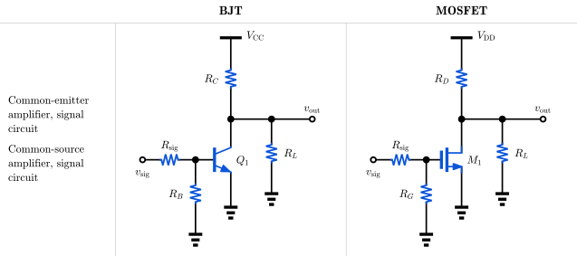
</div>
</div>
<p><strong>Sedra/Smith, Exercise 6.39</strong> (MOSFET)</p>
<p>The common-source amplifier whose bias was designed in Exercise 6.38 has the gate divider (<span class="math notranslate nohighlight">\(R_{G1}\parallel R_{G2}\)</span>) as its input bias resistance, a signal source of resistance <span class="math notranslate nohighlight">\(R_{sig}=0.1\,\mathrm{M}\Omega\)</span> coupled to the gate, the source resistor bypassed, and a load <span class="math notranslate nohighlight">\(R_L=20\,\mathrm{k}\Omega\)</span> coupled to the drain. Using <span class="math notranslate nohighlight">\(g_m=2\,\mathrm{mA/V}\)</span>, <span class="math notranslate nohighlight">\(r_o=200\,\mathrm{k}\Omega\)</span>, <span class="math notranslate nohighlight">\(R_D=18\,\mathrm{k}\Omega\)</span>, find the input resistance <span class="math notranslate nohighlight">\(R_{in}\)</span>, output resistance <span class="math notranslate nohighlight">\(R_o\)</span> and overall gain <span class="math notranslate nohighlight">\(G_v=v_o/v_{sig}\)</span>.</p>
<p>Given: <span class="math notranslate nohighlight">\(R_{G1}=5\,\mathrm{M}\Omega\)</span>, <span class="math notranslate nohighlight">\(R_{G2}=2.5\,\mathrm{M}\Omega\)</span>, <span class="math notranslate nohighlight">\(R_D=18\,\mathrm{k}\Omega\)</span>, <span class="math notranslate nohighlight">\(R_L=20\,\mathrm{k}\Omega\)</span>, <span class="math notranslate nohighlight">\(R_{sig}=0.1\,\mathrm{M}\Omega\)</span>, <span class="math notranslate nohighlight">\(g_m=2\,\mathrm{mA/V}\)</span>, <span class="math notranslate nohighlight">\(r_o=200\,\mathrm{k}\Omega\)</span></p>
<ol class="arabic simple">
<li><p><strong>Input resistance.</strong> <span class="math notranslate nohighlight">\(R_{in}=R_{G1}\parallel R_{G2}=5\parallel2.5=1.67\,\mathrm{M}\Omega\)</span></p></li>
<li><p><strong>Output resistance.</strong> <span class="math notranslate nohighlight">\(R_o=R_D\parallel r_o=18\parallel200=16.5\,\mathrm{k}\Omega\)</span></p></li>
<li><p><strong>Input divider.</strong> <span class="math notranslate nohighlight">\(\dfrac{v_{gs}}{v_{sig}}=\dfrac{R_{in}}{R_{in}+R_{sig}}=\dfrac{1.667}{1.767}=0.943\)</span></p></li>
<li><p><strong>Loaded gain.</strong> <span class="math notranslate nohighlight">\(A_v=-g_m(r_o\parallel R_D\parallel R_L)=-2\,(200\parallel18\parallel20)=-2(9.05)=-18.1\,\mathrm{V/V}\)</span></p></li>
<li><p><strong>Overall gain.</strong> <span class="math notranslate nohighlight">\(G_v=-0.943\times18.1=-17.1\,\mathrm{V/V}\)</span></p></li>
</ol>
<p><strong>Result.</strong> <span class="math notranslate nohighlight">\(R_{in}=1.67\,\mathrm{M}\Omega\)</span>, <span class="math notranslate nohighlight">\(R_o=16.5\,\mathrm{k}\Omega\)</span>, <span class="math notranslate nohighlight">\(G_v=-17.1\,\mathrm{V/V}\)</span></p>
<p>Checked: agrees with the answer in the solutions manual.</p>
<p><strong>Sedra/Smith, Exercise 6.42</strong> (BJT)</p>
<p>The common-emitter amplifier of Exercise 6.41 (<span class="math notranslate nohighlight">\(R_{B1}=182\,\mathrm{k}\Omega\)</span>, <span class="math notranslate nohighlight">\(R_{B2}=100\,\mathrm{k}\Omega\)</span>, <span class="math notranslate nohighlight">\(R_C=18\,\mathrm{k}\Omega\)</span>, emitter bypassed, <span class="math notranslate nohighlight">\(g_m=20\,\mathrm{mA/V}\)</span>, <span class="math notranslate nohighlight">\(r_\pi=5\,\mathrm{k}\Omega\)</span>, <span class="math notranslate nohighlight">\(r_o=200\,\mathrm{k}\Omega\)</span>) is driven by a source with <span class="math notranslate nohighlight">\(R_{sig}=10\,\mathrm{k}\Omega\)</span> and loaded by <span class="math notranslate nohighlight">\(R_L=20\,\mathrm{k}\Omega\)</span>. Find <span class="math notranslate nohighlight">\(R_{in}\)</span>, <span class="math notranslate nohighlight">\(R_o\)</span> and the overall gain <span class="math notranslate nohighlight">\(G_v\)</span>.</p>
<p>Given: <span class="math notranslate nohighlight">\(R_{B1}=182\,\mathrm{k}\Omega\)</span>, <span class="math notranslate nohighlight">\(R_{B2}=100\,\mathrm{k}\Omega\)</span>, <span class="math notranslate nohighlight">\(R_C=18\,\mathrm{k}\Omega\)</span>, <span class="math notranslate nohighlight">\(R_{sig}=10\,\mathrm{k}\Omega\)</span>, <span class="math notranslate nohighlight">\(R_L=20\,\mathrm{k}\Omega\)</span>, <span class="math notranslate nohighlight">\(g_m=20\,\mathrm{mA/V}\)</span>, <span class="math notranslate nohighlight">\(r_\pi=5\,\mathrm{k}\Omega\)</span>, <span class="math notranslate nohighlight">\(r_o=200\,\mathrm{k}\Omega\)</span></p>
<ol class="arabic simple">
<li><p><strong>Input resistance.</strong> <span class="math notranslate nohighlight">\(R_{in}=R_{B1}\parallel R_{B2}\parallel r_\pi=182\parallel100\parallel5=4.64\,\mathrm{k}\Omega\)</span></p></li>
<li><p><strong>Output resistance.</strong> <span class="math notranslate nohighlight">\(R_o=R_C\parallel r_o=18\parallel200=16.5\,\mathrm{k}\Omega\)</span></p></li>
<li><p><strong>Input divider.</strong> <span class="math notranslate nohighlight">\(\dfrac{R_{in}}{R_{in}+R_{sig}}=\dfrac{4.64}{14.64}=0.317\)</span></p></li>
<li><p><strong>Loaded gain.</strong> <span class="math notranslate nohighlight">\(-g_m(R_C\parallel R_L\parallel r_o)=-20\,(18\parallel20\parallel200)=-20(9.05)=-181\)</span></p></li>
<li><p><strong>Overall gain.</strong> <span class="math notranslate nohighlight">\(G_v=-0.317\times181=-57.4\,\mathrm{V/V}\)</span></p></li>
</ol>
<p><strong>Result.</strong> <span class="math notranslate nohighlight">\(R_{in}=4.64\,\mathrm{k}\Omega\)</span>, <span class="math notranslate nohighlight">\(R_o=16.5\,\mathrm{k}\Omega\)</span>, <span class="math notranslate nohighlight">\(G_v\approx-57.4\,\mathrm{V/V}\)</span></p>
<p>Checked: agrees with the answer in the solutions manual.</p>
</section>
<section id="id11">
<h3>Emitter follower / Source follower<a class="headerlink" href="#id11" title="Link to this heading">#</a></h3>
<div class="cell tag_hide-input docutils container">
<details class="admonition hide above-input">
<summary aria-label="Toggle hidden content">
<p class="collapsed admonition-title">Show code cell source</p>
<p class="expanded admonition-title">Hide code cell source</p>
</summary>
<div class="cell_input docutils container">
<div class="highlight-ipython3 notranslate"><div class="highlight"><pre><span></span><span class="c1"># HIDE/SHOW</span>
<span class="n">show</span><span class="p">(</span><span class="n">C</span><span class="o">.</span><span class="n">role_follower</span><span class="p">)</span>
</pre></div>
</div>
</div>
</details>
<div class="cell_output docutils container">

</div>
</div>
<p><strong>Razavi, Problem 5.71</strong> (BJT)</p>
<p>Emitter follower from <span class="math notranslate nohighlight">\(V_{CC}=2.5\,\mathrm{V}\)</span>: npn <span class="math notranslate nohighlight">\(Q_1\)</span> with its collector at <span class="math notranslate nohighlight">\(V_{CC}\)</span>, a <span class="math notranslate nohighlight">\(10\,\mathrm{k}\Omega\)</span> resistor from <span class="math notranslate nohighlight">\(V_{CC}\)</span> to the base, the input coupled to the base through a large capacitor <span class="math notranslate nohighlight">\(C_1\)</span>, a <span class="math notranslate nohighlight">\(1\,\mathrm{k}\Omega\)</span> resistor from the emitter to ground, and a <span class="math notranslate nohighlight">\(100\,\Omega\)</span> load coupled to the emitter through a large capacitor <span class="math notranslate nohighlight">\(C_2\)</span>. <span class="math notranslate nohighlight">\(I_S=7\times10^{-16}\,\mathrm{A}\)</span>, <span class="math notranslate nohighlight">\(\beta=100\)</span>, <span class="math notranslate nohighlight">\(V_A=5\,\mathrm{V}\)</span> for the small-signal model (<span class="math notranslate nohighlight">\(V_A=\infty\)</span> for the bias). Find the voltage gain <span class="math notranslate nohighlight">\(v_{out}/v_{in}\)</span>.</p>
<p>Given: <span class="math notranslate nohighlight">\(V_{CC}=2.5\,\mathrm{V}\)</span>, <span class="math notranslate nohighlight">\(R_1=10\,\mathrm{k}\Omega\)</span>, <span class="math notranslate nohighlight">\(R_E=1\,\mathrm{k}\Omega\)</span>, <span class="math notranslate nohighlight">\(R_L=100\,\Omega\)</span>, <span class="math notranslate nohighlight">\(I_S=7\times10^{-16}\,\mathrm{A}\)</span>, <span class="math notranslate nohighlight">\(\beta=100\)</span>, <span class="math notranslate nohighlight">\(V_A=5\,\mathrm{V}\)</span></p>
<ol class="arabic simple">
<li><p><strong>Loop through the base.</strong> <span class="math notranslate nohighlight">\(V_{CC}=R_1I_B+V_{BE}+(\beta+1)I_BR_E\)</span> with <span class="math notranslate nohighlight">\(V_{BE}=V_T\ln(\beta I_B/I_S)\)</span>.</p></li>
<li><p><strong>Solve by iteration.</strong> Starting from <span class="math notranslate nohighlight">\(I_C=1\,\mathrm{mA}\)</span> and updating: <span class="math notranslate nohighlight">\(I_B=15.9\,\mu\mathrm{A}\)</span>, <span class="math notranslate nohighlight">\(I_C=1.59\,\mathrm{mA}\)</span>, <span class="math notranslate nohighlight">\(V_{BE}=0.740\,\mathrm{V}\)</span>.</p></li>
<li><p><strong>Check the region.</strong> <span class="math notranslate nohighlight">\(V_B=2.5-10\,\mathrm{k}\Omega\times15.9\,\mu\mathrm{A}=2.34\,\mathrm{V}\)</span> and the collector is at <span class="math notranslate nohighlight">\(2.5\,\mathrm{V}\)</span>: base-collector reverse biased, active.</p></li>
<li><p><strong>Small-signal parameters.</strong> <span class="math notranslate nohighlight">\(g_m=I_C/V_T=61.0\,\mathrm{mS}\)</span> (<span class="math notranslate nohighlight">\(1/g_m=16.4\,\Omega\)</span>), <span class="math notranslate nohighlight">\(r_\pi=\beta/g_m=1.64\,\mathrm{k}\Omega\)</span>, <span class="math notranslate nohighlight">\(r_O=V_A/I_C=3.15\,\mathrm{k}\Omega\)</span>.</p></li>
<li><p><strong>Load at the emitter.</strong> <span class="math notranslate nohighlight">\(C_2\)</span> is a short, so the emitter sees <span class="math notranslate nohighlight">\(R_E\parallel R_L\parallel r_O=1\,\mathrm{k}\Omega\parallel100\,\Omega\parallel3.15\,\mathrm{k}\Omega=88.4\,\Omega\)</span>.</p></li>
<li><p><strong>Voltage gain.</strong> <span class="math notranslate nohighlight">\(R_1\)</span> only loads the ideal input source, so <span class="math notranslate nohighlight">\(A_v=\dfrac{88.4}{88.4+r_\pi/(\beta+1)}=\dfrac{88.4}{88.4+16.2}=0.845\)</span>.</p></li>
</ol>
<p><strong>Result.</strong> <span class="math notranslate nohighlight">\(A_v\approx0.845\)</span> (<span class="math notranslate nohighlight">\(I_C=1.59\,\mathrm{mA}\)</span>)</p>
<p>Checked by computation; the book gives no answer.</p>
</section>
<section id="id12">
<h3>Other Circuits<a class="headerlink" href="#id12" title="Link to this heading">#</a></h3>
<p><strong>Razavi, Example 5.31</strong> (BJT)</p>
<p>An npn transistor <span class="math notranslate nohighlight">\(Q_1\)</span> has its emitter grounded, its collector connected to <span class="math notranslate nohighlight">\(V_{CC}\)</span> through <span class="math notranslate nohighlight">\(R_C=1\,\mathrm{k}\Omega\)</span> (output taken there), and its base connected to <span class="math notranslate nohighlight">\(V_{CC}\)</span> through <span class="math notranslate nohighlight">\(R_B=100\,\mathrm{k}\Omega\)</span>. A microphone whose low-frequency resistance is <span class="math notranslate nohighlight">\(100\,\Omega\)</span> is connected directly between the base and ground. Show why <span class="math notranslate nohighlight">\(Q_1\)</span> carries no current, i.e. find the dc base voltage.</p>
<p>Given: <span class="math notranslate nohighlight">\(V_{CC}=2.5\,\mathrm{V}\)</span>, <span class="math notranslate nohighlight">\(R_B=100\,\mathrm{k}\Omega\)</span>, <span class="math notranslate nohighlight">\(R_C=1\,\mathrm{k}\Omega\)</span>, microphone <span class="math notranslate nohighlight">\(R_m=100\,\Omega\)</span></p>
<ol class="arabic simple">
<li><p><strong>DC model of the microphone.</strong> At dc the microphone is a <span class="math notranslate nohighlight">\(100\,\Omega\)</span> resistor from base to ground, so it forms a voltage divider with <span class="math notranslate nohighlight">\(R_B\)</span> (the base current is negligible, as will be confirmed).</p></li>
<li><p><strong>Base voltage.</strong> <span class="math notranslate nohighlight">\(V_X=\dfrac{R_m}{R_B+R_m}V_{CC}=\dfrac{100}{100\,000+100}\times2.5\,\mathrm{V}=2.50\,\mathrm{mV}\)</span>.</p></li>
<li><p><strong>Compare with what <span class="math notranslate nohighlight">\(Q_1\)</span> needs.</strong> A conducting transistor needs <span class="math notranslate nohighlight">\(V_{BE}\approx0.7\)</span> to <span class="math notranslate nohighlight">\(0.8\,\mathrm{V}\)</span>. At <span class="math notranslate nohighlight">\(V_{BE}=2.5\,\mathrm{mV}\)</span>, <span class="math notranslate nohighlight">\(I_C=I_S\exp(V_{BE}/V_T)=I_S\,e^{0.096}\approx1.1\,I_S\)</span>, which is of the order of femtoamperes: the transistor is off.</p></li>
<li><p><strong>Conclusion.</strong> The resistor <span class="math notranslate nohighlight">\(R_B\)</span> can supply at most <span class="math notranslate nohighlight">\(V_{CC}/R_B=25\,\mu\mathrm{A}\)</span> and the microphone sinks it at only <span class="math notranslate nohighlight">\(2.5\,\mathrm{mV}\)</span>, so the bias is destroyed and no amplification occurs. A coupling capacitor in series with the microphone isolates the dc bias.</p></li>
</ol>
<p><strong>Result.</strong> <span class="math notranslate nohighlight">\(V_X\approx2.5\,\mathrm{mV}\ll V_{BE,on}\)</span>, so <span class="math notranslate nohighlight">\(Q_1\)</span> is off (<span class="math notranslate nohighlight">\(I_C\approx I_S\)</span>-level, essentially <span class="math notranslate nohighlight">\(0\)</span>)</p>
<p>Checked: agrees with the answer in the book.</p>
<p><strong>Razavi, Example 5.32</strong> (BJT)</p>
<p>The microphone circuit is fixed with a series coupling capacitor <span class="math notranslate nohighlight">\(C_1\)</span> at the input: an npn <span class="math notranslate nohighlight">\(Q_1\)</span> has <span class="math notranslate nohighlight">\(R_B=100\,\mathrm{k}\Omega\)</span> from <span class="math notranslate nohighlight">\(V_{CC}=2.5\,\mathrm{V}\)</span> to its base, <span class="math notranslate nohighlight">\(R_C=1\,\mathrm{k}\Omega\)</span> from <span class="math notranslate nohighlight">\(V_{CC}\)</span> to the collector, and the emitter grounded. A loudspeaker is now connected directly from the collector to ground. A speaker contains a solenoid whose dc resistance is below <span class="math notranslate nohighlight">\(1\,\Omega\)</span>. Explain why the circuit still fails.</p>
<p>Given: <span class="math notranslate nohighlight">\(V_{CC}=2.5\,\mathrm{V}\)</span>, <span class="math notranslate nohighlight">\(R_B=100\,\mathrm{k}\Omega\)</span>, <span class="math notranslate nohighlight">\(R_C=1\,\mathrm{k}\Omega\)</span>, speaker dc resistance <span class="math notranslate nohighlight">\(\le1\,\Omega\)</span> (taken as <span class="math notranslate nohighlight">\(1\,\Omega\)</span>)</p>
<ol class="arabic simple">
<li><p><strong>DC model of the speaker.</strong> The coupling capacitor blocks dc, so bias is fixed by <span class="math notranslate nohighlight">\(R_B\)</span>, <span class="math notranslate nohighlight">\(R_C\)</span> and the transistor. The speaker is a dc short-circuit (about <span class="math notranslate nohighlight">\(1\,\Omega\)</span>) from the collector to ground.</p></li>
<li><p><strong>Highest possible collector voltage.</strong> Even with <span class="math notranslate nohighlight">\(Q_1\)</span> completely off, <span class="math notranslate nohighlight">\(R_C\)</span> and the speaker form a divider: <span class="math notranslate nohighlight">\(V_C\le\dfrac{1\,\Omega}{1\,\mathrm{k}\Omega+1\,\Omega}\times2.5\,\mathrm{V}=2.5\,\mathrm{mV}\)</span>.</p></li>
<li><p><strong>Region of operation.</strong> The base is at <span class="math notranslate nohighlight">\(V_{BE}\approx0.7\)</span> to <span class="math notranslate nohighlight">\(0.8\,\mathrm{V}\)</span> while the collector is at no more than a few millivolts, so <span class="math notranslate nohighlight">\(V_{BC}\approx V_{BE}-V_C\approx0.7\)</span> to <span class="math notranslate nohighlight">\(0.8\,\mathrm{V}&gt;0\)</span>: the collector-base junction is forward biased and <span class="math notranslate nohighlight">\(Q_1\)</span> is in deep saturation, not in the active region.</p></li>
<li><p><strong>Conclusion.</strong> The collector cannot take any signal swing (it is held at about <span class="math notranslate nohighlight">\(0\,\mathrm{V}\)</span>), and the transistor has no gain. The speaker must be coupled through a capacitor, as in the next example.</p></li>
</ol>
<p><strong>Result.</strong> The speaker shorts the collector to ground at dc, so <span class="math notranslate nohighlight">\(V_C\approx0\)</span> and <span class="math notranslate nohighlight">\(Q_1\)</span> is in deep saturation; the circuit has no gain</p>
<p>Checked by computation; the book gives no answer.</p>
<p><strong>Razavi, Example 5.33</strong> (BJT)</p>
<p>A common-emitter amplifier has <span class="math notranslate nohighlight">\(R_B=100\,\mathrm{k}\Omega\)</span> from <span class="math notranslate nohighlight">\(V_{CC}=2.5\,\mathrm{V}\)</span> to the base, <span class="math notranslate nohighlight">\(R_C=1\,\mathrm{k}\Omega\)</span> from <span class="math notranslate nohighlight">\(V_{CC}\)</span> to the collector, an input coupling capacitor, and an output coupling capacitor <span class="math notranslate nohighlight">\(C_2\)</span> to an <span class="math notranslate nohighlight">\(8\,\Omega\)</span> speaker. The measured dc collector voltage is <span class="math notranslate nohighlight">\(1.5\,\mathrm{V}\)</span> (active region). With <span class="math notranslate nohighlight">\(I_S=5\times10^{-17}\,\mathrm{A}\)</span> and <span class="math notranslate nohighlight">\(V_A=\infty\)</span>: (a) find <span class="math notranslate nohighlight">\(\beta\)</span>; (b) explain why there is no gain by finding <span class="math notranslate nohighlight">\(\lvert A_v\rvert\)</span>.</p>
<p>Given: <span class="math notranslate nohighlight">\(V_{CC}=2.5\,\mathrm{V}\)</span>, <span class="math notranslate nohighlight">\(R_B=100\,\mathrm{k}\Omega\)</span>, <span class="math notranslate nohighlight">\(R_C=1\,\mathrm{k}\Omega\)</span>, <span class="math notranslate nohighlight">\(R_{sp}=8\,\Omega\)</span>, <span class="math notranslate nohighlight">\(V_C=1.5\,\mathrm{V}\)</span>, <span class="math notranslate nohighlight">\(I_S=5\times10^{-17}\,\mathrm{A}\)</span>, <span class="math notranslate nohighlight">\(V_T=26\,\mathrm{mV}\)</span></p>
<ol class="arabic simple">
<li><p><strong>(a) Collector current.</strong> The drop across <span class="math notranslate nohighlight">\(R_C\)</span> is <span class="math notranslate nohighlight">\(2.5-1.5=1.0\,\mathrm{V}\)</span>, so <span class="math notranslate nohighlight">\(I_C=\dfrac{1\,\mathrm{V}}{1\,\mathrm{k}\Omega}=1\,\mathrm{mA}\)</span> (the capacitors carry no dc).</p></li>
<li><p><strong>(a) Base-emitter voltage.</strong> <span class="math notranslate nohighlight">\(V_{BE}=V_T\ln\dfrac{I_C}{I_S}=26\,\mathrm{mV}\times\ln(2\times10^{13})=796\,\mathrm{mV}\)</span>.</p></li>
<li><p><strong>(a) Base current and <span class="math notranslate nohighlight">\(eta\)</span>.</strong> <span class="math notranslate nohighlight">\(I_B=\dfrac{V_{CC}-V_{BE}}{R_B}=\dfrac{2.5-0.796}{100\,\mathrm{k}\Omega}=17.0\,\mu\mathrm{A}\)</span>, so <span class="math notranslate nohighlight">\(\beta=\dfrac{I_C}{I_B}=58.7\)</span>.</p></li>
<li><p><strong>(b) Small-signal parameter.</strong> <span class="math notranslate nohighlight">\(g_m=\dfrac{I_C}{V_T}=38.5\,\mathrm{mS}\)</span>.</p></li>
<li><p><strong>(b) Load seen by the collector.</strong> For signals, <span class="math notranslate nohighlight">\(C_2\)</span> is a short, so the <span class="math notranslate nohighlight">\(8\,\Omega\)</span> speaker is in parallel with <span class="math notranslate nohighlight">\(R_C\)</span>: <span class="math notranslate nohighlight">\(R_C\parallel R_{sp}=1000\parallel8=7.94\,\Omega\)</span>.</p></li>
<li><p><strong>(b) Gain.</strong> <span class="math notranslate nohighlight">\(\lvert A_v\rvert=g_m(R_C\parallel R_{sp})=38.5\,\mathrm{mS}\times7.94\,\Omega=0.305\)</span>: the stage attenuates. Its output resistance (<span class="math notranslate nohighlight">\(\approx R_C=1\,\mathrm{k}\Omega\)</span>) is far larger than the load, so almost all of the signal is lost across <span class="math notranslate nohighlight">\(R_C\)</span>.</p></li>
</ol>
<p><strong>Result.</strong> (a) <span class="math notranslate nohighlight">\(\beta\approx58.7\)</span>; (b) <span class="math notranslate nohighlight">\(\lvert A_v\rvert\approx0.305&lt;1\)</span> because <span class="math notranslate nohighlight">\(R_C\parallel R_{sp}\approx8\,\Omega\)</span></p>
<p>Checked: agrees with the answer in the book.</p>
<p><strong>Razavi, Problem 5.53</strong> (BJT), the same as Razavi, Example 5.33 with other values</p>
<p>Repeat Example 5-33 with <span class="math notranslate nohighlight">\(R_B=25\,\mathrm{k}\Omega\)</span> and <span class="math notranslate nohighlight">\(R_C=250\,\Omega\)</span>: a common-emitter stage on <span class="math notranslate nohighlight">\(V_{CC}=2.5\,\mathrm{V}\)</span> biased by <span class="math notranslate nohighlight">\(R_B\)</span> from <span class="math notranslate nohighlight">\(V_{CC}\)</span> to the base, with <span class="math notranslate nohighlight">\(R_C\)</span> from <span class="math notranslate nohighlight">\(V_{CC}\)</span> to the collector, input and output coupling capacitors and an <span class="math notranslate nohighlight">\(8\,\Omega\)</span> speaker as the load. The collector bias voltage is measured at <span class="math notranslate nohighlight">\(1.5\,\mathrm{V}\)</span>; <span class="math notranslate nohighlight">\(I_S=5\times10^{-17}\,\mathrm{A}\)</span>, <span class="math notranslate nohighlight">\(V_A=\infty\)</span>. Find <span class="math notranslate nohighlight">\(\beta\)</span> and the voltage gain. Is the gain greater than one?</p>
<p>Given: <span class="math notranslate nohighlight">\(V_{CC}=2.5\,\mathrm{V}\)</span>, <span class="math notranslate nohighlight">\(R_B=25\,\mathrm{k}\Omega\)</span>, <span class="math notranslate nohighlight">\(R_C=250\,\Omega\)</span>, <span class="math notranslate nohighlight">\(R_{sp}=8\,\Omega\)</span>, <span class="math notranslate nohighlight">\(V_C=1.5\,\mathrm{V}\)</span>, <span class="math notranslate nohighlight">\(I_S=5\times10^{-17}\,\mathrm{A}\)</span>, <span class="math notranslate nohighlight">\(V_A=\infty\)</span></p>
<ol class="arabic simple">
<li><p><strong>Collector current.</strong> <span class="math notranslate nohighlight">\(I_C=\dfrac{V_{CC}-V_C}{R_C}=\dfrac{1\,\mathrm{V}}{250\,\Omega}=4.00\,\mathrm{mA}\)</span>.</p></li>
<li><p><strong>Base-emitter voltage.</strong> <span class="math notranslate nohighlight">\(V_{BE}=V_T\ln\dfrac{I_C}{I_S}=26\,\mathrm{mV}\cdot\ln\dfrac{4\times10^{-3}}{5\times10^{-17}}=832\,\mathrm{mV}\)</span>.</p></li>
<li><p><strong>Base current and <span class="math notranslate nohighlight">\(eta\)</span>.</strong> <span class="math notranslate nohighlight">\(I_B=\dfrac{V_{CC}-V_{BE}}{R_B}=\dfrac{1.668\,\mathrm{V}}{25\,\mathrm{k}\Omega}=66.7\,\mu\mathrm{A}\)</span>, so <span class="math notranslate nohighlight">\(\beta=I_C/I_B=60.0\)</span>.</p></li>
<li><p><strong>Load at the collector.</strong> With the capacitors shorted, the speaker is in parallel with <span class="math notranslate nohighlight">\(R_C\)</span>: <span class="math notranslate nohighlight">\(R_C\parallel R_{sp}=250\parallel8=7.75\,\Omega\)</span>.</p></li>
<li><p><strong>Gain.</strong> <span class="math notranslate nohighlight">\(g_m=I_C/V_T=154\,\mathrm{mS}\)</span>, <span class="math notranslate nohighlight">\(\lvert A_v\rvert=g_m(R_C\parallel R_{sp})=1.19\)</span>.</p></li>
<li><p><strong>Conclusion.</strong> The gain is just above unity (compared with <span class="math notranslate nohighlight">\(0.31\)</span> in Example 5-33): raising <span class="math notranslate nohighlight">\(I_C\)</span> fourfold raises <span class="math notranslate nohighlight">\(g_m\)</span> fourfold, but the <span class="math notranslate nohighlight">\(8\,\Omega\)</span> load still dominates the collector impedance, so a buffer is the real cure.</p></li>
</ol>
<p><strong>Result.</strong> <span class="math notranslate nohighlight">\(\beta=60.0\)</span>, <span class="math notranslate nohighlight">\(\lvert A_v\rvert=1.19\)</span>: yes, slightly greater than one</p>
<p>Checked by computation; the book gives no answer.</p>
<p><strong>Razavi, Example 5.40</strong> (BJT)</p>
<p>A common-base stage has its base held at a dc voltage <span class="math notranslate nohighlight">\(V_b\)</span> and a resistor <span class="math notranslate nohighlight">\(R_C\)</span> from the collector to <span class="math notranslate nohighlight">\(V_{CC}\)</span>. To keep the signal source from disturbing the bias, the source <span class="math notranslate nohighlight">\(v_{in}\)</span> is connected to the emitter through a series coupling capacitor <span class="math notranslate nohighlight">\(C_1\)</span>, and nothing else is connected to the emitter. Explain why the circuit does not work.</p>
<p>Given: <span class="math notranslate nohighlight">\(V_b\)</span> fixed, <span class="math notranslate nohighlight">\(R_C\)</span>, coupling capacitor <span class="math notranslate nohighlight">\(C_1\)</span> at the emitter, no other emitter connection</p>
<ol class="arabic simple">
<li><p><strong>DC analysis.</strong> For bias, <span class="math notranslate nohighlight">\(C_1\)</span> is an open circuit. The emitter is then connected to nothing, so there is no dc path for the emitter current: <span class="math notranslate nohighlight">\(I_E=0\)</span>.</p></li>
<li><p><strong>Collector current.</strong> <span class="math notranslate nohighlight">\(I_C=\alpha I_E=0\)</span> (apart from leakage), hence <span class="math notranslate nohighlight">\(V_{out}=V_{CC}-R_CI_C=V_{CC}\)</span>.</p></li>
<li><p><strong>Small-signal consequence.</strong> <span class="math notranslate nohighlight">\(g_m=I_C/V_T=0\)</span>, so <span class="math notranslate nohighlight">\(A_v=g_mR_C=0\)</span>: the stage has no gain.</p></li>
<li><p><strong>Analogy.</strong> This is the common-base counterpart of the common-emitter circuit with no base-current path: the terminal that supplies the current needs a dc connection (here a resistor to ground or a current source).</p></li>
</ol>
<p><strong>Result.</strong> No dc path for the emitter current, so <span class="math notranslate nohighlight">\(I_E=I_C=0\)</span>, <span class="math notranslate nohighlight">\(g_m=0\)</span> and <span class="math notranslate nohighlight">\(A_v=0\)</span></p>
<p>Checked by computation; the book gives no answer.</p>
<p><strong>Razavi, Example 5.41</strong> (BJT)</p>
<p>To fix the missing bias path of the previous common-base circuit (base at a dc voltage <span class="math notranslate nohighlight">\(V_b\)</span>, collector resistor <span class="math notranslate nohighlight">\(R_C\)</span> to <span class="math notranslate nohighlight">\(V_{CC}\)</span>, signal <span class="math notranslate nohighlight">\(v_{in}\)</span> coupled through <span class="math notranslate nohighlight">\(C_1\)</span>), a student ties the emitter directly to ground so that <span class="math notranslate nohighlight">\(V_{BE}=V_b\)</span> and a collector current can flow. Explain why this also fails.</p>
<p>Given: <span class="math notranslate nohighlight">\(V_b\)</span> fixed, <span class="math notranslate nohighlight">\(R_C\)</span> to <span class="math notranslate nohighlight">\(V_{CC}\)</span>, emitter wired to ground at the node where the capacitor <span class="math notranslate nohighlight">\(C_1\)</span> ends</p>
<ol class="arabic simple">
<li><p><strong>DC effect.</strong> With the emitter at ground, <span class="math notranslate nohighlight">\(V_{BE}=V_b\)</span> and <span class="math notranslate nohighlight">\(I_C=I_S\exp(V_b/V_T)\)</span> flows, so the bias point can be set (a suitable <span class="math notranslate nohighlight">\(V_b\)</span> is needed to avoid saturation).</p></li>
<li><p><strong>Small-signal effect.</strong> The emitter node is a fixed <span class="math notranslate nohighlight">\(0\,\mathrm{V}\)</span> for all signals as well: it is shorted to ground, so the signal source (behind <span class="math notranslate nohighlight">\(C_1\)</span>) is also shorted and cannot change the emitter voltage.</p></li>
<li><p><strong>Consequence.</strong> <span class="math notranslate nohighlight">\(v_e=0\)</span> for any <span class="math notranslate nohighlight">\(v_{in}\)</span>, so <span class="math notranslate nohighlight">\(v_{BE}\)</span> and therefore <span class="math notranslate nohighlight">\(i_C\)</span> do not change: <span class="math notranslate nohighlight">\(v_{out}=0\)</span> and the gain is zero.</p></li>
<li><p><strong>Moral.</strong> The emitter must be neither open (no bias) nor shorted to ground (no signal); it needs a bias element such as a resistor <span class="math notranslate nohighlight">\(R_E\)</span> to ground or a current source.</p></li>
</ol>
<p><strong>Result.</strong> The emitter wired to ground also shorts the signal to ground: <span class="math notranslate nohighlight">\(v_e=0\)</span>, <span class="math notranslate nohighlight">\(v_{out}=0\)</span>, no gain</p>
<p>Checked by computation; the book gives no answer. Note: The book figure 5.79 shows C1 between the source and the emitter and I could not see the ground wire of the emitter in the printed figure; the description follows the book text (“connects the emitter to ground”, “shorted the signal to ac ground”). Qualitative item.</p>
<p><strong>Razavi, Example 5.48</strong> (BJT)</p>
<p>A common-emitter stage: the source <span class="math notranslate nohighlight">\(v_{in}\)</span> with series resistance <span class="math notranslate nohighlight">\(R_S\)</span> drives the base directly. A resistor <span class="math notranslate nohighlight">\(R_1\)</span> connects the base to a node <span class="math notranslate nohighlight">\(M\)</span>, and <span class="math notranslate nohighlight">\(R_2\)</span> connects <span class="math notranslate nohighlight">\(M\)</span> to the collector; <span class="math notranslate nohighlight">\(M\)</span> is tied to ground by a very large capacitor <span class="math notranslate nohighlight">\(C_1\)</span>. The collector also has <span class="math notranslate nohighlight">\(R_C\)</span> to <span class="math notranslate nohighlight">\(V_{CC}\)</span> (output at the collector) and the emitter has <span class="math notranslate nohighlight">\(R_E\)</span> to ground. Find the small-signal voltage gain <span class="math notranslate nohighlight">\(v_{out}/v_{in}\)</span> (<span class="math notranslate nohighlight">\(V_A=\infty\)</span>).</p>
<p>Given: symbolic: <span class="math notranslate nohighlight">\(R_S\)</span>, <span class="math notranslate nohighlight">\(R_1\)</span>, <span class="math notranslate nohighlight">\(R_2\)</span>, <span class="math notranslate nohighlight">\(R_C\)</span>, <span class="math notranslate nohighlight">\(R_E\)</span>, <span class="math notranslate nohighlight">\(g_m\)</span>, <span class="math notranslate nohighlight">\(\beta\)</span>; <span class="math notranslate nohighlight">\(V_A=\infty\)</span>, <span class="math notranslate nohighlight">\(C_1\to\infty\)</span></p>
<ol class="arabic simple">
<li><p><strong>AC simplification.</strong> <span class="math notranslate nohighlight">\(C_1\)</span> (large) and <span class="math notranslate nohighlight">\(V_{CC}\)</span> are ac grounds. So <span class="math notranslate nohighlight">\(R_1\)</span> goes from the base to ground and <span class="math notranslate nohighlight">\(R_2\)</span> from the collector to ground, in parallel with <span class="math notranslate nohighlight">\(R_C\)</span>.</p></li>
<li><p><strong>Thevenin source at the base.</strong> <span class="math notranslate nohighlight">\(v_{Thev}=\dfrac{R_1}{R_1+R_S}v_{in}\)</span> and <span class="math notranslate nohighlight">\(R_{Thev}=R_1\parallel R_S\)</span>.</p></li>
<li><p><strong>Gain of a degenerated stage fed from <span class="math notranslate nohighlight">\(R_{Thev}\)</span>.</strong> Write <span class="math notranslate nohighlight">\(i_B=\dfrac{v_{Thev}}{R_{Thev}+r_\pi+(\beta+1)R_E}\)</span> and <span class="math notranslate nohighlight">\(v_{out}=-\beta i_B\,(R_2\parallel R_C)\)</span>. With <span class="math notranslate nohighlight">\(r_\pi/(\beta+1)\approx1/g_m\)</span> and <span class="math notranslate nohighlight">\(\beta/(\beta+1)\approx1\)</span>: <span class="math notranslate nohighlight">\(\dfrac{v_{out}}{v_{Thev}}=-\dfrac{R_2\parallel R_C}{\dfrac{R_{Thev}}{\beta+1}+\dfrac{1}{g_m}+R_E}\)</span>.</p></li>
<li><p><strong>Include the input divider.</strong> <span class="math notranslate nohighlight">\(\dfrac{v_{out}}{v_{in}}=-\dfrac{R_2\parallel R_C}{\dfrac{R_1\parallel R_S}{\beta+1}+\dfrac{1}{g_m}+R_E}\cdot\dfrac{R_1}{R_1+R_S}\)</span>.</p></li>
</ol>
<p><strong>Result.</strong> <span class="math notranslate nohighlight">\(A_v=-\dfrac{R_2\parallel R_C}{\dfrac{R_1\parallel R_S}{\beta+1}+\dfrac{1}{g_m}+R_E}\cdot\dfrac{R_1}{R_1+R_S}\)</span></p>
<p>Checked: agrees with the answer in the book.</p>
<p><strong>Razavi, Example 5.49</strong> (BJT)</p>
<p>A common-emitter stage: the source <span class="math notranslate nohighlight">\(v_{in}\)</span> with series resistance <span class="math notranslate nohighlight">\(R_S\)</span> is coupled through <span class="math notranslate nohighlight">\(C_1\)</span> to the base. A resistor <span class="math notranslate nohighlight">\(R_1\)</span> connects the base to a node <span class="math notranslate nohighlight">\(M\)</span> and a resistor <span class="math notranslate nohighlight">\(R_2\)</span> connects <span class="math notranslate nohighlight">\(M\)</span> to the emitter; <span class="math notranslate nohighlight">\(M\)</span> is tied to ground by a very large capacitor <span class="math notranslate nohighlight">\(C_2\)</span>, and the emitter also feeds a current source <span class="math notranslate nohighlight">\(I_1\)</span> to ground. The collector has <span class="math notranslate nohighlight">\(R_C\)</span> to <span class="math notranslate nohighlight">\(V_{CC}\)</span> (output at the collector). Find the voltage gain with <span class="math notranslate nohighlight">\(V_A=\infty\)</span>.</p>
<p>Given: symbolic: <span class="math notranslate nohighlight">\(R_S\)</span>, <span class="math notranslate nohighlight">\(R_1\)</span>, <span class="math notranslate nohighlight">\(R_2\)</span>, <span class="math notranslate nohighlight">\(R_C\)</span>, <span class="math notranslate nohighlight">\(g_m\)</span>, <span class="math notranslate nohighlight">\(\beta\)</span>; <span class="math notranslate nohighlight">\(V_A=\infty\)</span>, <span class="math notranslate nohighlight">\(C_1\)</span>, <span class="math notranslate nohighlight">\(C_2\to\infty\)</span></p>
<ol class="arabic simple">
<li><p><strong>AC simplification.</strong> <span class="math notranslate nohighlight">\(C_1\)</span> and <span class="math notranslate nohighlight">\(C_2\)</span> are shorts and the ideal current source <span class="math notranslate nohighlight">\(I_1\)</span> is open. Then <span class="math notranslate nohighlight">\(R_1\)</span> goes from the base to ground, and <span class="math notranslate nohighlight">\(R_2\)</span> from the emitter to ground: <span class="math notranslate nohighlight">\(R_2\)</span> is an emitter-degeneration resistor.</p></li>
<li><p><strong>Thevenin source at the base.</strong> <span class="math notranslate nohighlight">\(v_{Thev}=\dfrac{R_1}{R_1+R_S}v_{in}\)</span>, <span class="math notranslate nohighlight">\(R_{Thev}=R_S\parallel R_1\)</span>.</p></li>
<li><p><strong>Degenerated-stage gain.</strong> <span class="math notranslate nohighlight">\(\dfrac{v_{out}}{v_{Thev}}=-\dfrac{R_C}{\dfrac{R_{Thev}}{\beta+1}+\dfrac{1}{g_m}+R_2}\)</span> (same derivation as in the previous example, with <span class="math notranslate nohighlight">\(R_E\to R_2\)</span> and the load <span class="math notranslate nohighlight">\(R_C\)</span> only).</p></li>
<li><p><strong>Include the divider.</strong> <span class="math notranslate nohighlight">\(\dfrac{v_{out}}{v_{in}}=-\dfrac{R_C}{\dfrac{R_S\parallel R_1}{\beta+1}+\dfrac{1}{g_m}+R_2}\cdot\dfrac{R_1}{R_1+R_S}\)</span>.</p></li>
</ol>
<p><strong>Result.</strong> <span class="math notranslate nohighlight">\(A_v=-\dfrac{R_C}{\dfrac{R_S\parallel R_1}{\beta+1}+\dfrac{1}{g_m}+R_2}\cdot\dfrac{R_1}{R_1+R_S}\)</span></p>
<p>Checked: agrees with the answer in the book.</p>
<p><strong>Razavi, Problem 5.51</strong> (BJT)</p>
<p>A common-emitter stage is biased by a single resistor <span class="math notranslate nohighlight">\(R_B\)</span> from <span class="math notranslate nohighlight">\(V_{CC}\)</span> to the base, and the input is coupled to the base by a capacitor, so the input impedance is <span class="math notranslate nohighlight">\(R_{in}=R_B\parallel r_\pi\)</span>. Writing <span class="math notranslate nohighlight">\(r_\pi=\beta V_T/I_C\)</span>, show that <span class="math notranslate nohighlight">\(R_{in}\)</span> stays close to <span class="math notranslate nohighlight">\(r_\pi\)</span> when <span class="math notranslate nohighlight">\(I_BR_B\gg V_T\)</span>, and explain why this condition holds in practice.</p>
<p>Given: <span class="math notranslate nohighlight">\(R_{in}=R_B\parallel r_\pi\)</span>, <span class="math notranslate nohighlight">\(r_\pi=\beta V_T/I_C\)</span>, <span class="math notranslate nohighlight">\(I_B=I_C/\beta\)</span>, <span class="math notranslate nohighlight">\(I_BR_B=V_{CC}-V_{BE}\)</span></p>
<ol class="arabic simple">
<li><p><strong>Expand the parallel combination.</strong> <span class="math notranslate nohighlight">\(R_{in}=\dfrac{R_Br_\pi}{R_B+r_\pi}=\dfrac{r_\pi}{1+r_\pi/R_B}\)</span>.</p></li>
<li><p><strong>Use <span class="math notranslate nohighlight">\(r_\pi=eta V_T/I_C\)</span>.</strong> <span class="math notranslate nohighlight">\(\dfrac{r_\pi}{R_B}=\dfrac{\beta V_T}{I_CR_B}=\dfrac{V_T}{I_BR_B}\)</span>, so <span class="math notranslate nohighlight">\(R_{in}=\dfrac{r_\pi}{1+V_T/(I_BR_B)}\)</span>.</p></li>
<li><p><strong>Condition.</strong> If <span class="math notranslate nohighlight">\(I_BR_B\gg V_T\)</span>, then <span class="math notranslate nohighlight">\(V_T/(I_BR_B)\ll1\)</span> and <span class="math notranslate nohighlight">\(R_{in}\approx r_\pi\)</span>.</p></li>
<li><p><strong>Why it holds.</strong> The bias resistor carries the base current from <span class="math notranslate nohighlight">\(V_{CC}\)</span> to the base: <span class="math notranslate nohighlight">\(I_BR_B=V_{CC}-V_{BE}\geq0.5\,\mathrm{V}\)</span>, about 20 times <span class="math notranslate nohighlight">\(V_T=26\,\mathrm{mV}\)</span>, so <span class="math notranslate nohighlight">\(R_{in}\geq r_\pi/1.052=0.951\,r_\pi\)</span>.</p></li>
<li><p><strong>Example.</strong> With <span class="math notranslate nohighlight">\(V_{CC}=2.5\,\mathrm{V}\)</span>, <span class="math notranslate nohighlight">\(V_{BE}=0.8\,\mathrm{V}\)</span>, <span class="math notranslate nohighlight">\(I_C=1\,\mathrm{mA}\)</span>, <span class="math notranslate nohighlight">\(\beta=100\)</span>: <span class="math notranslate nohighlight">\(R_B=170\,\mathrm{k}\Omega\)</span>, <span class="math notranslate nohighlight">\(r_\pi=2.60\,\mathrm{k}\Omega\)</span>, <span class="math notranslate nohighlight">\(R_{in}=2.56\,\mathrm{k}\Omega=0.985\,r_\pi\)</span>.</p></li>
</ol>
<p><strong>Result.</strong> <span class="math notranslate nohighlight">\(R_{in}=\dfrac{r_\pi}{1+V_T/(I_BR_B)}\approx r_\pi\)</span> since <span class="math notranslate nohighlight">\(I_BR_B=V_{CC}-V_{BE}\gg V_T\)</span> (at least <span class="math notranslate nohighlight">\(0.951\,r_\pi\)</span> for a <span class="math notranslate nohighlight">\(0.5\,\mathrm{V}\)</span> difference)</p>
<p>Checked by computation; the book gives no answer.</p>
<p><strong>Razavi, Problem 5.52</strong> (BJT)</p>
<p>Three capacitively coupled common-emitter stages on <span class="math notranslate nohighlight">\(V_{CC}=2.5\,\mathrm{V}\)</span> (all capacitors very large): (a) <span class="math notranslate nohighlight">\(V_{in}\)</span> is coupled through <span class="math notranslate nohighlight">\(C_1\)</span> to the base; <span class="math notranslate nohighlight">\(100\,\mathrm{k}\Omega\)</span> from <span class="math notranslate nohighlight">\(V_{CC}\)</span> to the base, <span class="math notranslate nohighlight">\(1\,\mathrm{k}\Omega\)</span> from <span class="math notranslate nohighlight">\(V_{CC}\)</span> to the collector (output), <span class="math notranslate nohighlight">\(100\,\Omega\)</span> from the emitter to ground. (b) <span class="math notranslate nohighlight">\(V_{in}\)</span> drives a <span class="math notranslate nohighlight">\(1\,\mathrm{k}\Omega\)</span> source resistor and <span class="math notranslate nohighlight">\(C_1\)</span> into the base; <span class="math notranslate nohighlight">\(50\,\mathrm{k}\Omega\)</span> from <span class="math notranslate nohighlight">\(V_{CC}\)</span> to the base, <span class="math notranslate nohighlight">\(1\,\mathrm{k}\Omega\)</span> collector resistor (output at the collector), <span class="math notranslate nohighlight">\(2\,\mathrm{k}\Omega\)</span> from emitter to ground bypassed by <span class="math notranslate nohighlight">\(C_2\)</span>. (c) <span class="math notranslate nohighlight">\(V_{in}\)</span> drives <span class="math notranslate nohighlight">\(1\,\mathrm{k}\Omega\)</span> and <span class="math notranslate nohighlight">\(C_1\)</span> into the base; divider <span class="math notranslate nohighlight">\(14\,\mathrm{k}\Omega\)</span> (to <span class="math notranslate nohighlight">\(V_{CC}\)</span>) and <span class="math notranslate nohighlight">\(11\,\mathrm{k}\Omega\)</span> (to ground) at the base; <span class="math notranslate nohighlight">\(R_C=10\,\mathrm{k}\Omega\)</span> (output at the collector); emitter to ground through <span class="math notranslate nohighlight">\(500\,\Omega\)</span> in series with <span class="math notranslate nohighlight">\(2\,\mathrm{k}\Omega\)</span>, the <span class="math notranslate nohighlight">\(2\,\mathrm{k}\Omega\)</span> bypassed by <span class="math notranslate nohighlight">\(C_2\)</span>. Find <span class="math notranslate nohighlight">\(v_{out}/v_{in}\)</span> for each with <span class="math notranslate nohighlight">\(I_S=8\times10^{-16}\,\mathrm{A}\)</span>, <span class="math notranslate nohighlight">\(\beta=100\)</span>, <span class="math notranslate nohighlight">\(V_A=\infty\)</span>.</p>
<p>Given: <span class="math notranslate nohighlight">\(V_{CC}=2.5\,\mathrm{V}\)</span>, <span class="math notranslate nohighlight">\(I_S=8\times10^{-16}\,\mathrm{A}\)</span>, <span class="math notranslate nohighlight">\(\beta=100\)</span>, <span class="math notranslate nohighlight">\(V_A=\infty\)</span>, capacitors very large</p>
<ol class="arabic simple">
<li><p><strong>(a) Bias.</strong> <span class="math notranslate nohighlight">\(V_{CC}=I_B(100\,\mathrm{k}\Omega)+V_{BE}+(\beta+1)I_B(100\,\Omega)\)</span> with <span class="math notranslate nohighlight">\(V_{BE}=V_T\ln(\beta I_B/I_S)\)</span>; iterating: <span class="math notranslate nohighlight">\(V_{BE}=736\,\mathrm{mV}\)</span>, <span class="math notranslate nohighlight">\(I_B=16.0\,\mu\mathrm{A}\)</span>, <span class="math notranslate nohighlight">\(I_C=1.60\,\mathrm{mA}\)</span>.</p></li>
<li><p><strong>(a) Region and parameters.</strong> <span class="math notranslate nohighlight">\(V_B=V_C=0.898\,\mathrm{V}\)</span> (because <span class="math notranslate nohighlight">\(\beta R_C=R_B\)</span>): edge of saturation, still active. <span class="math notranslate nohighlight">\(g_m=61.6\,\mathrm{mS}\)</span>, <span class="math notranslate nohighlight">\(r_\pi=1.62\,\mathrm{k}\Omega\)</span>.</p></li>
<li><p><strong>(a) Gain.</strong> <span class="math notranslate nohighlight">\(\dfrac{v_{out}}{v_{in}}=-\dfrac{\beta R_C}{r_\pi+(\beta+1)R_E}=-\dfrac{100\cdot1\,\mathrm{k}\Omega}{1.62\,\mathrm{k}\Omega+10.1\,\mathrm{k}\Omega}=-8.53\)</span> (the <span class="math notranslate nohighlight">\(100\,\mathrm{k}\Omega\)</span> is across the ideal source and does not matter).</p></li>
<li><p><strong>(b) Bias.</strong> <span class="math notranslate nohighlight">\(V_{CC}=I_B(50\,\mathrm{k}\Omega)+V_{BE}+(\beta+1)I_B(2\,\mathrm{k}\Omega)\)</span>: <span class="math notranslate nohighlight">\(V_{BE}=715\,\mathrm{mV}\)</span>, <span class="math notranslate nohighlight">\(I_B=7.08\,\mu\mathrm{A}\)</span>, <span class="math notranslate nohighlight">\(I_C=0.708\,\mathrm{mA}\)</span>; <span class="math notranslate nohighlight">\(g_m=27.2\,\mathrm{mS}\)</span>, <span class="math notranslate nohighlight">\(r_\pi=3.67\,\mathrm{k}\Omega\)</span>.</p></li>
<li><p><strong>(b) Region.</strong> <span class="math notranslate nohighlight">\(V_B=2.15\,\mathrm{V}\)</span>, <span class="math notranslate nohighlight">\(V_C=1.79\,\mathrm{V}\)</span>: the base-collector junction is forward biased by <span class="math notranslate nohighlight">\(354\,\mathrm{mV}\)</span>, i.e. soft saturation; the active-mode model is used as an approximation.</p></li>
<li><p><strong>(b) Gain.</strong> The emitter is bypassed; the input divides between <span class="math notranslate nohighlight">\(1\,\mathrm{k}\Omega\)</span> and <span class="math notranslate nohighlight">\(R_{in}=50\,\mathrm{k}\Omega\parallel r_\pi=3.42\,\mathrm{k}\Omega\)</span>: <span class="math notranslate nohighlight">\(\dfrac{v_{out}}{v_{in}}=-\dfrac{3.42}{3.42+1}\,g_mR_C=-0.774\cdot27.2=-21.1\)</span>.</p></li>
<li><p><strong>(c) Bias.</strong> Thevenin: <span class="math notranslate nohighlight">\(V_{Th}=2.5\cdot\frac{11}{25}=1.10\,\mathrm{V}\)</span>, <span class="math notranslate nohighlight">\(R_{Th}=14\,\mathrm{k}\Omega\parallel11\,\mathrm{k}\Omega=6.16\,\mathrm{k}\Omega\)</span>; <span class="math notranslate nohighlight">\(V_{Th}=I_BR_{Th}+V_{BE}+(\beta+1)I_B(2.5\,\mathrm{k}\Omega)\)</span>: <span class="math notranslate nohighlight">\(V_{BE}=677\,\mathrm{mV}\)</span>, <span class="math notranslate nohighlight">\(I_C=0.163\,\mathrm{mA}\)</span>; <span class="math notranslate nohighlight">\(g_m=6.29\,\mathrm{mS}\)</span>, <span class="math notranslate nohighlight">\(r_\pi=15.9\,\mathrm{k}\Omega\)</span>.</p></li>
<li><p><strong>(c) Region.</strong> <span class="math notranslate nohighlight">\(V_B=1.09\,\mathrm{V}\)</span>, <span class="math notranslate nohighlight">\(V_C=2.5-1.63=0.865\,\mathrm{V}\)</span>: soft saturation (<span class="math notranslate nohighlight">\(V_{BC}=225\,\mathrm{mV}\)</span>); active model used.</p></li>
<li><p><strong>(c) Gain.</strong> Only <span class="math notranslate nohighlight">\(500\,\Omega\)</span> remains in the emitter: <span class="math notranslate nohighlight">\(R_{in}=6.16\,\mathrm{k}\Omega\parallel[r_\pi+101(500\,\Omega)]=5.64\,\mathrm{k}\Omega\)</span>; <span class="math notranslate nohighlight">\(\dfrac{v_{out}}{v_{in}}=-\dfrac{5.64}{5.64+1}\cdot\dfrac{\beta R_C}{r_\pi+(\beta+1)(500\,\Omega)}=-0.849\cdot15.1=-12.8\)</span>.</p></li>
</ol>
<p><strong>Result.</strong> (a) <span class="math notranslate nohighlight">\(-8.53\)</span>; (b) <span class="math notranslate nohighlight">\(-21.1\)</span>; (c) <span class="math notranslate nohighlight">\(-12.8\)</span> (in (b) and (c) <span class="math notranslate nohighlight">\(Q_1\)</span> is in soft saturation)</p>
<p>Checked by computation; the book gives no answer. Note: Element values read from Fig. 5.143. With these values Q1 is exactly at the edge of saturation in (a) and in soft saturation in (b) (VBC = 0.35 V) and (c) (VBC = 0.23 V); the gains use the active-mode model as the problem intends, which flatters them somewhat in (b).</p>
<p><strong>Razavi, Problem 5.58</strong> (BJT)</p>
<p>A common-base stage on <span class="math notranslate nohighlight">\(V_{CC}=2.5\,\mathrm{V}\)</span>: npn <span class="math notranslate nohighlight">\(Q_1\)</span> with <span class="math notranslate nohighlight">\(1\,\mathrm{k}\Omega\)</span> from <span class="math notranslate nohighlight">\(V_{CC}\)</span> to the collector (output), a base divider of <span class="math notranslate nohighlight">\(13\,\mathrm{k}\Omega\)</span> (to <span class="math notranslate nohighlight">\(V_{CC}\)</span>) and <span class="math notranslate nohighlight">\(12\,\mathrm{k}\Omega\)</span> (to ground) with a capacitor <span class="math notranslate nohighlight">\(C_B\)</span> from the base to ground, and <span class="math notranslate nohighlight">\(400\,\Omega\)</span> from the emitter to ground; the input is applied at the emitter. <span class="math notranslate nohighlight">\(\beta=100\)</span>, <span class="math notranslate nohighlight">\(I_S=8\times10^{-16}\,\mathrm{A}\)</span>, <span class="math notranslate nohighlight">\(V_A=\infty\)</span>. With <span class="math notranslate nohighlight">\(C_B\)</span> very large: (a) find the operating point of <span class="math notranslate nohighlight">\(Q_1\)</span>; (b) find the voltage gain and the input and output impedances.</p>
<p>Given: <span class="math notranslate nohighlight">\(V_{CC}=2.5\,\mathrm{V}\)</span>, <span class="math notranslate nohighlight">\(R_C=1\,\mathrm{k}\Omega\)</span>, <span class="math notranslate nohighlight">\(R_1=13\,\mathrm{k}\Omega\)</span>, <span class="math notranslate nohighlight">\(R_2=12\,\mathrm{k}\Omega\)</span>, <span class="math notranslate nohighlight">\(R_E=400\,\Omega\)</span>, <span class="math notranslate nohighlight">\(\beta=100\)</span>, <span class="math notranslate nohighlight">\(I_S=8\times10^{-16}\,\mathrm{A}\)</span>, <span class="math notranslate nohighlight">\(V_A=\infty\)</span>, <span class="math notranslate nohighlight">\(C_B\to\infty\)</span></p>
<ol class="arabic simple">
<li><p><strong>(a) Thevenin at the base.</strong> <span class="math notranslate nohighlight">\(V_{Th}=2.5\cdot\frac{12}{25}=1.20\,\mathrm{V}\)</span>, <span class="math notranslate nohighlight">\(R_{Th}=13\,\mathrm{k}\Omega\parallel12\,\mathrm{k}\Omega=6.24\,\mathrm{k}\Omega\)</span>.</p></li>
<li><p><strong>(a) Base loop.</strong> <span class="math notranslate nohighlight">\(V_{Th}=I_BR_{Th}+V_{BE}+(\beta+1)I_BR_E\)</span> with <span class="math notranslate nohighlight">\(V_{BE}=V_T\ln(\beta I_B/I_S)\)</span>; iterating gives <span class="math notranslate nohighlight">\(V_{BE}=725\,\mathrm{mV}\)</span>, <span class="math notranslate nohighlight">\(I_B=10.2\,\mu\mathrm{A}\)</span>, <span class="math notranslate nohighlight">\(I_C=1.02\,\mathrm{mA}\)</span>.</p></li>
<li><p><strong>(a) Node voltages.</strong> <span class="math notranslate nohighlight">\(V_B=1.14\,\mathrm{V}\)</span>, <span class="math notranslate nohighlight">\(V_E=0.412\,\mathrm{V}\)</span>, <span class="math notranslate nohighlight">\(V_C=2.5-1.02=1.48\,\mathrm{V}&gt;V_B\)</span>: active.</p></li>
<li><p><strong>(b) Small-signal parameters.</strong> <span class="math notranslate nohighlight">\(g_m=\dfrac{1.02\,\mathrm{mA}}{26\,\mathrm{mV}}=39.2\,\mathrm{mS}\)</span>, <span class="math notranslate nohighlight">\(r_\pi=2.55\,\mathrm{k}\Omega\)</span>.</p></li>
<li><p><strong>(b) Gain.</strong> <span class="math notranslate nohighlight">\(C_B\)</span> grounds the base; the ideal source drives the emitter: <span class="math notranslate nohighlight">\(A_v=g_mR_C=39.2\)</span> (<span class="math notranslate nohighlight">\(R_E\)</span> is across the source and does not matter).</p></li>
<li><p><strong>(b) Input impedance.</strong> <span class="math notranslate nohighlight">\(R_{in}=R_E\parallel\dfrac{r_\pi}{\beta+1}=400\,\Omega\parallel25.2\,\Omega=23.8\,\Omega\)</span>.</p></li>
<li><p><strong>(b) Output impedance.</strong> <span class="math notranslate nohighlight">\(R_{out}=R_C=1\,\mathrm{k}\Omega\)</span>.</p></li>
</ol>
<p><strong>Result.</strong> (a) <span class="math notranslate nohighlight">\(I_C=1.02\,\mathrm{mA}\)</span>, <span class="math notranslate nohighlight">\(V_{BE}=725\,\mathrm{mV}\)</span>, <span class="math notranslate nohighlight">\(V_C=1.48\,\mathrm{V}\)</span> (active); (b) <span class="math notranslate nohighlight">\(A_v=39.2\)</span>, <span class="math notranslate nohighlight">\(R_{in}=23.8\,\Omega\)</span>, <span class="math notranslate nohighlight">\(R_{out}=1\,\mathrm{k}\Omega\)</span></p>
<p>Checked by computation; the book gives no answer.</p>
<p><strong>Razavi, Problem 5.59</strong> (BJT), the same as Razavi, Problem 5.58 with other values</p>
<p>A common-base stage on <span class="math notranslate nohighlight">\(V_{CC}=2.5\,\mathrm{V}\)</span>: npn <span class="math notranslate nohighlight">\(Q_1\)</span> with <span class="math notranslate nohighlight">\(1\,\mathrm{k}\Omega\)</span> from <span class="math notranslate nohighlight">\(V_{CC}\)</span> to the collector (output), a base divider of <span class="math notranslate nohighlight">\(13\,\mathrm{k}\Omega\)</span> (to <span class="math notranslate nohighlight">\(V_{CC}\)</span>) and <span class="math notranslate nohighlight">\(12\,\mathrm{k}\Omega\)</span> (to ground) with a capacitor <span class="math notranslate nohighlight">\(C_B\)</span> from the base to ground, and <span class="math notranslate nohighlight">\(400\,\Omega\)</span> from the emitter to ground; the input is applied at the emitter. <span class="math notranslate nohighlight">\(\beta=100\)</span>, <span class="math notranslate nohighlight">\(I_S=8\times10^{-16}\,\mathrm{A}\)</span>, <span class="math notranslate nohighlight">\(V_A=\infty\)</span>. Repeat the analysis with <span class="math notranslate nohighlight">\(C_B=0\)</span> (no base capacitor): find the voltage gain and the input and output impedances.</p>
<p>Given: As 5.58 with <span class="math notranslate nohighlight">\(C_B=0\)</span>: <span class="math notranslate nohighlight">\(R_{Th}=6.24\,\mathrm{k}\Omega\)</span> stays in the base at ac</p>
<ol class="arabic simple">
<li><p><strong>Operating point.</strong> <span class="math notranslate nohighlight">\(C_B\)</span> does not affect the dc bias: <span class="math notranslate nohighlight">\(I_C=1.02\,\mathrm{mA}\)</span>, <span class="math notranslate nohighlight">\(g_m=39.2\,\mathrm{mS}\)</span>, <span class="math notranslate nohighlight">\(r_\pi=2.55\,\mathrm{k}\Omega\)</span> as in Problem 5.58.</p></li>
<li><p><strong>Base resistance.</strong> Without <span class="math notranslate nohighlight">\(C_B\)</span> the base sees <span class="math notranslate nohighlight">\(R_B=R_1\parallel R_2=6.24\,\mathrm{k}\Omega\)</span> to ac ground.</p></li>
<li><p><strong>Gain.</strong> With <span class="math notranslate nohighlight">\(v_E=v_{in}\)</span>, the base current is <span class="math notranslate nohighlight">\(i_B=-\dfrac{v_{in}}{r_\pi+R_B}\)</span> and <span class="math notranslate nohighlight">\(v_{out}=-\beta i_BR_C\)</span>: <span class="math notranslate nohighlight">\(A_v=\dfrac{\beta R_C}{r_\pi+R_B}=\dfrac{100\cdot1\,\mathrm{k}\Omega}{2.55\,\mathrm{k}\Omega+6.24\,\mathrm{k}\Omega}=11.4\)</span>.</p></li>
<li><p><strong>Input impedance.</strong> <span class="math notranslate nohighlight">\(R_{in}=R_E\parallel\dfrac{r_\pi+R_B}{\beta+1}=400\,\Omega\parallel87.0\,\Omega=71.5\,\Omega\)</span>.</p></li>
<li><p><strong>Output impedance.</strong> <span class="math notranslate nohighlight">\(R_{out}=R_C=1\,\mathrm{k}\Omega\)</span>.</p></li>
<li><p><strong>Comparison.</strong> The base resistance divided by <span class="math notranslate nohighlight">\(\beta+1\)</span> adds <span class="math notranslate nohighlight">\(61.8\,\Omega\)</span> in series with <span class="math notranslate nohighlight">\(1/g_m\)</span> and cuts the gain from <span class="math notranslate nohighlight">\(39.2\)</span> to <span class="math notranslate nohighlight">\(11.4\)</span>.</p></li>
</ol>
<p><strong>Result.</strong> <span class="math notranslate nohighlight">\(A_v=11.4\)</span>, <span class="math notranslate nohighlight">\(R_{in}=71.5\,\Omega\)</span>, <span class="math notranslate nohighlight">\(R_{out}=1\,\mathrm{k}\Omega\)</span></p>
<p>Checked by computation; the book gives no answer.</p>
<p><strong>Razavi, Problem 5.60</strong> (BJT)</p>
<p>A common-base stage: npn <span class="math notranslate nohighlight">\(Q_1\)</span> with the input applied at its emitter; its collector (output) is fed from <span class="math notranslate nohighlight">\(V_{CC}\)</span> by a diode-connected npn <span class="math notranslate nohighlight">\(Q_2\)</span> (base and collector on <span class="math notranslate nohighlight">\(V_{CC}\)</span>, emitter on the output); the base of <span class="math notranslate nohighlight">\(Q_1\)</span> is biased by <span class="math notranslate nohighlight">\(R_1\)</span> from the output node to the base and <span class="math notranslate nohighlight">\(R_2\)</span> from the base to ground, and bypassed to ground by a large capacitor <span class="math notranslate nohighlight">\(C_B\)</span>. With <span class="math notranslate nohighlight">\(V_A=\infty\)</span>, find the voltage gain and the input and output impedances.</p>
<p>Given: <span class="math notranslate nohighlight">\(V_A=\infty\)</span>, <span class="math notranslate nohighlight">\(C_B\to\infty\)</span>; <span class="math notranslate nohighlight">\(R_1\)</span>, <span class="math notranslate nohighlight">\(R_2\)</span>; <span class="math notranslate nohighlight">\(g_{m1}\)</span>, <span class="math notranslate nohighlight">\(r_{\pi1}\)</span>, <span class="math notranslate nohighlight">\(g_{m2}\)</span>, <span class="math notranslate nohighlight">\(r_{\pi2}\)</span></p>
<ol class="arabic simple">
<li><p><strong>Ac circuit.</strong> <span class="math notranslate nohighlight">\(C_B\)</span> shorts the base of <span class="math notranslate nohighlight">\(Q_1\)</span> to ground, so <span class="math notranslate nohighlight">\(R_2\)</span> disappears and <span class="math notranslate nohighlight">\(R_1\)</span> goes from the output node to ac ground.</p></li>
<li><p><strong>Load.</strong> The output node sees the diode <span class="math notranslate nohighlight">\(Q_2\)</span> (<span class="math notranslate nohighlight">\(\frac{1}{g_{m2}}\parallel r_{\pi2}\)</span>) in parallel with <span class="math notranslate nohighlight">\(R_1\)</span>: <span class="math notranslate nohighlight">\(R_L=R_1\parallel\frac{1}{g_{m2}}\parallel r_{\pi2}\approx R_1\parallel\frac{1}{g_{m2}}\)</span>.</p></li>
<li><p><strong>Gain.</strong> Common base driven by an ideal source: <span class="math notranslate nohighlight">\(A_v=g_{m1}R_L=g_{m1}\left(R_1\parallel\frac{1}{g_{m2}}\right)\)</span>. Since <span class="math notranslate nohighlight">\(Q_2\)</span> carries <span class="math notranslate nohighlight">\(I_{C1}\)</span> plus the current of <span class="math notranslate nohighlight">\(R_1\)</span>, <span class="math notranslate nohighlight">\(g_{m2}&gt;g_{m1}\)</span> and <span class="math notranslate nohighlight">\(A_v&lt;1\)</span>.</p></li>
<li><p><strong>Input impedance.</strong> <span class="math notranslate nohighlight">\(R_{in}=\dfrac{r_{\pi1}}{\beta+1}\approx\dfrac{1}{g_{m1}}\)</span>.</p></li>
<li><p><strong>Output impedance.</strong> The collector of <span class="math notranslate nohighlight">\(Q_1\)</span> is open (<span class="math notranslate nohighlight">\(V_A=\infty\)</span>): <span class="math notranslate nohighlight">\(R_{out}=R_1\parallel\frac{1}{g_{m2}}\parallel r_{\pi2}\)</span>.</p></li>
<li><p><strong>Numerical check.</strong> With <span class="math notranslate nohighlight">\(I_{C1}=1\,\mathrm{mA}\)</span>, <span class="math notranslate nohighlight">\(I_{C2}=1.2\,\mathrm{mA}\)</span>, <span class="math notranslate nohighlight">\(\beta=100\)</span>, <span class="math notranslate nohighlight">\(R_1=R_2=5\,\mathrm{k}\Omega\)</span>: <span class="math notranslate nohighlight">\(A_v=0.822\)</span>, <span class="math notranslate nohighlight">\(R_{in}=25.7\,\Omega\)</span>, <span class="math notranslate nohighlight">\(R_{out}=21.4\,\Omega\)</span>, equal to a nodal solution.</p></li>
</ol>
<p><strong>Result.</strong> <span class="math notranslate nohighlight">\(A_v=g_{m1}\left(R_1\parallel\frac{1}{g_{m2}}\right)\)</span>, <span class="math notranslate nohighlight">\(R_{in}\approx\frac{1}{g_{m1}}\)</span>, <span class="math notranslate nohighlight">\(R_{out}=R_1\parallel\frac{1}{g_{m2}}\)</span></p>
<p>Checked by computation; the book gives no answer. Note: Read from Fig. 5.149. The bias currents are not given, so the result stays symbolic; the check assumes IC1 = 1 mA and 0.2 mA through R1.</p>
<p><strong>Razavi, Problem 5.61</strong> (BJT), the same as Razavi, Problem 5.60 with other values</p>
<p>A common-base stage: npn <span class="math notranslate nohighlight">\(Q_1\)</span> with the input applied at its emitter; its collector (output) is fed by an ideal current source from <span class="math notranslate nohighlight">\(V_{CC}\)</span>; the base is biased by <span class="math notranslate nohighlight">\(R_1\)</span> from the output node to the base and <span class="math notranslate nohighlight">\(R_2\)</span> from the base to ground, and bypassed to ground by a large capacitor <span class="math notranslate nohighlight">\(C_B\)</span>. With <span class="math notranslate nohighlight">\(V_A=\infty\)</span>, find the voltage gain and the input and output impedances.</p>
<p>Given: <span class="math notranslate nohighlight">\(V_A=\infty\)</span>, <span class="math notranslate nohighlight">\(C_B\to\infty\)</span>, ideal current-source load; <span class="math notranslate nohighlight">\(R_1\)</span>, <span class="math notranslate nohighlight">\(R_2\)</span>; <span class="math notranslate nohighlight">\(g_{m1}\)</span>, <span class="math notranslate nohighlight">\(r_{\pi1}\)</span></p>
<ol class="arabic simple">
<li><p><strong>Ac circuit.</strong> <span class="math notranslate nohighlight">\(C_B\)</span> grounds the base of <span class="math notranslate nohighlight">\(Q_1\)</span>; <span class="math notranslate nohighlight">\(R_2\)</span> drops out and <span class="math notranslate nohighlight">\(R_1\)</span> ties the output node to ac ground. The ideal current source is an open circuit.</p></li>
<li><p><strong>Gain.</strong> The only load is <span class="math notranslate nohighlight">\(R_1\)</span>: <span class="math notranslate nohighlight">\(A_v=g_{m1}R_1\)</span>.</p></li>
<li><p><strong>Input impedance.</strong> <span class="math notranslate nohighlight">\(R_{in}=\dfrac{r_{\pi1}}{\beta+1}\approx\dfrac{1}{g_{m1}}\)</span>.</p></li>
<li><p><strong>Output impedance.</strong> <span class="math notranslate nohighlight">\(R_{out}=R_1\)</span> (the collector of <span class="math notranslate nohighlight">\(Q_1\)</span> and the current source are both open circuits).</p></li>
<li><p><strong>Numerical check.</strong> With <span class="math notranslate nohighlight">\(I_C=1\,\mathrm{mA}\)</span>, <span class="math notranslate nohighlight">\(\beta=100\)</span>, <span class="math notranslate nohighlight">\(R_1=5\,\mathrm{k}\Omega\)</span>: <span class="math notranslate nohighlight">\(A_v=192\)</span>, <span class="math notranslate nohighlight">\(R_{in}=25.7\,\Omega\)</span>, <span class="math notranslate nohighlight">\(R_{out}=5.00\,\mathrm{k}\Omega\)</span>, equal to a nodal solution.</p></li>
</ol>
<p><strong>Result.</strong> <span class="math notranslate nohighlight">\(A_v=g_{m1}R_1\)</span>, <span class="math notranslate nohighlight">\(R_{in}\approx1/g_{m1}\)</span>, <span class="math notranslate nohighlight">\(R_{out}=R_1\)</span></p>
<p>Checked by computation; the book gives no answer.</p>
<p><strong>Razavi, Problem 7.48</strong> (MOSFET)</p>
<p>NMOS <span class="math notranslate nohighlight">\(M_1\)</span> has <span class="math notranslate nohighlight">\(R_D\)</span> from its drain (the output) to <span class="math notranslate nohighlight">\(V_{DD}\)</span>. Its gate is biased by <span class="math notranslate nohighlight">\(R_2\)</span> from the drain to the gate and <span class="math notranslate nohighlight">\(R_1\)</span> from the gate to ground, and a large capacitor <span class="math notranslate nohighlight">\(C_B\)</span> grounds the gate for signals. A string <span class="math notranslate nohighlight">\(R_3\)</span> (drain to node <span class="math notranslate nohighlight">\(A\)</span>) and <span class="math notranslate nohighlight">\(R_4\)</span> (node <span class="math notranslate nohighlight">\(A\)</span> to the source) also connects drain and source, and a large capacitor <span class="math notranslate nohighlight">\(C_1\)</span> grounds node <span class="math notranslate nohighlight">\(A\)</span>. The input <span class="math notranslate nohighlight">\(v_{in}\)</span> drives the source directly. With <span class="math notranslate nohighlight">\(\lambda=0\)</span> and all capacitors very large, find <span class="math notranslate nohighlight">\(v_{out}/v_{in}\)</span>.</p>
<p>Given: <span class="math notranslate nohighlight">\(\lambda=0\)</span>; <span class="math notranslate nohighlight">\(C_1\)</span>, <span class="math notranslate nohighlight">\(C_B\)</span> short at signal frequencies; <span class="math notranslate nohighlight">\(g_m\)</span>, <span class="math notranslate nohighlight">\(R_D\)</span>, <span class="math notranslate nohighlight">\(R_1\)</span> to <span class="math notranslate nohighlight">\(R_4\)</span> symbolic</p>
<ol class="arabic simple">
<li><p><strong>Signal circuit.</strong> <span class="math notranslate nohighlight">\(C_B\)</span> puts the gate at ac ground and <span class="math notranslate nohighlight">\(C_1\)</span> puts node <span class="math notranslate nohighlight">\(A\)</span> at ac ground: the stage is a common-gate amplifier with input at the source</p></li>
<li><p><strong>Elements that drop out.</strong> <span class="math notranslate nohighlight">\(R_1\)</span> is between two grounded nodes; <span class="math notranslate nohighlight">\(R_4\)</span> is across the ideal input source and does not change <span class="math notranslate nohighlight">\(v_S=v_{in}\)</span></p></li>
<li><p><strong>Load at the drain.</strong> <span class="math notranslate nohighlight">\(R_D\)</span>, <span class="math notranslate nohighlight">\(R_2\)</span> (to the grounded gate) and <span class="math notranslate nohighlight">\(R_3\)</span> (to grounded <span class="math notranslate nohighlight">\(A\)</span>) all go from the drain to ac ground: <span class="math notranslate nohighlight">\(R_{load}=R_D\parallel R_2\parallel R_3\)</span></p></li>
<li><p><strong>Gain.</strong> <span class="math notranslate nohighlight">\(\dfrac{v_{out}}{v_{in}}=g_m\,(R_D\parallel R_2\parallel R_3)\)</span></p></li>
<li><p><strong>Check.</strong> Nodal analysis with <span class="math notranslate nohighlight">\(g_m=5\,\mathrm{mS}\)</span>, <span class="math notranslate nohighlight">\(R_D=2\,\mathrm{k}\Omega\)</span>, <span class="math notranslate nohighlight">\(R_2=60\,\mathrm{k}\Omega\)</span>, <span class="math notranslate nohighlight">\(R_3=8\,\mathrm{k}\Omega\)</span> gives the same value as the formula</p></li>
</ol>
<p><strong>Result.</strong> <span class="math notranslate nohighlight">\(A_v=g_m\,(R_D\parallel R_2\parallel R_3)\)</span> (positive, common-gate)</p>
<p>Checked by computation; the book gives no answer. Note: Wiring read from Fig. <span class="math notranslate nohighlight">\(g_m\)</span> is left symbolic because no bias values are given. With a nonzero source resistance <span class="math notranslate nohighlight">\(R_4\)</span> would matter.</p>
<p><strong>Sedra/Smith, Problem 6.27</strong> (MOSFET)</p>
<p>A discrete NMOS common-source amplifier has <span class="math notranslate nohighlight">\(V_{DD}=15\,\mathrm{V}\)</span>, a gate divider of <span class="math notranslate nohighlight">\(10\,\mathrm{M\Omega}\)</span> (to <span class="math notranslate nohighlight">\(V_{DD}\)</span>) and <span class="math notranslate nohighlight">\(5\,\mathrm{M\Omega}\)</span> (to ground), <span class="math notranslate nohighlight">\(R_D=16\,\mathrm{k\Omega}\)</span> and <span class="math notranslate nohighlight">\(R_S=7\,\mathrm{k\Omega}\)</span> with a large bypass capacitor across <span class="math notranslate nohighlight">\(R_S\)</span>. The signal source (<span class="math notranslate nohighlight">\(R_{sig}=200\,\mathrm{k\Omega}\)</span>) is capacitor-coupled to the gate and a load <span class="math notranslate nohighlight">\(R_L=16\,\mathrm{k\Omega}\)</span> is capacitor-coupled to the drain. The transistor has <span class="math notranslate nohighlight">\(k_n=4\,\mathrm{mA/V^2}\)</span>, <span class="math notranslate nohighlight">\(V_t=1\,\mathrm{V}\)</span>, <span class="math notranslate nohighlight">\(V_A=100\,\mathrm{V}\)</span> and is said to carry <span class="math notranslate nohighlight">\(I_D=0.5\,\mathrm{mA}\)</span>. (a) Verify the dc operating point. (b) Find <span class="math notranslate nohighlight">\(g_m\)</span> and <span class="math notranslate nohighlight">\(r_o\)</span>. (c) Draw the small-signal circuit. (d) Find <span class="math notranslate nohighlight">\(R_{in}\)</span> and the overall gain <span class="math notranslate nohighlight">\(v_o/v_{sig}\)</span>.</p>
<p>Given: <span class="math notranslate nohighlight">\(V_{DD}=15\,\mathrm{V}\)</span>, <span class="math notranslate nohighlight">\(R_{G1}=10\,\mathrm{M\Omega}\)</span>, <span class="math notranslate nohighlight">\(R_{G2}=5\,\mathrm{M\Omega}\)</span>, <span class="math notranslate nohighlight">\(R_D=16\,\mathrm{k\Omega}\)</span>, <span class="math notranslate nohighlight">\(R_S=7\,\mathrm{k\Omega}\)</span>, <span class="math notranslate nohighlight">\(R_{sig}=200\,\mathrm{k\Omega}\)</span>, <span class="math notranslate nohighlight">\(R_L=16\,\mathrm{k\Omega}\)</span>, <span class="math notranslate nohighlight">\(k_n=4\,\mathrm{mA/V^2}\)</span>, <span class="math notranslate nohighlight">\(V_t=1\,\mathrm{V}\)</span>, <span class="math notranslate nohighlight">\(V_A=100\,\mathrm{V}\)</span>, <span class="math notranslate nohighlight">\(I_D=0.5\,\mathrm{mA}\)</span></p>
<ol class="arabic simple">
<li><p><strong>(a) Gate voltage.</strong> Capacitors are open at dc: <span class="math notranslate nohighlight">\(V_G=15\times\dfrac{5}{10+5}=5\,\mathrm{V}\)</span>.</p></li>
<li><p><strong>(a) Source and <span class="math notranslate nohighlight">\(V_{GS}\)</span>.</strong> <span class="math notranslate nohighlight">\(V_S=I_DR_S=0.5\times7=3.5\,\mathrm{V}\)</span>, so <span class="math notranslate nohighlight">\(V_{GS}=5-3.5=1.5\,\mathrm{V}\)</span> and <span class="math notranslate nohighlight">\(V_{OV}=1.5-1=0.5\,\mathrm{V}\)</span>.</p></li>
<li><p><strong>(a) Check current and region.</strong> <span class="math notranslate nohighlight">\(I_D=\tfrac12k_nV_{OV}^2=\tfrac12\times4\times0.5^2=0.5\,\mathrm{mA}\)</span> (consistent). <span class="math notranslate nohighlight">\(V_D=15-0.5\times16=7\,\mathrm{V}&gt;V_G-V_t=4\,\mathrm{V}\)</span>, so the device is in saturation.</p></li>
<li><p><strong>(b) Parameters.</strong> <span class="math notranslate nohighlight">\(g_m=\dfrac{2I_D}{V_{OV}}=\dfrac{2\times0.5}{0.5}=2\,\mathrm{mA/V}\)</span>, <span class="math notranslate nohighlight">\(r_o=\dfrac{V_A}{I_D}=\dfrac{100}{0.5}=200\,\mathrm{k\Omega}\)</span>.</p></li>
<li><p><strong>(c) Small-signal circuit.</strong> <span class="math notranslate nohighlight">\(v_{sig}\)</span> in series with <span class="math notranslate nohighlight">\(R_{sig}\)</span> drives the node formed by <span class="math notranslate nohighlight">\(10\,\mathrm{M\Omega}\parallel5\,\mathrm{M\Omega}\)</span> to ground (the gate, <span class="math notranslate nohighlight">\(v_{gs}\)</span>); the source is at ac ground. The drain node has <span class="math notranslate nohighlight">\(g_mv_{gs}\)</span> in parallel with <span class="math notranslate nohighlight">\(r_o=200\,\mathrm{k\Omega}\)</span>, <span class="math notranslate nohighlight">\(R_D=16\,\mathrm{k\Omega}\)</span> and <span class="math notranslate nohighlight">\(R_L=16\,\mathrm{k\Omega}\)</span>.</p></li>
<li><p><strong>(d) Input resistance and divider.</strong> <span class="math notranslate nohighlight">\(R_{in}=10\parallel5=3.33\,\mathrm{M\Omega}\)</span>; <span class="math notranslate nohighlight">\(\dfrac{v_{gs}}{v_{sig}}=\dfrac{3.33}{3.33+0.2}=0.943\)</span>.</p></li>
<li><p><strong>(d) Gain.</strong> <span class="math notranslate nohighlight">\(\dfrac{v_o}{v_{gs}}=-g_m(r_o\parallel R_D\parallel R_L)=-2\times(200\parallel16\parallel16)=-2\times7.69=-15.4\)</span>, so <span class="math notranslate nohighlight">\(\dfrac{v_o}{v_{sig}}=0.943\times(-15.4)=-14.5\,\mathrm{V/V}\)</span>.</p></li>
</ol>
<p><strong>Result.</strong> bias consistent (<span class="math notranslate nohighlight">\(V_{GS}=1.5\,\mathrm{V}\)</span>, <span class="math notranslate nohighlight">\(V_D=7\,\mathrm{V}\)</span>, saturated); <span class="math notranslate nohighlight">\(g_m=2\,\mathrm{mA/V}\)</span>, <span class="math notranslate nohighlight">\(r_o=200\,\mathrm{k\Omega}\)</span>, <span class="math notranslate nohighlight">\(R_{in}=3.33\,\mathrm{M\Omega}\)</span>, <span class="math notranslate nohighlight">\(v_o/v_{sig}=-14.5\,\mathrm{V/V}\)</span></p>
<p>Checked: agrees with the answer in the solutions manual. Note: Statement reconstructed from the solution and the small-signal figure; the bypass capacitor across RS and coupling capacitors follow from the manual (source at ac ground). Whether the original gave ID = 0.5 mA or asked for it is unclear; here it is used as given and verified.</p>
<p><strong>Sedra/Smith, Problem 6.116</strong> (MOSFET)</p>
<p>An NMOS common-source amplifier is biased from <span class="math notranslate nohighlight">\(V_{DD}=5\,\mathrm{V}\)</span> by a gate divider <span class="math notranslate nohighlight">\(R_{G1}=750\,\mathrm{k\Omega}\)</span> (to <span class="math notranslate nohighlight">\(V_{DD}\)</span>) and <span class="math notranslate nohighlight">\(R_{G2}=500\,\mathrm{k\Omega}\)</span> (to ground), giving <span class="math notranslate nohighlight">\(V_G=2\,\mathrm{V}\)</span>; the source resistor is bypassed, <span class="math notranslate nohighlight">\(V_S=1\,\mathrm{V}\)</span>, and <span class="math notranslate nohighlight">\(R_D=10\,\mathrm{k\Omega}\)</span> gives <span class="math notranslate nohighlight">\(V_D=2.5\,\mathrm{V}\)</span> at <span class="math notranslate nohighlight">\(I_D=0.25\,\mathrm{mA}\)</span>. The signal source (<span class="math notranslate nohighlight">\(R_{sig}=100\,\mathrm{k\Omega}\)</span>) is coupled to the gate and a <span class="math notranslate nohighlight">\(10\,\mathrm{k\Omega}\)</span> load to the drain, both by capacitors. <span class="math notranslate nohighlight">\(V_t=0.75\,\mathrm{V}\)</span>, <span class="math notranslate nohighlight">\(V_A=50\,\mathrm{V}\)</span>. (a) Check saturation and find <span class="math notranslate nohighlight">\(k_n\)</span>. (b) Find <span class="math notranslate nohighlight">\(R_{in}\)</span>, <span class="math notranslate nohighlight">\(g_m\)</span>, <span class="math notranslate nohighlight">\(r_o\)</span> and <span class="math notranslate nohighlight">\(G_v=v_o/v_{sig}\)</span>. (c) Find the largest <span class="math notranslate nohighlight">\(\hat v_{sig}\)</span> that keeps the transistor in saturation and the output amplitude then. (d) What unbypassed source resistance <span class="math notranslate nohighlight">\(R_s\)</span> allows <span class="math notranslate nohighlight">\(\hat v_{sig}\)</span> to double with the same output amplitude?</p>
<p>Given: <span class="math notranslate nohighlight">\(V_G=2\,\mathrm{V}\)</span>, <span class="math notranslate nohighlight">\(V_D=2.5\,\mathrm{V}\)</span>, <span class="math notranslate nohighlight">\(I_D=0.25\,\mathrm{mA}\)</span>, <span class="math notranslate nohighlight">\(V_t=0.75\,\mathrm{V}\)</span>, <span class="math notranslate nohighlight">\(V_A=50\,\mathrm{V}\)</span>, <span class="math notranslate nohighlight">\(R_{sig}=100\,\mathrm{k\Omega}\)</span>, <span class="math notranslate nohighlight">\(R_D=R_L=10\,\mathrm{k\Omega}\)</span></p>
<ol class="arabic simple">
<li><p><strong>(a) Bias.</strong> <span class="math notranslate nohighlight">\(V_{GS}=2-1=1\,\mathrm{V}\)</span>, <span class="math notranslate nohighlight">\(V_{OV}=1-0.75=0.25\,\mathrm{V}\)</span>. <span class="math notranslate nohighlight">\(V_D=2.5\,\mathrm{V}&gt;V_G-V_t=1.25\,\mathrm{V}\)</span>, so the device is in saturation.</p></li>
<li><p><strong>(a) <span class="math notranslate nohighlight">\(k_n\)</span>.</strong> <span class="math notranslate nohighlight">\(I_D=\tfrac12k_nV_{OV}^2\)</span>: <span class="math notranslate nohighlight">\(0.25=\tfrac12k_n(0.25)^2\)</span>, so <span class="math notranslate nohighlight">\(k_n=8\,\mathrm{mA/V^2}\)</span>.</p></li>
<li><p><strong>(b) Input resistance.</strong> <span class="math notranslate nohighlight">\(R_{in}=R_{G1}\parallel R_{G2}=750\parallel500=300\,\mathrm{k\Omega}\)</span>.</p></li>
<li><p><strong>(b) Small-signal parameters.</strong> <span class="math notranslate nohighlight">\(g_m=\dfrac{2I_D}{V_{OV}}=2\,\mathrm{mA/V}\)</span>; <span class="math notranslate nohighlight">\(r_o=\dfrac{V_A}{I_D}=200\,\mathrm{k\Omega}\)</span>.</p></li>
<li><p><strong>(b) Gain.</strong> <span class="math notranslate nohighlight">\(\lvert A_v\rvert=g_m(r_o\parallel R_D\parallel R_L)=2\times4.88=9.76\)</span>; <span class="math notranslate nohighlight">\(G_v=-\dfrac{R_{in}}{R_{in}+R_{sig}}\lvert A_v\rvert=-0.75\times9.76=-7.3\,\mathrm{V/V}\)</span>.</p></li>
<li><p><strong>(c) Saturation limit.</strong> <span class="math notranslate nohighlight">\(v_D=2.5-9.76\hat v_{gs}\ge v_G-V_t=2+\hat v_{gs}-0.75\)</span> gives <span class="math notranslate nohighlight">\(\hat v_{gs}=\dfrac{1.25}{10.76}=0.116\,\mathrm{V}\)</span>.</p></li>
<li><p><strong>(c) Signal and output.</strong> <span class="math notranslate nohighlight">\(\hat v_{sig}=\hat v_{gs}\dfrac{300+100}{300}=0.155\,\mathrm{V}\)</span>; output amplitude <span class="math notranslate nohighlight">\(7.32\times0.155=1.13\,\mathrm{V}\)</span>.</p></li>
<li><p><strong>(d) Unbypassed <span class="math notranslate nohighlight">\(R_s\)</span>.</strong> To double <span class="math notranslate nohighlight">\(\hat v_{sig}\)</span> with the same <span class="math notranslate nohighlight">\(\hat v_{gs}\)</span> we need <span class="math notranslate nohighlight">\(1+g_mR_s=2\)</span>, so <span class="math notranslate nohighlight">\(R_s=\dfrac{1}{g_m}=500\,\Omega\)</span>; <span class="math notranslate nohighlight">\(\hat v_{gs}\)</span> and hence <span class="math notranslate nohighlight">\(\hat v_o\approx1.13\,\mathrm{V}\)</span> are unchanged.</p></li>
</ol>
<p><strong>Result.</strong> <span class="math notranslate nohighlight">\(k_n=8\,\mathrm{mA/V^2}\)</span>; <span class="math notranslate nohighlight">\(g_m=2\,\mathrm{mA/V}\)</span>, <span class="math notranslate nohighlight">\(r_o=200\,\mathrm{k\Omega}\)</span>, <span class="math notranslate nohighlight">\(G_v=-7.3\,\mathrm{V/V}\)</span>; <span class="math notranslate nohighlight">\(\hat v_{sig}=0.155\,\mathrm{V}\)</span> (output <span class="math notranslate nohighlight">\(1.13\,\mathrm{V}\)</span>); <span class="math notranslate nohighlight">\(R_s=500\,\Omega\)</span></p>
<p>Checked: agrees with the answer in the solutions manual. Note: Figure 6.57 is not in the manual; <span class="math notranslate nohighlight">\(V_{DD}=5\)</span> V follows from <span class="math notranslate nohighlight">\(V_D+I_DR_D\)</span> and the divider values. Manual gives 0.154 V (rounded <span class="math notranslate nohighlight">\(\hat v_{gs}\)</span>). In (d) the unchanged <span class="math notranslate nohighlight">\(\hat v_o\)</span> ignores the small effect of <span class="math notranslate nohighlight">\(R_s\)</span> on <span class="math notranslate nohighlight">\(r_o\)</span> loading.</p>
<p><strong>Sedra/Smith, Problem 6.117</strong> (MOSFET)</p>
<p>An NMOS transistor has a <span class="math notranslate nohighlight">\(10\,\mathrm{M\Omega}\)</span> resistor <span class="math notranslate nohighlight">\(R_G\)</span> from the gate to ground (dc), a source resistor <span class="math notranslate nohighlight">\(R_S\)</span> to <span class="math notranslate nohighlight">\(-5\,\mathrm{V}\)</span> and a drain resistor <span class="math notranslate nohighlight">\(R_D\)</span> to <span class="math notranslate nohighlight">\(+5\,\mathrm{V}\)</span>. <span class="math notranslate nohighlight">\(k_n=5\,\mathrm{mA/V^2}\)</span>, <span class="math notranslate nohighlight">\(V_t=0.8\,\mathrm{V}\)</span>, <span class="math notranslate nohighlight">\(V_A=40\,\mathrm{V}\)</span>, <span class="math notranslate nohighlight">\(I_D=0.4\,\mathrm{mA}\)</span>. (a) Choose <span class="math notranslate nohighlight">\(R_S\)</span> and <span class="math notranslate nohighlight">\(R_D\)</span> so that the drain sits at 0 V (allowing a <span class="math notranslate nohighlight">\(0.8\,\mathrm{V}\)</span> negative swing). (b) Find <span class="math notranslate nohighlight">\(g_m\)</span> and <span class="math notranslate nohighlight">\(r_o\)</span>. The circuit has three signal terminals: X (gate), Y (drain), Z (source). (c) With Z grounded and the signal source (<span class="math notranslate nohighlight">\(1\,\mathrm{M\Omega}\)</span>) at X, output at Y with a <span class="math notranslate nohighlight">\(10\,\mathrm{k\Omega}\)</span> load, find <span class="math notranslate nohighlight">\(v_y/v_{sig}\)</span>. (d) With Y grounded (source follower, input at X, output at Z, no source or load resistance) find <span class="math notranslate nohighlight">\(v_z/v_x\)</span> and the output resistance seen at Z. (e) With X grounded, a current source <span class="math notranslate nohighlight">\(i_{sig}=50\,\mu\mathrm{A}\)</span> with <span class="math notranslate nohighlight">\(R_{sig}=100\,\mathrm{k\Omega}\)</span> drives Z; find <span class="math notranslate nohighlight">\(v_y\)</span> (no load, neglect <span class="math notranslate nohighlight">\(r_o\)</span>).</p>
<p>Given: <span class="math notranslate nohighlight">\(\pm5\,\mathrm{V}\)</span>, <span class="math notranslate nohighlight">\(I_D=0.4\,\mathrm{mA}\)</span>, <span class="math notranslate nohighlight">\(k_n=5\,\mathrm{mA/V^2}\)</span>, <span class="math notranslate nohighlight">\(V_t=0.8\,\mathrm{V}\)</span>, <span class="math notranslate nohighlight">\(V_A=40\,\mathrm{V}\)</span>, <span class="math notranslate nohighlight">\(R_G=10\,\mathrm{M\Omega}\)</span></p>
<ol class="arabic simple">
<li><p><strong>(a) Overdrive.</strong> <span class="math notranslate nohighlight">\(I_D=\tfrac12k_nV_{OV}^2\)</span>: <span class="math notranslate nohighlight">\(0.4=2.5V_{OV}^2\)</span>, <span class="math notranslate nohighlight">\(V_{OV}=0.4\,\mathrm{V}\)</span>, <span class="math notranslate nohighlight">\(V_{GS}=0.8+0.4=1.2\,\mathrm{V}\)</span>.</p></li>
<li><p><strong>(a) <span class="math notranslate nohighlight">\(R_S\)</span>.</strong> <span class="math notranslate nohighlight">\(V_G=0\)</span>, <span class="math notranslate nohighlight">\(V_S=-1.2\,\mathrm{V}\)</span>: <span class="math notranslate nohighlight">\(R_S=\dfrac{-1.2-(-5)}{0.4}=9.5\,\mathrm{k\Omega}\)</span>.</p></li>
<li><p><strong>(a) <span class="math notranslate nohighlight">\(R_D\)</span>.</strong> Saturation needs <span class="math notranslate nohighlight">\(V_D\ge V_G-V_t=-0.8\,\mathrm{V}\)</span>; to allow a 0.8 V negative swing set <span class="math notranslate nohighlight">\(V_D=0\)</span>: <span class="math notranslate nohighlight">\(R_D=\dfrac{5-0}{0.4}=12.5\,\mathrm{k\Omega}\)</span>.</p></li>
<li><p><strong>(b) <span class="math notranslate nohighlight">\(g_m\)</span>, <span class="math notranslate nohighlight">\(r_o\)</span>.</strong> <span class="math notranslate nohighlight">\(g_m=\dfrac{2I_D}{V_{OV}}=2\,\mathrm{mA/V}\)</span>; <span class="math notranslate nohighlight">\(r_o=\dfrac{40}{0.4}=100\,\mathrm{k\Omega}\)</span>.</p></li>
<li><p><strong>(c) CS gain.</strong> <span class="math notranslate nohighlight">\(\dfrac{v_y}{v_{sig}}=-\dfrac{R_G}{R_G+R_{sig}}g_m(r_o\parallel R_D\parallel R_L)=-\dfrac{10}{11}\times2\times5.26=-9.6\,\mathrm{V/V}\)</span>.</p></li>
<li><p><strong>(d) Follower.</strong> <span class="math notranslate nohighlight">\(\dfrac{v_z}{v_x}=\dfrac{R_S\parallel r_o}{(R_S\parallel r_o)+1/g_m}=\dfrac{8.68}{8.68+0.5}=0.946\,\mathrm{V/V}\)</span>.</p></li>
<li><p><strong>(d) Output resistance.</strong> <span class="math notranslate nohighlight">\(R_o=R_S\parallel r_o\parallel\dfrac{1}{g_m}=9.5\parallel100\parallel0.5=0.473\,\mathrm{k\Omega}=473\,\Omega\)</span>.</p></li>
<li><p><strong>(e) CG stage.</strong> <span class="math notranslate nohighlight">\(v_{sg}=i_{sig}\left(R_{sig}\parallel R_S\parallel\dfrac{1}{g_m}\right)=50\,\mu\mathrm{A}\times0.473\,\mathrm{k\Omega}=0.0236\,\mathrm{V}\)</span>; <span class="math notranslate nohighlight">\(v_y=g_mR_Dv_{sg}=25\times0.0236=0.59\,\mathrm{V}\)</span>.</p></li>
</ol>
<p><strong>Result.</strong> <span class="math notranslate nohighlight">\(R_S=9.5\,\mathrm{k\Omega}\)</span>, <span class="math notranslate nohighlight">\(R_D=12.5\,\mathrm{k\Omega}\)</span>; <span class="math notranslate nohighlight">\(g_m=2\,\mathrm{mA/V}\)</span>, <span class="math notranslate nohighlight">\(r_o=100\,\mathrm{k\Omega}\)</span>; CS <span class="math notranslate nohighlight">\(-9.6\)</span>, CD <span class="math notranslate nohighlight">\(0.946\)</span> with <span class="math notranslate nohighlight">\(R_o=473\,\Omega\)</span>; CG <span class="math notranslate nohighlight">\(v_y=0.59\,\mathrm{V}\)</span></p>
<p>Checked: agrees with the answer in the solutions manual. Note: Statement reconstructed (figure P6.117 not shown). Supplies <span class="math notranslate nohighlight">\(\pm5\)</span> V, <span class="math notranslate nohighlight">\(R_{sig}=1\,\mathrm{M\Omega}\)</span>, <span class="math notranslate nohighlight">\(R_L=10\,\mathrm{k\Omega}\)</span> inferred from the manual formulas. In (d) and (e) the manual ignores source/load resistances and <span class="math notranslate nohighlight">\(r_o\)</span> as stated. Manual gives 0.6 V for (e) (rounded 0.024 V).</p>
<p><strong>Sedra/Smith, Problem 6.119</strong> (BJT)</p>
<p>Design the biasing and collector resistor of a capacitor-coupled common-emitter amplifier (<span class="math notranslate nohighlight">\(V_{CC}=15\,\mathrm{V}\)</span>; base divider <span class="math notranslate nohighlight">\(R_{B1}\)</span> (to <span class="math notranslate nohighlight">\(V_{CC}\)</span>), <span class="math notranslate nohighlight">\(R_{B2}\)</span> (to ground); <span class="math notranslate nohighlight">\(R_E\)</span> fully bypassed; <span class="math notranslate nohighlight">\(R_C\)</span>; <span class="math notranslate nohighlight">\(R_{sig}=2\,\mathrm{k\Omega}\)</span>; <span class="math notranslate nohighlight">\(R_L=2\,\mathrm{k\Omega}\)</span>) for <span class="math notranslate nohighlight">\(I_E=2\,\mathrm{mA}\)</span>, <span class="math notranslate nohighlight">\(V_B=5\,\mathrm{V}\)</span>, a divider current of <span class="math notranslate nohighlight">\(0.2\,\mathrm{mA}\)</span> and an overall gain <span class="math notranslate nohighlight">\(v_o/v_{sig}\approx-40\,\mathrm{V/V}\)</span>. Use <span class="math notranslate nohighlight">\(\beta=100\)</span> (<span class="math notranslate nohighlight">\(\alpha=0.99\)</span>), <span class="math notranslate nohighlight">\(V_{BE}=0.7\,\mathrm{V}\)</span>, <span class="math notranslate nohighlight">\(V_T=25\,\mathrm{mV}\)</span> and standard 5 % resistors. Then find the actual <span class="math notranslate nohighlight">\(I_E\)</span>, <span class="math notranslate nohighlight">\(I_C\)</span>, <span class="math notranslate nohighlight">\(g_m\)</span>, <span class="math notranslate nohighlight">\(r_\pi\)</span>, <span class="math notranslate nohighlight">\(R_{in}\)</span>, <span class="math notranslate nohighlight">\(R_C\)</span> and <span class="math notranslate nohighlight">\(G_v\)</span>.</p>
<p>Given: <span class="math notranslate nohighlight">\(V_{CC}=15\,\mathrm{V}\)</span>, <span class="math notranslate nohighlight">\(I_E=2\,\mathrm{mA}\)</span>, <span class="math notranslate nohighlight">\(V_B=5\,\mathrm{V}\)</span>, <span class="math notranslate nohighlight">\(I_{R2}=0.2\,\mathrm{mA}\)</span>, <span class="math notranslate nohighlight">\(\beta=100\)</span>, <span class="math notranslate nohighlight">\(R_{sig}=R_L=2\,\mathrm{k\Omega}\)</span>, target <span class="math notranslate nohighlight">\(G_v=-40\)</span></p>
<ol class="arabic simple">
<li><p><strong>Emitter resistor.</strong> <span class="math notranslate nohighlight">\(V_E=5-0.7=4.3\,\mathrm{V}\)</span>, <span class="math notranslate nohighlight">\(R_E=\dfrac{4.3}{2}=2.15\,\mathrm{k\Omega}\to2.2\,\mathrm{k\Omega}\)</span>.</p></li>
<li><p><strong>Divider.</strong> <span class="math notranslate nohighlight">\(R_{B2}=\dfrac{5}{0.2}=25\,\mathrm{k\Omega}\to24\,\mathrm{k\Omega}\)</span>; <span class="math notranslate nohighlight">\(I_B=\dfrac{2}{101}=0.02\,\mathrm{mA}\)</span>, <span class="math notranslate nohighlight">\(I_{R1}=0.22\,\mathrm{mA}\)</span>, <span class="math notranslate nohighlight">\(R_{B1}=\dfrac{15-5}{0.22}=45.5\,\mathrm{k\Omega}\to47\,\mathrm{k\Omega}\)</span>.</p></li>
<li><p><strong>Actual bias.</strong> <span class="math notranslate nohighlight">\(V_{BB}=15\times\dfrac{24}{71}=5.07\,\mathrm{V}\)</span>, <span class="math notranslate nohighlight">\(R_B=47\parallel24=15.9\,\mathrm{k\Omega}\)</span>; <span class="math notranslate nohighlight">\(I_E=\dfrac{5.07-0.7}{2.2+15.9/101}=1.85\,\mathrm{mA}\)</span>, <span class="math notranslate nohighlight">\(I_C=0.99\times1.85=1.84\,\mathrm{mA}\)</span>.</p></li>
<li><p><strong>Small-signal parameters.</strong> <span class="math notranslate nohighlight">\(g_m=\dfrac{I_C}{V_T}=73.4\,\mathrm{mA/V}\)</span>; <span class="math notranslate nohighlight">\(r_\pi=\dfrac{\beta}{g_m}=1.36\,\mathrm{k\Omega}\)</span>.</p></li>
<li><p><strong>Input stage.</strong> <span class="math notranslate nohighlight">\(R_{in}=R_{B1}\parallel R_{B2}\parallel r_\pi=1.25\,\mathrm{k\Omega}\)</span>; <span class="math notranslate nohighlight">\(\dfrac{v_\pi}{v_{sig}}=\dfrac{1.25}{1.25+2}=0.385\)</span>.</p></li>
<li><p><strong>Required <span class="math notranslate nohighlight">\(R_C\)</span>.</strong> <span class="math notranslate nohighlight">\(\dfrac{v_o}{v_\pi}=\dfrac{-40}{0.385}=-104\)</span>, so <span class="math notranslate nohighlight">\(g_m(R_C\parallel R_L)=104\)</span> and <span class="math notranslate nohighlight">\(R_C\parallel2=1.41\,\mathrm{k\Omega}\)</span>, giving <span class="math notranslate nohighlight">\(R_C=4.82\,\mathrm{k\Omega}\)</span>.</p></li>
<li><p><strong>Choose standard <span class="math notranslate nohighlight">\(R_C\)</span>.</strong> <span class="math notranslate nohighlight">\(R_C=4.7\,\mathrm{k\Omega}\)</span>: <span class="math notranslate nohighlight">\(G_v=-0.385\times73.4\times(4.7\parallel2)=-39.7\,\mathrm{V/V}\)</span>, <span class="math notranslate nohighlight">\(V_C=15-4.7\times1.84=6.4\,\mathrm{V}\)</span> (about 2 V of negative swing). With <span class="math notranslate nohighlight">\(5.1\,\mathrm{k\Omega}\)</span>: <span class="math notranslate nohighlight">\(G_v=-40.7\)</span>, <span class="math notranslate nohighlight">\(V_C=5.6\,\mathrm{V}\)</span>.</p></li>
</ol>
<p><strong>Result.</strong> <span class="math notranslate nohighlight">\(R_E=2.2\,\mathrm{k\Omega}\)</span>, <span class="math notranslate nohighlight">\(R_{B1}=47\,\mathrm{k\Omega}\)</span>, <span class="math notranslate nohighlight">\(R_{B2}=24\,\mathrm{k\Omega}\)</span>, <span class="math notranslate nohighlight">\(R_C=4.7\,\mathrm{k\Omega}\)</span> (<span class="math notranslate nohighlight">\(4.82\,\mathrm{k\Omega}\)</span> exact); <span class="math notranslate nohighlight">\(G_v=-39.7\,\mathrm{V/V}\)</span></p>
<p>Checked: agrees with the answer in the solutions manual.</p>
<p><strong>Sedra/Smith, Problem 6.120</strong> (BJT)</p>
<p>An npn common-emitter stage runs from <span class="math notranslate nohighlight">\(\pm3\,\mathrm{V}\)</span> supplies. The base is returned to ground through the signal-source resistance <span class="math notranslate nohighlight">\(R_{sig}=5\,\mathrm{k\Omega}\)</span> (no other base resistor); <span class="math notranslate nohighlight">\(R_E\)</span> goes to <span class="math notranslate nohighlight">\(-3\,\mathrm{V}\)</span> and <span class="math notranslate nohighlight">\(R_C\)</span> to <span class="math notranslate nohighlight">\(+3\,\mathrm{V}\)</span>, the emitter being bypassed for signals. Design for <span class="math notranslate nohighlight">\(I_E=0.2\,\mathrm{mA}\)</span> and <span class="math notranslate nohighlight">\(V_C=0.5\,\mathrm{V}\)</span>, with <span class="math notranslate nohighlight">\(\beta=100\)</span>, <span class="math notranslate nohighlight">\(V_{BE}=0.7\,\mathrm{V}\)</span>, <span class="math notranslate nohighlight">\(V_T=25\,\mathrm{mV}\)</span>. (a) <span class="math notranslate nohighlight">\(R_E\)</span>, (b) <span class="math notranslate nohighlight">\(R_C\)</span>, (c) the voltage gain <span class="math notranslate nohighlight">\(v_o/v_{sig}\)</span> with a <span class="math notranslate nohighlight">\(10\,\mathrm{k\Omega}\)</span> load.</p>
<p>Given: <span class="math notranslate nohighlight">\(\pm3\,\mathrm{V}\)</span>, <span class="math notranslate nohighlight">\(I_E=0.2\,\mathrm{mA}\)</span>, <span class="math notranslate nohighlight">\(V_C=0.5\,\mathrm{V}\)</span>, <span class="math notranslate nohighlight">\(\beta=100\)</span>, <span class="math notranslate nohighlight">\(R_{sig}=5\,\mathrm{k\Omega}\)</span>, <span class="math notranslate nohighlight">\(R_L=10\,\mathrm{k\Omega}\)</span></p>
<ol class="arabic simple">
<li><p><strong>(a) Base-emitter loop.</strong> <span class="math notranslate nohighlight">\(I_BR_{sig}+V_{BE}+I_ER_E=3\)</span> with <span class="math notranslate nohighlight">\(I_B=\dfrac{0.2}{101}\)</span>: <span class="math notranslate nohighlight">\(\dfrac{0.2}{101}\times5+0.7+0.2R_E=3\)</span>.</p></li>
<li><p><strong>(a) Solve.</strong> <span class="math notranslate nohighlight">\(R_E=\dfrac{2.3-0.0099}{0.2}=11.5\,\mathrm{k\Omega}\)</span>.</p></li>
<li><p><strong>(b) Collector resistor.</strong> <span class="math notranslate nohighlight">\(I_C\approx I_E=0.2\,\mathrm{mA}\)</span>: <span class="math notranslate nohighlight">\(V_C=0.5=3-0.2R_C\)</span>, so <span class="math notranslate nohighlight">\(R_C=12.5\,\mathrm{k\Omega}\)</span>.</p></li>
<li><p><strong>(c) Parameters.</strong> <span class="math notranslate nohighlight">\(g_m=\dfrac{0.2}{0.025}=8\,\mathrm{mA/V}\)</span>; <span class="math notranslate nohighlight">\(r_\pi=\dfrac{\beta}{g_m}=12.5\,\mathrm{k\Omega}\)</span>.</p></li>
<li><p><strong>(c) Gain.</strong> <span class="math notranslate nohighlight">\(G_v=-\dfrac{r_\pi}{r_\pi+R_{sig}}g_m(R_C\parallel R_L)=-\dfrac{12.5}{17.5}\times8\times5.56=-31.7\,\mathrm{V/V}\)</span>.</p></li>
</ol>
<p><strong>Result.</strong> <span class="math notranslate nohighlight">\(R_E=11.5\,\mathrm{k\Omega}\)</span>, <span class="math notranslate nohighlight">\(R_C=12.5\,\mathrm{k\Omega}\)</span>, <span class="math notranslate nohighlight">\(G_v=-31.7\,\mathrm{V/V}\)</span></p>
<p>Checked: agrees with the answer in the solutions manual. Note: Circuit inferred from the manual; <span class="math notranslate nohighlight">\(I_C\approx I_E\)</span> is used (as in the manual), the <span class="math notranslate nohighlight">\(\alpha=0.99\)</span> correction would change <span class="math notranslate nohighlight">\(R_C\)</span> by 1 %.</p>
<p><strong>Sedra/Smith, Problem 6.124</strong> (MOSFET)</p>
<p>An NMOS common-source amplifier has a gate bias resistor <span class="math notranslate nohighlight">\(R_G=10\,\mathrm{M\Omega}\)</span> (the input resistance), a source with <span class="math notranslate nohighlight">\(R_{sig}=1\,\mathrm{M\Omega}\)</span>, <span class="math notranslate nohighlight">\(g_m=5\,\mathrm{mA/V}\)</span>, <span class="math notranslate nohighlight">\(r_o=20\,\mathrm{k\Omega}\)</span>, <span class="math notranslate nohighlight">\(R_D=10\,\mathrm{k\Omega}\)</span> and a load <span class="math notranslate nohighlight">\(R_L=50\,\mathrm{k\Omega}\)</span> (all capacitor-coupled, source bypassed). Find the overall voltage gain <span class="math notranslate nohighlight">\(v_o/v_{sig}\)</span>.</p>
<p>Given: <span class="math notranslate nohighlight">\(R_G=10\,\mathrm{M\Omega}\)</span>, <span class="math notranslate nohighlight">\(R_{sig}=1\,\mathrm{M\Omega}\)</span>, <span class="math notranslate nohighlight">\(g_m=5\,\mathrm{mA/V}\)</span>, <span class="math notranslate nohighlight">\(r_o=20\,\mathrm{k\Omega}\)</span>, <span class="math notranslate nohighlight">\(R_D=10\,\mathrm{k\Omega}\)</span>, <span class="math notranslate nohighlight">\(R_L=50\,\mathrm{k\Omega}\)</span></p>
<ol class="arabic simple">
<li><p><strong>Input divider.</strong> <span class="math notranslate nohighlight">\(\dfrac{v_{gs}}{v_{sig}}=\dfrac{R_G}{R_G+R_{sig}}=\dfrac{10}{11}=0.909\)</span>.</p></li>
<li><p><strong>Output resistance seen by the current source.</strong> <span class="math notranslate nohighlight">\(R_D\parallel R_L\parallel r_o=10\parallel50\parallel20=5.88\,\mathrm{k\Omega}\)</span>.</p></li>
<li><p><strong>Gain.</strong> <span class="math notranslate nohighlight">\(G_v=-\dfrac{R_G}{R_G+R_{sig}}g_m(R_D\parallel R_L\parallel r_o)=-0.909\times5\times5.88=-26.7\,\mathrm{V/V}\)</span>.</p></li>
</ol>
<p><strong>Result.</strong> <span class="math notranslate nohighlight">\(G_v=-26.7\,\mathrm{V/V}\)</span></p>
<p>Checked: agrees with the answer in the solutions manual. Note: Resistor roles (which is <span class="math notranslate nohighlight">\(R_D\)</span>, <span class="math notranslate nohighlight">\(R_L\)</span>, <span class="math notranslate nohighlight">\(r_o\)</span>) inferred from the manual expression (10 || 50 || 20).</p>
<p><strong>Sedra/Smith, Problem 6.127</strong> (MOSFET)</p>
<p>An NMOS common-source amplifier is biased from <span class="math notranslate nohighlight">\(V_{DD}=10\,\mathrm{V}\)</span> by feedback: a <span class="math notranslate nohighlight">\(2\,\mathrm{M\Omega}\)</span> resistor <span class="math notranslate nohighlight">\(R_2\)</span> from the drain to the gate and a <span class="math notranslate nohighlight">\(0.5\,\mathrm{M\Omega}\)</span> resistor <span class="math notranslate nohighlight">\(R_1\)</span> from the gate to ground (the signal source drives the gate through <span class="math notranslate nohighlight">\(R_1\)</span>, whose lower end is the signal source at dc ground); the drain resistor is <span class="math notranslate nohighlight">\(R_D\)</span>. <span class="math notranslate nohighlight">\(V_t=0.6\,\mathrm{V}\)</span>, <span class="math notranslate nohighlight">\(k_n=5\,\mathrm{mA/V^2}\)</span>, <span class="math notranslate nohighlight">\(V_A=60\,\mathrm{V}\)</span>, <span class="math notranslate nohighlight">\(V_{OV}=0.2\,\mathrm{V}\)</span>. (a) Find <span class="math notranslate nohighlight">\(R_D\)</span>. (b) Find <span class="math notranslate nohighlight">\(g_m\)</span> and <span class="math notranslate nohighlight">\(r_o\)</span>. (c) Derive <span class="math notranslate nohighlight">\(\dfrac{v_o}{v_{sig}}=-\dfrac{R_2/R_1}{1+\dfrac{1+R_2/R_1}{g_m(R_D\parallel r_o\parallel R_2)(1-1/(g_mR_2))}}\)</span> and evaluate it.</p>
<p>Given: <span class="math notranslate nohighlight">\(V_{DD}=10\,\mathrm{V}\)</span>, <span class="math notranslate nohighlight">\(R_1=0.5\,\mathrm{M\Omega}\)</span>, <span class="math notranslate nohighlight">\(R_2=2\,\mathrm{M\Omega}\)</span>, <span class="math notranslate nohighlight">\(V_t=0.6\,\mathrm{V}\)</span>, <span class="math notranslate nohighlight">\(k_n=5\,\mathrm{mA/V^2}\)</span>, <span class="math notranslate nohighlight">\(V_A=60\,\mathrm{V}\)</span>, <span class="math notranslate nohighlight">\(V_{OV}=0.2\,\mathrm{V}\)</span></p>
<ol class="arabic simple">
<li><p><strong>Gate voltage.</strong> <span class="math notranslate nohighlight">\(V_{GS}=V_t+V_{OV}=0.8\,\mathrm{V}\)</span>. With no gate current, <span class="math notranslate nohighlight">\(V_{GS}=V_D\dfrac{R_1}{R_1+R_2}=0.2V_D\)</span>, so <span class="math notranslate nohighlight">\(V_D=4\,\mathrm{V}\)</span>.</p></li>
<li><p><strong>Drain current.</strong> <span class="math notranslate nohighlight">\(I_D=\tfrac12k_nV_{OV}^2\left(1+\dfrac{V_{DS}}{V_A}\right)=\tfrac12\times5\times0.04\times\left(1+\dfrac{4}{60}\right)=0.1067\,\mathrm{mA}\)</span>.</p></li>
<li><p><strong>(a) <span class="math notranslate nohighlight">\(R_D\)</span>.</strong> The divider draws <span class="math notranslate nohighlight">\(\dfrac{4}{2.5\,\mathrm{M\Omega}}=1.6\,\mu\mathrm{A}\)</span>, so <span class="math notranslate nohighlight">\(R_D=\dfrac{10-4}{0.1067+0.0016}=55.4\,\mathrm{k\Omega}\)</span>.</p></li>
<li><p><strong>(b) <span class="math notranslate nohighlight">\(g_m\)</span>, <span class="math notranslate nohighlight">\(r_o\)</span>.</strong> <span class="math notranslate nohighlight">\(g_m=\dfrac{2I_D}{V_{OV}}=1.07\,\mathrm{mA/V}\)</span>; <span class="math notranslate nohighlight">\(r_o=\dfrac{V_A}{I_D}=562\,\mathrm{k\Omega}\)</span>.</p></li>
<li><p><strong>(c) Node equation at the drain.</strong> <span class="math notranslate nohighlight">\(\dfrac{v_o}{R_D}+\dfrac{v_o}{r_o}+\dfrac{v_o-v_{gs}}{R_2}+g_mv_{gs}=0\Rightarrow v_o=-A\,v_{gs}\)</span> with <span class="math notranslate nohighlight">\(A=g_m(R_D\parallel r_o\parallel R_2)\left(1-\dfrac{1}{g_mR_2}\right)\)</span>.</p></li>
<li><p><strong>(c) Gate voltage by superposition.</strong> <span class="math notranslate nohighlight">\(v_{gs}=v_{sig}\dfrac{R_2}{R_1+R_2}+v_o\dfrac{R_1}{R_1+R_2}\)</span>. Substituting: <span class="math notranslate nohighlight">\(v_o\left(1+A\dfrac{R_1}{R_1+R_2}\right)=-A\dfrac{R_2}{R_1+R_2}v_{sig}\)</span>, i.e. <span class="math notranslate nohighlight">\(\dfrac{v_o}{v_{sig}}=-\dfrac{R_2/R_1}{1+(1+R_2/R_1)/A}\)</span> (Q.E.D.).</p></li>
<li><p><strong>(c) Numbers.</strong> <span class="math notranslate nohighlight">\(A=1.067\times(55.4\parallel562\parallel2000)\times(1-0.0005)=52.5\)</span>; <span class="math notranslate nohighlight">\(\dfrac{R_2}{R_1}=4\)</span>: <span class="math notranslate nohighlight">\(\dfrac{v_o}{v_{sig}}=-\dfrac{4}{1+5/52.5}=-3.65\,\mathrm{V/V}\)</span>, close to the op-amp value <span class="math notranslate nohighlight">\(-R_2/R_1=-4\)</span>.</p></li>
</ol>
<p><strong>Result.</strong> <span class="math notranslate nohighlight">\(R_D=55.4\,\mathrm{k\Omega}\)</span>; <span class="math notranslate nohighlight">\(g_m=1.07\,\mathrm{mA/V}\)</span>, <span class="math notranslate nohighlight">\(r_o=562\,\mathrm{k\Omega}\)</span>; <span class="math notranslate nohighlight">\(v_o/v_{sig}=-3.65\,\mathrm{V/V}\)</span></p>
<p>Checked: agrees with the answer in the solutions manual.</p>
<p><strong>Sedra/Smith, Problem 6.129</strong> (BJT)</p>
<p>A capacitor-coupled common-emitter amplifier: <span class="math notranslate nohighlight">\(V_{CC}=15\,\mathrm{V}\)</span>; base divider <span class="math notranslate nohighlight">\(R_1=27\,\mathrm{k\Omega}\)</span> (to <span class="math notranslate nohighlight">\(V_{CC}\)</span>) and <span class="math notranslate nohighlight">\(R_2=15\,\mathrm{k\Omega}\)</span> (to ground); <span class="math notranslate nohighlight">\(R_E=2.4\,\mathrm{k\Omega}\)</span> bypassed for signals; <span class="math notranslate nohighlight">\(R_C=3.9\,\mathrm{k\Omega}\)</span>; source <span class="math notranslate nohighlight">\(R_{sig}=2\,\mathrm{k\Omega}\)</span>; load <span class="math notranslate nohighlight">\(R_L=2\,\mathrm{k\Omega}\)</span>. <span class="math notranslate nohighlight">\(\beta=100\)</span>, <span class="math notranslate nohighlight">\(\alpha=0.99\)</span>, <span class="math notranslate nohighlight">\(V_{BE}=0.7\,\mathrm{V}\)</span>, <span class="math notranslate nohighlight">\(V_T=25\,\mathrm{mV}\)</span>. Find <span class="math notranslate nohighlight">\(I_C\)</span>, <span class="math notranslate nohighlight">\(g_m\)</span>, <span class="math notranslate nohighlight">\(r_\pi\)</span>, <span class="math notranslate nohighlight">\(R_{in}\)</span> and <span class="math notranslate nohighlight">\(G_v=v_o/v_{sig}\)</span>.</p>
<p>Given: <span class="math notranslate nohighlight">\(V_{CC}=15\,\mathrm{V}\)</span>, <span class="math notranslate nohighlight">\(R_1=27\,\mathrm{k\Omega}\)</span>, <span class="math notranslate nohighlight">\(R_2=15\,\mathrm{k\Omega}\)</span>, <span class="math notranslate nohighlight">\(R_E=2.4\,\mathrm{k\Omega}\)</span>, <span class="math notranslate nohighlight">\(R_C=3.9\,\mathrm{k\Omega}\)</span>, <span class="math notranslate nohighlight">\(R_{sig}=R_L=2\,\mathrm{k\Omega}\)</span>, <span class="math notranslate nohighlight">\(\beta=100\)</span></p>
<ol class="arabic simple">
<li><p><strong>Thevenin equivalent of the divider.</strong> <span class="math notranslate nohighlight">\(V_{BB}=15\times\dfrac{15}{15+27}=5.36\,\mathrm{V}\)</span>; <span class="math notranslate nohighlight">\(R_B=27\parallel15=9.64\,\mathrm{k\Omega}\)</span>.</p></li>
<li><p><strong>Emitter and collector current.</strong> <span class="math notranslate nohighlight">\(I_E=\dfrac{V_{BB}-V_{BE}}{R_E+R_B/(\beta+1)}=\dfrac{4.657}{2.4+0.0955}=1.87\,\mathrm{mA}\)</span>; <span class="math notranslate nohighlight">\(I_C=\alpha I_E=1.85\,\mathrm{mA}\)</span>.</p></li>
<li><p><strong>Small-signal parameters.</strong> <span class="math notranslate nohighlight">\(g_m=\dfrac{I_C}{V_T}=73.9\,\mathrm{mA/V}\)</span>; <span class="math notranslate nohighlight">\(r_\pi=\dfrac{\beta}{g_m}=1.35\,\mathrm{k\Omega}\)</span>.</p></li>
<li><p><strong>Input resistance.</strong> <span class="math notranslate nohighlight">\(R_{in}=R_1\parallel R_2\parallel r_\pi=9.64\parallel1.35=1.19\,\mathrm{k\Omega}\)</span>.</p></li>
<li><p><strong>Source to base.</strong> <span class="math notranslate nohighlight">\(\dfrac{v_\pi}{v_{sig}}=\dfrac{R_{in}}{R_{in}+R_{sig}}=\dfrac{1.19}{3.19}=0.372\)</span>.</p></li>
<li><p><strong>Base to output.</strong> <span class="math notranslate nohighlight">\(\dfrac{v_o}{v_\pi}=-g_m(R_C\parallel R_L)=-73.9\times1.32=-97.7\)</span>.</p></li>
<li><p><strong>Overall gain.</strong> <span class="math notranslate nohighlight">\(G_v=-0.372\times97.7=-36.4\,\mathrm{V/V}\)</span>.</p></li>
</ol>
<p><strong>Result.</strong> <span class="math notranslate nohighlight">\(I_C=1.85\,\mathrm{mA}\)</span>, <span class="math notranslate nohighlight">\(g_m=73.9\,\mathrm{mA/V}\)</span>, <span class="math notranslate nohighlight">\(r_\pi=1.35\,\mathrm{k\Omega}\)</span>, <span class="math notranslate nohighlight">\(R_{in}=1.19\,\mathrm{k\Omega}\)</span>, <span class="math notranslate nohighlight">\(G_v=-36.4\,\mathrm{V/V}\)</span></p>
<p>Checked: agrees with the answer in the solutions manual.</p>
<p><strong>Sedra/Smith, Problem 6.130</strong> (BJT), the same as Sedra/Smith, Problem 6.129 with other values</p>
<p>Repeat Problem 6.129 with all resistors raised: <span class="math notranslate nohighlight">\(R_1=82\,\mathrm{k\Omega}\)</span>, <span class="math notranslate nohighlight">\(R_2=47\,\mathrm{k\Omega}\)</span>, <span class="math notranslate nohighlight">\(R_E=7.2\,\mathrm{k\Omega}\)</span>, <span class="math notranslate nohighlight">\(R_C=12\,\mathrm{k\Omega}\)</span> (<span class="math notranslate nohighlight">\(V_{CC}=15\,\mathrm{V}\)</span>, <span class="math notranslate nohighlight">\(R_{sig}=R_L=2\,\mathrm{k\Omega}\)</span>, <span class="math notranslate nohighlight">\(\beta=100\)</span>, <span class="math notranslate nohighlight">\(\alpha=0.99\)</span>, bypassed emitter). Find <span class="math notranslate nohighlight">\(I_C\)</span>, <span class="math notranslate nohighlight">\(g_m\)</span>, <span class="math notranslate nohighlight">\(r_\pi\)</span>, <span class="math notranslate nohighlight">\(R_{in}\)</span>, <span class="math notranslate nohighlight">\(G_v\)</span> and compare with 6.129.</p>
<p>Given: <span class="math notranslate nohighlight">\(R_1=82\,\mathrm{k\Omega}\)</span>, <span class="math notranslate nohighlight">\(R_2=47\,\mathrm{k\Omega}\)</span>, <span class="math notranslate nohighlight">\(R_E=7.2\,\mathrm{k\Omega}\)</span>, <span class="math notranslate nohighlight">\(R_C=12\,\mathrm{k\Omega}\)</span>, <span class="math notranslate nohighlight">\(R_{sig}=R_L=2\,\mathrm{k\Omega}\)</span>, <span class="math notranslate nohighlight">\(\beta=100\)</span></p>
<ol class="arabic simple">
<li><p><strong>Thevenin equivalent.</strong> <span class="math notranslate nohighlight">\(V_{BB}=15\times\dfrac{47}{129}=5.47\,\mathrm{V}\)</span>; <span class="math notranslate nohighlight">\(R_B=82\parallel47=29.9\,\mathrm{k\Omega}\)</span>.</p></li>
<li><p><strong>Collector current.</strong> <span class="math notranslate nohighlight">\(I_E=\dfrac{5.465-0.7}{7.2+29.9/101}=0.636\,\mathrm{mA}\)</span>; <span class="math notranslate nohighlight">\(I_C=0.99\times0.636=0.629\,\mathrm{mA}\)</span>.</p></li>
<li><p><strong>Parameters.</strong> <span class="math notranslate nohighlight">\(g_m=\dfrac{0.629}{0.025}=25.2\,\mathrm{mA/V}\)</span>; <span class="math notranslate nohighlight">\(r_\pi=\dfrac{100}{25.2}=3.97\,\mathrm{k\Omega}\)</span>.</p></li>
<li><p><strong>Input resistance.</strong> <span class="math notranslate nohighlight">\(R_{in}=29.9\parallel3.97=3.51\,\mathrm{k\Omega}\)</span>; <span class="math notranslate nohighlight">\(\dfrac{v_\pi}{v_{sig}}=\dfrac{3.51}{3.51+2}=0.637\)</span>.</p></li>
<li><p><strong>Base to output.</strong> <span class="math notranslate nohighlight">\(\dfrac{v_o}{v_\pi}=-g_m(R_C\parallel R_L)=-25.2\times1.71=-43.2\)</span>.</p></li>
<li><p><strong>Overall gain.</strong> <span class="math notranslate nohighlight">\(G_v=-0.637\times43.2=-27.5\,\mathrm{V/V}\)</span>.</p></li>
<li><p><strong>Comparison.</strong> <span class="math notranslate nohighlight">\(v_\pi/v_{sig}\)</span> rose from 0.372 to 0.637, but <span class="math notranslate nohighlight">\(I_C\)</span>, hence <span class="math notranslate nohighlight">\(g_m\)</span>, fell, so <span class="math notranslate nohighlight">\(v_o/v_\pi\)</span> dropped from <span class="math notranslate nohighlight">\(-97.7\)</span> to <span class="math notranslate nohighlight">\(-43.2\)</span> and the overall gain fell from <span class="math notranslate nohighlight">\(-36.4\)</span> to <span class="math notranslate nohighlight">\(-27.5\)</span>: raising the resistances is not a successful strategy.</p></li>
</ol>
<p><strong>Result.</strong> <span class="math notranslate nohighlight">\(I_C=0.629\,\mathrm{mA}\)</span>, <span class="math notranslate nohighlight">\(g_m=25.2\,\mathrm{mA/V}\)</span>, <span class="math notranslate nohighlight">\(r_\pi=3.97\,\mathrm{k\Omega}\)</span>, <span class="math notranslate nohighlight">\(R_{in}=3.51\,\mathrm{k\Omega}\)</span>, <span class="math notranslate nohighlight">\(G_v=-27.5\,\mathrm{V/V}\)</span></p>
<p>Checked: agrees with the answer in the solutions manual.</p>
<p><strong>Sedra/Smith, Problem 6.133</strong> (BJT)</p>
<p>An npn transistor (<span class="math notranslate nohighlight">\(\beta=100\)</span>, <span class="math notranslate nohighlight">\(V_{BE}=0.7\,\mathrm{V}\)</span>, <span class="math notranslate nohighlight">\(\alpha=0.99\)</span>, <span class="math notranslate nohighlight">\(V_T=25\,\mathrm{mV}\)</span>) has <span class="math notranslate nohighlight">\(I_E=0.5\,\mathrm{mA}\)</span>, <span class="math notranslate nohighlight">\(I_C=0.495\,\mathrm{mA}\)</span>, <span class="math notranslate nohighlight">\(I_B=5\,\mu\mathrm{A}\)</span>; a feedback resistor <span class="math notranslate nohighlight">\(R_F=200\,\mathrm{k\Omega}\)</span> joins the collector to the base and the emitter has an unbypassed <span class="math notranslate nohighlight">\(R_e=200\,\Omega\)</span>. The signal source is ideal at the base and the collector sees a total signal load of <span class="math notranslate nohighlight">\(20\,\mathrm{k\Omega}\)</span> to ground. Find (a) the dc collector voltage, (b) the voltage gain <span class="math notranslate nohighlight">\(v_o/v_i\)</span>.</p>
<p>Given: <span class="math notranslate nohighlight">\(R_F=200\,\mathrm{k\Omega}\)</span>, <span class="math notranslate nohighlight">\(R_e=200\,\Omega\)</span>, <span class="math notranslate nohighlight">\(I_E=0.5\,\mathrm{mA}\)</span>, <span class="math notranslate nohighlight">\(\beta=100\)</span>, load <span class="math notranslate nohighlight">\(20\,\mathrm{k\Omega}\)</span></p>
<ol class="arabic simple">
<li><p><strong>(a) Loop from collector to ground.</strong> <span class="math notranslate nohighlight">\(V_C=I_BR_F+I_ER_e+V_{BE}=0.005\times200+0.5\times0.2+0.7=1.18\,\mathrm{V}\)</span>.</p></li>
<li><p><strong>(b) Small-signal parameters.</strong> <span class="math notranslate nohighlight">\(r_e=\dfrac{V_T}{I_E}=50\,\Omega\)</span>; the emitter current signal is <span class="math notranslate nohighlight">\(i_e=\dfrac{v_i}{r_e+R_e}=\dfrac{v_i}{250\,\Omega}=4v_i\)</span> (mA, V).</p></li>
<li><p><strong>(b) Node equation at the collector.</strong> <span class="math notranslate nohighlight">\(\dfrac{v_o}{20}+\alpha i_e+\dfrac{v_o-v_i}{200}=0\)</span> (k<span class="math notranslate nohighlight">\(\Omega\)</span>, mA).</p></li>
<li><p><strong>(b) Substitute.</strong> <span class="math notranslate nohighlight">\(v_o\left(\dfrac{1}{20}+\dfrac{1}{200}\right)=-v_i\left(4\times0.99-\dfrac{1}{200}\right)\)</span>, i.e. <span class="math notranslate nohighlight">\(0.055\,v_o=-3.955\,v_i\)</span>.</p></li>
<li><p><strong>(b) Gain.</strong> <span class="math notranslate nohighlight">\(\dfrac{v_o}{v_i}=-71.9\,\mathrm{V/V}\)</span>.</p></li>
</ol>
<p><strong>Result.</strong> <span class="math notranslate nohighlight">\(V_C=1.18\,\mathrm{V}\)</span>; <span class="math notranslate nohighlight">\(v_o/v_i=-71.9\,\mathrm{V/V}\)</span></p>
<p>Checked: agrees with the answer in the solutions manual. Note: Statement reconstructed: the manual shows only its equivalent circuit; the 20 k to ground is taken as the total signal load at the collector (collector resistor in parallel with any load), and the supply value is not needed.</p>
<p><strong>Sedra/Smith, Problem 7.47</strong> (MOSFET)</p>
<p>An NMOS common-source amplifier is biased by an ideal <span class="math notranslate nohighlight">\(200\,\mu\mathrm{A}\)</span> current source into the drain (supplying the transistor current). A <span class="math notranslate nohighlight">\(3\,\mathrm{M}\Omega\)</span> resistor connects drain to gate, and a <span class="math notranslate nohighlight">\(2\,\mathrm{M}\Omega\)</span> resistor connects gate to ground; the input signal is applied at the gate and the output is taken at the drain. The transistor has <span class="math notranslate nohighlight">\(k_n'(W/L)=2\,\mathrm{mA/V^2}\)</span>, <span class="math notranslate nohighlight">\(V_t=0.5\,\mathrm{V}\)</span> and <span class="math notranslate nohighlight">\(V_A=20\,\mathrm{V}\)</span>. (a) Find <span class="math notranslate nohighlight">\(I_D\)</span>, <span class="math notranslate nohighlight">\(V_{GS}\)</span>, <span class="math notranslate nohighlight">\(V_{DS}\)</span> (neglect the Early effect and the feedback current). (b) Find the small-signal voltage gain and the maximum output swing for the transistor to stay in saturation. (c) Find the input resistance.</p>
<p>Given: <span class="math notranslate nohighlight">\(I=200\,\mu\mathrm{A}\)</span>, <span class="math notranslate nohighlight">\(R_{G2}=3\,\mathrm{M}\Omega\)</span> (drain-gate), <span class="math notranslate nohighlight">\(R_{G1}=2\,\mathrm{M}\Omega\)</span> (gate-ground), <span class="math notranslate nohighlight">\(k_n'(W/L)=2\,\mathrm{mA/V^2}\)</span>, <span class="math notranslate nohighlight">\(V_t=0.5\,\mathrm{V}\)</span>, <span class="math notranslate nohighlight">\(V_A=20\,\mathrm{V}\)</span></p>
<ol class="arabic simple">
<li><p><strong>(a) DC current and <span class="math notranslate nohighlight">\(V_{OV}\)</span>.</strong> Neglecting the feedback current, <span class="math notranslate nohighlight">\(I_D=0.2\,\mathrm{mA}\)</span>: <span class="math notranslate nohighlight">\(0.2=\tfrac12(2)V_{OV}^2\Rightarrow V_{OV}=0.447\approx0.45\,\mathrm{V}\)</span>.</p></li>
<li><p><strong>(a) <span class="math notranslate nohighlight">\(V_{GS}\)</span> and <span class="math notranslate nohighlight">\(V_{DS}\)</span>.</strong> <span class="math notranslate nohighlight">\(V_{GS}=V_t+V_{OV}=0.5+0.447=0.947\approx0.95\,\mathrm{V}\)</span>. The feedback current <span class="math notranslate nohighlight">\(I_R=V_{GS}/2\,\mathrm{M}\Omega=0.47\,\mu\mathrm{A}\ll200\,\mu\mathrm{A}\)</span>, so the approximation holds. <span class="math notranslate nohighlight">\(V_{DS}=V_{GS}\dfrac{3+2}{2}=2.37\approx2.4\,\mathrm{V}\)</span>.</p></li>
<li><p><strong>(b) Gain: nodal equation.</strong> With <span class="math notranslate nohighlight">\(v_{gs}=v_i\)</span>, at the drain: <span class="math notranslate nohighlight">\(\dfrac{v_o}{r_o}+g_mv_i+\dfrac{v_o-v_i}{R_{G2}}=0\Rightarrow\dfrac{v_o}{v_i}=-\left(g_m-\dfrac1{R_{G2}}\right)(r_o\parallel R_{G2})\)</span>.</p></li>
<li><p><strong>(b) Numbers.</strong> <span class="math notranslate nohighlight">\(g_m=2I_D/V_{OV}=0.894\,\mathrm{mA/V}\)</span>, <span class="math notranslate nohighlight">\(r_o=20/0.2=100\,\mathrm{k}\Omega\)</span>, <span class="math notranslate nohighlight">\(R_{G2}=3000\,\mathrm{k}\Omega\)</span>: <span class="math notranslate nohighlight">\(A_v=-(0.894-0.00033)(100\parallel3000)=-0.894\times96.8=-86.5\,\mathrm{V/V}\)</span> (manual rounds to <span class="math notranslate nohighlight">\(-86\)</span>).</p></li>
<li><p><strong>(b) Output swing.</strong> Saturation needs <span class="math notranslate nohighlight">\(v_{DG}\ge-V_t\)</span>, i.e. <span class="math notranslate nohighlight">\(V_{GS}+\lvert\hat v_i\rvert\le V_t+V_{DS}-\lvert\hat v_o\rvert\)</span> at the limit; with <span class="math notranslate nohighlight">\(\lvert\hat v_i\rvert=\lvert\hat v_o\rvert/\lvert A_v\rvert\)</span>: <span class="math notranslate nohighlight">\(\lvert\hat v_o\rvert=\dfrac{0.5+V_{DS}-V_{GS}}{1+1/\lvert A_v\rvert}=\dfrac{0.5+2.37-0.947}{1+1/86.5}=1.90\,\mathrm{V}\)</span>. The simpler estimate <span class="math notranslate nohighlight">\(V_{DS}-V_{OV}=2.37-0.447=1.92\,\mathrm{V}\)</span> agrees (the manual quotes <span class="math notranslate nohighlight">\(1.93\)</span> with its rounded values); the input amplitude is <span class="math notranslate nohighlight">\(\approx22\,\mathrm{mV}\)</span>.</p></li>
<li><p><strong>(c) Input resistance.</strong> <span class="math notranslate nohighlight">\(i_i=\dfrac{v_i}{R_{G1}}+\dfrac{v_i-v_o}{R_{G2}}\Rightarrow R_{in}=\left[\dfrac1{R_{G1}}+\dfrac{1-A_v}{R_{G2}}\right]^{-1}=\left[\dfrac1{2000}+\dfrac{87.5}{3000}\right]^{-1}\mathrm{k}\Omega=33.7\,\mathrm{k}\Omega\)</span>.</p></li>
</ol>
<p><strong>Result.</strong> <span class="math notranslate nohighlight">\(I_D=0.2\,\mathrm{mA}\)</span>, <span class="math notranslate nohighlight">\(V_{GS}=0.95\,\mathrm{V}\)</span>, <span class="math notranslate nohighlight">\(V_{DS}=2.4\,\mathrm{V}\)</span>, <span class="math notranslate nohighlight">\(A_v\approx-86\)</span>, <span class="math notranslate nohighlight">\(\lvert\hat v_o\rvert\approx1.9\,\mathrm{V}\)</span>, <span class="math notranslate nohighlight">\(R_{in}\approx33.7\,\mathrm{k}\Omega\)</span></p>
<p>Checked: agrees with the answer in the solutions manual.</p>
</section>
</section>
<section id="stage-design">
<h2>Stage Design<a class="headerlink" href="#stage-design" title="Link to this heading">#</a></h2>
<section id="id13">
<h3>Common emitter / Common source<a class="headerlink" href="#id13" title="Link to this heading">#</a></h3>
<div class="cell tag_hide-input docutils container">
<details class="admonition hide above-input">
<summary aria-label="Toggle hidden content">
<p class="collapsed admonition-title">Show code cell source</p>
<p class="expanded admonition-title">Hide code cell source</p>
</summary>
<div class="cell_input docutils container">
<div class="highlight-ipython3 notranslate"><div class="highlight"><pre><span></span><span class="c1"># HIDE/SHOW</span>
<span class="n">show</span><span class="p">(</span><span class="n">C</span><span class="o">.</span><span class="n">role_amplifier</span><span class="p">)</span>
</pre></div>
</div>
</div>
</details>
<div class="cell_output docutils container">

</div>
</div>
<p><strong>Razavi, Example 5.19</strong> (BJT)</p>
<p>Design a common-emitter stage with a resistive collector load <span class="math notranslate nohighlight">\(R_C\)</span> (core only: no emitter resistor) from a <span class="math notranslate nohighlight">\(V_{CC}=1.8\,\mathrm{V}\)</span> supply with a power budget of <span class="math notranslate nohighlight">\(1\,\mathrm{mW}\)</span>, so as to obtain the largest voltage gain. First place the transistor at the edge of saturation (<span class="math notranslate nohighlight">\(V_{CE}=V_{BE}\approx0.8\,\mathrm{V}\)</span>); then repeat allowing soft saturation (<span class="math notranslate nohighlight">\(V_{CE}\approx0.4\,\mathrm{V}\)</span>). Use <span class="math notranslate nohighlight">\(V_T=26\,\mathrm{mV}\)</span>.</p>
<p>Given: <span class="math notranslate nohighlight">\(V_{CC}=1.8\,\mathrm{V}\)</span>, <span class="math notranslate nohighlight">\(P=1\,\mathrm{mW}\)</span>, <span class="math notranslate nohighlight">\(V_{BE}\approx0.8\,\mathrm{V}\)</span>, <span class="math notranslate nohighlight">\(V_T=26\,\mathrm{mV}\)</span></p>
<ol class="arabic simple">
<li><p><strong>Bias current from the power budget.</strong> <span class="math notranslate nohighlight">\(P=I_CV_{CC}\)</span>, so <span class="math notranslate nohighlight">\(I_C=\dfrac{1\,\mathrm{mW}}{1.8\,\mathrm{V}}=0.556\,\mathrm{mA}\)</span> and <span class="math notranslate nohighlight">\(g_m=\dfrac{I_C}{V_T}=\dfrac{1}{46.8\,\Omega}\)</span>.</p></li>
<li><p><strong>Gain expression.</strong> <span class="math notranslate nohighlight">\(A_v=-g_mR_C\)</span>: with <span class="math notranslate nohighlight">\(I_C\)</span> fixed, a larger <span class="math notranslate nohighlight">\(R_C\)</span> gives a larger gain, limited by the voltage left for the transistor.</p></li>
<li><p><strong>Edge of saturation.</strong> <span class="math notranslate nohighlight">\(V_{CC}-R_CI_C=V_{BE}\)</span> gives <span class="math notranslate nohighlight">\(R_C=\dfrac{V_{CC}-V_{BE}}{I_C}=\dfrac{1.0\,\mathrm{V}}{0.556\,\mathrm{mA}}=1.80\,\mathrm{k}\Omega\)</span>.</p></li>
<li><p><strong>Gain at the edge.</strong> <span class="math notranslate nohighlight">\(A_v=-g_mR_C=-\dfrac{1800}{46.8}=-38.5\)</span>.</p></li>
<li><p><strong>Signal swing.</strong> A <span class="math notranslate nohighlight">\(2\,\mathrm{mV_{pp}}\)</span> input gives <span class="math notranslate nohighlight">\(77\,\mathrm{mV_{pp}}\)</span> at the output, driving the transistor into saturation for part of each cycle; this is tolerable while the base-collector forward bias stays below about 0.4 V (soft saturation).</p></li>
<li><p><strong>Soft saturation design.</strong> Take <span class="math notranslate nohighlight">\(V_{CE}=0.4\,\mathrm{V}\)</span>: <span class="math notranslate nohighlight">\(R_C=\dfrac{1.8-0.4}{0.556\,\mathrm{mA}}=2.52\,\mathrm{k}\Omega\)</span> and <span class="math notranslate nohighlight">\(A_v=-\dfrac{2520}{46.8}=-53.9\)</span> (about <span class="math notranslate nohighlight">\(-53.8\)</span> unrounded).</p></li>
<li><p><strong>Trade-off.</strong> The output can now swing only a tiny amount (a <span class="math notranslate nohighlight">\(2\,\mathrm{mV_{pp}}\)</span> input already asks for about <span class="math notranslate nohighlight">\(108\,\mathrm{mV_{pp}}\)</span> and drives the device into heavy saturation): more gain costs voltage headroom.</p></li>
</ol>
<p><strong>Result.</strong> <span class="math notranslate nohighlight">\(I_C=0.556\,\mathrm{mA}\)</span>; edge of saturation: <span class="math notranslate nohighlight">\(R_C=1.8\,\mathrm{k}\Omega\)</span>, <span class="math notranslate nohighlight">\(A_v=-38.5\)</span>; soft saturation: <span class="math notranslate nohighlight">\(R_C=2.52\,\mathrm{k}\Omega\)</span>, <span class="math notranslate nohighlight">\(A_v\approx-53.9\)</span></p>
<p>Checked: agrees with the answer in the book.</p>
<p><strong>Razavi, Problem 5.34</strong> (BJT)</p>
<p>A common-emitter stage: npn <span class="math notranslate nohighlight">\(Q_1\)</span> with grounded emitter, input at the base, and a <span class="math notranslate nohighlight">\(50\,\mathrm{k}\Omega\)</span> collector resistor to <span class="math notranslate nohighlight">\(V_{CC}\)</span>; output at the collector. It must have a voltage gain of 20. What is the smallest supply voltage that keeps <span class="math notranslate nohighlight">\(Q_1\)</span> in the active mode? <span class="math notranslate nohighlight">\(V_A=\infty\)</span>, <span class="math notranslate nohighlight">\(V_{BE}=0.8\,\mathrm{V}\)</span>.</p>
<p>Given: <span class="math notranslate nohighlight">\(R_C=50\,\mathrm{k}\Omega\)</span>, <span class="math notranslate nohighlight">\(\lvert A_v\rvert=20\)</span>, <span class="math notranslate nohighlight">\(V_{BE}=0.8\,\mathrm{V}\)</span>, <span class="math notranslate nohighlight">\(V_A=\infty\)</span>, <span class="math notranslate nohighlight">\(V_T=26\,\mathrm{mV}\)</span></p>
<ol class="arabic simple">
<li><p><strong>Gain.</strong> <span class="math notranslate nohighlight">\(\lvert A_v\rvert=g_mR_C=\dfrac{I_CR_C}{V_T}=20\)</span>, so the dc drop across <span class="math notranslate nohighlight">\(R_C\)</span> is <span class="math notranslate nohighlight">\(I_CR_C=20V_T=0.520\,\mathrm{V}\)</span>.</p></li>
<li><p><strong>Bias current.</strong> <span class="math notranslate nohighlight">\(I_C=0.52\,\mathrm{V}/50\,\mathrm{k}\Omega=10.4\,\mu\mathrm{A}\)</span>.</p></li>
<li><p><strong>Active mode.</strong> Requires <span class="math notranslate nohighlight">\(V_C\ge V_B\)</span>: <span class="math notranslate nohighlight">\(V_{CC}-I_CR_C\ge V_{BE}\)</span>.</p></li>
<li><p><strong>Minimum supply.</strong> <span class="math notranslate nohighlight">\(V_{CC,min}=V_{BE}+20V_T=0.8+0.52=1.32\,\mathrm{V}\)</span>.</p></li>
</ol>
<p><strong>Result.</strong> <span class="math notranslate nohighlight">\(V_{CC,min}=1.32\,\mathrm{V}\)</span> (with <span class="math notranslate nohighlight">\(I_C=10.4\,\mu\mathrm{A}\)</span>)</p>
<p>Checked by computation; the book gives no answer.</p>
<p><strong>Razavi, Problem 5.35</strong> (BJT)</p>
<p>A common-emitter stage with grounded emitter and <span class="math notranslate nohighlight">\(R_C=1\,\mathrm{k}\Omega\)</span> to <span class="math notranslate nohighlight">\(V_{CC}\)</span> must have the largest voltage gain that still keeps <span class="math notranslate nohighlight">\(Q_1\)</span> in the active mode. <span class="math notranslate nohighlight">\(V_A=10\,\mathrm{V}\)</span>, <span class="math notranslate nohighlight">\(V_{BE}=0.8\,\mathrm{V}\)</span>. Find the required bias current.</p>
<p>Given: <span class="math notranslate nohighlight">\(R_C=1\,\mathrm{k}\Omega\)</span>, <span class="math notranslate nohighlight">\(V_A=10\,\mathrm{V}\)</span>, <span class="math notranslate nohighlight">\(V_{BE}=0.8\,\mathrm{V}\)</span>, <span class="math notranslate nohighlight">\(V_{CC}=2.5\,\mathrm{V}\)</span> (assumed), <span class="math notranslate nohighlight">\(V_T=26\,\mathrm{mV}\)</span></p>
<ol class="arabic simple">
<li><p><strong>Gain with Early effect.</strong> <span class="math notranslate nohighlight">\(\lvert A_v\rvert=g_m(R_C\parallel r_O)=\dfrac{I_C}{V_T}\cdot\dfrac{R_CV_A/I_C}{R_C+V_A/I_C}=\dfrac{R_CV_A}{V_T(R_C+V_A/I_C)}\)</span>.</p></li>
<li><p><strong>Trend.</strong> The expression grows monotonically with <span class="math notranslate nohighlight">\(I_C\)</span>, so the gain is largest at the largest current allowed by the active mode.</p></li>
<li><p><strong>Active-mode limit.</strong> <span class="math notranslate nohighlight">\(V_{CC}-R_CI_C\ge V_{BE}\)</span>, so <span class="math notranslate nohighlight">\(I_{C,max}=\dfrac{V_{CC}-V_{BE}}{R_C}\)</span>.</p></li>
<li><p><strong>Value.</strong> With <span class="math notranslate nohighlight">\(V_{CC}=2.5\,\mathrm{V}\)</span>: <span class="math notranslate nohighlight">\(I_C=1.7\,\mathrm{V}/1\,\mathrm{k}\Omega=1.70\,\mathrm{mA}\)</span>.</p></li>
<li><p><strong>Resulting gain.</strong> <span class="math notranslate nohighlight">\(g_m=65.4\,\mathrm{mS}\)</span>, <span class="math notranslate nohighlight">\(r_O=10\,\mathrm{V}/1.7\,\mathrm{mA}=5.88\,\mathrm{k}\Omega\)</span>, <span class="math notranslate nohighlight">\(\lvert A_v\rvert=65.4\,\mathrm{mS}\times(1\,\mathrm{k}\Omega\parallel5.88\,\mathrm{k}\Omega)=55.9\)</span>.</p></li>
</ol>
<p><strong>Result.</strong> <span class="math notranslate nohighlight">\(I_C=(V_{CC}-V_{BE})/R_C=1.70\,\mathrm{mA}\)</span> for <span class="math notranslate nohighlight">\(V_{CC}=2.5\,\mathrm{V}\)</span> (gain <span class="math notranslate nohighlight">\(55.9\)</span>)</p>
<p>Checked by computation; the book gives no answer. Note: Fig. 5.133 gives no supply value; 2.5 V is assumed (the supply used throughout these problems, e.g. Fig. 5.132). The general answer is IC = (VCC - VBE)/RC.</p>
<p><strong>Razavi, Problem 5.75</strong> (BJT)</p>
<p>Common-emitter stage from <span class="math notranslate nohighlight">\(V_{CC}=2.5\,\mathrm{V}\)</span>: npn <span class="math notranslate nohighlight">\(Q_1\)</span> with grounded emitter, <span class="math notranslate nohighlight">\(R_C\)</span> from <span class="math notranslate nohighlight">\(V_{CC}\)</span> to the collector (output), <span class="math notranslate nohighlight">\(R_B\)</span> from <span class="math notranslate nohighlight">\(V_{CC}\)</span> to the base, and the input applied directly at the base. Design it for the largest voltage gain with an output impedance of at most <span class="math notranslate nohighlight">\(500\,\Omega\)</span>, allowing at most <span class="math notranslate nohighlight">\(400\,\mathrm{mV}\)</span> of forward bias on the base-collector junction. Use <span class="math notranslate nohighlight">\(\beta=100\)</span>, <span class="math notranslate nohighlight">\(I_S=6\times10^{-16}\,\mathrm{A}\)</span>, <span class="math notranslate nohighlight">\(V_A=\infty\)</span>.</p>
<p>Given: <span class="math notranslate nohighlight">\(V_{CC}=2.5\,\mathrm{V}\)</span>, <span class="math notranslate nohighlight">\(R_{out}\le500\,\Omega\)</span>, <span class="math notranslate nohighlight">\(V_{BC}\le400\,\mathrm{mV}\)</span>, <span class="math notranslate nohighlight">\(\beta=100\)</span>, <span class="math notranslate nohighlight">\(I_S=6\times10^{-16}\,\mathrm{A}\)</span>, <span class="math notranslate nohighlight">\(V_A=\infty\)</span>, <span class="math notranslate nohighlight">\(V_T=26\,\mathrm{mV}\)</span></p>
<ol class="arabic simple">
<li><p><strong>Gain in terms of the drop on RC.</strong> <span class="math notranslate nohighlight">\(\lvert A_v\rvert=g_mR_C=I_CR_C/V_T\)</span>: the gain grows with the dc drop across <span class="math notranslate nohighlight">\(R_C\)</span>.</p></li>
<li><p><strong>Choose RC.</strong> <span class="math notranslate nohighlight">\(R_{out}=R_C\)</span>; the largest drop is set by headroom, not by <span class="math notranslate nohighlight">\(R_C\)</span>, so take the largest allowed <span class="math notranslate nohighlight">\(R_C=500\,\Omega\)</span> (it needs the least current for that drop).</p></li>
<li><p><strong>Headroom limit.</strong> <span class="math notranslate nohighlight">\(V_{BC}\le0.4\,\mathrm{V}\)</span> means <span class="math notranslate nohighlight">\(V_{CC}-I_CR_C\ge V_{BE}-0.4\)</span>, so <span class="math notranslate nohighlight">\(I_CR_C=2.9\,\mathrm{V}-V_T\ln(I_C/I_S)\)</span>.</p></li>
<li><p><strong>Solve.</strong> Iterating: <span class="math notranslate nohighlight">\(I_C=4.26\,\mathrm{mA}\)</span>, <span class="math notranslate nohighlight">\(V_{BE}=0.769\,\mathrm{V}\)</span>, <span class="math notranslate nohighlight">\(V_C=0.369\,\mathrm{V}\)</span>, <span class="math notranslate nohighlight">\(V_{BC}=0.400\,\mathrm{V}\)</span>.</p></li>
<li><p><strong>Gain.</strong> <span class="math notranslate nohighlight">\(A_v=-g_mR_C=-(4.26\,\mathrm{mA}/26\,\mathrm{mV})(500\,\Omega)=-81.9\)</span></p></li>
<li><p><strong>Base resistor.</strong> <span class="math notranslate nohighlight">\(I_B=42.6\,\mu\mathrm{A}\)</span>, <span class="math notranslate nohighlight">\(R_B=(2.5-0.769)/42.6\,\mu\mathrm{A}=40.6\,\mathrm{k}\Omega\)</span>; <span class="math notranslate nohighlight">\(R_{in}=r_\pi\parallel R_B=610\,\Omega\parallel40.6\,\mathrm{k}\Omega=601\,\Omega\)</span>.</p></li>
</ol>
<p><strong>Result.</strong> <span class="math notranslate nohighlight">\(R_C=500\,\Omega\)</span>, <span class="math notranslate nohighlight">\(R_B=40.6\,\mathrm{k}\Omega\)</span>, <span class="math notranslate nohighlight">\(I_C=4.26\,\mathrm{mA}\)</span>, <span class="math notranslate nohighlight">\(A_v=-81.9\)</span></p>
<p>Checked by computation; the book gives no answer.</p>
<p><strong>Razavi, Problem 5.76</strong> (BJT)</p>
<p>Common-emitter stage from <span class="math notranslate nohighlight">\(V_{CC}=2.5\,\mathrm{V}\)</span>: npn <span class="math notranslate nohighlight">\(Q_1\)</span> with grounded emitter, <span class="math notranslate nohighlight">\(R_C\)</span> from <span class="math notranslate nohighlight">\(V_{CC}\)</span> to the collector (output), <span class="math notranslate nohighlight">\(R_B\)</span> from <span class="math notranslate nohighlight">\(V_{CC}\)</span> to the base, and the input applied directly at the base. Design it for the largest input impedance while the voltage gain is at least 20 and the output impedance is <span class="math notranslate nohighlight">\(1\,\mathrm{k}\Omega\)</span>. Use <span class="math notranslate nohighlight">\(\beta=100\)</span>, <span class="math notranslate nohighlight">\(I_S=6\times10^{-16}\,\mathrm{A}\)</span>, <span class="math notranslate nohighlight">\(V_A=\infty\)</span>.</p>
<p>Given: <span class="math notranslate nohighlight">\(V_{CC}=2.5\,\mathrm{V}\)</span>, <span class="math notranslate nohighlight">\(\lvert A_v\rvert\ge20\)</span>, <span class="math notranslate nohighlight">\(R_{out}=1\,\mathrm{k}\Omega\)</span>, <span class="math notranslate nohighlight">\(\beta=100\)</span>, <span class="math notranslate nohighlight">\(I_S=6\times10^{-16}\,\mathrm{A}\)</span>, <span class="math notranslate nohighlight">\(V_A=\infty\)</span>, <span class="math notranslate nohighlight">\(V_T=26\,\mathrm{mV}\)</span></p>
<ol class="arabic simple">
<li><p><strong>Collector resistor.</strong> <span class="math notranslate nohighlight">\(R_{out}=R_C=1\,\mathrm{k}\Omega\)</span>.</p></li>
<li><p><strong>Input impedance against current.</strong> <span class="math notranslate nohighlight">\(R_{in}=r_\pi\parallel R_B\)</span> with <span class="math notranslate nohighlight">\(r_\pi=\beta V_T/I_C\)</span>: the smaller <span class="math notranslate nohighlight">\(I_C\)</span>, the larger <span class="math notranslate nohighlight">\(R_{in}\)</span>.</p></li>
<li><p><strong>Smallest current for the gain.</strong> <span class="math notranslate nohighlight">\(g_mR_C\ge20\Rightarrow g_m\ge20\,\mathrm{mS}\)</span>; take the equality: <span class="math notranslate nohighlight">\(I_C=0.520\,\mathrm{mA}\)</span>, <span class="math notranslate nohighlight">\(r_\pi=5.00\,\mathrm{k}\Omega\)</span>.</p></li>
<li><p><strong>Base resistor.</strong> <span class="math notranslate nohighlight">\(V_{BE}=0.715\,\mathrm{V}\)</span>, <span class="math notranslate nohighlight">\(I_B=5.20\,\mu\mathrm{A}\)</span>, <span class="math notranslate nohighlight">\(R_B=(2.5-0.715)/5.20\,\mu\mathrm{A}=343\,\mathrm{k}\Omega\)</span>.</p></li>
<li><p><strong>Input impedance.</strong> <span class="math notranslate nohighlight">\(R_{in}=5.00\,\mathrm{k}\Omega\parallel343\,\mathrm{k}\Omega=4.93\,\mathrm{k}\Omega\)</span></p></li>
<li><p><strong>Check the region.</strong> <span class="math notranslate nohighlight">\(V_{CE}=2.5-0.52=1.98\,\mathrm{V}\)</span>: active.</p></li>
</ol>
<p><strong>Result.</strong> <span class="math notranslate nohighlight">\(R_C=1\,\mathrm{k}\Omega\)</span>, <span class="math notranslate nohighlight">\(I_C=0.52\,\mathrm{mA}\)</span>, <span class="math notranslate nohighlight">\(R_B=343\,\mathrm{k}\Omega\)</span>, <span class="math notranslate nohighlight">\(R_{in}=4.93\,\mathrm{k}\Omega\)</span>, <span class="math notranslate nohighlight">\(A_v=-20\)</span></p>
<p>Checked by computation; the book gives no answer.</p>
<p><strong>Razavi, Problem 5.77</strong> (BJT)</p>
<p>Common-emitter stage from a supply <span class="math notranslate nohighlight">\(V_{CC}\)</span>: npn <span class="math notranslate nohighlight">\(Q_1\)</span> with grounded emitter, <span class="math notranslate nohighlight">\(R_C\)</span> from <span class="math notranslate nohighlight">\(V_{CC}\)</span> to the collector (output), <span class="math notranslate nohighlight">\(R_B\)</span> from <span class="math notranslate nohighlight">\(V_{CC}\)</span> to the base, and the input applied directly at the base. Design it for the lowest possible supply voltage with a voltage gain of 15 and an output impedance of <span class="math notranslate nohighlight">\(2\,\mathrm{k}\Omega\)</span>, allowing up to <span class="math notranslate nohighlight">\(400\,\mathrm{mV}\)</span> of base-collector forward bias, and find the supply needed. Use <span class="math notranslate nohighlight">\(\beta=100\)</span>, <span class="math notranslate nohighlight">\(I_S=6\times10^{-16}\,\mathrm{A}\)</span>, <span class="math notranslate nohighlight">\(V_A=\infty\)</span>.</p>
<p>Given: <span class="math notranslate nohighlight">\(\lvert A_v\rvert=15\)</span>, <span class="math notranslate nohighlight">\(R_{out}=2\,\mathrm{k}\Omega\)</span>, <span class="math notranslate nohighlight">\(V_{BC}\le400\,\mathrm{mV}\)</span>, <span class="math notranslate nohighlight">\(\beta=100\)</span>, <span class="math notranslate nohighlight">\(I_S=6\times10^{-16}\,\mathrm{A}\)</span>, <span class="math notranslate nohighlight">\(V_A=\infty\)</span>, <span class="math notranslate nohighlight">\(V_T=26\,\mathrm{mV}\)</span></p>
<ol class="arabic simple">
<li><p><strong>Collector resistor and current.</strong> <span class="math notranslate nohighlight">\(R_C=R_{out}=2\,\mathrm{k}\Omega\)</span>; <span class="math notranslate nohighlight">\(g_m=15/2\,\mathrm{k}\Omega=7.5\,\mathrm{mS}\)</span>, <span class="math notranslate nohighlight">\(I_C=0.195\,\mathrm{mA}\)</span>, <span class="math notranslate nohighlight">\(I_CR_C=15V_T=0.390\,\mathrm{V}\)</span>.</p></li>
<li><p><strong>Base-emitter voltage.</strong> <span class="math notranslate nohighlight">\(V_{BE}=V_T\ln(I_C/I_S)=0.689\,\mathrm{V}\)</span>, <span class="math notranslate nohighlight">\(r_\pi=13.3\,\mathrm{k}\Omega\)</span>.</p></li>
<li><p><strong>Collector limit.</strong> <span class="math notranslate nohighlight">\(V_{CC}-I_CR_C\ge V_{BE}-0.4\Rightarrow V_{CC}\ge0.689-0.4+0.390=0.679\,\mathrm{V}\)</span>.</p></li>
<li><p><strong>Base limit.</strong> <span class="math notranslate nohighlight">\(R_B\)</span> must carry <span class="math notranslate nohighlight">\(I_B\)</span> from <span class="math notranslate nohighlight">\(V_{CC}\)</span> to the base, so <span class="math notranslate nohighlight">\(V_{CC}&gt;V_{BE}=0.689\,\mathrm{V}\)</span>; this bound is the tighter one.</p></li>
<li><p><strong>Practical choice.</strong> As <span class="math notranslate nohighlight">\(V_{CC}\to V_{BE}\)</span>, <span class="math notranslate nohighlight">\(R_B=(V_{CC}-V_{BE})/I_B\to0\)</span> and shorts the input; keeping <span class="math notranslate nohighlight">\(R_B=10r_\pi=133\,\mathrm{k}\Omega\)</span> gives <span class="math notranslate nohighlight">\(V_{CC}=0.689+1.95\,\mu\mathrm{A}\times133\,\mathrm{k}\Omega=0.949\,\mathrm{V}\)</span>.</p></li>
<li><p><strong>Check the region.</strong> <span class="math notranslate nohighlight">\(V_C=0.949-0.390=0.559\,\mathrm{V}\)</span>, <span class="math notranslate nohighlight">\(V_{BC}=0.130\,\mathrm{V}&lt;0.4\,\mathrm{V}\)</span>; <span class="math notranslate nohighlight">\(R_{in}=r_\pi\parallel R_B=12.1\,\mathrm{k}\Omega\)</span>.</p></li>
</ol>
<p><strong>Result.</strong> <span class="math notranslate nohighlight">\(R_C=2\,\mathrm{k}\Omega\)</span>, <span class="math notranslate nohighlight">\(I_C=0.195\,\mathrm{mA}\)</span>; <span class="math notranslate nohighlight">\(V_{CC}\)</span> must exceed <span class="math notranslate nohighlight">\(V_{BE}=0.689\,\mathrm{V}\)</span> (the 400 mV limit alone would allow <span class="math notranslate nohighlight">\(0.679\,\mathrm{V}\)</span>); with <span class="math notranslate nohighlight">\(R_B=133\,\mathrm{k}\Omega\)</span>, <span class="math notranslate nohighlight">\(V_{CC}=0.949\,\mathrm{V}\)</span></p>
<p>Checked by computation; the book gives no answer. Note: The base-collector constraint alone gives VCC = VBE - 0.4 + 15 VT = 0.679 V, which is below VBE, so the base cannot be biased from VCC through RB; the true minimum is just above VBE = 0.689 V. RB = 10 rpi (so RB does not load the input) is an assumption; the stated design is one sensible answer.</p>
<p><strong>Razavi, Problem 5.78</strong> (BJT)</p>
<p>Common-emitter stage from <span class="math notranslate nohighlight">\(V_{CC}=2.5\,\mathrm{V}\)</span>: npn <span class="math notranslate nohighlight">\(Q_1\)</span> with grounded emitter, <span class="math notranslate nohighlight">\(R_C\)</span> from <span class="math notranslate nohighlight">\(V_{CC}\)</span> to the collector (output), <span class="math notranslate nohighlight">\(R_B\)</span> from <span class="math notranslate nohighlight">\(V_{CC}\)</span> to the base, and the input applied directly at the base. It must be designed for the least power dissipation at a voltage gain <span class="math notranslate nohighlight">\(A_0\)</span>. Find the trade-off between the power dissipation and the output impedance. Use <span class="math notranslate nohighlight">\(\beta=100\)</span>, <span class="math notranslate nohighlight">\(I_S=6\times10^{-16}\,\mathrm{A}\)</span>, <span class="math notranslate nohighlight">\(V_A=\infty\)</span>.</p>
<p>Given: <span class="math notranslate nohighlight">\(V_{CC}=2.5\,\mathrm{V}\)</span>, <span class="math notranslate nohighlight">\(\lvert A_v\rvert=A_0\)</span>, <span class="math notranslate nohighlight">\(\beta=100\)</span>, <span class="math notranslate nohighlight">\(I_S=6\times10^{-16}\,\mathrm{A}\)</span>, <span class="math notranslate nohighlight">\(V_A=\infty\)</span>, <span class="math notranslate nohighlight">\(V_T=26\,\mathrm{mV}\)</span></p>
<ol class="arabic simple">
<li><p><strong>Gain fixes the drop on RC.</strong> <span class="math notranslate nohighlight">\(A_0=g_mR_C=I_CR_C/V_T\Rightarrow I_C=A_0V_T/R_C\)</span>.</p></li>
<li><p><strong>Output impedance.</strong> <span class="math notranslate nohighlight">\(V_A=\infty\)</span>, so <span class="math notranslate nohighlight">\(R_{out}=R_C\)</span> and <span class="math notranslate nohighlight">\(I_C=A_0V_T/R_{out}\)</span>.</p></li>
<li><p><strong>Power.</strong> The supply delivers <span class="math notranslate nohighlight">\(I_C+I_B=I_C(1+1/\beta)\)</span>: <span class="math notranslate nohighlight">\(P=V_{CC}(1+1/\beta)\dfrac{A_0V_T}{R_{out}}\)</span>.</p></li>
<li><p><strong>Trade-off.</strong> <span class="math notranslate nohighlight">\(P\cdot R_{out}=V_{CC}(1+1/\beta)V_TA_0=0.0657A_0\,\mathrm{W}\cdot\Omega\)</span>: halving the output impedance doubles the power.</p></li>
<li><p><strong>Example.</strong> <span class="math notranslate nohighlight">\(A_0=10\)</span>, <span class="math notranslate nohighlight">\(R_{out}=1\,\mathrm{k}\Omega\)</span>: <span class="math notranslate nohighlight">\(I_C=0.260\,\mathrm{mA}\)</span>, <span class="math notranslate nohighlight">\(P=0.656\,\mathrm{mW}\)</span>; with <span class="math notranslate nohighlight">\(R_{out}=500\,\Omega\)</span>: <span class="math notranslate nohighlight">\(P=1.31\,\mathrm{mW}\)</span>.</p></li>
<li><p><strong>Limit.</strong> The drop <span class="math notranslate nohighlight">\(I_CR_C=A_0V_T\)</span> must leave the transistor active (up to <span class="math notranslate nohighlight">\(0.4\,\mathrm{V}\)</span> of base-collector forward bias), so <span class="math notranslate nohighlight">\(A_0\)</span> is at most about <span class="math notranslate nohighlight">\((V_{CC}-V_{BE}+0.4)/V_T\)</span>, near 84; <span class="math notranslate nohighlight">\(R_B=\beta(V_{CC}-V_{BE})/I_C\)</span>.</p></li>
</ol>
<p><strong>Result.</strong> <span class="math notranslate nohighlight">\(P\,R_{out}=V_{CC}(1+1/\beta)A_0V_T\approx0.0657A_0\,\mathrm{W}\cdot\Omega\)</span> (e.g. <span class="math notranslate nohighlight">\(A_0=10\)</span>, <span class="math notranslate nohighlight">\(R_{out}=1\,\mathrm{k}\Omega\)</span>: <span class="math notranslate nohighlight">\(0.656\,\mathrm{mW}\)</span>)</p>
<p>Checked by computation; the book gives no answer.</p>
<p><strong>Razavi, Problem 5.79</strong> (BJT)</p>
<p>Common-emitter stage from <span class="math notranslate nohighlight">\(V_{CC}=2.5\,\mathrm{V}\)</span>: npn <span class="math notranslate nohighlight">\(Q_1\)</span> with grounded emitter, <span class="math notranslate nohighlight">\(R_C\)</span> from <span class="math notranslate nohighlight">\(V_{CC}\)</span> to the collector (output), <span class="math notranslate nohighlight">\(R_B\)</span> from <span class="math notranslate nohighlight">\(V_{CC}\)</span> to the base, and the input applied directly at the base. Design it for a power budget of <span class="math notranslate nohighlight">\(1\,\mathrm{mW}\)</span> and a voltage gain of 20. Use <span class="math notranslate nohighlight">\(\beta=100\)</span>, <span class="math notranslate nohighlight">\(I_S=6\times10^{-16}\,\mathrm{A}\)</span>, <span class="math notranslate nohighlight">\(V_A=\infty\)</span>.</p>
<p>Given: <span class="math notranslate nohighlight">\(V_{CC}=2.5\,\mathrm{V}\)</span>, <span class="math notranslate nohighlight">\(P=1\,\mathrm{mW}\)</span>, <span class="math notranslate nohighlight">\(\lvert A_v\rvert=20\)</span>, <span class="math notranslate nohighlight">\(\beta=100\)</span>, <span class="math notranslate nohighlight">\(I_S=6\times10^{-16}\,\mathrm{A}\)</span>, <span class="math notranslate nohighlight">\(V_A=\infty\)</span>, <span class="math notranslate nohighlight">\(V_T=26\,\mathrm{mV}\)</span></p>
<ol class="arabic simple">
<li><p><strong>Supply current.</strong> <span class="math notranslate nohighlight">\(I_C+I_B=P/V_{CC}=0.400\,\mathrm{mA}\)</span>, so <span class="math notranslate nohighlight">\(I_C=0.400\beta/(\beta+1)=0.396\,\mathrm{mA}\)</span>, <span class="math notranslate nohighlight">\(I_B=3.96\,\mu\mathrm{A}\)</span>.</p></li>
<li><p><strong>Collector resistor.</strong> <span class="math notranslate nohighlight">\(g_mR_C=20\Rightarrow R_C=20V_T/I_C=0.52\,\mathrm{V}/0.396\,\mathrm{mA}=1.31\,\mathrm{k}\Omega\)</span>.</p></li>
<li><p><strong>Base resistor.</strong> <span class="math notranslate nohighlight">\(V_{BE}=0.708\,\mathrm{V}\)</span>, <span class="math notranslate nohighlight">\(R_B=(2.5-0.708)/3.96\,\mu\mathrm{A}=453\,\mathrm{k}\Omega\)</span>.</p></li>
<li><p><strong>Check the region.</strong> <span class="math notranslate nohighlight">\(V_{CE}=2.5-0.52=1.98\,\mathrm{V}\)</span>: active.</p></li>
<li><p><strong>Impedances.</strong> <span class="math notranslate nohighlight">\(R_{in}=r_\pi\parallel R_B=6.57\,\mathrm{k}\Omega\parallel453\,\mathrm{k}\Omega=6.47\,\mathrm{k}\Omega\)</span>, <span class="math notranslate nohighlight">\(R_{out}=R_C=1.31\,\mathrm{k}\Omega\)</span>.</p></li>
</ol>
<p><strong>Result.</strong> <span class="math notranslate nohighlight">\(I_C=0.396\,\mathrm{mA}\)</span>, <span class="math notranslate nohighlight">\(R_C=1.31\,\mathrm{k}\Omega\)</span>, <span class="math notranslate nohighlight">\(R_B=453\,\mathrm{k}\Omega\)</span>, <span class="math notranslate nohighlight">\(A_v=-20\)</span>, <span class="math notranslate nohighlight">\(P=1\,\mathrm{mW}\)</span></p>
<p>Checked by computation; the book gives no answer.</p>
<p><strong>Razavi, Problem 7.19</strong> (MOSFET)</p>
<p>Design a common-source stage (NMOS, source grounded, <span class="math notranslate nohighlight">\(R_D\)</span> from <span class="math notranslate nohighlight">\(V_{DD}=1.8\,\mathrm{V}\)</span> to the drain, <span class="math notranslate nohighlight">\(\lambda=0\)</span>) for a voltage gain of 5 with <span class="math notranslate nohighlight">\(W/L\le20/0.18\)</span> and a power dissipation of at most <span class="math notranslate nohighlight">\(1\,\mathrm{mW}\)</span>: find <span class="math notranslate nohighlight">\(R_D\)</span>. Default device data.</p>
<p>Given: <span class="math notranslate nohighlight">\(V_{DD}=1.8\,\mathrm{V}\)</span>, <span class="math notranslate nohighlight">\(\lvert A_v\rvert=5\)</span>, <span class="math notranslate nohighlight">\(W/L\le20/0.18\)</span>, <span class="math notranslate nohighlight">\(P\le1\,\mathrm{mW}\)</span>, <span class="math notranslate nohighlight">\(\mu_nC_{ox}=200\,\mu\mathrm{A/V^2}\)</span>, <span class="math notranslate nohighlight">\(\mu_pC_{ox}=100\,\mu\mathrm{A/V^2}\)</span>, <span class="math notranslate nohighlight">\(\lvert V_{TH}\rvert=0.4\,\mathrm{V}\)</span>, <span class="math notranslate nohighlight">\(\lambda=0\)</span></p>
<ol class="arabic simple">
<li><p><strong>Current budget.</strong> <span class="math notranslate nohighlight">\(I_D\le P/V_{DD}=1\,\mathrm{mW}/1.8\,\mathrm{V}=0.556\,\mathrm{mA}\)</span></p></li>
<li><p><strong>Choice.</strong> <span class="math notranslate nohighlight">\(\lvert A_v\rvert=g_mR_D=\sqrt{2\mu_nC_{ox}(W/L)I_D}\,R_D\)</span>; the largest allowed <span class="math notranslate nohighlight">\(W/L\)</span> and <span class="math notranslate nohighlight">\(I_D\)</span> give the largest <span class="math notranslate nohighlight">\(g_m\)</span>, hence the smallest <span class="math notranslate nohighlight">\(R_D\)</span> and the most headroom. Take <span class="math notranslate nohighlight">\(W/L=20/0.18\)</span>, <span class="math notranslate nohighlight">\(I_D=0.556\,\mathrm{mA}\)</span>.</p></li>
<li><p><strong>Transconductance.</strong> <span class="math notranslate nohighlight">\(g_m=\sqrt{2(200\,\mu)(111.1)(0.556\,\mathrm{mA})}=4.97\,\mathrm{mS}\)</span></p></li>
<li><p><strong>R_D.</strong> <span class="math notranslate nohighlight">\(R_D=5/g_m=1.01\,\mathrm{k}\Omega\)</span></p></li>
<li><p><strong>Check saturation.</strong> <span class="math notranslate nohighlight">\(V_{GS}-V_{TH}=2I_D/g_m=0.224\,\mathrm{V}\)</span>, <span class="math notranslate nohighlight">\(V_{GS}=0.624\,\mathrm{V}\)</span>; <span class="math notranslate nohighlight">\(V_D=1.8-(0.556\,\mathrm{mA})(1.01\,\mathrm{k}\Omega)=1.24\,\mathrm{V}&gt;0.224\,\mathrm{V}\)</span></p></li>
</ol>
<p><strong>Result.</strong> <span class="math notranslate nohighlight">\(R_D\approx1.01\,\mathrm{k}\Omega\)</span> (with <span class="math notranslate nohighlight">\(W/L=20/0.18\)</span>, <span class="math notranslate nohighlight">\(I_D=0.556\,\mathrm{mA}\)</span>, <span class="math notranslate nohighlight">\(V_{GS}=0.624\,\mathrm{V}\)</span>)</p>
<p>Checked by computation; the book gives no answer.</p>
<p><strong>Razavi, Problem 7.58</strong> (MOSFET)</p>
<p>A common-source stage (Fig. 7.85): NMOS <span class="math notranslate nohighlight">\(M_1\)</span> with grounded source, drain resistor <span class="math notranslate nohighlight">\(R_D\)</span> to <span class="math notranslate nohighlight">\(V_{DD}=1.8\,\mathrm{V}\)</span>, output taken through a large capacitor <span class="math notranslate nohighlight">\(C_2\)</span>, input applied through a large capacitor <span class="math notranslate nohighlight">\(C_1\)</span> to the gate, which is biased through <span class="math notranslate nohighlight">\(R_G\)</span>. <span class="math notranslate nohighlight">\(\lambda=0\)</span>. Design for a voltage gain of 5 with a power budget of 2 mW and <span class="math notranslate nohighlight">\(R_DI_D=1\,\mathrm{V}\)</span>: find the required <span class="math notranslate nohighlight">\(W/L\)</span>.</p>
<p>Given: <span class="math notranslate nohighlight">\(A_v=5\)</span>, <span class="math notranslate nohighlight">\(P=2\,\mathrm{mW}\)</span>, <span class="math notranslate nohighlight">\(R_DI_D=1\,\mathrm{V}\)</span>, <span class="math notranslate nohighlight">\(\lambda=0\)</span>; Defaults of the problem set: <span class="math notranslate nohighlight">\(\mu_nC_{ox}=200\,\mu\mathrm{A/V^2}\)</span>, <span class="math notranslate nohighlight">\(\mu_pC_{ox}=100\,\mu\mathrm{A/V^2}\)</span>, <span class="math notranslate nohighlight">\(V_{TH}=0.4\,\mathrm{V}\)</span> (<span class="math notranslate nohighlight">\(-0.4\,\mathrm{V}\)</span> PMOS), <span class="math notranslate nohighlight">\(V_{DD}=1.8\,\mathrm{V}\)</span></p>
<ol class="arabic simple">
<li><p><strong>Drain current.</strong> The gate draws no current, so all the supply current flows in <span class="math notranslate nohighlight">\(M_1\)</span>: <span class="math notranslate nohighlight">\(I_D=P/V_{DD}=2\,\mathrm{mW}/1.8\,\mathrm{V}=1.11\,\mathrm{mA}\)</span></p></li>
<li><p><strong>Drain resistor.</strong> <span class="math notranslate nohighlight">\(R_D=1\,\mathrm{V}/I_D=900\,\Omega\)</span></p></li>
<li><p><strong>Gain in terms of the overdrive.</strong> <span class="math notranslate nohighlight">\(A_v=g_mR_D=\dfrac{2I_D}{V_{GS}-V_{TH}}R_D=\dfrac{2(R_DI_D)}{V_{GS}-V_{TH}}\)</span>, so <span class="math notranslate nohighlight">\(V_{GS}-V_{TH}=\dfrac{2(1\,\mathrm{V})}{5}=0.4\,\mathrm{V}\)</span></p></li>
<li><p><strong>Transconductance.</strong> <span class="math notranslate nohighlight">\(g_m=A_v/R_D=5/900\,\Omega=5.56\,\mathrm{mS}\)</span></p></li>
<li><p><strong>Aspect ratio.</strong> <span class="math notranslate nohighlight">\(\dfrac{W}{L}=\dfrac{2I_D}{\mu_nC_{ox}(V_{GS}-V_{TH})^2}=\dfrac{2(1.11\,\mathrm{mA})}{(200\,\mu\mathrm{A/V^2})(0.4\,\mathrm{V})^2}=69.4\)</span></p></li>
<li><p><strong>Check saturation.</strong> <span class="math notranslate nohighlight">\(V_{DS}=1.8-1=0.8\,\mathrm{V}&gt;V_{GS}-V_{TH}=0.4\,\mathrm{V}\)</span>; the gate must sit at <span class="math notranslate nohighlight">\(V_{GS}=0.8\,\mathrm{V}\)</span></p></li>
</ol>
<p><strong>Result.</strong> <span class="math notranslate nohighlight">\(W/L=69.4\)</span> (e.g. <span class="math notranslate nohighlight">\(12.5\,\mu\mathrm{m}/0.18\,\mu\mathrm{m}\)</span>), with <span class="math notranslate nohighlight">\(I_D=1.11\,\mathrm{mA}\)</span>, <span class="math notranslate nohighlight">\(R_D=900\,\Omega\)</span>, <span class="math notranslate nohighlight">\(V_{GS}=0.8\,\mathrm{V}\)</span></p>
<p>Checked by computation; the book gives no answer. Note: In Fig. 7.85 the gate is returned to <span class="math notranslate nohighlight">\(V_{DD}\)</span> through <span class="math notranslate nohighlight">\(R_G\)</span>, and with no gate current that pins <span class="math notranslate nohighlight">\(V_{GS}=1.8\,\mathrm{V}\)</span> (<span class="math notranslate nohighlight">\(V_{GS}-V_{TH}=1.4\,\mathrm{V}\)</span>); then <span class="math notranslate nohighlight">\(g_mR_D=2I_DR_D/(V_{GS}-V_{TH})\)</span> could not exceed about 1.4 here and no design would meet the specification. The design therefore treats the gate dc level as set to the <span class="math notranslate nohighlight">\(V_{GS}\)</span> found (for instance by a divider in place of <span class="math notranslate nohighlight">\(R_G\)</span>), which is evidently what the problem intends. “Same assumptions as 7.57” is read as large capacitors and <span class="math notranslate nohighlight">\(\lambda=0\)</span>; the 100 mV margin of 7.57 cannot hold together with gain 5 and <span class="math notranslate nohighlight">\(R_DI_D=1\,\mathrm{V}\)</span> (it would force <span class="math notranslate nohighlight">\(V_{GS}-V_{TH}=0.7\,\mathrm{V}\)</span> and a gain of 2.86).</p>
<p><strong>Razavi, Problem 7.59</strong> (MOSFET)</p>
<p>The common-source stage of Fig. 7.85 (NMOS <span class="math notranslate nohighlight">\(M_1\)</span>, source grounded, <span class="math notranslate nohighlight">\(R_D\)</span> to <span class="math notranslate nohighlight">\(V_{DD}=1.8\,\mathrm{V}\)</span>, gate biased through <span class="math notranslate nohighlight">\(R_G\)</span>, large coupling capacitors, <span class="math notranslate nohighlight">\(\lambda=0\)</span>) is to have the largest possible voltage gain, with <span class="math notranslate nohighlight">\(W/L\)</span> not above <span class="math notranslate nohighlight">\(50/0.18\)</span> and an output impedance not above <span class="math notranslate nohighlight">\(500\,\Omega\)</span>. As in Problem 7.57, <span class="math notranslate nohighlight">\(M_1\)</span> is kept 100 mV away from the triode region. Find the required drain current.</p>
<p>Given: <span class="math notranslate nohighlight">\((W/L)_{max}=50/0.18\)</span>, <span class="math notranslate nohighlight">\(R_{out}\le 500\,\Omega\)</span>, <span class="math notranslate nohighlight">\(V_{DS}=V_{GS}-V_{TH}+0.1\,\mathrm{V}\)</span>, <span class="math notranslate nohighlight">\(\lambda=0\)</span>; Defaults of the problem set: <span class="math notranslate nohighlight">\(\mu_nC_{ox}=200\,\mu\mathrm{A/V^2}\)</span>, <span class="math notranslate nohighlight">\(\mu_pC_{ox}=100\,\mu\mathrm{A/V^2}\)</span>, <span class="math notranslate nohighlight">\(V_{TH}=0.4\,\mathrm{V}\)</span> (<span class="math notranslate nohighlight">\(-0.4\,\mathrm{V}\)</span> PMOS), <span class="math notranslate nohighlight">\(V_{DD}=1.8\,\mathrm{V}\)</span></p>
<ol class="arabic simple">
<li><p><strong>Output impedance.</strong> With <span class="math notranslate nohighlight">\(\lambda=0\)</span>, <span class="math notranslate nohighlight">\(R_{out}=R_D\)</span>; the gain <span class="math notranslate nohighlight">\(g_mR_D\)</span> grows with <span class="math notranslate nohighlight">\(R_D\)</span>, so take <span class="math notranslate nohighlight">\(R_D=500\,\Omega\)</span></p></li>
<li><p><strong>Width.</strong> <span class="math notranslate nohighlight">\(g_m=\sqrt{2\mu_nC_{ox}(W/L)I_D}\)</span> grows with <span class="math notranslate nohighlight">\(W/L\)</span>, so take <span class="math notranslate nohighlight">\(W/L=50/0.18=278\)</span>: <span class="math notranslate nohighlight">\(\mu_nC_{ox}W/L=55.6\,\mathrm{mA/V^2}\)</span></p></li>
<li><p><strong>What limits the current.</strong> <span class="math notranslate nohighlight">\(A_v=R_D\sqrt{2\mu_nC_{ox}(W/L)I_D}\)</span> grows with <span class="math notranslate nohighlight">\(I_D\)</span>, but the drain voltage falls: <span class="math notranslate nohighlight">\(V_{DD}-I_DR_D=V_{GS}-V_{TH}+0.1\,\mathrm{V}\)</span> with <span class="math notranslate nohighlight">\(V_{GS}-V_{TH}=\sqrt{2I_D/(\mu_nC_{ox}W/L)}\)</span></p></li>
<li><p><strong>Solve for the current.</strong> <span class="math notranslate nohighlight">\(1.8-500\,I_D=\sqrt{\dfrac{2I_D}{55.6\,\mathrm{mA/V^2}}}+0.1\)</span> gives <span class="math notranslate nohighlight">\(I_D=2.77\,\mathrm{mA}\)</span></p></li>
<li><p><strong>Bias values.</strong> <span class="math notranslate nohighlight">\(V_{GS}-V_{TH}=0.316\,\mathrm{V}\)</span>, <span class="math notranslate nohighlight">\(V_{GS}=0.716\,\mathrm{V}\)</span>, <span class="math notranslate nohighlight">\(V_{DS}=1.8-1.38=0.416\,\mathrm{V}\)</span></p></li>
<li><p><strong>Gain.</strong> <span class="math notranslate nohighlight">\(g_m=2I_D/(V_{GS}-V_{TH})=17.5\,\mathrm{mS}\)</span>, <span class="math notranslate nohighlight">\(A_v=-g_mR_D=-8.77\)</span></p></li>
</ol>
<p><strong>Result.</strong> <span class="math notranslate nohighlight">\(I_D\approx 2.77\,\mathrm{mA}\)</span> (<span class="math notranslate nohighlight">\(R_D=500\,\Omega\)</span>, <span class="math notranslate nohighlight">\(W/L=50/0.18\)</span>, <span class="math notranslate nohighlight">\(A_v=-8.77\)</span>); at the very edge of triode, <span class="math notranslate nohighlight">\(I_D=2.95\,\mathrm{mA}\)</span> and <span class="math notranslate nohighlight">\(A_v=-9.05\)</span></p>
<p>Checked by computation; the book gives no answer. Note: In Fig. 7.85 the gate is returned to <span class="math notranslate nohighlight">\(V_{DD}\)</span> through <span class="math notranslate nohighlight">\(R_G\)</span>, and with no gate current that pins <span class="math notranslate nohighlight">\(V_{GS}=1.8\,\mathrm{V}\)</span> (<span class="math notranslate nohighlight">\(V_{GS}-V_{TH}=1.4\,\mathrm{V}\)</span>); then <span class="math notranslate nohighlight">\(g_mR_D=2I_DR_D/(V_{GS}-V_{TH})\)</span> could not exceed about 1.4 here and no design would meet the specification. The design therefore treats the gate dc level as set to the <span class="math notranslate nohighlight">\(V_{GS}\)</span> found (for instance by a divider in place of <span class="math notranslate nohighlight">\(R_G\)</span>), which is evidently what the problem intends. The 100 mV margin is taken from Problem 7.57 (“same assumptions”); without it the limit is the edge of triode and the result is the second set of numbers.</p>
<p><strong>Sedra/Smith, Exercise 6.2</strong> (MOSFET)</p>
<p>An NMOS common-source amplifier (drain resistor <span class="math notranslate nohighlight">\(R_D\)</span> to <span class="math notranslate nohighlight">\(V_{DD}=1.8\,\mathrm{V}\)</span>, source grounded) uses a device with <span class="math notranslate nohighlight">\(V_t=0.4\,\mathrm{V}\)</span>, <span class="math notranslate nohighlight">\(k_n'=0.4\,\mathrm{mA/V^2}\)</span> and <span class="math notranslate nohighlight">\(W/L=10\)</span>, <span class="math notranslate nohighlight">\(\lambda=0\)</span>. A small-signal gain of <span class="math notranslate nohighlight">\(-10\,\mathrm{V/V}\)</span> is required. Design 1: choose <span class="math notranslate nohighlight">\(V_{OV}=0.2\,\mathrm{V}\)</span> and find <span class="math notranslate nohighlight">\(R_D\)</span>, <span class="math notranslate nohighlight">\(V_{GS}\)</span>, <span class="math notranslate nohighlight">\(I_D\)</span>, <span class="math notranslate nohighlight">\(V_{DS}\)</span>. Design 2: keep <span class="math notranslate nohighlight">\(R_D=17.5\,\mathrm{k}\Omega\)</span> and find <span class="math notranslate nohighlight">\(V_{OV}\)</span>, <span class="math notranslate nohighlight">\(V_{GS}\)</span>, <span class="math notranslate nohighlight">\(I_D\)</span>, <span class="math notranslate nohighlight">\(V_{DS}\)</span>.</p>
<p>Given: <span class="math notranslate nohighlight">\(V_{DD}=1.8\,\mathrm{V}\)</span>, <span class="math notranslate nohighlight">\(V_t=0.4\,\mathrm{V}\)</span>, <span class="math notranslate nohighlight">\(k_n'(W/L)=4\,\mathrm{mA/V^2}\)</span>, <span class="math notranslate nohighlight">\(A_v=-10\,\mathrm{V/V}\)</span></p>
<ol class="arabic simple">
<li><p><strong>(a) Gain expression.</strong> <span class="math notranslate nohighlight">\(A_v=-g_mR_D=-k_nV_{OV}R_D\)</span> with <span class="math notranslate nohighlight">\(k_n=0.4\times10=4\,\mathrm{mA/V^2}\)</span>.</p></li>
<li><p><strong>(a) Design 1: <span class="math notranslate nohighlight">\(R_D\)</span>.</strong> <span class="math notranslate nohighlight">\(R_D=\dfrac{10}{4\cdot0.2}=12.5\,\mathrm{k}\Omega\)</span>.</p></li>
<li><p><strong>(a) Design 1: bias.</strong> <span class="math notranslate nohighlight">\(I_D=\tfrac12k_nV_{OV}^2=\tfrac12\cdot4\cdot0.2^2=0.08\,\mathrm{mA}\)</span>; <span class="math notranslate nohighlight">\(V_{GS}=0.6\,\mathrm{V}\)</span>; <span class="math notranslate nohighlight">\(V_{DS}=1.8-12.5\cdot0.08=0.8\,\mathrm{V}\)</span> (<span class="math notranslate nohighlight">\(&gt;V_{OV}\)</span>, saturation).</p></li>
<li><p><strong>(b) Design 2: <span class="math notranslate nohighlight">\(V_{OV}\)</span>.</strong> <span class="math notranslate nohighlight">\(10=4V_{OV}\cdot17.5\Rightarrow V_{OV}=0.143\,\mathrm{V}\approx0.14\,\mathrm{V}\)</span>, so <span class="math notranslate nohighlight">\(V_{GS}=0.4+0.143=0.543\,\mathrm{V}\)</span>.</p></li>
<li><p><strong>(b) Design 2: current and <span class="math notranslate nohighlight">\(V_{DS}\)</span>.</strong> <span class="math notranslate nohighlight">\(I_D=\tfrac12\cdot4\cdot0.143^2=0.0408\,\mathrm{mA}\approx0.04\,\mathrm{mA}\)</span>; <span class="math notranslate nohighlight">\(V_{DS}=1.8-17.5\cdot0.0408=1.09\,\mathrm{V}\)</span> (<span class="math notranslate nohighlight">\(&gt;V_{OV}\)</span>, saturation).</p></li>
<li><p><strong>Comparison.</strong> Design 2 uses half the current with a larger <span class="math notranslate nohighlight">\(R_D\)</span> and smaller overdrive, and leaves <span class="math notranslate nohighlight">\(V_{DS}\)</span> larger, hence more room for output swing.</p></li>
</ol>
<p><strong>Result.</strong> Design 1: <span class="math notranslate nohighlight">\(R_D=12.5\,\mathrm{k}\Omega\)</span>, <span class="math notranslate nohighlight">\(I_D=0.08\,\mathrm{mA}\)</span>, <span class="math notranslate nohighlight">\(V_{DS}=0.8\,\mathrm{V}\)</span>. Design 2: <span class="math notranslate nohighlight">\(V_{OV}=0.143\,\mathrm{V}\)</span>, <span class="math notranslate nohighlight">\(I_D=0.0408\,\mathrm{mA}\)</span>, <span class="math notranslate nohighlight">\(V_{DS}=1.09\,\mathrm{V}\)</span></p>
<p>Checked: agrees with the answer in the solutions manual.</p>
<p><strong>Sedra/Smith, Exercise 6.3</strong> (BJT)</p>
<p>A common-emitter amplifier has collector resistor <span class="math notranslate nohighlight">\(R_C\)</span> to <span class="math notranslate nohighlight">\(V_{CC}=10\,\mathrm{V}\)</span>, emitter grounded, bias current <span class="math notranslate nohighlight">\(I_C=1\,\mathrm{mA}\)</span> and a small-signal gain of <span class="math notranslate nohighlight">\(-320\,\mathrm{V/V}\)</span>. Find <span class="math notranslate nohighlight">\(R_C\)</span>, the dc collector voltage, and the largest input amplitude that keeps the transistor out of saturation, given that <span class="math notranslate nohighlight">\(v_C\)</span> may fall to <span class="math notranslate nohighlight">\(0.3\,\mathrm{V}\)</span> (take <span class="math notranslate nohighlight">\(V_T=25\,\mathrm{mV}\)</span>).</p>
<p>Given: <span class="math notranslate nohighlight">\(V_{CC}=10\,\mathrm{V}\)</span>, <span class="math notranslate nohighlight">\(I_C=1\,\mathrm{mA}\)</span>, <span class="math notranslate nohighlight">\(A_v=-320\,\mathrm{V/V}\)</span>, <span class="math notranslate nohighlight">\(V_{CE,sat}=0.3\,\mathrm{V}\)</span>, <span class="math notranslate nohighlight">\(V_T=25\,\mathrm{mV}\)</span></p>
<ol class="arabic simple">
<li><p><strong>Gain expression.</strong> <span class="math notranslate nohighlight">\(A_v=-g_mR_C=-\dfrac{I_CR_C}{V_T}\)</span>.</p></li>
<li><p><strong>Find <span class="math notranslate nohighlight">\(R_C\)</span>.</strong> <span class="math notranslate nohighlight">\(R_C=\dfrac{320\cdot0.025}{1}=8\,\mathrm{k}\Omega\)</span>.</p></li>
<li><p><strong>DC collector voltage.</strong> <span class="math notranslate nohighlight">\(V_C=V_{CC}-I_CR_C=10-8=2\,\mathrm{V}\)</span>.</p></li>
<li><p><strong>Allowed negative swing.</strong> <span class="math notranslate nohighlight">\(v_C\)</span> may fall from <span class="math notranslate nohighlight">\(2\,\mathrm{V}\)</span> to <span class="math notranslate nohighlight">\(0.3\,\mathrm{V}\)</span>, i.e. by <span class="math notranslate nohighlight">\(1.7\,\mathrm{V}\)</span>.</p></li>
<li><p><strong>Largest input amplitude.</strong> <span class="math notranslate nohighlight">\(\hat v_{be}=\dfrac{1.7}{320}=5.3\,\mathrm{mV}\)</span>.</p></li>
</ol>
<p><strong>Result.</strong> <span class="math notranslate nohighlight">\(R_C=8\,\mathrm{k}\Omega\)</span>, <span class="math notranslate nohighlight">\(V_C=2\,\mathrm{V}\)</span>, <span class="math notranslate nohighlight">\(\hat v_{be}\approx5.3\,\mathrm{mV}\)</span></p>
<p>Checked: agrees with the answer in the solutions manual.</p>
<p><strong>Sedra/Smith, Problem 6.3</strong> (MOSFET)</p>
<p>An NMOS common-source amplifier with <span class="math notranslate nohighlight">\(V_{DD}=2\,\mathrm{V}\)</span> and a drain resistor <span class="math notranslate nohighlight">\(R_D\)</span> is biased at <span class="math notranslate nohighlight">\(V_{OV}=0.2\,\mathrm{V}\)</span> and must deliver an output peak swing of <span class="math notranslate nohighlight">\(0.2\,\mathrm{V}\)</span> (downward) with the largest possible gain. Find (a) <span class="math notranslate nohighlight">\(k_nR_D\)</span> and <span class="math notranslate nohighlight">\(V_{DS}\)</span> at the bias point, (b) the gain and the peak <span class="math notranslate nohighlight">\(v_{gs}\)</span>, (c) <span class="math notranslate nohighlight">\(R_D\)</span> for <span class="math notranslate nohighlight">\(I_D=100\,\mu\mathrm{A}\)</span>, (d) <span class="math notranslate nohighlight">\(k_n\)</span> and <span class="math notranslate nohighlight">\(W/L\)</span> for <span class="math notranslate nohighlight">\(k_n^{\prime}=0.4\,\mathrm{mA/V^2}\)</span>.</p>
<p>Given: <span class="math notranslate nohighlight">\(V_{DD}=2\,\mathrm{V}\)</span>, <span class="math notranslate nohighlight">\(V_{OV}=0.2\,\mathrm{V}\)</span>, output swing <span class="math notranslate nohighlight">\(0.2\,\mathrm{V}\)</span>, <span class="math notranslate nohighlight">\(I_D=100\,\mu\mathrm{A}\)</span>, <span class="math notranslate nohighlight">\(k_n^{\prime}=0.4\,\mathrm{mA/V^2}\)</span></p>
<ol class="arabic simple">
<li><p><strong>Bias for maximum gain.</strong> Bias so the swing just reaches point B: <span class="math notranslate nohighlight">\(V_{DS}=V_{DS,B}+0.2\,\mathrm{V}\)</span></p></li>
<li><p><strong>Point-B overdrive.</strong> At B, <span class="math notranslate nohighlight">\(V_{DS,B}=V_{OV}+\hat v_{gs}\)</span> and <span class="math notranslate nohighlight">\(\hat v_{gs}=\dfrac{0.2}{\lvert A_v\rvert}=\dfrac{0.2}{k_nR_D(0.2)}=\dfrac1{k_nR_D}\)</span>, so <span class="math notranslate nohighlight">\(V_{DS,B}=0.2+\dfrac1{k_nR_D}\)</span></p></li>
<li><p><strong>Equate with the VTC.</strong> <span class="math notranslate nohighlight">\(V_{DS,B}=\dfrac{\sqrt{1+2xV_{DD}}-1}{x}\)</span> with <span class="math notranslate nohighlight">\(x=k_nR_D\)</span>: <span class="math notranslate nohighlight">\(\sqrt{4x+1}-1=0.2x+1\)</span>, i.e. <span class="math notranslate nohighlight">\(0.04x^2-3.2x+3=0\)</span></p></li>
<li><p><strong>(a) Solve.</strong> <span class="math notranslate nohighlight">\(x=k_nR_D=79.05\)</span> (the other root, <span class="math notranslate nohighlight">\(0.95\)</span>, is useless); <span class="math notranslate nohighlight">\(V_{DS,B}=0.2+\dfrac1{79.05}=0.2127\,\mathrm{V}\)</span>, <span class="math notranslate nohighlight">\(V_{DS}=0.2127+0.2=0.413\,\mathrm{V}\)</span></p></li>
<li><p><strong>(b) Gain.</strong> <span class="math notranslate nohighlight">\(A_v=-k_nR_DV_{OV}=-79.05(0.2)=-15.8\,\mathrm{V/V}\)</span>, <span class="math notranslate nohighlight">\(\hat v_{gs}=0.2/15.8=12.7\,\mathrm{mV}\)</span></p></li>
<li><p><strong>(c) Drain resistor.</strong> <span class="math notranslate nohighlight">\(R_D=\dfrac{V_{DD}-V_{DS}}{I_D}=\dfrac{2-0.4127}{0.1}=15.9\,\mathrm{k}\Omega\)</span></p></li>
<li><p><strong>(d) <span class="math notranslate nohighlight">\(k_n\)</span> and <span class="math notranslate nohighlight">\(W/L\)</span>.</strong> <span class="math notranslate nohighlight">\(k_n=\dfrac{79.05}{15.87}=4.98\,\mathrm{mA/V^2}\)</span>, <span class="math notranslate nohighlight">\(\dfrac WL=\dfrac{k_n}{k_n^{\prime}}=\dfrac{4.98}{0.4}=12.45\)</span></p></li>
</ol>
<p><strong>Result.</strong> <span class="math notranslate nohighlight">\(k_nR_D=79.1\)</span>, <span class="math notranslate nohighlight">\(V_{DS}=0.413\,\mathrm{V}\)</span>; <span class="math notranslate nohighlight">\(A_v=-15.8\,\mathrm{V/V}\)</span> (<span class="math notranslate nohighlight">\(\hat v_{gs}=12.7\,\mathrm{mV}\)</span>); <span class="math notranslate nohighlight">\(R_D=15.9\,\mathrm{k}\Omega\)</span>; <span class="math notranslate nohighlight">\(k_n=4.98\,\mathrm{mA/V^2}\)</span>, <span class="math notranslate nohighlight">\(W/L=12.45\)</span></p>
<p>Checked: agrees with the answer in the solutions manual. Note: the manual itself shows no L). Output swing 0.2 V read as peak.</p>
<p><strong>Sedra/Smith, Problem 6.7</strong> (BJT)</p>
<p>An npn common-emitter amplifier (<span class="math notranslate nohighlight">\(V_{CC}=3\,\mathrm{V}\)</span>, collector resistor <span class="math notranslate nohighlight">\(R_C\)</span>, <span class="math notranslate nohighlight">\(I_S=10^{-15}\,\mathrm{A}\)</span>, <span class="math notranslate nohighlight">\(\beta=100\)</span>, <span class="math notranslate nohighlight">\(V_T=25\,\mathrm{mV}\)</span>, <span class="math notranslate nohighlight">\(V_{CE,sat}=0.3\,\mathrm{V}\)</span>) is biased at <span class="math notranslate nohighlight">\(I_C=0.5\,\mathrm{mA}\)</span> and must give a gain of <span class="math notranslate nohighlight">\(-60\,\mathrm{V/V}\)</span> for a sinusoidal <span class="math notranslate nohighlight">\(v_{be}\)</span> of <span class="math notranslate nohighlight">\(5\,\mathrm{mV}\)</span> peak. Find (a) the maximum possible gain, (b) <span class="math notranslate nohighlight">\(V_{CE}\)</span>, (c) <span class="math notranslate nohighlight">\(R_C\)</span>, (d) <span class="math notranslate nohighlight">\(V_{BE}\)</span>, (e) <span class="math notranslate nohighlight">\(v_{ce}\)</span>, (f) <span class="math notranslate nohighlight">\(i_c\)</span>, (g) <span class="math notranslate nohighlight">\(I_B\)</span> and <span class="math notranslate nohighlight">\(i_b\)</span>, (h) the small-signal input resistance, (i) the values for sketching the waveforms.</p>
<p>Given: <span class="math notranslate nohighlight">\(V_{CC}=3\,\mathrm{V}\)</span>, <span class="math notranslate nohighlight">\(I_C=0.5\,\mathrm{mA}\)</span>, <span class="math notranslate nohighlight">\(I_S=10^{-15}\,\mathrm{A}\)</span>, <span class="math notranslate nohighlight">\(\beta=100\)</span>, <span class="math notranslate nohighlight">\(A_v=-60\)</span>, <span class="math notranslate nohighlight">\(\hat v_{be}=5\,\mathrm{mV}\)</span></p>
<ol class="arabic simple">
<li><p><strong>(a) Maximum gain.</strong> <span class="math notranslate nohighlight">\(\lvert A_{v,max}\rvert=\dfrac{V_{CC}-0.3}{V_T}=\dfrac{2.7}{0.025}=108\,\mathrm{V/V}\)</span></p></li>
<li><p><strong>(b) Bias voltage.</strong> <span class="math notranslate nohighlight">\(60=\dfrac{3-V_{CE}}{0.025}\Rightarrow V_{CE}=1.5\,\mathrm{V}\)</span></p></li>
<li><p><strong>(c) Collector resistor.</strong> <span class="math notranslate nohighlight">\(R_C=\dfrac{3-1.5}{0.5\,\mathrm{mA}}=3\,\mathrm{k}\Omega\)</span></p></li>
<li><p><strong>(d) Base-emitter voltage.</strong> <span class="math notranslate nohighlight">\(V_{BE}=V_T\ln\dfrac{I_C}{I_S}=0.025\ln\dfrac{0.5\times10^{-3}}{10^{-15}}=0.673\,\mathrm{V}\)</span></p></li>
<li><p><strong>(e) Output signal.</strong> <span class="math notranslate nohighlight">\(v_{ce}=-60\times5\,\mathrm{mV}\sin\omega t=-0.3\sin\omega t\,\mathrm{V}\)</span>, so <span class="math notranslate nohighlight">\(v_{CE}\)</span> swings <span class="math notranslate nohighlight">\(1.5\pm0.3\,\mathrm{V}\)</span> (<span class="math notranslate nohighlight">\(1.2\)</span> to <span class="math notranslate nohighlight">\(1.8\,\mathrm{V}\)</span>, well above <span class="math notranslate nohighlight">\(0.3\,\mathrm{V}\)</span>)</p></li>
<li><p><strong>(f) Collector current.</strong> <span class="math notranslate nohighlight">\(i_c=-v_{ce}/R_C=0.1\sin\omega t\,\mathrm{mA}\)</span>; <span class="math notranslate nohighlight">\(i_C\)</span> from <span class="math notranslate nohighlight">\(0.4\)</span> to <span class="math notranslate nohighlight">\(0.6\,\mathrm{mA}\)</span></p></li>
<li><p><strong>(g) Base current.</strong> <span class="math notranslate nohighlight">\(I_B=I_C/\beta=5\,\mu\mathrm{A}\)</span>, <span class="math notranslate nohighlight">\(i_b=i_c/\beta=1\sin\omega t\,\mu\mathrm{A}\)</span>; <span class="math notranslate nohighlight">\(i_B\)</span> from <span class="math notranslate nohighlight">\(4\)</span> to <span class="math notranslate nohighlight">\(6\,\mu\mathrm{A}\)</span></p></li>
<li><p><strong>(h) Input resistance.</strong> <span class="math notranslate nohighlight">\(r_{in}=\hat v_{be}/\hat i_b=\dfrac{5\,\mathrm{mV}}{1\,\mu\mathrm{A}}=5\,\mathrm{k}\Omega=r_\pi=\beta/g_m\)</span></p></li>
<li><p><strong>(i) Waveforms.</strong> <span class="math notranslate nohighlight">\(v_{BE}=0.673+0.005\sin\omega t\,\mathrm{V}\)</span>; <span class="math notranslate nohighlight">\(v_{CE}=1.5-0.3\sin\omega t\,\mathrm{V}\)</span> (in antiphase); <span class="math notranslate nohighlight">\(i_C=0.5+0.1\sin\omega t\,\mathrm{mA}\)</span>; <span class="math notranslate nohighlight">\(i_B=5+1\sin\omega t\,\mu\mathrm{A}\)</span></p></li>
</ol>
<p><strong>Result.</strong> <span class="math notranslate nohighlight">\(\lvert A_{v,max}\rvert=108\)</span>; <span class="math notranslate nohighlight">\(V_{CE}=1.5\,\mathrm{V}\)</span>, <span class="math notranslate nohighlight">\(R_C=3\,\mathrm{k}\Omega\)</span>, <span class="math notranslate nohighlight">\(V_{BE}=0.673\,\mathrm{V}\)</span>, <span class="math notranslate nohighlight">\(\hat v_{ce}=0.3\,\mathrm{V}\)</span>, <span class="math notranslate nohighlight">\(\hat i_c=0.1\,\mathrm{mA}\)</span>, <span class="math notranslate nohighlight">\(\hat i_b=1\,\mu\mathrm{A}\)</span>, <span class="math notranslate nohighlight">\(r_{in}=5\,\mathrm{k}\Omega\)</span></p>
<p>Checked: agrees with the answer in the solutions manual.</p>
<p><strong>Sedra/Smith, Problem 6.8</strong> (MOSFET)</p>
<p>An NMOS common-source amplifier (<span class="math notranslate nohighlight">\(V_{DD}=5\,\mathrm{V}\)</span>, <span class="math notranslate nohighlight">\(k_n=5\,\mathrm{mA/V^2}\)</span>) is to be biased so that its drain voltage sits at the edge of saturation (<span class="math notranslate nohighlight">\(V_{DS}=V_{OV}=0.5\,\mathrm{V}\)</span>). Find <span class="math notranslate nohighlight">\(I_D\)</span> and <span class="math notranslate nohighlight">\(R_D\)</span>. If the transistor is replaced by one with twice <span class="math notranslate nohighlight">\(k_n\)</span> (same <span class="math notranslate nohighlight">\(V_{OV}\)</span> and <span class="math notranslate nohighlight">\(V_{DS}\)</span>), what does <span class="math notranslate nohighlight">\(R_D\)</span> become?</p>
<p>Given: <span class="math notranslate nohighlight">\(V_{DD}=5\,\mathrm{V}\)</span>, <span class="math notranslate nohighlight">\(k_n=5\,\mathrm{mA/V^2}\)</span>, <span class="math notranslate nohighlight">\(V_{DS}=V_{OV}=0.5\,\mathrm{V}\)</span></p>
<ol class="arabic simple">
<li><p><strong>Edge of saturation.</strong> <span class="math notranslate nohighlight">\(V_{DS}=V_{OV}=0.5\,\mathrm{V}\)</span></p></li>
<li><p><strong>Drain current.</strong> <span class="math notranslate nohighlight">\(I_D=\tfrac12k_nV_{OV}^2=\tfrac12(5)(0.25)=0.625\,\mathrm{mA}\)</span></p></li>
<li><p><strong>Drain resistor.</strong> <span class="math notranslate nohighlight">\(R_D=\dfrac{V_{DD}-V_{DS}}{I_D}=\dfrac{4.5}{0.625}=7.2\,\mathrm{k}\Omega\)</span></p></li>
<li><p><strong>Doubling <span class="math notranslate nohighlight">\(k_n\)</span>.</strong> At the same <span class="math notranslate nohighlight">\(V_{OV}=0.5\,\mathrm{V}\)</span> the current doubles to <span class="math notranslate nohighlight">\(1.25\,\mathrm{mA}\)</span>, so <span class="math notranslate nohighlight">\(R_D=4.5/1.25=3.6\,\mathrm{k}\Omega\)</span> (half)</p></li>
</ol>
<p><strong>Result.</strong> <span class="math notranslate nohighlight">\(I_D=0.625\,\mathrm{mA}\)</span>, <span class="math notranslate nohighlight">\(R_D=7.2\,\mathrm{k}\Omega\)</span>; with <span class="math notranslate nohighlight">\(2k_n\)</span>: <span class="math notranslate nohighlight">\(R_D=3.6\,\mathrm{k}\Omega\)</span></p>
<p>Checked: agrees with the answer in the solutions manual. Note: Statement reconstructed; the manual shows only VOV=0.5 V and kn=5 mA/V^2 and the edge-of-saturation bias.</p>
<p><strong>Sedra/Smith, Problem 6.11</strong> (MOSFET)</p>
<p>An NMOS common-source amplifier has <span class="math notranslate nohighlight">\(R_D=20\,\mathrm{k}\Omega\)</span> and process transconductance <span class="math notranslate nohighlight">\(k_n^{\prime}=200\,\mu\mathrm{A/V^2}\)</span>. At the bias point the drop across <span class="math notranslate nohighlight">\(R_D\)</span> is <span class="math notranslate nohighlight">\(1.5\,\mathrm{V}\)</span>, <span class="math notranslate nohighlight">\(V_{GS}=0.7\,\mathrm{V}\)</span> and the small-signal gain is <span class="math notranslate nohighlight">\(-10\,\mathrm{V/V}\)</span>. Find <span class="math notranslate nohighlight">\(V_{OV}\)</span>, <span class="math notranslate nohighlight">\(V_t\)</span> and <span class="math notranslate nohighlight">\(W/L\)</span>.</p>
<p>Given: <span class="math notranslate nohighlight">\(R_D=20\,\mathrm{k}\Omega\)</span>, <span class="math notranslate nohighlight">\(k_n^{\prime}=200\,\mu\mathrm{A/V^2}\)</span>, <span class="math notranslate nohighlight">\(V_{RD}=1.5\,\mathrm{V}\)</span>, <span class="math notranslate nohighlight">\(V_{GS}=0.7\,\mathrm{V}\)</span>, <span class="math notranslate nohighlight">\(A_v=-10\,\mathrm{V/V}\)</span></p>
<ol class="arabic simple">
<li><p><strong>Gain and drop.</strong> <span class="math notranslate nohighlight">\(A_v=-k_nV_{OV}R_D\)</span> and <span class="math notranslate nohighlight">\(V_{RD}=I_DR_D=\tfrac12k_nV_{OV}^2R_D\)</span></p></li>
<li><p><strong>Ratio.</strong> <span class="math notranslate nohighlight">\(\dfrac{\lvert A_v\rvert}{V_{RD}}=\dfrac{2}{V_{OV}}\Rightarrow V_{OV}=\dfrac{2(1.5)}{10}=0.30\,\mathrm{V}\)</span></p></li>
<li><p><strong>Threshold.</strong> <span class="math notranslate nohighlight">\(V_t=V_{GS}-V_{OV}=0.7-0.3=0.40\,\mathrm{V}\)</span></p></li>
<li><p><strong><span class="math notranslate nohighlight">\(k_n\)</span>.</strong> <span class="math notranslate nohighlight">\(k_n=\dfrac{\lvert A_v\rvert}{V_{OV}R_D}=\dfrac{10}{0.3(20)}=1.67\,\mathrm{mA/V^2}\)</span></p></li>
<li><p><strong>Aspect ratio.</strong> <span class="math notranslate nohighlight">\(\dfrac WL=\dfrac{k_n}{k_n^{\prime}}=\dfrac{1.67}{0.2}=8.33\)</span></p></li>
<li><p><strong>Check.</strong> <span class="math notranslate nohighlight">\(I_D=\tfrac12(1.667)(0.09)=75\,\mu\mathrm{A}\)</span>, <span class="math notranslate nohighlight">\(I_DR_D=1.5\,\mathrm{V}\)</span></p></li>
</ol>
<p><strong>Result.</strong> <span class="math notranslate nohighlight">\(V_{OV}=0.30\,\mathrm{V}\)</span>, <span class="math notranslate nohighlight">\(V_t=0.40\,\mathrm{V}\)</span>, <span class="math notranslate nohighlight">\(W/L=8.33\)</span></p>
<p>Checked: agrees with the answer in the solutions manual. Note: Statement reconstructed; the manual denotes kn’(W/L) as kn and uses 200 uA/V^2 for kn’.</p>
<p><strong>Sedra/Smith, Problem 6.15</strong> (BJT)</p>
<p>An npn common-emitter amplifier with <span class="math notranslate nohighlight">\(V_{CC}=5\,\mathrm{V}\)</span> and a collector resistor is driven by a sinusoidal <span class="math notranslate nohighlight">\(v_{be}\)</span> of <span class="math notranslate nohighlight">\(5\,\mathrm{mV}\)</span> peak. Choose the bias so that the output swing is as large as possible without leaving the active region (<span class="math notranslate nohighlight">\(V_{CE,sat}=0.3\,\mathrm{V}\)</span>, <span class="math notranslate nohighlight">\(V_T=25\,\mathrm{mV}\)</span>, small-signal operation assumed). Find the gain and the dc <span class="math notranslate nohighlight">\(V_{CE}\)</span>.</p>
<p>Given: <span class="math notranslate nohighlight">\(V_{CC}=5\,\mathrm{V}\)</span>, <span class="math notranslate nohighlight">\(\hat v_{be}=5\,\mathrm{mV}\)</span>, <span class="math notranslate nohighlight">\(V_{CE,sat}=0.3\,\mathrm{V}\)</span>, <span class="math notranslate nohighlight">\(V_T=25\,\mathrm{mV}\)</span></p>
<ol class="arabic simple">
<li><p><strong>Gain.</strong> <span class="math notranslate nohighlight">\(\lvert A_v\rvert=\dfrac{I_CR_C}{V_T}=\dfrac{V_{CC}-V_{CE}}{V_T}\)</span></p></li>
<li><p><strong>Edge of saturation.</strong> At the negative output peak, <span class="math notranslate nohighlight">\(V_{CE}-\lvert A_v\rvert\hat v_{be}=0.3\)</span></p></li>
<li><p><strong>Substitute.</strong> <span class="math notranslate nohighlight">\(V_{CE}=V_{CC}-\lvert A_v\rvert V_T\)</span> gives <span class="math notranslate nohighlight">\(5-\lvert A_v\rvert(0.025)-\lvert A_v\rvert(0.005)=0.3\)</span></p></li>
<li><p><strong>Solve.</strong> <span class="math notranslate nohighlight">\(\lvert A_v\rvert=\dfrac{4.7}{0.030}=156.7\)</span>, so <span class="math notranslate nohighlight">\(A_v=-156.7\,\mathrm{V/V}\)</span></p></li>
<li><p><strong>Bias voltage.</strong> <span class="math notranslate nohighlight">\(V_{CE}=0.3+\lvert A_v\rvert(0.005)=0.3+0.783=1.08\,\mathrm{V}\)</span></p></li>
<li><p><strong>Check.</strong> <span class="math notranslate nohighlight">\(V_{CC}-\lvert A_v\rvert V_T=5-3.917=1.083\,\mathrm{V}\)</span>, consistent</p></li>
</ol>
<p><strong>Result.</strong> <span class="math notranslate nohighlight">\(A_v=-156.7\,\mathrm{V/V}\)</span>, <span class="math notranslate nohighlight">\(V_{CE}=1.08\,\mathrm{V}\)</span></p>
<p>Checked: agrees with the answer in the solutions manual. Note: Statement reconstructed from the manual.</p>
<p><strong>Sedra/Smith, Problem 6.16</strong> (BJT)</p>
<p>An npn common-emitter amplifier must give a gain <span class="math notranslate nohighlight">\(A_v\)</span> and an output peak amplitude <span class="math notranslate nohighlight">\(P\)</span> with the smallest possible supply <span class="math notranslate nohighlight">\(V_{CC}\)</span> (<span class="math notranslate nohighlight">\(V_{CE,sat}=0.3\,\mathrm{V}\)</span>, <span class="math notranslate nohighlight">\(V_T=25\,\mathrm{mV}\)</span>, <span class="math notranslate nohighlight">\(V_{CC}\)</span> rounded up to the next <span class="math notranslate nohighlight">\(0.5\,\mathrm{V}\)</span>). Derive <span class="math notranslate nohighlight">\(V_{CC,min}\)</span> and tabulate it for <span class="math notranslate nohighlight">\((A_v,P)=(-20,0.2),(-50,0.5),(-100,0.5),(-100,1),(-200,1),(-500,1),(-500,2)\)</span>. Check that the positive swing can also reach <span class="math notranslate nohighlight">\(P\)</span>.</p>
<p>Given: <span class="math notranslate nohighlight">\(V_{CE,sat}=0.3\,\mathrm{V}\)</span>, <span class="math notranslate nohighlight">\(V_T=25\,\mathrm{mV}\)</span>; cases (a)-(g) as listed</p>
<ol class="arabic simple">
<li><p><strong>Bias for maximum gain.</strong> The negative peak must stop at saturation: <span class="math notranslate nohighlight">\(V_{CE}=V_{CE,sat}+P\)</span></p></li>
<li><p><strong>Gain relation.</strong> <span class="math notranslate nohighlight">\(\lvert A_v\rvert=\dfrac{V_{CC}-V_{CE}}{V_T}\Rightarrow V_{CC}=V_{CE}+\lvert A_v\rvert V_T\)</span></p></li>
<li><p><strong>Minimum supply.</strong> <span class="math notranslate nohighlight">\(V_{CC,min}=V_{CE,sat}+P+\lvert A_v\rvert V_T\)</span></p></li>
<li><p><strong>Positive swing check.</strong> The collector can rise by <span class="math notranslate nohighlight">\(V_{CC}-V_{CE}=\lvert A_v\rvert V_T\)</span>; need <span class="math notranslate nohighlight">\(\lvert A_v\rvert V_T\ge P\)</span></p></li>
<li><p><strong>Numbers (a)-(d).</strong> (a) <span class="math notranslate nohighlight">\(0.3+0.2+0.5=1.0\to1.0\,\mathrm{V}\)</span>; (b) <span class="math notranslate nohighlight">\(0.3+0.5+1.25=2.05\to2.5\,\mathrm{V}\)</span>; (c) <span class="math notranslate nohighlight">\(0.3+0.5+2.5=3.3\to3.5\,\mathrm{V}\)</span>; (d) <span class="math notranslate nohighlight">\(0.3+1+2.5=3.8\to4.0\,\mathrm{V}\)</span></p></li>
<li><p><strong>Numbers (e)-(g).</strong> (e) <span class="math notranslate nohighlight">\(0.3+1+5=6.3\to6.5\,\mathrm{V}\)</span>; (f) <span class="math notranslate nohighlight">\(0.3+1+12.5=13.8\to14.0\,\mathrm{V}\)</span>; (g) <span class="math notranslate nohighlight">\(0.3+2+12.5=14.8\to15.0\,\mathrm{V}\)</span></p></li>
<li><p><strong>Check.</strong> <span class="math notranslate nohighlight">\(\lvert A_v\rvert V_T\ge P\)</span> holds in every case (e.g. (a): <span class="math notranslate nohighlight">\(0.5\ge0.2\)</span>)</p></li>
</ol>
<p><strong>Result.</strong> <span class="math notranslate nohighlight">\(V_{CC,min}=V_{CE,sat}+P+\lvert A_v\rvert V_T\)</span>: (a) <span class="math notranslate nohighlight">\(1.0\)</span>, (b) <span class="math notranslate nohighlight">\(2.5\)</span>, (c) <span class="math notranslate nohighlight">\(3.5\)</span>, (d) <span class="math notranslate nohighlight">\(4.0\)</span>, (e) <span class="math notranslate nohighlight">\(6.5\)</span>, (f) <span class="math notranslate nohighlight">\(14.0\)</span>, (g) <span class="math notranslate nohighlight">\(15.0\,\mathrm{V}\)</span> (nearest <span class="math notranslate nohighlight">\(0.5\,\mathrm{V}\)</span> above)</p>
<p>Checked: agrees with the answer in the solutions manual. Note: Case list taken from the manual table.</p>
<p><strong>Sedra/Smith, Problem 6.24</strong> (MOSFET)</p>
<p>Design an NMOS common-source amplifier (source grounded, drain resistor <span class="math notranslate nohighlight">\(R_D=10\,\mathrm{k\Omega}\)</span> to <span class="math notranslate nohighlight">\(V_{DD}=1.8\,\mathrm{V}\)</span>) with a small-signal gain of <span class="math notranslate nohighlight">\(-10\,\mathrm{V/V}\)</span> that allows a <span class="math notranslate nohighlight">\(0.2\,\mathrm{V}\)</span> peak signal at the drain while giving the maximum gain. Find <span class="math notranslate nohighlight">\(V_{OV}\)</span>, <span class="math notranslate nohighlight">\(V_{DS}\)</span>, <span class="math notranslate nohighlight">\(I_D\)</span> and <span class="math notranslate nohighlight">\(W/L\)</span>, for <span class="math notranslate nohighlight">\(k_n^\prime=0.38\,\mathrm{mA/V^2}\)</span>. Neglect channel-length modulation.</p>
<p>Given: <span class="math notranslate nohighlight">\(V_{DD}=1.8\,\mathrm{V}\)</span>, <span class="math notranslate nohighlight">\(R_D=10\,\mathrm{k\Omega}\)</span>, <span class="math notranslate nohighlight">\(A_v=-10\,\mathrm{V/V}\)</span>, <span class="math notranslate nohighlight">\(\hat v_{ds}=0.2\,\mathrm{V}\)</span>, <span class="math notranslate nohighlight">\(k_n^\prime=0.38\,\mathrm{mA/V^2}\)</span></p>
<ol class="arabic simple">
<li><p><strong>Required <span class="math notranslate nohighlight">\(g_m\)</span>.</strong> <span class="math notranslate nohighlight">\(\lvert A_v\rvert=g_mR_D=10\Rightarrow g_m=1\,\mathrm{mA/V}\)</span>.</p></li>
<li><p><strong>Largest gain with the swing.</strong> Gain is largest for the smallest <span class="math notranslate nohighlight">\(V_{DS}\)</span>. At the negative peak <span class="math notranslate nohighlight">\(v_{DS}=V_{DS}-0.2\)</span> must stay at or above <span class="math notranslate nohighlight">\(V_{OV}\)</span>, so <span class="math notranslate nohighlight">\(V_{DS}=V_{OV}+0.2\)</span>. (1)</p></li>
<li><p><strong>Gain in terms of <span class="math notranslate nohighlight">\(V_{OV}\)</span>.</strong> <span class="math notranslate nohighlight">\(\lvert A_v\rvert=g_mR_D=\dfrac{2I_D}{V_{OV}}R_D=\dfrac{V_{DD}-V_{DS}}{0.5V_{OV}}\)</span>, so <span class="math notranslate nohighlight">\(10=\dfrac{1.8-V_{DS}}{0.5V_{OV}}\Rightarrow V_{DS}=1.8-5V_{OV}\)</span>. (2)</p></li>
<li><p><strong>Solve.</strong> (1) and (2): <span class="math notranslate nohighlight">\(V_{OV}+0.2=1.8-5V_{OV}\Rightarrow V_{OV}=\dfrac{1.6}{6}=0.267\,\mathrm{V}\approx0.27\,\mathrm{V}\)</span>, <span class="math notranslate nohighlight">\(V_{DS}=0.467\,\mathrm{V}\approx0.47\,\mathrm{V}\)</span>.</p></li>
<li><p><strong>Drain current.</strong> <span class="math notranslate nohighlight">\(I_D=\dfrac{V_{DD}-V_{DS}}{R_D}=\dfrac{1.8-0.467}{10}=0.133\,\mathrm{mA}\)</span>.</p></li>
<li><p><strong>Device size.</strong> <span class="math notranslate nohighlight">\(k_n=\dfrac{2I_D}{V_{OV}^2}=\dfrac{2\times0.133}{0.267^2}=3.75\,\mathrm{mA/V^2}\)</span> (equivalently <span class="math notranslate nohighlight">\(g_m/V_{OV}\)</span>), so <span class="math notranslate nohighlight">\(\dfrac WL=\dfrac{k_n}{k_n^\prime}=\dfrac{3.75}{0.38}=9.87\)</span>.</p></li>
</ol>
<p><strong>Result.</strong> <span class="math notranslate nohighlight">\(V_{OV}=0.267\,\mathrm{V}\)</span>, <span class="math notranslate nohighlight">\(V_{DS}=0.467\,\mathrm{V}\)</span>, <span class="math notranslate nohighlight">\(I_D=0.133\,\mathrm{mA}\)</span>, <span class="math notranslate nohighlight">\(W/L\approx9.9\)</span></p>
<p>Checked: differs from the answer in the solutions manual; the note says why. Note: Voltages and current agree with the manual. My W/L = 9.87 differs from the manual 9.6 by 2.8 %, only because the manual rounds VOV to 0.27 V (it gets kn = 3.65 mA/V^2; unrounded kn = 3.75 mA/V^2). The value kn prime = 0.38 mA/V^2 is read from the manual (a 0.18-um process would be 0.387 mA/V^2, which would give W/L = 9.7); the 0.2 V peak swing and VDD = 1.8 V are reconstructed from the solution.</p>
<p><strong>Sedra/Smith, Problem 6.47</strong> (BJT)</p>
<p>An npn common-emitter amplifier from <span class="math notranslate nohighlight">\(V_{CC}=3\,\mathrm{V}\)</span> with collector resistor <span class="math notranslate nohighlight">\(R_C\)</span> must handle an input amplitude <span class="math notranslate nohighlight">\(\hat v_{be}=5\,\mathrm{mV}\)</span> (the largest for acceptable linearity) and give the largest possible output. The transistor saturates at <span class="math notranslate nohighlight">\(V_{CE}=0.3\,\mathrm{V}\)</span>. Choose the bias so that the gain is maximal with the transistor just staying active at the negative output peak. Find <span class="math notranslate nohighlight">\(I_CR_C\)</span>, <span class="math notranslate nohighlight">\(V_{CE}\)</span>, the gain and the output amplitude (<span class="math notranslate nohighlight">\(V_T=25\,\mathrm{mV}\)</span>).</p>
<p>Given: <span class="math notranslate nohighlight">\(V_{CC}=3\,\mathrm{V}\)</span>, <span class="math notranslate nohighlight">\(\hat v_{be}=5\,\mathrm{mV}\)</span>, <span class="math notranslate nohighlight">\(V_{CE\,sat}=0.3\,\mathrm{V}\)</span>, <span class="math notranslate nohighlight">\(V_T=25\,\mathrm{mV}\)</span></p>
<ol class="arabic simple">
<li><p><strong>Strategy.</strong> Gain magnitude <span class="math notranslate nohighlight">\(\lvert A_v\rvert=I_CR_C/V_T\)</span> rises as <span class="math notranslate nohighlight">\(V_{CE}\)</span> falls, so bias at the lowest <span class="math notranslate nohighlight">\(V_{CE}\)</span> for which the output minimum <span class="math notranslate nohighlight">\(V_{CE}-\lvert A_v\rvert\hat v_{be}\)</span> just reaches <span class="math notranslate nohighlight">\(0.3\,\mathrm{V}\)</span>.</p></li>
<li><p><strong>Condition.</strong> <span class="math notranslate nohighlight">\(V_{CC}-I_CR_C-\dfrac{I_CR_C}{V_T}\hat v_{be}=0.3\)</span>.</p></li>
<li><p><strong>Solve for <span class="math notranslate nohighlight">\(I_CR_C\)</span>.</strong> <span class="math notranslate nohighlight">\(I_CR_C\left(1+\dfrac{\hat v_{be}}{V_T}\right)=V_{CC}-0.3\Rightarrow I_CR_C=\dfrac{2.7}{1+5/25}=2.25\,\mathrm{V}\)</span>.</p></li>
<li><p><strong>Bias voltage.</strong> <span class="math notranslate nohighlight">\(V_{CE}=V_{CC}-I_CR_C=3-2.25=0.75\,\mathrm{V}\)</span>.</p></li>
<li><p><strong>Gain.</strong> <span class="math notranslate nohighlight">\(A_v=-\dfrac{I_CR_C}{V_T}=-\dfrac{2.25}{0.025}=-90\,\mathrm{V/V}\)</span> (also <span class="math notranslate nohighlight">\(-\dfrac{V_{CC}-0.3}{V_T+\hat v_{be}}=-\dfrac{2.7}{0.030}\)</span>).</p></li>
<li><p><strong>Output amplitude.</strong> <span class="math notranslate nohighlight">\(\hat v_o=\lvert A_v\rvert\hat v_{be}=90\times5\,\mathrm{mV}=0.45\,\mathrm{V}\)</span>, equal to <span class="math notranslate nohighlight">\(V_{CE}-0.3=0.45\,\mathrm{V}\)</span> (check).</p></li>
</ol>
<p><strong>Result.</strong> <span class="math notranslate nohighlight">\(I_CR_C=2.25\,\mathrm{V}\)</span>, <span class="math notranslate nohighlight">\(V_{CE}=0.75\,\mathrm{V}\)</span>, <span class="math notranslate nohighlight">\(A_v=-90\,\mathrm{V/V}\)</span>, <span class="math notranslate nohighlight">\(\hat v_o=0.45\,\mathrm{V}\)</span></p>
<p>Checked: agrees with the answer in the solutions manual.</p>
</section>
<section id="id14">
<h3>Common base / Common gate<a class="headerlink" href="#id14" title="Link to this heading">#</a></h3>
<div class="cell tag_hide-input docutils container">
<details class="admonition hide above-input">
<summary aria-label="Toggle hidden content">
<p class="collapsed admonition-title">Show code cell source</p>
<p class="expanded admonition-title">Hide code cell source</p>
</summary>
<div class="cell_input docutils container">
<div class="highlight-ipython3 notranslate"><div class="highlight"><pre><span></span><span class="c1"># HIDE/SHOW</span>
<span class="n">show</span><span class="p">(</span><span class="n">C</span><span class="o">.</span><span class="n">gain_common_base</span><span class="p">)</span>
</pre></div>
</div>
</div>
</details>
<div class="cell_output docutils container">

</div>
</div>
<p><strong>Razavi, Problem 5.83</strong> (BJT)</p>
<p>Common-base stage from <span class="math notranslate nohighlight">\(V_{CC}=2.5\,\mathrm{V}\)</span>: npn <span class="math notranslate nohighlight">\(Q_1\)</span> with <span class="math notranslate nohighlight">\(R_C\)</span> from <span class="math notranslate nohighlight">\(V_{CC}\)</span> to the collector (output), the base at the tap of a divider <span class="math notranslate nohighlight">\(R_1\)</span> (to <span class="math notranslate nohighlight">\(V_{CC}\)</span>) and <span class="math notranslate nohighlight">\(R_2\)</span> (to ground) and bypassed to ground by a capacitor <span class="math notranslate nohighlight">\(C_B\)</span>, and <span class="math notranslate nohighlight">\(R_E\)</span> from the emitter to ground; the input drives the emitter. Assume: <span class="math notranslate nohighlight">\(R_E\)</span> drops <span class="math notranslate nohighlight">\(10V_T=260\,\mathrm{mV}\)</span>, the current in <span class="math notranslate nohighlight">\(R_1\)</span> is about <span class="math notranslate nohighlight">\(10I_B\)</span>, the lowest signal frequency is <span class="math notranslate nohighlight">\(200\,\mathrm{Hz}\)</span>. Design it for a voltage gain of 20 and an input impedance of <span class="math notranslate nohighlight">\(50\,\Omega\)</span>. Use <span class="math notranslate nohighlight">\(\beta=100\)</span>, <span class="math notranslate nohighlight">\(I_S=6\times10^{-16}\,\mathrm{A}\)</span>, <span class="math notranslate nohighlight">\(V_A=\infty\)</span>.</p>
<p>Given: <span class="math notranslate nohighlight">\(V_{CC}=2.5\,\mathrm{V}\)</span>, <span class="math notranslate nohighlight">\(A_v=20\)</span>, <span class="math notranslate nohighlight">\(R_{in}=50\,\Omega\)</span>, <span class="math notranslate nohighlight">\(V_{RE}=260\,\mathrm{mV}\)</span>, <span class="math notranslate nohighlight">\(I_{R1}=10I_B\)</span>, <span class="math notranslate nohighlight">\(f_L=200\,\mathrm{Hz}\)</span>, <span class="math notranslate nohighlight">\(\beta=100\)</span>, <span class="math notranslate nohighlight">\(I_S=6\times10^{-16}\,\mathrm{A}\)</span>, <span class="math notranslate nohighlight">\(V_A=\infty\)</span>, <span class="math notranslate nohighlight">\(V_T=26\,\mathrm{mV}\)</span></p>
<ol class="arabic simple">
<li><p><strong>Input impedance.</strong> At the emitter: <span class="math notranslate nohighlight">\(R_{in}=R_E\parallel\dfrac{r_\pi}{\beta+1}=R_E\parallel\dfrac{V_T}{I_E}\)</span>; with <span class="math notranslate nohighlight">\(R_E=10V_T/I_E\)</span>, <span class="math notranslate nohighlight">\(R_{in}=\dfrac{10}{11}\dfrac{V_T}{I_E}\)</span>.</p></li>
<li><p><strong>Bias current.</strong> <span class="math notranslate nohighlight">\(\dfrac{10}{11}\dfrac{V_T}{I_E}=50\,\Omega\Rightarrow I_E=0.473\,\mathrm{mA}\)</span>, <span class="math notranslate nohighlight">\(I_C=0.468\,\mathrm{mA}\)</span>, <span class="math notranslate nohighlight">\(I_B=4.68\,\mu\mathrm{A}\)</span>; <span class="math notranslate nohighlight">\(R_E=0.26\,\mathrm{V}/I_E=550\,\Omega\)</span>.</p></li>
<li><p><strong>Collector resistor.</strong> <span class="math notranslate nohighlight">\(A_v=g_mR_C=20\Rightarrow R_C=20V_T/I_C=1.11\,\mathrm{k}\Omega\)</span>.</p></li>
<li><p><strong>Divider.</strong> <span class="math notranslate nohighlight">\(V_{BE}=0.712\,\mathrm{V}\)</span>, <span class="math notranslate nohighlight">\(V_B=0.712+0.26=0.972\,\mathrm{V}\)</span>; <span class="math notranslate nohighlight">\(R_1=(2.5-0.972)/(10I_B)=32.7\,\mathrm{k}\Omega\)</span>, <span class="math notranslate nohighlight">\(R_2=0.972/(9I_B)=23.1\,\mathrm{k}\Omega\)</span>.</p></li>
<li><p><strong>Check the region.</strong> <span class="math notranslate nohighlight">\(V_C=2.5-0.520=1.98\,\mathrm{V}&gt;V_B\)</span>: active.</p></li>
<li><p><strong>Bypass capacitor.</strong> An impedance <span class="math notranslate nohighlight">\(Z_b\)</span> at the base adds <span class="math notranslate nohighlight">\(Z_b/(\beta+1)\)</span> to the emitter resistance <span class="math notranslate nohighlight">\(V_T/I_E\)</span>; keeping it under 10 % of <span class="math notranslate nohighlight">\(V_T/I_E\)</span> at <span class="math notranslate nohighlight">\(200\,\mathrm{Hz}\)</span> needs <span class="math notranslate nohighlight">\(\lvert Z_b\rvert\le0.1(\beta+1)V_T/I_E=556\,\Omega\)</span>, so <span class="math notranslate nohighlight">\(C_B\ge\dfrac{1}{2\pi(200\,\mathrm{Hz})(556\,\Omega)}=1.43\,\mu\mathrm{F}\)</span>.</p></li>
</ol>
<p><strong>Result.</strong> <span class="math notranslate nohighlight">\(I_C=0.468\,\mathrm{mA}\)</span>, <span class="math notranslate nohighlight">\(R_E=550\,\Omega\)</span>, <span class="math notranslate nohighlight">\(R_C=1.11\,\mathrm{k}\Omega\)</span>, <span class="math notranslate nohighlight">\(R_1=32.7\,\mathrm{k}\Omega\)</span>, <span class="math notranslate nohighlight">\(R_2=23.1\,\mathrm{k}\Omega\)</span>, <span class="math notranslate nohighlight">\(C_B\ge1.43\,\mu\mathrm{F}\)</span></p>
<p>Checked by computation; the book gives no answer. Note: The 50 ohm is met exactly by including RE (RE = 11 times VT/IE lowers Rin by 9 %). Neglecting RE as the problem suggests gives 1/gm = 50 ohm, IC = 0.52 mA, RC = 1 k, and then Rin = 45.5 ohm. The figure shows the input applied directly at the emitter (no coupling capacitor there). The 10 % criterion for CB is an assumption.</p>
<p><strong>Razavi, Problem 5.84</strong> (BJT), the same as Razavi, Problem 5.83 with other values</p>
<p>Common-base stage from <span class="math notranslate nohighlight">\(V_{CC}=2.5\,\mathrm{V}\)</span>: npn <span class="math notranslate nohighlight">\(Q_1\)</span> with <span class="math notranslate nohighlight">\(R_C\)</span> from <span class="math notranslate nohighlight">\(V_{CC}\)</span> to the collector (output), the base at the tap of a divider <span class="math notranslate nohighlight">\(R_1\)</span> (to <span class="math notranslate nohighlight">\(V_{CC}\)</span>) and <span class="math notranslate nohighlight">\(R_2\)</span> (to ground) and bypassed to ground by a capacitor <span class="math notranslate nohighlight">\(C_B\)</span>, and <span class="math notranslate nohighlight">\(R_E\)</span> from the emitter to ground; the input drives the emitter. Assume, as in Problem 5.83: <span class="math notranslate nohighlight">\(R_E\)</span> drops <span class="math notranslate nohighlight">\(10V_T=260\,\mathrm{mV}\)</span>, the current in <span class="math notranslate nohighlight">\(R_1\)</span> is about <span class="math notranslate nohighlight">\(10I_B\)</span>, the lowest signal frequency is <span class="math notranslate nohighlight">\(200\,\mathrm{Hz}\)</span>. Design it for a voltage gain of 8 with an output impedance of <span class="math notranslate nohighlight">\(500\,\Omega\)</span>. Use <span class="math notranslate nohighlight">\(\beta=100\)</span>, <span class="math notranslate nohighlight">\(I_S=6\times10^{-16}\,\mathrm{A}\)</span>, <span class="math notranslate nohighlight">\(V_A=\infty\)</span>.</p>
<p>Given: <span class="math notranslate nohighlight">\(V_{CC}=2.5\,\mathrm{V}\)</span>, <span class="math notranslate nohighlight">\(A_v=8\)</span>, <span class="math notranslate nohighlight">\(R_{out}=500\,\Omega\)</span>, <span class="math notranslate nohighlight">\(V_{RE}=260\,\mathrm{mV}\)</span>, <span class="math notranslate nohighlight">\(I_{R1}=10I_B\)</span>, <span class="math notranslate nohighlight">\(f_L=200\,\mathrm{Hz}\)</span>, <span class="math notranslate nohighlight">\(\beta=100\)</span>, <span class="math notranslate nohighlight">\(I_S=6\times10^{-16}\,\mathrm{A}\)</span>, <span class="math notranslate nohighlight">\(V_A=\infty\)</span>, <span class="math notranslate nohighlight">\(V_T=26\,\mathrm{mV}\)</span></p>
<ol class="arabic simple">
<li><p><strong>Collector resistor.</strong> <span class="math notranslate nohighlight">\(V_A=\infty\)</span>: <span class="math notranslate nohighlight">\(R_{out}=R_C=500\,\Omega\)</span>.</p></li>
<li><p><strong>Bias current.</strong> <span class="math notranslate nohighlight">\(g_mR_C=8\Rightarrow g_m=16\,\mathrm{mS}\)</span>, <span class="math notranslate nohighlight">\(I_C=0.416\,\mathrm{mA}\)</span>, <span class="math notranslate nohighlight">\(I_B=4.16\,\mu\mathrm{A}\)</span>, <span class="math notranslate nohighlight">\(I_E=0.420\,\mathrm{mA}\)</span>.</p></li>
<li><p><strong>Emitter resistor.</strong> <span class="math notranslate nohighlight">\(R_E=0.26\,\mathrm{V}/I_E=619\,\Omega\)</span>; <span class="math notranslate nohighlight">\(R_{in}=R_E\parallel V_T/I_E=56.3\,\Omega\)</span>.</p></li>
<li><p><strong>Divider.</strong> <span class="math notranslate nohighlight">\(V_{BE}=0.709\,\mathrm{V}\)</span>, <span class="math notranslate nohighlight">\(V_B=0.969\,\mathrm{V}\)</span>; <span class="math notranslate nohighlight">\(R_1=(2.5-0.969)/(10I_B)=36.8\,\mathrm{k}\Omega\)</span>, <span class="math notranslate nohighlight">\(R_2=0.969/(9I_B)=25.9\,\mathrm{k}\Omega\)</span>.</p></li>
<li><p><strong>Check the region.</strong> <span class="math notranslate nohighlight">\(V_C=2.5-0.416\,\mathrm{mA}\times500\,\Omega=2.29\,\mathrm{V}&gt;V_B\)</span>: active.</p></li>
<li><p><strong>Bypass capacitor.</strong> An impedance <span class="math notranslate nohighlight">\(Z_b\)</span> at the base adds <span class="math notranslate nohighlight">\(Z_b/(\beta+1)\)</span> to the emitter resistance <span class="math notranslate nohighlight">\(V_T/I_E\)</span>; keeping it under 10 % of <span class="math notranslate nohighlight">\(V_T/I_E\)</span> at <span class="math notranslate nohighlight">\(200\,\mathrm{Hz}\)</span> needs <span class="math notranslate nohighlight">\(\lvert Z_b\rvert\le0.1(\beta+1)V_T/I_E=625\,\Omega\)</span>, so <span class="math notranslate nohighlight">\(C_B\ge1/(2\pi\cdot200\,\mathrm{Hz}\cdot625\,\Omega)=1.27\,\mu\mathrm{F}\)</span>.</p></li>
</ol>
<p><strong>Result.</strong> <span class="math notranslate nohighlight">\(I_C=0.416\,\mathrm{mA}\)</span>, <span class="math notranslate nohighlight">\(R_C=500\,\Omega\)</span>, <span class="math notranslate nohighlight">\(R_E=619\,\Omega\)</span>, <span class="math notranslate nohighlight">\(R_1=36.8\,\mathrm{k}\Omega\)</span>, <span class="math notranslate nohighlight">\(R_2=25.9\,\mathrm{k}\Omega\)</span>, <span class="math notranslate nohighlight">\(C_B\ge1.27\,\mu\mathrm{F}\)</span></p>
<p>Checked by computation; the book gives no answer.</p>
<p><strong>Razavi, Problem 5.85</strong> (BJT), the same as Razavi, Problem 5.83 with other values</p>
<p>Common-base stage from <span class="math notranslate nohighlight">\(V_{CC}=2.5\,\mathrm{V}\)</span>: npn <span class="math notranslate nohighlight">\(Q_1\)</span> with <span class="math notranslate nohighlight">\(R_C\)</span> from <span class="math notranslate nohighlight">\(V_{CC}\)</span> to the collector (output), the base at the tap of a divider <span class="math notranslate nohighlight">\(R_1\)</span> (to <span class="math notranslate nohighlight">\(V_{CC}\)</span>) and <span class="math notranslate nohighlight">\(R_2\)</span> (to ground) and bypassed to ground by a capacitor <span class="math notranslate nohighlight">\(C_B\)</span>, and <span class="math notranslate nohighlight">\(R_E\)</span> from the emitter to ground; the input drives the emitter. Assume, as in Problem 5.83: <span class="math notranslate nohighlight">\(R_E\)</span> drops <span class="math notranslate nohighlight">\(10V_T=260\,\mathrm{mV}\)</span>, the current in <span class="math notranslate nohighlight">\(R_1\)</span> is about <span class="math notranslate nohighlight">\(10I_B\)</span>, the lowest signal frequency is <span class="math notranslate nohighlight">\(200\,\mathrm{Hz}\)</span>. It must have an output impedance of <span class="math notranslate nohighlight">\(200\,\Omega\)</span> and a voltage gain of 20. Find the minimum power dissipation. Use <span class="math notranslate nohighlight">\(\beta=100\)</span>, <span class="math notranslate nohighlight">\(I_S=6\times10^{-16}\,\mathrm{A}\)</span>, <span class="math notranslate nohighlight">\(V_A=\infty\)</span>.</p>
<p>Given: <span class="math notranslate nohighlight">\(V_{CC}=2.5\,\mathrm{V}\)</span>, <span class="math notranslate nohighlight">\(A_v=20\)</span>, <span class="math notranslate nohighlight">\(R_{out}=200\,\Omega\)</span>, <span class="math notranslate nohighlight">\(V_{RE}=260\,\mathrm{mV}\)</span>, <span class="math notranslate nohighlight">\(I_{R1}=10I_B\)</span>, <span class="math notranslate nohighlight">\(\beta=100\)</span>, <span class="math notranslate nohighlight">\(I_S=6\times10^{-16}\,\mathrm{A}\)</span>, <span class="math notranslate nohighlight">\(V_A=\infty\)</span>, <span class="math notranslate nohighlight">\(V_T=26\,\mathrm{mV}\)</span></p>
<ol class="arabic simple">
<li><p><strong>Collector resistor.</strong> <span class="math notranslate nohighlight">\(R_C=R_{out}=200\,\Omega\)</span>.</p></li>
<li><p><strong>Bias current.</strong> <span class="math notranslate nohighlight">\(g_mR_C=20\Rightarrow g_m=0.1\,\mathrm{S}\)</span>, <span class="math notranslate nohighlight">\(I_C=2.60\,\mathrm{mA}\)</span>, <span class="math notranslate nohighlight">\(I_B=26.0\,\mu\mathrm{A}\)</span>; gain and <span class="math notranslate nohighlight">\(R_{out}\)</span> fix <span class="math notranslate nohighlight">\(I_C\)</span>, so this is also the minimum.</p></li>
<li><p><strong>Power.</strong> The supply feeds <span class="math notranslate nohighlight">\(R_C\)</span> and <span class="math notranslate nohighlight">\(R_1\)</span>: <span class="math notranslate nohighlight">\(P=V_{CC}(I_C+10I_B)=2.5\,\mathrm{V}\times2.86\,\mathrm{mA}=7.15\,\mathrm{mW}\)</span>.</p></li>
<li><p><strong>Remaining elements.</strong> <span class="math notranslate nohighlight">\(R_E=0.26\,\mathrm{V}/I_E=99.0\,\Omega\)</span>, <span class="math notranslate nohighlight">\(V_B=0.757+0.26=1.02\,\mathrm{V}\)</span>, <span class="math notranslate nohighlight">\(R_1=5.71\,\mathrm{k}\Omega\)</span>, <span class="math notranslate nohighlight">\(R_2=4.34\,\mathrm{k}\Omega\)</span>; <span class="math notranslate nohighlight">\(R_{in}=9.0\,\Omega\)</span>.</p></li>
<li><p><strong>Check the region.</strong> <span class="math notranslate nohighlight">\(V_C=2.5-0.52=1.98\,\mathrm{V}&gt;V_B\)</span>: active.</p></li>
<li><p><strong>Bypass capacitor.</strong> An impedance <span class="math notranslate nohighlight">\(Z_b\)</span> at the base adds <span class="math notranslate nohighlight">\(Z_b/(\beta+1)\)</span> to the emitter resistance <span class="math notranslate nohighlight">\(V_T/I_E\)</span>; keeping it under 10 % of <span class="math notranslate nohighlight">\(V_T/I_E\)</span> at <span class="math notranslate nohighlight">\(200\,\mathrm{Hz}\)</span> needs <span class="math notranslate nohighlight">\(\lvert Z_b\rvert\le0.1(\beta+1)V_T/I_E=100\,\Omega\)</span>, so <span class="math notranslate nohighlight">\(C_B\ge7.96\,\mu\mathrm{F}\)</span>.</p></li>
</ol>
<p><strong>Result.</strong> <span class="math notranslate nohighlight">\(P_{min}=7.15\,\mathrm{mW}\)</span> (<span class="math notranslate nohighlight">\(I_C=2.6\,\mathrm{mA}\)</span>, <span class="math notranslate nohighlight">\(R_C=200\,\Omega\)</span>, <span class="math notranslate nohighlight">\(R_E=99\,\Omega\)</span>, <span class="math notranslate nohighlight">\(R_1=5.71\,\mathrm{k}\Omega\)</span>, <span class="math notranslate nohighlight">\(R_2=4.34\,\mathrm{k}\Omega\)</span>)</p>
<p>Checked by computation; the book gives no answer.</p>
<p><strong>Razavi, Problem 5.86</strong> (BJT), the same as Razavi, Problem 5.83 with other values</p>
<p>Common-base stage from <span class="math notranslate nohighlight">\(V_{CC}=2.5\,\mathrm{V}\)</span>: npn <span class="math notranslate nohighlight">\(Q_1\)</span> with <span class="math notranslate nohighlight">\(R_C\)</span> from <span class="math notranslate nohighlight">\(V_{CC}\)</span> to the collector (output), the base at the tap of a divider <span class="math notranslate nohighlight">\(R_1\)</span> (to <span class="math notranslate nohighlight">\(V_{CC}\)</span>) and <span class="math notranslate nohighlight">\(R_2\)</span> (to ground) and bypassed to ground by a capacitor <span class="math notranslate nohighlight">\(C_B\)</span>, and <span class="math notranslate nohighlight">\(R_E\)</span> from the emitter to ground; the input drives the emitter. Assume, as in Problem 5.83: <span class="math notranslate nohighlight">\(R_E\)</span> drops <span class="math notranslate nohighlight">\(10V_T=260\,\mathrm{mV}\)</span>, the current in <span class="math notranslate nohighlight">\(R_1\)</span> is about <span class="math notranslate nohighlight">\(10I_B\)</span>, the lowest signal frequency is <span class="math notranslate nohighlight">\(200\,\mathrm{Hz}\)</span>. Design it for a power budget of <span class="math notranslate nohighlight">\(5\,\mathrm{mW}\)</span> and a voltage gain of 10. Use <span class="math notranslate nohighlight">\(\beta=100\)</span>, <span class="math notranslate nohighlight">\(I_S=6\times10^{-16}\,\mathrm{A}\)</span>, <span class="math notranslate nohighlight">\(V_A=\infty\)</span>.</p>
<p>Given: <span class="math notranslate nohighlight">\(V_{CC}=2.5\,\mathrm{V}\)</span>, <span class="math notranslate nohighlight">\(P=5\,\mathrm{mW}\)</span>, <span class="math notranslate nohighlight">\(A_v=10\)</span>, <span class="math notranslate nohighlight">\(V_{RE}=260\,\mathrm{mV}\)</span>, <span class="math notranslate nohighlight">\(I_{R1}=10I_B\)</span>, <span class="math notranslate nohighlight">\(f_L=200\,\mathrm{Hz}\)</span>, <span class="math notranslate nohighlight">\(\beta=100\)</span>, <span class="math notranslate nohighlight">\(I_S=6\times10^{-16}\,\mathrm{A}\)</span>, <span class="math notranslate nohighlight">\(V_A=\infty\)</span>, <span class="math notranslate nohighlight">\(V_T=26\,\mathrm{mV}\)</span></p>
<ol class="arabic simple">
<li><p><strong>Bias current.</strong> <span class="math notranslate nohighlight">\(I_C(1+10/\beta)=5\,\mathrm{mW}/2.5\,\mathrm{V}=2\,\mathrm{mA}\Rightarrow I_C=1.82\,\mathrm{mA}\)</span>, <span class="math notranslate nohighlight">\(I_B=18.2\,\mu\mathrm{A}\)</span>, <span class="math notranslate nohighlight">\(I_E=1.84\,\mathrm{mA}\)</span>.</p></li>
<li><p><strong>Collector resistor.</strong> <span class="math notranslate nohighlight">\(R_C=10V_T/I_C=143\,\Omega\)</span>.</p></li>
<li><p><strong>Emitter resistor.</strong> <span class="math notranslate nohighlight">\(R_E=0.26\,\mathrm{V}/I_E=142\,\Omega\)</span>; <span class="math notranslate nohighlight">\(R_{in}=R_E\parallel V_T/I_E=12.9\,\Omega\)</span>.</p></li>
<li><p><strong>Divider.</strong> <span class="math notranslate nohighlight">\(V_{BE}=0.747\,\mathrm{V}\)</span>, <span class="math notranslate nohighlight">\(V_B=1.01\,\mathrm{V}\)</span>; <span class="math notranslate nohighlight">\(R_1=(2.5-1.007)/(10I_B)=8.21\,\mathrm{k}\Omega\)</span>, <span class="math notranslate nohighlight">\(R_2=1.007/(9I_B)=6.16\,\mathrm{k}\Omega\)</span>.</p></li>
<li><p><strong>Check the region.</strong> <span class="math notranslate nohighlight">\(V_C=2.5-0.26=2.24\,\mathrm{V}&gt;V_B\)</span>: active.</p></li>
<li><p><strong>Bypass capacitor.</strong> An impedance <span class="math notranslate nohighlight">\(Z_b\)</span> at the base adds <span class="math notranslate nohighlight">\(Z_b/(\beta+1)\)</span> to the emitter resistance <span class="math notranslate nohighlight">\(V_T/I_E\)</span>; keeping it under 10 % of <span class="math notranslate nohighlight">\(V_T/I_E\)</span> at <span class="math notranslate nohighlight">\(200\,\mathrm{Hz}\)</span> needs <span class="math notranslate nohighlight">\(\lvert Z_b\rvert\le0.1(\beta+1)V_T/I_E=143\,\Omega\)</span>, so <span class="math notranslate nohighlight">\(C_B\ge5.56\,\mu\mathrm{F}\)</span>.</p></li>
</ol>
<p><strong>Result.</strong> <span class="math notranslate nohighlight">\(I_C=1.82\,\mathrm{mA}\)</span>, <span class="math notranslate nohighlight">\(R_C=143\,\Omega\)</span>, <span class="math notranslate nohighlight">\(R_E=142\,\Omega\)</span>, <span class="math notranslate nohighlight">\(R_1=8.21\,\mathrm{k}\Omega\)</span>, <span class="math notranslate nohighlight">\(R_2=6.16\,\mathrm{k}\Omega\)</span>, <span class="math notranslate nohighlight">\(C_B\ge5.56\,\mu\mathrm{F}\)</span></p>
<p>Checked by computation; the book gives no answer.</p>
<p><strong>Razavi, Problem 5.87</strong> (BJT), the same as Razavi, Problem 5.83 with other values</p>
<p>Common-base stage from a supply <span class="math notranslate nohighlight">\(V_{CC}\)</span>: npn <span class="math notranslate nohighlight">\(Q_1\)</span> with <span class="math notranslate nohighlight">\(R_C\)</span> from <span class="math notranslate nohighlight">\(V_{CC}\)</span> to the collector (output), the base at the tap of a divider <span class="math notranslate nohighlight">\(R_1\)</span> (to <span class="math notranslate nohighlight">\(V_{CC}\)</span>) and <span class="math notranslate nohighlight">\(R_2\)</span> (to ground) and bypassed to ground by a capacitor <span class="math notranslate nohighlight">\(C_B\)</span>, and <span class="math notranslate nohighlight">\(R_E\)</span> from the emitter to ground; the input drives the emitter. Assume, as in Problem 5.83: <span class="math notranslate nohighlight">\(R_E\)</span> drops <span class="math notranslate nohighlight">\(10V_T=260\,\mathrm{mV}\)</span>, the current in <span class="math notranslate nohighlight">\(R_1\)</span> is about <span class="math notranslate nohighlight">\(10I_B\)</span>, the lowest signal frequency is <span class="math notranslate nohighlight">\(200\,\mathrm{Hz}\)</span>. Design it for the lowest supply voltage with an input impedance of <span class="math notranslate nohighlight">\(50\,\Omega\)</span> and a voltage gain of 20. Use <span class="math notranslate nohighlight">\(\beta=100\)</span>, <span class="math notranslate nohighlight">\(I_S=6\times10^{-16}\,\mathrm{A}\)</span>, <span class="math notranslate nohighlight">\(V_A=\infty\)</span>.</p>
<p>Given: <span class="math notranslate nohighlight">\(R_{in}=50\,\Omega\)</span>, <span class="math notranslate nohighlight">\(A_v=20\)</span>, <span class="math notranslate nohighlight">\(V_{RE}=260\,\mathrm{mV}\)</span>, <span class="math notranslate nohighlight">\(I_{R1}=10I_B\)</span>, <span class="math notranslate nohighlight">\(f_L=200\,\mathrm{Hz}\)</span>, <span class="math notranslate nohighlight">\(\beta=100\)</span>, <span class="math notranslate nohighlight">\(I_S=6\times10^{-16}\,\mathrm{A}\)</span>, <span class="math notranslate nohighlight">\(V_A=\infty\)</span>, <span class="math notranslate nohighlight">\(V_T=26\,\mathrm{mV}\)</span></p>
<ol class="arabic simple">
<li><p><strong>Bias from the impedance.</strong> As in Problem 5.83: <span class="math notranslate nohighlight">\(\frac{10}{11}V_T/I_E=50\,\Omega\)</span>, <span class="math notranslate nohighlight">\(I_C=0.468\,\mathrm{mA}\)</span>, <span class="math notranslate nohighlight">\(R_E=550\,\Omega\)</span>.</p></li>
<li><p><strong>Collector resistor.</strong> <span class="math notranslate nohighlight">\(R_C=20V_T/I_C=1.11\,\mathrm{k}\Omega\)</span>, so <span class="math notranslate nohighlight">\(I_CR_C=20V_T=0.520\,\mathrm{V}\)</span>.</p></li>
<li><p><strong>Lowest supply.</strong> Keeping <span class="math notranslate nohighlight">\(Q_1\)</span> out of saturation, <span class="math notranslate nohighlight">\(V_C\ge V_B=V_{BE}+0.26\,\mathrm{V}\)</span>: <span class="math notranslate nohighlight">\(V_{CC,min}=V_{BE}+0.26+0.52=0.712+0.78=1.49\,\mathrm{V}\)</span>.</p></li>
<li><p><strong>Divider.</strong> <span class="math notranslate nohighlight">\(V_B=0.972\,\mathrm{V}\)</span>, <span class="math notranslate nohighlight">\(I_B=4.68\,\mu\mathrm{A}\)</span>: <span class="math notranslate nohighlight">\(R_1=(1.492-0.972)/(10I_B)=11.1\,\mathrm{k}\Omega\)</span>, <span class="math notranslate nohighlight">\(R_2=0.972/(9I_B)=23.1\,\mathrm{k}\Omega\)</span>.</p></li>
<li><p><strong>Check.</strong> <span class="math notranslate nohighlight">\(V_C=1.492-0.520=0.972\,\mathrm{V}=V_B\)</span> (edge of saturation), <span class="math notranslate nohighlight">\(R_{in}=50.0\,\Omega\)</span>, <span class="math notranslate nohighlight">\(A_v=20.0\)</span>, <span class="math notranslate nohighlight">\(P=0.768\,\mathrm{mW}\)</span>.</p></li>
<li><p><strong>Bypass capacitor.</strong> An impedance <span class="math notranslate nohighlight">\(Z_b\)</span> at the base adds <span class="math notranslate nohighlight">\(Z_b/(\beta+1)\)</span> to the emitter resistance <span class="math notranslate nohighlight">\(V_T/I_E\)</span>; keeping it under 10 % of <span class="math notranslate nohighlight">\(V_T/I_E\)</span> at <span class="math notranslate nohighlight">\(200\,\mathrm{Hz}\)</span> needs <span class="math notranslate nohighlight">\(\lvert Z_b\rvert\le0.1(\beta+1)V_T/I_E=556\,\Omega\)</span>, so <span class="math notranslate nohighlight">\(C_B\ge1.43\,\mu\mathrm{F}\)</span>.</p></li>
</ol>
<p><strong>Result.</strong> <span class="math notranslate nohighlight">\(V_{CC,min}=1.49\,\mathrm{V}\)</span> (<span class="math notranslate nohighlight">\(I_C=0.468\,\mathrm{mA}\)</span>, <span class="math notranslate nohighlight">\(R_C=1.11\,\mathrm{k}\Omega\)</span>, <span class="math notranslate nohighlight">\(R_E=550\,\Omega\)</span>, <span class="math notranslate nohighlight">\(R_1=11.1\,\mathrm{k}\Omega\)</span>, <span class="math notranslate nohighlight">\(R_2=23.1\,\mathrm{k}\Omega\)</span>)</p>
<p>Checked by computation; the book gives no answer. Note: Taken with VBC &lt;= 0. If 400 mV of base-collector forward bias were allowed (as in Problems 5.75 and 5.77) the minimum would be 1.09 V. Rin is met exactly including RE.</p>
<p><strong>Razavi, Problem 7.67</strong> (MOSFET)</p>
<p>Common-gate stage of Fig. 7.92: NMOS <span class="math notranslate nohighlight">\(M_1\)</span> with its gate tied to <span class="math notranslate nohighlight">\(V_{DD}=1.8\,\mathrm{V}\)</span>, <span class="math notranslate nohighlight">\(R_D\)</span> from drain to <span class="math notranslate nohighlight">\(V_{DD}\)</span> (output at the drain); the input is applied at the source, which is biased by a current source <span class="math notranslate nohighlight">\(I_1\)</span> to ground. <span class="math notranslate nohighlight">\(\lambda=0\)</span>. Design for an input impedance of <span class="math notranslate nohighlight">\(50\,\Omega\)</span>, a voltage gain of 5 and a power budget of 3 mW.</p>
<p>Given: <span class="math notranslate nohighlight">\(R_{in}=50\,\Omega\)</span>, <span class="math notranslate nohighlight">\(A_v=5\)</span>, <span class="math notranslate nohighlight">\(P\le3\,\mathrm{mW}\)</span>, <span class="math notranslate nohighlight">\(V_G=V_{DD}\)</span>, <span class="math notranslate nohighlight">\(\lambda=0\)</span>; Defaults of the problem set: <span class="math notranslate nohighlight">\(\mu_nC_{ox}=200\,\mu\mathrm{A/V^2}\)</span>, <span class="math notranslate nohighlight">\(\mu_pC_{ox}=100\,\mu\mathrm{A/V^2}\)</span>, <span class="math notranslate nohighlight">\(V_{TH}=0.4\,\mathrm{V}\)</span> (<span class="math notranslate nohighlight">\(-0.4\,\mathrm{V}\)</span> PMOS), <span class="math notranslate nohighlight">\(V_{DD}=1.8\,\mathrm{V}\)</span></p>
<ol class="arabic simple">
<li><p><strong>Input impedance.</strong> <span class="math notranslate nohighlight">\(R_{in}=1/g_m\)</span> (ideal <span class="math notranslate nohighlight">\(I_1\)</span>, <span class="math notranslate nohighlight">\(\lambda=0\)</span>), so <span class="math notranslate nohighlight">\(g_m=20\,\mathrm{mS}\)</span></p></li>
<li><p><strong>Drain resistor.</strong> <span class="math notranslate nohighlight">\(A_v=g_mR_D=5\)</span>, <span class="math notranslate nohighlight">\(R_D=250\,\Omega\)</span></p></li>
<li><p><strong>Saturation with the gate at <span class="math notranslate nohighlight">\(V_{DD}\)</span>.</strong> <span class="math notranslate nohighlight">\(V_D\ge V_G-V_{TH}=1.4\,\mathrm{V}\)</span> needs <span class="math notranslate nohighlight">\(I_DR_D\le0.4\,\mathrm{V}\)</span>, i.e. <span class="math notranslate nohighlight">\(I_D\le1.6\,\mathrm{mA}\)</span>. The full <span class="math notranslate nohighlight">\(3\,\mathrm{mW}/1.8\,\mathrm{V}=1.67\,\mathrm{mA}\)</span> would drive <span class="math notranslate nohighlight">\(M_1\)</span> into triode</p></li>
<li><p><strong>Choose the current.</strong> <span class="math notranslate nohighlight">\(I_D=I_1=1.5\,\mathrm{mA}\)</span> (<span class="math notranslate nohighlight">\(P=2.7\,\mathrm{mW}\)</span>, within budget)</p></li>
<li><p><strong>Overdrive and size.</strong> <span class="math notranslate nohighlight">\(V_{GS}-V_{TH}=2I_D/g_m=0.15\,\mathrm{V}\)</span>; <span class="math notranslate nohighlight">\(W/L=\dfrac{g_m}{\mu_nC_{ox}(V_{GS}-V_{TH})}=\dfrac{20\,\mathrm{mS}}{(200\,\mu)(0.15)}=667\)</span></p></li>
<li><p><strong>Bias levels.</strong> <span class="math notranslate nohighlight">\(V_S=1.8-0.55=1.25\,\mathrm{V}\)</span> (room for <span class="math notranslate nohighlight">\(I_1\)</span>), <span class="math notranslate nohighlight">\(V_D=1.8-0.375=1.425\,\mathrm{V}\)</span>, <span class="math notranslate nohighlight">\(V_{DS}=0.175\,\mathrm{V}&gt;0.15\,\mathrm{V}\)</span></p></li>
</ol>
<p><strong>Result.</strong> <span class="math notranslate nohighlight">\(I_1=I_D=1.5\,\mathrm{mA}\)</span>, <span class="math notranslate nohighlight">\(W/L\approx667\)</span>, <span class="math notranslate nohighlight">\(R_D=250\,\Omega\)</span> (<span class="math notranslate nohighlight">\(g_m=20\,\mathrm{mS}\)</span>, <span class="math notranslate nohighlight">\(A_v=5\)</span>, <span class="math notranslate nohighlight">\(P=2.7\,\mathrm{mW}\)</span>)</p>
<p>Checked by computation; the book gives no answer. Note: With <span class="math notranslate nohighlight">\(V_G=V_{DD}\)</span> the specified gain and input impedance allow at most 1.6 mA, so the design uses 1.5 mA (2.7 mW) rather than the whole 3 mW budget. The choice of 1.5 mA (25 mV margin) is a judgment; 1.6 mA puts <span class="math notranslate nohighlight">\(M_1\)</span> exactly at the edge of triode.</p>
<p><strong>Razavi, Problem 7.68</strong> (MOSFET)</p>
<p>Common-gate stage of Fig. 7.93: NMOS <span class="math notranslate nohighlight">\(M_1\)</span> with its gate tied to <span class="math notranslate nohighlight">\(V_{DD}=1.8\,\mathrm{V}\)</span>, <span class="math notranslate nohighlight">\(R_D\)</span> from drain to <span class="math notranslate nohighlight">\(V_{DD}\)</span> (output at the drain), the input applied at the source, and <span class="math notranslate nohighlight">\(R_S\)</span> from the source to ground. <span class="math notranslate nohighlight">\(\lambda=0\)</span>. Design for a voltage gain of 4 and a power budget of 2 mW, with <span class="math notranslate nohighlight">\(M_1\)</span> 100 mV away from the triode region.</p>
<p>Given: <span class="math notranslate nohighlight">\(A_v=4\)</span>, <span class="math notranslate nohighlight">\(P=2\,\mathrm{mW}\)</span>, <span class="math notranslate nohighlight">\(V_{DS}=V_{GS}-V_{TH}+0.1\,\mathrm{V}\)</span>, <span class="math notranslate nohighlight">\(V_G=V_{DD}\)</span>, <span class="math notranslate nohighlight">\(\lambda=0\)</span>; Defaults of the problem set: <span class="math notranslate nohighlight">\(\mu_nC_{ox}=200\,\mu\mathrm{A/V^2}\)</span>, <span class="math notranslate nohighlight">\(\mu_pC_{ox}=100\,\mu\mathrm{A/V^2}\)</span>, <span class="math notranslate nohighlight">\(V_{TH}=0.4\,\mathrm{V}\)</span> (<span class="math notranslate nohighlight">\(-0.4\,\mathrm{V}\)</span> PMOS), <span class="math notranslate nohighlight">\(V_{DD}=1.8\,\mathrm{V}\)</span></p>
<ol class="arabic simple">
<li><p><strong>Drain current.</strong> <span class="math notranslate nohighlight">\(I_D=2\,\mathrm{mW}/1.8\,\mathrm{V}=1.11\,\mathrm{mA}\)</span></p></li>
<li><p><strong>Margin fixes the drain voltage.</strong> <span class="math notranslate nohighlight">\(V_{DS}=V_{GS}-V_{TH}+0.1\)</span> is <span class="math notranslate nohighlight">\(V_D=V_G-V_{TH}+0.1=1.5\,\mathrm{V}\)</span>, so <span class="math notranslate nohighlight">\(R_D=0.3\,\mathrm{V}/1.11\,\mathrm{mA}=270\,\Omega\)</span></p></li>
<li><p><strong>Transconductance.</strong> With the input driven at the source, <span class="math notranslate nohighlight">\(A_v=g_mR_D\)</span>: <span class="math notranslate nohighlight">\(g_m=4/270\,\Omega=14.8\,\mathrm{mS}\)</span></p></li>
<li><p><strong>Overdrive and size.</strong> <span class="math notranslate nohighlight">\(V_{GS}-V_{TH}=2I_D/g_m=0.15\,\mathrm{V}\)</span>; <span class="math notranslate nohighlight">\(W/L=\dfrac{2I_D}{\mu_nC_{ox}(0.15)^2}=494\)</span></p></li>
<li><p><strong>Source resistor.</strong> <span class="math notranslate nohighlight">\(V_S=1.8-0.4-0.15=1.25\,\mathrm{V}\)</span>, <span class="math notranslate nohighlight">\(R_S=1.25/1.11\,\mathrm{mA}=1.13\,\mathrm{k}\Omega\)</span></p></li>
<li><p><strong>Check.</strong> <span class="math notranslate nohighlight">\(V_{DS}=1.5-1.25=0.25\,\mathrm{V}=0.15+0.1\,\mathrm{V}\)</span>; <span class="math notranslate nohighlight">\(R_{in}=R_S\parallel(1/g_m)=63.7\,\Omega\)</span></p></li>
</ol>
<p><strong>Result.</strong> <span class="math notranslate nohighlight">\(I_D=1.11\,\mathrm{mA}\)</span>, <span class="math notranslate nohighlight">\(R_D=270\,\Omega\)</span>, <span class="math notranslate nohighlight">\(W/L\approx494\)</span>, <span class="math notranslate nohighlight">\(R_S\approx1.13\,\mathrm{k}\Omega\)</span> (<span class="math notranslate nohighlight">\(V_S=1.25\,\mathrm{V}\)</span>)</p>
<p>Checked by computation; the book gives no answer.</p>
<p><strong>Razavi, Problem 7.69</strong> (MOSFET)</p>
<p>Self-biased common-gate stage of Fig. 7.94: NMOS <span class="math notranslate nohighlight">\(M_1\)</span> with <span class="math notranslate nohighlight">\(R_D\)</span> from drain to <span class="math notranslate nohighlight">\(V_{DD}=1.8\,\mathrm{V}\)</span> (output at the drain), <span class="math notranslate nohighlight">\(R_G\)</span> from the drain to the gate, a large <span class="math notranslate nohighlight">\(C_G\)</span> from the gate to ground, and <span class="math notranslate nohighlight">\(R_S\)</span> from the source to ground; the input is applied at the source. <span class="math notranslate nohighlight">\(\lambda=0\)</span>. With <span class="math notranslate nohighlight">\(R_G\approx10R_D\)</span> the gain is taken as <span class="math notranslate nohighlight">\(g_mR_D\)</span>, and with <span class="math notranslate nohighlight">\(R_S\approx10/g_m\)</span> the input impedance stays about <span class="math notranslate nohighlight">\(1/g_m\)</span>. Design for a power budget of 5 mW and a voltage gain of 5.</p>
<p>Given: <span class="math notranslate nohighlight">\(P=5\,\mathrm{mW}\)</span>, <span class="math notranslate nohighlight">\(A_v=g_mR_D=5\)</span>, <span class="math notranslate nohighlight">\(R_G=10R_D\)</span>, <span class="math notranslate nohighlight">\(R_S=10/g_m\)</span>, <span class="math notranslate nohighlight">\(\lambda=0\)</span>; Defaults of the problem set: <span class="math notranslate nohighlight">\(\mu_nC_{ox}=200\,\mu\mathrm{A/V^2}\)</span>, <span class="math notranslate nohighlight">\(\mu_pC_{ox}=100\,\mu\mathrm{A/V^2}\)</span>, <span class="math notranslate nohighlight">\(V_{TH}=0.4\,\mathrm{V}\)</span> (<span class="math notranslate nohighlight">\(-0.4\,\mathrm{V}\)</span> PMOS), <span class="math notranslate nohighlight">\(V_{DD}=1.8\,\mathrm{V}\)</span></p>
<ol class="arabic simple">
<li><p><strong>Drain current.</strong> <span class="math notranslate nohighlight">\(I_D=5\,\mathrm{mW}/1.8\,\mathrm{V}=2.78\,\mathrm{mA}\)</span> (no dc current in <span class="math notranslate nohighlight">\(R_G\)</span>)</p></li>
<li><p><strong>Dc loop.</strong> <span class="math notranslate nohighlight">\(V_G=V_D\)</span>, so <span class="math notranslate nohighlight">\(V_{DD}-I_DR_D=V_{GS}+I_DR_S\)</span></p></li>
<li><p><strong>Express the drops by the overdrive.</strong> <span class="math notranslate nohighlight">\(I_DR_D=\dfrac{5I_D}{g_m}=2.5V_{ov}\)</span> and <span class="math notranslate nohighlight">\(I_DR_S=\dfrac{10I_D}{g_m}=5V_{ov}\)</span>, using <span class="math notranslate nohighlight">\(g_m=2I_D/V_{ov}\)</span></p></li>
<li><p><strong>Solve.</strong> <span class="math notranslate nohighlight">\(1.8-2.5V_{ov}=0.4+V_{ov}+5V_{ov}\)</span>, <span class="math notranslate nohighlight">\(V_{ov}=1.4/8.5=0.165\,\mathrm{V}\)</span></p></li>
<li><p><strong>Transconductance and resistors.</strong> <span class="math notranslate nohighlight">\(g_m=2I_D/V_{ov}=33.7\,\mathrm{mS}\)</span>; <span class="math notranslate nohighlight">\(R_D=5/g_m=148\,\Omega\)</span>, <span class="math notranslate nohighlight">\(R_S=10/g_m=297\,\Omega\)</span>, <span class="math notranslate nohighlight">\(R_G=10R_D=1.48\,\mathrm{k}\Omega\)</span></p></li>
<li><p><strong>Size.</strong> <span class="math notranslate nohighlight">\(W/L=\dfrac{2I_D}{\mu_nC_{ox}V_{ov}^2}=\dfrac{5.56\,\mathrm{mA}}{(200\,\mu)(0.165)^2}=1.02\times10^3\)</span></p></li>
<li><p><strong>Check.</strong> <span class="math notranslate nohighlight">\(V_D=1.8-0.412=1.39\,\mathrm{V}\)</span>, <span class="math notranslate nohighlight">\(V_S=0.824\,\mathrm{V}\)</span>, <span class="math notranslate nohighlight">\(V_{GS}=0.565\,\mathrm{V}\)</span> consistent; <span class="math notranslate nohighlight">\(V_{DS}=V_{GS}&gt;V_{ov}\)</span>, saturated</p></li>
</ol>
<p><strong>Result.</strong> <span class="math notranslate nohighlight">\(I_D=2.78\,\mathrm{mA}\)</span>, <span class="math notranslate nohighlight">\(W/L\approx1.02\times10^3\)</span>, <span class="math notranslate nohighlight">\(R_D=148\,\Omega\)</span>, <span class="math notranslate nohighlight">\(R_S=297\,\Omega\)</span>, <span class="math notranslate nohighlight">\(R_G=1.48\,\mathrm{k}\Omega\)</span></p>
<p>Checked by computation; the book gives no answer.</p>
<p><strong>Razavi, Problem 7.70</strong> (MOSFET)</p>
<p>Common-gate stage of Fig. 7.95: NMOS <span class="math notranslate nohighlight">\(M_1\)</span> with <span class="math notranslate nohighlight">\(R_D\)</span> from drain to <span class="math notranslate nohighlight">\(V_{DD}=1.8\,\mathrm{V}\)</span> (output at the drain), <span class="math notranslate nohighlight">\(R_S\)</span> from the source to ground with the input applied at the source, and the gate biased by a divider (<span class="math notranslate nohighlight">\(R_2\)</span> to <span class="math notranslate nohighlight">\(V_{DD}\)</span>, <span class="math notranslate nohighlight">\(R_1\)</span> to ground). <span class="math notranslate nohighlight">\(\lambda=0\)</span>. Design it for a voltage gain of 4 and an input impedance of <span class="math notranslate nohighlight">\(50\,\Omega\)</span>, with room for a 500 mVpp output swing (the output may drop 250 mV below its bias without <span class="math notranslate nohighlight">\(M_1\)</span> entering triode). Take <span class="math notranslate nohighlight">\(R_S\approx10/g_m\)</span> and <span class="math notranslate nohighlight">\(R_1+R_2=20\,\mathrm{k}\Omega\)</span>.</p>
<p>Given: <span class="math notranslate nohighlight">\(A_v=4\)</span>, <span class="math notranslate nohighlight">\(R_{in}=50\,\Omega\)</span>, swing margin <span class="math notranslate nohighlight">\(0.25\,\mathrm{V}\)</span>, <span class="math notranslate nohighlight">\(R_S=10/g_m\)</span>, <span class="math notranslate nohighlight">\(R_1+R_2=20\,\mathrm{k}\Omega\)</span>, <span class="math notranslate nohighlight">\(\lambda=0\)</span>; Defaults of the problem set: <span class="math notranslate nohighlight">\(\mu_nC_{ox}=200\,\mu\mathrm{A/V^2}\)</span>, <span class="math notranslate nohighlight">\(\mu_pC_{ox}=100\,\mu\mathrm{A/V^2}\)</span>, <span class="math notranslate nohighlight">\(V_{TH}=0.4\,\mathrm{V}\)</span> (<span class="math notranslate nohighlight">\(-0.4\,\mathrm{V}\)</span> PMOS), <span class="math notranslate nohighlight">\(V_{DD}=1.8\,\mathrm{V}\)</span></p>
<ol class="arabic simple">
<li><p><strong>Input impedance.</strong> <span class="math notranslate nohighlight">\(R_{in}=\dfrac{1}{g_m}\parallel R_S=\dfrac{1}{g_m}\cdot\dfrac{10}{11}=50\,\Omega\)</span>, so <span class="math notranslate nohighlight">\(1/g_m=55\,\Omega\)</span>, <span class="math notranslate nohighlight">\(g_m=18.2\,\mathrm{mS}\)</span></p></li>
<li><p><strong>Resistors.</strong> <span class="math notranslate nohighlight">\(R_D=4/g_m=220\,\Omega\)</span>, <span class="math notranslate nohighlight">\(R_S=10/g_m=550\,\Omega\)</span></p></li>
<li><p><strong>Swing condition.</strong> <span class="math notranslate nohighlight">\(I_DR_S+V_{ov}+0.25\,\mathrm{V}=V_{DD}-I_DR_D\)</span>, with <span class="math notranslate nohighlight">\(I_DR_S=10I_D/g_m=5V_{ov}\)</span> and <span class="math notranslate nohighlight">\(I_DR_D=4I_D/g_m=2V_{ov}\)</span></p></li>
<li><p><strong>Solve for the overdrive.</strong> <span class="math notranslate nohighlight">\(5V_{ov}+V_{ov}+0.25=1.8-2V_{ov}\)</span>, <span class="math notranslate nohighlight">\(V_{ov}=1.55/8=0.194\,\mathrm{V}\)</span></p></li>
<li><p><strong>Current and size.</strong> <span class="math notranslate nohighlight">\(I_D=g_mV_{ov}/2=1.76\,\mathrm{mA}\)</span>; <span class="math notranslate nohighlight">\(W/L=\dfrac{g_m}{\mu_nC_{ox}V_{ov}}=\dfrac{18.2\,\mathrm{mS}}{(200\,\mu)(0.194)}=469\)</span></p></li>
<li><p><strong>Gate divider.</strong> <span class="math notranslate nohighlight">\(V_S=5V_{ov}=0.969\,\mathrm{V}\)</span>, <span class="math notranslate nohighlight">\(V_G=V_S+V_{TH}+V_{ov}=1.56\,\mathrm{V}\)</span>; <span class="math notranslate nohighlight">\(R_1=20\,\mathrm{k}\Omega\times1.5625/1.8=17.4\,\mathrm{k}\Omega\)</span>, <span class="math notranslate nohighlight">\(R_2=2.64\,\mathrm{k}\Omega\)</span></p></li>
<li><p><strong>Check.</strong> <span class="math notranslate nohighlight">\(V_D=1.8-0.3875=1.41\,\mathrm{V}\)</span>, <span class="math notranslate nohighlight">\(V_G-V_{TH}=1.16\,\mathrm{V}=V_D-0.25\,\mathrm{V}\)</span>; power <span class="math notranslate nohighlight">\(1.8(1.76+0.09)\,\mathrm{mA}=3.33\,\mathrm{mW}\)</span></p></li>
</ol>
<p><strong>Result.</strong> <span class="math notranslate nohighlight">\(g_m=18.2\,\mathrm{mS}\)</span>, <span class="math notranslate nohighlight">\(I_D=1.76\,\mathrm{mA}\)</span>, <span class="math notranslate nohighlight">\(W/L\approx469\)</span>, <span class="math notranslate nohighlight">\(R_D=220\,\Omega\)</span>, <span class="math notranslate nohighlight">\(R_S=550\,\Omega\)</span>, <span class="math notranslate nohighlight">\(R_1=17.4\,\mathrm{k}\Omega\)</span> (to ground), <span class="math notranslate nohighlight">\(R_2=2.64\,\mathrm{k}\Omega\)</span> (to <span class="math notranslate nohighlight">\(V_{DD}\)</span>)</p>
<p>Checked by computation; the book gives no answer.</p>
</section>
<section id="id15">
<h3>Emitter follower / Source follower<a class="headerlink" href="#id15" title="Link to this heading">#</a></h3>
<div class="cell tag_hide-input docutils container">
<details class="admonition hide above-input">
<summary aria-label="Toggle hidden content">
<p class="collapsed admonition-title">Show code cell source</p>
<p class="expanded admonition-title">Hide code cell source</p>
</summary>
<div class="cell_input docutils container">
<div class="highlight-ipython3 notranslate"><div class="highlight"><pre><span></span><span class="c1"># HIDE/SHOW</span>
<span class="n">show</span><span class="p">(</span><span class="n">C</span><span class="o">.</span><span class="n">role_follower</span><span class="p">)</span>
</pre></div>
</div>
</div>
</details>
<div class="cell_output docutils container">

</div>
</div>
<p><strong>Razavi, Example 7.17</strong> (MOSFET)</p>
<p>Design an NMOS source follower (drain at <span class="math notranslate nohighlight">\(V_{DD}=1.8\,\mathrm{V}\)</span>, load <span class="math notranslate nohighlight">\(R_L=50\,\Omega\)</span> from the source to ground) with voltage gain <span class="math notranslate nohighlight">\(0.5\)</span> and a power budget of <span class="math notranslate nohighlight">\(10\,\mathrm{mW}\)</span>.</p>
<p>Given: <span class="math notranslate nohighlight">\(\mu_nC_{ox}=100\,\mu\mathrm{A/V^2}\)</span>, <span class="math notranslate nohighlight">\(V_{TH}=0.5\,\mathrm{V}\)</span>, <span class="math notranslate nohighlight">\(\lambda=0\)</span>, <span class="math notranslate nohighlight">\(R_L=50\,\Omega\)</span>, <span class="math notranslate nohighlight">\(A_v=0.5\)</span>, <span class="math notranslate nohighlight">\(P=10\,\mathrm{mW}\)</span>, <span class="math notranslate nohighlight">\(V_{DD}=1.8\,\mathrm{V}\)</span></p>
<ol class="arabic simple">
<li><p><strong>Gain equation.</strong> With <span class="math notranslate nohighlight">\(r_O=\infty\)</span>: <span class="math notranslate nohighlight">\(A_v=\dfrac{R_L}{\frac{1}{g_m}+R_L}\)</span>.</p></li>
<li><p><strong>Required <span class="math notranslate nohighlight">\(g_m\)</span>.</strong> <span class="math notranslate nohighlight">\(0.5=\dfrac{50}{1/g_m+50}\)</span> gives <span class="math notranslate nohighlight">\(1/g_m=50\,\Omega\)</span>, i.e. <span class="math notranslate nohighlight">\(g_m=20\,\mathrm{mS}\)</span>.</p></li>
<li><p><strong>Supply current.</strong> <span class="math notranslate nohighlight">\(I_D=\dfrac{P}{V_{DD}}=\dfrac{10\,\mathrm{mW}}{1.8\,\mathrm{V}}=5.56\,\mathrm{mA}\)</span>.</p></li>
<li><p><strong>Size the device.</strong> <span class="math notranslate nohighlight">\(g_m=\sqrt{2\mu_nC_{ox}\dfrac WL I_D}\Rightarrow\dfrac WL=\dfrac{g_m^2}{2\mu_nC_{ox}I_D}=\dfrac{(20\,\mathrm{mS})^2}{2\cdot100\,\mu\mathrm{A/V^2}\cdot5.56\,\mathrm{mA}}=360\)</span>.</p></li>
<li><p><strong>Check.</strong> Overdrive <span class="math notranslate nohighlight">\(=2I_D/g_m=0.556\,\mathrm{V}\)</span>, so <span class="math notranslate nohighlight">\(V_{GS}=1.06\,\mathrm{V}\)</span> and the source sits at <span class="math notranslate nohighlight">\(0.744\,\mathrm{V}\)</span> dc when the gate is at <span class="math notranslate nohighlight">\(V_{DD}\)</span>. Recomputed gain is <span class="math notranslate nohighlight">\(0.500\)</span>.</p></li>
</ol>
<p><strong>Result.</strong> <span class="math notranslate nohighlight">\(g_m=1/(50\,\Omega)\)</span>, <span class="math notranslate nohighlight">\(I_D=5.56\,\mathrm{mA}\)</span>, <span class="math notranslate nohighlight">\(W/L=360\)</span></p>
<p>Checked: agrees with the answer in the book.</p>
<p><strong>Razavi, Problem 5.66</strong> (BJT)</p>
<p>An emitter follower on <span class="math notranslate nohighlight">\(V_{CC}=2.5\,\mathrm{V}\)</span> (npn <span class="math notranslate nohighlight">\(Q_1\)</span>, collector on <span class="math notranslate nohighlight">\(V_{CC}\)</span>, input at the base, <span class="math notranslate nohighlight">\(R_E\)</span> from the emitter (output) to ground) must have an input impedance greater than <span class="math notranslate nohighlight">\(10\,\mathrm{k}\Omega\)</span> and a gain of at least <span class="math notranslate nohighlight">\(0.9\)</span>. With <span class="math notranslate nohighlight">\(\beta=100\)</span> and <span class="math notranslate nohighlight">\(V_A=\infty\)</span>, find the required bias current and <span class="math notranslate nohighlight">\(R_E\)</span>.</p>
<p>Given: <span class="math notranslate nohighlight">\(R_{in}&gt;10\,\mathrm{k}\Omega\)</span>, <span class="math notranslate nohighlight">\(A_v\geq0.9\)</span>, <span class="math notranslate nohighlight">\(\beta=100\)</span>, <span class="math notranslate nohighlight">\(V_A=\infty\)</span></p>
<ol class="arabic simple">
<li><p><strong>Two expressions.</strong> <span class="math notranslate nohighlight">\(R_{in}=r_\pi+(\beta+1)R_E\)</span> and <span class="math notranslate nohighlight">\(A_v=\dfrac{(\beta+1)R_E}{r_\pi+(\beta+1)R_E}=\dfrac{(\beta+1)R_E}{R_{in}}\)</span>.</p></li>
<li><p><strong>Design at the limits.</strong> Take <span class="math notranslate nohighlight">\(R_{in}=10\,\mathrm{k}\Omega\)</span> and <span class="math notranslate nohighlight">\(A_v=0.9\)</span>: <span class="math notranslate nohighlight">\((\beta+1)R_E=0.9R_{in}=9\,\mathrm{k}\Omega\)</span> and <span class="math notranslate nohighlight">\(r_\pi=0.1R_{in}=1\,\mathrm{k}\Omega\)</span>.</p></li>
<li><p><strong>Emitter resistor.</strong> <span class="math notranslate nohighlight">\(R_E=\dfrac{9\,\mathrm{k}\Omega}{101}=89.1\,\Omega\)</span>.</p></li>
<li><p><strong>Bias current.</strong> <span class="math notranslate nohighlight">\(I_C=\dfrac{\beta V_T}{r_\pi}=\dfrac{100\cdot26\,\mathrm{mV}}{1\,\mathrm{k}\Omega}=2.60\,\mathrm{mA}\)</span>.</p></li>
<li><p><strong>Other designs.</strong> The gain condition is <span class="math notranslate nohighlight">\((\beta+1)R_E\geq9r_\pi\)</span>, i.e. <span class="math notranslate nohighlight">\(I_CR_E\geq9V_T\frac{\beta}{\beta+1}=232\,\mathrm{mV}\)</span>. Then <span class="math notranslate nohighlight">\(R_{in}\geq10r_\pi\)</span>, so any <span class="math notranslate nohighlight">\(I_C\leq2.60\,\mathrm{mA}\)</span> with <span class="math notranslate nohighlight">\(R_E=9r_\pi/(\beta+1)\)</span> also works and draws less current.</p></li>
<li><p><strong>Check.</strong> <span class="math notranslate nohighlight">\(I_C=2.60\,\mathrm{mA}\)</span>, <span class="math notranslate nohighlight">\(R_E=89.1\,\Omega\)</span>: <span class="math notranslate nohighlight">\(R_{in}=1\,\mathrm{k}\Omega+101\cdot89.1\,\Omega=10.0\,\mathrm{k}\Omega\)</span>, <span class="math notranslate nohighlight">\(A_v=0.900\)</span>, <span class="math notranslate nohighlight">\(V_E=I_ER_E=0.234\,\mathrm{V}\)</span>.</p></li>
</ol>
<p><strong>Result.</strong> <span class="math notranslate nohighlight">\(I_C=2.60\,\mathrm{mA}\)</span>, <span class="math notranslate nohighlight">\(R_E=89.1\,\Omega\)</span> (both limits met exactly; lower currents work with <span class="math notranslate nohighlight">\(R_E=9r_\pi/(\beta+1)\)</span>)</p>
<p>Checked by computation; the book gives no answer.</p>
<p><strong>Razavi, Problem 5.88</strong> (BJT)</p>
<p>Emitter follower from <span class="math notranslate nohighlight">\(V_{CC}=2.5\,\mathrm{V}\)</span>: npn <span class="math notranslate nohighlight">\(Q_1\)</span> with its collector at <span class="math notranslate nohighlight">\(V_{CC}\)</span>, <span class="math notranslate nohighlight">\(R_1\)</span> from <span class="math notranslate nohighlight">\(V_{CC}\)</span> to the base, the input applied at the base, and the load <span class="math notranslate nohighlight">\(R_L\)</span> from the emitter (output) to ground, which also carries the bias current. With <span class="math notranslate nohighlight">\(R_L=200\,\Omega\)</span>, design it for a voltage gain of 0.85 and an input impedance above <span class="math notranslate nohighlight">\(10\,\mathrm{k}\Omega\)</span>. Use <span class="math notranslate nohighlight">\(\beta=100\)</span>, <span class="math notranslate nohighlight">\(I_S=6\times10^{-16}\,\mathrm{A}\)</span>, <span class="math notranslate nohighlight">\(V_A=\infty\)</span>.</p>
<p>Given: <span class="math notranslate nohighlight">\(V_{CC}=2.5\,\mathrm{V}\)</span>, <span class="math notranslate nohighlight">\(R_L=200\,\Omega\)</span>, <span class="math notranslate nohighlight">\(A_v=0.85\)</span>, <span class="math notranslate nohighlight">\(R_{in}&gt;10\,\mathrm{k}\Omega\)</span>, <span class="math notranslate nohighlight">\(\beta=100\)</span>, <span class="math notranslate nohighlight">\(I_S=6\times10^{-16}\,\mathrm{A}\)</span>, <span class="math notranslate nohighlight">\(V_A=\infty\)</span>, <span class="math notranslate nohighlight">\(V_T=26\,\mathrm{mV}\)</span></p>
<ol class="arabic simple">
<li><p><strong>Gain equation.</strong> <span class="math notranslate nohighlight">\(A_v=\dfrac{R_L}{R_L+r_\pi/(\beta+1)}=\dfrac{R_L}{R_L+V_T/I_E}\)</span></p></li>
<li><p><strong>Bias current.</strong> <span class="math notranslate nohighlight">\(V_T/I_E=R_L(1/0.85-1)=35.3\,\Omega\Rightarrow I_E=0.737\,\mathrm{mA}\)</span>, <span class="math notranslate nohighlight">\(I_C=0.729\,\mathrm{mA}\)</span>, <span class="math notranslate nohighlight">\(I_B=7.29\,\mu\mathrm{A}\)</span>.</p></li>
<li><p><strong>Base resistor.</strong> <span class="math notranslate nohighlight">\(V_{BE}=0.723\,\mathrm{V}\)</span>, <span class="math notranslate nohighlight">\(V_E=I_ER_L=0.147\,\mathrm{V}\)</span>; <span class="math notranslate nohighlight">\(R_1=(2.5-0.723-0.147)/I_B=223\,\mathrm{k}\Omega\)</span>.</p></li>
<li><p><strong>Input impedance.</strong> <span class="math notranslate nohighlight">\(R_{in}=R_1\parallel(\beta+1)(V_T/I_E+R_L)=223\,\mathrm{k}\Omega\parallel23.8\,\mathrm{k}\Omega=21.5\,\mathrm{k}\Omega&gt;10\,\mathrm{k}\Omega\)</span>.</p></li>
<li><p><strong>Check the region.</strong> <span class="math notranslate nohighlight">\(V_{CE}=2.5-0.147=2.35\,\mathrm{V}\)</span>: active; <span class="math notranslate nohighlight">\(P=2.5\,\mathrm{V}\times0.737\,\mathrm{mA}=1.84\,\mathrm{mW}\)</span>.</p></li>
</ol>
<p><strong>Result.</strong> <span class="math notranslate nohighlight">\(I_C=0.729\,\mathrm{mA}\)</span>, <span class="math notranslate nohighlight">\(R_1=223\,\mathrm{k}\Omega\)</span>, <span class="math notranslate nohighlight">\(A_v=0.85\)</span>, <span class="math notranslate nohighlight">\(R_{in}=21.5\,\mathrm{k}\Omega\)</span></p>
<p>Checked by computation; the book gives no answer.</p>
<p><strong>Razavi, Problem 5.89</strong> (BJT)</p>
<p>Emitter follower from <span class="math notranslate nohighlight">\(V_{CC}=2.5\,\mathrm{V}\)</span>: npn <span class="math notranslate nohighlight">\(Q_1\)</span> with its collector at <span class="math notranslate nohighlight">\(V_{CC}\)</span>, <span class="math notranslate nohighlight">\(R_1\)</span> from <span class="math notranslate nohighlight">\(V_{CC}\)</span> to the base, the input applied at the base, and the load <span class="math notranslate nohighlight">\(R_L\)</span> from the emitter (output) to ground, which also carries the bias current. It must consume <span class="math notranslate nohighlight">\(5\,\mathrm{mW}\)</span> with a voltage gain of 0.9. Find the smallest load <span class="math notranslate nohighlight">\(R_L\)</span> it can drive. Use <span class="math notranslate nohighlight">\(\beta=100\)</span>, <span class="math notranslate nohighlight">\(I_S=6\times10^{-16}\,\mathrm{A}\)</span>, <span class="math notranslate nohighlight">\(V_A=\infty\)</span>.</p>
<p>Given: <span class="math notranslate nohighlight">\(V_{CC}=2.5\,\mathrm{V}\)</span>, <span class="math notranslate nohighlight">\(P=5\,\mathrm{mW}\)</span>, <span class="math notranslate nohighlight">\(A_v\ge0.9\)</span>, <span class="math notranslate nohighlight">\(\beta=100\)</span>, <span class="math notranslate nohighlight">\(I_S=6\times10^{-16}\,\mathrm{A}\)</span>, <span class="math notranslate nohighlight">\(V_A=\infty\)</span>, <span class="math notranslate nohighlight">\(V_T=26\,\mathrm{mV}\)</span></p>
<ol class="arabic simple">
<li><p><strong>Bias current.</strong> All supply current leaves through the emitter: <span class="math notranslate nohighlight">\(I_E=P/V_{CC}=2.00\,\mathrm{mA}\)</span>, <span class="math notranslate nohighlight">\(V_T/I_E=13.0\,\Omega\)</span>.</p></li>
<li><p><strong>Gain equation.</strong> <span class="math notranslate nohighlight">\(A_v=\dfrac{R_L}{R_L+V_T/I_E}\ge0.9\Rightarrow R_L\ge9V_T/I_E\)</span>.</p></li>
<li><p><strong>Minimum load.</strong> <span class="math notranslate nohighlight">\(R_{L,min}=9\times13.0\,\Omega=117\,\Omega\)</span>.</p></li>
<li><p><strong>Base resistor.</strong> <span class="math notranslate nohighlight">\(V_{BE}=0.749\,\mathrm{V}\)</span>, <span class="math notranslate nohighlight">\(V_E=0.234\,\mathrm{V}\)</span>, <span class="math notranslate nohighlight">\(I_B=19.8\,\mu\mathrm{A}\)</span>: <span class="math notranslate nohighlight">\(R_1=(2.5-0.749-0.234)/I_B=76.6\,\mathrm{k}\Omega\)</span>.</p></li>
<li><p><strong>Check the region.</strong> <span class="math notranslate nohighlight">\(V_{CE}=2.5-0.234=2.27\,\mathrm{V}\)</span>: active.</p></li>
</ol>
<p><strong>Result.</strong> <span class="math notranslate nohighlight">\(R_{L,min}=117\,\Omega\)</span> (<span class="math notranslate nohighlight">\(I_E=2\,\mathrm{mA}\)</span>, <span class="math notranslate nohighlight">\(R_1=76.6\,\mathrm{k}\Omega\)</span>)</p>
<p>Checked by computation; the book gives no answer.</p>
<p><strong>Razavi, Problem 7.50</strong> (MOSFET)</p>
<p>An NMOS source follower has its drain at <span class="math notranslate nohighlight">\(V_{DD}=1.8\,\mathrm{V}\)</span>, the input at the gate and <span class="math notranslate nohighlight">\(R_S=500\,\Omega\)</span> from the source (output) to ground. With <span class="math notranslate nohighlight">\(W/L=30/0.18\)</span> and <span class="math notranslate nohighlight">\(\lambda=0\)</span>, find the gate bias voltage that gives a voltage gain of 0.8.</p>
<p>Given: <span class="math notranslate nohighlight">\(V_{DD}=1.8\,\mathrm{V}\)</span>, <span class="math notranslate nohighlight">\(R_S=500\,\Omega\)</span>, <span class="math notranslate nohighlight">\(W/L=30/0.18\)</span>, <span class="math notranslate nohighlight">\(A_v=0.8\)</span>, <span class="math notranslate nohighlight">\(\lambda=0\)</span>, <span class="math notranslate nohighlight">\(\mu_nC_{ox}=200\,\mu\mathrm{A/V^2}\)</span>, <span class="math notranslate nohighlight">\(V_{TH}=0.4\,\mathrm{V}\)</span></p>
<ol class="arabic simple">
<li><p><strong>Gain condition.</strong> <span class="math notranslate nohighlight">\(A_v=\dfrac{g_mR_S}{1+g_mR_S}=0.8\)</span> gives <span class="math notranslate nohighlight">\(g_mR_S=4\)</span>, <span class="math notranslate nohighlight">\(g_m=8.00\,\mathrm{mS}\)</span></p></li>
<li><p><strong>Overdrive.</strong> <span class="math notranslate nohighlight">\(g_m=\mu_nC_{ox}\tfrac WLV_{ov}=33.3\,\mathrm{mA/V^2}\cdot V_{ov}\)</span>, so <span class="math notranslate nohighlight">\(V_{ov}=0.240\,\mathrm{V}\)</span></p></li>
<li><p><strong>Current.</strong> <span class="math notranslate nohighlight">\(I_D=\tfrac12\mu_nC_{ox}\tfrac WLV_{ov}^2=0.960\,\mathrm{mA}\)</span>, <span class="math notranslate nohighlight">\(V_S=I_DR_S=0.480\,\mathrm{V}\)</span></p></li>
<li><p><strong>Gate bias.</strong> <span class="math notranslate nohighlight">\(V_G=V_S+V_{TH}+V_{ov}=0.48+0.4+0.24=1.12\,\mathrm{V}\)</span></p></li>
<li><p><strong>Check.</strong> <span class="math notranslate nohighlight">\(V_{DS}=1.32\,\mathrm{V}&gt;V_{ov}\)</span>: saturated; <span class="math notranslate nohighlight">\(g_mR_S/(1+g_mR_S)=0.800\)</span></p></li>
</ol>
<p><strong>Result.</strong> <span class="math notranslate nohighlight">\(V_G=1.12\,\mathrm{V}\)</span> (<span class="math notranslate nohighlight">\(I_D=0.960\,\mathrm{mA}\)</span>, <span class="math notranslate nohighlight">\(V_{ov}=0.240\,\mathrm{V}\)</span>)</p>
<p>Checked by computation; the book gives no answer.</p>
<p><strong>Razavi, Problem 7.51</strong> (MOSFET), the same as Razavi, Problem 7.50 with other values</p>
<p>The source follower of Problem 7.50 (drain at <span class="math notranslate nohighlight">\(V_{DD}=1.8\,\mathrm{V}\)</span>, <span class="math notranslate nohighlight">\(R_S=500\,\Omega\)</span> from source to ground, <span class="math notranslate nohighlight">\(\lambda=0\)</span>) must reach a voltage gain of 0.8 with a gate bias no higher than <span class="math notranslate nohighlight">\(1.8\,\mathrm{V}\)</span>. Find the required <span class="math notranslate nohighlight">\(W/L\)</span>.</p>
<p>Given: <span class="math notranslate nohighlight">\(V_{DD}=1.8\,\mathrm{V}\)</span>, <span class="math notranslate nohighlight">\(R_S=500\,\Omega\)</span>, <span class="math notranslate nohighlight">\(A_v=0.8\)</span>, <span class="math notranslate nohighlight">\(V_G\le1.8\,\mathrm{V}\)</span>, <span class="math notranslate nohighlight">\(\lambda=0\)</span>, <span class="math notranslate nohighlight">\(\mu_nC_{ox}=200\,\mu\mathrm{A/V^2}\)</span>, <span class="math notranslate nohighlight">\(V_{TH}=0.4\,\mathrm{V}\)</span></p>
<ol class="arabic simple">
<li><p><strong>Gain condition.</strong> <span class="math notranslate nohighlight">\(g_mR_S=4\)</span>, <span class="math notranslate nohighlight">\(g_m=8.00\,\mathrm{mS}\)</span></p></li>
<li><p><strong>Gate voltage in terms of overdrive.</strong> <span class="math notranslate nohighlight">\(I_D=g_mV_{ov}/2\)</span>, so <span class="math notranslate nohighlight">\(V_G=V_{TH}+V_{ov}+I_DR_S=V_{TH}+V_{ov}\left(1+\dfrac{g_mR_S}{2}\right)=0.4+3V_{ov}\)</span></p></li>
<li><p><strong>Largest overdrive.</strong> <span class="math notranslate nohighlight">\(V_G\le1.8\,\mathrm{V}\)</span> gives <span class="math notranslate nohighlight">\(V_{ov}\le0.467\,\mathrm{V}\)</span></p></li>
<li><p><strong>Bias at the limit.</strong> <span class="math notranslate nohighlight">\(V_G=1.8\,\mathrm{V}\)</span>: <span class="math notranslate nohighlight">\(V_{ov}=0.467\,\mathrm{V}\)</span>, <span class="math notranslate nohighlight">\(I_D=g_mV_{ov}/2=1.87\,\mathrm{mA}\)</span></p></li>
<li><p><strong>Aspect ratio.</strong> <span class="math notranslate nohighlight">\(W/L=\dfrac{g_m}{\mu_nC_{ox}V_{ov}}=\dfrac{8\,\mathrm{m}}{200\,\mu\times0.467}=85.7\)</span></p></li>
<li><p><strong>Check.</strong> <span class="math notranslate nohighlight">\(I_D=\tfrac12(200\,\mu)(85.7)(0.467)^2=1.87\,\mathrm{mA}\)</span>; <span class="math notranslate nohighlight">\(V_S=0.933\,\mathrm{V}\)</span>, <span class="math notranslate nohighlight">\(V_{DS}=0.867\,\mathrm{V}&gt;V_{ov}\)</span>: saturated</p></li>
</ol>
<p><strong>Result.</strong> <span class="math notranslate nohighlight">\(W/L\ge85.7\)</span> (e.g. <span class="math notranslate nohighlight">\(15.4\,\mu\mathrm{m}/0.18\,\mu\mathrm{m}\)</span> with <span class="math notranslate nohighlight">\(V_G=1.8\,\mathrm{V}\)</span>, <span class="math notranslate nohighlight">\(I_D=1.87\,\mathrm{mA}\)</span>)</p>
<p>Checked by computation; the book gives no answer.</p>
<p><strong>Razavi, Problem 7.71</strong> (MOSFET)</p>
<p>Source follower of Fig. 7.96: NMOS <span class="math notranslate nohighlight">\(M_1\)</span> with drain at <span class="math notranslate nohighlight">\(V_{DD}=1.8\,\mathrm{V}\)</span>, <span class="math notranslate nohighlight">\(R_S\)</span> from the source (output) to ground, and the gate returned to <span class="math notranslate nohighlight">\(V_{DD}\)</span> through <span class="math notranslate nohighlight">\(R_G\)</span>; the input signal is applied at the gate. <span class="math notranslate nohighlight">\(\lambda=0\)</span>, body effect neglected. Design for a voltage gain of 0.8 and a power budget of 2 mW, with the output dc level at <span class="math notranslate nohighlight">\(V_{DD}/2\)</span> and an input impedance above <span class="math notranslate nohighlight">\(10\,\mathrm{k}\Omega\)</span>.</p>
<p>Given: <span class="math notranslate nohighlight">\(A_v=0.8\)</span>, <span class="math notranslate nohighlight">\(P=2\,\mathrm{mW}\)</span>, <span class="math notranslate nohighlight">\(V_{out}=0.9\,\mathrm{V}\)</span>, <span class="math notranslate nohighlight">\(R_{in}&gt;10\,\mathrm{k}\Omega\)</span>, <span class="math notranslate nohighlight">\(\lambda=0\)</span>, <span class="math notranslate nohighlight">\(\gamma=0\)</span>; Defaults of the problem set: <span class="math notranslate nohighlight">\(\mu_nC_{ox}=200\,\mu\mathrm{A/V^2}\)</span>, <span class="math notranslate nohighlight">\(\mu_pC_{ox}=100\,\mu\mathrm{A/V^2}\)</span>, <span class="math notranslate nohighlight">\(V_{TH}=0.4\,\mathrm{V}\)</span> (<span class="math notranslate nohighlight">\(-0.4\,\mathrm{V}\)</span> PMOS), <span class="math notranslate nohighlight">\(V_{DD}=1.8\,\mathrm{V}\)</span></p>
<ol class="arabic simple">
<li><p><strong>Current and source resistor.</strong> <span class="math notranslate nohighlight">\(I_D=2\,\mathrm{mW}/1.8\,\mathrm{V}=1.11\,\mathrm{mA}\)</span>; <span class="math notranslate nohighlight">\(R_S=0.9\,\mathrm{V}/1.11\,\mathrm{mA}=810\,\Omega\)</span></p></li>
<li><p><strong>Gate bias and input impedance.</strong> No gate current, so <span class="math notranslate nohighlight">\(V_G=V_{DD}=1.8\,\mathrm{V}\)</span> and <span class="math notranslate nohighlight">\(R_{in}=R_G\)</span>; take <span class="math notranslate nohighlight">\(R_G=20\,\mathrm{k}\Omega\)</span></p></li>
<li><p><strong>Overdrive.</strong> <span class="math notranslate nohighlight">\(V_{GS}=1.8-0.9=0.9\,\mathrm{V}\)</span>, <span class="math notranslate nohighlight">\(V_{ov}=0.5\,\mathrm{V}\)</span></p></li>
<li><p><strong>Size.</strong> <span class="math notranslate nohighlight">\(W/L=\dfrac{2I_D}{\mu_nC_{ox}V_{ov}^2}=\dfrac{2.22\,\mathrm{mA}}{(200\,\mu)(0.25)}=44.4\)</span></p></li>
<li><p><strong>Gain obtained.</strong> <span class="math notranslate nohighlight">\(g_m=2I_D/V_{ov}=4.44\,\mathrm{mS}\)</span>, <span class="math notranslate nohighlight">\(g_mR_S=3.6\)</span>, <span class="math notranslate nohighlight">\(A_v=\dfrac{g_mR_S}{1+g_mR_S}=0.783\)</span></p></li>
<li><p><strong>Why not exactly 0.8.</strong> <span class="math notranslate nohighlight">\(g_mR_S=\dfrac{2(I_DR_S)}{V_{ov}}=\dfrac{2(0.9)}{0.5}=3.6\)</span> whatever <span class="math notranslate nohighlight">\(I_D\)</span> or <span class="math notranslate nohighlight">\(W/L\)</span>; 0.8 needs <span class="math notranslate nohighlight">\(g_mR_S=4\)</span>, i.e. an output level of 0.933 V. So the stated specification can only be met to within 2 %</p></li>
</ol>
<p><strong>Result.</strong> <span class="math notranslate nohighlight">\(I_D=1.11\,\mathrm{mA}\)</span>, <span class="math notranslate nohighlight">\(R_S=810\,\Omega\)</span>, <span class="math notranslate nohighlight">\(W/L=44.4\)</span>, <span class="math notranslate nohighlight">\(R_G=20\,\mathrm{k}\Omega\)</span>; <span class="math notranslate nohighlight">\(A_v=0.783\approx0.8\)</span></p>
<p>Checked by computation; the book gives no answer. Note: Fig. 7.96 ties the gate to <span class="math notranslate nohighlight">\(V_{DD}\)</span> through <span class="math notranslate nohighlight">\(R_G\)</span>, which with <span class="math notranslate nohighlight">\(V_{out}=V_{DD}/2\)</span> fixes <span class="math notranslate nohighlight">\(g_mR_S=3.6\)</span> and the gain at 0.783 for any <span class="math notranslate nohighlight">\(I_D\)</span> and <span class="math notranslate nohighlight">\(W/L\)</span>; the problems 0.8 cannot be met exactly. Body effect is neglected (no <span class="math notranslate nohighlight">\(\gamma\)</span> given). <span class="math notranslate nohighlight">\(R_G=20\,\mathrm{k}\Omega\)</span> is one choice above <span class="math notranslate nohighlight">\(10\,\mathrm{k}\Omega\)</span>.</p>
<p><strong>Razavi, Problem 7.72</strong> (MOSFET)</p>
<p>Source follower of Fig. 7.97: NMOS <span class="math notranslate nohighlight">\(M_1\)</span> with drain at <span class="math notranslate nohighlight">\(V_{DD}=1.8\,\mathrm{V}\)</span>, gate returned to <span class="math notranslate nohighlight">\(V_{DD}\)</span> through <span class="math notranslate nohighlight">\(R_G\)</span> (input applied at the gate), <span class="math notranslate nohighlight">\(R_S\)</span> from the source (node X) to ground, and a <span class="math notranslate nohighlight">\(50\,\Omega\)</span> load <span class="math notranslate nohighlight">\(R_L\)</span> connected to X through a capacitor <span class="math notranslate nohighlight">\(C_1\)</span>. <span class="math notranslate nohighlight">\(\lambda=0\)</span>, body effect neglected. Design for a voltage gain of 0.6 at 100 MHz, a dc level of <span class="math notranslate nohighlight">\(V_{DD}/2\)</span> at X and an input impedance above <span class="math notranslate nohighlight">\(20\,\mathrm{k}\Omega\)</span>.</p>
<p>Given: <span class="math notranslate nohighlight">\(A_v=0.6\)</span> at <span class="math notranslate nohighlight">\(100\,\mathrm{MHz}\)</span>, <span class="math notranslate nohighlight">\(V_X=0.9\,\mathrm{V}\)</span>, <span class="math notranslate nohighlight">\(R_L=50\,\Omega\)</span>, <span class="math notranslate nohighlight">\(R_{in}&gt;20\,\mathrm{k}\Omega\)</span>, <span class="math notranslate nohighlight">\(\lambda=0\)</span>, <span class="math notranslate nohighlight">\(\gamma=0\)</span>; Defaults of the problem set: <span class="math notranslate nohighlight">\(\mu_nC_{ox}=200\,\mu\mathrm{A/V^2}\)</span>, <span class="math notranslate nohighlight">\(\mu_pC_{ox}=100\,\mu\mathrm{A/V^2}\)</span>, <span class="math notranslate nohighlight">\(V_{TH}=0.4\,\mathrm{V}\)</span> (<span class="math notranslate nohighlight">\(-0.4\,\mathrm{V}\)</span> PMOS), <span class="math notranslate nohighlight">\(V_{DD}=1.8\,\mathrm{V}\)</span></p>
<ol class="arabic simple">
<li><p><strong>Gate bias.</strong> No gate current: <span class="math notranslate nohighlight">\(V_G=V_{DD}=1.8\,\mathrm{V}\)</span>, so <span class="math notranslate nohighlight">\(V_{GS}=0.9\,\mathrm{V}\)</span> and <span class="math notranslate nohighlight">\(V_{ov}=0.5\,\mathrm{V}\)</span>; <span class="math notranslate nohighlight">\(R_{in}=R_G\)</span>, take <span class="math notranslate nohighlight">\(R_G=20\,\mathrm{k}\Omega\)</span></p></li>
<li><p><strong>Gain with the load.</strong> With <span class="math notranslate nohighlight">\(C_1\)</span> a short at 100 MHz, <span class="math notranslate nohighlight">\(A_v=\dfrac{g_m(R_S\parallel R_L)}{1+g_m(R_S\parallel R_L)}=0.6\)</span>, so <span class="math notranslate nohighlight">\(g_m(R_S\parallel R_L)=1.5\)</span></p></li>
<li><p><strong>Tie <span class="math notranslate nohighlight">\(g_m\)</span> to <span class="math notranslate nohighlight">\(R_S\)</span>.</strong> <span class="math notranslate nohighlight">\(I_D=0.9/R_S\)</span> and <span class="math notranslate nohighlight">\(g_m=2I_D/V_{ov}=3.6/R_S\)</span>, so <span class="math notranslate nohighlight">\(g_m(R_S\parallel R_L)=\dfrac{3.6R_L}{R_S+R_L}=1.5\)</span></p></li>
<li><p><strong>Source resistor.</strong> <span class="math notranslate nohighlight">\(R_S+50=120\)</span>, <span class="math notranslate nohighlight">\(R_S=70\,\Omega\)</span></p></li>
<li><p><strong>Current and size.</strong> <span class="math notranslate nohighlight">\(I_D=0.9/70=12.9\,\mathrm{mA}\)</span>, <span class="math notranslate nohighlight">\(g_m=51.4\,\mathrm{mS}\)</span>, <span class="math notranslate nohighlight">\(W/L=\dfrac{2I_D}{\mu_nC_{ox}(0.5)^2}=514\)</span></p></li>
<li><p><strong>Coupling capacitor.</strong> Make <span class="math notranslate nohighlight">\(1/(2\pi fC_1)\)</span> a tenth of <span class="math notranslate nohighlight">\(R_L\)</span>: <span class="math notranslate nohighlight">\(5\,\Omega\)</span> at 100 MHz gives <span class="math notranslate nohighlight">\(C_1=318\,\mathrm{pF}\)</span></p></li>
<li><p><strong>Check.</strong> <span class="math notranslate nohighlight">\(R_S\parallel R_L=29.2\,\Omega\)</span>, <span class="math notranslate nohighlight">\(g_m(R_S\parallel R_L)=1.50\)</span>, <span class="math notranslate nohighlight">\(A_v=0.600\)</span>; power <span class="math notranslate nohighlight">\(1.8\times12.9\,\mathrm{mA}=23.1\,\mathrm{mW}\)</span></p></li>
</ol>
<p><strong>Result.</strong> <span class="math notranslate nohighlight">\(R_S=70\,\Omega\)</span>, <span class="math notranslate nohighlight">\(I_D=12.9\,\mathrm{mA}\)</span>, <span class="math notranslate nohighlight">\(W/L\approx514\)</span>, <span class="math notranslate nohighlight">\(R_G=20\,\mathrm{k}\Omega\)</span>, <span class="math notranslate nohighlight">\(C_1\gtrsim320\,\mathrm{pF}\)</span></p>
<p>Checked by computation; the book gives no answer. Note: No power budget is given; the 50 <span class="math notranslate nohighlight">\(\Omega\)</span> load and <span class="math notranslate nohighlight">\(V_G=V_{DD}\)</span> force a large current (about 13 mA). “At 100 MHz” is read as: <span class="math notranslate nohighlight">\(C_1\)</span> must be a short there; device capacitances are ignored as in the rest of the chapter. Body effect neglected.</p>
</section>
<section id="divider-bias-with-emitter-degeneration-divider-bias-with-source-degeneration">
<h3>Divider bias with emitter degeneration / Divider bias with source degeneration<a class="headerlink" href="#divider-bias-with-emitter-degeneration-divider-bias-with-source-degeneration" title="Link to this heading">#</a></h3>
<div class="cell tag_hide-input docutils container">
<details class="admonition hide above-input">
<summary aria-label="Toggle hidden content">
<p class="collapsed admonition-title">Show code cell source</p>
<p class="expanded admonition-title">Hide code cell source</p>
</summary>
<div class="cell_input docutils container">
<div class="highlight-ipython3 notranslate"><div class="highlight"><pre><span></span><span class="c1"># HIDE/SHOW</span>
<span class="n">show</span><span class="p">(</span><span class="n">C</span><span class="o">.</span><span class="n">bias_divider</span><span class="p">)</span>
</pre></div>
</div>
</div>
</details>
<div class="cell_output docutils container">
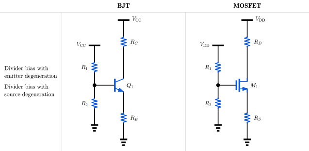
</div>
</div>
<p><strong>Razavi, Problem 5.80</strong> (BJT)</p>
<p>Degenerated common-emitter stage from <span class="math notranslate nohighlight">\(V_{CC}=2.5\,\mathrm{V}\)</span>: npn <span class="math notranslate nohighlight">\(Q_1\)</span> with <span class="math notranslate nohighlight">\(R_C\)</span> from <span class="math notranslate nohighlight">\(V_{CC}\)</span> to the collector (output), <span class="math notranslate nohighlight">\(R_E\)</span> from the emitter to ground, and the base at the tap of a divider <span class="math notranslate nohighlight">\(R_1\)</span> (to <span class="math notranslate nohighlight">\(V_{CC}\)</span>) and <span class="math notranslate nohighlight">\(R_2\)</span> (to ground); the input is applied at the base. Design it for a voltage gain of 5 and an output impedance of <span class="math notranslate nohighlight">\(500\,\Omega\)</span>, with <span class="math notranslate nohighlight">\(300\,\mathrm{mV}\)</span> across <span class="math notranslate nohighlight">\(R_E\)</span> and a current in <span class="math notranslate nohighlight">\(R_1\)</span> of about ten times the base current. Use <span class="math notranslate nohighlight">\(\beta=100\)</span>, <span class="math notranslate nohighlight">\(I_S=6\times10^{-16}\,\mathrm{A}\)</span>, <span class="math notranslate nohighlight">\(V_A=\infty\)</span>.</p>
<p>Given: <span class="math notranslate nohighlight">\(V_{CC}=2.5\,\mathrm{V}\)</span>, <span class="math notranslate nohighlight">\(\lvert A_v\rvert=5\)</span>, <span class="math notranslate nohighlight">\(R_{out}=500\,\Omega\)</span>, <span class="math notranslate nohighlight">\(V_{RE}=0.3\,\mathrm{V}\)</span>, <span class="math notranslate nohighlight">\(I_{R1}=10I_B\)</span>, <span class="math notranslate nohighlight">\(\beta=100\)</span>, <span class="math notranslate nohighlight">\(I_S=6\times10^{-16}\,\mathrm{A}\)</span>, <span class="math notranslate nohighlight">\(V_A=\infty\)</span>, <span class="math notranslate nohighlight">\(V_T=26\,\mathrm{mV}\)</span></p>
<ol class="arabic simple">
<li><p><strong>Collector resistor.</strong> <span class="math notranslate nohighlight">\(R_{out}=R_C=500\,\Omega\)</span>.</p></li>
<li><p><strong>Gain equation.</strong> <span class="math notranslate nohighlight">\(\dfrac{R_C}{R_E+1/g_m}=5\Rightarrow R_E+\dfrac{1}{g_m}=100\,\Omega\)</span>, with <span class="math notranslate nohighlight">\(R_E=\dfrac{0.3\,\mathrm{V}}{I_E}=\dfrac{0.3\,\mathrm{V}}{I_C}\dfrac{\beta}{\beta+1}\)</span> and <span class="math notranslate nohighlight">\(\dfrac1{g_m}=\dfrac{V_T}{I_C}\)</span>.</p></li>
<li><p><strong>Bias current.</strong> <span class="math notranslate nohighlight">\(I_C=\dfrac{0.297\,\mathrm{V}+0.026\,\mathrm{V}}{100\,\Omega}=3.23\,\mathrm{mA}\)</span>; <span class="math notranslate nohighlight">\(R_E=92.0\,\Omega\)</span>, <span class="math notranslate nohighlight">\(1/g_m=8.05\,\Omega\)</span>.</p></li>
<li><p><strong>Base voltage.</strong> <span class="math notranslate nohighlight">\(V_{BE}=0.762\,\mathrm{V}\)</span>, <span class="math notranslate nohighlight">\(V_B=0.762+0.3=1.06\,\mathrm{V}\)</span>, <span class="math notranslate nohighlight">\(I_B=32.3\,\mu\mathrm{A}\)</span>.</p></li>
<li><p><strong>Divider.</strong> <span class="math notranslate nohighlight">\(R_1=\dfrac{2.5-1.06}{10I_B}=4.45\,\mathrm{k}\Omega\)</span>, <span class="math notranslate nohighlight">\(R_2=\dfrac{1.06}{9I_B}=3.65\,\mathrm{k}\Omega\)</span>.</p></li>
<li><p><strong>Check the region.</strong> <span class="math notranslate nohighlight">\(V_C=2.5-3.23\,\mathrm{mA}\times500\,\Omega=0.885\,\mathrm{V}\)</span>, so <span class="math notranslate nohighlight">\(V_{BC}=0.177\,\mathrm{V}\)</span>: slight forward bias, well under <span class="math notranslate nohighlight">\(0.4\,\mathrm{V}\)</span>, still active in practice.</p></li>
<li><p><strong>Input impedance.</strong> <span class="math notranslate nohighlight">\(R_{in}=R_1\parallel R_2\parallel[r_\pi+(\beta+1)R_E]=1.67\,\mathrm{k}\Omega\)</span>.</p></li>
</ol>
<p><strong>Result.</strong> <span class="math notranslate nohighlight">\(R_C=500\,\Omega\)</span>, <span class="math notranslate nohighlight">\(R_E=92.0\,\Omega\)</span>, <span class="math notranslate nohighlight">\(I_C=3.23\,\mathrm{mA}\)</span>, <span class="math notranslate nohighlight">\(R_1=4.45\,\mathrm{k}\Omega\)</span>, <span class="math notranslate nohighlight">\(R_2=3.65\,\mathrm{k}\Omega\)</span>, <span class="math notranslate nohighlight">\(A_v=-5\)</span></p>
<p>Checked by computation; the book gives no answer.</p>
<p><strong>Razavi, Problem 5.81</strong> (BJT)</p>
<p>Degenerated common-emitter stage from <span class="math notranslate nohighlight">\(V_{CC}=2.5\,\mathrm{V}\)</span>: npn <span class="math notranslate nohighlight">\(Q_1\)</span> with <span class="math notranslate nohighlight">\(R_C\)</span> from <span class="math notranslate nohighlight">\(V_{CC}\)</span> to the collector (output), <span class="math notranslate nohighlight">\(R_E\)</span> from the emitter to ground, and the base at the tap of a divider <span class="math notranslate nohighlight">\(R_1\)</span> (to <span class="math notranslate nohighlight">\(V_{CC}\)</span>) and <span class="math notranslate nohighlight">\(R_2\)</span> (to ground); the input is applied at the base. Design it for the largest voltage gain with an output impedance of at most <span class="math notranslate nohighlight">\(1\,\mathrm{k}\Omega\)</span>, <span class="math notranslate nohighlight">\(200\,\mathrm{mV}\)</span> across <span class="math notranslate nohighlight">\(R_E\)</span>, a current in <span class="math notranslate nohighlight">\(R_1\)</span> of about ten times the base current, and at most <span class="math notranslate nohighlight">\(400\,\mathrm{mV}\)</span> of base-collector forward bias. Use <span class="math notranslate nohighlight">\(\beta=100\)</span>, <span class="math notranslate nohighlight">\(I_S=6\times10^{-16}\,\mathrm{A}\)</span>, <span class="math notranslate nohighlight">\(V_A=\infty\)</span>.</p>
<p>Given: <span class="math notranslate nohighlight">\(V_{CC}=2.5\,\mathrm{V}\)</span>, <span class="math notranslate nohighlight">\(R_{out}\le1\,\mathrm{k}\Omega\)</span>, <span class="math notranslate nohighlight">\(V_{RE}=0.2\,\mathrm{V}\)</span>, <span class="math notranslate nohighlight">\(I_{R1}=10I_B\)</span>, <span class="math notranslate nohighlight">\(V_{BC}\le0.4\,\mathrm{V}\)</span>, <span class="math notranslate nohighlight">\(\beta=100\)</span>, <span class="math notranslate nohighlight">\(I_S=6\times10^{-16}\,\mathrm{A}\)</span>, <span class="math notranslate nohighlight">\(V_A=\infty\)</span>, <span class="math notranslate nohighlight">\(V_T=26\,\mathrm{mV}\)</span></p>
<ol class="arabic simple">
<li><p><strong>Gain in terms of the drops.</strong> <span class="math notranslate nohighlight">\(\lvert A_v\rvert=\dfrac{R_C}{R_E+1/g_m}=\dfrac{I_CR_C}{\alpha V_{RE}+V_T}\)</span>: the gain grows with the drop <span class="math notranslate nohighlight">\(I_CR_C\)</span>.</p></li>
<li><p><strong>Choose RC.</strong> Take <span class="math notranslate nohighlight">\(R_C=1\,\mathrm{k}\Omega\)</span>, the largest allowed; the gain then rises with <span class="math notranslate nohighlight">\(I_C\)</span> until headroom runs out.</p></li>
<li><p><strong>Headroom limit.</strong> <span class="math notranslate nohighlight">\(V_C\ge V_B-0.4\)</span>: <span class="math notranslate nohighlight">\(2.5-I_CR_C=V_{BE}+0.2-0.4\)</span>, so <span class="math notranslate nohighlight">\(I_C=[2.7\,\mathrm{V}-V_T\ln(I_C/I_S)]/1\,\mathrm{k}\Omega\)</span>.</p></li>
<li><p><strong>Solve.</strong> Iterating: <span class="math notranslate nohighlight">\(I_C=1.95\,\mathrm{mA}\)</span>, <span class="math notranslate nohighlight">\(V_{BE}=0.749\,\mathrm{V}\)</span>, <span class="math notranslate nohighlight">\(V_B=0.949\,\mathrm{V}\)</span>, <span class="math notranslate nohighlight">\(V_C=0.549\,\mathrm{V}\)</span>, <span class="math notranslate nohighlight">\(V_{BC}=0.400\,\mathrm{V}\)</span>.</p></li>
<li><p><strong>Emitter resistor.</strong> <span class="math notranslate nohighlight">\(R_E=0.2\,\mathrm{V}/I_E=101\,\Omega\)</span>, <span class="math notranslate nohighlight">\(1/g_m=13.3\,\Omega\)</span>.</p></li>
<li><p><strong>Divider.</strong> <span class="math notranslate nohighlight">\(I_B=19.5\,\mu\mathrm{A}\)</span>: <span class="math notranslate nohighlight">\(R_1=(2.5-0.949)/(10I_B)=7.95\,\mathrm{k}\Omega\)</span>, <span class="math notranslate nohighlight">\(R_2=0.949/(9I_B)=5.41\,\mathrm{k}\Omega\)</span>.</p></li>
<li><p><strong>Gain.</strong> <span class="math notranslate nohighlight">\(A_v=-\dfrac{1\,\mathrm{k}\Omega}{101.5\,\Omega+13.3\,\Omega}=-8.71\)</span></p></li>
</ol>
<p><strong>Result.</strong> <span class="math notranslate nohighlight">\(R_C=1\,\mathrm{k}\Omega\)</span>, <span class="math notranslate nohighlight">\(I_C=1.95\,\mathrm{mA}\)</span>, <span class="math notranslate nohighlight">\(R_E=101\,\Omega\)</span>, <span class="math notranslate nohighlight">\(R_1=7.95\,\mathrm{k}\Omega\)</span>, <span class="math notranslate nohighlight">\(R_2=5.41\,\mathrm{k}\Omega\)</span>, <span class="math notranslate nohighlight">\(A_v=-8.71\)</span></p>
<p>Checked by computation; the book gives no answer.</p>
<p><strong>Razavi, Problem 5.82</strong> (BJT)</p>
<p>Degenerated common-emitter stage from <span class="math notranslate nohighlight">\(V_{CC}=2.5\,\mathrm{V}\)</span>: npn <span class="math notranslate nohighlight">\(Q_1\)</span> with <span class="math notranslate nohighlight">\(R_C\)</span> from <span class="math notranslate nohighlight">\(V_{CC}\)</span> to the collector (output), <span class="math notranslate nohighlight">\(R_E\)</span> from the emitter to ground, and the base at the tap of a divider <span class="math notranslate nohighlight">\(R_1\)</span> (to <span class="math notranslate nohighlight">\(V_{CC}\)</span>) and <span class="math notranslate nohighlight">\(R_2\)</span> (to ground); the input is applied at the base. Design it for a power budget of <span class="math notranslate nohighlight">\(5\,\mathrm{mW}\)</span>, a voltage gain of 5 and <span class="math notranslate nohighlight">\(200\,\mathrm{mV}\)</span> across <span class="math notranslate nohighlight">\(R_E\)</span>, with a current in <span class="math notranslate nohighlight">\(R_1\)</span> of about ten times the base current. Use <span class="math notranslate nohighlight">\(\beta=100\)</span>, <span class="math notranslate nohighlight">\(I_S=6\times10^{-16}\,\mathrm{A}\)</span>, <span class="math notranslate nohighlight">\(V_A=\infty\)</span>.</p>
<p>Given: <span class="math notranslate nohighlight">\(V_{CC}=2.5\,\mathrm{V}\)</span>, <span class="math notranslate nohighlight">\(P=5\,\mathrm{mW}\)</span>, <span class="math notranslate nohighlight">\(\lvert A_v\rvert=5\)</span>, <span class="math notranslate nohighlight">\(V_{RE}=0.2\,\mathrm{V}\)</span>, <span class="math notranslate nohighlight">\(I_{R1}=10I_B\)</span>, <span class="math notranslate nohighlight">\(\beta=100\)</span>, <span class="math notranslate nohighlight">\(I_S=6\times10^{-16}\,\mathrm{A}\)</span>, <span class="math notranslate nohighlight">\(V_A=\infty\)</span>, <span class="math notranslate nohighlight">\(V_T=26\,\mathrm{mV}\)</span></p>
<ol class="arabic simple">
<li><p><strong>Supply current.</strong> The supply feeds <span class="math notranslate nohighlight">\(R_C\)</span> (<span class="math notranslate nohighlight">\(I_C\)</span>) and <span class="math notranslate nohighlight">\(R_1\)</span> (<span class="math notranslate nohighlight">\(10I_B\)</span>): <span class="math notranslate nohighlight">\(I_C(1+10/\beta)=5\,\mathrm{mW}/2.5\,\mathrm{V}=2\,\mathrm{mA}\)</span>, so <span class="math notranslate nohighlight">\(I_C=1.82\,\mathrm{mA}\)</span>, <span class="math notranslate nohighlight">\(I_B=18.2\,\mu\mathrm{A}\)</span>.</p></li>
<li><p><strong>Emitter resistor.</strong> <span class="math notranslate nohighlight">\(R_E=0.2\,\mathrm{V}/I_E=109\,\Omega\)</span>; <span class="math notranslate nohighlight">\(1/g_m=14.3\,\Omega\)</span>.</p></li>
<li><p><strong>Collector resistor.</strong> <span class="math notranslate nohighlight">\(R_C=5(R_E+1/g_m)=5(108.9+14.3)=616\,\Omega\)</span>.</p></li>
<li><p><strong>Base voltage.</strong> <span class="math notranslate nohighlight">\(V_{BE}=0.747\,\mathrm{V}\)</span>, <span class="math notranslate nohighlight">\(V_B=0.947\,\mathrm{V}\)</span>.</p></li>
<li><p><strong>Divider.</strong> <span class="math notranslate nohighlight">\(R_1=(2.5-0.947)/(10I_B)=8.54\,\mathrm{k}\Omega\)</span>, <span class="math notranslate nohighlight">\(R_2=0.947/(9I_B)=5.79\,\mathrm{k}\Omega\)</span>.</p></li>
<li><p><strong>Check the region.</strong> <span class="math notranslate nohighlight">\(V_C=2.5-1.82\,\mathrm{mA}\times616\,\Omega=1.38\,\mathrm{V}&gt;V_B\)</span>: active.</p></li>
</ol>
<p><strong>Result.</strong> <span class="math notranslate nohighlight">\(I_C=1.82\,\mathrm{mA}\)</span>, <span class="math notranslate nohighlight">\(R_E=109\,\Omega\)</span>, <span class="math notranslate nohighlight">\(R_C=616\,\Omega\)</span>, <span class="math notranslate nohighlight">\(R_1=8.54\,\mathrm{k}\Omega\)</span>, <span class="math notranslate nohighlight">\(R_2=5.79\,\mathrm{k}\Omega\)</span>, <span class="math notranslate nohighlight">\(A_v=-5\)</span></p>
<p>Checked by computation; the book gives no answer.</p>
<p><strong>Razavi, Problem 7.60</strong> (MOSFET)</p>
<p>A degenerated common-source stage (Fig. 7.86): NMOS <span class="math notranslate nohighlight">\(M_1\)</span> with <span class="math notranslate nohighlight">\(R_D\)</span> from drain to <span class="math notranslate nohighlight">\(V_{DD}=1.8\,\mathrm{V}\)</span> (output at the drain), <span class="math notranslate nohighlight">\(R_S\)</span> from source to ground, and the gate biased by a divider <span class="math notranslate nohighlight">\(R_1\)</span> (to <span class="math notranslate nohighlight">\(V_{DD}\)</span>) and <span class="math notranslate nohighlight">\(R_2\)</span> (to ground); the input arrives through a large capacitor <span class="math notranslate nohighlight">\(C_1\)</span>. <span class="math notranslate nohighlight">\(\lambda=0\)</span>. Design it for a voltage gain of 4 and a power budget of 2 mW, with 200 mV across <span class="math notranslate nohighlight">\(R_S\)</span>, an overdrive not above 300 mV, and the divider taking less than 5 % of the power.</p>
<p>Given: <span class="math notranslate nohighlight">\(A_v=4\)</span>, <span class="math notranslate nohighlight">\(P=2\,\mathrm{mW}\)</span>, <span class="math notranslate nohighlight">\(V_{RS}=0.2\,\mathrm{V}\)</span>, <span class="math notranslate nohighlight">\(V_{GS}-V_{TH}\le0.3\,\mathrm{V}\)</span>, <span class="math notranslate nohighlight">\(P_{R1+R2}&lt;0.1\,\mathrm{mW}\)</span>, <span class="math notranslate nohighlight">\(\lambda=0\)</span>; Defaults of the problem set: <span class="math notranslate nohighlight">\(\mu_nC_{ox}=200\,\mu\mathrm{A/V^2}\)</span>, <span class="math notranslate nohighlight">\(\mu_pC_{ox}=100\,\mu\mathrm{A/V^2}\)</span>, <span class="math notranslate nohighlight">\(V_{TH}=0.4\,\mathrm{V}\)</span> (<span class="math notranslate nohighlight">\(-0.4\,\mathrm{V}\)</span> PMOS), <span class="math notranslate nohighlight">\(V_{DD}=1.8\,\mathrm{V}\)</span></p>
<ol class="arabic simple">
<li><p><strong>Split the current.</strong> Total <span class="math notranslate nohighlight">\(2\,\mathrm{mW}/1.8\,\mathrm{V}=1.11\,\mathrm{mA}\)</span>. Give the divider <span class="math notranslate nohighlight">\(50\,\mu\mathrm{A}\)</span> (4.5 % of the power) and <span class="math notranslate nohighlight">\(M_1\)</span> <span class="math notranslate nohighlight">\(I_D=1.06\,\mathrm{mA}\)</span></p></li>
<li><p><strong>Source resistor.</strong> <span class="math notranslate nohighlight">\(R_S=0.2\,\mathrm{V}/1.06\,\mathrm{mA}=189\,\Omega\)</span></p></li>
<li><p><strong>Gain condition.</strong> <span class="math notranslate nohighlight">\(A_v=\dfrac{R_D}{1/g_m+R_S}=4\)</span> with <span class="math notranslate nohighlight">\(1/g_m=\dfrac{V_{GS}-V_{TH}}{2I_D}\)</span> gives <span class="math notranslate nohighlight">\(I_DR_D=4\left(\dfrac{V_{GS}-V_{TH}}{2}+0.2\right)=2(V_{GS}-V_{TH})+0.8\,\mathrm{V}\)</span></p></li>
<li><p><strong>Saturation limits the overdrive.</strong> <span class="math notranslate nohighlight">\(V_{DD}-I_DR_D\ge V_{RS}+(V_{GS}-V_{TH})\)</span>: <span class="math notranslate nohighlight">\(1.8-0.8-2V_{ov}\ge0.2+V_{ov}\)</span>, so <span class="math notranslate nohighlight">\(V_{ov}\le0.267\,\mathrm{V}\)</span>; 300 mV would put <span class="math notranslate nohighlight">\(M_1\)</span> in triode</p></li>
<li><p><strong>Choose the overdrive.</strong> <span class="math notranslate nohighlight">\(V_{GS}-V_{TH}=0.2\,\mathrm{V}\)</span> (200 mV of margin from triode)</p></li>
<li><p><strong>Drain resistor.</strong> <span class="math notranslate nohighlight">\(I_DR_D=1.2\,\mathrm{V}\)</span>, <span class="math notranslate nohighlight">\(R_D=1.2/1.06\,\mathrm{mA}=1.13\,\mathrm{k}\Omega\)</span>; <span class="math notranslate nohighlight">\(V_D=0.6\,\mathrm{V}\)</span></p></li>
<li><p><strong>Aspect ratio.</strong> <span class="math notranslate nohighlight">\(W/L=\dfrac{2I_D}{\mu_nC_{ox}(V_{GS}-V_{TH})^2}=\dfrac{2(1.06\,\mathrm{mA})}{(200\,\mu)(0.04)}=265\)</span></p></li>
<li><p><strong>Divider.</strong> <span class="math notranslate nohighlight">\(V_G=V_{RS}+V_{GS}=0.2+0.6=0.8\,\mathrm{V}\)</span>; <span class="math notranslate nohighlight">\(R_1+R_2=1.8\,\mathrm{V}/50\,\mu\mathrm{A}=36\,\mathrm{k}\Omega\)</span>, <span class="math notranslate nohighlight">\(R_2=0.8/50\,\mu=16\,\mathrm{k}\Omega\)</span>, <span class="math notranslate nohighlight">\(R_1=20\,\mathrm{k}\Omega\)</span></p></li>
<li><p><strong>Check.</strong> <span class="math notranslate nohighlight">\(g_m=10.6\,\mathrm{mS}\)</span>, <span class="math notranslate nohighlight">\(1/g_m=94.3\,\Omega\)</span>, <span class="math notranslate nohighlight">\(A_v=-1131/(94.2+189)=-4.00\)</span>; <span class="math notranslate nohighlight">\(V_{DS}=0.4\,\mathrm{V}&gt;0.2\,\mathrm{V}\)</span></p></li>
</ol>
<p><strong>Result.</strong> <span class="math notranslate nohighlight">\(I_D=1.06\,\mathrm{mA}\)</span>, <span class="math notranslate nohighlight">\(W/L=265\)</span>, <span class="math notranslate nohighlight">\(R_S=189\,\Omega\)</span>, <span class="math notranslate nohighlight">\(R_D=1.13\,\mathrm{k}\Omega\)</span>, <span class="math notranslate nohighlight">\(R_1=20\,\mathrm{k}\Omega\)</span>, <span class="math notranslate nohighlight">\(R_2=16\,\mathrm{k}\Omega\)</span> (<span class="math notranslate nohighlight">\(V_{GS}-V_{TH}=0.2\,\mathrm{V}\)</span>, <span class="math notranslate nohighlight">\(A_v=-4\)</span>)</p>
<p>Checked by computation; the book gives no answer.</p>
<p><strong>Razavi, Problem 7.61</strong> (MOSFET)</p>
<p>The degenerated common-source stage of Fig. 7.86 (NMOS <span class="math notranslate nohighlight">\(M_1\)</span>, <span class="math notranslate nohighlight">\(R_D=200\,\Omega\)</span> to <span class="math notranslate nohighlight">\(V_{DD}=1.8\,\mathrm{V}\)</span>, <span class="math notranslate nohighlight">\(R_S\)</span> to ground, gate divider <span class="math notranslate nohighlight">\(R_1\)</span> to <span class="math notranslate nohighlight">\(V_{DD}\)</span> and <span class="math notranslate nohighlight">\(R_2\)</span> to ground, input through a large <span class="math notranslate nohighlight">\(C_1\)</span>, <span class="math notranslate nohighlight">\(\lambda=0\)</span>) must give a voltage gain of 5 with a power budget of 6 mW, with the voltage across <span class="math notranslate nohighlight">\(R_S\)</span> equal to the overdrive of <span class="math notranslate nohighlight">\(M_1\)</span>. Design the circuit.</p>
<p>Given: <span class="math notranslate nohighlight">\(A_v=5\)</span>, <span class="math notranslate nohighlight">\(P=6\,\mathrm{mW}\)</span>, <span class="math notranslate nohighlight">\(R_D=200\,\Omega\)</span>, <span class="math notranslate nohighlight">\(I_DR_S=V_{GS}-V_{TH}\)</span>, <span class="math notranslate nohighlight">\(\lambda=0\)</span>; Defaults of the problem set: <span class="math notranslate nohighlight">\(\mu_nC_{ox}=200\,\mu\mathrm{A/V^2}\)</span>, <span class="math notranslate nohighlight">\(\mu_pC_{ox}=100\,\mu\mathrm{A/V^2}\)</span>, <span class="math notranslate nohighlight">\(V_{TH}=0.4\,\mathrm{V}\)</span> (<span class="math notranslate nohighlight">\(-0.4\,\mathrm{V}\)</span> PMOS), <span class="math notranslate nohighlight">\(V_{DD}=1.8\,\mathrm{V}\)</span></p>
<ol class="arabic simple">
<li><p><strong>Required degenerated resistance.</strong> <span class="math notranslate nohighlight">\(A_v=\dfrac{R_D}{1/g_m+R_S}=5\)</span> gives <span class="math notranslate nohighlight">\(1/g_m+R_S=40\,\Omega\)</span></p></li>
<li><p><strong>Use the condition on <span class="math notranslate nohighlight">\(R_S\)</span>.</strong> <span class="math notranslate nohighlight">\(1/g_m=\dfrac{V_{ov}}{2I_D}\)</span> and <span class="math notranslate nohighlight">\(R_S=\dfrac{V_{ov}}{I_D}\)</span>, so <span class="math notranslate nohighlight">\(\dfrac{1.5V_{ov}}{I_D}=40\,\Omega\)</span>, i.e. <span class="math notranslate nohighlight">\(V_{ov}=(26.7\,\Omega)I_D\)</span></p></li>
<li><p><strong>Choose the current.</strong> <span class="math notranslate nohighlight">\(W/L=\dfrac{2I_D}{\mu_nC_{ox}V_{ov}^2}\propto 1/I_D\)</span>, so give <span class="math notranslate nohighlight">\(M_1\)</span> as much of the <span class="math notranslate nohighlight">\(6\,\mathrm{mW}/1.8\,\mathrm{V}=3.33\,\mathrm{mA}\)</span> as possible: <span class="math notranslate nohighlight">\(I_D=3.3\,\mathrm{mA}\)</span>, divider <span class="math notranslate nohighlight">\(33.3\,\mu\mathrm{A}\)</span></p></li>
<li><p><strong>Overdrive and resistors.</strong> <span class="math notranslate nohighlight">\(V_{ov}=26.7\times3.3\,\mathrm{mA}=88.0\,\mathrm{mV}\)</span>; <span class="math notranslate nohighlight">\(R_S=26.7\,\Omega\)</span>, <span class="math notranslate nohighlight">\(1/g_m=13.3\,\Omega\)</span></p></li>
<li><p><strong>Aspect ratio.</strong> <span class="math notranslate nohighlight">\(W/L=\dfrac{2(3.3\,\mathrm{mA})}{(200\,\mu)(0.088)^2}=4.26\times10^3\)</span></p></li>
<li><p><strong>Gate voltage and divider.</strong> <span class="math notranslate nohighlight">\(V_G=I_DR_S+V_{TH}+V_{ov}=0.088+0.4+0.088=0.576\,\mathrm{V}\)</span>; <span class="math notranslate nohighlight">\(R_1+R_2=1.8/33.3\,\mu\mathrm{A}=54\,\mathrm{k}\Omega\)</span>: <span class="math notranslate nohighlight">\(R_2=17.3\,\mathrm{k}\Omega\)</span>, <span class="math notranslate nohighlight">\(R_1=36.7\,\mathrm{k}\Omega\)</span></p></li>
<li><p><strong>Check.</strong> <span class="math notranslate nohighlight">\(V_D=1.8-3.3\,\mathrm{mA}\times200\,\Omega=1.14\,\mathrm{V}\)</span>, <span class="math notranslate nohighlight">\(V_{DS}=1.05\,\mathrm{V}&gt;V_{ov}\)</span>; <span class="math notranslate nohighlight">\(A_v=-200/(13.3+26.7)=-5.00\)</span></p></li>
</ol>
<p><strong>Result.</strong> <span class="math notranslate nohighlight">\(I_D=3.3\,\mathrm{mA}\)</span>, <span class="math notranslate nohighlight">\(V_{GS}-V_{TH}=88\,\mathrm{mV}\)</span>, <span class="math notranslate nohighlight">\(W/L\approx4.26\times10^3\)</span>, <span class="math notranslate nohighlight">\(R_S=26.7\,\Omega\)</span>, <span class="math notranslate nohighlight">\(R_1=36.7\,\mathrm{k}\Omega\)</span>, <span class="math notranslate nohighlight">\(R_2=17.3\,\mathrm{k}\Omega\)</span>, <span class="math notranslate nohighlight">\(R_D=200\,\Omega\)</span></p>
<p>Checked by computation; the book gives no answer. Note: Neither the divider current nor the split of the budget is given; the choice to give almost all of it to <span class="math notranslate nohighlight">\(M_1\)</span> minimizes <span class="math notranslate nohighlight">\(W/L\)</span>, which is still very large (about 4300) because the low <span class="math notranslate nohighlight">\(R_D\)</span> forces a tiny <span class="math notranslate nohighlight">\(1/g_m+R_S\)</span>. Any smaller <span class="math notranslate nohighlight">\(I_D\)</span> works too but needs an even wider device.</p>
</section>
<section id="id16">
<h3>Degenerated common emitter / Degenerated common source<a class="headerlink" href="#id16" title="Link to this heading">#</a></h3>
<div class="cell tag_hide-input docutils container">
<details class="admonition hide above-input">
<summary aria-label="Toggle hidden content">
<p class="collapsed admonition-title">Show code cell source</p>
<p class="expanded admonition-title">Hide code cell source</p>
</summary>
<div class="cell_input docutils container">
<div class="highlight-ipython3 notranslate"><div class="highlight"><pre><span></span><span class="c1"># HIDE/SHOW</span>
<span class="n">show</span><span class="p">(</span><span class="n">C</span><span class="o">.</span><span class="n">gain_degenerated</span><span class="p">)</span>
</pre></div>
</div>
</div>
</details>
<div class="cell_output docutils container">

</div>
</div>
<p><strong>Razavi, Problem 5.42</strong> (BJT)</p>
<p>A degenerated common-emitter stage: npn <span class="math notranslate nohighlight">\(Q_1\)</span>, <span class="math notranslate nohighlight">\(R_C\)</span> to <span class="math notranslate nohighlight">\(V_{CC}=2.5\,\mathrm{V}\)</span>, <span class="math notranslate nohighlight">\(R_E=200\,\Omega\)</span> from emitter to ground, input at the base, output at the collector. Design it for a voltage gain of 10 with <span class="math notranslate nohighlight">\(Q_1\)</span> at the edge of saturation: find the bias current and <span class="math notranslate nohighlight">\(R_C\)</span>, then the input impedance. <span class="math notranslate nohighlight">\(\beta=100\)</span>, <span class="math notranslate nohighlight">\(I_S=5\times10^{-16}\,\mathrm{A}\)</span>, <span class="math notranslate nohighlight">\(V_A=\infty\)</span>.</p>
<p>Given: <span class="math notranslate nohighlight">\(V_{CC}=2.5\,\mathrm{V}\)</span>, <span class="math notranslate nohighlight">\(R_E=200\,\Omega\)</span>, <span class="math notranslate nohighlight">\(\lvert A_v\rvert=10\)</span>, <span class="math notranslate nohighlight">\(\beta=100\)</span>, <span class="math notranslate nohighlight">\(I_S=5\times10^{-16}\,\mathrm{A}\)</span>, <span class="math notranslate nohighlight">\(V_A=\infty\)</span></p>
<ol class="arabic simple">
<li><p><strong>Gain condition.</strong> <span class="math notranslate nohighlight">\(\dfrac{R_C}{1/g_m+R_E}=10\)</span>, so <span class="math notranslate nohighlight">\(R_CI_C=10(V_T+I_CR_E)\)</span>.</p></li>
<li><p><strong>Edge of saturation.</strong> <span class="math notranslate nohighlight">\(V_C=V_B\)</span>: <span class="math notranslate nohighlight">\(V_{CC}-R_CI_C=V_{BE}+I_ER_E\)</span>, with <span class="math notranslate nohighlight">\(V_{BE}=V_T\ln(I_C/I_S)\)</span>, <span class="math notranslate nohighlight">\(I_E=1.01\,I_C\)</span>.</p></li>
<li><p><strong>Combine.</strong> <span class="math notranslate nohighlight">\(2.5-0.26-2000\,\Omega\cdot I_C=V_T\ln(I_C/I_S)+202\,\Omega\cdot I_C\)</span>.</p></li>
<li><p><strong>Bias current.</strong> Solving: <span class="math notranslate nohighlight">\(I_C=0.687\,\mathrm{mA}\)</span>, <span class="math notranslate nohighlight">\(V_{BE}=0.727\,\mathrm{V}\)</span>.</p></li>
<li><p><strong>Collector resistor.</strong> <span class="math notranslate nohighlight">\(R_C=10\left(\dfrac{26\,\mathrm{mV}}{0.687\,\mathrm{mA}}+200\,\Omega\right)=2.38\,\mathrm{k}\Omega\)</span>; then <span class="math notranslate nohighlight">\(V_C=V_B=0.866\,\mathrm{V}\)</span>.</p></li>
<li><p><strong>Input impedance.</strong> <span class="math notranslate nohighlight">\(R_{in}=r_\pi+(\beta+1)R_E=3.78\,\mathrm{k}\Omega+20.2\,\mathrm{k}\Omega=24.0\,\mathrm{k}\Omega\)</span>.</p></li>
</ol>
<p><strong>Result.</strong> <span class="math notranslate nohighlight">\(I_C=0.687\,\mathrm{mA}\)</span>, <span class="math notranslate nohighlight">\(R_C=2.38\,\mathrm{k}\Omega\)</span>, <span class="math notranslate nohighlight">\(R_{in}=24.0\,\mathrm{k}\Omega\)</span></p>
<p>Checked by computation; the book gives no answer.</p>
<p><strong>Razavi, Problem 5.43</strong> (BJT), the same as Razavi, Problem 5.42 with other values</p>
<p>For the degenerated common-emitter stage of Problem 5.42 (<span class="math notranslate nohighlight">\(V_{CC}=2.5\,\mathrm{V}\)</span>, <span class="math notranslate nohighlight">\(R_E=200\,\Omega\)</span>, <span class="math notranslate nohighlight">\(\beta=100\)</span>, <span class="math notranslate nohighlight">\(I_S=5\times10^{-16}\,\mathrm{A}\)</span>, <span class="math notranslate nohighlight">\(V_A=\infty\)</span>, <span class="math notranslate nohighlight">\(Q_1\)</span> at the edge of saturation), attempt the design for a voltage gain of 100. Explain why no solution exists, and find the maximum gain the stage can reach.</p>
<p>Given: <span class="math notranslate nohighlight">\(V_{CC}=2.5\,\mathrm{V}\)</span>, <span class="math notranslate nohighlight">\(R_E=200\,\Omega\)</span>, <span class="math notranslate nohighlight">\(\lvert A_v\rvert=100\)</span>, <span class="math notranslate nohighlight">\(\beta=100\)</span>, <span class="math notranslate nohighlight">\(I_S=5\times10^{-16}\,\mathrm{A}\)</span></p>
<ol class="arabic simple">
<li><p><strong>Gain in terms of drops.</strong> <span class="math notranslate nohighlight">\(\lvert A_v\rvert=\dfrac{I_CR_C}{V_T+I_CR_E}&lt;\dfrac{I_CR_C}{V_T}\)</span>.</p></li>
<li><p><strong>Headroom.</strong> At the edge of saturation <span class="math notranslate nohighlight">\(I_CR_C=V_{CC}-V_{BE}-I_ER_E&lt;V_{CC}\)</span>, so <span class="math notranslate nohighlight">\(\lvert A_v\rvert&lt;V_{CC}/V_T=96.2\)</span>.</p></li>
<li><p><strong>Gain 100 impossible.</strong> A gain of 100 needs <span class="math notranslate nohighlight">\(I_CR_C=100(V_T+I_CR_E)\ge2.6\,\mathrm{V}\)</span> across <span class="math notranslate nohighlight">\(R_C\)</span> alone, more than the <span class="math notranslate nohighlight">\(2.5\,\mathrm{V}\)</span> supply: no <span class="math notranslate nohighlight">\(I_C\)</span> meets both conditions.</p></li>
<li><p><strong>Gain versus current.</strong> <span class="math notranslate nohighlight">\(\lvert A_v\rvert(I_C)=\dfrac{V_{CC}-V_T\ln(I_C/I_S)-I_ER_E}{V_T+I_CR_E}\)</span>: the numerator falls and the denominator rises with <span class="math notranslate nohighlight">\(I_C\)</span>, so the gain rises as <span class="math notranslate nohighlight">\(I_C\)</span> is reduced.</p></li>
<li><p><strong>Values.</strong> <span class="math notranslate nohighlight">\(I_C=1\,\mathrm{mA}\)</span>: <span class="math notranslate nohighlight">\(6.91\)</span>; <span class="math notranslate nohighlight">\(0.1\,\mathrm{mA}\)</span>: <span class="math notranslate nohighlight">\(39.2\)</span>; <span class="math notranslate nohighlight">\(10\,\mu\mathrm{A}\)</span>: <span class="math notranslate nohighlight">\(67.2\)</span>; <span class="math notranslate nohighlight">\(1\,\mu\mathrm{A}\)</span>: <span class="math notranslate nohighlight">\(74.2\)</span>.</p></li>
<li><p><strong>Maximum gain.</strong> The gain approaches <span class="math notranslate nohighlight">\((V_{CC}-V_{BE})/V_T\)</span> as <span class="math notranslate nohighlight">\(I_C\to0\)</span> (the degeneration becomes negligible): <span class="math notranslate nohighlight">\(65.4\)</span> for <span class="math notranslate nohighlight">\(V_{BE}=0.8\,\mathrm{V}\)</span>, <span class="math notranslate nohighlight">\(70\)</span> to <span class="math notranslate nohighlight">\(77\)</span> with the <span class="math notranslate nohighlight">\(V_{BE}\)</span> of <span class="math notranslate nohighlight">\(\mu\mathrm{A}\)</span> currents, never above <span class="math notranslate nohighlight">\(96\)</span>.</p></li>
</ol>
<p><strong>Result.</strong> No solution: gain 100 would need at least <span class="math notranslate nohighlight">\(2.6\,\mathrm{V}\)</span> across <span class="math notranslate nohighlight">\(R_C\)</span>; <span class="math notranslate nohighlight">\(\lvert A_v\rvert_{max}\approx(V_{CC}-V_{BE})/V_T\)</span> (about <span class="math notranslate nohighlight">\(65\)</span> to <span class="math notranslate nohighlight">\(75\)</span>, approached at very low <span class="math notranslate nohighlight">\(I_C\)</span>), with absolute bound <span class="math notranslate nohighlight">\(V_{CC}/V_T=96\)</span></p>
<p>Checked by computation; the book gives no answer. Note: The book does not say which “maximum gain” it expects. Here the gain is shown to grow monotonically as IC falls; its limit (VCC - VBE)/VT is about 65 if VBE is held at 0.8 V and about 70 to 77 if VBE follows IC down to the uA range. Either way it stays below VCC/VT = 96 &lt; 100.</p>
<p><strong>Razavi, Problem 7.30</strong> (MOSFET)</p>
<p>A degenerated NMOS CS stage (<span class="math notranslate nohighlight">\(R_D\)</span> from <span class="math notranslate nohighlight">\(V_{DD}=1.8\,\mathrm{V}\)</span> to the drain, <span class="math notranslate nohighlight">\(R_S\)</span> from source to ground, input at the gate, <span class="math notranslate nohighlight">\(\lambda=0\)</span>) must give a voltage gain of 4 at <span class="math notranslate nohighlight">\(I_D=1\,\mathrm{mA}\)</span>, with <span class="math notranslate nohighlight">\(200\,\mathrm{mV}\)</span> across <span class="math notranslate nohighlight">\(R_S\)</span>. (a) With <span class="math notranslate nohighlight">\(R_D=1\,\mathrm{k}\Omega\)</span>, find <span class="math notranslate nohighlight">\(W/L\)</span> and check saturation. (b) With <span class="math notranslate nohighlight">\(W/L=50/0.18\)</span>, find <span class="math notranslate nohighlight">\(R_D\)</span> and check saturation.</p>
<p>Given: <span class="math notranslate nohighlight">\(\lvert A_v\rvert=4\)</span>, <span class="math notranslate nohighlight">\(I_D=1\,\mathrm{mA}\)</span>, <span class="math notranslate nohighlight">\(V_{RS}=0.2\,\mathrm{V}\)</span>, <span class="math notranslate nohighlight">\(V_{DD}=1.8\,\mathrm{V}\)</span>, <span class="math notranslate nohighlight">\(\lambda=0\)</span>; default data <span class="math notranslate nohighlight">\(\mu_nC_{ox}=200\,\mu\mathrm{A/V^2}\)</span>, <span class="math notranslate nohighlight">\(\mu_pC_{ox}=100\,\mu\mathrm{A/V^2}\)</span>, <span class="math notranslate nohighlight">\(V_{TH,n}=0.4\,\mathrm{V}\)</span>, <span class="math notranslate nohighlight">\(V_{TH,p}=-0.4\,\mathrm{V}\)</span></p>
<ol class="arabic simple">
<li><p><strong>Source resistor.</strong> <span class="math notranslate nohighlight">\(R_S=0.2\,\mathrm{V}/1\,\mathrm{mA}=200\,\Omega\)</span></p></li>
<li><p><strong>Gain.</strong> <span class="math notranslate nohighlight">\(\lvert A_v\rvert=\dfrac{R_D}{1/g_m+R_S}\)</span></p></li>
<li><p><strong>(a) Transconductance.</strong> <span class="math notranslate nohighlight">\(1/g_m=R_D/4-R_S=250-200=50.0\,\Omega\)</span>, <span class="math notranslate nohighlight">\(g_m=20.0\,\mathrm{mS}\)</span></p></li>
<li><p><strong>(a) Aspect ratio.</strong> <span class="math notranslate nohighlight">\(W/L=\dfrac{g_m^2}{2\mu_nC_{ox}I_D}=\dfrac{(20\,\mathrm{mS})^2}{2(200\,\mu)(1\,\mathrm{m})}=1000\)</span>, <span class="math notranslate nohighlight">\(V_{ov}=2I_D/g_m=0.100\,\mathrm{V}\)</span></p></li>
<li><p><strong>(a) Saturation.</strong> <span class="math notranslate nohighlight">\(V_G=0.4+0.1+0.2=0.700\,\mathrm{V}\)</span>, <span class="math notranslate nohighlight">\(V_D=1.8-1=0.800\,\mathrm{V}\ge V_G-V_{TH}=0.300\,\mathrm{V}\)</span>: saturated</p></li>
<li><p><strong>(b) Transconductance.</strong> <span class="math notranslate nohighlight">\(g_m=\sqrt{2(200\,\mu)(278)(1\,\mathrm{m})}=10.5\,\mathrm{mS}\)</span>, <span class="math notranslate nohighlight">\(1/g_m=94.9\,\Omega\)</span></p></li>
<li><p><strong>(b) Drain resistor.</strong> <span class="math notranslate nohighlight">\(R_D=4(94.9+200)=1.18\,\mathrm{k}\Omega\)</span></p></li>
<li><p><strong>(b) Saturation.</strong> <span class="math notranslate nohighlight">\(V_{ov}=0.190\,\mathrm{V}\)</span>, <span class="math notranslate nohighlight">\(V_G=0.790\,\mathrm{V}\)</span>, <span class="math notranslate nohighlight">\(V_D=1.8-1.18=0.620\,\mathrm{V}\ge V_G-V_{TH}=0.390\,\mathrm{V}\)</span>: saturated</p></li>
</ol>
<p><strong>Result.</strong> (a) <span class="math notranslate nohighlight">\(W/L=1000\)</span> (<span class="math notranslate nohighlight">\(180/0.18\)</span>), saturated; (b) <span class="math notranslate nohighlight">\(R_D=1.18\,\mathrm{k}\Omega\)</span>, saturated</p>
<p>Checked by computation; the book gives no answer.</p>
</section>
<section id="id17">
<h3>Common emitter with active load / Common source with active load<a class="headerlink" href="#id17" title="Link to this heading">#</a></h3>
<div class="cell tag_hide-input docutils container">
<details class="admonition hide above-input">
<summary aria-label="Toggle hidden content">
<p class="collapsed admonition-title">Show code cell source</p>
<p class="expanded admonition-title">Hide code cell source</p>
</summary>
<div class="cell_input docutils container">
<div class="highlight-ipython3 notranslate"><div class="highlight"><pre><span></span><span class="c1"># HIDE/SHOW</span>
<span class="n">show</span><span class="p">(</span><span class="n">C</span><span class="o">.</span><span class="n">active_load</span><span class="p">)</span>
</pre></div>
</div>
</div>
</details>
<div class="cell_output docutils container">

</div>
</div>
<p><strong>Razavi, Problem 7.63</strong> (MOSFET)</p>
<p>Common-source stage of Fig. 7.88: NMOS <span class="math notranslate nohighlight">\(M_1\)</span> (source grounded, input at the gate) loaded by a PMOS current source <span class="math notranslate nohighlight">\(M_2\)</span> (source at <span class="math notranslate nohighlight">\(V_{DD}=1.8\,\mathrm{V}\)</span>, gate at a bias <span class="math notranslate nohighlight">\(V_b\)</span>); output at the joined drains. <span class="math notranslate nohighlight">\(\lambda=0.1\,\mathrm{V^{-1}}\)</span> for both. Design for a voltage gain of 20 and a power budget of 2 mW, with <span class="math notranslate nohighlight">\(M_2\)</span> saturated for output levels up to 1.5 V.</p>
<p>Given: <span class="math notranslate nohighlight">\(A_v=20\)</span>, <span class="math notranslate nohighlight">\(P=2\,\mathrm{mW}\)</span>, <span class="math notranslate nohighlight">\(\lambda_n=\lambda_p=0.1\,\mathrm{V^{-1}}\)</span>, <span class="math notranslate nohighlight">\(V_{out,max}=1.5\,\mathrm{V}\)</span>; Defaults of the problem set: <span class="math notranslate nohighlight">\(\mu_nC_{ox}=200\,\mu\mathrm{A/V^2}\)</span>, <span class="math notranslate nohighlight">\(\mu_pC_{ox}=100\,\mu\mathrm{A/V^2}\)</span>, <span class="math notranslate nohighlight">\(V_{TH}=0.4\,\mathrm{V}\)</span> (<span class="math notranslate nohighlight">\(-0.4\,\mathrm{V}\)</span> PMOS), <span class="math notranslate nohighlight">\(V_{DD}=1.8\,\mathrm{V}\)</span></p>
<ol class="arabic simple">
<li><p><strong>Drain current.</strong> <span class="math notranslate nohighlight">\(I_D=2\,\mathrm{mW}/1.8\,\mathrm{V}=1.11\,\mathrm{mA}\)</span></p></li>
<li><p><strong>Output resistances.</strong> <span class="math notranslate nohighlight">\(r_{O1}=r_{O2}=\dfrac{1}{\lambda I_D}=9.0\,\mathrm{k}\Omega\)</span>, <span class="math notranslate nohighlight">\(r_{O1}\parallel r_{O2}=4.5\,\mathrm{k}\Omega\)</span></p></li>
<li><p><strong>Required <span class="math notranslate nohighlight">\(g_{m1}\)</span>.</strong> <span class="math notranslate nohighlight">\(A_v=-g_{m1}(r_{O1}\parallel r_{O2})\)</span>: <span class="math notranslate nohighlight">\(g_{m1}=20/4.5\,\mathrm{k}\Omega=4.44\,\mathrm{mS}\)</span></p></li>
<li><p><strong>Size <span class="math notranslate nohighlight">\(M_1\)</span>.</strong> <span class="math notranslate nohighlight">\(V_{GS1}-V_{TH}=2I_D/g_{m1}=0.5\,\mathrm{V}\)</span>; <span class="math notranslate nohighlight">\((W/L)_1=\dfrac{2I_D}{\mu_nC_{ox}(0.5)^2}=44.4\)</span></p></li>
<li><p><strong>Headroom of <span class="math notranslate nohighlight">\(M_2\)</span>.</strong> <span class="math notranslate nohighlight">\(M_2\)</span> saturated for <span class="math notranslate nohighlight">\(V_{out}\le1.5\,\mathrm{V}\)</span> needs <span class="math notranslate nohighlight">\(\lvert V_{GS2}-V_{TH2}\rvert\le V_{DD}-1.5=0.3\,\mathrm{V}\)</span>; take 0.3 V</p></li>
<li><p><strong>Size <span class="math notranslate nohighlight">\(M_2\)</span>.</strong> <span class="math notranslate nohighlight">\((W/L)_2=\dfrac{2I_D}{\mu_pC_{ox}(0.3)^2}=\dfrac{2.22\,\mathrm{mA}}{(100\,\mu)(0.09)}=247\)</span></p></li>
<li><p><strong>Bias voltages.</strong> <span class="math notranslate nohighlight">\(V_b=V_{DD}-\lvert V_{TH}\rvert-0.3=1.1\,\mathrm{V}\)</span>; input dc level <span class="math notranslate nohighlight">\(V_{GS1}=0.9\,\mathrm{V}\)</span>; <span class="math notranslate nohighlight">\(V_{out}\)</span> may range from 0.5 V to 1.5 V</p></li>
</ol>
<p><strong>Result.</strong> <span class="math notranslate nohighlight">\((W/L)_1=44.4\)</span>, <span class="math notranslate nohighlight">\((W/L)_2=247\)</span>, <span class="math notranslate nohighlight">\(V_b=1.1\,\mathrm{V}\)</span>, <span class="math notranslate nohighlight">\(I_D=1.11\,\mathrm{mA}\)</span>, <span class="math notranslate nohighlight">\(V_{GS1}=0.9\,\mathrm{V}\)</span></p>
<p>Checked by computation; the book gives no answer.</p>
<p><strong>Razavi, Problem 7.65</strong> (MOSFET)</p>
<p>Common-source stage of Fig. 7.90: NMOS <span class="math notranslate nohighlight">\(M_1\)</span> (source grounded, gate = input) loaded by a degenerated PMOS current source: <span class="math notranslate nohighlight">\(M_2\)</span> with gate at <span class="math notranslate nohighlight">\(V_B=1\,\mathrm{V}\)</span> and <span class="math notranslate nohighlight">\(R_S\)</span> from its source to <span class="math notranslate nohighlight">\(V_{DD}=1.8\,\mathrm{V}\)</span>; output at the drains. <span class="math notranslate nohighlight">\(\lambda=0.1\,\mathrm{V^{-1}}\)</span> for both, power budget 2 mW. (a) Find <span class="math notranslate nohighlight">\((W/L)_2\)</span> and <span class="math notranslate nohighlight">\(R_S\)</span> so that the resistance looking into the drain of <span class="math notranslate nohighlight">\(M_2\)</span> is <span class="math notranslate nohighlight">\(10r_{O1}\)</span>. (b) Find <span class="math notranslate nohighlight">\((W/L)_1\)</span> for a voltage gain of 30.</p>
<p>Given: <span class="math notranslate nohighlight">\(V_B=1\,\mathrm{V}\)</span>, <span class="math notranslate nohighlight">\(\lambda=0.1\,\mathrm{V^{-1}}\)</span>, <span class="math notranslate nohighlight">\(P=2\,\mathrm{mW}\)</span>, <span class="math notranslate nohighlight">\(R_{out2}=10r_{O1}\)</span>, <span class="math notranslate nohighlight">\(A_v=30\)</span>; Defaults of the problem set: <span class="math notranslate nohighlight">\(\mu_nC_{ox}=200\,\mu\mathrm{A/V^2}\)</span>, <span class="math notranslate nohighlight">\(\mu_pC_{ox}=100\,\mu\mathrm{A/V^2}\)</span>, <span class="math notranslate nohighlight">\(V_{TH}=0.4\,\mathrm{V}\)</span> (<span class="math notranslate nohighlight">\(-0.4\,\mathrm{V}\)</span> PMOS), <span class="math notranslate nohighlight">\(V_{DD}=1.8\,\mathrm{V}\)</span></p>
<ol class="arabic simple">
<li><p><strong>Current and <span class="math notranslate nohighlight">\(r_O\)</span>.</strong> <span class="math notranslate nohighlight">\(I_D=2\,\mathrm{mW}/1.8\,\mathrm{V}=1.11\,\mathrm{mA}\)</span>, <span class="math notranslate nohighlight">\(r_{O1}=r_{O2}=1/(\lambda I_D)=9\,\mathrm{k}\Omega\)</span>; target <span class="math notranslate nohighlight">\(R_{out2}=90\,\mathrm{k}\Omega\)</span></p></li>
<li><p><strong>(a) Degenerated source.</strong> <span class="math notranslate nohighlight">\(R_{out2}=(1+g_{m2}R_S)r_{O2}+R_S\)</span></p></li>
<li><p><strong>(a) Tie <span class="math notranslate nohighlight">\(g_{m2}R_S\)</span> to the drop on <span class="math notranslate nohighlight">\(R_S\)</span>.</strong> With <span class="math notranslate nohighlight">\(x=I_DR_S\)</span>: <span class="math notranslate nohighlight">\(\lvert V_{GS2}\rvert=V_{DD}-x-V_B=0.8-x\)</span>, overdrive <span class="math notranslate nohighlight">\(V_{ov2}=0.4-x\)</span>, <span class="math notranslate nohighlight">\(g_{m2}R_S=\dfrac{2I_D}{V_{ov2}}R_S=\dfrac{2x}{0.4-x}\)</span></p></li>
<li><p><strong>(a) Solve.</strong> <span class="math notranslate nohighlight">\(\left(1+\dfrac{2x}{0.4-x}\right)(9\,\mathrm{k}\Omega)+\dfrac{x}{I_D}=90\,\mathrm{k}\Omega\)</span> gives <span class="math notranslate nohighlight">\(x=0.327\,\mathrm{V}\)</span>, so <span class="math notranslate nohighlight">\(R_S=294\,\Omega\)</span> and <span class="math notranslate nohighlight">\(V_{ov2}=72.9\,\mathrm{mV}\)</span></p></li>
<li><p><strong>(a) Size <span class="math notranslate nohighlight">\(M_2\)</span>.</strong> <span class="math notranslate nohighlight">\((W/L)_2=\dfrac{2I_D}{\mu_pC_{ox}V_{ov2}^2}=\dfrac{2.22\,\mathrm{mA}}{(100\,\mu)(0.0729)^2}=4.18\times10^3\)</span></p></li>
<li><p><strong>(b) Gain.</strong> <span class="math notranslate nohighlight">\(A_v=-g_{m1}(r_{O1}\parallel10r_{O1})=-g_{m1}(8.18\,\mathrm{k}\Omega)=-30\)</span>, so <span class="math notranslate nohighlight">\(g_{m1}=3.67\,\mathrm{mS}\)</span></p></li>
<li><p><strong>(b) Size <span class="math notranslate nohighlight">\(M_1\)</span>.</strong> <span class="math notranslate nohighlight">\(V_{GS1}-V_{TH}=2I_D/g_{m1}=0.606\,\mathrm{V}\)</span>, <span class="math notranslate nohighlight">\((W/L)_1=\dfrac{2I_D}{\mu_nC_{ox}(0.606)^2}=30.3\)</span></p></li>
<li><p><strong>Check.</strong> Intrinsic gain <span class="math notranslate nohighlight">\(g_{m1}r_{O1}=33\)</span>, and <span class="math notranslate nohighlight">\(30=33\times10/11\)</span> as intended; the output swing upward is limited to <span class="math notranslate nohighlight">\(V_{DD}-0.327-0.073=1.4\,\mathrm{V}\)</span></p></li>
</ol>
<p><strong>Result.</strong> (a) <span class="math notranslate nohighlight">\(R_S\approx294\,\Omega\)</span>, <span class="math notranslate nohighlight">\((W/L)_2\approx4.2\times10^3\)</span>; (b) <span class="math notranslate nohighlight">\((W/L)_1\approx30.3\)</span> (<span class="math notranslate nohighlight">\(I_D=1.11\,\mathrm{mA}\)</span>)</p>
<p>Checked by computation; the book gives no answer. Note: <span class="math notranslate nohighlight">\(V_B=1\,\mathrm{V}\)</span> leaves only 0.4 V of overdrive to share between <span class="math notranslate nohighlight">\(R_S\)</span> and <span class="math notranslate nohighlight">\(M_2\)</span>; reaching <span class="math notranslate nohighlight">\(10r_{O1}\)</span> needs most of it across <span class="math notranslate nohighlight">\(R_S\)</span>, hence a tiny overdrive and a very wide <span class="math notranslate nohighlight">\(M_2\)</span>. Square law without the <span class="math notranslate nohighlight">\((1+\lambda V_{DS})\)</span> factor.</p>
</section>
<section id="self-biased-common-emitter-self-biased-common-source">
<h3>Self-biased common emitter / Self-biased common source<a class="headerlink" href="#self-biased-common-emitter-self-biased-common-source" title="Link to this heading">#</a></h3>
<div class="cell tag_hide-input docutils container">
<details class="admonition hide above-input">
<summary aria-label="Toggle hidden content">
<p class="collapsed admonition-title">Show code cell source</p>
<p class="expanded admonition-title">Hide code cell source</p>
</summary>
<div class="cell_input docutils container">
<div class="highlight-ipython3 notranslate"><div class="highlight"><pre><span></span><span class="c1"># HIDE/SHOW</span>
<span class="n">show</span><span class="p">(</span><span class="n">C</span><span class="o">.</span><span class="n">bias_self</span><span class="p">)</span>
</pre></div>
</div>
</div>
</details>
<div class="cell_output docutils container">
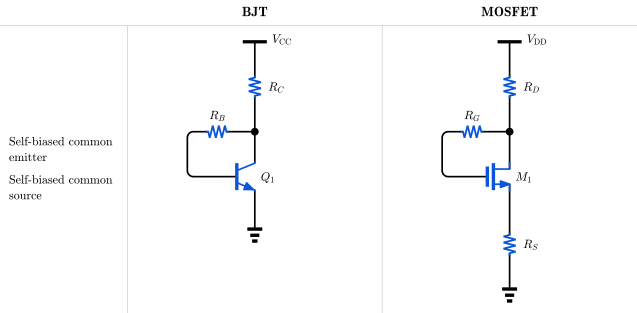
</div>
</div>
<p><strong>Sedra/Smith, Exercise 6.10</strong> (MOSFET)</p>
<p>An NMOS common-source amplifier is biased by a resistor <span class="math notranslate nohighlight">\(R_G\)</span> connected from drain to gate, with <span class="math notranslate nohighlight">\(R_D\)</span> from the drain to <span class="math notranslate nohighlight">\(V_{DD}=5\,\mathrm{V}\)</span>; there is no load. The transistor has <span class="math notranslate nohighlight">\(k_n'(W/L)=1\,\mathrm{mA/V^2}\)</span>, <span class="math notranslate nohighlight">\(V_t=0.7\,\mathrm{V}\)</span>, <span class="math notranslate nohighlight">\(\lambda=0\)</span>. Design for a voltage gain of <span class="math notranslate nohighlight">\(-25\,\mathrm{V/V}\)</span> and an input resistance of <span class="math notranslate nohighlight">\(0.5\,\mathrm{M}\Omega\)</span>. Find <span class="math notranslate nohighlight">\(V_{OV}\)</span>, <span class="math notranslate nohighlight">\(R_D\)</span>, <span class="math notranslate nohighlight">\(I_D\)</span>, <span class="math notranslate nohighlight">\(R_G\)</span> and the largest input amplitude that keeps the transistor in saturation.</p>
<p>Given: <span class="math notranslate nohighlight">\(V_{DD}=5\,\mathrm{V}\)</span>, <span class="math notranslate nohighlight">\(k_n=1\,\mathrm{mA/V^2}\)</span>, <span class="math notranslate nohighlight">\(V_t=0.7\,\mathrm{V}\)</span>, <span class="math notranslate nohighlight">\(A_v=-25\)</span>, <span class="math notranslate nohighlight">\(R_{in}=0.5\,\mathrm{M}\Omega\)</span></p>
<ol class="arabic simple">
<li><p><strong>Gain condition.</strong> <span class="math notranslate nohighlight">\(A_v=-g_mR_D\)</span> (no <span class="math notranslate nohighlight">\(R_L\)</span>) with <span class="math notranslate nohighlight">\(g_m=k_nV_{OV}\)</span> gives <span class="math notranslate nohighlight">\(V_{OV}R_D=25\)</span> (V, k<span class="math notranslate nohighlight">\(\Omega\)</span>), so <span class="math notranslate nohighlight">\(R_D=25/V_{OV}\)</span>.</p></li>
<li><p><strong>Bias condition.</strong> <span class="math notranslate nohighlight">\(V_{GS}=V_{DS}\)</span> (no gate current): <span class="math notranslate nohighlight">\(V_t+V_{OV}=V_{DD}-R_DI_D\)</span> with <span class="math notranslate nohighlight">\(I_D=\tfrac12V_{OV}^2\)</span> (mA).</p></li>
<li><p><strong>Eliminate <span class="math notranslate nohighlight">\(R_D\)</span>.</strong> <span class="math notranslate nohighlight">\(0.7+V_{OV}=5-\dfrac{25}{V_{OV}}\cdot\tfrac12V_{OV}^2=5-12.5V_{OV}\Rightarrow13.5V_{OV}=4.3\)</span>.</p></li>
<li><p><strong>Overdrive and <span class="math notranslate nohighlight">\(R_D\)</span>.</strong> <span class="math notranslate nohighlight">\(V_{OV}=0.319\,\mathrm{V}\)</span>, <span class="math notranslate nohighlight">\(R_D=\dfrac{25}{0.319}=78.5\,\mathrm{k}\Omega\)</span>.</p></li>
<li><p><strong>Bias current.</strong> <span class="math notranslate nohighlight">\(I_D=\tfrac12\cdot1\cdot0.319^2=50.7\,\mu\mathrm{A}\)</span> (about <span class="math notranslate nohighlight">\(51\,\mu\mathrm{A}\)</span>).</p></li>
<li><p><strong>Feedback resistor.</strong> <span class="math notranslate nohighlight">\(R_{in}=\dfrac{R_G}{1+g_mR_D}\Rightarrow R_G=0.5\,\mathrm{M}\Omega\cdot26=13\,\mathrm{M}\Omega\)</span>.</p></li>
<li><p><strong>Largest input.</strong> Saturation requires <span class="math notranslate nohighlight">\(v_{DS}\ge v_{GS}-V_t\)</span>, i.e. the drain voltage swing must not exceed <span class="math notranslate nohighlight">\(V_t\)</span> below the gate: <span class="math notranslate nohighlight">\(\hat v_i(\lvert A_v\rvert+1)\le V_t\)</span>, so <span class="math notranslate nohighlight">\(\hat v_i=\dfrac{0.7}{26}=26.9\,\mathrm{mV}\)</span>.</p></li>
</ol>
<p><strong>Result.</strong> <span class="math notranslate nohighlight">\(V_{OV}=0.319\,\mathrm{V}\)</span>, <span class="math notranslate nohighlight">\(R_D=78.5\,\mathrm{k}\Omega\)</span>, <span class="math notranslate nohighlight">\(I_D\approx51\,\mu\mathrm{A}\)</span>, <span class="math notranslate nohighlight">\(R_G=13\,\mathrm{M}\Omega\)</span>, <span class="math notranslate nohighlight">\(\hat v_i\approx27\,\mathrm{mV}\)</span></p>
<p>Checked: agrees with the answer in the solutions manual.</p>
</section>
<section id="id18">
<h3>Common emitter with diode load / Common source with diode load<a class="headerlink" href="#id18" title="Link to this heading">#</a></h3>
<div class="cell tag_hide-input docutils container">
<details class="admonition hide above-input">
<summary aria-label="Toggle hidden content">
<p class="collapsed admonition-title">Show code cell source</p>
<p class="expanded admonition-title">Hide code cell source</p>
</summary>
<div class="cell_input docutils container">
<div class="highlight-ipython3 notranslate"><div class="highlight"><pre><span></span><span class="c1"># HIDE/SHOW</span>
<span class="n">show</span><span class="p">(</span><span class="n">C</span><span class="o">.</span><span class="n">diode_load</span><span class="p">)</span>
</pre></div>
</div>
</div>
</details>
<div class="cell_output docutils container">

</div>
</div>
<p><strong>Razavi, Problem 7.66</strong> (MOSFET)</p>
<p>Common-source stage of Fig. 7.91: NMOS <span class="math notranslate nohighlight">\(M_1\)</span> (source grounded, gate = input) with a diode-connected PMOS load <span class="math notranslate nohighlight">\(M_2\)</span> (source at <span class="math notranslate nohighlight">\(V_{DD}=1.8\,\mathrm{V}\)</span>, gate and drain joined at the output). <span class="math notranslate nohighlight">\(\lambda=0\)</span>. Design for a voltage gain of 4 with a power budget of 1 mW and an overdrive of 200 mV for <span class="math notranslate nohighlight">\(M_1\)</span>.</p>
<p>Given: <span class="math notranslate nohighlight">\(A_v=4\)</span>, <span class="math notranslate nohighlight">\(P=1\,\mathrm{mW}\)</span>, <span class="math notranslate nohighlight">\(V_{GS1}-V_{TH}=0.2\,\mathrm{V}\)</span>, <span class="math notranslate nohighlight">\(\lambda=0\)</span>; Defaults of the problem set: <span class="math notranslate nohighlight">\(\mu_nC_{ox}=200\,\mu\mathrm{A/V^2}\)</span>, <span class="math notranslate nohighlight">\(\mu_pC_{ox}=100\,\mu\mathrm{A/V^2}\)</span>, <span class="math notranslate nohighlight">\(V_{TH}=0.4\,\mathrm{V}\)</span> (<span class="math notranslate nohighlight">\(-0.4\,\mathrm{V}\)</span> PMOS), <span class="math notranslate nohighlight">\(V_{DD}=1.8\,\mathrm{V}\)</span></p>
<ol class="arabic simple">
<li><p><strong>Drain current.</strong> <span class="math notranslate nohighlight">\(I_D=1\,\mathrm{mW}/1.8\,\mathrm{V}=0.556\,\mathrm{mA}\)</span></p></li>
<li><p><strong>Size <span class="math notranslate nohighlight">\(M_1\)</span>.</strong> <span class="math notranslate nohighlight">\((W/L)_1=\dfrac{2I_D}{\mu_nC_{ox}(0.2)^2}=\dfrac{1.11\,\mathrm{mA}}{(200\,\mu)(0.04)}=139\)</span>; <span class="math notranslate nohighlight">\(g_{m1}=2I_D/0.2=5.56\,\mathrm{mS}\)</span></p></li>
<li><p><strong>Gain of a diode load.</strong> <span class="math notranslate nohighlight">\(A_v=-g_{m1}/g_{m2}\)</span> (<span class="math notranslate nohighlight">\(\lambda=0\)</span>), so <span class="math notranslate nohighlight">\(g_{m2}=g_{m1}/4=1.39\,\mathrm{mS}\)</span></p></li>
<li><p><strong>Overdrive of <span class="math notranslate nohighlight">\(M_2\)</span>.</strong> <span class="math notranslate nohighlight">\(\lvert V_{GS2}-V_{TH2}\rvert=2I_D/g_{m2}=0.8\,\mathrm{V}\)</span>, <span class="math notranslate nohighlight">\(\lvert V_{GS2}\rvert=1.2\,\mathrm{V}\)</span></p></li>
<li><p><strong>Size <span class="math notranslate nohighlight">\(M_2\)</span>.</strong> <span class="math notranslate nohighlight">\((W/L)_2=\dfrac{2I_D}{\mu_pC_{ox}(0.8)^2}=\dfrac{1.11\,\mathrm{mA}}{(100\,\mu)(0.64)}=17.4\)</span></p></li>
<li><p><strong>Check.</strong> <span class="math notranslate nohighlight">\(V_{out}=1.8-1.2=0.6\,\mathrm{V}&gt;V_{GS1}-V_{TH}=0.2\,\mathrm{V}\)</span>, <span class="math notranslate nohighlight">\(M_1\)</span> saturated; <span class="math notranslate nohighlight">\(\sqrt{\mu_n(W/L)_1/(\mu_p(W/L)_2)}=\sqrt{2\times139/17.4}=4\)</span>; input dc level 0.6 V</p></li>
</ol>
<p><strong>Result.</strong> <span class="math notranslate nohighlight">\((W/L)_1=139\)</span>, <span class="math notranslate nohighlight">\((W/L)_2=17.4\)</span>, <span class="math notranslate nohighlight">\(I_D=0.556\,\mathrm{mA}\)</span>, <span class="math notranslate nohighlight">\(V_{out}=0.6\,\mathrm{V}\)</span>, <span class="math notranslate nohighlight">\(A_v=-4\)</span></p>
<p>Checked by computation; the book gives no answer.</p>
</section>
<section id="id19">
<h3>Emitter follower / Source follower<a class="headerlink" href="#id19" title="Link to this heading">#</a></h3>
<div class="cell tag_hide-input docutils container">
<details class="admonition hide above-input">
<summary aria-label="Toggle hidden content">
<p class="collapsed admonition-title">Show code cell source</p>
<p class="expanded admonition-title">Hide code cell source</p>
</summary>
<div class="cell_input docutils container">
<div class="highlight-ipython3 notranslate"><div class="highlight"><pre><span></span><span class="c1"># HIDE/SHOW</span>
<span class="n">show</span><span class="p">(</span><span class="n">C</span><span class="o">.</span><span class="n">follower</span><span class="p">)</span>
</pre></div>
</div>
</div>
</details>
<div class="cell_output docutils container">

</div>
</div>
<p><strong>Razavi, Problem 7.73</strong> (MOSFET)</p>
<p>Source follower of Fig. 7.98: NMOS <span class="math notranslate nohighlight">\(M_1\)</span> with drain at <span class="math notranslate nohighlight">\(V_{DD}=1.8\,\mathrm{V}\)</span> and input at the gate, biased by an NMOS current source <span class="math notranslate nohighlight">\(M_2\)</span> (source grounded, gate at <span class="math notranslate nohighlight">\(V_b\)</span>) whose drain is the output. <span class="math notranslate nohighlight">\(\lambda=0.1\,\mathrm{V^{-1}}\)</span> for both, body effect neglected. Design for a power budget of 3 mW, a voltage gain of 0.9, and <span class="math notranslate nohighlight">\(M_2\)</span> still saturated with only 0.3 V across it.</p>
<p>Given: <span class="math notranslate nohighlight">\(P=3\,\mathrm{mW}\)</span>, <span class="math notranslate nohighlight">\(A_v=0.9\)</span>, <span class="math notranslate nohighlight">\(V_{DS2,min}=0.3\,\mathrm{V}\)</span>, <span class="math notranslate nohighlight">\(\lambda=0.1\,\mathrm{V^{-1}}\)</span>, <span class="math notranslate nohighlight">\(\gamma=0\)</span>; Defaults of the problem set: <span class="math notranslate nohighlight">\(\mu_nC_{ox}=200\,\mu\mathrm{A/V^2}\)</span>, <span class="math notranslate nohighlight">\(\mu_pC_{ox}=100\,\mu\mathrm{A/V^2}\)</span>, <span class="math notranslate nohighlight">\(V_{TH}=0.4\,\mathrm{V}\)</span> (<span class="math notranslate nohighlight">\(-0.4\,\mathrm{V}\)</span> PMOS), <span class="math notranslate nohighlight">\(V_{DD}=1.8\,\mathrm{V}\)</span></p>
<ol class="arabic simple">
<li><p><strong>Current and <span class="math notranslate nohighlight">\(r_O\)</span>.</strong> <span class="math notranslate nohighlight">\(I_D=3\,\mathrm{mW}/1.8\,\mathrm{V}=1.67\,\mathrm{mA}\)</span>, <span class="math notranslate nohighlight">\(r_{O1}=r_{O2}=1/(\lambda I_D)=6\,\mathrm{k}\Omega\)</span></p></li>
<li><p><strong>Gain.</strong> <span class="math notranslate nohighlight">\(A_v=\dfrac{g_{m1}(r_{O1}\parallel r_{O2})}{1+g_{m1}(r_{O1}\parallel r_{O2})}=0.9\)</span> gives <span class="math notranslate nohighlight">\(g_{m1}(3\,\mathrm{k}\Omega)=9\)</span>, <span class="math notranslate nohighlight">\(g_{m1}=3\,\mathrm{mS}\)</span></p></li>
<li><p><strong>Size <span class="math notranslate nohighlight">\(M_1\)</span>.</strong> <span class="math notranslate nohighlight">\(V_{GS1}-V_{TH}=2I_D/g_{m1}=1.11\,\mathrm{V}\)</span>; <span class="math notranslate nohighlight">\((W/L)_1=\dfrac{2I_D}{\mu_nC_{ox}(1.11)^2}=13.5\)</span></p></li>
<li><p><strong>Size <span class="math notranslate nohighlight">\(M_2\)</span>.</strong> Saturated down to <span class="math notranslate nohighlight">\(V_{DS2}=0.3\,\mathrm{V}\)</span>: <span class="math notranslate nohighlight">\(V_{GS2}-V_{TH}=0.3\,\mathrm{V}\)</span>, <span class="math notranslate nohighlight">\((W/L)_2=\dfrac{2I_D}{\mu_nC_{ox}(0.3)^2}=185\)</span>, <span class="math notranslate nohighlight">\(V_b=0.7\,\mathrm{V}\)</span></p></li>
<li><p><strong>Check.</strong> At <span class="math notranslate nohighlight">\(V_{out}=0.3\,\mathrm{V}\)</span> the gate of <span class="math notranslate nohighlight">\(M_1\)</span> sits at <span class="math notranslate nohighlight">\(0.3+1.51=1.81\,\mathrm{V}\)</span> and <span class="math notranslate nohighlight">\(V_{DS1}=1.5\,\mathrm{V}&gt;1.11\,\mathrm{V}\)</span>, so <span class="math notranslate nohighlight">\(M_1\)</span> stays saturated</p></li>
</ol>
<p><strong>Result.</strong> <span class="math notranslate nohighlight">\((W/L)_1\approx13.5\)</span>, <span class="math notranslate nohighlight">\((W/L)_2\approx185\)</span>, <span class="math notranslate nohighlight">\(V_b=0.7\,\mathrm{V}\)</span>, <span class="math notranslate nohighlight">\(I_D=1.67\,\mathrm{mA}\)</span></p>
<p>Checked by computation; the book gives no answer.</p>
</section>
<section id="id20">
<h3>Common-emitter amplifier, signal circuit / Common-source amplifier, signal circuit<a class="headerlink" href="#id20" title="Link to this heading">#</a></h3>
<div class="cell tag_hide-input docutils container">
<details class="admonition hide above-input">
<summary aria-label="Toggle hidden content">
<p class="collapsed admonition-title">Show code cell source</p>
<p class="expanded admonition-title">Hide code cell source</p>
</summary>
<div class="cell_input docutils container">
<div class="highlight-ipython3 notranslate"><div class="highlight"><pre><span></span><span class="c1"># HIDE/SHOW</span>
<span class="n">show</span><span class="p">(</span><span class="n">C</span><span class="o">.</span><span class="n">stage_signal</span><span class="p">)</span>
</pre></div>
</div>
</div>
</details>
<div class="cell_output docutils container">

</div>
</div>
<p><strong>Razavi, Problem 7.62</strong> (MOSFET)</p>
<p>Common-source stage of Fig. 7.87: NMOS <span class="math notranslate nohighlight">\(M_1\)</span> with <span class="math notranslate nohighlight">\(R_D\)</span> from drain to <span class="math notranslate nohighlight">\(V_{DD}=1.8\,\mathrm{V}\)</span> (output at the drain), <span class="math notranslate nohighlight">\(R_S\)</span> from source to ground bypassed by <span class="math notranslate nohighlight">\(C_S\)</span>, and the gate tied to <span class="math notranslate nohighlight">\(V_{DD}\)</span> through <span class="math notranslate nohighlight">\(R_1\)</span>; the input source drives the gate through <span class="math notranslate nohighlight">\(C_1\)</span>. <span class="math notranslate nohighlight">\(\lambda=0\)</span>. Design for a voltage gain of 6, a power budget of 2 mW and an input impedance of <span class="math notranslate nohighlight">\(20\,\mathrm{k}\Omega\)</span>, with <span class="math notranslate nohighlight">\(M_1\)</span> 200 mV away from the triode region; choose <span class="math notranslate nohighlight">\(C_1\)</span> and <span class="math notranslate nohighlight">\(C_S\)</span> so that their impedances are negligible at 1 MHz.</p>
<p>Given: <span class="math notranslate nohighlight">\(A_v=6\)</span>, <span class="math notranslate nohighlight">\(P=2\,\mathrm{mW}\)</span>, <span class="math notranslate nohighlight">\(R_{in}=20\,\mathrm{k}\Omega\)</span>, <span class="math notranslate nohighlight">\(V_{DS}=V_{GS}-V_{TH}+0.2\,\mathrm{V}\)</span>, <span class="math notranslate nohighlight">\(f=1\,\mathrm{MHz}\)</span>, <span class="math notranslate nohighlight">\(\lambda=0\)</span>; Defaults of the problem set: <span class="math notranslate nohighlight">\(\mu_nC_{ox}=200\,\mu\mathrm{A/V^2}\)</span>, <span class="math notranslate nohighlight">\(\mu_pC_{ox}=100\,\mu\mathrm{A/V^2}\)</span>, <span class="math notranslate nohighlight">\(V_{TH}=0.4\,\mathrm{V}\)</span> (<span class="math notranslate nohighlight">\(-0.4\,\mathrm{V}\)</span> PMOS), <span class="math notranslate nohighlight">\(V_{DD}=1.8\,\mathrm{V}\)</span></p>
<ol class="arabic simple">
<li><p><strong>Input impedance.</strong> The gate draws no current, so <span class="math notranslate nohighlight">\(R_{in}=R_1=20\,\mathrm{k}\Omega\)</span> and the gate sits at <span class="math notranslate nohighlight">\(V_G=V_{DD}=1.8\,\mathrm{V}\)</span></p></li>
<li><p><strong>Drain current.</strong> <span class="math notranslate nohighlight">\(R_1\)</span> carries no dc current: <span class="math notranslate nohighlight">\(I_D=2\,\mathrm{mW}/1.8\,\mathrm{V}=1.11\,\mathrm{mA}\)</span></p></li>
<li><p><strong>200 mV from triode fixes the drain.</strong> <span class="math notranslate nohighlight">\(V_D-V_S=V_G-V_S-V_{TH}+0.2\)</span>, so <span class="math notranslate nohighlight">\(V_D=V_G-V_{TH}+0.2=1.6\,\mathrm{V}\)</span> and <span class="math notranslate nohighlight">\(R_D=(1.8-1.6)/1.11\,\mathrm{mA}=180\,\Omega\)</span></p></li>
<li><p><strong>Transconductance.</strong> With <span class="math notranslate nohighlight">\(C_S\)</span> a short, <span class="math notranslate nohighlight">\(A_v=-g_mR_D\)</span>: <span class="math notranslate nohighlight">\(g_m=6/180\,\Omega=33.3\,\mathrm{mS}\)</span></p></li>
<li><p><strong>Overdrive and size.</strong> <span class="math notranslate nohighlight">\(V_{GS}-V_{TH}=2I_D/g_m=66.7\,\mathrm{mV}\)</span>; <span class="math notranslate nohighlight">\(W/L=\dfrac{g_m}{\mu_nC_{ox}(V_{GS}-V_{TH})}=\dfrac{33.3\,\mathrm{mS}}{(200\,\mu)(0.0667)}=2.50\times10^3\)</span></p></li>
<li><p><strong>Source resistor.</strong> <span class="math notranslate nohighlight">\(V_S=V_G-V_{TH}-V_{ov}=1.8-0.4-0.0667=1.33\,\mathrm{V}\)</span>, <span class="math notranslate nohighlight">\(R_S=1.33/1.11\,\mathrm{mA}=1.20\,\mathrm{k}\Omega\)</span></p></li>
<li><p><strong>Coupling capacitor.</strong> <span class="math notranslate nohighlight">\(C_1\)</span> is in series with <span class="math notranslate nohighlight">\(R_{in}=20\,\mathrm{k}\Omega\)</span>; make <span class="math notranslate nohighlight">\(1/(2\pi fC_1)=R_1/10=2\,\mathrm{k}\Omega\)</span>: <span class="math notranslate nohighlight">\(C_1=79.6\,\mathrm{pF}\)</span> (use about 100 pF)</p></li>
<li><p><strong>Bypass capacitor.</strong> <span class="math notranslate nohighlight">\(C_S\)</span> must be small against <span class="math notranslate nohighlight">\(1/g_m=30\,\Omega\)</span> seen at the source; make <span class="math notranslate nohighlight">\(1/(2\pi fC_S)=3\,\Omega\)</span>: <span class="math notranslate nohighlight">\(C_S=53\,\mathrm{nF}\)</span></p></li>
<li><p><strong>Check.</strong> <span class="math notranslate nohighlight">\(V_{DS}=1.6-1.33=0.267\,\mathrm{V}=V_{ov}+0.2\,\mathrm{V}\)</span>; <span class="math notranslate nohighlight">\(g_mR_D=6.0\)</span></p></li>
</ol>
<p><strong>Result.</strong> <span class="math notranslate nohighlight">\(R_1=20\,\mathrm{k}\Omega\)</span>, <span class="math notranslate nohighlight">\(I_D=1.11\,\mathrm{mA}\)</span>, <span class="math notranslate nohighlight">\(R_D=180\,\Omega\)</span>, <span class="math notranslate nohighlight">\(W/L=2.5\times10^3\)</span>, <span class="math notranslate nohighlight">\(R_S=1.2\,\mathrm{k}\Omega\)</span>, <span class="math notranslate nohighlight">\(C_1\gtrsim80\,\mathrm{pF}\)</span>, <span class="math notranslate nohighlight">\(C_S\gtrsim53\,\mathrm{nF}\)</span></p>
<p>Checked by computation; the book gives no answer. Note: Fig. 7.87 has only <span class="math notranslate nohighlight">\(R_1\)</span> from the gate to <span class="math notranslate nohighlight">\(V_{DD}\)</span> (no resistor to ground), so <span class="math notranslate nohighlight">\(V_G=V_{DD}\)</span> and <span class="math notranslate nohighlight">\(R_{in}=R_1\)</span>. The factor of ten used for “negligible” capacitor impedance is a choice. The resulting <span class="math notranslate nohighlight">\(W/L\)</span> is very large because the 200 mV margin leaves only 0.2 V across <span class="math notranslate nohighlight">\(R_D\)</span>.</p>
</section>
<section id="id21">
<h3>Other Circuits<a class="headerlink" href="#id21" title="Link to this heading">#</a></h3>
<p><strong>Razavi, Example 5.26</strong> (BJT)</p>
<p>A microphone with <span class="math notranslate nohighlight">\(1\,\mathrm{k}\Omega\)</span> output resistance and a <span class="math notranslate nohighlight">\(2\,\mathrm{mV}\)</span> peak signal drives the base (through its resistance) of a degenerated common-emitter stage. The stage is biased at <span class="math notranslate nohighlight">\(I_C=1\,\mathrm{mA}\)</span>, <span class="math notranslate nohighlight">\(\beta=100\)</span>, with <span class="math notranslate nohighlight">\(R_E=4/g_m\)</span>. Choose <span class="math notranslate nohighlight">\(R_C\)</span> so that the output peak is <span class="math notranslate nohighlight">\(40\,\mathrm{mV}\)</span>. Use <span class="math notranslate nohighlight">\(V_T=26\,\mathrm{mV}\)</span>.</p>
<p>Given: <span class="math notranslate nohighlight">\(R_B=1\,\mathrm{k}\Omega\)</span> (microphone), <span class="math notranslate nohighlight">\(v_{in,peak}=2\,\mathrm{mV}\)</span>, <span class="math notranslate nohighlight">\(v_{out,peak}=40\,\mathrm{mV}\)</span>, <span class="math notranslate nohighlight">\(I_C=1\,\mathrm{mA}\)</span>, <span class="math notranslate nohighlight">\(\beta=100\)</span>, <span class="math notranslate nohighlight">\(R_E=4/g_m\)</span></p>
<ol class="arabic simple">
<li><p><strong>Required gain.</strong> <span class="math notranslate nohighlight">\(\lvert A_v\rvert=\dfrac{40\,\mathrm{mV}}{2\,\mathrm{mV}}=20\)</span>, measured from the microphone source voltage to the output.</p></li>
<li><p><strong>Transconductance and <span class="math notranslate nohighlight">\(R_E\)</span>.</strong> <span class="math notranslate nohighlight">\(g_m=\dfrac1{26\,\Omega}\)</span>, so <span class="math notranslate nohighlight">\(R_E=\dfrac4{g_m}=104\,\Omega\)</span>.</p></li>
<li><p><strong>Gain with base resistance.</strong> <span class="math notranslate nohighlight">\(\lvert A_v\rvert=\dfrac{R_C}{\dfrac1{g_m}+R_E+\dfrac{R_B}{\beta+1}}\)</span>: the base resistance counts as <span class="math notranslate nohighlight">\(R_B/(\beta+1)\)</span> in series with the emitter.</p></li>
<li><p><strong>Denominator.</strong> <span class="math notranslate nohighlight">\(\dfrac1{g_m}+R_E+\dfrac{R_B}{\beta+1}=26+104+9.9=139.9\,\Omega\)</span>.</p></li>
<li><p><strong>Solve for <span class="math notranslate nohighlight">\(R_C\)</span>.</strong> <span class="math notranslate nohighlight">\(R_C=\lvert A_v\rvert\times139.9\,\Omega=20\times139.9\,\Omega\approx2.8\,\mathrm{k}\Omega\)</span>.</p></li>
<li><p><strong>Check with the exact expression.</strong> With <span class="math notranslate nohighlight">\(\lvert A_v\rvert=\dfrac{\beta R_C}{r_\pi+(\beta+1)R_E+R_B}\)</span> and <span class="math notranslate nohighlight">\(R_C=2798\,\Omega\)</span> the gain is <span class="math notranslate nohighlight">\(19.8\)</span> (output <span class="math notranslate nohighlight">\(39.7\,\mathrm{mV}\)</span>); an exact design would need <span class="math notranslate nohighlight">\(R_C=2.82\,\mathrm{k}\Omega\)</span>.</p></li>
</ol>
<p><strong>Result.</strong> <span class="math notranslate nohighlight">\(R_E\approx104\,\Omega\)</span>, <span class="math notranslate nohighlight">\(R_C\approx2.8\,\mathrm{k}\Omega\)</span></p>
<p>Checked: agrees with the answer in the book.</p>
<p><strong>Razavi, Example 5.34</strong> (BJT)</p>
<p>Design a common-emitter stage with a resistive base divider (<span class="math notranslate nohighlight">\(R_1\)</span> to <span class="math notranslate nohighlight">\(V_{CC}\)</span>, <span class="math notranslate nohighlight">\(R_2\)</span> to ground), a collector resistor <span class="math notranslate nohighlight">\(R_C\)</span> and an emitter resistor <span class="math notranslate nohighlight">\(R_E\)</span> that is bypassed by a large capacitor <span class="math notranslate nohighlight">\(C_2\)</span>; the input is coupled through a capacitor. Requirements: <span class="math notranslate nohighlight">\(I_C=1\,\mathrm{mA}\)</span>, voltage drop across <span class="math notranslate nohighlight">\(R_E\)</span> equal to <span class="math notranslate nohighlight">\(400\,\mathrm{mV}\)</span>, voltage gain of <span class="math notranslate nohighlight">\(20\)</span> (in magnitude) from <span class="math notranslate nohighlight">\(20\,\mathrm{Hz}\)</span> to <span class="math notranslate nohighlight">\(20\,\mathrm{kHz}\)</span>, and input resistance above <span class="math notranslate nohighlight">\(2\,\mathrm{k}\Omega\)</span>. Find <span class="math notranslate nohighlight">\(R_E\)</span>, <span class="math notranslate nohighlight">\(R_C\)</span>, <span class="math notranslate nohighlight">\(C_2\)</span>, <span class="math notranslate nohighlight">\(R_1\)</span> and <span class="math notranslate nohighlight">\(R_2\)</span>.</p>
<p>Given: <span class="math notranslate nohighlight">\(V_{CC}=2.5\,\mathrm{V}\)</span>, <span class="math notranslate nohighlight">\(\beta=100\)</span>, <span class="math notranslate nohighlight">\(I_S=5\times10^{-16}\,\mathrm{A}\)</span>, <span class="math notranslate nohighlight">\(V_T=26\,\mathrm{mV}\)</span>; design targets as above</p>
<ol class="arabic simple">
<li><p><strong>Emitter resistor.</strong> <span class="math notranslate nohighlight">\(I_E\approx I_C=1\,\mathrm{mA}\)</span>, so <span class="math notranslate nohighlight">\(R_E=\dfrac{400\,\mathrm{mV}}{1\,\mathrm{mA}}=400\,\Omega\)</span>.</p></li>
<li><p><strong>Collector resistor.</strong> With <span class="math notranslate nohighlight">\(C_2\)</span> shorting <span class="math notranslate nohighlight">\(R_E\)</span> at signal frequencies, <span class="math notranslate nohighlight">\(\lvert A_v\rvert=g_mR_C\)</span> with <span class="math notranslate nohighlight">\(g_m=1/26\,\Omega=38.5\,\mathrm{mS}\)</span>, so <span class="math notranslate nohighlight">\(R_C=\dfrac{20}{g_m}=520\,\Omega\)</span>.</p></li>
<li><p><strong>Bypass capacitor.</strong> The impedance of <span class="math notranslate nohighlight">\(C_2\)</span> must be much less than <span class="math notranslate nohighlight">\(1/g_m=26\,\Omega\)</span> (not just less than <span class="math notranslate nohighlight">\(R_E\)</span>) at the lowest frequency, <span class="math notranslate nohighlight">\(20\,\mathrm{Hz}\)</span>. Take <span class="math notranslate nohighlight">\(\dfrac{1}{\omega C_2}=\dfrac{1}{10\,g_m}=2.6\,\Omega\)</span> with <span class="math notranslate nohighlight">\(\omega=2\pi\times20\,\mathrm{Hz}\)</span>: <span class="math notranslate nohighlight">\(C_2=\dfrac{1}{2\pi\cdot20\cdot2.6}=3.06\,\mathrm{mF}\)</span>. This is unrealistically large for a coupling or bypass capacitor and would call for a redesign (e.g., a higher lower-frequency limit).</p></li>
<li><p><strong>Base voltage.</strong> <span class="math notranslate nohighlight">\(V_{BE}=V_T\ln\dfrac{I_C}{I_S}=736\,\mathrm{mV}\)</span>, so the base must sit at <span class="math notranslate nohighlight">\(V_X=V_{BE}+V_{RE}=0.736+0.400=1.136\,\mathrm{V}\)</span>.</p></li>
<li><p><strong>First try: divider current <span class="math notranslate nohighlight">\(=10I_B\)</span>.</strong> <span class="math notranslate nohighlight">\(I_B=I_C/\beta=10\,\mu\mathrm{A}\)</span>, so take <span class="math notranslate nohighlight">\(100\,\mu\mathrm{A}\)</span>: <span class="math notranslate nohighlight">\(R_1+R_2=\dfrac{2.5\,\mathrm{V}}{100\,\mu\mathrm{A}}=25\,\mathrm{k}\Omega\)</span>, <span class="math notranslate nohighlight">\(R_2=\dfrac{V_X}{V_{CC}}\cdot25\,\mathrm{k}\Omega=11.4\,\mathrm{k}\Omega\)</span>, <span class="math notranslate nohighlight">\(R_1=13.6\,\mathrm{k}\Omega\)</span>. Then <span class="math notranslate nohighlight">\(R_{in}=r_\pi\parallel R_1\parallel R_2=2.6\,\mathrm{k}\Omega\parallel13.6\,\mathrm{k}\Omega\parallel11.4\,\mathrm{k}\Omega=1.83\,\mathrm{k}\Omega&lt;2\,\mathrm{k}\Omega\)</span>: fails.</p></li>
<li><p><strong>Second try: divider current <span class="math notranslate nohighlight">\(=5I_B\)</span>.</strong> Use <span class="math notranslate nohighlight">\(50\,\mu\mathrm{A}\)</span>: <span class="math notranslate nohighlight">\(R_1+R_2=50\,\mathrm{k}\Omega\)</span>, <span class="math notranslate nohighlight">\(R_2=\dfrac{1.136}{2.5}\times50\,\mathrm{k}\Omega=22.7\,\mathrm{k}\Omega\)</span>, <span class="math notranslate nohighlight">\(R_1=27.3\,\mathrm{k}\Omega\)</span>, and <span class="math notranslate nohighlight">\(R_{in}=2.6\,\mathrm{k}\Omega\parallel27.3\,\mathrm{k}\Omega\parallel22.7\,\mathrm{k}\Omega=2.15\,\mathrm{k}\Omega&gt;2\,\mathrm{k}\Omega\)</span>: passes.</p></li>
<li><p><strong>Sensitivity (check).</strong> The divider was computed neglecting <span class="math notranslate nohighlight">\(I_B\)</span>. Solving the loaded bias equation <span class="math notranslate nohighlight">\(V_{th}=I_BR_{th}+V_{BE}+I_ER_E\)</span> with these resistors gives <span class="math notranslate nohighlight">\(I_C\approx0.77\,\mathrm{mA}\)</span>, i.e. about <span class="math notranslate nohighlight">\(23\%\)</span> below the target; the gain and <span class="math notranslate nohighlight">\(R_{in}\)</span> would shift slightly. A designer would then trim <span class="math notranslate nohighlight">\(R_2\)</span> upward, at the cost of <span class="math notranslate nohighlight">\(R_{in}\)</span>.</p></li>
</ol>
<p><strong>Result.</strong> <span class="math notranslate nohighlight">\(R_E=400\,\Omega\)</span>, <span class="math notranslate nohighlight">\(R_C=520\,\Omega\)</span>, <span class="math notranslate nohighlight">\(R_1\approx27.3\,\mathrm{k}\Omega\)</span>, <span class="math notranslate nohighlight">\(R_2\approx22.7\,\mathrm{k}\Omega\)</span> (<span class="math notranslate nohighlight">\(R_{in}=2.15\,\mathrm{k}\Omega\)</span>), <span class="math notranslate nohighlight">\(C_2\gtrsim3.06\,\mathrm{mF}\)</span></p>
<p>Checked: agrees with the answer in the book.</p>
<p><strong>Razavi, Example 5.42</strong> (BJT)</p>
<p>Design a common-base stage with a base divider (<span class="math notranslate nohighlight">\(R_1\)</span> from <span class="math notranslate nohighlight">\(V_{CC}\)</span> to the base, <span class="math notranslate nohighlight">\(R_2\)</span> from the base to ground) and a bypass capacitor <span class="math notranslate nohighlight">\(C_B\)</span> from the base to ground, an emitter resistor <span class="math notranslate nohighlight">\(R_E\)</span> to ground that provides the bias path, an input coupling capacitor <span class="math notranslate nohighlight">\(C_1\)</span> from the source to the emitter, and a collector resistor <span class="math notranslate nohighlight">\(R_C\)</span>. Requirements: voltage gain <span class="math notranslate nohighlight">\(10\)</span>, input impedance <span class="math notranslate nohighlight">\(50\,\Omega\)</span>. Choose <span class="math notranslate nohighlight">\(R_E\)</span>, <span class="math notranslate nohighlight">\(R_C\)</span>, the bias current, <span class="math notranslate nohighlight">\(R_1\)</span>, <span class="math notranslate nohighlight">\(R_2\)</span>, and the capacitors for an operating frequency of <span class="math notranslate nohighlight">\(900\,\mathrm{MHz}\)</span>.</p>
<p>Given: <span class="math notranslate nohighlight">\(V_{CC}=2.5\,\mathrm{V}\)</span>, <span class="math notranslate nohighlight">\(I_S=5\times10^{-16}\,\mathrm{A}\)</span>, <span class="math notranslate nohighlight">\(\beta=100\)</span>, <span class="math notranslate nohighlight">\(V_A=\infty\)</span>, <span class="math notranslate nohighlight">\(V_T=26\,\mathrm{mV}\)</span>, <span class="math notranslate nohighlight">\(f=900\,\mathrm{MHz}\)</span></p>
<ol class="arabic simple">
<li><p><strong>Choice of <span class="math notranslate nohighlight">\(R_E\)</span>.</strong> <span class="math notranslate nohighlight">\(R_E\)</span> is in parallel with <span class="math notranslate nohighlight">\(1/g_m\)</span> at the input, so take <span class="math notranslate nohighlight">\(R_E\gg1/g_m=50\,\Omega\)</span>, e.g., <span class="math notranslate nohighlight">\(R_E=500\,\Omega\)</span> (more precisely <span class="math notranslate nohighlight">\(R_{in}=50\,\Omega\parallel500\,\Omega=45.5\,\Omega\)</span>, about <span class="math notranslate nohighlight">\(9\%\)</span> low, which is accepted).</p></li>
<li><p><strong>Bias current.</strong> <span class="math notranslate nohighlight">\(R_{in}\approx1/g_m=50\,\Omega\)</span> gives <span class="math notranslate nohighlight">\(g_m=20\,\mathrm{mS}\)</span> and <span class="math notranslate nohighlight">\(I_C=g_mV_T=0.52\,\mathrm{mA}\)</span>.</p></li>
<li><p><strong>Collector resistor.</strong> With the base bypassed, <span class="math notranslate nohighlight">\(A_v=g_mR_C=10\)</span>, so <span class="math notranslate nohighlight">\(R_C=\dfrac{10}{20\,\mathrm{mS}}=500\,\Omega\)</span>.</p></li>
<li><p><strong>Base voltage.</strong> <span class="math notranslate nohighlight">\(V_{RE}=R_EI_C=260\,\mathrm{mV}\)</span> and <span class="math notranslate nohighlight">\(V_{BE}=V_T\ln\dfrac{I_C}{I_S}=719\,\mathrm{mV}\)</span>, so <span class="math notranslate nohighlight">\(V_b=V_{RE}+V_{BE}=0.979\,\mathrm{V}\)</span>.</p></li>
<li><p><strong>Divider.</strong> <span class="math notranslate nohighlight">\(I_B=I_C/\beta=5.2\,\mu\mathrm{A}\)</span>; take a divider current <span class="math notranslate nohighlight">\(10I_B=52\,\mu\mathrm{A}\)</span>: <span class="math notranslate nohighlight">\(R_1+R_2=\dfrac{2.5\,\mathrm{V}}{52\,\mu\mathrm{A}}=48.1\,\mathrm{k}\Omega\)</span>, <span class="math notranslate nohighlight">\(R_2=\dfrac{V_b}{V_{CC}}\times48.1\,\mathrm{k}\Omega=18.8\,\mathrm{k}\Omega\)</span>, <span class="math notranslate nohighlight">\(R_1=29.3\,\mathrm{k}\Omega\)</span>.</p></li>
<li><p><strong>Input coupling capacitor.</strong> <span class="math notranslate nohighlight">\(C_1\)</span> is in series with the source, so its impedance must be <span class="math notranslate nohighlight">\(\ll1/g_m\)</span>: choose <span class="math notranslate nohighlight">\(\dfrac{1}{\omega C_1}=\dfrac{1/g_m}{20}=2.5\,\Omega\)</span> with <span class="math notranslate nohighlight">\(\omega=2\pi\times900\,\mathrm{MHz}\)</span>, giving <span class="math notranslate nohighlight">\(C_1=70.7\,\mathrm{pF}\)</span>.</p></li>
<li><p><strong>Base bypass capacitor.</strong> The impedance of <span class="math notranslate nohighlight">\(C_B\)</span> in the base appears divided by <span class="math notranslate nohighlight">\(\beta+1\)</span> at the emitter, so require <span class="math notranslate nohighlight">\(\dfrac{1}{(\beta+1)\omega C_B}=\dfrac{1/g_m}{20}=2.5\,\Omega\)</span>, giving <span class="math notranslate nohighlight">\(\dfrac{1}{\omega C_B}=252.5\,\Omega\)</span> and <span class="math notranslate nohighlight">\(C_B=0.70\,\mathrm{pF}\)</span>. (It is to be compared with <span class="math notranslate nohighlight">\(1/g_m\)</span>, not with <span class="math notranslate nohighlight">\(R_1\parallel R_2\)</span>.)</p></li>
<li><p><strong>Check on the bias.</strong> Solving the loaded divider (base current included) gives <span class="math notranslate nohighlight">\(I_C\approx0.43\,\mathrm{mA}\)</span>, below the nominal <span class="math notranslate nohighlight">\(0.52\,\mathrm{mA}\)</span> (<span class="math notranslate nohighlight">\(\approx18\%\)</span>); the divider current <span class="math notranslate nohighlight">\(10I_B\)</span> is only an approximate target, so <span class="math notranslate nohighlight">\(R_2\)</span> would be raised slightly in practice.</p></li>
</ol>
<p><strong>Result.</strong> <span class="math notranslate nohighlight">\(I_C=0.52\,\mathrm{mA}\)</span>, <span class="math notranslate nohighlight">\(R_E=R_C=500\,\Omega\)</span>, <span class="math notranslate nohighlight">\(V_b=0.979\,\mathrm{V}\)</span>, <span class="math notranslate nohighlight">\(R_1\approx29.3\,\mathrm{k}\Omega\)</span>, <span class="math notranslate nohighlight">\(R_2\approx18.8\,\mathrm{k}\Omega\)</span>, <span class="math notranslate nohighlight">\(C_1\approx70.7\,\mathrm{pF}\)</span>, <span class="math notranslate nohighlight">\(C_B\approx0.70\,\mathrm{pF}\)</span></p>
<p>Checked: differs from the answer in the book; the note says why. Note: R1 and R2 DISAGREE with the book (25.8 k and 22.3 k): the book uses V_BE = 899 mV, which is a slip; V_T ln(0.52 mA / 5e-16 A) = 719 mV (an 899 mV drop would mean an enormous current), so V_b = 0.979 V, not 1.16 V. All other values (IC, RE, RC, C1, CB) agree with the book. With the book V_b = 1.16 V the book divider values follow exactly.</p>
<p><strong>Razavi, Example 7.11</strong> (MOSFET)</p>
<p>Design an NMOS common-source stage with a gate divider <span class="math notranslate nohighlight">\(R_1,R_2\)</span> (to <span class="math notranslate nohighlight">\(V_{DD}\)</span> and ground), an input coupling capacitor, a source resistor <span class="math notranslate nohighlight">\(R_S\)</span> bypassed by a large capacitor, and a drain resistor <span class="math notranslate nohighlight">\(R_D\)</span>, for voltage gain magnitude <span class="math notranslate nohighlight">\(5\)</span>, input resistance <span class="math notranslate nohighlight">\(50\,\mathrm{k}\Omega\)</span> and a power budget of <span class="math notranslate nohighlight">\(5\,\mathrm{mW}\)</span> from <span class="math notranslate nohighlight">\(V_{DD}=1.8\,\mathrm{V}\)</span>. Assume <span class="math notranslate nohighlight">\(400\,\mathrm{mV}\)</span> across <span class="math notranslate nohighlight">\(R_S\)</span>. Choose <span class="math notranslate nohighlight">\(R_S\)</span>, <span class="math notranslate nohighlight">\(R_D\)</span>, <span class="math notranslate nohighlight">\(W/L\)</span>, <span class="math notranslate nohighlight">\(R_1\)</span>, <span class="math notranslate nohighlight">\(R_2\)</span> and ensure saturation.</p>
<p>Given: <span class="math notranslate nohighlight">\(\mu_nC_{ox}=100\,\mu\mathrm{A/V^2}\)</span>, <span class="math notranslate nohighlight">\(V_{TH}=0.5\,\mathrm{V}\)</span>, <span class="math notranslate nohighlight">\(\lambda=0\)</span>, <span class="math notranslate nohighlight">\(V_{DD}=1.8\,\mathrm{V}\)</span>, <span class="math notranslate nohighlight">\(P\le5\,\mathrm{mW}\)</span>, <span class="math notranslate nohighlight">\(\lvert A_v\rvert=5\)</span>, <span class="math notranslate nohighlight">\(R_{in}=R_1\parallel R_2=50\,\mathrm{k}\Omega\)</span>, <span class="math notranslate nohighlight">\(V_{R_S}=0.4\,\mathrm{V}\)</span></p>
<ol class="arabic simple">
<li><p><strong>Supply current.</strong> <span class="math notranslate nohighlight">\(I_{max}=P/V_{DD}=5\,\mathrm{mW}/1.8\,\mathrm{V}=2.78\,\mathrm{mA}\)</span>. Give <span class="math notranslate nohighlight">\(2.7\,\mathrm{mA}\)</span> to <span class="math notranslate nohighlight">\(M_1\)</span> and keep the remaining <span class="math notranslate nohighlight">\(\approx80\,\mu\mathrm{A}\)</span> as an allowance for the divider.</p></li>
<li><p><strong>Source resistor.</strong> <span class="math notranslate nohighlight">\(R_S=\dfrac{0.4\,\mathrm{V}}{2.7\,\mathrm{mA}}=148\,\Omega\)</span>.</p></li>
<li><p><strong>Choose <span class="math notranslate nohighlight">\(V_{GS}\)</span>, find <span class="math notranslate nohighlight">\(g_m\)</span> and <span class="math notranslate nohighlight">\(R_D\)</span>.</strong> Pick <span class="math notranslate nohighlight">\(V_{GS}=1\,\mathrm{V}\)</span> (overdrive <span class="math notranslate nohighlight">\(0.5\,\mathrm{V}\)</span>): <span class="math notranslate nohighlight">\(g_m=\dfrac{2I_D}{V_{GS}-V_{TH}}=\dfrac{1}{92.6\,\Omega}\)</span>. With the bypass capacitor <span class="math notranslate nohighlight">\(\lvert A_v\rvert=g_mR_D=5\)</span> gives <span class="math notranslate nohighlight">\(R_D=5\cdot92.6=463\,\Omega\)</span>.</p></li>
<li><p><strong>Size the device.</strong> <span class="math notranslate nohighlight">\(I_D=\tfrac12\mu_nC_{ox}\dfrac WL(V_{GS}-V_{TH})^2\)</span> gives <span class="math notranslate nohighlight">\(W/L=\dfrac{2(2.7\,\mathrm{mA})}{100\,\mu\mathrm{A/V^2}(0.5\,\mathrm{V})^2}=216\)</span>.</p></li>
<li><p><strong>Divider, first attempt.</strong> <span class="math notranslate nohighlight">\(V_G=1+0.4=1.4\,\mathrm{V}\)</span>, so <span class="math notranslate nohighlight">\(\dfrac{R_2}{R_1+R_2}=\dfrac{1.4}{1.8}\)</span> with <span class="math notranslate nohighlight">\(R_1\parallel R_2=50\,\mathrm{k}\Omega\)</span>: <span class="math notranslate nohighlight">\(R_1=64.3\,\mathrm{k}\Omega\)</span>, <span class="math notranslate nohighlight">\(R_2=225\,\mathrm{k}\Omega\)</span>.</p></li>
<li><p><strong>Check saturation.</strong> <span class="math notranslate nohighlight">\(V_D=V_{DD}-R_DI_D=1.8-1.25=0.55\,\mathrm{V}\)</span> but <span class="math notranslate nohighlight">\(V_G-V_{TH}=0.9\,\mathrm{V}\)</span>: the gate-drain voltage exceeds <span class="math notranslate nohighlight">\(V_{TH}\)</span>, so <span class="math notranslate nohighlight">\(M_1\)</span> is in triode. The choice of <span class="math notranslate nohighlight">\(g_m\)</span> was too small, forcing <span class="math notranslate nohighlight">\(R_D\)</span> too large.</p></li>
<li><p><strong>Revise.</strong> Raise <span class="math notranslate nohighlight">\(g_m\)</span> and lower <span class="math notranslate nohighlight">\(R_D\)</span>: quadruple <span class="math notranslate nohighlight">\(W/L\)</span> to <span class="math notranslate nohighlight">\(864\)</span> so <span class="math notranslate nohighlight">\(g_m\)</span> doubles to <span class="math notranslate nohighlight">\(1/46.3\,\Omega\)</span> and <span class="math notranslate nohighlight">\(R_D=5\cdot46.3=231\,\Omega\)</span>. The overdrive becomes <span class="math notranslate nohighlight">\(2I_D/g_m=0.25\,\mathrm{V}\)</span>, i.e. <span class="math notranslate nohighlight">\(V_{GS}=0.75\,\mathrm{V}\)</span>.</p></li>
<li><p><strong>Recheck.</strong> <span class="math notranslate nohighlight">\(V_G=0.75+0.4=1.15\,\mathrm{V}\)</span> and <span class="math notranslate nohighlight">\(V_D=1.8-231\,\Omega\cdot2.7\,\mathrm{mA}=1.175\,\mathrm{V}&gt;V_G-V_{TH}=0.65\,\mathrm{V}\)</span>: saturated.</p></li>
<li><p><strong>Divider for the final design.</strong> <span class="math notranslate nohighlight">\(R_1=50\,\mathrm{k}\Omega\cdot1.8/1.15=78.3\,\mathrm{k}\Omega\)</span>, <span class="math notranslate nohighlight">\(R_2=50\,\mathrm{k}\Omega/(1-1.15/1.8)=138\,\mathrm{k}\Omega\)</span> (divider current <span class="math notranslate nohighlight">\(8.3\,\mu\mathrm{A}\)</span>, total power <span class="math notranslate nohighlight">\(4.87\,\mathrm{mW}\)</span>).</p></li>
</ol>
<p><strong>Result.</strong> Final: <span class="math notranslate nohighlight">\(I_D=2.7\,\mathrm{mA}\)</span>, <span class="math notranslate nohighlight">\(R_S=148\,\Omega\)</span>, <span class="math notranslate nohighlight">\(W/L=864\)</span>, <span class="math notranslate nohighlight">\(R_D\approx231\,\Omega\)</span>, <span class="math notranslate nohighlight">\(V_G=1.15\,\mathrm{V}\)</span>, <span class="math notranslate nohighlight">\(R_1\approx78.3\,\mathrm{k}\Omega\)</span>, <span class="math notranslate nohighlight">\(R_2\approx138\,\mathrm{k}\Omega\)</span></p>
<p>Checked: agrees with the answer in the book. Note: The book states the revised gate voltage as 1.17 V; with V_GS = 0.75 V and 0.4 V across R_S it is 1.15 V (the saturation conclusion is unaffected). The book does not give R1 and R2 for the revised design; they are computed here from VG = 1.15 V.</p>
<p><strong>Razavi, Example 7.14</strong> (MOSFET)</p>
<p>Design a common-gate stage: <span class="math notranslate nohighlight">\(M_1\)</span> has its gate on a divider <span class="math notranslate nohighlight">\(R_1\)</span> (to <span class="math notranslate nohighlight">\(V_{DD}\)</span>), <span class="math notranslate nohighlight">\(R_2\)</span> (to ground), its source at node <span class="math notranslate nohighlight">\(X\)</span> with a resistor <span class="math notranslate nohighlight">\(R_3=500\,\Omega\)</span> to ground (carrying the bias current), the signal source (resistance <span class="math notranslate nohighlight">\(R_S\)</span>) coupled to <span class="math notranslate nohighlight">\(X\)</span> through a capacitor, and a drain resistor <span class="math notranslate nohighlight">\(R_D\)</span> to <span class="math notranslate nohighlight">\(V_{DD}=1.8\,\mathrm{V}\)</span>. Required: <span class="math notranslate nohighlight">\(v_{out}/v_{in}=5\)</span> with <span class="math notranslate nohighlight">\(R_S=0\)</span>, power <span class="math notranslate nohighlight">\(2\,\mathrm{mW}\)</span>. Choose <span class="math notranslate nohighlight">\(W/L\)</span>, <span class="math notranslate nohighlight">\(R_D\)</span>, <span class="math notranslate nohighlight">\(R_1\)</span>, <span class="math notranslate nohighlight">\(R_2\)</span> and make sure <span class="math notranslate nohighlight">\(M_1\)</span> is saturated.</p>
<p>Given: <span class="math notranslate nohighlight">\(\mu_nC_{ox}=100\,\mu\mathrm{A/V^2}\)</span>, <span class="math notranslate nohighlight">\(V_{TH}=0.5\,\mathrm{V}\)</span>, <span class="math notranslate nohighlight">\(\lambda=0\)</span>, <span class="math notranslate nohighlight">\(V_{DD}=1.8\,\mathrm{V}\)</span>, <span class="math notranslate nohighlight">\(R_3=500\,\Omega\)</span>, <span class="math notranslate nohighlight">\(R_S=0\)</span>, <span class="math notranslate nohighlight">\(A_v=5\)</span>, <span class="math notranslate nohighlight">\(P=2\,\mathrm{mW}\)</span></p>
<ol class="arabic simple">
<li><p><strong>Current budget.</strong> <span class="math notranslate nohighlight">\(I_{tot}=2\,\mathrm{mW}/1.8\,\mathrm{V}=1.11\,\mathrm{mA}\)</span>. Give <span class="math notranslate nohighlight">\(10\,\mu\mathrm{A}\)</span> to the divider and <span class="math notranslate nohighlight">\(I_D=1.1\,\mathrm{mA}\)</span> to <span class="math notranslate nohighlight">\(M_1\)</span>.</p></li>
<li><p><strong>Drop across <span class="math notranslate nohighlight">\(R_3\)</span>.</strong> <span class="math notranslate nohighlight">\(V_{R_3}=1.1\,\mathrm{mA}\cdot500\,\Omega=0.55\,\mathrm{V}\)</span>.</p></li>
<li><p><strong>Pick <span class="math notranslate nohighlight">\(V_{GS}\)</span> and size.</strong> Choose <span class="math notranslate nohighlight">\(V_{GS}=0.8\,\mathrm{V}\)</span> (overdrive <span class="math notranslate nohighlight">\(0.3\,\mathrm{V}\)</span>): <span class="math notranslate nohighlight">\(\dfrac WL=\dfrac{2(1.1\,\mathrm{mA})}{100\,\mu\mathrm{A/V^2}\cdot(0.3\,\mathrm{V})^2}=244\)</span>.</p></li>
<li><p><strong>Transconductance.</strong> <span class="math notranslate nohighlight">\(g_m=\dfrac{2I_D}{V_{GS}-V_{TH}}=\dfrac{2.2\,\mathrm{mA}}{0.3\,\mathrm{V}}=7.33\,\mathrm{mS}=\dfrac{1}{136.4\,\Omega}\)</span>.</p></li>
<li><p><strong>Drain resistor.</strong> With <span class="math notranslate nohighlight">\(R_S=0\)</span> the input divider factor is <span class="math notranslate nohighlight">\(1\)</span>, so <span class="math notranslate nohighlight">\(A_v=g_mR_D=5\)</span> gives <span class="math notranslate nohighlight">\(R_D=5\cdot136.4=682\,\Omega\)</span>.</p></li>
<li><p><strong>Saturation check.</strong> <span class="math notranslate nohighlight">\(V_G=V_{GS}+V_{R_3}=1.35\,\mathrm{V}\)</span>, <span class="math notranslate nohighlight">\(V_D=1.8-1.1\,\mathrm{mA}\cdot682\,\Omega=1.05\,\mathrm{V}\)</span>; <span class="math notranslate nohighlight">\(V_G-V_{TH}=0.85\,\mathrm{V}&lt;1.05\,\mathrm{V}\)</span>, so saturated.</p></li>
<li><p><strong>Gate divider.</strong> <span class="math notranslate nohighlight">\(\dfrac{V_{DD}}{R_1+R_2}=10\,\mu\mathrm{A}\Rightarrow R_1+R_2=180\,\mathrm{k}\Omega\)</span> and <span class="math notranslate nohighlight">\(\dfrac{R_2}{R_1+R_2}V_{DD}=1.35\,\mathrm{V}\Rightarrow R_2=135\,\mathrm{k}\Omega\)</span>, <span class="math notranslate nohighlight">\(R_1=45\,\mathrm{k}\Omega\)</span>.</p></li>
</ol>
<p><strong>Result.</strong> <span class="math notranslate nohighlight">\(I_D=1.1\,\mathrm{mA}\)</span>, <span class="math notranslate nohighlight">\(V_{GS}=0.8\,\mathrm{V}\)</span>, <span class="math notranslate nohighlight">\(W/L=244\)</span>, <span class="math notranslate nohighlight">\(g_m=1/136.4\,\Omega\)</span>, <span class="math notranslate nohighlight">\(R_D=682\,\Omega\)</span>, <span class="math notranslate nohighlight">\(R_1=45\,\mathrm{k}\Omega\)</span>, <span class="math notranslate nohighlight">\(R_2=135\,\mathrm{k}\Omega\)</span></p>
<p>Checked: agrees with the answer in the book. Note: The statement in the book also lists 1/gm = 50 ohm, but its own solution uses 1/gm = 136.4 ohm (V_GS = 0.8 V is chosen freely) and never enforces 50 ohm; this solution follows the book solution and its statement here omits the 50 ohm. If 1/gm = 50 ohm were required instead: V_OV = 0.11 V, W/L = 1818, R_D = 250 ohm (still saturated).</p>
<p><strong>Razavi, Example 7.15</strong> (MOSFET)</p>
<p>In the common-gate design of Ex 7.14 (<span class="math notranslate nohighlight">\(I_D=1.1\,\mathrm{mA}\)</span>, <span class="math notranslate nohighlight">\(R_3=500\,\Omega\)</span>, <span class="math notranslate nohighlight">\(V_{DD}=1.8\,\mathrm{V}\)</span>, gain <span class="math notranslate nohighlight">\(5\)</span>, <span class="math notranslate nohighlight">\(R_S=0\)</span>), find the minimum <span class="math notranslate nohighlight">\(W/L\)</span> that keeps <span class="math notranslate nohighlight">\(M_1\)</span> in saturation.</p>
<p>Given: <span class="math notranslate nohighlight">\(\mu_nC_{ox}=100\,\mu\mathrm{A/V^2}\)</span>, <span class="math notranslate nohighlight">\(V_{TH}=0.5\,\mathrm{V}\)</span>, <span class="math notranslate nohighlight">\(\lambda=0\)</span>, <span class="math notranslate nohighlight">\(I_D=1.1\,\mathrm{mA}\)</span>, <span class="math notranslate nohighlight">\(V_{R_3}=0.55\,\mathrm{V}\)</span>, <span class="math notranslate nohighlight">\(V_{DD}=1.8\,\mathrm{V}\)</span>, <span class="math notranslate nohighlight">\(A_v=5\)</span></p>
<ol class="arabic simple">
<li><p><strong>Trend.</strong> For fixed <span class="math notranslate nohighlight">\(I_D\)</span>, a smaller <span class="math notranslate nohighlight">\(W/L\)</span> needs a larger overdrive <span class="math notranslate nohighlight">\(V_{OV}=V_{GS}-V_{TH}\)</span>, so first find the largest overdrive allowed.</p></li>
<li><p><strong>Saturation condition.</strong> <span class="math notranslate nohighlight">\(V_D\ge V_G-V_{TH}\)</span>: <span class="math notranslate nohighlight">\(V_{DD}-I_DR_D\ge V_{GS}+V_{R_3}-V_{TH}=V_{OV}+V_{R_3}\)</span>.</p></li>
<li><p><strong>Eliminate <span class="math notranslate nohighlight">\(R_D\)</span>.</strong> <span class="math notranslate nohighlight">\(A_v=g_mR_D\)</span> and <span class="math notranslate nohighlight">\(g_m=2I_D/V_{OV}\)</span> give <span class="math notranslate nohighlight">\(I_DR_D=A_vV_{OV}/2\)</span>. Then <span class="math notranslate nohighlight">\(V_{DD}-\dfrac{A_v}{2}V_{OV}\ge V_{OV}+V_{R_3}\)</span>.</p></li>
<li><p><strong>Largest overdrive.</strong> <span class="math notranslate nohighlight">\(V_{OV}\le\dfrac{V_{DD}-V_{R_3}}{\frac{A_v}{2}+1}=\dfrac{1.8-0.55}{3.5}=0.357\,\mathrm{V}\)</span>.</p></li>
<li><p><strong>Minimum <span class="math notranslate nohighlight">\(W/L\)</span>.</strong> <span class="math notranslate nohighlight">\(\dfrac WL\ge\dfrac{2I_D}{\mu_nC_{ox}V_{OV}^2}=\dfrac{2.2\,\mathrm{mA}}{100\,\mu\mathrm{A/V^2}\cdot(0.357\,\mathrm{V})^2}=172.5\)</span>.</p></li>
<li><p><strong>Check at the edge.</strong> At this <span class="math notranslate nohighlight">\(W/L\)</span>: <span class="math notranslate nohighlight">\(R_D=A_vV_{OV}/(2I_D)=812\,\Omega\)</span>, <span class="math notranslate nohighlight">\(V_D=1.8-0.893=0.907\,\mathrm{V}\)</span> and <span class="math notranslate nohighlight">\(V_G-V_{TH}=0.357+0.55=0.907\,\mathrm{V}\)</span>: exactly at the triode boundary.</p></li>
</ol>
<p><strong>Result.</strong> <span class="math notranslate nohighlight">\(W/L&gt;172.5\)</span></p>
<p>Checked: agrees with the answer in the book.</p>
<p><strong>Razavi, Example 7.18</strong> (MOSFET)</p>
<p>Design an NMOS source follower with <span class="math notranslate nohighlight">\(R_G=50\,\mathrm{k}\Omega\)</span> from the gate to <span class="math notranslate nohighlight">\(V_{DD}\)</span> (gate dc level <span class="math notranslate nohighlight">\(=V_{DD}\)</span>), drain at <span class="math notranslate nohighlight">\(V_{DD}=1.8\,\mathrm{V}\)</span>, a source resistor <span class="math notranslate nohighlight">\(R_S\)</span> to ground, and coupling capacitors at the input (gate) and the output (source). Required: <span class="math notranslate nohighlight">\(I_D=1\,\mathrm{mA}\)</span> and voltage gain <span class="math notranslate nohighlight">\(0.8\)</span>. Find <span class="math notranslate nohighlight">\(R_S\)</span>, <span class="math notranslate nohighlight">\(V_{GS}\)</span> and <span class="math notranslate nohighlight">\(W/L\)</span>.</p>
<p>Given: <span class="math notranslate nohighlight">\(\mu_nC_{ox}=100\,\mu\mathrm{A/V^2}\)</span>, <span class="math notranslate nohighlight">\(V_{TH}=0.5\,\mathrm{V}\)</span>, <span class="math notranslate nohighlight">\(\lambda=0\)</span>, <span class="math notranslate nohighlight">\(R_G=50\,\mathrm{k}\Omega\)</span>, <span class="math notranslate nohighlight">\(V_{DD}=1.8\,\mathrm{V}\)</span>, <span class="math notranslate nohighlight">\(I_D=1\,\mathrm{mA}\)</span>, <span class="math notranslate nohighlight">\(A_v=0.8\)</span></p>
<ol class="arabic simple">
<li><p><strong>Equations.</strong> Bias: <span class="math notranslate nohighlight">\(I_DR_S+V_{GS}=V_{DD}\)</span> (<span class="math notranslate nohighlight">\(R_G\)</span> drops nothing). Gain: <span class="math notranslate nohighlight">\(A_v=\dfrac{R_S}{\frac{1}{g_m}+R_S}\)</span> with <span class="math notranslate nohighlight">\(g_m=\dfrac{2I_D}{V_{GS}-V_{TH}}\)</span>. These two do not contain <span class="math notranslate nohighlight">\(W/L\)</span>.</p></li>
<li><p><strong>Eliminate <span class="math notranslate nohighlight">\(g_m\)</span>.</strong> <span class="math notranslate nohighlight">\(A_v=\dfrac{2I_DR_S}{V_{GS}-V_{TH}+2I_DR_S}\)</span>. With <span class="math notranslate nohighlight">\(V_{GS}=V_{DD}-I_DR_S\)</span> this is <span class="math notranslate nohighlight">\(A_v=\dfrac{2I_DR_S}{V_{DD}-V_{TH}+I_DR_S}\)</span>.</p></li>
<li><p><strong>Solve for <span class="math notranslate nohighlight">\(I_DR_S\)</span>.</strong> <span class="math notranslate nohighlight">\(I_DR_S(2-A_v)=A_v(V_{DD}-V_{TH})\)</span>, so <span class="math notranslate nohighlight">\(I_DR_S=\dfrac{0.8\cdot1.3}{1.2}=0.867\,\mathrm{V}\)</span>.</p></li>
<li><p><strong>Source resistor.</strong> <span class="math notranslate nohighlight">\(R_S=\dfrac{0.867\,\mathrm{V}}{1\,\mathrm{mA}}=867\,\Omega\)</span>.</p></li>
<li><p><strong>Gate-source voltage.</strong> <span class="math notranslate nohighlight">\(V_{GS}=V_{DD}-I_DR_S=1.8-0.867=0.933\,\mathrm{V}\)</span>, overdrive <span class="math notranslate nohighlight">\(0.433\,\mathrm{V}\)</span>.</p></li>
<li><p><strong>Device size.</strong> <span class="math notranslate nohighlight">\(\dfrac WL=\dfrac{2I_D}{\mu_nC_{ox}(V_{GS}-V_{TH})^2}=\dfrac{2\,\mathrm{mA}}{100\,\mu\mathrm{A/V^2}(0.433\,\mathrm{V})^2}=107\)</span> (106.5).</p></li>
<li><p><strong>Check.</strong> <span class="math notranslate nohighlight">\(g_m=2I_D/V_{OV}=4.62\,\mathrm{mS}\)</span>, <span class="math notranslate nohighlight">\(A_v=867/(217+867)=0.800\)</span>; the square law returns <span class="math notranslate nohighlight">\(1.00\,\mathrm{mA}\)</span>.</p></li>
</ol>
<p><strong>Result.</strong> <span class="math notranslate nohighlight">\(R_S=867\,\Omega\)</span>, <span class="math notranslate nohighlight">\(V_{GS}=0.933\,\mathrm{V}\)</span>, <span class="math notranslate nohighlight">\(W/L=107\)</span></p>
<p>Checked: agrees with the answer in the book.</p>
<p><strong>Razavi, Problem 5.15</strong> (BJT)</p>
<p>A CE stage: npn with grounded emitter, <span class="math notranslate nohighlight">\(R_C\)</span> from <span class="math notranslate nohighlight">\(V_{CC}\)</span> to the collector, base biased by <span class="math notranslate nohighlight">\(R_1\)</span> (to <span class="math notranslate nohighlight">\(V_{CC}\)</span>) and <span class="math notranslate nohighlight">\(R_2\)</span> (to ground). It must have a voltage gain <span class="math notranslate nohighlight">\(g_mR_C=A_0\)</span> and an output impedance <span class="math notranslate nohighlight">\(R_0\)</span>, with <span class="math notranslate nohighlight">\(V_A=\infty\)</span>. Find the largest input impedance that can be obtained.</p>
<p>Given: <span class="math notranslate nohighlight">\(A_0=g_mR_C\)</span>, <span class="math notranslate nohighlight">\(R_{out}=R_0\)</span>, <span class="math notranslate nohighlight">\(V_A=\infty\)</span>, supply <span class="math notranslate nohighlight">\(V_{CC}\)</span></p>
<ol class="arabic simple">
<li><p><strong>Collector resistor and bias.</strong> <span class="math notranslate nohighlight">\(R_{out}=R_C=R_0\)</span>, so <span class="math notranslate nohighlight">\(g_m=A_0/R_0\)</span> and <span class="math notranslate nohighlight">\(I_C=A_0V_T/R_0\)</span>; <span class="math notranslate nohighlight">\(r_\pi=\beta/g_m=\beta R_0/A_0\)</span>.</p></li>
<li><p><strong>Input impedance.</strong> <span class="math notranslate nohighlight">\(R_{in}=R_{Th}\parallel r_\pi\)</span> with <span class="math notranslate nohighlight">\(R_{Th}=R_1\parallel R_2\)</span>; only <span class="math notranslate nohighlight">\(R_{Th}\)</span> is free.</p></li>
<li><p><strong>Limit on <span class="math notranslate nohighlight">\(R_{Th}\)</span>.</strong> The base loop requires <span class="math notranslate nohighlight">\(V_{Th}-R_{Th}I_B=V_{BE}\)</span>, so <span class="math notranslate nohighlight">\(R_{Th}=\dfrac{V_{Th}-V_{BE}}{I_B}\le\dfrac{V_{CC}-V_{BE}}{I_B}\)</span>; the maximum is reached for <span class="math notranslate nohighlight">\(V_{Th}=V_{CC}\)</span>, i.e. <span class="math notranslate nohighlight">\(R_2=\infty\)</span>.</p></li>
<li><p><strong>Largest <span class="math notranslate nohighlight">\(R_1\)</span>.</strong> <span class="math notranslate nohighlight">\(R_1=\dfrac{\beta(V_{CC}-V_{BE})}{I_C}=\dfrac{\beta R_0(V_{CC}-V_{BE})}{A_0V_T}\)</span>.</p></li>
<li><p><strong>Maximum input impedance.</strong> <span class="math notranslate nohighlight">\(R_{in,max}=R_1\parallel r_\pi=\dfrac{\beta R_0}{A_0}\cdot\dfrac{V_{CC}-V_{BE}}{V_{CC}-V_{BE}+V_T}\)</span>, with <span class="math notranslate nohighlight">\(V_{BE}=V_T\ln\dfrac{A_0V_T}{R_0I_S}\)</span>.</p></li>
<li><p><strong>Condition.</strong> Active mode needs <span class="math notranslate nohighlight">\(V_{CC}-A_0V_T\ge V_{BE}\)</span>.</p></li>
<li><p><strong>Numerical check.</strong> <span class="math notranslate nohighlight">\(A_0=10\)</span>, <span class="math notranslate nohighlight">\(R_0=1\,\mathrm{k}\Omega\)</span>, <span class="math notranslate nohighlight">\(V_{CC}=2.5\,\mathrm{V}\)</span>, <span class="math notranslate nohighlight">\(I_S=10^{-16}\,\mathrm{A}\)</span>, <span class="math notranslate nohighlight">\(\beta=100\)</span>: formula and a sweep of <span class="math notranslate nohighlight">\(V_{Th}\)</span> both give <span class="math notranslate nohighlight">\(9.85\,\mathrm{k}\Omega\)</span> (<span class="math notranslate nohighlight">\(r_\pi=10\,\mathrm{k}\Omega\)</span>).</p></li>
</ol>
<p><strong>Result.</strong> <span class="math notranslate nohighlight">\(R_{in,max}=\dfrac{\beta R_0}{A_0}\cdot\dfrac{V_{CC}-V_{BE}}{V_{CC}-V_{BE}+V_T}\)</span> (with <span class="math notranslate nohighlight">\(R_2\)</span> removed), slightly below <span class="math notranslate nohighlight">\(r_\pi=\beta R_0/A_0\)</span></p>
<p>Checked by computation; the book gives no answer. Note: The answer can also be read loosely as Rin &lt; r_pi = beta R0/A0; the exact maximum within the given topology is obtained with R2 = infinity. Check values (A0, R0, IS) are examples, not from the book.</p>
<p><strong>Razavi, Problem 5.74</strong> (BJT)</p>
<p>Design a common-emitter stage from <span class="math notranslate nohighlight">\(V_{CC}=2.5\,\mathrm{V}\)</span>: npn <span class="math notranslate nohighlight">\(Q_1\)</span> with grounded emitter, <span class="math notranslate nohighlight">\(R_C\)</span> from <span class="math notranslate nohighlight">\(V_{CC}\)</span> to the collector (output), <span class="math notranslate nohighlight">\(R_B\)</span> from <span class="math notranslate nohighlight">\(V_{CC}\)</span> to the base, and the input coupled to the base by a capacitor <span class="math notranslate nohighlight">\(C_B\)</span>. Requirements: voltage gain 10, input impedance above <span class="math notranslate nohighlight">\(5\,\mathrm{k}\Omega\)</span>, output impedance <span class="math notranslate nohighlight">\(1\,\mathrm{k}\Omega\)</span>. With <span class="math notranslate nohighlight">\(200\,\mathrm{Hz}\)</span> the lowest signal frequency, estimate the smallest allowed <span class="math notranslate nohighlight">\(C_B\)</span>. Use <span class="math notranslate nohighlight">\(\beta=100\)</span>, <span class="math notranslate nohighlight">\(I_S=6\times10^{-16}\,\mathrm{A}\)</span>, <span class="math notranslate nohighlight">\(V_A=\infty\)</span>.</p>
<p>Given: <span class="math notranslate nohighlight">\(V_{CC}=2.5\,\mathrm{V}\)</span>, <span class="math notranslate nohighlight">\(\lvert A_v\rvert=10\)</span>, <span class="math notranslate nohighlight">\(R_{in}&gt;5\,\mathrm{k}\Omega\)</span>, <span class="math notranslate nohighlight">\(R_{out}=1\,\mathrm{k}\Omega\)</span>, <span class="math notranslate nohighlight">\(f_L=200\,\mathrm{Hz}\)</span>, <span class="math notranslate nohighlight">\(\beta=100\)</span>, <span class="math notranslate nohighlight">\(I_S=6\times10^{-16}\,\mathrm{A}\)</span>, <span class="math notranslate nohighlight">\(V_A=\infty\)</span>, <span class="math notranslate nohighlight">\(V_T=26\,\mathrm{mV}\)</span></p>
<ol class="arabic simple">
<li><p><strong>Collector resistor.</strong> <span class="math notranslate nohighlight">\(V_A=\infty\)</span>, so <span class="math notranslate nohighlight">\(R_{out}=R_C=1\,\mathrm{k}\Omega\)</span>.</p></li>
<li><p><strong>Bias current from the gain.</strong> <span class="math notranslate nohighlight">\(g_mR_C=10\Rightarrow g_m=10\,\mathrm{mS}\)</span>, <span class="math notranslate nohighlight">\(I_C=g_mV_T=0.260\,\mathrm{mA}\)</span>.</p></li>
<li><p><strong>Input impedance.</strong> <span class="math notranslate nohighlight">\(r_\pi=\beta/g_m=10.0\,\mathrm{k}\Omega\)</span>; with <span class="math notranslate nohighlight">\(R_B\gg r_\pi\)</span>, <span class="math notranslate nohighlight">\(R_{in}=r_\pi\parallel R_B\)</span> is near <span class="math notranslate nohighlight">\(10\,\mathrm{k}\Omega&gt;5\,\mathrm{k}\Omega\)</span>.</p></li>
<li><p><strong>Base resistor.</strong> <span class="math notranslate nohighlight">\(V_{BE}=V_T\ln(I_C/I_S)=0.697\,\mathrm{V}\)</span>, <span class="math notranslate nohighlight">\(I_B=2.60\,\mu\mathrm{A}\)</span>, <span class="math notranslate nohighlight">\(R_B=(2.5-0.697)/2.60\,\mu\mathrm{A}=694\,\mathrm{k}\Omega\)</span>; then <span class="math notranslate nohighlight">\(R_{in}=10\,\mathrm{k}\Omega\parallel694\,\mathrm{k}\Omega=9.86\,\mathrm{k}\Omega\)</span>.</p></li>
<li><p><strong>Check the region.</strong> <span class="math notranslate nohighlight">\(V_{CE}=2.5-0.26=2.24\,\mathrm{V}&gt;V_{BE}\)</span>: active.</p></li>
<li><p><strong>Coupling capacitor.</strong> <span class="math notranslate nohighlight">\(C_B\)</span> and <span class="math notranslate nohighlight">\(R_{in}\)</span> form a high-pass with corner <span class="math notranslate nohighlight">\(1/(2\pi R_{in}C_B)\)</span>; placing it at <span class="math notranslate nohighlight">\(200\,\mathrm{Hz}\)</span>: <span class="math notranslate nohighlight">\(C_B\ge\dfrac{1}{2\pi(200\,\mathrm{Hz})(9.86\,\mathrm{k}\Omega)}=80.7\,\mathrm{nF}\)</span>.</p></li>
</ol>
<p><strong>Result.</strong> <span class="math notranslate nohighlight">\(R_C=1\,\mathrm{k}\Omega\)</span>, <span class="math notranslate nohighlight">\(I_C=0.26\,\mathrm{mA}\)</span>, <span class="math notranslate nohighlight">\(R_B\approx694\,\mathrm{k}\Omega\)</span>, <span class="math notranslate nohighlight">\(R_{in}=9.86\,\mathrm{k}\Omega\)</span>, <span class="math notranslate nohighlight">\(C_B\ge80.7\,\mathrm{nF}\)</span></p>
<p>Checked by computation; the book gives no answer.</p>
<p><strong>Razavi, Problem 5.90</strong> (BJT)</p>
<p>Emitter follower from <span class="math notranslate nohighlight">\(V_{CC}=2.5\,\mathrm{V}\)</span>: npn <span class="math notranslate nohighlight">\(Q_1\)</span> with its collector at <span class="math notranslate nohighlight">\(V_{CC}\)</span>, <span class="math notranslate nohighlight">\(R_1\)</span> from <span class="math notranslate nohighlight">\(V_{CC}\)</span> to the base, the input coupled to the base by <span class="math notranslate nohighlight">\(C_1\)</span>, <span class="math notranslate nohighlight">\(R_E\)</span> from the emitter to ground, and a load <span class="math notranslate nohighlight">\(R_L=50\,\Omega\)</span> coupled to the emitter by <span class="math notranslate nohighlight">\(C_2\)</span>. Design it for a voltage gain of 0.8 when the lowest signal frequency is <span class="math notranslate nohighlight">\(100\,\mathrm{MHz}\)</span>, choosing the drop across <span class="math notranslate nohighlight">\(R_E\)</span> much larger than <span class="math notranslate nohighlight">\(V_T\)</span> so that <span class="math notranslate nohighlight">\(R_E\)</span> hardly affects the gain. Use <span class="math notranslate nohighlight">\(\beta=100\)</span>, <span class="math notranslate nohighlight">\(I_S=6\times10^{-16}\,\mathrm{A}\)</span>, <span class="math notranslate nohighlight">\(V_A=\infty\)</span>.</p>
<p>Given: <span class="math notranslate nohighlight">\(V_{CC}=2.5\,\mathrm{V}\)</span>, <span class="math notranslate nohighlight">\(R_L=50\,\Omega\)</span>, <span class="math notranslate nohighlight">\(A_v=0.8\)</span>, <span class="math notranslate nohighlight">\(f_L=100\,\mathrm{MHz}\)</span>, <span class="math notranslate nohighlight">\(\beta=100\)</span>, <span class="math notranslate nohighlight">\(I_S=6\times10^{-16}\,\mathrm{A}\)</span>, <span class="math notranslate nohighlight">\(V_A=\infty\)</span>, <span class="math notranslate nohighlight">\(V_T=26\,\mathrm{mV}\)</span></p>
<ol class="arabic simple">
<li><p><strong>Choose the drop on RE.</strong> Take <span class="math notranslate nohighlight">\(V_{RE}=1\,\mathrm{V}\approx38V_T\)</span>, which leaves <span class="math notranslate nohighlight">\(V_{CE}=1.5\,\mathrm{V}\)</span>.</p></li>
<li><p><strong>Gain equation.</strong> <span class="math notranslate nohighlight">\(A_v=\dfrac{R_E\parallel R_L}{R_E\parallel R_L+V_T/I_E}=0.8\)</span> with <span class="math notranslate nohighlight">\(R_E=1\,\mathrm{V}/I_E\)</span>.</p></li>
<li><p><strong>Solve for the current.</strong> Bisection: <span class="math notranslate nohighlight">\(I_E=2.32\,\mathrm{mA}\)</span>, <span class="math notranslate nohighlight">\(R_E=431\,\Omega\)</span>, <span class="math notranslate nohighlight">\(R_E\parallel R_L=44.8\,\Omega\)</span>, <span class="math notranslate nohighlight">\(V_T/I_E=11.2\,\Omega\)</span> (ignoring <span class="math notranslate nohighlight">\(R_E\)</span> would give <span class="math notranslate nohighlight">\(V_T/I_E=12.5\,\Omega\)</span>, <span class="math notranslate nohighlight">\(I_E=2.08\,\mathrm{mA}\)</span>).</p></li>
<li><p><strong>Base resistor.</strong> <span class="math notranslate nohighlight">\(I_C=2.30\,\mathrm{mA}\)</span>, <span class="math notranslate nohighlight">\(V_{BE}=0.753\,\mathrm{V}\)</span>, <span class="math notranslate nohighlight">\(V_B=1.75\,\mathrm{V}\)</span>, <span class="math notranslate nohighlight">\(I_B=23.0\,\mu\mathrm{A}\)</span>: <span class="math notranslate nohighlight">\(R_1=(2.5-1.753)/I_B=32.5\,\mathrm{k}\Omega\)</span>.</p></li>
<li><p><strong>Input capacitor.</strong> <span class="math notranslate nohighlight">\(R_{in}=R_1\parallel(\beta+1)(V_T/I_E+R_E\parallel R_L)=4.82\,\mathrm{k}\Omega\)</span>; with the corner two decades below <span class="math notranslate nohighlight">\(100\,\mathrm{MHz}\)</span> (<span class="math notranslate nohighlight">\(1\,\mathrm{MHz}\)</span>): <span class="math notranslate nohighlight">\(C_1\ge1/(2\pi\cdot1\,\mathrm{MHz}\cdot4.82\,\mathrm{k}\Omega)=33.0\,\mathrm{pF}\)</span>.</p></li>
<li><p><strong>Output capacitor.</strong> <span class="math notranslate nohighlight">\(C_2\)</span> sees <span class="math notranslate nohighlight">\(R_L\)</span> plus the emitter resistance <span class="math notranslate nohighlight">\(R_E\parallel V_T/I_E=10.9\,\Omega\)</span>: <span class="math notranslate nohighlight">\(C_2\ge1/(2\pi\cdot1\,\mathrm{MHz}\cdot60.9\,\Omega)=2.61\,\mathrm{nF}\)</span>.</p></li>
<li><p><strong>Check.</strong> At <span class="math notranslate nohighlight">\(100\,\mathrm{MHz}\)</span> each coupling network passes <span class="math notranslate nohighlight">\(1/\sqrt{1+0.01^2}=1.000\)</span> of the signal: <span class="math notranslate nohighlight">\(A_v=0.800\)</span>.</p></li>
</ol>
<p><strong>Result.</strong> <span class="math notranslate nohighlight">\(I_C=2.30\,\mathrm{mA}\)</span>, <span class="math notranslate nohighlight">\(R_E=431\,\Omega\)</span>, <span class="math notranslate nohighlight">\(R_1=32.5\,\mathrm{k}\Omega\)</span>, <span class="math notranslate nohighlight">\(C_1\ge33\,\mathrm{pF}\)</span>, <span class="math notranslate nohighlight">\(C_2\ge2.6\,\mathrm{nF}\)</span>, <span class="math notranslate nohighlight">\(A_v=0.8\)</span></p>
<p>Checked by computation; the book gives no answer. Note: The 1 V drop on RE and the 1 MHz corner for the capacitors are design choices (others are valid). Device capacitances are ignored, as in the chapter. The input source is taken as ideal.</p>
<p><strong>Razavi, Problem 7.37</strong> (MOSFET)</p>
<p>An NMOS CS stage: <span class="math notranslate nohighlight">\(R_D=500\,\Omega\)</span> from <span class="math notranslate nohighlight">\(V_{DD}=1.8\,\mathrm{V}\)</span> to the drain (output); the gate is biased by a divider <span class="math notranslate nohighlight">\(R_1\)</span> (to <span class="math notranslate nohighlight">\(V_{DD}\)</span>) and <span class="math notranslate nohighlight">\(R_2\)</span> (to ground) and receives <span class="math notranslate nohighlight">\(V_{in}\)</span> through a coupling capacitor; the source is fed by an ideal current source <span class="math notranslate nohighlight">\(I_1=1\,\mathrm{mA}\)</span> to ground and bypassed to ground by a very large capacitor <span class="math notranslate nohighlight">\(C_1\)</span>; <span class="math notranslate nohighlight">\(\lambda=0\)</span>. Explain why <span class="math notranslate nohighlight">\(I_D\)</span> does not depend on <span class="math notranslate nohighlight">\(R_1\)</span>, <span class="math notranslate nohighlight">\(R_2\)</span>. (a) Find <span class="math notranslate nohighlight">\(W/L\)</span> for a gain of 5. (b) Choose <span class="math notranslate nohighlight">\(R_1\)</span>, <span class="math notranslate nohighlight">\(R_2\)</span> to put the transistor <span class="math notranslate nohighlight">\(200\,\mathrm{mV}\)</span> away from triode with the divider drawing at most <span class="math notranslate nohighlight">\(0.1\,\mathrm{mA}\)</span>. (c) With these resistors, what happens if <span class="math notranslate nohighlight">\(W/L\)</span> is doubled (bias margin and gain)?</p>
<p>Given: <span class="math notranslate nohighlight">\(V_{DD}=1.8\,\mathrm{V}\)</span>, <span class="math notranslate nohighlight">\(R_D=500\,\Omega\)</span>, <span class="math notranslate nohighlight">\(I_1=1\,\mathrm{mA}\)</span>, <span class="math notranslate nohighlight">\(\lvert A_v\rvert=5\)</span>, <span class="math notranslate nohighlight">\(\lambda=0\)</span>, <span class="math notranslate nohighlight">\(C_1\to\infty\)</span>; default data <span class="math notranslate nohighlight">\(\mu_nC_{ox}=200\,\mu\mathrm{A/V^2}\)</span>, <span class="math notranslate nohighlight">\(\mu_pC_{ox}=100\,\mu\mathrm{A/V^2}\)</span>, <span class="math notranslate nohighlight">\(V_{TH,n}=0.4\,\mathrm{V}\)</span>, <span class="math notranslate nohighlight">\(V_{TH,p}=-0.4\,\mathrm{V}\)</span></p>
<ol class="arabic simple">
<li><p><strong>Why the current is fixed.</strong> The ideal source forces <span class="math notranslate nohighlight">\(1\,\mathrm{mA}\)</span> out of the source node, and no dc current flows into <span class="math notranslate nohighlight">\(C_1\)</span> or the gate; the divider only sets <span class="math notranslate nohighlight">\(V_G\)</span>, and the source voltage adjusts to <span class="math notranslate nohighlight">\(V_S=V_G-V_{GS}\)</span></p></li>
<li><p><strong>(a) Gain.</strong> Source at ac ground: <span class="math notranslate nohighlight">\(\lvert A_v\rvert=g_mR_D=5\)</span>, so <span class="math notranslate nohighlight">\(g_m=10.0\,\mathrm{mS}\)</span></p></li>
<li><p><strong>(a) Aspect ratio.</strong> <span class="math notranslate nohighlight">\(W/L=\dfrac{g_m^2}{2\mu_nC_{ox}I_D}=\dfrac{(10\,\mathrm{mS})^2}{2(200\,\mu)(1\,\mathrm{m})}=250\)</span>, <span class="math notranslate nohighlight">\(V_{ov}=2I_D/g_m=0.200\,\mathrm{V}\)</span></p></li>
<li><p><strong>(b) Drain voltage.</strong> <span class="math notranslate nohighlight">\(V_D=1.8-0.5=1.30\,\mathrm{V}\)</span></p></li>
<li><p><strong>(b) Gate voltage.</strong> <span class="math notranslate nohighlight">\(200\,\mathrm{mV}\)</span> from triode: <span class="math notranslate nohighlight">\(V_D-(V_G-V_{TH})=0.2\)</span>, so <span class="math notranslate nohighlight">\(V_G=1.3+0.4-0.2=1.50\,\mathrm{V}\)</span></p></li>
<li><p><strong>(b) Divider.</strong> <span class="math notranslate nohighlight">\(R_1+R_2\ge1.8\,\mathrm{V}/0.1\,\mathrm{mA}=18\,\mathrm{k}\Omega\)</span>; with <span class="math notranslate nohighlight">\(18\,\mathrm{k}\Omega\)</span>: <span class="math notranslate nohighlight">\(R_2=18\times\dfrac{1.5}{1.8}=15.0\,\mathrm{k}\Omega\)</span>, <span class="math notranslate nohighlight">\(R_1=3.00\,\mathrm{k}\Omega\)</span>; then <span class="math notranslate nohighlight">\(V_S=1.5-0.6=0.900\,\mathrm{V}\)</span> across <span class="math notranslate nohighlight">\(I_1\)</span></p></li>
<li><p><strong>(c) Bias.</strong> <span class="math notranslate nohighlight">\(I_D\)</span> stays <span class="math notranslate nohighlight">\(1\,\mathrm{mA}\)</span> and <span class="math notranslate nohighlight">\(V_D\)</span>, <span class="math notranslate nohighlight">\(V_G\)</span> do not change, so the margin <span class="math notranslate nohighlight">\(V_D-(V_G-V_{TH})\)</span> stays <span class="math notranslate nohighlight">\(0.200\,\mathrm{V}\)</span>; <span class="math notranslate nohighlight">\(V_{ov}\)</span> falls to <span class="math notranslate nohighlight">\(0.141\,\mathrm{V}\)</span> and <span class="math notranslate nohighlight">\(V_S\)</span> rises to <span class="math notranslate nohighlight">\(0.959\,\mathrm{V}\)</span></p></li>
<li><p><strong>(c) Gain.</strong> <span class="math notranslate nohighlight">\(g_m=\sqrt2\times10=14.1\,\mathrm{mS}\)</span>, <span class="math notranslate nohighlight">\(A_v=-g_mR_D=-7.07\)</span></p></li>
</ol>
<p><strong>Result.</strong> (a) <span class="math notranslate nohighlight">\(W/L=250\)</span>; (b) <span class="math notranslate nohighlight">\(R_1=3\,\mathrm{k}\Omega\)</span>, <span class="math notranslate nohighlight">\(R_2=15\,\mathrm{k}\Omega\)</span> (<span class="math notranslate nohighlight">\(V_G=1.5\,\mathrm{V}\)</span>); (c) same distance from triode, gain rises to <span class="math notranslate nohighlight">\(7.07\)</span></p>
<p>Checked by computation; the book gives no answer.</p>
<p><strong>Razavi, Problem 7.38</strong> (MOSFET)</p>
<p>An NMOS CS stage: <span class="math notranslate nohighlight">\(R_D\)</span> from <span class="math notranslate nohighlight">\(V_{DD}=1.8\,\mathrm{V}\)</span> to the drain (output); the gate is tied to <span class="math notranslate nohighlight">\(V_{DD}\)</span> through <span class="math notranslate nohighlight">\(R_1\)</span> and receives <span class="math notranslate nohighlight">\(V_{in}\)</span> through a coupling capacitor; the source is fed by an ideal current source <span class="math notranslate nohighlight">\(I_1\)</span> to ground and bypassed by a very large capacitor <span class="math notranslate nohighlight">\(C_1\)</span>. (a) With <span class="math notranslate nohighlight">\(\lambda=0\)</span> and <span class="math notranslate nohighlight">\(I_1=1\,\mathrm{mA}\)</span>, find the largest <span class="math notranslate nohighlight">\(R_D\)</span> that keeps <span class="math notranslate nohighlight">\(M_1\)</span> saturated. (b) With that <span class="math notranslate nohighlight">\(R_D\)</span>, find <span class="math notranslate nohighlight">\(W/L\)</span> for a gain of 5.</p>
<p>Given: <span class="math notranslate nohighlight">\(V_{DD}=1.8\,\mathrm{V}\)</span>, <span class="math notranslate nohighlight">\(I_1=1\,\mathrm{mA}\)</span>, <span class="math notranslate nohighlight">\(\lvert A_v\rvert=5\)</span>, <span class="math notranslate nohighlight">\(\lambda=0\)</span>, <span class="math notranslate nohighlight">\(C_1\to\infty\)</span>; default data <span class="math notranslate nohighlight">\(\mu_nC_{ox}=200\,\mu\mathrm{A/V^2}\)</span>, <span class="math notranslate nohighlight">\(\mu_pC_{ox}=100\,\mu\mathrm{A/V^2}\)</span>, <span class="math notranslate nohighlight">\(V_{TH,n}=0.4\,\mathrm{V}\)</span>, <span class="math notranslate nohighlight">\(V_{TH,p}=-0.4\,\mathrm{V}\)</span></p>
<ol class="arabic simple">
<li><p><strong>Gate voltage.</strong> No gate current flows in <span class="math notranslate nohighlight">\(R_1\)</span>, so <span class="math notranslate nohighlight">\(V_G=V_{DD}=1.8\,\mathrm{V}\)</span></p></li>
<li><p><strong>(a) Saturation.</strong> <span class="math notranslate nohighlight">\(V_D\ge V_G-V_{TH}=1.40\,\mathrm{V}\)</span>, so <span class="math notranslate nohighlight">\(V_{DD}-R_DI_1\ge1.4\,\mathrm{V}\)</span></p></li>
<li><p><strong>(a) Largest drain resistor.</strong> <span class="math notranslate nohighlight">\(R_{D,max}=\dfrac{1.8-1.4}{1\,\mathrm{mA}}=400\,\Omega\)</span></p></li>
<li><p><strong>(b) Transconductance.</strong> <span class="math notranslate nohighlight">\(\lvert A_v\rvert=g_mR_D=5\)</span>: <span class="math notranslate nohighlight">\(g_m=5/400\,\Omega=12.5\,\mathrm{mS}\)</span></p></li>
<li><p><strong>(b) Aspect ratio.</strong> <span class="math notranslate nohighlight">\(W/L=\dfrac{g_m^2}{2\mu_nC_{ox}I_1}=\dfrac{(12.5\,\mathrm{mS})^2}{2(200\,\mu)(1\,\mathrm{m})}=391\)</span></p></li>
<li><p><strong>Check.</strong> <span class="math notranslate nohighlight">\(V_{ov}=2I_1/g_m=0.160\,\mathrm{V}\)</span>, <span class="math notranslate nohighlight">\(V_S=1.8-0.56=1.24\,\mathrm{V}\)</span> across <span class="math notranslate nohighlight">\(I_1\)</span></p></li>
</ol>
<p><strong>Result.</strong> (a) <span class="math notranslate nohighlight">\(R_{D,max}=400\,\Omega\)</span>; (b) <span class="math notranslate nohighlight">\(W/L=391\)</span></p>
<p>Checked by computation; the book gives no answer.</p>
<p><strong>Razavi, Problem 7.39</strong> (MOSFET)</p>
<p>An NMOS common-gate stage has its gate at a dc bias <span class="math notranslate nohighlight">\(V_b\)</span>, the input applied at the source, and a drain resistor <span class="math notranslate nohighlight">\(R_D\)</span> to <span class="math notranslate nohighlight">\(V_{DD}=1.8\,\mathrm{V}\)</span>; the output is taken at the drain. With <span class="math notranslate nohighlight">\(I_D=0.5\,\mathrm{mA}\)</span> and <span class="math notranslate nohighlight">\(\lambda=0\)</span> the stage must have a voltage gain of 4 and an input impedance of <span class="math notranslate nohighlight">\(50\,\Omega\)</span>. Find <span class="math notranslate nohighlight">\(R_D\)</span> and <span class="math notranslate nohighlight">\(W/L\)</span> (default data: <span class="math notranslate nohighlight">\(\mu_nC_{ox}=200\,\mu\mathrm{A/V^2}\)</span>, <span class="math notranslate nohighlight">\(V_{TH}=0.4\,\mathrm{V}\)</span>).</p>
<p>Given: <span class="math notranslate nohighlight">\(V_{DD}=1.8\,\mathrm{V}\)</span>, <span class="math notranslate nohighlight">\(I_D=0.5\,\mathrm{mA}\)</span>, <span class="math notranslate nohighlight">\(A_v=4\)</span>, <span class="math notranslate nohighlight">\(R_{in}=50\,\Omega\)</span>, <span class="math notranslate nohighlight">\(\mu_nC_{ox}=200\,\mu\mathrm{A/V^2}\)</span>, <span class="math notranslate nohighlight">\(V_{TH}=0.4\,\mathrm{V}\)</span>, <span class="math notranslate nohighlight">\(\lambda=0\)</span></p>
<ol class="arabic simple">
<li><p><strong>Input impedance.</strong> With <span class="math notranslate nohighlight">\(\lambda=0\)</span>, <span class="math notranslate nohighlight">\(R_{in}=1/g_m=50\,\Omega\)</span>, so <span class="math notranslate nohighlight">\(g_m=20\,\mathrm{mS}\)</span></p></li>
<li><p><strong>Drain resistor.</strong> <span class="math notranslate nohighlight">\(A_v=g_mR_D=4\)</span> gives <span class="math notranslate nohighlight">\(R_D=4/g_m=200\,\Omega\)</span></p></li>
<li><p><strong>Aspect ratio.</strong> <span class="math notranslate nohighlight">\(g_m=\sqrt{2\mu_nC_{ox}(W/L)I_D}\)</span> gives <span class="math notranslate nohighlight">\(W/L=\dfrac{g_m^2}{2\mu_nC_{ox}I_D}=\dfrac{(0.02)^2}{2(200\,\mu)(0.5\,\mathrm{m})}=2000\)</span></p></li>
<li><p><strong>Overdrive.</strong> <span class="math notranslate nohighlight">\(V_{GS}-V_{TH}=2I_D/g_m=50\,\mathrm{mV}\)</span></p></li>
<li><p><strong>Check the region.</strong> <span class="math notranslate nohighlight">\(V_D=1.8-0.5\,\mathrm{mA}\times200\,\Omega=1.70\,\mathrm{V}\)</span>; saturation holds as long as <span class="math notranslate nohighlight">\(V_b\le V_D+V_{TH}=2.10\,\mathrm{V}\)</span>, i.e. for any gate bias below the supply</p></li>
</ol>
<p><strong>Result.</strong> <span class="math notranslate nohighlight">\(R_D=200\,\Omega\)</span>, <span class="math notranslate nohighlight">\(W/L=2000\)</span> (e.g. <span class="math notranslate nohighlight">\(360\,\mu\mathrm{m}/0.18\,\mu\mathrm{m}\)</span>)</p>
<p>Checked by computation; the book gives no answer.</p>
<p><strong>Razavi, Problem 7.40</strong> (MOSFET), the same as Razavi, Problem 7.39 with other values</p>
<p>In the common-gate stage of Problem 7.39 (gate at <span class="math notranslate nohighlight">\(V_b\)</span>, input at the source, <span class="math notranslate nohighlight">\(R_D\)</span> to <span class="math notranslate nohighlight">\(V_{DD}=1.8\,\mathrm{V}\)</span>), now <span class="math notranslate nohighlight">\(V_b=1\,\mathrm{V}\)</span>, <span class="math notranslate nohighlight">\(I_D=0.5\,\mathrm{mA}\)</span> and <span class="math notranslate nohighlight">\(\lambda=0\)</span>. Choose <span class="math notranslate nohighlight">\(W/L\)</span> and <span class="math notranslate nohighlight">\(R_D\)</span> so that the input impedance is <span class="math notranslate nohighlight">\(50\,\Omega\)</span> and the voltage gain is as large as possible while the transistor stays in saturation.</p>
<p>Given: <span class="math notranslate nohighlight">\(V_{DD}=1.8\,\mathrm{V}\)</span>, <span class="math notranslate nohighlight">\(V_b=1\,\mathrm{V}\)</span>, <span class="math notranslate nohighlight">\(I_D=0.5\,\mathrm{mA}\)</span>, <span class="math notranslate nohighlight">\(R_{in}=50\,\Omega\)</span>, <span class="math notranslate nohighlight">\(\mu_nC_{ox}=200\,\mu\mathrm{A/V^2}\)</span>, <span class="math notranslate nohighlight">\(V_{TH}=0.4\,\mathrm{V}\)</span>, <span class="math notranslate nohighlight">\(\lambda=0\)</span></p>
<ol class="arabic simple">
<li><p><strong>Transconductance.</strong> <span class="math notranslate nohighlight">\(R_{in}=1/g_m=50\,\Omega\)</span> gives <span class="math notranslate nohighlight">\(g_m=20\,\mathrm{mS}\)</span></p></li>
<li><p><strong>Aspect ratio.</strong> <span class="math notranslate nohighlight">\(W/L=\dfrac{g_m^2}{2\mu_nC_{ox}I_D}=2000\)</span>, overdrive <span class="math notranslate nohighlight">\(2I_D/g_m=50\,\mathrm{mV}\)</span></p></li>
<li><p><strong>Source bias.</strong> <span class="math notranslate nohighlight">\(V_{GS}=0.45\,\mathrm{V}\)</span>, so the source (input) sits at <span class="math notranslate nohighlight">\(V_S=1-0.45=0.55\,\mathrm{V}\)</span></p></li>
<li><p><strong>Saturation limit.</strong> Saturation needs <span class="math notranslate nohighlight">\(V_D\ge V_b-V_{TH}=0.6\,\mathrm{V}\)</span></p></li>
<li><p><strong>Largest drain resistor.</strong> <span class="math notranslate nohighlight">\(R_D\le\dfrac{1.8-0.6}{0.5\,\mathrm{mA}}=2.40\,\mathrm{k}\Omega\)</span></p></li>
<li><p><strong>Maximum gain.</strong> <span class="math notranslate nohighlight">\(A_v=g_mR_D=0.02\times2400=48.0\)</span></p></li>
</ol>
<p><strong>Result.</strong> <span class="math notranslate nohighlight">\(W/L=2000\)</span>, <span class="math notranslate nohighlight">\(R_D=2.40\,\mathrm{k}\Omega\)</span>, <span class="math notranslate nohighlight">\(A_v=48.0\)</span></p>
<p>Checked by computation; the book gives no answer.</p>
<p><strong>Razavi, Problem 7.41</strong> (MOSFET)</p>
<p>An NMOS common-gate stage has its gate tied to <span class="math notranslate nohighlight">\(V_{DD}=1.8\,\mathrm{V}\)</span>, the input at the source and <span class="math notranslate nohighlight">\(R_D\)</span> from the drain (output) to <span class="math notranslate nohighlight">\(V_{DD}\)</span>; <span class="math notranslate nohighlight">\(\lambda=0\)</span>. The input impedance must be <span class="math notranslate nohighlight">\(50\,\Omega\)</span> and the output impedance <span class="math notranslate nohighlight">\(500\,\Omega\)</span>. (a) What is the largest allowed <span class="math notranslate nohighlight">\(I_D\)</span>? (b) With that current, what <span class="math notranslate nohighlight">\(W/L\)</span> is needed? (c) What is the voltage gain?</p>
<p>Given: <span class="math notranslate nohighlight">\(V_{DD}=V_G=1.8\,\mathrm{V}\)</span>, <span class="math notranslate nohighlight">\(R_{in}=50\,\Omega\)</span>, <span class="math notranslate nohighlight">\(R_{out}=500\,\Omega\)</span>, <span class="math notranslate nohighlight">\(\mu_nC_{ox}=200\,\mu\mathrm{A/V^2}\)</span>, <span class="math notranslate nohighlight">\(V_{TH}=0.4\,\mathrm{V}\)</span>, <span class="math notranslate nohighlight">\(\lambda=0\)</span></p>
<ol class="arabic simple">
<li><p><strong>Output impedance.</strong> With <span class="math notranslate nohighlight">\(\lambda=0\)</span>, <span class="math notranslate nohighlight">\(R_{out}=R_D=500\,\Omega\)</span></p></li>
<li><p><strong>(a) Saturation limit.</strong> <span class="math notranslate nohighlight">\(V_D=V_{DD}-I_DR_D\ge V_G-V_{TH}=1.4\,\mathrm{V}\)</span>, so <span class="math notranslate nohighlight">\(I_DR_D\le0.4\,\mathrm{V}\)</span></p></li>
<li><p><strong>(a) Largest current.</strong> <span class="math notranslate nohighlight">\(I_{D,max}=0.4/500=0.800\,\mathrm{mA}\)</span></p></li>
<li><p><strong>(b) Transconductance.</strong> <span class="math notranslate nohighlight">\(R_{in}=1/g_m=50\,\Omega\)</span> gives <span class="math notranslate nohighlight">\(g_m=20\,\mathrm{mS}\)</span></p></li>
<li><p><strong>(b) Aspect ratio.</strong> <span class="math notranslate nohighlight">\(W/L=\dfrac{g_m^2}{2\mu_nC_{ox}I_D}=\dfrac{4\times10^{-4}}{2(200\,\mu)(0.8\,\mathrm{m})}=1250\)</span> (overdrive <span class="math notranslate nohighlight">\(2I_D/g_m=80\,\mathrm{mV}\)</span>)</p></li>
<li><p><strong>(c) Gain.</strong> <span class="math notranslate nohighlight">\(A_v=g_mR_D=0.02\times500=10.0\)</span></p></li>
</ol>
<p><strong>Result.</strong> (a) <span class="math notranslate nohighlight">\(I_D=0.800\,\mathrm{mA}\)</span>; (b) <span class="math notranslate nohighlight">\(W/L=1250\)</span>; (c) <span class="math notranslate nohighlight">\(A_v=10.0\)</span></p>
<p>Checked by computation; the book gives no answer.</p>
<p><strong>Razavi, Problem 7.43</strong> (MOSFET)</p>
<p>An NMOS common-gate amplifier has its gate tied to <span class="math notranslate nohighlight">\(V_{DD}=1.8\,\mathrm{V}\)</span>, <span class="math notranslate nohighlight">\(R_D\)</span> from the drain (output) to <span class="math notranslate nohighlight">\(V_{DD}\)</span>, and its source biased by an ideal current source <span class="math notranslate nohighlight">\(I_1=1\,\mathrm{mA}\)</span> to ground; the input is coupled to the source through a very large capacitor <span class="math notranslate nohighlight">\(C_1\)</span>. With <span class="math notranslate nohighlight">\(\lambda=0\)</span>: (a) what <span class="math notranslate nohighlight">\(R_D\)</span> puts the transistor <span class="math notranslate nohighlight">\(100\,\mathrm{mV}\)</span> away from the triode region? (b) With that <span class="math notranslate nohighlight">\(R_D\)</span>, what <span class="math notranslate nohighlight">\(W/L\)</span> gives a voltage gain of 5?</p>
<p>Given: <span class="math notranslate nohighlight">\(V_{DD}=V_G=1.8\,\mathrm{V}\)</span>, <span class="math notranslate nohighlight">\(I_1=1\,\mathrm{mA}\)</span>, <span class="math notranslate nohighlight">\(A_v=5\)</span>, <span class="math notranslate nohighlight">\(\mu_nC_{ox}=200\,\mu\mathrm{A/V^2}\)</span>, <span class="math notranslate nohighlight">\(V_{TH}=0.4\,\mathrm{V}\)</span>, <span class="math notranslate nohighlight">\(\lambda=0\)</span></p>
<ol class="arabic simple">
<li><p><strong>(a) Edge of triode.</strong> Triode begins at <span class="math notranslate nohighlight">\(V_D=V_G-V_{TH}=1.4\,\mathrm{V}\)</span>; <span class="math notranslate nohighlight">\(100\,\mathrm{mV}\)</span> away means <span class="math notranslate nohighlight">\(V_D=1.5\,\mathrm{V}\)</span></p></li>
<li><p><strong>(a) Drain resistor.</strong> <span class="math notranslate nohighlight">\(R_D=\dfrac{1.8-1.5}{1\,\mathrm{mA}}=300\,\Omega\)</span></p></li>
<li><p><strong>(b) Gain.</strong> The ideal current source does not load the source, so <span class="math notranslate nohighlight">\(A_v=g_mR_D=5\)</span> gives <span class="math notranslate nohighlight">\(g_m=16.7\,\mathrm{mS}\)</span></p></li>
<li><p><strong>(b) Aspect ratio.</strong> <span class="math notranslate nohighlight">\(W/L=\dfrac{g_m^2}{2\mu_nC_{ox}I_D}=\dfrac{(0.01667)^2}{2(200\,\mu)(1\,\mathrm{m})}=694\)</span></p></li>
<li><p><strong>Check.</strong> Overdrive <span class="math notranslate nohighlight">\(2I_D/g_m=0.120\,\mathrm{V}\)</span>, source at <span class="math notranslate nohighlight">\(1.8-0.52=1.28\,\mathrm{V}\)</span>, <span class="math notranslate nohighlight">\(V_{DS}=0.22\,\mathrm{V}&gt;0.12\,\mathrm{V}\)</span>: saturated</p></li>
</ol>
<p><strong>Result.</strong> (a) <span class="math notranslate nohighlight">\(R_D=300\,\Omega\)</span>; (b) <span class="math notranslate nohighlight">\(W/L=694\)</span></p>
<p>Checked by computation; the book gives no answer.</p>
<p><strong>Razavi, Problem 7.52</strong> (MOSFET)</p>
<p>An NMOS source follower (drain at <span class="math notranslate nohighlight">\(V_{DD}=1.8\,\mathrm{V}\)</span>, input at the gate) is biased by an ideal current source <span class="math notranslate nohighlight">\(I_1\)</span> from the source (output) to ground. With <span class="math notranslate nohighlight">\(\lambda=0\)</span> and <span class="math notranslate nohighlight">\(V_{GS}=0.9\,\mathrm{V}\)</span>, find <span class="math notranslate nohighlight">\(I_1\)</span> and <span class="math notranslate nohighlight">\(W/L\)</span> so that the output impedance is below <span class="math notranslate nohighlight">\(100\,\Omega\)</span>.</p>
<p>Given: <span class="math notranslate nohighlight">\(V_{DD}=1.8\,\mathrm{V}\)</span>, <span class="math notranslate nohighlight">\(V_{GS}=0.9\,\mathrm{V}\)</span>, <span class="math notranslate nohighlight">\(R_{out}&lt;100\,\Omega\)</span>, <span class="math notranslate nohighlight">\(\lambda=0\)</span>, <span class="math notranslate nohighlight">\(\mu_nC_{ox}=200\,\mu\mathrm{A/V^2}\)</span>, <span class="math notranslate nohighlight">\(V_{TH}=0.4\,\mathrm{V}\)</span></p>
<ol class="arabic simple">
<li><p><strong>Output impedance.</strong> With an ideal current source and <span class="math notranslate nohighlight">\(\lambda=0\)</span>, <span class="math notranslate nohighlight">\(R_{out}=1/g_m&lt;100\,\Omega\)</span>, so <span class="math notranslate nohighlight">\(g_m&gt;10\,\mathrm{mS}\)</span></p></li>
<li><p><strong>Overdrive.</strong> <span class="math notranslate nohighlight">\(V_{ov}=V_{GS}-V_{TH}=0.5\,\mathrm{V}\)</span></p></li>
<li><p><strong>Current.</strong> <span class="math notranslate nohighlight">\(g_m=2I_D/V_{ov}\)</span> gives <span class="math notranslate nohighlight">\(I_1&gt;\tfrac12g_mV_{ov}=2.50\,\mathrm{mA}\)</span></p></li>
<li><p><strong>Aspect ratio.</strong> <span class="math notranslate nohighlight">\(W/L=\dfrac{2I_D}{\mu_nC_{ox}V_{ov}^2}=\dfrac{2(2.5\,\mathrm{m})}{200\,\mu\times0.25}=100\)</span></p></li>
<li><p><strong>Result.</strong> At <span class="math notranslate nohighlight">\(I_1=2.5\,\mathrm{mA}\)</span>, <span class="math notranslate nohighlight">\(W/L=100\)</span> the output impedance is exactly <span class="math notranslate nohighlight">\(100\,\Omega\)</span>; slightly more current with <span class="math notranslate nohighlight">\(W/L\)</span> scaled in proportion makes it lower</p></li>
</ol>
<p><strong>Result.</strong> <span class="math notranslate nohighlight">\(I_1\ge2.50\,\mathrm{mA}\)</span> with <span class="math notranslate nohighlight">\(W/L=100\,(I_1/2.5\,\mathrm{mA})\)</span>, e.g. <span class="math notranslate nohighlight">\(I_1=2.5\,\mathrm{mA}\)</span>, <span class="math notranslate nohighlight">\(W/L=100\)</span> (<span class="math notranslate nohighlight">\(18\,\mu\mathrm{m}/0.18\,\mu\mathrm{m}\)</span>)</p>
<p>Checked by computation; the book gives no answer.</p>
<p><strong>Razavi, Problem 7.53</strong> (MOSFET), the same as Razavi, Problem 7.52 with other values</p>
<p>The source follower of Problem 7.52 (NMOS, drain at <span class="math notranslate nohighlight">\(V_{DD}=1.8\,\mathrm{V}\)</span>, ideal current source <span class="math notranslate nohighlight">\(I_1\)</span> from source to ground, <span class="math notranslate nohighlight">\(\lambda=0\)</span>) must have an output impedance below <span class="math notranslate nohighlight">\(50\,\Omega\)</span> with a power budget of <span class="math notranslate nohighlight">\(2\,\mathrm{mW}\)</span>. Find <span class="math notranslate nohighlight">\(W/L\)</span>.</p>
<p>Given: <span class="math notranslate nohighlight">\(V_{DD}=1.8\,\mathrm{V}\)</span>, <span class="math notranslate nohighlight">\(P=2\,\mathrm{mW}\)</span>, <span class="math notranslate nohighlight">\(R_{out}&lt;50\,\Omega\)</span>, <span class="math notranslate nohighlight">\(\lambda=0\)</span>, <span class="math notranslate nohighlight">\(\mu_nC_{ox}=200\,\mu\mathrm{A/V^2}\)</span>, <span class="math notranslate nohighlight">\(V_{TH}=0.4\,\mathrm{V}\)</span></p>
<ol class="arabic simple">
<li><p><strong>Current.</strong> <span class="math notranslate nohighlight">\(I_1=P/V_{DD}=2\,\mathrm{mW}/1.8\,\mathrm{V}=1.11\,\mathrm{mA}\)</span></p></li>
<li><p><strong>Transconductance.</strong> <span class="math notranslate nohighlight">\(R_{out}=1/g_m&lt;50\,\Omega\)</span>, so <span class="math notranslate nohighlight">\(g_m&gt;20\,\mathrm{mS}\)</span></p></li>
<li><p><strong>Aspect ratio.</strong> <span class="math notranslate nohighlight">\(W/L=\dfrac{g_m^2}{2\mu_nC_{ox}I_D}=\dfrac{4\times10^{-4}}{2(200\,\mu)(1.11\,\mathrm{m})}=900\)</span></p></li>
<li><p><strong>Overdrive.</strong> <span class="math notranslate nohighlight">\(V_{ov}=2I_D/g_m=0.111\,\mathrm{V}\)</span>, <span class="math notranslate nohighlight">\(V_{GS}=0.511\,\mathrm{V}\)</span></p></li>
</ol>
<p><strong>Result.</strong> <span class="math notranslate nohighlight">\(W/L\ge900\)</span> (e.g. <span class="math notranslate nohighlight">\(162\,\mu\mathrm{m}/0.18\,\mu\mathrm{m}\)</span>), with <span class="math notranslate nohighlight">\(I_1=1.11\,\mathrm{mA}\)</span></p>
<p>Checked by computation; the book gives no answer.</p>
<p><strong>Razavi, Problem 7.54</strong> (MOSFET)</p>
<p>An NMOS source follower (drain at <span class="math notranslate nohighlight">\(V_{DD}=1.8\,\mathrm{V}\)</span>, input at the gate) is biased by an ideal current source <span class="math notranslate nohighlight">\(I_1\)</span> from the source to ground, and the source drives a load <span class="math notranslate nohighlight">\(R_L=50\,\Omega\)</span> through a very large capacitor <span class="math notranslate nohighlight">\(C_1\)</span>. With <span class="math notranslate nohighlight">\(\lambda=0\)</span> and a power budget of <span class="math notranslate nohighlight">\(3\,\mathrm{mW}\)</span>, find <span class="math notranslate nohighlight">\(W/L\)</span> for a voltage gain of 0.8.</p>
<p>Given: <span class="math notranslate nohighlight">\(V_{DD}=1.8\,\mathrm{V}\)</span>, <span class="math notranslate nohighlight">\(P=3\,\mathrm{mW}\)</span>, <span class="math notranslate nohighlight">\(R_L=50\,\Omega\)</span>, <span class="math notranslate nohighlight">\(A_v=0.8\)</span>, <span class="math notranslate nohighlight">\(\lambda=0\)</span>, <span class="math notranslate nohighlight">\(\mu_nC_{ox}=200\,\mu\mathrm{A/V^2}\)</span>, <span class="math notranslate nohighlight">\(V_{TH}=0.4\,\mathrm{V}\)</span></p>
<ol class="arabic simple">
<li><p><strong>Current.</strong> <span class="math notranslate nohighlight">\(I_1=3\,\mathrm{mW}/1.8\,\mathrm{V}=1.67\,\mathrm{mA}\)</span></p></li>
<li><p><strong>Gain condition.</strong> Signal load is <span class="math notranslate nohighlight">\(R_L\)</span> only (ideal <span class="math notranslate nohighlight">\(I_1\)</span>): <span class="math notranslate nohighlight">\(A_v=\dfrac{g_mR_L}{1+g_mR_L}=0.8\)</span> gives <span class="math notranslate nohighlight">\(g_mR_L=4\)</span>, <span class="math notranslate nohighlight">\(g_m=80.0\,\mathrm{mS}\)</span></p></li>
<li><p><strong>Aspect ratio.</strong> <span class="math notranslate nohighlight">\(W/L=\dfrac{g_m^2}{2\mu_nC_{ox}I_D}=\dfrac{(0.08)^2}{2(200\,\mu)(1.67\,\mathrm{m})}=9600\)</span></p></li>
<li><p><strong>Overdrive.</strong> <span class="math notranslate nohighlight">\(V_{ov}=2I_D/g_m=41.7\,\mathrm{mV}\)</span></p></li>
</ol>
<p><strong>Result.</strong> <span class="math notranslate nohighlight">\(W/L=9600\)</span> (e.g. <span class="math notranslate nohighlight">\(1728\,\mu\mathrm{m}/0.18\,\mu\mathrm{m}\)</span>), <span class="math notranslate nohighlight">\(I_1=1.67\,\mathrm{mA}\)</span></p>
<p>Checked by computation; the book gives no answer. Note: The answer follows from the square law; at an overdrive of only <span class="math notranslate nohighlight">\(42\,\mathrm{mV}\)</span> a real device would be near weak inversion and the square law would overestimate <span class="math notranslate nohighlight">\(g_m\)</span>, so this huge <span class="math notranslate nohighlight">\(W/L\)</span> is a textbook-model result.</p>
<p><strong>Razavi, Problem 7.57</strong> (MOSFET)</p>
<p>An NMOS common-source stage (source grounded) has its gate biased through <span class="math notranslate nohighlight">\(R_G\)</span> to <span class="math notranslate nohighlight">\(V_{DD}=1.8\,\mathrm{V}\)</span>, the input coupled to the gate through a large <span class="math notranslate nohighlight">\(C_1\)</span>, <span class="math notranslate nohighlight">\(R_D\)</span> from the drain to <span class="math notranslate nohighlight">\(V_{DD}\)</span>, and the output taken from the drain through a large <span class="math notranslate nohighlight">\(C_2\)</span>. With <span class="math notranslate nohighlight">\(\lambda=0\)</span> and <span class="math notranslate nohighlight">\(R_D=10\,\mathrm{k}\Omega\)</span>, design the stage for a voltage gain of 5 and an output impedance of <span class="math notranslate nohighlight">\(1\,\mathrm{k}\Omega\)</span>, with the transistor <span class="math notranslate nohighlight">\(100\,\mathrm{mV}\)</span> away from the triode region.</p>
<p>Given: <span class="math notranslate nohighlight">\(V_{DD}=1.8\,\mathrm{V}\)</span>, <span class="math notranslate nohighlight">\(R_D=10\,\mathrm{k}\Omega\)</span>, <span class="math notranslate nohighlight">\(A_v=5\)</span>, <span class="math notranslate nohighlight">\(R_{out}=1\,\mathrm{k}\Omega\)</span>, margin <span class="math notranslate nohighlight">\(100\,\mathrm{mV}\)</span>, <span class="math notranslate nohighlight">\(\lambda=0\)</span>, <span class="math notranslate nohighlight">\(\mu_nC_{ox}=200\,\mu\mathrm{A/V^2}\)</span>, <span class="math notranslate nohighlight">\(V_{TH}=0.4\,\mathrm{V}\)</span></p>
<ol class="arabic simple">
<li><p><strong>Gate bias.</strong> No gate current flows in <span class="math notranslate nohighlight">\(R_G\)</span>, so <span class="math notranslate nohighlight">\(V_G=V_{DD}=1.8\,\mathrm{V}\)</span> and <span class="math notranslate nohighlight">\(V_{ov}=1.8-0.4=1.40\,\mathrm{V}\)</span> is fixed, whatever <span class="math notranslate nohighlight">\(W/L\)</span> is</p></li>
<li><p><strong>Headroom.</strong> <span class="math notranslate nohighlight">\(100\,\mathrm{mV}\)</span> from triode: <span class="math notranslate nohighlight">\(V_D=V_G-V_{TH}+0.1=1.50\,\mathrm{V}\)</span>, so <span class="math notranslate nohighlight">\(I_DR_D=0.300\,\mathrm{V}\)</span></p></li>
<li><p><strong>Gain this allows.</strong> <span class="math notranslate nohighlight">\(A_v=g_mR_D=\dfrac{2I_DR_D}{V_{ov}}=\dfrac{2(0.3)}{1.4}=0.429\)</span>, far below 5 for any <span class="math notranslate nohighlight">\(R_D\)</span> or <span class="math notranslate nohighlight">\(W/L\)</span></p></li>
<li><p><strong>Output impedance.</strong> With <span class="math notranslate nohighlight">\(\lambda=0\)</span>, <span class="math notranslate nohighlight">\(R_{out}=R_D\)</span>, so <span class="math notranslate nohighlight">\(R_{out}=1\,\mathrm{k}\Omega\)</span> contradicts <span class="math notranslate nohighlight">\(R_D=10\,\mathrm{k}\Omega\)</span></p></li>
<li><p><strong>Conclusion.</strong> The specification cannot be met with the circuit as drawn; even at the edge of triode (<span class="math notranslate nohighlight">\(I_DR_D=0.4\,\mathrm{V}\)</span>) the gain is at most <span class="math notranslate nohighlight">\(2(0.4)/1.4=0.571\)</span></p></li>
<li><p><strong>Closest design.</strong> Keeping <span class="math notranslate nohighlight">\(R_D=10\,\mathrm{k}\Omega\)</span> and the <span class="math notranslate nohighlight">\(100\,\mathrm{mV}\)</span> margin: <span class="math notranslate nohighlight">\(I_D=30.0\,\mu\mathrm{A}\)</span>, <span class="math notranslate nohighlight">\(W/L=\dfrac{2I_D}{\mu_nC_{ox}V_{ov}^2}=0.153\)</span>, <span class="math notranslate nohighlight">\(A_v=0.429\)</span>, <span class="math notranslate nohighlight">\(R_{out}=10\,\mathrm{k}\Omega\)</span>; any large <span class="math notranslate nohighlight">\(R_G\)</span> (e.g. <span class="math notranslate nohighlight">\(100\,\mathrm{k}\Omega\)</span>) works</p></li>
</ol>
<p><strong>Result.</strong> Not achievable as stated: with the gate at <span class="math notranslate nohighlight">\(V_{DD}\)</span>, <span class="math notranslate nohighlight">\(A_v=2I_DR_D/V_{ov}\le0.429\)</span> (margin <span class="math notranslate nohighlight">\(100\,\mathrm{mV}\)</span>) and <span class="math notranslate nohighlight">\(R_{out}=R_D\)</span>; closest design <span class="math notranslate nohighlight">\(I_D=30.0\,\mu\mathrm{A}\)</span>, <span class="math notranslate nohighlight">\(W/L=0.153\)</span></p>
<p>Checked by computation; the book gives no answer. <em>Needs review.</em> Note: Fig. 7.85 clearly shows <span class="math notranslate nohighlight">\(R_G\)</span> to <span class="math notranslate nohighlight">\(V_{DD}\)</span> (not to the drain), which pins <span class="math notranslate nohighlight">\(V_{GS}\)</span> at <span class="math notranslate nohighlight">\(1.8\,\mathrm{V}\)</span>; then <span class="math notranslate nohighlight">\(A_v=2I_DR_D/V_{ov}\)</span> cannot exceed about 0.57 under the saturation constraint, and <span class="math notranslate nohighlight">\(R_{out}=R_D\)</span> makes “<span class="math notranslate nohighlight">\(1\,\mathrm{k}\Omega\)</span> output impedance with <span class="math notranslate nohighlight">\(R_D=10\,\mathrm{k}\Omega\)</span>” contradictory. The statement appears to contain a slip (perhaps a different bias network was intended); a reviewer should decide how to present it. “100 mV from triode” read as <span class="math notranslate nohighlight">\(V_{DS}=V_{GS}-V_{TH}+0.1\,\mathrm{V}\)</span>.</p>
<p><strong>Sedra/Smith, Exercise 6.36</strong> (BJT)</p>
<p>Design a common-base amplifier stage: npn transistor with the base grounded (so no <span class="math notranslate nohighlight">\(R_B\)</span>), emitter resistor <span class="math notranslate nohighlight">\(R_E\)</span> to <span class="math notranslate nohighlight">\(-5\,\mathrm{V}\)</span>, collector resistor <span class="math notranslate nohighlight">\(R_C\)</span> to <span class="math notranslate nohighlight">\(+10\,\mathrm{V}\)</span>, signal applied at the emitter. Choose <span class="math notranslate nohighlight">\(R_E\)</span> for <span class="math notranslate nohighlight">\(I_E=1\,\mathrm{mA}\)</span> (<span class="math notranslate nohighlight">\(V_{BE}=0.7\,\mathrm{V}\)</span>) and <span class="math notranslate nohighlight">\(R_C\)</span> as large as possible (for maximum gain) while allowing a <span class="math notranslate nohighlight">\(\pm2\,\mathrm{V}\)</span> signal swing at the collector with the transistor staying in active mode.</p>
<p>Given: <span class="math notranslate nohighlight">\(V_{CC}=10\,\mathrm{V}\)</span>, <span class="math notranslate nohighlight">\(V_{EE}=-5\,\mathrm{V}\)</span>, <span class="math notranslate nohighlight">\(I_E=1\,\mathrm{mA}\)</span>, <span class="math notranslate nohighlight">\(V_{BE}=0.7\,\mathrm{V}\)</span>, <span class="math notranslate nohighlight">\(\alpha\approx1\)</span>, <span class="math notranslate nohighlight">\(V_T=25\,\mathrm{mV}\)</span>, collector swing <span class="math notranslate nohighlight">\(\pm2\,\mathrm{V}\)</span>, CBJ forward-bias limit <span class="math notranslate nohighlight">\(0.4\,\mathrm{V}\)</span></p>
<ol class="arabic simple">
<li><p><strong>Emitter resistor.</strong> <span class="math notranslate nohighlight">\(I_E=\dfrac{0-V_{BE}-(-5)}{R_E}\Rightarrow R_E=\dfrac{5-0.7}{1\,\mathrm{mA}}=4.3\,\mathrm{k}\Omega\)</span></p></li>
<li><p><strong>Gain.</strong> <span class="math notranslate nohighlight">\(g_m=I_C/V_T=40\,\mathrm{mA/V}\)</span> and <span class="math notranslate nohighlight">\(v_o/v_i=g_mR_C\)</span>, so <span class="math notranslate nohighlight">\(R_C\)</span> should be as large as the swing allows</p></li>
<li><p><strong>Lowest allowed collector voltage.</strong> With the base at <span class="math notranslate nohighlight">\(0\,\mathrm{V}\)</span> the CBJ becomes forward biased when <span class="math notranslate nohighlight">\(v_C&lt;-0.4\,\mathrm{V}\)</span>. The collector must be able to fall <span class="math notranslate nohighlight">\(2\,\mathrm{V}\)</span> below its dc value: <span class="math notranslate nohighlight">\(V_C-2\ge-0.4\Rightarrow V_C\ge1.6\,\mathrm{V}\)</span></p></li>
<li><p><strong>Collector resistor.</strong> <span class="math notranslate nohighlight">\(R_C=\dfrac{V_{CC}-V_C}{I_C}=\dfrac{10-1.6}{1\,\mathrm{mA}}=8.4\,\mathrm{k}\Omega\)</span></p></li>
<li><p><strong>Resulting gain.</strong> <span class="math notranslate nohighlight">\(g_mR_C=40\times8.4=336\,\mathrm{V/V}\)</span> (emitter to collector)</p></li>
</ol>
<p><strong>Result.</strong> <span class="math notranslate nohighlight">\(R_E=4.3\,\mathrm{k}\Omega\)</span>, <span class="math notranslate nohighlight">\(R_C=8.4\,\mathrm{k}\Omega\)</span> (<span class="math notranslate nohighlight">\(V_C=1.6\,\mathrm{V}\)</span>, gain <span class="math notranslate nohighlight">\(\approx336\)</span>)</p>
<p>Checked: agrees with the answer in the solutions manual.</p>
<p><strong>Sedra/Smith, Exercise 6.44</strong> (BJT)</p>
<p>Design a common-base amplifier: npn transistor, base grounded, emitter resistor <span class="math notranslate nohighlight">\(R_E\)</span> to <span class="math notranslate nohighlight">\(-V_{EE}\)</span> (<span class="math notranslate nohighlight">\(V_{EE}=5\,\mathrm{V}\)</span>), collector resistor <span class="math notranslate nohighlight">\(R_C\)</span> to <span class="math notranslate nohighlight">\(V_{CC}=5\,\mathrm{V}\)</span>. The source has <span class="math notranslate nohighlight">\(R_{sig}=50\,\Omega\)</span> and the amplifier input resistance should equal <span class="math notranslate nohighlight">\(50\,\Omega\)</span> (matched). Collector dc voltage <span class="math notranslate nohighlight">\(V_C=1\,\mathrm{V}\)</span>, load <span class="math notranslate nohighlight">\(R_L=8\,\mathrm{k}\Omega\)</span>. Find <span class="math notranslate nohighlight">\(I_E\)</span>, <span class="math notranslate nohighlight">\(R_C\)</span>, <span class="math notranslate nohighlight">\(R_E\)</span>, the overall gain <span class="math notranslate nohighlight">\(G_v\)</span> and the output amplitude for a <span class="math notranslate nohighlight">\(10\,\mathrm{mV}\)</span> peak signal.</p>
<p>Given: <span class="math notranslate nohighlight">\(V_{CC}=V_{EE}=5\,\mathrm{V}\)</span>, <span class="math notranslate nohighlight">\(R_{sig}=50\,\Omega\)</span>, <span class="math notranslate nohighlight">\(R_{in}=50\,\Omega\)</span>, <span class="math notranslate nohighlight">\(V_C=1\,\mathrm{V}\)</span>, <span class="math notranslate nohighlight">\(R_L=8\,\mathrm{k}\Omega\)</span>, <span class="math notranslate nohighlight">\(\hat v_{sig}=10\,\mathrm{mV}\)</span>, <span class="math notranslate nohighlight">\(V_{BE}=0.7\,\mathrm{V}\)</span>, <span class="math notranslate nohighlight">\(V_T=25\,\mathrm{mV}\)</span></p>
<ol class="arabic simple">
<li><p><strong>Input resistance sets the current.</strong> <span class="math notranslate nohighlight">\(R_{in}=r_e\parallel R_E\approx r_e=V_T/I_E=50\,\Omega\Rightarrow I_E=0.5\,\mathrm{mA}\)</span> (<span class="math notranslate nohighlight">\(R_E\gg r_e\)</span>)</p></li>
<li><p><strong>Collector current.</strong> <span class="math notranslate nohighlight">\(I_C=\alpha I_E\approx0.5\,\mathrm{mA}\)</span></p></li>
<li><p><strong>Collector resistor.</strong> <span class="math notranslate nohighlight">\(V_C=V_{CC}-R_CI_C\Rightarrow1=5-0.5R_C\Rightarrow R_C=8\,\mathrm{k}\Omega\)</span></p></li>
<li><p><strong>Emitter resistor.</strong> <span class="math notranslate nohighlight">\(R_E=\dfrac{V_{EE}-V_{BE}}{I_E}=\dfrac{4.3}{0.5}=8.6\,\mathrm{k}\Omega\)</span></p></li>
<li><p><strong>Gain.</strong> <span class="math notranslate nohighlight">\(g_m=I_C/V_T=20\,\mathrm{mA/V}\)</span>, <span class="math notranslate nohighlight">\(G_v=\dfrac{R_{in}}{R_{in}+R_{sig}}g_m(R_C\parallel R_L)=0.5\times20\times4=40\,\mathrm{V/V}\)</span></p></li>
<li><p><strong>Output amplitude.</strong> <span class="math notranslate nohighlight">\(\hat v_o=40\times10\,\mathrm{mV}=0.4\,\mathrm{V}\)</span></p></li>
</ol>
<p><strong>Result.</strong> <span class="math notranslate nohighlight">\(I_E=0.5\,\mathrm{mA}\)</span>, <span class="math notranslate nohighlight">\(R_C=8\,\mathrm{k}\Omega\)</span>, <span class="math notranslate nohighlight">\(R_E=8.6\,\mathrm{k}\Omega\)</span>, <span class="math notranslate nohighlight">\(G_v=40\,\mathrm{V/V}\)</span>, <span class="math notranslate nohighlight">\(\hat v_o=0.4\,\mathrm{V}\)</span></p>
<p>Checked: agrees with the answer in the solutions manual. Note: VEE, the 10 mV signal and RL are inferred from the manual numbers (4.3 V across RE; 10 mV; 8||8). Exactly, Rin = re||RE = 49.7 ohm; negligible.</p>
<p><strong>Sedra/Smith, Problem 6.36</strong> (BJT)</p>
<p>Design a common-base amplifier: the base is grounded, <span class="math notranslate nohighlight">\(\pm5\,\mathrm{V}\)</span> supplies, an emitter resistor <span class="math notranslate nohighlight">\(R_E\)</span> to <span class="math notranslate nohighlight">\(-5\,\mathrm{V}\)</span> biases the emitter and the signal source (<span class="math notranslate nohighlight">\(R_{sig}=50\,\Omega\)</span>) is capacitor-coupled to the emitter; the collector has <span class="math notranslate nohighlight">\(R_C\)</span> to <span class="math notranslate nohighlight">\(+5\,\mathrm{V}\)</span> and the output is taken at the collector. Choose <span class="math notranslate nohighlight">\(I_E\)</span> so that <span class="math notranslate nohighlight">\(R_{in}=r_e=50\,\Omega\)</span> (matched to the source) and find <span class="math notranslate nohighlight">\(R_E\)</span>. Then choose <span class="math notranslate nohighlight">\(R_C\)</span> as large as possible so that the output stays in the active region (collector no higher than <span class="math notranslate nohighlight">\(0.4\,\mathrm{V}\)</span>, i.e. <span class="math notranslate nohighlight">\(V_{CB}\ge-0.4\,\mathrm{V}\)</span>) when <span class="math notranslate nohighlight">\(v_{eb}\)</span> has an amplitude of <span class="math notranslate nohighlight">\(10\,\mathrm{mV}\)</span>, and give the overall gain. Take <span class="math notranslate nohighlight">\(V_{BE}=0.7\,\mathrm{V}\)</span>, <span class="math notranslate nohighlight">\(\alpha\approx1\)</span>, <span class="math notranslate nohighlight">\(V_T=25\,\mathrm{mV}\)</span>.</p>
<p>Given: <span class="math notranslate nohighlight">\(\pm5\,\mathrm{V}\)</span> supplies, <span class="math notranslate nohighlight">\(R_{sig}=50\,\Omega\)</span>, <span class="math notranslate nohighlight">\(r_e=50\,\Omega\)</span>, <span class="math notranslate nohighlight">\(V_{BE}=0.7\,\mathrm{V}\)</span>, <span class="math notranslate nohighlight">\(\hat v_{eb}=10\,\mathrm{mV}\)</span>, <span class="math notranslate nohighlight">\(\alpha\approx1\)</span>, <span class="math notranslate nohighlight">\(V_T=25\,\mathrm{mV}\)</span></p>
<ol class="arabic simple">
<li><p><strong>Emitter current.</strong> <span class="math notranslate nohighlight">\(r_e=\dfrac{V_T}{I_E}=50\,\Omega\Rightarrow I_E=\dfrac{25\,\mathrm{mV}}{50\,\Omega}=0.5\,\mathrm{mA}\)</span>.</p></li>
<li><p><strong>Emitter resistor.</strong> The emitter is at <span class="math notranslate nohighlight">\(-0.7\,\mathrm{V}\)</span>: <span class="math notranslate nohighlight">\(R_E=\dfrac{-0.7-(-5)}{0.5\,\mathrm{mA}}=\dfrac{4.3}{0.5}=8.6\,\mathrm{k\Omega}\)</span>.</p></li>
<li><p><strong>Transconductance.</strong> <span class="math notranslate nohighlight">\(g_m=\dfrac{I_C}{V_T}\approx\dfrac{0.5}{0.025}=20\,\mathrm{mA/V}\)</span>.</p></li>
<li><p><strong>Largest allowed collector voltage.</strong> With the base at <span class="math notranslate nohighlight">\(0\,\mathrm{V}\)</span> the BC junction may be forward biased by about <span class="math notranslate nohighlight">\(0.4\,\mathrm{V}\)</span> before saturation, so the collector may not exceed <span class="math notranslate nohighlight">\(+0.4\,\mathrm{V}\)</span>.</p></li>
<li><p><strong>Choose <span class="math notranslate nohighlight">\(R_C\)</span>.</strong> Bias <span class="math notranslate nohighlight">\(V_C=-5+I_CR_C=-5+0.5R_C\)</span> (kV, mA); the peak signal at the collector is <span class="math notranslate nohighlight">\(g_mR_C\hat v_{eb}=20R_C\times0.01\)</span>. Setting <span class="math notranslate nohighlight">\(V_C+\text{peak}=0.4\)</span>: <span class="math notranslate nohighlight">\(-5+0.5R_C+0.2R_C=0.4\Rightarrow R_C=\dfrac{5.4}{0.7}=7.71\,\mathrm{k\Omega}\approx7.7\,\mathrm{k\Omega}\)</span>.</p></li>
<li><p><strong>Overall gain.</strong> <span class="math notranslate nohighlight">\(\dfrac{v_o}{v_{sig}}=\dfrac{R_{in}}{R_{in}+R_{sig}}g_mR_C=\dfrac{50}{100}\times20\times7.71=77.1\,\mathrm{V/V}\)</span>.</p></li>
</ol>
<p><strong>Result.</strong> <span class="math notranslate nohighlight">\(I_E=0.5\,\mathrm{mA}\)</span>, <span class="math notranslate nohighlight">\(R_E=8.6\,\mathrm{k\Omega}\)</span>, <span class="math notranslate nohighlight">\(R_C\approx7.7\,\mathrm{k\Omega}\)</span>, <span class="math notranslate nohighlight">\(v_o/v_{sig}\approx77\,\mathrm{V/V}\)</span></p>
<p>Checked: agrees with the answer in the solutions manual. Note: Statement reconstructed from the figure and solution. Simplifications as in the manual: alpha = 1 and RE ignored in the input resistance (RE || re = 49.7 ohm).</p>
<p><strong>Sedra/Smith, Problem 6.58</strong> (no transistor)</p>
<p>A voltage amplifier is modelled by <span class="math notranslate nohighlight">\(R_{in}\)</span>, <span class="math notranslate nohighlight">\(A_{vo}\)</span> and <span class="math notranslate nohighlight">\(R_o\)</span>, driven by a source with <span class="math notranslate nohighlight">\(R_{sig}=100\,\mathrm{k\Omega}\)</span>. Specs: (a) the input voltage must be at least <span class="math notranslate nohighlight">\(95\%\)</span> of <span class="math notranslate nohighlight">\(v_{sig}\)</span>; (b) when the load drops from <span class="math notranslate nohighlight">\(2\,\mathrm{k\Omega}\)</span> to <span class="math notranslate nohighlight">\(1\,\mathrm{k\Omega}\)</span> the output must change by no more than <span class="math notranslate nohighlight">\(5\%\)</span> of its value at <span class="math notranslate nohighlight">\(2\,\mathrm{k\Omega}\)</span>; (c) the overall gain with <span class="math notranslate nohighlight">\(R_L=2\,\mathrm{k\Omega}\)</span> must be <span class="math notranslate nohighlight">\(10\,\mathrm{V/V}\)</span>. Find <span class="math notranslate nohighlight">\(R_{in}\)</span>, <span class="math notranslate nohighlight">\(R_o\)</span> and <span class="math notranslate nohighlight">\(A_{vo}\)</span>.</p>
<p>Given: <span class="math notranslate nohighlight">\(R_{sig}=100\,\mathrm{k}\Omega\)</span>, <span class="math notranslate nohighlight">\(v_i/v_{sig}\ge0.95\)</span>, <span class="math notranslate nohighlight">\(\Delta v_o\le5\%\)</span> for <span class="math notranslate nohighlight">\(R_L:2\to1\,\mathrm{k}\Omega\)</span>, <span class="math notranslate nohighlight">\(G_v=10\)</span> at <span class="math notranslate nohighlight">\(R_L=2\,\mathrm{k}\Omega\)</span></p>
<ol class="arabic simple">
<li><p><strong>(a) Input resistance.</strong> <span class="math notranslate nohighlight">\(\dfrac{R_{in}}{R_{in}+100}=0.95\Rightarrow R_{in}=1.9\,\mathrm{M\Omega}\)</span> (at least).</p></li>
<li><p><strong>(b) Output change.</strong> <span class="math notranslate nohighlight">\(v_o(2\,\mathrm{k})\propto\dfrac{2}{2+R_o}\)</span>, <span class="math notranslate nohighlight">\(v_o(1\,\mathrm{k})\propto\dfrac{1}{1+R_o}\)</span> (<span class="math notranslate nohighlight">\(R_o\)</span> in k<span class="math notranslate nohighlight">\(\Omega\)</span>).</p></li>
<li><p><strong>(b) Fractional change.</strong> <span class="math notranslate nohighlight">\(\dfrac{\frac{2}{2+R_o}-\frac{1}{1+R_o}}{\frac{2}{2+R_o}}=\dfrac{R_o}{2(1+R_o)}\le0.05\Rightarrow R_o\le\dfrac19\,\mathrm{k\Omega}=111\,\Omega\)</span>.</p></li>
<li><p><strong>(c) Open-circuit gain.</strong> <span class="math notranslate nohighlight">\(G_v=\dfrac{R_{in}}{R_{in}+R_{sig}}A_{vo}\dfrac{R_L}{R_L+R_o}\)</span>, so <span class="math notranslate nohighlight">\(10=\dfrac{1.9}{2.0}A_{vo}\dfrac{2}{2.111}\)</span> gives <span class="math notranslate nohighlight">\(A_{vo}=11.1\,\mathrm{V/V}\)</span>.</p></li>
<li><p><strong>Meaning of the limits.</strong> These are limit values: <span class="math notranslate nohighlight">\(R_{in}\ge1.9\,\mathrm{M\Omega}\)</span>, <span class="math notranslate nohighlight">\(R_o\le111\,\Omega\)</span>, <span class="math notranslate nohighlight">\(A_{vo}\ge11.1\,\mathrm{V/V}\)</span>.</p></li>
</ol>
<p><strong>Result.</strong> <span class="math notranslate nohighlight">\(R_{in}\ge1.9\,\mathrm{M\Omega}\)</span>, <span class="math notranslate nohighlight">\(R_o\le111\,\Omega\)</span>, <span class="math notranslate nohighlight">\(A_{vo}\ge11.1\,\mathrm{V/V}\)</span></p>
<p>Checked: agrees with the answer in the solutions manual.</p>
<p><strong>Sedra/Smith, Problem 6.71</strong> (no transistor)</p>
<p>An amplifier is modelled by <span class="math notranslate nohighlight">\(R_{in}=100\,\mathrm{k\Omega}\)</span>, <span class="math notranslate nohighlight">\(A_{vo}=100\,\mathrm{V/V}\)</span>, <span class="math notranslate nohighlight">\(R_o=0.1\,\mathrm{k\Omega}\)</span>; the source has <span class="math notranslate nohighlight">\(R_{sig}=20\,\mathrm{k\Omega}\)</span> and the load is <span class="math notranslate nohighlight">\(R_L=2\,\mathrm{k\Omega}\)</span>. Find the voltage gain <span class="math notranslate nohighlight">\(v_o/v_{sig}\)</span> and the current gain <span class="math notranslate nohighlight">\(i_o/i_i\)</span>.</p>
<p>Given: <span class="math notranslate nohighlight">\(R_{sig}=20\,\mathrm{k}\Omega\)</span>, <span class="math notranslate nohighlight">\(R_{in}=100\,\mathrm{k}\Omega\)</span>, <span class="math notranslate nohighlight">\(A_{vo}=100\)</span>, <span class="math notranslate nohighlight">\(R_o=0.1\,\mathrm{k}\Omega\)</span>, <span class="math notranslate nohighlight">\(R_L=2\,\mathrm{k}\Omega\)</span></p>
<ol class="arabic simple">
<li><p><strong>Voltage gain.</strong> <span class="math notranslate nohighlight">\(G_v=\dfrac{R_{in}}{R_{in}+R_{sig}}A_{vo}\dfrac{R_L}{R_L+R_o}=\dfrac{100}{120}\times100\times\dfrac2{2.1}=79.4\,\mathrm{V/V}\)</span>.</p></li>
<li><p><strong>Currents.</strong> <span class="math notranslate nohighlight">\(i_i=\dfrac{v_{sig}}{R_{sig}+R_{in}}\)</span> and <span class="math notranslate nohighlight">\(i_o=\dfrac{v_o}{R_L}\)</span>.</p></li>
<li><p><strong>Current gain.</strong> <span class="math notranslate nohighlight">\(\dfrac{i_o}{i_i}=G_v\dfrac{R_{sig}+R_{in}}{R_L}=79.4\times\dfrac{120}{2}=4762\,\mathrm{A/A}\)</span>.</p></li>
</ol>
<p><strong>Result.</strong> <span class="math notranslate nohighlight">\(G_v=79.4\,\mathrm{V/V}\)</span>, <span class="math notranslate nohighlight">\(i_o/i_i=4762\,\mathrm{A/A}\)</span></p>
<p>Checked: agrees with the answer in the solutions manual.</p>
<p><strong>Sedra/Smith, Problem 6.72</strong> (no transistor)</p>
<p>Amplifier model (b): a source <span class="math notranslate nohighlight">\(v_{sig}\)</span> with <span class="math notranslate nohighlight">\(R_{sig}\)</span> drives an input resistance <span class="math notranslate nohighlight">\(R_{in}\)</span> (which may depend on the load), a controlled source <span class="math notranslate nohighlight">\(A_{vo}v_i\)</span> with series <span class="math notranslate nohighlight">\(R_o\)</span> drives <span class="math notranslate nohighlight">\(R_L\)</span>. Model (a) is its output Thevenin equivalent: a source <span class="math notranslate nohighlight">\(G_{vo}v_{sig}\)</span> with series <span class="math notranslate nohighlight">\(R_{out}\)</span>. Derive <span class="math notranslate nohighlight">\(G_{vo}\)</span> and <span class="math notranslate nohighlight">\(G_v\)</span> in terms of <span class="math notranslate nohighlight">\(R_i\)</span> (the value of <span class="math notranslate nohighlight">\(R_{in}\)</span> with <span class="math notranslate nohighlight">\(R_L=\infty\)</span>).</p>
<p>Given: <span class="math notranslate nohighlight">\(R_{sig}\)</span>, <span class="math notranslate nohighlight">\(R_{in}\)</span>, <span class="math notranslate nohighlight">\(R_i=R_{in}\vert_{R_L=\infty}\)</span>, <span class="math notranslate nohighlight">\(A_{vo}\)</span>, <span class="math notranslate nohighlight">\(R_o\)</span>, <span class="math notranslate nohighlight">\(R_{out}\)</span>, <span class="math notranslate nohighlight">\(R_L\)</span></p>
<ol class="arabic simple">
<li><p><strong>Open-circuit voltage gain.</strong> <span class="math notranslate nohighlight">\(G_{vo}=\dfrac{v_o}{v_{sig}}\Big\vert_{R_L=\infty}\)</span>.</p></li>
<li><p><strong>Evaluate with model (b).</strong> With <span class="math notranslate nohighlight">\(R_L=\infty\)</span> no current flows in <span class="math notranslate nohighlight">\(R_o\)</span>, so <span class="math notranslate nohighlight">\(v_o=A_{vo}v_i\)</span> and <span class="math notranslate nohighlight">\(v_i=v_{sig}\dfrac{R_i}{R_i+R_{sig}}\)</span>.</p></li>
<li><p><strong>Result for <span class="math notranslate nohighlight">\(G_{vo}\)</span>.</strong> <span class="math notranslate nohighlight">\(G_{vo}=\dfrac{R_i}{R_i+R_{sig}}A_{vo}\)</span>.</p></li>
<li><p><strong>Overall gain.</strong> In model (a) the source <span class="math notranslate nohighlight">\(G_{vo}v_{sig}\)</span> with <span class="math notranslate nohighlight">\(R_{out}\)</span> drives <span class="math notranslate nohighlight">\(R_L\)</span> as a divider: <span class="math notranslate nohighlight">\(G_v=G_{vo}\dfrac{R_L}{R_L+R_{out}}\)</span>.</p></li>
</ol>
<p><strong>Result.</strong> <span class="math notranslate nohighlight">\(G_{vo}=\dfrac{R_i}{R_i+R_{sig}}A_{vo}\)</span>, <span class="math notranslate nohighlight">\(G_v=G_{vo}\dfrac{R_L}{R_L+R_{out}}\)</span></p>
<p>Checked by computation; the solutions manual gives no answer. Note: Derivation. In model (a) Rout equals Ro when Rin does not depend on RL (the case checked numerically); in general Rout is the Thevenin resistance with vsig=0.</p>
<p><strong>Sedra/Smith, Problem 6.125</strong> (MOSFET)</p>
<p>A PMOS common-source stage runs from <span class="math notranslate nohighlight">\(\pm2.5\,\mathrm{V}\)</span> with the gate at dc ground. <span class="math notranslate nohighlight">\(\lvert V_{tp}\rvert=0.75\,\mathrm{V}\)</span>, <span class="math notranslate nohighlight">\(\lvert V_{OV}\rvert=0.25\,\mathrm{V}\)</span>, <span class="math notranslate nohighlight">\(I_D=0.5\,\mathrm{mA}\)</span>; <span class="math notranslate nohighlight">\(R_S\)</span> connects the source to <span class="math notranslate nohighlight">\(+2.5\,\mathrm{V}\)</span> (bypassed for signals) and <span class="math notranslate nohighlight">\(R_D\)</span> the drain to <span class="math notranslate nohighlight">\(-2.5\,\mathrm{V}\)</span>. Find (a) <span class="math notranslate nohighlight">\(R_S\)</span>; (b) <span class="math notranslate nohighlight">\(R_D\)</span> for <span class="math notranslate nohighlight">\(\lvert G_v\rvert=12\,\mathrm{V/V}\)</span> (<span class="math notranslate nohighlight">\(G_v=-g_mR_D\)</span>); (c) the largest input amplitude <span class="math notranslate nohighlight">\(\hat v_{sig}\)</span> that keeps the device saturated and the output amplitude; (d) the <span class="math notranslate nohighlight">\(R_D\)</span> and gain if <span class="math notranslate nohighlight">\(\hat v_{sig}\)</span> must be <span class="math notranslate nohighlight">\(50\,\mathrm{mV}\)</span> with the transistor still saturated.</p>
<p>Given: <span class="math notranslate nohighlight">\(\pm2.5\,\mathrm{V}\)</span>, <span class="math notranslate nohighlight">\(V_G=0\)</span>, <span class="math notranslate nohighlight">\(\lvert V_{tp}\rvert=0.75\,\mathrm{V}\)</span>, <span class="math notranslate nohighlight">\(\lvert V_{OV}\rvert=0.25\,\mathrm{V}\)</span>, <span class="math notranslate nohighlight">\(I_D=0.5\,\mathrm{mA}\)</span>, <span class="math notranslate nohighlight">\(G_v=-12\)</span></p>
<ol class="arabic simple">
<li><p><strong>(a) <span class="math notranslate nohighlight">\(V_S\)</span> and <span class="math notranslate nohighlight">\(R_S\)</span>.</strong> <span class="math notranslate nohighlight">\(V_{SG}=\lvert V_{tp}\rvert+\lvert V_{OV}\rvert=1\,\mathrm{V}\)</span>, so <span class="math notranslate nohighlight">\(V_S=+1\,\mathrm{V}\)</span> and <span class="math notranslate nohighlight">\(R_S=\dfrac{2.5-1}{0.5}=3\,\mathrm{k\Omega}\)</span>.</p></li>
<li><p><strong>(b) <span class="math notranslate nohighlight">\(R_D\)</span>.</strong> <span class="math notranslate nohighlight">\(g_m=\dfrac{2I_D}{\lvert V_{OV}\rvert}=4\,\mathrm{mA/V}\)</span>; <span class="math notranslate nohighlight">\(12=4R_D\)</span>, so <span class="math notranslate nohighlight">\(R_D=3\,\mathrm{k\Omega}\)</span>.</p></li>
<li><p><strong>(c) Drain voltage.</strong> <span class="math notranslate nohighlight">\(V_D=-2.5+0.5\times3=-1\,\mathrm{V}\)</span>.</p></li>
<li><p><strong>(c) Saturation limit.</strong> The drain rises with the signal while the gate falls: <span class="math notranslate nohighlight">\(\hat v_D=-1+12\hat v_{sig}\le v_{G\,min}+\lvert V_{tp}\rvert=-\hat v_{sig}+0.75\)</span>, so <span class="math notranslate nohighlight">\(13\hat v_{sig}=1.75\)</span> and <span class="math notranslate nohighlight">\(\hat v_{sig}=0.135\,\mathrm{V}\)</span>.</p></li>
<li><p><strong>(c) Output.</strong> <span class="math notranslate nohighlight">\(\hat v_o=12\times0.135=1.62\,\mathrm{V}\)</span>.</p></li>
<li><p><strong>(d) New <span class="math notranslate nohighlight">\(R_D\)</span>.</strong> Now <span class="math notranslate nohighlight">\(V_D=-2.5+0.5R_D\)</span> and <span class="math notranslate nohighlight">\(\lvert G_v\rvert=4R_D\)</span>: <span class="math notranslate nohighlight">\(-2.5+0.5R_D+4R_D(0.05)=-0.05+0.75\)</span>, i.e. <span class="math notranslate nohighlight">\(0.7R_D=3.2\)</span> and <span class="math notranslate nohighlight">\(R_D=4.57\,\mathrm{k\Omega}\)</span>.</p></li>
<li><p><strong>(d) Gain.</strong> <span class="math notranslate nohighlight">\(G_v=-4\times4.57=-18.3\,\mathrm{V/V}\)</span>.</p></li>
</ol>
<p><strong>Result.</strong> <span class="math notranslate nohighlight">\(R_S=3\,\mathrm{k\Omega}\)</span>, <span class="math notranslate nohighlight">\(R_D=3\,\mathrm{k\Omega}\)</span>; <span class="math notranslate nohighlight">\(\hat v_{sig}=0.135\,\mathrm{V}\)</span>, <span class="math notranslate nohighlight">\(\hat v_o=1.62\,\mathrm{V}\)</span>; <span class="math notranslate nohighlight">\(R_D=4.57\,\mathrm{k\Omega}\)</span>, <span class="math notranslate nohighlight">\(G_v=-18.3\)</span></p>
<p>Checked: agrees with the answer in the solutions manual. Note: Manual refers to the wrong figure number and its line “0.4 R_D = 3.15” is garbled; the correct algebra is <span class="math notranslate nohighlight">\(0.7R_D=3.2\)</span>, giving 4.57 k (manual 4.6 k).</p>
<p><strong>Sedra/Smith, Problem 6.131</strong> (BJT)</p>
<p>Design a common-emitter stage with an npn transistor (<span class="math notranslate nohighlight">\(\beta=100\)</span>, <span class="math notranslate nohighlight">\(V_{BE}=0.7\,\mathrm{V}\)</span>, <span class="math notranslate nohighlight">\(V_T=25\,\mathrm{mV}\)</span>): base resistor <span class="math notranslate nohighlight">\(R_B\)</span> to ground, emitter fed by a current source <span class="math notranslate nohighlight">\(I\)</span> to a negative supply, <span class="math notranslate nohighlight">\(R_C\)</span> to <span class="math notranslate nohighlight">\(V_{CC}=5\,\mathrm{V}\)</span>, source <span class="math notranslate nohighlight">\(R_{sig}=20\,\mathrm{k\Omega}\)</span> and load <span class="math notranslate nohighlight">\(R_L=20\,\mathrm{k\Omega}\)</span> (capacitor-coupled). Requirements: the dc drop across <span class="math notranslate nohighlight">\(R_B\)</span> is <span class="math notranslate nohighlight">\(0.2\,\mathrm{V}\)</span> and the input resistance is <span class="math notranslate nohighlight">\(10\,\mathrm{k\Omega}\)</span>. Choose <span class="math notranslate nohighlight">\(R_C\)</span> for the largest open-circuit gain such that the collector does not fall below <span class="math notranslate nohighlight">\(v_B-0.4\,\mathrm{V}\)</span> when <span class="math notranslate nohighlight">\(v_{be}\)</span> reaches <span class="math notranslate nohighlight">\(5\,\mathrm{mV}\)</span>. Use standard 5 % values for <span class="math notranslate nohighlight">\(R_B\)</span>, <span class="math notranslate nohighlight">\(R_C\)</span> and one significant digit for <span class="math notranslate nohighlight">\(I\)</span>, then find the gain <span class="math notranslate nohighlight">\(v_o/v_{sig}\)</span>.</p>
<p>Given: <span class="math notranslate nohighlight">\(V_{CC}=5\,\mathrm{V}\)</span>, <span class="math notranslate nohighlight">\(\beta=100\)</span>, <span class="math notranslate nohighlight">\(R_{sig}=R_L=20\,\mathrm{k\Omega}\)</span>, <span class="math notranslate nohighlight">\(I_BR_B=0.2\,\mathrm{V}\)</span>, <span class="math notranslate nohighlight">\(R_{in}=10\,\mathrm{k\Omega}\)</span>, <span class="math notranslate nohighlight">\(\hat v_{be}=5\,\mathrm{mV}\)</span></p>
<ol class="arabic simple">
<li><p><strong>Relations for <span class="math notranslate nohighlight">\(R_B\)</span> and <span class="math notranslate nohighlight">\(I_B\)</span>.</strong> <span class="math notranslate nohighlight">\(I_BR_B=0.2\,\mathrm{V}\)</span> and <span class="math notranslate nohighlight">\(r_\pi=\dfrac{V_T}{I_B}\)</span>, so <span class="math notranslate nohighlight">\(R_{in}=R_B\parallel r_\pi=\dfrac{(0.2/I_B)(0.025/I_B)}{0.2/I_B+0.025/I_B}=\dfrac{0.2\times0.025}{0.225\,I_B}=10\,\mathrm{k\Omega}\)</span>.</p></li>
<li><p><strong>Solve.</strong> <span class="math notranslate nohighlight">\(I_B=\dfrac{0.2\times0.025}{0.225\times10}=2.22\,\mu\mathrm{A}\)</span>; <span class="math notranslate nohighlight">\(R_B=\dfrac{0.2}{0.00222}=90\,\mathrm{k\Omega}\)</span> (choose <span class="math notranslate nohighlight">\(91\,\mathrm{k\Omega}\)</span>); <span class="math notranslate nohighlight">\(I=(\beta+1)I_B=0.224\,\mathrm{mA}\)</span>; I take <span class="math notranslate nohighlight">\(I\approx0.22\,\mathrm{mA}\)</span> to size <span class="math notranslate nohighlight">\(R_C\)</span> and specify the source to one digit, <span class="math notranslate nohighlight">\(I=0.2\,\mathrm{mA}\)</span>.</p></li>
<li><p><strong>Base voltage.</strong> <span class="math notranslate nohighlight">\(V_B=-I_BR_B=-0.2\,\mathrm{V}\)</span>.</p></li>
<li><p><strong>Constraint for <span class="math notranslate nohighlight">\(R_C\)</span>.</strong> <span class="math notranslate nohighlight">\(V_C-\lvert A_{vo}\rvert\hat v_{be}=V_B+\hat v_{be}-0.4\)</span> with <span class="math notranslate nohighlight">\(V_C=5-\alpha IR_C\)</span>, <span class="math notranslate nohighlight">\(\lvert A_{vo}\rvert=g_mR_C=\dfrac{\alpha I}{V_T}R_C\)</span>; with <span class="math notranslate nohighlight">\(I=0.22\,\mathrm{mA}\)</span>: <span class="math notranslate nohighlight">\(5-0.218R_C-8.7R_C(0.005)=-0.2+0.005-0.4\)</span>.</p></li>
<li><p><strong>Solve for <span class="math notranslate nohighlight">\(R_C\)</span>.</strong> <span class="math notranslate nohighlight">\(5.595=R_C(0.218+0.0436)\)</span>, so <span class="math notranslate nohighlight">\(R_C=21.4\,\mathrm{k\Omega}\to22\,\mathrm{k\Omega}\)</span> (nearest standard value; it is 3 % above the limit, so the margin is marginally exceeded).</p></li>
<li><p><strong>Final design.</strong> <span class="math notranslate nohighlight">\(R_B=91\,\mathrm{k\Omega}\)</span>, <span class="math notranslate nohighlight">\(R_C=22\,\mathrm{k\Omega}\)</span>, <span class="math notranslate nohighlight">\(I=0.2\,\mathrm{mA}\)</span>: <span class="math notranslate nohighlight">\(I_C=0.198\,\mathrm{mA}\)</span>, <span class="math notranslate nohighlight">\(g_m=7.92\,\mathrm{mA/V}\)</span>, <span class="math notranslate nohighlight">\(r_\pi=12.6\,\mathrm{k\Omega}\)</span>.</p></li>
<li><p><strong>Gain.</strong> <span class="math notranslate nohighlight">\(R_{in}=91\parallel12.6=11.1\,\mathrm{k\Omega}\)</span>; <span class="math notranslate nohighlight">\(G_v=-\dfrac{11.1}{11.1+20}\times7.92\times(22\parallel20)=-29.6\,\mathrm{V/V}\)</span>.</p></li>
</ol>
<p><strong>Result.</strong> <span class="math notranslate nohighlight">\(R_B=91\,\mathrm{k\Omega}\)</span>, <span class="math notranslate nohighlight">\(R_C=22\,\mathrm{k\Omega}\)</span>, <span class="math notranslate nohighlight">\(I=0.2\,\mathrm{mA}\)</span>, <span class="math notranslate nohighlight">\(G_v=-29.6\,\mathrm{V/V}\)</span></p>
<p>Checked: agrees with the answer in the solutions manual. Note: Circuit reconstructed from the manual. The manual sizes <span class="math notranslate nohighlight">\(R_C\)</span> with <span class="math notranslate nohighlight">\(I=0.22\)</span> mA and then rounds <span class="math notranslate nohighlight">\(I\)</span> to 0.2 mA; I follow that (the effect is about 1 %). <span class="math notranslate nohighlight">\(R_C=21.4\)</span> k (manual 21.2 k) because I use <span class="math notranslate nohighlight">\(\alpha I\)</span> in the gain as well; both round to 22 k.</p>
<p><strong>Sedra/Smith, Problem 7.33</strong> (MOSFET)</p>
<p>Design the CMOS common-source amplifier of Fig. 7.15(a) type (NMOS <span class="math notranslate nohighlight">\(Q_1\)</span>, PMOS current-source load <span class="math notranslate nohighlight">\(Q_2\)</span> mirrored from diode-connected <span class="math notranslate nohighlight">\(Q_3\)</span>) for <span class="math notranslate nohighlight">\(V_{DD}=1.3\,\mathrm{V}\)</span>, an output swing from <span class="math notranslate nohighlight">\(0.2\,\mathrm{V}\)</span> to <span class="math notranslate nohighlight">\(1.1\,\mathrm{V}\)</span>, <span class="math notranslate nohighlight">\(I_D=50\,\mu\mathrm{A}\)</span> in all three transistors and <span class="math notranslate nohighlight">\(\lvert A_v\rvert\ge10\,\mathrm{V/V}\)</span>. The channel length must be a multiple of <span class="math notranslate nohighlight">\(0.13\,\mu\mathrm{m}\)</span>. Data: <span class="math notranslate nohighlight">\(\mu_nC_{ox}=511\)</span>, <span class="math notranslate nohighlight">\(\mu_pC_{ox}=128\,\mu\mathrm{A/V^2}\)</span>, <span class="math notranslate nohighlight">\(V_{An}'=5\,\mathrm{V}/\mu\mathrm{m}\)</span>, <span class="math notranslate nohighlight">\(\lvert V_{Ap}'\rvert=6\,\mathrm{V}/\mu\mathrm{m}\)</span>. Find <span class="math notranslate nohighlight">\(W/L\)</span> of all three, <span class="math notranslate nohighlight">\(L\)</span>, and the effect of raising the gain to <span class="math notranslate nohighlight">\(20\)</span>.</p>
<p>Given: <span class="math notranslate nohighlight">\(V_{DD}=1.3\,\mathrm{V}\)</span>, <span class="math notranslate nohighlight">\(v_O=0.2\)</span> to <span class="math notranslate nohighlight">\(1.1\,\mathrm{V}\)</span>, <span class="math notranslate nohighlight">\(I_D=50\,\mu\mathrm{A}\)</span>, <span class="math notranslate nohighlight">\(\lvert A_v\rvert\ge10\)</span>, <span class="math notranslate nohighlight">\(\mu_nC_{ox}=511\)</span>, <span class="math notranslate nohighlight">\(\mu_pC_{ox}=128\,\mu\mathrm{A/V^2}\)</span>, <span class="math notranslate nohighlight">\(V_{An}'=5\)</span>, <span class="math notranslate nohighlight">\(\lvert V_{Ap}'\rvert=6\,\mathrm{V}/\mu\mathrm{m}\)</span></p>
<ol class="arabic simple">
<li><p><strong>Overdrive voltages.</strong> <span class="math notranslate nohighlight">\(v_O\le1.1\,\mathrm{V}\)</span> requires <span class="math notranslate nohighlight">\(V_{SD2}\ge\lvert V_{OV2}\rvert\)</span>, so <span class="math notranslate nohighlight">\(\lvert V_{OV2}\rvert=1.3-1.1=0.2\,\mathrm{V}\)</span>. <span class="math notranslate nohighlight">\(v_O\ge0.2\,\mathrm{V}\)</span> requires <span class="math notranslate nohighlight">\(V_{OV1}=0.2\,\mathrm{V}\)</span>.</p></li>
<li><p><strong><span class="math notranslate nohighlight">\(W/L\)</span> of <span class="math notranslate nohighlight">\(Q_2\)</span>, <span class="math notranslate nohighlight">\(Q_3\)</span>.</strong> <span class="math notranslate nohighlight">\(\dfrac WL=\dfrac{2I_D}{\mu_pC_{ox}V_{OV}^2}=\dfrac{2\times50}{128\times0.04}=19.5\)</span>.</p></li>
<li><p><strong><span class="math notranslate nohighlight">\(W/L\)</span> of <span class="math notranslate nohighlight">\(Q_1\)</span>.</strong> <span class="math notranslate nohighlight">\(\dfrac WL=\dfrac{2\times50}{511\times0.04}=4.9\)</span>.</p></li>
<li><p><strong>Gain requirement.</strong> <span class="math notranslate nohighlight">\(g_{m1}=\dfrac{2I_D}{V_{OV1}}=\dfrac{0.1}{0.2}=0.5\,\mathrm{mA/V}\)</span>, so <span class="math notranslate nohighlight">\(r_{o1}\parallel r_{o2}\ge\dfrac{10}{0.5}=20\,\mathrm{k}\Omega\)</span>.</p></li>
<li><p><strong>Output resistances.</strong> <span class="math notranslate nohighlight">\(r_{o1}=\dfrac{5L}{0.05}=100L\)</span>, <span class="math notranslate nohighlight">\(r_{o2}=\dfrac{6L}{0.05}=120L\)</span> (<span class="math notranslate nohighlight">\(k\Omega\)</span>, <span class="math notranslate nohighlight">\(L\)</span> in <span class="math notranslate nohighlight">\(\mu\mathrm{m}\)</span>); <span class="math notranslate nohighlight">\(100L\parallel120L=54.5L=20\Rightarrow L=0.367\,\mu\mathrm{m}\)</span>.</p></li>
<li><p><strong>Grid constraint.</strong> Next multiple of <span class="math notranslate nohighlight">\(0.13\,\mu\mathrm{m}\)</span>: <span class="math notranslate nohighlight">\(L=0.39\,\mu\mathrm{m}\)</span>, giving <span class="math notranslate nohighlight">\(\lvert A_v\rvert=0.5\times(39\parallel46.8)=10.6\)</span>.</p></li>
<li><p><strong>Gain of 20.</strong> Need <span class="math notranslate nohighlight">\(r_{o1}\parallel r_{o2}=40\,\mathrm{k}\Omega\)</span>: <span class="math notranslate nohighlight">\(L=0.734\,\mu\mathrm{m}\)</span>, i.e. <span class="math notranslate nohighlight">\(0.78\,\mu\mathrm{m}\)</span> on the grid (<span class="math notranslate nohighlight">\(\lvert A_v\rvert=21.3\)</span>). <span class="math notranslate nohighlight">\(W/L\)</span> stays the same, so <span class="math notranslate nohighlight">\(W\)</span> doubles for all three transistors and the gate area of each rises about fourfold.</p></li>
</ol>
<p><strong>Result.</strong> <span class="math notranslate nohighlight">\((W/L)_1=4.9\)</span>, <span class="math notranslate nohighlight">\((W/L)_2=(W/L)_3=19.5\)</span>, <span class="math notranslate nohighlight">\(L=0.39\,\mu\mathrm{m}\)</span> (<span class="math notranslate nohighlight">\(\lvert A_v\rvert=10.6\)</span>); for gain <span class="math notranslate nohighlight">\(20\)</span>: <span class="math notranslate nohighlight">\(L=0.78\,\mu\mathrm{m}\)</span>, areas <span class="math notranslate nohighlight">\(\times4\)</span></p>
<p>Checked: agrees with the answer in the solutions manual.</p>
</section>
</section>
<section id="cascades-and-combinations">
<h2>Cascades and Combinations<a class="headerlink" href="#cascades-and-combinations" title="Link to this heading">#</a></h2>
<section id="id22">
<h3>Other Circuits<a class="headerlink" href="#id22" title="Link to this heading">#</a></h3>
<p><strong>Razavi, Example 5.45</strong> (BJT)</p>
<p>A common-emitter stage has an open-load voltage gain of <span class="math notranslate nohighlight">\(20\)</span> and an output resistance (its collector resistor) of <span class="math notranslate nohighlight">\(1\,\mathrm{k}\Omega\)</span>. Find the gain (from the stage input) when (a) it drives an <span class="math notranslate nohighlight">\(8\,\Omega\)</span> speaker directly (through a coupling capacitor); (b) an emitter follower biased at <span class="math notranslate nohighlight">\(5\,\mathrm{mA}\)</span> by an ideal current source is placed between the stage and the speaker (collector of the follower at <span class="math notranslate nohighlight">\(V_{CC}\)</span>, base at the CE collector, speaker through a capacitor on the emitter). Take <span class="math notranslate nohighlight">\(\beta=100\)</span>, <span class="math notranslate nohighlight">\(V_A=\infty\)</span>.</p>
<p>Given: <span class="math notranslate nohighlight">\(A_{v0}=20\)</span>, <span class="math notranslate nohighlight">\(R_C=1\,\mathrm{k}\Omega\)</span>, <span class="math notranslate nohighlight">\(R_{sp}=8\,\Omega\)</span>, follower <span class="math notranslate nohighlight">\(I_C=5\,\mathrm{mA}\)</span>, <span class="math notranslate nohighlight">\(\beta=100\)</span>, <span class="math notranslate nohighlight">\(V_T=26\,\mathrm{mV}\)</span></p>
<ol class="arabic simple">
<li><p><strong>(a) Loaded collector.</strong> The speaker is in parallel with <span class="math notranslate nohighlight">\(R_C\)</span> at the collector: <span class="math notranslate nohighlight">\(R_C\parallel R_{sp}=1000\parallel8=7.94\,\Omega\)</span>.</p></li>
<li><p><strong>(a) Gain.</strong> <span class="math notranslate nohighlight">\(A_v=20\times\dfrac{R_C\parallel R_{sp}}{R_C}=20\times\dfrac{7.94}{1000}=0.159\)</span>.</p></li>
<li><p><strong>(b) Follower parameters.</strong> <span class="math notranslate nohighlight">\(g_{m2}=\dfrac{5\,\mathrm{mA}}{26\,\mathrm{mV}}=192\,\mathrm{mS}\)</span>, so <span class="math notranslate nohighlight">\(r_{\pi2}=\dfrac{\beta}{g_{m2}}=520\,\Omega\)</span>.</p></li>
<li><p><strong>(b) Input impedance of the follower.</strong> The follower multiplies its load by <span class="math notranslate nohighlight">\(\beta+1\)</span> (the ideal current source is open): <span class="math notranslate nohighlight">\(R_{in1}=r_{\pi2}+(\beta+1)R_{sp}=520+101\times8=1328\,\Omega\)</span>.</p></li>
<li><p><strong>(b) Gain.</strong> The CE collector now sees <span class="math notranslate nohighlight">\(R_C\parallel R_{in1}=1000\parallel1328=570.4\,\Omega\)</span>, so the CE stage gain (from <span class="math notranslate nohighlight">\(v_{in}\)</span> to the follower base) is <span class="math notranslate nohighlight">\(A_v=20\times\dfrac{570.4}{1000}=11.4\)</span>.</p></li>
<li><p><strong>Comment.</strong> Inserting the buffer raises the CE stage gain from <span class="math notranslate nohighlight">\(0.159\)</span> to <span class="math notranslate nohighlight">\(11.4\)</span> (<span class="math notranslate nohighlight">\(72\)</span> times), because the follower presents a much larger load than the speaker. The follower itself has a gain below <span class="math notranslate nohighlight">\(1\)</span> (see the notes), which is not part of the question.</p></li>
</ol>
<p><strong>Result.</strong> (a) <span class="math notranslate nohighlight">\(A_v\approx0.159\)</span>; (b) <span class="math notranslate nohighlight">\(R_{in1}=1328\,\Omega\)</span> and <span class="math notranslate nohighlight">\(A_v\approx11.4\)</span></p>
<p>Checked: agrees with the answer in the book.</p>
<p><strong>Razavi, Example 5.50</strong> (BJT)</p>
<p>Two npn transistors share an emitter node. <span class="math notranslate nohighlight">\(Q_1\)</span> has its base at the input <span class="math notranslate nohighlight">\(v_{in}\)</span> and a collector resistor <span class="math notranslate nohighlight">\(R_C\)</span> to <span class="math notranslate nohighlight">\(V_{CC}\)</span> (output at its collector). <span class="math notranslate nohighlight">\(Q_2\)</span> has its collector at <span class="math notranslate nohighlight">\(V_{CC}\)</span> and its base connected through a resistor <span class="math notranslate nohighlight">\(R_1\)</span> to a fixed bias voltage <span class="math notranslate nohighlight">\(V_B\)</span>. The joined emitters go to a current source <span class="math notranslate nohighlight">\(I_1\)</span> to ground. Find the small-signal voltage gain and the input resistance, with <span class="math notranslate nohighlight">\(V_A=\infty\)</span> and both transistors having current gain <span class="math notranslate nohighlight">\(\beta\)</span>.</p>
<p>Given: symbolic: <span class="math notranslate nohighlight">\(R_C\)</span>, <span class="math notranslate nohighlight">\(R_1\)</span>, <span class="math notranslate nohighlight">\(g_{m1}\)</span>, <span class="math notranslate nohighlight">\(g_{m2}\)</span>, <span class="math notranslate nohighlight">\(\beta\)</span>, <span class="math notranslate nohighlight">\(r_{\pi1}\)</span>; <span class="math notranslate nohighlight">\(V_A=\infty\)</span></p>
<ol class="arabic simple">
<li><p><strong>Recognize the stage.</strong> <span class="math notranslate nohighlight">\(Q_1\)</span> is a common-emitter stage. Its emitter sees, to ac ground, the impedance looking into the emitter of <span class="math notranslate nohighlight">\(Q_2\)</span> (the current source is open). <span class="math notranslate nohighlight">\(Q_2\)</span> acts as a common-base device whose base has the resistance <span class="math notranslate nohighlight">\(R_1\)</span> to ac ground.</p></li>
<li><p><strong>Impedance at the emitter of <span class="math notranslate nohighlight">\(Q_2\)</span>.</strong> <span class="math notranslate nohighlight">\(R_{eq}=\dfrac{R_1}{\beta+1}+\dfrac{1}{g_{m2}}\)</span>.</p></li>
<li><p><strong>Voltage gain.</strong> <span class="math notranslate nohighlight">\(Q_1\)</span> is degenerated by <span class="math notranslate nohighlight">\(R_{eq}\)</span>: <span class="math notranslate nohighlight">\(A_v=\dfrac{-R_C}{\dfrac{1}{g_{m1}}+R_{eq}}=\dfrac{-R_C}{\dfrac{1}{g_{m1}}+\dfrac{R_1}{\beta+1}+\dfrac{1}{g_{m2}}}\)</span>.</p></li>
<li><p><strong>Input resistance.</strong> Looking into the base of <span class="math notranslate nohighlight">\(Q_1\)</span> with emitter resistance <span class="math notranslate nohighlight">\(R_{eq}\)</span>: <span class="math notranslate nohighlight">\(R_{in}=r_{\pi1}+(\beta+1)R_{eq}=r_{\pi1}+R_1+(\beta+1)\dfrac{1}{g_{m2}}\)</span>.</p></li>
<li><p><strong>Simplify.</strong> Since <span class="math notranslate nohighlight">\((\beta+1)/g_{m2}=r_{\pi2}+1/g_{m2}\approx r_{\pi2}\)</span>, <span class="math notranslate nohighlight">\(R_{in}\approx r_{\pi1}+R_1+r_{\pi2}\)</span>.</p></li>
</ol>
<p><strong>Result.</strong> <span class="math notranslate nohighlight">\(A_v=\dfrac{-R_C}{\dfrac{1}{g_{m1}}+\dfrac{R_1}{\beta+1}+\dfrac{1}{g_{m2}}}\)</span>, <span class="math notranslate nohighlight">\(R_{in}=r_{\pi1}+(\beta+1)R_{eq}\approx r_{\pi1}+R_1+r_{\pi2}\)</span></p>
<p>Checked: agrees with the answer in the book.</p>
<p><strong>Razavi, Example 5.54</strong> (BJT)</p>
<p>Three transistors with equal current gain <span class="math notranslate nohighlight">\(\beta\)</span> and <span class="math notranslate nohighlight">\(V_A=\infty\)</span>. <span class="math notranslate nohighlight">\(Q_3\)</span> (npn) is a common-emitter stage with input <span class="math notranslate nohighlight">\(v_{in}\)</span> at its base and output at its collector. Above it, the collector resistor <span class="math notranslate nohighlight">\(R_C\)</span> is connected to the emitter of <span class="math notranslate nohighlight">\(Q_1\)</span> (npn, collector at <span class="math notranslate nohighlight">\(V_{CC}\)</span>, base connected to <span class="math notranslate nohighlight">\(V_{CC}\)</span> through <span class="math notranslate nohighlight">\(R_{B2}\)</span>). Below it, the emitter resistor <span class="math notranslate nohighlight">\(R_E\)</span> is connected to the emitter of <span class="math notranslate nohighlight">\(Q_2\)</span> (pnp, collector grounded, base connected to ground through <span class="math notranslate nohighlight">\(R_{B1}\)</span>). Find the voltage gain and the input and output impedances.</p>
<p>Given: symbolic: <span class="math notranslate nohighlight">\(R_C\)</span>, <span class="math notranslate nohighlight">\(R_E\)</span>, <span class="math notranslate nohighlight">\(R_{B1}\)</span>, <span class="math notranslate nohighlight">\(R_{B2}\)</span>, <span class="math notranslate nohighlight">\(g_{m1}\)</span>, <span class="math notranslate nohighlight">\(g_{m2}\)</span>, <span class="math notranslate nohighlight">\(g_{m3}\)</span>, <span class="math notranslate nohighlight">\(\beta\)</span>, <span class="math notranslate nohighlight">\(r_{\pi3}\)</span>; <span class="math notranslate nohighlight">\(V_A=\infty\)</span></p>
<ol class="arabic simple">
<li><p><strong>Impedance of <span class="math notranslate nohighlight">\(Q_2\)</span> below <span class="math notranslate nohighlight">\(R_E\)</span>.</strong> <span class="math notranslate nohighlight">\(Q_2\)</span> is a common-base device with base resistance <span class="math notranslate nohighlight">\(R_{B1}\)</span> to ac ground; its emitter shows <span class="math notranslate nohighlight">\(R_{eq1}=\dfrac{R_{B1}}{\beta+1}+\dfrac{1}{g_{m2}}\)</span>.</p></li>
<li><p><strong>Impedance of <span class="math notranslate nohighlight">\(Q_1\)</span> above <span class="math notranslate nohighlight">\(R_C\)</span>.</strong> <span class="math notranslate nohighlight">\(Q_1\)</span> is an emitter follower seen from its emitter with base resistance <span class="math notranslate nohighlight">\(R_{B2}\)</span>: <span class="math notranslate nohighlight">\(R_{eq2}=\dfrac{R_{B2}}{\beta+1}+\dfrac{1}{g_{m1}}\)</span>.</p></li>
<li><p><strong>Simplified stage.</strong> <span class="math notranslate nohighlight">\(Q_3\)</span> is a common-emitter stage with emitter resistance <span class="math notranslate nohighlight">\(R_E+R_{eq1}\)</span> and collector load <span class="math notranslate nohighlight">\(R_C+R_{eq2}\)</span>.</p></li>
<li><p><strong>Voltage gain.</strong> <span class="math notranslate nohighlight">\(A_v=-\dfrac{R_C+R_{eq2}}{\dfrac{1}{g_{m3}}+R_E+R_{eq1}}=-\dfrac{R_C+\dfrac{R_{B2}}{\beta+1}+\dfrac{1}{g_{m1}}}{\dfrac{R_{B1}}{\beta+1}+\dfrac{1}{g_{m2}}+\dfrac{1}{g_{m3}}+R_E}\)</span>.</p></li>
<li><p><strong>Input impedance.</strong> <span class="math notranslate nohighlight">\(R_{in}=r_{\pi3}+(\beta+1)(R_E+R_{eq1})=r_{\pi3}+(\beta+1)\left(R_E+\dfrac{R_{B1}}{\beta+1}+\dfrac{1}{g_{m2}}\right)\)</span>.</p></li>
<li><p><strong>Output impedance.</strong> Looking into the output node, the path down through the collector of <span class="math notranslate nohighlight">\(Q_3\)</span> is an open circuit (<span class="math notranslate nohighlight">\(V_A=\infty\)</span>), and the path up goes through <span class="math notranslate nohighlight">\(R_C\)</span> into the emitter of <span class="math notranslate nohighlight">\(Q_1\)</span>: <span class="math notranslate nohighlight">\(R_{out}=R_C+R_{eq2}=R_C+\dfrac{R_{B2}}{\beta+1}+\dfrac{1}{g_{m1}}\)</span>.</p></li>
</ol>
<p><strong>Result.</strong> <span class="math notranslate nohighlight">\(A_v=-\dfrac{R_C+\frac{R_{B2}}{\beta+1}+\frac{1}{g_{m1}}}{\frac{R_{B1}}{\beta+1}+\frac{1}{g_{m2}}+\frac{1}{g_{m3}}+R_E}\)</span>; <span class="math notranslate nohighlight">\(R_{in}=r_{\pi3}+(\beta+1)\left(R_E+\frac{R_{B1}}{\beta+1}+\frac{1}{g_{m2}}\right)\)</span>; <span class="math notranslate nohighlight">\(R_{out}=R_C+\frac{R_{B2}}{\beta+1}+\frac{1}{g_{m1}}\)</span></p>
<p>Checked: agrees with the answer in the book.</p>
<p><strong>Razavi, Example 7.22</strong> (MOSFET)</p>
<p>NMOS <span class="math notranslate nohighlight">\(M_1\)</span> has its drain at <span class="math notranslate nohighlight">\(V_{DD}\)</span> and its gate at <span class="math notranslate nohighlight">\(v_{in}\)</span>. Its source is joined to the source of NMOS <span class="math notranslate nohighlight">\(M_2\)</span>, whose gate is at a fixed bias and whose drain goes to <span class="math notranslate nohighlight">\(V_{DD}\)</span> through <span class="math notranslate nohighlight">\(R_D\)</span> (output at this drain). The joined sources are fed by an ideal current source to ground. Neglect channel-length modulation and find the voltage gain.</p>
<p>Given: <span class="math notranslate nohighlight">\(g_{m1}\)</span>, <span class="math notranslate nohighlight">\(g_{m2}\)</span>, <span class="math notranslate nohighlight">\(R_D\)</span> symbolic, <span class="math notranslate nohighlight">\(\lambda=0\)</span></p>
<ol class="arabic simple">
<li><p><strong>Roles.</strong> <span class="math notranslate nohighlight">\(M_1\)</span> is a source follower, <span class="math notranslate nohighlight">\(M_2\)</span> a common-gate stage fed from the follower output.</p></li>
<li><p><strong>Follower model.</strong> The follower is equivalent to the voltage <span class="math notranslate nohighlight">\(v_{in}\)</span> in series with <span class="math notranslate nohighlight">\(1/g_{m1}\)</span> (Thevenin equivalent, Fig. 7.30b), driving the source of <span class="math notranslate nohighlight">\(M_2\)</span>.</p></li>
<li><p><strong>Common-gate gain.</strong> <span class="math notranslate nohighlight">\(M_2\)</span> sees <span class="math notranslate nohighlight">\(1/g_{m2}\)</span> looking into its source, so its source current is <span class="math notranslate nohighlight">\(v_{in}/(1/g_{m1}+1/g_{m2})\)</span> and flows to <span class="math notranslate nohighlight">\(R_D\)</span>.</p></li>
<li><p><strong>Gain.</strong> <span class="math notranslate nohighlight">\(A_v=\dfrac{R_D}{\dfrac{1}{g_{m1}}+\dfrac{1}{g_{m2}}}\)</span>, positive.</p></li>
<li><p><strong>Numerical check.</strong> <span class="math notranslate nohighlight">\(g_{m1}=4\,\mathrm{mS}\)</span>, <span class="math notranslate nohighlight">\(g_{m2}=2\,\mathrm{mS}\)</span>, <span class="math notranslate nohighlight">\(R_D=3\,\mathrm{k}\Omega\)</span>: KCL at the shared source (<span class="math notranslate nohighlight">\(i_1+i_2=0\)</span>) gives <span class="math notranslate nohighlight">\(A_v=4.00\)</span>; the formula also gives <span class="math notranslate nohighlight">\(4.00\)</span>.</p></li>
</ol>
<p><strong>Result.</strong> <span class="math notranslate nohighlight">\(A_v=\dfrac{R_D}{\dfrac{1}{g_{m1}}+\dfrac{1}{g_{m2}}}\)</span></p>
<p>Checked: agrees with the answer in the book.</p>
<p><strong>Razavi, Example 7.23</strong> (MOSFET)</p>
<p>NMOS <span class="math notranslate nohighlight">\(M_1\)</span> has its gate at <span class="math notranslate nohighlight">\(v_{in}\)</span>. Its source node <span class="math notranslate nohighlight">\(X\)</span> is loaded by a diode-connected NMOS <span class="math notranslate nohighlight">\(M_2\)</span> to ground; this node is output <span class="math notranslate nohighlight">\(V_{out1}\)</span>. The drain of <span class="math notranslate nohighlight">\(M_1\)</span> (node <span class="math notranslate nohighlight">\(Y\)</span>, output <span class="math notranslate nohighlight">\(V_{out2}\)</span>) is loaded by a diode-connected PMOS <span class="math notranslate nohighlight">\(M_3\)</span> in parallel with a PMOS current source <span class="math notranslate nohighlight">\(M_4\)</span> (fixed gate bias), both to <span class="math notranslate nohighlight">\(V_{DD}\)</span>. Take <span class="math notranslate nohighlight">\(\lambda=0\)</span> for <span class="math notranslate nohighlight">\(M_1\)</span> and find the gains from <span class="math notranslate nohighlight">\(v_{in}\)</span> to <span class="math notranslate nohighlight">\(X\)</span> and to <span class="math notranslate nohighlight">\(Y\)</span>.</p>
<p>Given: <span class="math notranslate nohighlight">\(g_{m1}\)</span>, <span class="math notranslate nohighlight">\(g_{m2}\)</span>, <span class="math notranslate nohighlight">\(g_{m3}\)</span>, <span class="math notranslate nohighlight">\(r_{O2}\)</span>, <span class="math notranslate nohighlight">\(r_{O3}\)</span>, <span class="math notranslate nohighlight">\(r_{O4}\)</span> symbolic, <span class="math notranslate nohighlight">\(r_{O1}=\infty\)</span></p>
<ol class="arabic simple">
<li><p><strong>Output at <span class="math notranslate nohighlight">\(X\)</span> (source follower).</strong> With <span class="math notranslate nohighlight">\(r_{O1}=\infty\)</span> the load at the drain of <span class="math notranslate nohighlight">\(M_1\)</span> does not affect the follower current path. <span class="math notranslate nohighlight">\(M_2\)</span> presents <span class="math notranslate nohighlight">\(\dfrac{1}{g_{m2}}\parallel r_{O2}\)</span> as the follower load.</p></li>
<li><p><strong>Gain to <span class="math notranslate nohighlight">\(X\)</span>.</strong> <span class="math notranslate nohighlight">\(\dfrac{v_X}{v_{in}}=\dfrac{\frac{1}{g_{m2}}\parallel r_{O2}}{\frac{1}{g_{m2}}\parallel r_{O2}+\frac{1}{g_{m1}}}\)</span>.</p></li>
<li><p><strong>Output at <span class="math notranslate nohighlight">\(Y\)</span> (degenerated CS).</strong> <span class="math notranslate nohighlight">\(M_1\)</span> is a CS stage with source resistance <span class="math notranslate nohighlight">\(\dfrac{1}{g_{m2}}\parallel r_{O2}\)</span> and drain load <span class="math notranslate nohighlight">\(\dfrac{1}{g_{m3}}\parallel r_{O3}\parallel r_{O4}\)</span> (<span class="math notranslate nohighlight">\(M_3\)</span> diode, <span class="math notranslate nohighlight">\(M_4\)</span> current source).</p></li>
<li><p><strong>Gain to <span class="math notranslate nohighlight">\(Y\)</span>.</strong> <span class="math notranslate nohighlight">\(\dfrac{v_Y}{v_{in}}=-\dfrac{\frac{1}{g_{m3}}\parallel r_{O3}\parallel r_{O4}}{\frac{1}{g_{m1}}+\frac{1}{g_{m2}}\parallel r_{O2}}\)</span>.</p></li>
<li><p><strong>Numerical check.</strong> <span class="math notranslate nohighlight">\(g_{m1}=4\)</span>, <span class="math notranslate nohighlight">\(g_{m2}=2\)</span>, <span class="math notranslate nohighlight">\(g_{m3}=1\,\mathrm{mS}\)</span>, <span class="math notranslate nohighlight">\(r_{O2}=30\)</span>, <span class="math notranslate nohighlight">\(r_{O3}=25\)</span>, <span class="math notranslate nohighlight">\(r_{O4}=35\,\mathrm{k}\Omega\)</span>: nodal analysis and the formulas give <span class="math notranslate nohighlight">\(v_X/v_{in}=0.663\)</span>, <span class="math notranslate nohighlight">\(v_Y/v_{in}=-1.26\)</span>.</p></li>
</ol>
<p><strong>Result.</strong> <span class="math notranslate nohighlight">\(\dfrac{v_X}{v_{in}}=\dfrac{\frac{1}{g_{m2}}\parallel r_{O2}}{\frac{1}{g_{m2}}\parallel r_{O2}+\frac{1}{g_{m1}}}\)</span>; <span class="math notranslate nohighlight">\(\dfrac{v_Y}{v_{in}}=-\dfrac{\frac{1}{g_{m3}}\parallel r_{O3}\parallel r_{O4}}{\frac{1}{g_{m1}}+\frac{1}{g_{m2}}\parallel r_{O2}}\)</span></p>
<p>Checked: agrees with the answer in the book.</p>
<p><strong>Razavi, Problem 5.46</strong> (BJT)</p>
<p>Five stages with <span class="math notranslate nohighlight">\(V_A=\infty\)</span>, each with npn <span class="math notranslate nohighlight">\(Q_1\)</span> and output at its collector: (a) <span class="math notranslate nohighlight">\(Q_1\)</span> with <span class="math notranslate nohighlight">\(R_E\)</span> from emitter to ground; load from <span class="math notranslate nohighlight">\(V_{CC}\)</span>: npn <span class="math notranslate nohighlight">\(Q_2\)</span> with base and collector on <span class="math notranslate nohighlight">\(V_{CC}\)</span>, then <span class="math notranslate nohighlight">\(R_1\)</span> from its emitter to the output. (b) <span class="math notranslate nohighlight">\(R_C\)</span> load; in the emitter of <span class="math notranslate nohighlight">\(Q_1\)</span> a diode-connected npn <span class="math notranslate nohighlight">\(Q_2\)</span> (base and collector at the emitter of <span class="math notranslate nohighlight">\(Q_1\)</span>, emitter grounded). (c) <span class="math notranslate nohighlight">\(R_C\)</span> load; in the emitter of <span class="math notranslate nohighlight">\(Q_1\)</span> a pnp <span class="math notranslate nohighlight">\(Q_2\)</span> with its emitter at the emitter of <span class="math notranslate nohighlight">\(Q_1\)</span> and base and collector grounded. (d) as (c) with <span class="math notranslate nohighlight">\(V_{in}\)</span> applied through <span class="math notranslate nohighlight">\(R_B\)</span>. (e) <span class="math notranslate nohighlight">\(R_C\)</span> load, <span class="math notranslate nohighlight">\(V_{in}\)</span> through <span class="math notranslate nohighlight">\(R_B\)</span>; the emitters of <span class="math notranslate nohighlight">\(Q_1\)</span> and of npn <span class="math notranslate nohighlight">\(Q_2\)</span> are joined and fed by an ideal current source to ground; <span class="math notranslate nohighlight">\(Q_2\)</span> has its collector on <span class="math notranslate nohighlight">\(V_{CC}\)</span> and its base at a dc voltage <span class="math notranslate nohighlight">\(V_B\)</span>. Find the voltage gain and the input and output impedances of each.</p>
<p>Given: <span class="math notranslate nohighlight">\(V_A=\infty\)</span>; <span class="math notranslate nohighlight">\(g_{m1}\)</span>, <span class="math notranslate nohighlight">\(r_{\pi1}\)</span>, <span class="math notranslate nohighlight">\(g_{m2}\)</span>, <span class="math notranslate nohighlight">\(r_{\pi2}\)</span>, <span class="math notranslate nohighlight">\(\beta\)</span>; <span class="math notranslate nohighlight">\(R_1\)</span>, <span class="math notranslate nohighlight">\(R_C\)</span>, <span class="math notranslate nohighlight">\(R_E\)</span>, <span class="math notranslate nohighlight">\(R_B\)</span></p>
<ol class="arabic simple">
<li><p><strong>Building blocks.</strong> A diode-connected device (npn or pnp) and the emitter of a transistor whose base and collector are at ac ground both look like <span class="math notranslate nohighlight">\(\frac{1}{g_{m2}}\parallel r_{\pi2}=\frac{r_{\pi2}}{\beta+1}\approx\frac{1}{g_{m2}}\)</span>. An impedance <span class="math notranslate nohighlight">\(Z\)</span> in the emitter gives <span class="math notranslate nohighlight">\(R_{in}=R_B+r_{\pi1}+(\beta+1)Z\)</span> and <span class="math notranslate nohighlight">\(A_v=-\beta R_L/[R_B+r_{\pi1}+(\beta+1)Z]\)</span>; with <span class="math notranslate nohighlight">\(V_A=\infty\)</span> the collector of <span class="math notranslate nohighlight">\(Q_1\)</span> is an infinite impedance.</p></li>
<li><p><strong>(a).</strong> <span class="math notranslate nohighlight">\(A_v=-\dfrac{\beta\left(R_1+\frac{1}{g_{m2}}\parallel r_{\pi2}\right)}{r_{\pi1}+(\beta+1)R_E}\approx-\dfrac{R_1+1/g_{m2}}{1/g_{m1}+R_E}\)</span>, <span class="math notranslate nohighlight">\(R_{in}=r_{\pi1}+(\beta+1)R_E\)</span>, <span class="math notranslate nohighlight">\(R_{out}=R_1+\frac{1}{g_{m2}}\parallel r_{\pi2}\)</span>.</p></li>
<li><p><strong>(b).</strong> <span class="math notranslate nohighlight">\(A_v=-\dfrac{\beta R_C}{r_{\pi1}+(\beta+1)\left(\frac{1}{g_{m2}}\parallel r_{\pi2}\right)}\approx-\dfrac{R_C}{1/g_{m1}+1/g_{m2}}\)</span>, <span class="math notranslate nohighlight">\(R_{in}=r_{\pi1}+(\beta+1)\left(\frac{1}{g_{m2}}\parallel r_{\pi2}\right)\)</span>, <span class="math notranslate nohighlight">\(R_{out}=R_C\)</span>.</p></li>
<li><p><strong>(c).</strong> The pnp with base and collector grounded is a diode: same results as (b), <span class="math notranslate nohighlight">\(A_v\approx-\dfrac{R_C}{1/g_{m1}+1/g_{m2}}\)</span>, <span class="math notranslate nohighlight">\(R_{in}\approx r_{\pi1}+(\beta+1)/g_{m2}\)</span>, <span class="math notranslate nohighlight">\(R_{out}=R_C\)</span>.</p></li>
<li><p><strong>(d).</strong> <span class="math notranslate nohighlight">\(A_v=-\dfrac{\beta R_C}{R_B+r_{\pi1}+(\beta+1)\left(\frac{1}{g_{m2}}\parallel r_{\pi2}\right)}\approx-\dfrac{R_C}{\frac{R_B}{\beta+1}+\frac{1}{g_{m1}}+\frac{1}{g_{m2}}}\)</span>, <span class="math notranslate nohighlight">\(R_{in}=R_B+r_{\pi1}+(\beta+1)\left(\frac{1}{g_{m2}}\parallel r_{\pi2}\right)\)</span>, <span class="math notranslate nohighlight">\(R_{out}=R_C\)</span>.</p></li>
<li><p><strong>(e).</strong> The ideal source is an open circuit; the emitter of <span class="math notranslate nohighlight">\(Q_2\)</span> (base at ac ground) gives <span class="math notranslate nohighlight">\(\frac{r_{\pi2}}{\beta+1}\)</span>: <span class="math notranslate nohighlight">\(A_v=-\dfrac{\beta R_C}{R_B+r_{\pi1}+r_{\pi2}}\)</span>, <span class="math notranslate nohighlight">\(R_{in}=R_B+r_{\pi1}+r_{\pi2}\)</span>, <span class="math notranslate nohighlight">\(R_{out}=R_C\)</span>.</p></li>
<li><p><strong>Numerical check.</strong> With <span class="math notranslate nohighlight">\(I_{C1}=1\,\mathrm{mA}\)</span>, <span class="math notranslate nohighlight">\(\beta=100\)</span>, <span class="math notranslate nohighlight">\(R_1=R_C=1\,\mathrm{k}\Omega\)</span>, <span class="math notranslate nohighlight">\(R_E=200\,\Omega\)</span>, <span class="math notranslate nohighlight">\(R_B=2\,\mathrm{k}\Omega\)</span>: (a) <span class="math notranslate nohighlight">\(-4.50\)</span>, (b),(c) <span class="math notranslate nohighlight">\(-19.2\)</span>, (d) <span class="math notranslate nohighlight">\(-13.9\)</span>, (e) <span class="math notranslate nohighlight">\(-13.9\)</span> (for <span class="math notranslate nohighlight">\(I_{C2}=1\,\mathrm{mA}\)</span>), each equal to a nodal solution.</p></li>
</ol>
<p><strong>Result.</strong> (a) <span class="math notranslate nohighlight">\(A_v=-\beta(R_1+\frac{1}{g_{m2}}\parallel r_{\pi2})/[r_{\pi1}+(\beta+1)R_E]\)</span>, <span class="math notranslate nohighlight">\(R_{in}=r_{\pi1}+(\beta+1)R_E\)</span>, <span class="math notranslate nohighlight">\(R_{out}=R_1+\frac{1}{g_{m2}}\parallel r_{\pi2}\)</span>; (b),(c) <span class="math notranslate nohighlight">\(A_v=-\beta R_C/[r_{\pi1}+(\beta+1)(\frac{1}{g_{m2}}\parallel r_{\pi2})]\)</span>, <span class="math notranslate nohighlight">\(R_{in}=r_{\pi1}+(\beta+1)(\frac{1}{g_{m2}}\parallel r_{\pi2})\)</span>, <span class="math notranslate nohighlight">\(R_{out}=R_C\)</span>; (d) as (c) with <span class="math notranslate nohighlight">\(R_B\)</span> added to the denominator and to <span class="math notranslate nohighlight">\(R_{in}\)</span>; (e) <span class="math notranslate nohighlight">\(A_v=-\beta R_C/(R_B+r_{\pi1}+r_{\pi2})\)</span>, <span class="math notranslate nohighlight">\(R_{in}=R_B+r_{\pi1}+r_{\pi2}\)</span>, <span class="math notranslate nohighlight">\(R_{out}=R_C\)</span></p>
<p>Checked by computation; the book gives no answer. Note: Wiring read from Fig. 5.139 (page 288): in (c) and (d) Q2 is a pnp whose emitter meets the emitter of Q1 and whose base and collector are grounded, i.e. a diode. In (e) the current-source value and VB are not given; the formulas hold for any IC2 (the check takes IC2 = 1 mA). The (e) formula assumes equal beta for Q1 and Q2.</p>
<p><strong>Razavi, Problem 5.69</strong> (BJT)</p>
<p>A Darlington pair: npn <span class="math notranslate nohighlight">\(Q_1\)</span> takes the input at its base and its emitter drives the base of npn <span class="math notranslate nohighlight">\(Q_2\)</span>; both collectors are tied to <span class="math notranslate nohighlight">\(V_{CC}\)</span>, and <span class="math notranslate nohighlight">\(V_A=\infty\)</span>. The emitter current of <span class="math notranslate nohighlight">\(Q_1\)</span> is the base current of <span class="math notranslate nohighlight">\(Q_2\)</span>, <span class="math notranslate nohighlight">\(I_{E1}=I_{B2}=I_{C2}/\beta\)</span>. (a) With the emitter of <span class="math notranslate nohighlight">\(Q_2\)</span> grounded, find the impedance seen at the base of <span class="math notranslate nohighlight">\(Q_1\)</span>. (b) With the base of <span class="math notranslate nohighlight">\(Q_1\)</span> grounded, find the impedance seen at the emitter of <span class="math notranslate nohighlight">\(Q_2\)</span>. (c) Find the current gain <span class="math notranslate nohighlight">\((I_{C1}+I_{C2})/I_{B1}\)</span>.</p>
<p>Given: <span class="math notranslate nohighlight">\(V_A=\infty\)</span>, collectors on <span class="math notranslate nohighlight">\(V_{CC}\)</span>, <span class="math notranslate nohighlight">\(I_{E1}=I_{B2}\)</span>, equal <span class="math notranslate nohighlight">\(\beta\)</span></p>
<ol class="arabic simple">
<li><p><strong>Bias relation.</strong> <span class="math notranslate nohighlight">\(I_{C1}=\frac{\beta}{\beta+1}I_{E1}=\dfrac{I_{C2}}{\beta+1}\)</span>, so <span class="math notranslate nohighlight">\(r_{\pi1}=\dfrac{\beta V_T}{I_{C1}}=(\beta+1)r_{\pi2}\)</span> and <span class="math notranslate nohighlight">\(g_{m1}=\dfrac{g_{m2}}{\beta+1}\)</span>.</p></li>
<li><p><strong>(a) Load of <span class="math notranslate nohighlight">\(Q_1\)</span>.</strong> The emitter of <span class="math notranslate nohighlight">\(Q_1\)</span> sees the base of <span class="math notranslate nohighlight">\(Q_2\)</span> (emitter grounded): <span class="math notranslate nohighlight">\(Z_E=r_{\pi2}\)</span>.</p></li>
<li><p><strong>(a) Result.</strong> <span class="math notranslate nohighlight">\(R_{in}=r_{\pi1}+(\beta+1)r_{\pi2}=2(\beta+1)r_{\pi2}\approx2\beta r_{\pi2}=\dfrac{2\beta^2}{g_{m2}}\)</span>.</p></li>
<li><p><strong>(b) Impedance at the emitter of <span class="math notranslate nohighlight">\(Q_1\)</span>.</strong> With its base grounded: <span class="math notranslate nohighlight">\(\dfrac{r_{\pi1}}{\beta+1}=r_{\pi2}\)</span>, which is now the base resistance of <span class="math notranslate nohighlight">\(Q_2\)</span>.</p></li>
<li><p><strong>(b) Result.</strong> <span class="math notranslate nohighlight">\(R_{out}=\dfrac{r_{\pi2}+r_{\pi2}}{\beta+1}=\dfrac{2r_{\pi2}}{\beta+1}\approx\dfrac{2}{g_{m2}}\)</span>.</p></li>
<li><p><strong>(c) Currents.</strong> <span class="math notranslate nohighlight">\(I_{C1}=\beta I_{B1}\)</span>, <span class="math notranslate nohighlight">\(I_{B2}=I_{E1}=(\beta+1)I_{B1}\)</span>, <span class="math notranslate nohighlight">\(I_{C2}=\beta(\beta+1)I_{B1}\)</span>.</p></li>
<li><p><strong>(c) Current gain.</strong> <span class="math notranslate nohighlight">\(\dfrac{I_{C1}+I_{C2}}{I_{B1}}=\beta+\beta(\beta+1)=\beta(\beta+2)\approx\beta^2\)</span>.</p></li>
<li><p><strong>Numerical check.</strong> With <span class="math notranslate nohighlight">\(I_{C2}=1\,\mathrm{mA}\)</span>, <span class="math notranslate nohighlight">\(\beta=100\)</span>: <span class="math notranslate nohighlight">\(r_{\pi2}=2.60\,\mathrm{k}\Omega\)</span>, <span class="math notranslate nohighlight">\(R_{in}=525\,\mathrm{k}\Omega\)</span>, <span class="math notranslate nohighlight">\(R_{out}=51.5\,\Omega\)</span>, current gain <span class="math notranslate nohighlight">\(10200\)</span>; nodal solutions agree.</p></li>
</ol>
<p><strong>Result.</strong> (a) <span class="math notranslate nohighlight">\(R_{in}=2(\beta+1)r_{\pi2}\approx2\beta r_{\pi2}\)</span>; (b) <span class="math notranslate nohighlight">\(R_{out}=\frac{2r_{\pi2}}{\beta+1}\approx\frac{2}{g_{m2}}\)</span>; (c) <span class="math notranslate nohighlight">\(\beta(\beta+2)\approx\beta^2\)</span></p>
<p>Checked by computation; the book gives no answer.</p>
<p><strong>Razavi, Problem 5.72</strong> (BJT)</p>
<p>Cascade of an emitter follower and a common-emitter stage: npn <span class="math notranslate nohighlight">\(Q_1\)</span> has its collector at <span class="math notranslate nohighlight">\(V_{CC}\)</span>, the input at its base, and <span class="math notranslate nohighlight">\(R_E\)</span> from its emitter (node <span class="math notranslate nohighlight">\(X\)</span>) to ground. Node <span class="math notranslate nohighlight">\(X\)</span> drives the base of npn <span class="math notranslate nohighlight">\(Q_2\)</span>, whose emitter is grounded and whose collector (the output) has <span class="math notranslate nohighlight">\(R_C\)</span> to <span class="math notranslate nohighlight">\(V_{CC}\)</span>. <span class="math notranslate nohighlight">\(V_A&lt;\infty\)</span>. (a) Find the input and output impedances. (b) Find the voltage gain as <span class="math notranslate nohighlight">\((v_X/v_{in})(v_{out}/v_X)\)</span>.</p>
<p>Given: <span class="math notranslate nohighlight">\(Q_1\)</span>: <span class="math notranslate nohighlight">\(g_{m1}\)</span>, <span class="math notranslate nohighlight">\(r_{\pi1}\)</span>, <span class="math notranslate nohighlight">\(r_{O1}\)</span>; <span class="math notranslate nohighlight">\(Q_2\)</span>: <span class="math notranslate nohighlight">\(g_{m2}\)</span>, <span class="math notranslate nohighlight">\(r_{\pi2}\)</span>, <span class="math notranslate nohighlight">\(r_{O2}\)</span>; <span class="math notranslate nohighlight">\(R_E\)</span>, <span class="math notranslate nohighlight">\(R_C\)</span></p>
<ol class="arabic simple">
<li><p><strong>(a) Load seen at X.</strong> Node <span class="math notranslate nohighlight">\(X\)</span> carries <span class="math notranslate nohighlight">\(R_E\)</span>, <span class="math notranslate nohighlight">\(r_{O1}\)</span> (collector of <span class="math notranslate nohighlight">\(Q_1\)</span> at ac ground) and the input <span class="math notranslate nohighlight">\(r_{\pi2}\)</span> of <span class="math notranslate nohighlight">\(Q_2\)</span>: <span class="math notranslate nohighlight">\(R_X=R_E\parallel r_{O1}\parallel r_{\pi2}\)</span>.</p></li>
<li><p><strong>(a) Input impedance.</strong> <span class="math notranslate nohighlight">\(R_{in}=r_{\pi1}+(\beta+1)(R_E\parallel r_{O1}\parallel r_{\pi2})\)</span></p></li>
<li><p><strong>(a) Output impedance.</strong> With <span class="math notranslate nohighlight">\(v_{in}=0\)</span>, <span class="math notranslate nohighlight">\(v_X=0\)</span> and <span class="math notranslate nohighlight">\(Q_2\)</span> draws no signal current: <span class="math notranslate nohighlight">\(R_{out}=R_C\parallel r_{O2}\)</span>.</p></li>
<li><p><strong>(b) Follower gain.</strong> <span class="math notranslate nohighlight">\(\dfrac{v_X}{v_{in}}=\dfrac{R_X}{R_X+r_{\pi1}/(\beta+1)}\approx\dfrac{R_E\parallel r_{O1}\parallel r_{\pi2}}{R_E\parallel r_{O1}\parallel r_{\pi2}+1/g_{m1}}\)</span></p></li>
<li><p><strong>(b) CE gain.</strong> <span class="math notranslate nohighlight">\(\dfrac{v_{out}}{v_X}=-g_{m2}(R_C\parallel r_{O2})\)</span></p></li>
<li><p><strong>(b) Overall gain.</strong> <span class="math notranslate nohighlight">\(\dfrac{v_{out}}{v_{in}}=-\dfrac{R_E\parallel r_{O1}\parallel r_{\pi2}}{R_E\parallel r_{O1}\parallel r_{\pi2}+r_{\pi1}/(\beta+1)}\,g_{m2}(R_C\parallel r_{O2})\)</span></p></li>
<li><p><strong>Numerical check.</strong> With <span class="math notranslate nohighlight">\(I_{C1}=I_{C2}=1\,\mathrm{mA}\)</span>, <span class="math notranslate nohighlight">\(\beta=100\)</span>, <span class="math notranslate nohighlight">\(V_A=5\,\mathrm{V}\)</span>, <span class="math notranslate nohighlight">\(R_E=R_C=1\,\mathrm{k}\Omega\)</span>: <span class="math notranslate nohighlight">\(v_X/v_{in}=0.961\)</span>, <span class="math notranslate nohighlight">\(A_v=-30.8\)</span>, <span class="math notranslate nohighlight">\(R_{in}=66.3\,\mathrm{k}\Omega\)</span>, <span class="math notranslate nohighlight">\(R_{out}=833\,\Omega\)</span>, equal to a nodal analysis of the whole circuit.</p></li>
</ol>
<p><strong>Result.</strong> <span class="math notranslate nohighlight">\(R_{in}=r_{\pi1}+(\beta+1)(R_E\parallel r_{O1}\parallel r_{\pi2})\)</span>, <span class="math notranslate nohighlight">\(R_{out}=R_C\parallel r_{O2}\)</span>, <span class="math notranslate nohighlight">\(A_v=-\dfrac{R_E\parallel r_{O1}\parallel r_{\pi2}}{R_E\parallel r_{O1}\parallel r_{\pi2}+r_{\pi1}/(\beta+1)}g_{m2}(R_C\parallel r_{O2})\)</span></p>
<p>Checked by computation; the book gives no answer.</p>
<p><strong>Razavi, Problem 5.73</strong> (BJT)</p>
<p>Cascade of an emitter follower and a common-base stage: npn <span class="math notranslate nohighlight">\(Q_1\)</span> has its collector at <span class="math notranslate nohighlight">\(V_{CC}\)</span>, the input at its base, and <span class="math notranslate nohighlight">\(R_E\)</span> from its emitter (node <span class="math notranslate nohighlight">\(X\)</span>) to ground. Node <span class="math notranslate nohighlight">\(X\)</span> is tied to the emitter of npn <span class="math notranslate nohighlight">\(Q_2\)</span>, whose base is at a fixed voltage <span class="math notranslate nohighlight">\(V_b\)</span> and whose collector (the output) has <span class="math notranslate nohighlight">\(R_C\)</span> to <span class="math notranslate nohighlight">\(V_{CC}\)</span>. <span class="math notranslate nohighlight">\(V_A=\infty\)</span>. (a) Find the input and output impedances. (b) Find the voltage gain as <span class="math notranslate nohighlight">\((v_X/v_{in})(v_{out}/v_X)\)</span>.</p>
<p>Given: <span class="math notranslate nohighlight">\(Q_1\)</span>: <span class="math notranslate nohighlight">\(g_{m1}\)</span>, <span class="math notranslate nohighlight">\(r_{\pi1}\)</span>; <span class="math notranslate nohighlight">\(Q_2\)</span>: <span class="math notranslate nohighlight">\(g_{m2}\)</span>, <span class="math notranslate nohighlight">\(r_{\pi2}\)</span>; <span class="math notranslate nohighlight">\(R_E\)</span>, <span class="math notranslate nohighlight">\(R_C\)</span>, <span class="math notranslate nohighlight">\(V_A=\infty\)</span></p>
<ol class="arabic simple">
<li><p><strong>(a) Load seen at X.</strong> The emitter of <span class="math notranslate nohighlight">\(Q_2\)</span> (base at ac ground) presents <span class="math notranslate nohighlight">\(r_{\pi2}/(\beta+1)=(1/g_{m2})\parallel r_{\pi2}\)</span>, in parallel with <span class="math notranslate nohighlight">\(R_E\)</span>: <span class="math notranslate nohighlight">\(R_X=R_E\parallel\dfrac{r_{\pi2}}{\beta+1}\)</span>.</p></li>
<li><p><strong>(a) Input impedance.</strong> <span class="math notranslate nohighlight">\(R_{in}=r_{\pi1}+(\beta+1)\left(R_E\parallel\dfrac{r_{\pi2}}{\beta+1}\right)\)</span></p></li>
<li><p><strong>(a) Output impedance.</strong> With <span class="math notranslate nohighlight">\(V_A=\infty\)</span> the collector of <span class="math notranslate nohighlight">\(Q_2\)</span> is an ideal current source: <span class="math notranslate nohighlight">\(R_{out}=R_C\)</span>.</p></li>
<li><p><strong>(b) Follower gain.</strong> <span class="math notranslate nohighlight">\(\dfrac{v_X}{v_{in}}=\dfrac{R_X}{R_X+r_{\pi1}/(\beta+1)}\approx\dfrac{R_E\parallel(1/g_{m2})}{R_E\parallel(1/g_{m2})+1/g_{m1}}\)</span></p></li>
<li><p><strong>(b) CB gain.</strong> <span class="math notranslate nohighlight">\(v_{\pi2}=-v_X\)</span>, so the collector current falls by <span class="math notranslate nohighlight">\(g_{m2}v_X\)</span> and <span class="math notranslate nohighlight">\(\dfrac{v_{out}}{v_X}=g_{m2}R_C\)</span>.</p></li>
<li><p><strong>(b) Overall gain.</strong> <span class="math notranslate nohighlight">\(\dfrac{v_{out}}{v_{in}}=\dfrac{R_E\parallel\frac{r_{\pi2}}{\beta+1}}{R_E\parallel\frac{r_{\pi2}}{\beta+1}+\frac{r_{\pi1}}{\beta+1}}\,g_{m2}R_C\)</span>; with equal bias currents and large <span class="math notranslate nohighlight">\(R_E\)</span> the first factor is near <span class="math notranslate nohighlight">\(1/2\)</span>.</p></li>
<li><p><strong>Numerical check.</strong> With <span class="math notranslate nohighlight">\(I_{C1}=I_{C2}=1\,\mathrm{mA}\)</span>, <span class="math notranslate nohighlight">\(\beta=100\)</span>, <span class="math notranslate nohighlight">\(R_E=R_C=1\,\mathrm{k}\Omega\)</span>: <span class="math notranslate nohighlight">\(v_X/v_{in}=0.494\)</span>, <span class="math notranslate nohighlight">\(A_v=19.0\)</span>, <span class="math notranslate nohighlight">\(R_{in}=5.14\,\mathrm{k}\Omega\)</span>, <span class="math notranslate nohighlight">\(R_{out}=1\,\mathrm{k}\Omega\)</span>, equal to a nodal analysis of the whole circuit.</p></li>
</ol>
<p><strong>Result.</strong> <span class="math notranslate nohighlight">\(R_{in}=r_{\pi1}+(\beta+1)\left(R_E\parallel\dfrac{r_{\pi2}}{\beta+1}\right)\)</span>, <span class="math notranslate nohighlight">\(R_{out}=R_C\)</span>, <span class="math notranslate nohighlight">\(A_v=\dfrac{R_E\parallel\frac{r_{\pi2}}{\beta+1}}{R_E\parallel\frac{r_{\pi2}}{\beta+1}+\frac{r_{\pi1}}{\beta+1}}g_{m2}R_C\)</span></p>
<p>Checked by computation; the book gives no answer.</p>
<p><strong>Razavi, Problem 7.45</strong> (MOSFET)</p>
<p>A common-source NMOS <span class="math notranslate nohighlight">\(M_1\)</span> (input at the gate, source grounded) has a drain resistor <span class="math notranslate nohighlight">\(R_{D1}\)</span> to <span class="math notranslate nohighlight">\(V_{DD}\)</span>; its drain, node <span class="math notranslate nohighlight">\(X\)</span>, drives the source of a common-gate NMOS <span class="math notranslate nohighlight">\(M_2\)</span> whose gate is at <span class="math notranslate nohighlight">\(V_b\)</span> and whose drain has <span class="math notranslate nohighlight">\(R_{D2}\)</span> to <span class="math notranslate nohighlight">\(V_{DD}\)</span> and is the output. With <span class="math notranslate nohighlight">\(\lambda=0\)</span>: (a) find <span class="math notranslate nohighlight">\(v_{out}/v_{in}=(v_X/v_{in})(v_{out}/v_X)\)</span>; (b) simplify for <span class="math notranslate nohighlight">\(R_{D1}\to\infty\)</span> and explain the result.</p>
<p>Given: <span class="math notranslate nohighlight">\(\lambda=0\)</span>; <span class="math notranslate nohighlight">\(g_{m1}\)</span>, <span class="math notranslate nohighlight">\(g_{m2}\)</span>, <span class="math notranslate nohighlight">\(R_{D1}\)</span>, <span class="math notranslate nohighlight">\(R_{D2}\)</span> symbolic</p>
<ol class="arabic simple">
<li><p><strong>Impedance at X.</strong> Node <span class="math notranslate nohighlight">\(X\)</span> sees <span class="math notranslate nohighlight">\(R_{D1}\)</span> in parallel with the source of <span class="math notranslate nohighlight">\(M_2\)</span>, <span class="math notranslate nohighlight">\(1/g_{m2}\)</span></p></li>
<li><p><strong>(a) First stage.</strong> <span class="math notranslate nohighlight">\(\dfrac{v_X}{v_{in}}=-g_{m1}\left(R_{D1}\parallel\dfrac{1}{g_{m2}}\right)=-\dfrac{g_{m1}R_{D1}}{1+g_{m2}R_{D1}}\)</span></p></li>
<li><p><strong>(a) Second stage.</strong> Common gate driven at its source by <span class="math notranslate nohighlight">\(v_X\)</span>: <span class="math notranslate nohighlight">\(\dfrac{v_{out}}{v_X}=g_{m2}R_{D2}\)</span></p></li>
<li><p><strong>(a) Overall.</strong> <span class="math notranslate nohighlight">\(\dfrac{v_{out}}{v_{in}}=-\dfrac{g_{m1}g_{m2}R_{D1}R_{D2}}{1+g_{m2}R_{D1}}\)</span></p></li>
<li><p><strong>(b) Limit.</strong> <span class="math notranslate nohighlight">\(R_{D1}\to\infty\)</span>: <span class="math notranslate nohighlight">\(\dfrac{v_{out}}{v_{in}}=-g_{m1}R_{D2}\)</span></p></li>
<li><p><strong>(b) Why.</strong> All the small-signal drain current <span class="math notranslate nohighlight">\(g_{m1}v_{in}\)</span> of <span class="math notranslate nohighlight">\(M_1\)</span> must then flow through <span class="math notranslate nohighlight">\(M_2\)</span> into <span class="math notranslate nohighlight">\(R_{D2}\)</span>: the pair is a cascode, <span class="math notranslate nohighlight">\(M_2\)</span> only passes the current on</p></li>
<li><p><strong>Check.</strong> Nodal analysis with <span class="math notranslate nohighlight">\(g_{m1}=3\,\mathrm{mS}\)</span>, <span class="math notranslate nohighlight">\(g_{m2}=5\,\mathrm{mS}\)</span>, <span class="math notranslate nohighlight">\(R_{D1}=2\,\mathrm{k}\Omega\)</span>, <span class="math notranslate nohighlight">\(R_{D2}=4\,\mathrm{k}\Omega\)</span> gives the same number as the formula</p></li>
</ol>
<p><strong>Result.</strong> (a) <span class="math notranslate nohighlight">\(A_v=-\dfrac{g_{m1}g_{m2}R_{D1}R_{D2}}{1+g_{m2}R_{D1}}\)</span>; (b) <span class="math notranslate nohighlight">\(A_v=-g_{m1}R_{D2}\)</span></p>
<p>Checked by computation; the book gives no answer.</p>
<p><strong>Razavi, Problem 7.46</strong> (MOSFET), the same as Razavi, Problem 7.45 with other values</p>
<p>NMOS <span class="math notranslate nohighlight">\(M_1\)</span> is a source follower (input at the gate, drain at <span class="math notranslate nohighlight">\(V_{DD}\)</span>) whose source, node <span class="math notranslate nohighlight">\(X\)</span>, has a resistor <span class="math notranslate nohighlight">\(R_{D1}\)</span> to ground and also drives the source of a common-gate NMOS <span class="math notranslate nohighlight">\(M_2\)</span> (gate at <span class="math notranslate nohighlight">\(V_b\)</span>, drain resistor <span class="math notranslate nohighlight">\(R_{D2}\)</span> to <span class="math notranslate nohighlight">\(V_{DD}\)</span>, output at the drain). With <span class="math notranslate nohighlight">\(\lambda=0\)</span>: (a) find <span class="math notranslate nohighlight">\(v_{out}/v_{in}=(v_X/v_{in})(v_{out}/v_X)\)</span>; (b) simplify for <span class="math notranslate nohighlight">\(R_{D1}\to\infty\)</span> and explain.</p>
<p>Given: <span class="math notranslate nohighlight">\(\lambda=0\)</span>; <span class="math notranslate nohighlight">\(g_{m1}\)</span>, <span class="math notranslate nohighlight">\(g_{m2}\)</span>, <span class="math notranslate nohighlight">\(R_{D1}\)</span>, <span class="math notranslate nohighlight">\(R_{D2}\)</span> symbolic</p>
<ol class="arabic simple">
<li><p><strong>Load of the follower.</strong> At <span class="math notranslate nohighlight">\(X\)</span>: <span class="math notranslate nohighlight">\(R_{D1}\parallel\dfrac{1}{g_{m2}}=\dfrac{R_{D1}}{1+g_{m2}R_{D1}}\)</span></p></li>
<li><p><strong>(a) First stage.</strong> <span class="math notranslate nohighlight">\(\dfrac{v_X}{v_{in}}=\dfrac{R_{D1}\parallel(1/g_{m2})}{R_{D1}\parallel(1/g_{m2})+1/g_{m1}}=\dfrac{g_{m1}R_{D1}}{1+(g_{m1}+g_{m2})R_{D1}}\)</span></p></li>
<li><p><strong>(a) Second stage.</strong> <span class="math notranslate nohighlight">\(\dfrac{v_{out}}{v_X}=g_{m2}R_{D2}\)</span></p></li>
<li><p><strong>(a) Overall.</strong> <span class="math notranslate nohighlight">\(\dfrac{v_{out}}{v_{in}}=\dfrac{g_{m1}g_{m2}R_{D1}R_{D2}}{1+(g_{m1}+g_{m2})R_{D1}}\)</span></p></li>
<li><p><strong>(b) Limit.</strong> <span class="math notranslate nohighlight">\(R_{D1}\to\infty\)</span>: <span class="math notranslate nohighlight">\(\dfrac{v_{out}}{v_{in}}=\dfrac{g_{m1}g_{m2}}{g_{m1}+g_{m2}}R_{D2}\)</span></p></li>
<li><p><strong>(b) Why.</strong> <span class="math notranslate nohighlight">\(M_1\)</span> and <span class="math notranslate nohighlight">\(M_2\)</span> then carry the same signal current in series through their sources, <span class="math notranslate nohighlight">\(i=v_{in}/(1/g_{m1}+1/g_{m2})\)</span>; for <span class="math notranslate nohighlight">\(g_{m1}=g_{m2}=g_m\)</span> the gain is <span class="math notranslate nohighlight">\(g_mR_{D2}/2\)</span>, as for one side of a differential pair driven on one input</p></li>
<li><p><strong>Check.</strong> Nodal analysis with <span class="math notranslate nohighlight">\(g_{m1}=3\,\mathrm{mS}\)</span>, <span class="math notranslate nohighlight">\(g_{m2}=5\,\mathrm{mS}\)</span>, <span class="math notranslate nohighlight">\(R_{D1}=2\,\mathrm{k}\Omega\)</span>, <span class="math notranslate nohighlight">\(R_{D2}=4\,\mathrm{k}\Omega\)</span> matches both formulas</p></li>
</ol>
<p><strong>Result.</strong> (a) <span class="math notranslate nohighlight">\(A_v=\dfrac{g_{m1}g_{m2}R_{D1}R_{D2}}{1+(g_{m1}+g_{m2})R_{D1}}\)</span>; (b) <span class="math notranslate nohighlight">\(A_v=\dfrac{g_{m1}g_{m2}R_{D2}}{g_{m1}+g_{m2}}\)</span></p>
<p>Checked by computation; the book gives no answer.</p>
<p><strong>Razavi, Problem 7.56</strong> (MOSFET)</p>
<p>NMOS <span class="math notranslate nohighlight">\(M_1\)</span> is a source follower (input at the gate, drain at <span class="math notranslate nohighlight">\(V_{DD}\)</span>) whose source, node <span class="math notranslate nohighlight">\(X\)</span>, is biased by an ideal current source <span class="math notranslate nohighlight">\(I_1\)</span> to ground and drives the source of a common-gate NMOS <span class="math notranslate nohighlight">\(M_2\)</span> (gate at <span class="math notranslate nohighlight">\(V_b\)</span>, drain resistor <span class="math notranslate nohighlight">\(R_D\)</span> to <span class="math notranslate nohighlight">\(V_{DD}\)</span>, output at the drain). With <span class="math notranslate nohighlight">\(\lambda=0\)</span>: (a) find <span class="math notranslate nohighlight">\(v_{out}/v_{in}=(v_X/v_{in})(v_{out}/v_X)\)</span>; (b) simplify for <span class="math notranslate nohighlight">\(g_{m1}=g_{m2}\)</span>.</p>
<p>Given: <span class="math notranslate nohighlight">\(\lambda=0\)</span>; ideal <span class="math notranslate nohighlight">\(I_1\)</span>; <span class="math notranslate nohighlight">\(g_{m1}\)</span>, <span class="math notranslate nohighlight">\(g_{m2}\)</span>, <span class="math notranslate nohighlight">\(R_D\)</span> symbolic</p>
<ol class="arabic simple">
<li><p><strong>Load of the follower.</strong> At <span class="math notranslate nohighlight">\(X\)</span> the ideal <span class="math notranslate nohighlight">\(I_1\)</span> is an open circuit, so the only load is the source of <span class="math notranslate nohighlight">\(M_2\)</span>, <span class="math notranslate nohighlight">\(1/g_{m2}\)</span></p></li>
<li><p><strong>(a) First stage.</strong> <span class="math notranslate nohighlight">\(\dfrac{v_X}{v_{in}}=\dfrac{1/g_{m2}}{1/g_{m2}+1/g_{m1}}=\dfrac{g_{m1}}{g_{m1}+g_{m2}}\)</span></p></li>
<li><p><strong>(a) Second stage.</strong> <span class="math notranslate nohighlight">\(\dfrac{v_{out}}{v_X}=g_{m2}R_D\)</span></p></li>
<li><p><strong>(a) Overall.</strong> <span class="math notranslate nohighlight">\(\dfrac{v_{out}}{v_{in}}=\dfrac{g_{m1}g_{m2}}{g_{m1}+g_{m2}}R_D\)</span></p></li>
<li><p><strong>(b) Equal transconductances.</strong> <span class="math notranslate nohighlight">\(g_{m1}=g_{m2}=g_m\)</span>: <span class="math notranslate nohighlight">\(\dfrac{v_{out}}{v_{in}}=\dfrac{g_mR_D}{2}\)</span>, half of a common-source gain, as for a differential pair driven on one side</p></li>
<li><p><strong>Check.</strong> Nodal analysis with <span class="math notranslate nohighlight">\(g_{m1}=3\,\mathrm{mS}\)</span>, <span class="math notranslate nohighlight">\(g_{m2}=5\,\mathrm{mS}\)</span>, <span class="math notranslate nohighlight">\(R_D=4\,\mathrm{k}\Omega\)</span> matches; with <span class="math notranslate nohighlight">\(g_{m2}=g_{m1}\)</span> it gives <span class="math notranslate nohighlight">\(g_mR_D/2\)</span></p></li>
</ol>
<p><strong>Result.</strong> (a) <span class="math notranslate nohighlight">\(A_v=\dfrac{g_{m1}g_{m2}R_D}{g_{m1}+g_{m2}}\)</span>; (b) <span class="math notranslate nohighlight">\(A_v=g_mR_D/2\)</span></p>
<p>Checked by computation; the book gives no answer.</p>
<p><strong>Sedra/Smith, Exercise 6.31</strong> (BJT)</p>
<p>A Darlington emitter follower (Q1 drives the base of Q2; the output is at the emitter of Q2 into <span class="math notranslate nohighlight">\(R_L=1\,\mathrm{k}\Omega\)</span>) is driven by a source <span class="math notranslate nohighlight">\(R_{sig}=100\,\mathrm{k}\Omega\)</span>. Both transistors have <span class="math notranslate nohighlight">\(\beta=100\)</span>; <span class="math notranslate nohighlight">\(I_{E2}=5\,\mathrm{mA}\)</span>; <span class="math notranslate nohighlight">\(V_T=25\,\mathrm{mV}\)</span>. Find <span class="math notranslate nohighlight">\(R_{in}\)</span>, <span class="math notranslate nohighlight">\(R_{out}\)</span> and <span class="math notranslate nohighlight">\(G_v\)</span>.</p>
<p>Given: <span class="math notranslate nohighlight">\(\beta_1=\beta_2=100\)</span>, <span class="math notranslate nohighlight">\(I_{E2}=5\,\mathrm{mA}\)</span>, <span class="math notranslate nohighlight">\(R_L=1\,\mathrm{k}\Omega\)</span>, <span class="math notranslate nohighlight">\(R_{sig}=100\,\mathrm{k}\Omega\)</span></p>
<ol class="arabic simple">
<li><p><strong><span class="math notranslate nohighlight">\(r_{e2}\)</span>.</strong> <span class="math notranslate nohighlight">\(r_{e2}=\dfrac{25}{5}=5\,\Omega\)</span>.</p></li>
<li><p><strong><span class="math notranslate nohighlight">\(I_{E1}\)</span> and <span class="math notranslate nohighlight">\(r_{e1}\)</span>.</strong> <span class="math notranslate nohighlight">\(I_{E1}\approx\dfrac{I_{E2}}{\beta_2+1}=\dfrac{5}{101}=0.0495\,\mathrm{mA}\)</span> (about <span class="math notranslate nohighlight">\(0.05\)</span>); <span class="math notranslate nohighlight">\(r_{e1}=\dfrac{25}{0.0495}=505\,\Omega\)</span>.</p></li>
<li><p><strong><span class="math notranslate nohighlight">\(R_{in}\)</span>.</strong> <span class="math notranslate nohighlight">\(R_{in}=(\beta_1+1)\left[r_{e1}+(\beta_2+1)(r_{e2}+R_L)\right]=101\left[0.505+101\cdot1.005\right]=10.3\,\mathrm{M}\Omega\)</span>.</p></li>
<li><p><strong><span class="math notranslate nohighlight">\(R_{out}\)</span>.</strong> <span class="math notranslate nohighlight">\(R_{out}=r_{e2}+\dfrac{r_{e1}+R_{sig}/(\beta_1+1)}{\beta_2+1}=5+\dfrac{505+990}{101}=19.8\,\Omega\)</span> (with <span class="math notranslate nohighlight">\(R_L\)</span> in parallel: <span class="math notranslate nohighlight">\(19.4\,\Omega\)</span>).</p></li>
<li><p><strong><span class="math notranslate nohighlight">\(G_v\)</span>.</strong> <span class="math notranslate nohighlight">\(G_v=\dfrac{R_L}{R_L+r_{e2}+\dfrac{r_{e1}+R_{sig}/(\beta_1+1)}{\beta_2+1}}=\dfrac{1000}{1000+19.8}=0.981\,\mathrm{V/V}\)</span>.</p></li>
</ol>
<p><strong>Result.</strong> <span class="math notranslate nohighlight">\(R_{in}\approx10.3\,\mathrm{M}\Omega\)</span>, <span class="math notranslate nohighlight">\(R_{out}\approx19.8\,\Omega\ (\approx20\,\Omega)\)</span>, <span class="math notranslate nohighlight">\(G_v\approx0.98\,\mathrm{V/V}\)</span></p>
<p>Checked: agrees with the answer in the solutions manual.</p>
<p><strong>Sedra/Smith, Problem 6.61</strong> (MOSFET)</p>
<p>Two identical NMOS common-source stages are cascaded (infinite input resistance each). Source resistance <span class="math notranslate nohighlight">\(R_{sig}=200\,\mathrm{k\Omega}\)</span>, <span class="math notranslate nohighlight">\(R_{D1}=R_{D2}=10\,\mathrm{k\Omega}\)</span>, load <span class="math notranslate nohighlight">\(R_L=10\,\mathrm{k\Omega}\)</span> on the second drain; each stage is biased at <span class="math notranslate nohighlight">\(I_D=0.3\,\mathrm{mA}\)</span>, <span class="math notranslate nohighlight">\(V_{OV}=0.2\,\mathrm{V}\)</span>, <span class="math notranslate nohighlight">\(\lambda=0\)</span>. (a) Describe the small-signal circuit; (b) find <span class="math notranslate nohighlight">\(g_m\)</span> and the overall gain <span class="math notranslate nohighlight">\(v_o/v_{sig}\)</span>.</p>
<p>Given: <span class="math notranslate nohighlight">\(R_{sig}=200\,\mathrm{k}\Omega\)</span>, <span class="math notranslate nohighlight">\(R_{D1}=R_{D2}=R_L=10\,\mathrm{k}\Omega\)</span>, <span class="math notranslate nohighlight">\(I_D=0.3\,\mathrm{mA}\)</span>, <span class="math notranslate nohighlight">\(V_{OV}=0.2\,\mathrm{V}\)</span></p>
<ol class="arabic simple">
<li><p><strong>(a) Small-signal circuit.</strong> <span class="math notranslate nohighlight">\(v_{sig}\)</span> with <span class="math notranslate nohighlight">\(R_{sig}\)</span> drives <span class="math notranslate nohighlight">\(v_{gs1}\)</span>; <span class="math notranslate nohighlight">\(g_{m1}v_{gs1}\)</span> flows into <span class="math notranslate nohighlight">\(R_{D1}\)</span>, the only load of stage 1 (the gate of stage 2 draws no current); <span class="math notranslate nohighlight">\(v_{gs2}=v_{o1}\)</span> and <span class="math notranslate nohighlight">\(g_{m2}v_{gs2}\)</span> flows into <span class="math notranslate nohighlight">\(R_{D2}\parallel R_L\)</span>.</p></li>
<li><p><strong>(b) Transconductance.</strong> <span class="math notranslate nohighlight">\(g_{m1}=g_{m2}=\dfrac{2I_D}{V_{OV}}=\dfrac{0.6}{0.2}=3\,\mathrm{mA/V}\)</span>.</p></li>
<li><p><strong>Stage 1.</strong> No gate current, so no drop in <span class="math notranslate nohighlight">\(R_{sig}\)</span>: <span class="math notranslate nohighlight">\(\dfrac{v_{gs2}}{v_{gs1}}=-g_{m1}R_{D1}=-30\)</span>.</p></li>
<li><p><strong>Stage 2.</strong> <span class="math notranslate nohighlight">\(\dfrac{v_o}{v_{gs2}}=-g_{m2}(R_{D2}\parallel R_L)=-3\times5=-15\)</span>.</p></li>
<li><p><strong>Overall.</strong> <span class="math notranslate nohighlight">\(G_v=(-30)(-15)=450\,\mathrm{V/V}\)</span>.</p></li>
</ol>
<p><strong>Result.</strong> <span class="math notranslate nohighlight">\(g_m=3\,\mathrm{mA/V}\)</span>, <span class="math notranslate nohighlight">\(G_v=450\,\mathrm{V/V}\)</span></p>
<p>Checked: agrees with the answer in the solutions manual.</p>
<p><strong>Sedra/Smith, Problem 6.69</strong> (BJT)</p>
<p>A Darlington emitter follower (<span class="math notranslate nohighlight">\(Q_1\)</span> drives the base of <span class="math notranslate nohighlight">\(Q_2\)</span>, both <span class="math notranslate nohighlight">\(\beta=100\)</span>) is fed from a source with <span class="math notranslate nohighlight">\(R_{sig}=1\,\mathrm{M\Omega}\)</span> and loaded by <span class="math notranslate nohighlight">\(R_L=1\,\mathrm{k\Omega}\)</span>; <span class="math notranslate nohighlight">\(Q_2\)</span> is biased at <span class="math notranslate nohighlight">\(I_{C2}=10\,\mathrm{mA}\)</span>. Find <span class="math notranslate nohighlight">\(G_{vo}\)</span>, <span class="math notranslate nohighlight">\(R_{out}\)</span> and <span class="math notranslate nohighlight">\(G_v\)</span>.</p>
<p>Given: <span class="math notranslate nohighlight">\(\beta_1=\beta_2=100\)</span>, <span class="math notranslate nohighlight">\(I_{C2}=10\,\mathrm{mA}\)</span>, <span class="math notranslate nohighlight">\(R_{sig}=1\,\mathrm{M}\Omega\)</span>, <span class="math notranslate nohighlight">\(R_L=1\,\mathrm{k}\Omega\)</span>, <span class="math notranslate nohighlight">\(V_T=25\,\mathrm{mV}\)</span></p>
<ol class="arabic simple">
<li><p><strong>Open-circuit gain.</strong> With no load the followers give <span class="math notranslate nohighlight">\(v_o\approx v_{sig}\)</span>, so <span class="math notranslate nohighlight">\(G_{vo}=1\,\mathrm{V/V}\)</span>.</p></li>
<li><p><strong>Output resistance formula.</strong> <span class="math notranslate nohighlight">\(R_{out}=r_{e2}+\dfrac{r_{e1}+R_{sig}/(\beta_1+1)}{\beta_2+1}\)</span>.</p></li>
<li><p><strong>Bias of <span class="math notranslate nohighlight">\(Q_2\)</span>.</strong> <span class="math notranslate nohighlight">\(I_{E2}\approx10\,\mathrm{mA}\)</span>, <span class="math notranslate nohighlight">\(r_{e2}=\dfrac{25}{10}=2.5\,\Omega\)</span>.</p></li>
<li><p><strong>Bias of <span class="math notranslate nohighlight">\(Q_1\)</span>.</strong> <span class="math notranslate nohighlight">\(I_{E1}=\dfrac{I_{E2}}{\beta+1}=0.099\,\mathrm{mA}\)</span>, <span class="math notranslate nohighlight">\(r_{e1}=\dfrac{25}{0.099}=252\,\Omega\)</span>.</p></li>
<li><p><strong>Output resistance.</strong> <span class="math notranslate nohighlight">\(R_{out}=2.5+\dfrac{252+10^6/101}{101}=2.5+100.5=103\,\Omega\)</span>.</p></li>
<li><p><strong>Loaded gain.</strong> <span class="math notranslate nohighlight">\(G_v=\dfrac{1000}{1000+103}=0.907\,\mathrm{V/V}\)</span>.</p></li>
</ol>
<p><strong>Result.</strong> <span class="math notranslate nohighlight">\(G_{vo}=1\)</span>, <span class="math notranslate nohighlight">\(R_{out}\approx103\,\Omega\)</span>, <span class="math notranslate nohighlight">\(G_v\approx0.907\,\mathrm{V/V}\)</span></p>
<p>Checked: agrees with the answer in the solutions manual. Note: Statement from the manual only: Rsig=1 Mohm (10^6 in the manual arithmetic; The manual prints 105 ohm but its own numbers (250+10^6/101)/101+2.5 give 103 ohm; difference 1.9 %, Gv 0.9 either way.</p>
<p><strong>Sedra/Smith, Problem 6.77</strong> (BJT)</p>
<p>Two identical npn common-emitter stages are cascaded: a source with <span class="math notranslate nohighlight">\(R_{sig}=10\,\mathrm{k\Omega}\)</span> drives stage 1, <span class="math notranslate nohighlight">\(R_{C1}=10\,\mathrm{k\Omega}\)</span> loads stage 1 (in parallel with the input of stage 2), <span class="math notranslate nohighlight">\(R_{C2}=10\,\mathrm{k\Omega}\)</span>, final load <span class="math notranslate nohighlight">\(R_L=10\,\mathrm{k\Omega}\)</span>. Each transistor has <span class="math notranslate nohighlight">\(I_C=0.25\,\mathrm{mA}\)</span> and <span class="math notranslate nohighlight">\(\beta=100\)</span>. Find <span class="math notranslate nohighlight">\(g_m\)</span>, <span class="math notranslate nohighlight">\(r_\pi\)</span> and the overall gain.</p>
<p>Given: <span class="math notranslate nohighlight">\(R_{sig}=R_{C1}=R_{C2}=R_L=10\,\mathrm{k}\Omega\)</span>, <span class="math notranslate nohighlight">\(I_C=0.25\,\mathrm{mA}\)</span>, <span class="math notranslate nohighlight">\(\beta=100\)</span>, <span class="math notranslate nohighlight">\(V_T=25\,\mathrm{mV}\)</span></p>
<ol class="arabic simple">
<li><p><strong>Small-signal parameters.</strong> <span class="math notranslate nohighlight">\(g_m=\dfrac{0.25}{0.025}=10\,\mathrm{mA/V}\)</span>, <span class="math notranslate nohighlight">\(r_\pi=\dfrac{100}{10}=10\,\mathrm{k\Omega}\)</span> (both stages).</p></li>
<li><p><strong>Input divider.</strong> <span class="math notranslate nohighlight">\(\dfrac{v_{\pi1}}{v_{sig}}=\dfrac{r_{\pi1}}{r_{\pi1}+R_{sig}}=\dfrac{10}{20}=0.5\)</span>.</p></li>
<li><p><strong>Stage 1.</strong> <span class="math notranslate nohighlight">\(\dfrac{v_{\pi2}}{v_{\pi1}}=-g_{m1}(R_{C1}\parallel r_{\pi2})=-10\times5=-50\)</span>.</p></li>
<li><p><strong>Stage 2.</strong> <span class="math notranslate nohighlight">\(\dfrac{v_o}{v_{\pi2}}=-g_{m2}(R_{C2}\parallel R_L)=-10\times5=-50\)</span>.</p></li>
<li><p><strong>Overall.</strong> <span class="math notranslate nohighlight">\(G_v=0.5\times(-50)\times(-50)=1250\,\mathrm{V/V}\)</span>.</p></li>
</ol>
<p><strong>Result.</strong> <span class="math notranslate nohighlight">\(g_m=10\,\mathrm{mA/V}\)</span>, <span class="math notranslate nohighlight">\(r_\pi=10\,\mathrm{k\Omega}\)</span>, <span class="math notranslate nohighlight">\(G_v=1250\,\mathrm{V/V}\)</span></p>
<p>Checked: agrees with the answer in the solutions manual.</p>
<p><strong>Sedra/Smith, Problem 6.118</strong> (MOSFET)</p>
<p>Two identical NMOS stages with <span class="math notranslate nohighlight">\(g_m=10\,\mathrm{mA/V}\)</span> (<span class="math notranslate nohighlight">\(r_o\)</span> neglected) are cascaded. Stage 1 is a source follower with a <span class="math notranslate nohighlight">\(10\,\mathrm{k\Omega}\)</span> source resistor. Stage 2 is a common-gate stage whose source (input) has a <span class="math notranslate nohighlight">\(10\,\mathrm{k\Omega}\)</span> bias resistor to ground and whose drain resistor is <span class="math notranslate nohighlight">\(5\,\mathrm{k\Omega}\)</span> with a <span class="math notranslate nohighlight">\(2\,\mathrm{k\Omega}\)</span> load. Find: (a) the open-circuit voltage gain <span class="math notranslate nohighlight">\(A_{vo}\)</span> and output resistance <span class="math notranslate nohighlight">\(R_o\)</span> of stage 1; (b) the input resistance <span class="math notranslate nohighlight">\(R_{in}\)</span> of stage 2 and its gain <span class="math notranslate nohighlight">\(v_o/v_{i2}\)</span>; (c) the overall gain <span class="math notranslate nohighlight">\(v_o/v_i\)</span> with stage 1 driving stage 2.</p>
<p>Given: <span class="math notranslate nohighlight">\(g_m=10\,\mathrm{mA/V}\)</span>, <span class="math notranslate nohighlight">\(R_{S1}=10\,\mathrm{k\Omega}\)</span>, <span class="math notranslate nohighlight">\(R_{S2}=10\,\mathrm{k\Omega}\)</span>, <span class="math notranslate nohighlight">\(R_D=5\,\mathrm{k\Omega}\)</span>, <span class="math notranslate nohighlight">\(R_L=2\,\mathrm{k\Omega}\)</span></p>
<ol class="arabic simple">
<li><p><strong>(a) Open-circuit gain.</strong> <span class="math notranslate nohighlight">\(A_{vo}=\dfrac{R_{S1}}{R_{S1}+1/g_m}=\dfrac{10}{10+0.1}=0.99\,\mathrm{V/V}\)</span>.</p></li>
<li><p><strong>(a) Output resistance.</strong> <span class="math notranslate nohighlight">\(R_o=\dfrac{1}{g_m}\parallel R_{S1}=0.1\parallel10=0.099\,\mathrm{k\Omega}=99\,\Omega\)</span>.</p></li>
<li><p><strong>(b) Input resistance of stage 2.</strong> <span class="math notranslate nohighlight">\(R_{in}=R_{S2}\parallel\dfrac{1}{g_m}=10\parallel0.1=99\,\Omega\)</span>.</p></li>
<li><p><strong>(b) Gain of stage 2.</strong> <span class="math notranslate nohighlight">\(\dfrac{v_o}{v_{i2}}=g_m(R_D\parallel R_L)=10\times(5\parallel2)=14.3\,\mathrm{V/V}\)</span>.</p></li>
<li><p><strong>(c) Loading between stages.</strong> <span class="math notranslate nohighlight">\(v_{i2}=A_{vo}v_i\dfrac{R_{in}}{R_{in}+R_o}=0.99\,v_i\dfrac{99}{99+99}=0.495\,v_i\)</span>.</p></li>
<li><p><strong>(c) Overall gain.</strong> <span class="math notranslate nohighlight">\(\dfrac{v_o}{v_i}=14.3\times0.495=7.07\,\mathrm{V/V}\)</span>.</p></li>
</ol>
<p><strong>Result.</strong> <span class="math notranslate nohighlight">\(A_{vo}=0.99\)</span>, <span class="math notranslate nohighlight">\(R_o=99\,\Omega\)</span>; <span class="math notranslate nohighlight">\(R_{in}=99\,\Omega\)</span>, <span class="math notranslate nohighlight">\(v_o/v_{i2}=14.3\)</span>; overall <span class="math notranslate nohighlight">\(\approx7.1\,\mathrm{V/V}\)</span></p>
<p>Checked: agrees with the answer in the solutions manual. Note: Circuit inferred from the manual formulas (figure P6.118 not shown). Manual gets 7.15 by using 0.5 instead of 0.495 for the loading factor; exact is 7.07 (1 % apart).</p>
<p><strong>Sedra/Smith, Problem 6.132</strong> (BJT)</p>
<p>Two identical capacitor-coupled common-emitter stages are cascaded. Each has a base divider <span class="math notranslate nohighlight">\(100\,\mathrm{k\Omega}\)</span> (to <span class="math notranslate nohighlight">\(V_{CC}=15\,\mathrm{V}\)</span>) and <span class="math notranslate nohighlight">\(47\,\mathrm{k\Omega}\)</span> (to ground), <span class="math notranslate nohighlight">\(R_E=3.9\,\mathrm{k\Omega}\)</span> bypassed, <span class="math notranslate nohighlight">\(R_C=6.8\,\mathrm{k\Omega}\)</span>. The source has <span class="math notranslate nohighlight">\(R_{sig}=5\,\mathrm{k\Omega}\)</span> and the second stage drives <span class="math notranslate nohighlight">\(R_L=2\,\mathrm{k\Omega}\)</span>. <span class="math notranslate nohighlight">\(\beta=100\)</span>, <span class="math notranslate nohighlight">\(\alpha=0.99\)</span>, <span class="math notranslate nohighlight">\(V_{BE}=0.7\,\mathrm{V}\)</span>, <span class="math notranslate nohighlight">\(V_T=25\,\mathrm{mV}\)</span>. Find (a) the dc currents and collector voltage, (b) <span class="math notranslate nohighlight">\(g_m\)</span>, <span class="math notranslate nohighlight">\(r_\pi\)</span>, (c) <span class="math notranslate nohighlight">\(v_{b1}/v_{sig}\)</span>, (d) <span class="math notranslate nohighlight">\(v_{b2}/v_{b1}\)</span>, (e) <span class="math notranslate nohighlight">\(v_o/v_{b2}\)</span>, (f) the overall gain.</p>
<p>Given: <span class="math notranslate nohighlight">\(V_{CC}=15\,\mathrm{V}\)</span>, <span class="math notranslate nohighlight">\(R_1=100\,\mathrm{k\Omega}\)</span>, <span class="math notranslate nohighlight">\(R_2=47\,\mathrm{k\Omega}\)</span>, <span class="math notranslate nohighlight">\(R_E=3.9\,\mathrm{k\Omega}\)</span>, <span class="math notranslate nohighlight">\(R_C=6.8\,\mathrm{k\Omega}\)</span>, <span class="math notranslate nohighlight">\(R_{sig}=5\,\mathrm{k\Omega}\)</span>, <span class="math notranslate nohighlight">\(R_L=2\,\mathrm{k\Omega}\)</span>, <span class="math notranslate nohighlight">\(\beta=100\)</span></p>
<ol class="arabic simple">
<li><p><strong>(a) Bias of each stage.</strong> <span class="math notranslate nohighlight">\(V_{BB}=15\times\dfrac{47}{147}=4.80\,\mathrm{V}\)</span>, <span class="math notranslate nohighlight">\(R_B=100\parallel47=32.0\,\mathrm{k\Omega}\)</span>; <span class="math notranslate nohighlight">\(I_E=\dfrac{4.80-0.7}{3.9+32.0/101}=0.971\,\mathrm{mA}\)</span>, <span class="math notranslate nohighlight">\(I_C=0.99I_E=0.962\,\mathrm{mA}\)</span>.</p></li>
<li><p><strong>(a) Collector voltage.</strong> <span class="math notranslate nohighlight">\(V_C=15-0.962\times6.8=8.46\,\mathrm{V}\)</span>.</p></li>
<li><p><strong>(b) Parameters.</strong> <span class="math notranslate nohighlight">\(g_m=\dfrac{I_C}{V_T}=38.5\,\mathrm{mA/V}\)</span>; <span class="math notranslate nohighlight">\(r_\pi=\dfrac{100}{38.5}=2.60\,\mathrm{k\Omega}\)</span>.</p></li>
<li><p><strong>(c) First stage input.</strong> <span class="math notranslate nohighlight">\(R_{in1}=R_B\parallel r_\pi=32.0\parallel2.60=2.40\,\mathrm{k\Omega}\)</span>; <span class="math notranslate nohighlight">\(\dfrac{v_{b1}}{v_{sig}}=\dfrac{2.40}{2.40+5}=0.325\)</span>.</p></li>
<li><p><strong>(d) First stage gain.</strong> The load of stage 1 is <span class="math notranslate nohighlight">\(R_C\parallel R_{in2}\)</span> with <span class="math notranslate nohighlight">\(R_{in2}=R_{in1}\)</span>: <span class="math notranslate nohighlight">\(\dfrac{v_{b2}}{v_{b1}}=-g_m(6.8\parallel2.40)=-68.3\)</span>.</p></li>
<li><p><strong>(e) Second stage.</strong> <span class="math notranslate nohighlight">\(\dfrac{v_o}{v_{b2}}=-g_m(R_C\parallel R_L)=-38.5\times(6.8\parallel2)=-59.4\)</span>.</p></li>
<li><p><strong>(f) Overall gain.</strong> <span class="math notranslate nohighlight">\(\dfrac{v_o}{v_{sig}}=0.325\times(-68.3)\times(-59.4)=+1319\,\mathrm{V/V}\)</span> (two inversions).</p></li>
</ol>
<p><strong>Result.</strong> <span class="math notranslate nohighlight">\(I_C=0.962\,\mathrm{mA}\)</span>, <span class="math notranslate nohighlight">\(V_C=8.46\,\mathrm{V}\)</span>; <span class="math notranslate nohighlight">\(g_m=38.5\,\mathrm{mA/V}\)</span>, <span class="math notranslate nohighlight">\(r_\pi=2.60\,\mathrm{k\Omega}\)</span>; <span class="math notranslate nohighlight">\(0.325\)</span>, <span class="math notranslate nohighlight">\(-68.3\)</span>, <span class="math notranslate nohighlight">\(-59.4\)</span>; overall <span class="math notranslate nohighlight">\(\approx+1.32\times10^3\,\mathrm{V/V}\)</span></p>
<p>Checked: differs from the answer in the solutions manual; the note says why. Note: Differs from the manual by 3.6 % (1319 vs 1368) only because the manual rounds <span class="math notranslate nohighlight">\(I_E=0.97\)</span> mA to <span class="math notranslate nohighlight">\(I_C=1\)</span> mA before computing <span class="math notranslate nohighlight">\(g_m\)</span>; with that rounding my formulas give 1355 (1368 using its rounded intermediate 0.32). I kept the unrounded values.</p>
<p><strong>Sedra/Smith, Problem 6.136</strong> (BJT)</p>
<p>A two-transistor follower: <span class="math notranslate nohighlight">\(+5\,\mathrm{V}\)</span> supply; <span class="math notranslate nohighlight">\(Q_1\)</span> has its base fed from a <span class="math notranslate nohighlight">\(2.5\,\mathrm{V}\)</span> source through <span class="math notranslate nohighlight">\(0.5\,\mathrm{M\Omega}\)</span> and its emitter connected to the base of <span class="math notranslate nohighlight">\(Q_2\)</span> and to a <span class="math notranslate nohighlight">\(50\,\mu\mathrm{A}\)</span> current sink; <span class="math notranslate nohighlight">\(Q_2\)</span> has a <span class="math notranslate nohighlight">\(5\,\mathrm{mA}\)</span> emitter current source and the output is at its emitter, loaded by <span class="math notranslate nohighlight">\(R_L=1\,\mathrm{k\Omega}\)</span>; the signal source has <span class="math notranslate nohighlight">\(R_{sig}=100\,\mathrm{k\Omega}\)</span>. <span class="math notranslate nohighlight">\(\beta_1=50\)</span>, <span class="math notranslate nohighlight">\(\beta_2=100\)</span>, <span class="math notranslate nohighlight">\(V_{BE}=0.7\,\mathrm{V}\)</span>, <span class="math notranslate nohighlight">\(V_T=25\,\mathrm{mV}\)</span>. Find (a) the dc emitter currents and <span class="math notranslate nohighlight">\(V_{B1}\)</span>, <span class="math notranslate nohighlight">\(V_{B2}\)</span>; (b) <span class="math notranslate nohighlight">\(v_o/v_{b2}\)</span> and <span class="math notranslate nohighlight">\(R_{ib2}\)</span>; (c) <span class="math notranslate nohighlight">\(R_{in}\)</span> and <span class="math notranslate nohighlight">\(v_{e1}/v_{b1}\)</span>; (d) <span class="math notranslate nohighlight">\(v_{b1}/v_{sig}\)</span>; (e) the overall gain.</p>
<p>Given: <span class="math notranslate nohighlight">\(V_{CC}=5\,\mathrm{V}\)</span>, <span class="math notranslate nohighlight">\(0.5\,\mathrm{M\Omega}\)</span> from <span class="math notranslate nohighlight">\(2.5\,\mathrm{V}\)</span>, <span class="math notranslate nohighlight">\(I_{E2}=5\,\mathrm{mA}\)</span>, <span class="math notranslate nohighlight">\(50\,\mu\mathrm{A}\)</span> at <span class="math notranslate nohighlight">\(Q_1\)</span> emitter, <span class="math notranslate nohighlight">\(R_L=1\,\mathrm{k\Omega}\)</span>, <span class="math notranslate nohighlight">\(R_{sig}=100\,\mathrm{k\Omega}\)</span>, <span class="math notranslate nohighlight">\(\beta_1=50\)</span>, <span class="math notranslate nohighlight">\(\beta_2=100\)</span></p>
<ol class="arabic simple">
<li><p><strong>(a) Emitter currents.</strong> <span class="math notranslate nohighlight">\(I_{E2}=5\,\mathrm{mA}\)</span>, so <span class="math notranslate nohighlight">\(I_{B2}=\dfrac{5}{101}=0.05\,\mathrm{mA}\)</span>; <span class="math notranslate nohighlight">\(I_{E1}=I_{B2}+0.05=0.1\,\mathrm{mA}\)</span> and <span class="math notranslate nohighlight">\(I_{B1}=\dfrac{0.1}{51}=2\,\mu\mathrm{A}\)</span>.</p></li>
<li><p><strong>(a) Base voltages.</strong> <span class="math notranslate nohighlight">\(V_{B1}=2.5-2\,\mu\mathrm{A}\times0.5\,\mathrm{M\Omega}=1.5\,\mathrm{V}\)</span> (1.52 V with the unrounded <span class="math notranslate nohighlight">\(1.95\,\mu\mathrm{A}\)</span>); <span class="math notranslate nohighlight">\(V_{B2}=1.5-0.7=0.8\,\mathrm{V}\)</span>.</p></li>
<li><p><strong>(b) Second follower.</strong> <span class="math notranslate nohighlight">\(r_{e2}=\dfrac{25}{5}=5\,\Omega\)</span>; <span class="math notranslate nohighlight">\(\dfrac{v_o}{v_{b2}}=\dfrac{R_L}{R_L+r_{e2}}=\dfrac{1000}{1005}=0.995\)</span>; <span class="math notranslate nohighlight">\(R_{ib2}=(\beta_2+1)(r_{e2}+R_L)=101\times1.005=101.5\,\mathrm{k\Omega}\)</span>.</p></li>
<li><p><strong>(c) Input resistance.</strong> <span class="math notranslate nohighlight">\(r_{e1}=\dfrac{25}{0.1}=250\,\Omega\)</span>; <span class="math notranslate nohighlight">\(R_{in}=0.5\,\mathrm{M\Omega}\parallel(\beta_1+1)(r_{e1}+R_{ib2})=500\parallel[51\times101.75]=500\parallel5190=456\,\mathrm{k\Omega}\)</span>.</p></li>
<li><p><strong>(c) First follower.</strong> <span class="math notranslate nohighlight">\(\dfrac{v_{e1}}{v_{b1}}=\dfrac{R_{ib2}}{R_{ib2}+r_{e1}}=\dfrac{101.5}{101.75}=0.9975\)</span>.</p></li>
<li><p><strong>(d) Source to base.</strong> <span class="math notranslate nohighlight">\(\dfrac{v_{b1}}{v_{sig}}=\dfrac{456}{456+100}=0.820\)</span>.</p></li>
<li><p><strong>(e) Overall.</strong> <span class="math notranslate nohighlight">\(\dfrac{v_o}{v_{sig}}=0.820\times0.9975\times0.995=0.814\,\mathrm{V/V}\)</span>.</p></li>
</ol>
<p><strong>Result.</strong> <span class="math notranslate nohighlight">\(I_{E1}=0.1\,\mathrm{mA}\)</span>, <span class="math notranslate nohighlight">\(I_{E2}=5\,\mathrm{mA}\)</span>, <span class="math notranslate nohighlight">\(V_{B1}=1.5\,\mathrm{V}\)</span>, <span class="math notranslate nohighlight">\(V_{B2}=0.8\,\mathrm{V}\)</span>; <span class="math notranslate nohighlight">\(R_{in}=456\,\mathrm{k\Omega}\)</span>; <span class="math notranslate nohighlight">\(v_o/v_{sig}=0.814\,\mathrm{V/V}\)</span></p>
<p>Checked: agrees with the answer in the solutions manual. Note: Circuit read from the manual figure (50 uA sink at the <span class="math notranslate nohighlight">\(Q_1\)</span> emitter); <span class="math notranslate nohighlight">\(\beta_1=50\)</span> and <span class="math notranslate nohighlight">\(\beta_2=100\)</span> follow from the manual (the 100/51 and 5/101 labels). The manual rounds <span class="math notranslate nohighlight">\(I_{E1}\)</span> to 0.1 mA (exactly 0.0995 mA).</p>
<p><strong>Sedra/Smith, Problem 7.31</strong> (MOSFET)</p>
<p>Two common-source stages are cascaded; each has a current-source load of the opposite polarity, so the output resistance of each stage is <span class="math notranslate nohighlight">\(r_o/2\)</span> (its own <span class="math notranslate nohighlight">\(r_o\)</span> in parallel with the load’s <span class="math notranslate nohighlight">\(r_o\)</span>). All transistors carry the same current, have the same <span class="math notranslate nohighlight">\(\lvert V_A\rvert=5\,\mathrm{V}\)</span> and the same overdrive <span class="math notranslate nohighlight">\(\lvert V_{OV}\rvert\)</span>. Find the overall gain in terms of <span class="math notranslate nohighlight">\(\lvert V_{OV}\rvert\)</span> and the overdrive needed for <span class="math notranslate nohighlight">\(A_v=400\,\mathrm{V/V}\)</span>.</p>
<p>Given: <span class="math notranslate nohighlight">\(\lvert V_A\rvert=5\,\mathrm{V}\)</span> (all devices), equal <span class="math notranslate nohighlight">\(I_D\)</span>, equal <span class="math notranslate nohighlight">\(\lvert V_{OV}\rvert\)</span>, <span class="math notranslate nohighlight">\(A_v=400\,\mathrm{V/V}\)</span></p>
<ol class="arabic simple">
<li><p><strong>Stage gains.</strong> <span class="math notranslate nohighlight">\(A_{v1}=-g_{m1}\dfrac{r_{o1}}2\)</span> and <span class="math notranslate nohighlight">\(A_{v2}=-g_{m2}\dfrac{r_{o2}}2\)</span>.</p></li>
<li><p><strong>Equal parameters.</strong> Equal currents and <span class="math notranslate nohighlight">\(\lvert V_A\rvert\)</span> give <span class="math notranslate nohighlight">\(r_{o1}=r_{o2}=r_o\)</span>; equal <span class="math notranslate nohighlight">\(V_{OV}\)</span> gives <span class="math notranslate nohighlight">\(g_{m1}=g_{m2}=g_m\)</span>.</p></li>
<li><p><strong>Overall gain.</strong> <span class="math notranslate nohighlight">\(A_v=A_{v1}A_{v2}=\dfrac14(g_mr_o)^2\)</span>.</p></li>
<li><p><strong>Intrinsic gain.</strong> <span class="math notranslate nohighlight">\(g_mr_o=\dfrac{2\lvert V_A\rvert}{\lvert V_{OV}\rvert}=\dfrac{10}{\lvert V_{OV}\rvert}\)</span>, so <span class="math notranslate nohighlight">\(A_v=\dfrac14\left(\dfrac{10}{\lvert V_{OV}\rvert}\right)^2\)</span>.</p></li>
<li><p><strong>Solve.</strong> <span class="math notranslate nohighlight">\(400=\dfrac14\left(\dfrac{10}{\lvert V_{OV}\rvert}\right)^2\Rightarrow\dfrac{10}{\lvert V_{OV}\rvert}=40\Rightarrow\lvert V_{OV}\rvert=0.25\,\mathrm{V}\)</span>.</p></li>
</ol>
<p><strong>Result.</strong> <span class="math notranslate nohighlight">\(A_v=\dfrac14\left(\dfrac{10}{\lvert V_{OV}\rvert}\right)^2\)</span>; <span class="math notranslate nohighlight">\(\lvert V_{OV}\rvert=0.25\,\mathrm{V}\)</span></p>
<p>Checked: agrees with the answer in the solutions manual. Note: Fig. P7.31 not in the manual; statement inferred from the solution (|VA|=5 V is the value substituted there).</p>
<p><strong>Sedra/Smith, Problem 7.49</strong> (MOSFET)</p>
<p>A CMOS inverter-type amplifier has NMOS <span class="math notranslate nohighlight">\(Q_1\)</span> and PMOS <span class="math notranslate nohighlight">\(Q_2\)</span> with gates joined (input) and drains joined (output), supplies <span class="math notranslate nohighlight">\(\pm1\,\mathrm{V}\)</span>, and a resistor <span class="math notranslate nohighlight">\(R=1\,\mathrm{M}\Omega\)</span> connected between input and output. The transistors are matched with <span class="math notranslate nohighlight">\(k_n'(W/L)=k_p'(W/L)=1\,\mathrm{mA/V^2}\)</span>, <span class="math notranslate nohighlight">\(\lvert V_t\rvert=0.5\,\mathrm{V}\)</span> and <span class="math notranslate nohighlight">\(\lvert V_A\rvert=20\,\mathrm{V}\)</span>. (a) Find the dc bias current <span class="math notranslate nohighlight">\(I_D\)</span> with the input/output left open. (b) Find the voltage gain <span class="math notranslate nohighlight">\(v_o/v_i\)</span>. (c) Find <span class="math notranslate nohighlight">\(R_{in}\)</span>. (d) With a source resistance <span class="math notranslate nohighlight">\(R_{sig}=20\,\mathrm{k}\Omega\)</span>, find <span class="math notranslate nohighlight">\(v_o/v_{sig}\)</span>. (e) Find the output voltage range for saturation.</p>
<p>Given: <span class="math notranslate nohighlight">\(V_{DD}=1\,\mathrm{V}\)</span>, <span class="math notranslate nohighlight">\(V_{SS}=-1\,\mathrm{V}\)</span>, <span class="math notranslate nohighlight">\(R=1\,\mathrm{M}\Omega\)</span>, <span class="math notranslate nohighlight">\(k_n'(W/L)=k_p'(W/L)=1\,\mathrm{mA/V^2}\)</span>, <span class="math notranslate nohighlight">\(\lvert V_t\rvert=0.5\,\mathrm{V}\)</span>, <span class="math notranslate nohighlight">\(\lvert V_A\rvert=20\,\mathrm{V}\)</span>, <span class="math notranslate nohighlight">\(R_{sig}=20\,\mathrm{k}\Omega\)</span></p>
<ol class="arabic simple">
<li><p><strong>(a) Bias.</strong> No dc current flows in the gates or in <span class="math notranslate nohighlight">\(R\)</span>, so <span class="math notranslate nohighlight">\(V_D=V_G\)</span> and, by symmetry, <span class="math notranslate nohighlight">\(V_{GS1}=V_{SG2}=\tfrac12[1-(-1)]=1\,\mathrm{V}\)</span> and <span class="math notranslate nohighlight">\(V_G=0\)</span>. <span class="math notranslate nohighlight">\(I_D=\tfrac12(1)(1-0.5)^2=0.125\,\mathrm{mA}\)</span>.</p></li>
<li><p><strong>(b) Model.</strong> Both transistors have <span class="math notranslate nohighlight">\(v_{gs}=v_i\)</span> and add: <span class="math notranslate nohighlight">\(2g_mv_i\)</span> drives <span class="math notranslate nohighlight">\(r_o/2\)</span> in parallel with <span class="math notranslate nohighlight">\(R\)</span> to the input. <span class="math notranslate nohighlight">\(g_m=2I_D/V_{OV}=2(0.125)/0.5=0.5\,\mathrm{mA/V}\)</span>, <span class="math notranslate nohighlight">\(r_o=20/0.125=160\,\mathrm{k}\Omega\)</span>.</p></li>
<li><p><strong>(b) Gain.</strong> Node at the output: <span class="math notranslate nohighlight">\(\dfrac{v_o}{r_o/2}+2g_mv_i+\dfrac{v_o-v_i}{R}=0\Rightarrow A_v=\dfrac{1/R-2g_m}{2/r_o+1/R}=-74.0\,\mathrm{V/V}\)</span> (the approximation <span class="math notranslate nohighlight">\(-2g_m(R\parallel r_o/2)=-74.1\)</span> gives the same).</p></li>
<li><p><strong>(c) Input resistance.</strong> <span class="math notranslate nohighlight">\(i_i=(v_i-v_o)/R\Rightarrow R_{in}=\dfrac{R}{1-A_v}=\dfrac{1000}{1+74.0}=13.3\,\mathrm{k}\Omega\)</span>.</p></li>
<li><p><strong>(d) With source resistance.</strong> <span class="math notranslate nohighlight">\(\dfrac{v_i}{v_{sig}}=\dfrac{13.3}{13.3+20}=0.4\)</span>, so <span class="math notranslate nohighlight">\(\dfrac{v_o}{v_{sig}}=0.4\times(-74.0)=-29.6\,\mathrm{V/V}\)</span>.</p></li>
<li><p><strong>(e) Output range.</strong> Each transistor needs <span class="math notranslate nohighlight">\(\lvert V_{OV}\rvert=0.5\,\mathrm{V}\)</span> across it to stay saturated, so <span class="math notranslate nohighlight">\(-0.5\,\mathrm{V}\le v_O\le+0.5\,\mathrm{V}\)</span>.</p></li>
</ol>
<p><strong>Result.</strong> <span class="math notranslate nohighlight">\(I_D=0.125\,\mathrm{mA}\)</span>, <span class="math notranslate nohighlight">\(A_v=-74.0\)</span>, <span class="math notranslate nohighlight">\(R_{in}=13.3\,\mathrm{k}\Omega\)</span>, <span class="math notranslate nohighlight">\(v_o/v_{sig}=-29.6\)</span>, <span class="math notranslate nohighlight">\(-0.5\,\mathrm{V}\le v_O\le0.5\,\mathrm{V}\)</span></p>
<p>Checked: agrees with the answer in the solutions manual.</p>
</section>
</section>
</section>

    <script type="text/x-thebe-config">
    {
        requestKernel: true,
        binderOptions: {
            repo: "binder-examples/jupyter-stacks-datascience",
            ref: "master",
        },
        codeMirrorConfig: {
            theme: "abcdef",
            mode: "python"
        },
        kernelOptions: {
            name: "python3",
            path: "./courses/fme"
        },
        predefinedOutput: true
    }
    </script>
    <script>kernelName = 'python3'</script>

                </article>
              

              
              
              
              
                <footer class="prev-next-footer d-print-none">
                  
<div class="prev-next-area">
    <a class="left-prev"
       href="bank_bias.html"
       title="previous page">
      <i class="fa-solid fa-angle-left"></i>
      <div class="prev-next-info">
        <p class="prev-next-subtitle">previous</p>
        <p class="prev-next-title">BJT and MOSFET Problem Bank: Bias</p>
      </div>
    </a>
    <a class="right-next"
       href="bank_mirrors.html"
       title="next page">
      <div class="prev-next-info">
        <p class="prev-next-subtitle">next</p>
        <p class="prev-next-title">BJT and MOSFET Problem Bank: Cascodes and Current Mirrors</p>
      </div>
      <i class="fa-solid fa-angle-right"></i>
    </a>
</div>
                </footer>
              
            </div>
            
            
              
                <dialog id="pst-secondary-sidebar-modal"></dialog>
                <div id="pst-secondary-sidebar" class="bd-sidebar-secondary bd-toc"><div class="sidebar-secondary-items sidebar-secondary__inner">


  <div class="sidebar-secondary-item"><div
    id="pst-page-navigation-heading-2"
    class="page-toc tocsection onthispage">
    <i class="fa-solid fa-list"></i> Contents
  </div>
  <nav id="pst-page-toc-nav" class="page-toc" aria-labelledby="pst-page-navigation-heading-2">
    <ul class="visible nav section-nav flex-column">
<li class="toc-h2 nav-item toc-entry"><a class="reference internal nav-link" href="#common-emitter-and-common-source">Common Emitter and Common Source</a><ul class="nav section-nav flex-column">
<li class="toc-h3 nav-item toc-entry"><a class="reference internal nav-link" href="#common-emitter-common-source">Common emitter / Common source</a></li>
<li class="toc-h3 nav-item toc-entry"><a class="reference internal nav-link" href="#other-circuits">Other Circuits</a></li>
</ul>
</li>
<li class="toc-h2 nav-item toc-entry"><a class="reference internal nav-link" href="#emitter-and-source-degeneration">Emitter and Source Degeneration</a><ul class="nav section-nav flex-column">
<li class="toc-h3 nav-item toc-entry"><a class="reference internal nav-link" href="#degenerated-common-emitter-degenerated-common-source">Degenerated common emitter / Degenerated common source</a></li>
<li class="toc-h3 nav-item toc-entry"><a class="reference internal nav-link" href="#id1">Other Circuits</a></li>
</ul>
</li>
<li class="toc-h2 nav-item toc-entry"><a class="reference internal nav-link" href="#transistor-loads">Transistor Loads</a><ul class="nav section-nav flex-column">
<li class="toc-h3 nav-item toc-entry"><a class="reference internal nav-link" href="#common-emitter-with-active-load-common-source-with-active-load">Common emitter with active load / Common source with active load</a></li>
<li class="toc-h3 nav-item toc-entry"><a class="reference internal nav-link" href="#common-emitter-with-diode-load-common-source-with-diode-load">Common emitter with diode load / Common source with diode load</a></li>
<li class="toc-h3 nav-item toc-entry"><a class="reference internal nav-link" href="#inverter">Inverter</a></li>
<li class="toc-h3 nav-item toc-entry"><a class="reference internal nav-link" href="#id2">Other Circuits</a></li>
</ul>
</li>
<li class="toc-h2 nav-item toc-entry"><a class="reference internal nav-link" href="#common-base-and-common-gate">Common Base and Common Gate</a><ul class="nav section-nav flex-column">
<li class="toc-h3 nav-item toc-entry"><a class="reference internal nav-link" href="#common-base-common-gate">Common base / Common gate</a></li>
<li class="toc-h3 nav-item toc-entry"><a class="reference internal nav-link" href="#id3">Common base / Common gate</a></li>
<li class="toc-h3 nav-item toc-entry"><a class="reference internal nav-link" href="#id4">Other Circuits</a></li>
</ul>
</li>
<li class="toc-h2 nav-item toc-entry"><a class="reference internal nav-link" href="#followers">Followers</a><ul class="nav section-nav flex-column">
<li class="toc-h3 nav-item toc-entry"><a class="reference internal nav-link" href="#emitter-follower-source-follower">Emitter follower / Source follower</a></li>
<li class="toc-h3 nav-item toc-entry"><a class="reference internal nav-link" href="#id5">Emitter follower / Source follower</a></li>
<li class="toc-h3 nav-item toc-entry"><a class="reference internal nav-link" href="#id6">Other Circuits</a></li>
</ul>
</li>
<li class="toc-h2 nav-item toc-entry"><a class="reference internal nav-link" href="#resistance-seen-at-a-node">Resistance Seen at a Node</a><ul class="nav section-nav flex-column">
<li class="toc-h3 nav-item toc-entry"><a class="reference internal nav-link" href="#id7">Degenerated common emitter / Degenerated common source</a></li>
<li class="toc-h3 nav-item toc-entry"><a class="reference internal nav-link" href="#diode-connected-transistor">Diode-connected transistor</a></li>
<li class="toc-h3 nav-item toc-entry"><a class="reference internal nav-link" href="#cascode">Cascode</a></li>
<li class="toc-h3 nav-item toc-entry"><a class="reference internal nav-link" href="#npn-nmos">npn / NMOS</a></li>
<li class="toc-h3 nav-item toc-entry"><a class="reference internal nav-link" href="#id8">Common emitter / Common source</a></li>
<li class="toc-h3 nav-item toc-entry"><a class="reference internal nav-link" href="#id9">Common base / Common gate</a></li>
<li class="toc-h3 nav-item toc-entry"><a class="reference internal nav-link" href="#id10">Other Circuits</a></li>
</ul>
</li>
<li class="toc-h2 nav-item toc-entry"><a class="reference internal nav-link" href="#complete-stages">Complete Stages</a><ul class="nav section-nav flex-column">
<li class="toc-h3 nav-item toc-entry"><a class="reference internal nav-link" href="#common-emitter-amplifier-signal-circuit-common-source-amplifier-signal-circuit">Common-emitter amplifier, signal circuit / Common-source amplifier, signal circuit</a></li>
<li class="toc-h3 nav-item toc-entry"><a class="reference internal nav-link" href="#id11">Emitter follower / Source follower</a></li>
<li class="toc-h3 nav-item toc-entry"><a class="reference internal nav-link" href="#id12">Other Circuits</a></li>
</ul>
</li>
<li class="toc-h2 nav-item toc-entry"><a class="reference internal nav-link" href="#stage-design">Stage Design</a><ul class="nav section-nav flex-column">
<li class="toc-h3 nav-item toc-entry"><a class="reference internal nav-link" href="#id13">Common emitter / Common source</a></li>
<li class="toc-h3 nav-item toc-entry"><a class="reference internal nav-link" href="#id14">Common base / Common gate</a></li>
<li class="toc-h3 nav-item toc-entry"><a class="reference internal nav-link" href="#id15">Emitter follower / Source follower</a></li>
<li class="toc-h3 nav-item toc-entry"><a class="reference internal nav-link" href="#divider-bias-with-emitter-degeneration-divider-bias-with-source-degeneration">Divider bias with emitter degeneration / Divider bias with source degeneration</a></li>
<li class="toc-h3 nav-item toc-entry"><a class="reference internal nav-link" href="#id16">Degenerated common emitter / Degenerated common source</a></li>
<li class="toc-h3 nav-item toc-entry"><a class="reference internal nav-link" href="#id17">Common emitter with active load / Common source with active load</a></li>
<li class="toc-h3 nav-item toc-entry"><a class="reference internal nav-link" href="#self-biased-common-emitter-self-biased-common-source">Self-biased common emitter / Self-biased common source</a></li>
<li class="toc-h3 nav-item toc-entry"><a class="reference internal nav-link" href="#id18">Common emitter with diode load / Common source with diode load</a></li>
<li class="toc-h3 nav-item toc-entry"><a class="reference internal nav-link" href="#id19">Emitter follower / Source follower</a></li>
<li class="toc-h3 nav-item toc-entry"><a class="reference internal nav-link" href="#id20">Common-emitter amplifier, signal circuit / Common-source amplifier, signal circuit</a></li>
<li class="toc-h3 nav-item toc-entry"><a class="reference internal nav-link" href="#id21">Other Circuits</a></li>
</ul>
</li>
<li class="toc-h2 nav-item toc-entry"><a class="reference internal nav-link" href="#cascades-and-combinations">Cascades and Combinations</a><ul class="nav section-nav flex-column">
<li class="toc-h3 nav-item toc-entry"><a class="reference internal nav-link" href="#id22">Other Circuits</a></li>
</ul>
</li>
</ul>
  </nav></div>

</div></div>
              
            
          </div>
          <footer class="bd-footer-content">
            
<div class="bd-footer-content__inner container">
  
  <div class="footer-item">
    
<p class="component-author">
By Tran Minh Quan
</p>

  </div>
  
  <div class="footer-item">
    

  <p class="copyright">
    
      © Copyright 2023.
      <br/>
    
  </p>

  </div>
  
  <div class="footer-item">
    
  </div>
  
  <div class="footer-item">
    
  </div>
  
</div>
          </footer>
        

      </main>
    </div>
  </div>
  
  <!-- Scripts loaded after <body> so the DOM is not blocked -->
  <script defer src="../../_static/scripts/bootstrap.js?digest=8878045cc6db502f8baf"></script>
<script defer src="../../_static/scripts/pydata-sphinx-theme.js?digest=8878045cc6db502f8baf"></script>

  <footer class="bd-footer">
  </footer>
  </body>
</html>